Indice_Strutturale
PluriLogia — Il LIBRO DI TUTTI GLI SPINOFFs 5
SCHEDE TECNICHE E DESCRIZIONI SCHEMATICHE 5
● Cronache di Constance e delle Stirpi Originarie dei Guardiani 6
● La Guerra Interrogativa (Prequel) 7
● G.E.G. di Napoli (Gaetano Esposito De Gennaro). (Prequel) 8
● Cronache di Constance e delle Stirpi Originarie dei Guardiani 11
● La Terza Guerra Interrogativa (Prequel) 12
● G.E.G. di Napoli (Gaetano Esposito De Gennaro). (Prequel) 13
● Cronache di Constance e delle Stirpi Originarie dei Guardiani 18
Libro Primo – IL CASO CONTRO IL CAOS 18
Libro Secondo – L’UOMO DEI GATTI E IL QJQ 21
Libro Terzo – L’ORGOGLIO DI CONSTANCE 27
● La Terza Guerra Interrogativa (Prequel) 31
Libro Primo : IL MOSAICO ENIGMATICO 32
Libro Secondo : SCORCI DI PASSATO 33
Libro Terzo : INIZIATO AL LABIRINTO 35
Libro Quarto : VELENI AMARI 37
Libro Quinto : BIANCA FIAMMA GRIMZWHÈLDIER 40
Libro Sesto : LA RIVOLTA DELLE LUNE – DRAKÒNNACHT DEI CLAN 43
Libro Settimo : LADY ‘ACCIAIO’. VITTORIA ? 45
● G.E.G. di Napoli (Gaetano Esposito De Gennaro). (Prequel) 48
Libro Terzo – ASTRO NASCENTE (LA RIVINCITA) 50
Libro Quarto – LA LUSSURIA DI G.E.G. 52
Libro Quinto – IL CUORE DEL TRIDENTE 54
Libro Primo – LA CERCA DEI GRANDI AMULETI 64
Libro Secondo – I GÌROVAN E LA COMPAGNIA DEI CAMPIONI 66
Libro Terzo – IL RETAGGIO DELLE STIRPI DELL’ARCA 68
Libro Quarto – DI NUOVO FRATELLI. VERSO LA GLORIA 70
INDICI STRUTTURALI – LISTE DI TITOLI DEI CAPITOLI DELLE 6 BRANCHE DELLA PLURILOGIA 76
● Cronache di Constance e delle Stirpi Originarie dei Guardiani 76
● La Guerra Interrogativa (Prequel) 79
● G.E.G. di Napoli (Gaetano Esposito De Gennaro). (Prequel) 82
Genesi della PluriLogia – le oscure radici dei primordi 92
● Cronache di Constance e delle Stirpi Originarie dei Guardiani 92
● G.E.G. di Napoli (Gaetano Esposito De Gennaro) 93
Influenze letterarie esterne o presunte tali nella PluriLogia 98
Le fonti esplicite, implicite e le coincidenze tematiche fortuite 98
Eutopia / Eucronia e Futuribilità nella PluriLogia 99
Distopie ed il loro opposto 100
Le scene epiche ed il tema patriottico nella PluriLogia 102
● Cronache di Constance e delle Stirpi Originarie dei Guardiani 102
● G.E.G. di Napoli (Gaetano Esposito De Gennaro) 105
Popoli Eletti, Rivolte e Lotte di Liberazione ed Indipendenza 111
I popoli eletti della Saga 112
Grandi Armi, Strumenti del Potere, Sostanze Magiche 116
Grandi Armi, Strumenti del Potere 116
Sostanze Magiche o apparentemente tali 122
Divinità e Religione nella PluriLogia 123
Alieni, Semidei ed Immortali 127
Alieni classici, semiclassici e non 127
Vampiri e vampirismo nella PluriLogia 132
I Leitmotif Tematici Strutturali nella PluriLogia : Vampiri 132
I Felini nella PluriLogia (Gatti Magici) 134
Romances e sotto trame erotiche nella PluriLogia 141
Romances a prevalente carattere “simmetrico” 141
Romances “asimmetriche” (poco o punto corrisposte) o atipiche 145
I personaggi Funzionali nella PluriLogia. Omologie tra le Branche. 151
Genesi terminologica – Definizione. 151
Alcune grandi assenze nella PluriLogia. 155
Top Chart — Torneo degli Eroi della PluriLogia 156
Top Chart — Torneo delle Super Eroine della PluriLogia 163
Introduzione : INDICE DI GULPEASE (LEGGIBILITÀ di un testo italiano) 167
Indici bibliometrici customizzati di SGRPB7 170
Analisi dei Generi Letterari della PluriLogia attraverso clusters semantici lessicali 172
Intermezzo : refinements ed attribuzione dell’importanza semantica 174
I Pesi semantici dei sub–clusters. 174
Ampiezza totale del cluster semantico di ricerca 174
Seconda Fase (l’Analisi vera e propria) 175
1° step : la raccolta dei dati grezzi (Counts e Scores singoli). 175
2° step : attribuzione reciproca, multivoca, dei premi di prossimità. 175
Risultati delle Analisi comparative 176
IL GENERE EROTICO / PORNOGRAFICO 176
Il GENERE GATTOSO / FELINO 179
IL GENERE RELIGIOSO / SPIRITUALE / MISTICO / ULTRATERRENO / METAFISICO 182
IL GENERE WEIRD (STRANO / ECCENTRICO / BIZZARRO / MISTERO, con tracce “GOTICHE”) 189
I GRAFICI INTEGRALI – comparazioni di aree a colpo d’occhio 189
Target e Caveat della PluriLogia — Una Famiglia di Libri Paralleli 191
A chi può essere consigliata e a chi sconsigliata la Saga di Libri di Ruolo di SGRPB7 191
Target Ideale : il lettore perfetto della PluriLogia 191
Caveat : le controindicazioni della PluriLogia 192
Documento di Analisi Critica Comparativa (di tutte le 6 “Branche”) 193
Una statistica “bibliometrica” preliminare (most updated snapshot : Marzo 2023) 193
Generi : tavola comparativa (preliminare) – v. dopo 193
Studio·Role·Game·Poly·Books·7 – SRGPB7 – “PoliLibri di Ruolo” 199
Manifesto della PluriLogia e delle sue branche (PoliLibri) 199
I gruppi di coautori della PluriLogia 199
I PoliLibri : cosa sono i Libri Paralleli o PoliLibri (da cui il nome Poly Books 7) 199
Le genesi – ispirazioni ancestrali 200
Scenari futuri (Fase TRE e SEQUEL, PREQUEL) 204
Generi letterari delle singole branche 205
Tecnologie ed ambientazione 207
La “VOCE NARRANTE” : peculiarità, typo (ed altre convenzioni meramente tipografiche) 209
La disomogeneità stilistica deliberata (sperimentale) 210
Elementi di World Building scenari cosmogonici nella PluriLogia 212
I Leitmotivs (temi conduttori comuni ed atomi da costruzione delle branche della PluriLogia) 217
Atomi da costruzione : gli archetipi o Leitmotiv 217
I cosiddetti personaggi ‘funzionali’ 217
Indicazioni sui cosiddetti “fattori di potenza” 221
Tratti esteriori caratteristici 222
I rapporti dei pezzi grossi con sesso e lussuria (e l’amore) 225
I Gatti e i felini in generale (e la Magia) 228
Personaggi femminili nelle varie saghe gemelle 230
I molteplici canoni estetici e le radici della matrice archetipica femminile 230
Il “canone ELFICO” dell’universo di J. R. R. Tolkien. 232
Canoni “manga”, “metal” e dark – gotici 232
Istanziazioni archetipiche dello stereotipo Elfico di Oscar / Taarna / Lady Death 233
Altre figure femminili di un certo conto, al di fuori dell’archetipo standard 234
Le “peccatrici” predestinate (sgualdrine, Ancelle o concubine) 236
Figure femminili atipiche (specialmente non di primo piano) 238
Il Leitmotiv del popolo eletto / oppresso e della rivalsa 239
Le spade, e gli altri strumenti del potere 241
La divinità e l’elemento schiettamente sopranaturale 243
Il Leitmotiv del “Marchio” 245
Il Leitmotiv della “pietra vivente” e delle Torri Infinite 245
Il più illustre assente (il Leitmotiv distopico Orwelliano Huxleyiano) 246
Malgrado la mole notevole, il presente NON è un libro nel senso proprio del termine, è piuttosto una raccolta, un compendio organico, di tutti gli articoli, le analisi critiche comparative, definizioni (es. di Libri di Ruolo / PolyLibri / Libri Paralleli), schede tecniche e descrizioni schematiche (quarte di copertina), sinossi estese e riassunti sinottici brevi, Indici Stutturali e Liste dei Titoli dei Capitoli, ed infine di tutti i Leitmotivs tematici strutturali della PluriLogia approfonditi in articoli specifici accumulatisi nel corso degli anni. Non ha nemmeno un ordine di lettura univoco, e conviene sfruttare il suo eccellente Indice Strutturale (la cui mole già la dice lunga !) per navigarlo secondo le preferenze, poiché possiede una struttura interna estremamente articolata che solo un indice molto dettagliato, come il presente, consente di fruire in libera navigazione.
Alcuni dei contenuti qui raccolti hanno una prevalente funzione orientativa pre—acquisto dei Libri veri e propri (riassunti brevi e sinossi estese, schede tecniche e descrizioni schematiche, Indici Strutturali), altri sono fruibili al meglio solo post—acquisto dei Libri veri e propri, ed invero preferibilmente a chi abbia letto l’intera PluriLogia (poiché solo allora le comparazioni incrociate diventano significative). Alcuni articoli possono essere ambivalenti. Non è nostro interesse qui chiarire ulteriormente quali contenuti siano più orientativi (pre—acquisto) e quali siano approfondimenti (director’s cut) per capire l’ossatura sotterranea della vasta famiglia di Libri di Ruolo “Paralleli”. Ognuno decida se, quanto e cosa leggere : la raccolta è offerta tal quale come risorsa FREE. Si consiglia vivamente di fruirne su uno schermo da PC dignitosamente grande. Su uno smartphone, probabilmente, sarebbe una forma di auto fustigazione.
Ripetizioni. Ne siamo consapevoli, in questa raccolta ci sono innumerevoli, onnipresenti ripetizioni di titoli ed intestazioni : si tratta di un effetto collaterale del fatto che questo testo è un compendio di articoli che erano nati per essere autonomi ed indipendenti gli uni dagli altri, ciascuno a carattere monografico. Talvolta ci sono persino parziali sovrapposizioni (per la verità limitate, poiché in ogni SpinOff abbiamo sempre cercato, nei limiti del possibile, di trattare tematiche specifiche e separate e di sviscerarle una singola volta e bene), allorquando vengano trattate tematiche strutturali affini in più d’un articolo. Questo aspetto comunque rimane piuttosto marginale, proprio perché, sebbene non avessimo pensato a priori di poter assemblare tutto in un unico libro, la ridondanza inutile non ci piaceva di per sé, a prescindere. Questo è tornato prezioso a posteriori.
Ma le intestazioni ed i titoli, sì, sono in effetti ammorbanti per la loro capillare diffusione. Tuttavia, vista la struttura davvero molto complessa del testo, abbiamo ritenuto troppo rischioso rimuoverle. Perché un “libro” come il presente, che salta continuamente di palo in frasca in confronti critici incrociati tra le varie “Branche”, muovendosi nell’arco di uno stesso periodo entro uno spazio letterario di due milioni e quattrocentomila parole (tale è la stazza dell’intera PluriLogia), senza questi tediosi e puntuali rimandi che hanno la funzione del navigatore satellitare che ti dica costantemente : tu sei qui !, sarebbe stato fruibile solo ad una ristrettissima cerchia di cultori fedeli; solo a coloro che, come gli autori, conoscessero la Saga praticamente a menadito. Siccome ciò è poco o punto verosimile, abbiamo deciso di lasciare questo molesto flagello così com’era nei testi originari, sfusi. È parsa la scelta più conservativa e prudente. Anche così chi non ha letto la gran parte dell’opera (e quindi non ha accesso ai glossari) si troverà sperduto ed annichilito dalla numerosità dei nomi. A questo però non c’è rimedio. È inevitabile che un’analisi critica non possa risultare comprensibile a chi non abbia letto i testi originali. Tutta la prima parte della raccolta, quella definita pre—acquisto, non ha ovviamente lo stesso problema, visto che introduce contestualmente i nomi che menziona laddove si trovano nel flusso naturale della narrazione.
Un ultimo caveat : questa collezione di SpinOffs raccoglie articoli scritti in un lungo arco di tempo e spesso da coautori diversi. È inevitabile che, sebbene uniformati nello stile dal lavoro degli editor, laddove affrontino tematiche confluenti, possano contrapporsi punti di vista più o meno diversi. In questi casi gli editor non hanno propugnato la propria idea, ma riferito quella degli estensori originali. Il fenomeno, pur infrequente e abbastanza marginale, può comunque capitare con la massima frequenza confrontando i documenti della sezione più vasta ed antica al capitolo : Documento di Analisi Critica Comparativa (di tutte le 6 “Branche”), con tutti gli altri SpinOffs più specializzati e recenti, specie laddove i contributi alle fonti alternative provenivano in origine da Soci diversi. In questi casi non si può che esortare il lettore ad attingere ai Libri originali e farsi la sua propria idea !
Generi letterari (in ordine decrescente) : stili
Scenari : When-Where (fisica, cosmogonia, multiverso)
Ambientazione : When-Where (locale, mondo, sistema stellare)
Razze / specie : Who
Personaggi principali : Who
Trama (cenni) : What-Why
Generi letterari (in ordine decrescente) : Fantascienza, Fantasy, Felini, Steampunk, Gothic Horror, Religioso.
Scenari. Collocato nel lontanissimo futuro ma in una dimensione parallela, pervasa di un manicheismo simmetrico tra due Divinità supreme : l’Altissimo e Bròndor (il Grande Uniformatore), che si combattono indirettamente nel piano materiale–fisico, muovendo le rispettive pedine. Livello tecnologico : molto avanzato ma al contempo vintage / SteamPunk (lo chiamiamo SciFi “sovietica”), con vascelli InterGalattici colossali, Leviatani cyborgs, Collisori mastodontici, quindi all’estremo opposto del cyberpunk e Matrix, assolutamente prossimo all’universo di Dune. Si dà per implicito una sorta di moderato, parziale Jihad “Butleriano” e di rivolta contro le intelligenze artificiali forti ed ogni forma di surrogazione del biologico ed un rigetto generalizzato dell’ipercontrollo tecnocratico capillare della popolazione. Una SciFi tutta hardware e poco software, venata di religiosità anche fanatica.
Ambientazione. Il centro è focalizzato su Constance o Luna Pesante, nel sistema di Tetragorn (insieme al fratello Lithos), così chiamato per i suoi quattro astri : un corpo celeste infernale, interamente metallico e pervaso dalla vampa di un terribile fondo di radiazione gamma, con due sub nuclei, assemblato artificialmente dalla mano stessa dell’Altissimo per farne l’aspra partia della stirpe eletta dei Difensori. I Mondi Fluviali Ralderiani : patria di Anastasia Lena, ambiti da Zaramìti e Torazanési. Il Regno Multistellare, sotto il dominio Utrexiano, in costante frizione con la Gilda dei Viaggiatori e le Statue Viventi Constantiane.
Razze / specie. Umani ed umanoidi. I Guardiani o Difensori, forgiati da un’antica selezione eugenetica dalla mano stessa dell’Altissimo, per essere abbastanza forti e fedeli da portare in guerra i suoi Grandi Doni e sopportare il peso della Comunione col Sangue di Fuoco, che comporta la Trasformazione in Statue Viventi, e resistere agli influssi Demonici. Alieni : I Centaurosauri o Varani Centauri : bellicosa specie di Ùtrex ostile a Constance ed alla Gilda in generale. I DemonIbridi : la seconda ondata dell’invasione, variegata ed eterogenea genia prodotta a partire da qualsiasi razza biologica ibridata con componenti cibernetici e meccatronici, mossa dall’influsso Demonico (degli Antichi Demoni Lithosiani). Pardi (Panthera Pardus Gravis) di Constance : i formidabili alleati felini esapodi dei Guardiani, acerrimi nemici dei Demoni. I ‘fratelli del Sangue Verde’ : le colonizzatrici metalliche primarie della Luna Pesante (es. le Muffèrre : spore dell’ordine delle SideroClaste) ed in generale tutte le specie vegetali endemiche della sola Luna Pesante, che i Guardiani sfruttano nell’Operazione Ammuffata Finale per impestare i vascelli interstellari nemici ed i corpi stessi dei DemonIbridi (parzialmente metallici).
Personaggi principali. Tar ‘Tempesta’ Mac O’Breen : Constantiano di Gravilandia, Mastro Fabbro, allevatore di Pardi ed ex Incursore delle Legioni d’Assalto, unico portatore vivente dell’ÀrgoRad (la Stella Nera di Guerra), in seguito ammesso dai Pardi selvatici di Xaldàvia a portare gli Artigli. Arian Nightblade : ricercatrice di linguaggi meta verbali non umani ed amica di Tar. Le gemelle Alina ed Alessia Stonebringer : sensitive e telepati, lontane eredi della Principessa Maga Litosiana Aldébaran Stonebringer, tra le prime ad accorgersi dell’infestazione dei Simulanti. Anastasia Lena LierDuchessa della Casata Ralderiana : anche chiamata Leonessa di Ralder, alleata di Constance, madre di Miriam (figlia di Tar). Miro Konòvalov, Nono Rad federale. Àkorn Drolm : archeologo Constantiano che, malauguratamente, al Santuario Demonico risvegliò lo spirito dormiente degli Antichi Demoni e causò l’inizio della contaminazione dei Simulanti e dei Soggiogati. Principessa Imperiale Sàmaranth Drùnigern : complessa figura intensamente erotica, controversa e dionisiaca, inizialmente avversaria dei Constantiani ma poi affascinata da Tar ed a sua volta l’unica a poter penetrare la corazza mentale di ‘Tempesta’.
Trama (cenni). A causa di un’improvvida spedizione di Àkorn Drolm, l’influsso degli Antichi Demoni (auto estintisi da tempi immemori) torna a soffiare da Ùltam, pervadendo coloro che diventano i Simulanti. Capaci di soggiogarne molti altri, costoro devono infettare la patria dei Guardiani, indebolendola e fomentando caos e sedizione, preparando il campo ad una guerra intergalattica di vastissime proporzioni, orchestrata dal Grande Uniformatore. Ma incontrano il talento telepatico delle due gemelle sensitive, di un veggente servitore di Lena di Ralder e, soprattutto, il naso dei Pardi Constantiani (e per estensione di Tar). La formazione, per aggregazione spontanea, di un nucleo di personaggi che, scampando precariamente ad agguati ed imboscate, prima tenacemente indagano e, poi, si determinano a resistere al dilagare della corruzione Demonica, si frappone a questo piano. L’oscuro segreto trapela sino ai vertici di Constance, ed il Sommo Patriarca, tenendo in gran conto l’opinione del Portatore dell’ÀrgoRad, dà avvio alla terribile Grande Purificazione. Grazie al rapporto con ‘Tempesta’, il Popolo dei Cantori ottiene il suo agognato riscatto : i Pardi testimoniano l’avvento del promesso Uomo di Due Cuori, a cui affidano gli Artigli, in un rinnovato Patto inviolabile con i Figli Diletti dell’Altissimo (i Guardiani). Dopo avere udito Il Verbo, Tar intraprende il rito della Comunione col Sangue di Fuoco e la Trasformazione in Statua Vivente. Distrugge il Santuario Demonico Lithosiano, poi si arruola di nuovo come Incursore nei Gatti Pesanti, seminando distruzione tra le forze Utrexiane, che lo paragonano a T–Rog : il loro Dio degli Inferi. Constance si appella a tutti i Doni ricevuti da Dio (le Grandi Armi, i Bordoni del Comando), ai Leviatani ed alle sue Fortezze InterGalattiche Tétrabis, ai Colonizzatori ed ai fratelli del Sangue Verde : le terribili spore delle Muffèrre, capaci di divorare i cyborgs DemonIbridi. In virtù della Deroga Prima, tutte le Statue Viventi mercenarie presso la Gilda dei Viaggiatori vengono richiamate in difesa della patria e Constance si raccoglie per resistere al maremoto. Il Nemico ed i CentauroSauri dilagano nei Mondi Fluviali Ralderiani, irrompono sin sul sacro suolo della Clivolandia e nel Rogo di Clivograd cadono 42 milioni di cittadini. Ma l’argine non frana ed inaspettatamente la Luna Pesante contrattacca. Impreparata, la vasta, poco coesa alleanza Nemica s’infrange contro la tenacia dei Difensori ed implode. Infine, in seguito ad una misteriosa e sconcertante convocazione, a cui il Patriarca di IronGate naturalmente obbedisce, Tar parte per recarsi al cospetto dell’Altissimo, in esilio dal Tutto.
Generi letterari (in ordine decrescente) : Fantasy, Astratto, Gatti, Vampiri, Pseudomagia, Mistero, Fantascienza, Steampunk, Gothic Horror, Epico.
Scenari. Esistono infiniti universi, separati, chiamati i Semi, dispersi nella cosiddetta Dimensione Interstiziale o Matrice o persino il NON–Tempo. Questa Matrice è stata divisa nei Due Tutti dal Piano di Separazione (difeso dalla Spirale di Scala Multi Dimensionale) : una metà controllata dagli Interrogativi, l’altra dominata dalle Ali Nere. Gli Interrogativi stessi sono entità quadridimensionali, prive di molti degli attributi degli Abitatori dei Reami Quantici, ma dotati di potere insondabile.
Ambientazione. Globale. Due enormi Galassie (Helikorne e la vicina Hobgoobol) rette dall’antichissima istituzione militare dei Cavalieri del Cosmo, fondati nel Centro e governati dai Patrizi Taradiani. Locale. Il piccolo sistema di Pegaso e le sue Sette Lune. Ìrongard (la Luna Greve o il Paese Antico), Grimzwhèlde, Tritone, Hàrmias, Dàrtigan, Ùthmog ed Òniron (patria originaria delle terribili Drago–Montagne, rese controllabili dalla Drago–Essenza) e tradizionalmente rivale di Ìrongard. La Luna Greve era stata un Mondo del Contatto, un’àncora per l’eterna Alleanza, laddove attraverso i Richiami Eterni gli Interrogativi reclutavano Iniziati per il Labirinto Interrogativo. Lo sarebbe tornato, non appena il Distacco fosse stato infranto e la reminiscenza si fosse riaccesa in massa.
Razze / specie. Le principali nel sistema di Pegaso sono tutte umanoidi, tranne esigue minoranze, con solo leggere deviazioni. I Taradiani del Centro sono appena umanoidi (v. Alto Ammiraglio K’Oransh–Tugh) e più antichi. Fanno eccezione gli Emissari delle Ali Nere : i Vampiroidi ed i Protovampiri (gli Occhi del Padrone), di natura Vampirica e creati corrompendo pipistrelli ed affini in qualità di simulacri ospite per l’essenza del Dominatore vero e proprio. Hanno rango elevato gli Zìvouggourd o Padroni Assoluti (simili ad Arcivescovi o Satrapi) ed i Vulgroùwl o Persecutori (simili ai Cardinali). Alcuni di essi, specializzati nel camuffamento (v. Ìtar Fireforge o spia Méndros) sono Vampiri Mannari, ossia anche abili muta forma. I Miagoliéri : strani mici Irongardiani, con sei zampe, una coda assai ramificata ed una trombetta baffuta per muso, che gli sgherri delle Ali Nere chiamano con disprezzo gli Sputasentenze. Coi loro trilli possono spezzare la malia che lega l’entità ultraterrena del Dominatore al Simulacro fisico.
Personaggi principali. T.G.B. o Thomas Gordon Brian del Clan Mc’Intyre, noto in gioventù come Il Leone di Astòria (la sua GounderWhèlt di origine) ed in seguito come il Drakònnacht o Distruttore delle Drago–Montagne, che dimora al Pilastro. Mastro Fabbro e poi Iniziato al Labirinto Interrogativo, scampato a molteplici agguati delle Ali Nere ed artefice del risveglio dell’intera Luna e della rifondazione dell’Alleanza. È una pedina dal valore strategico così elevato che il Seguace, per conto del Consiglio Interrogativo, gli affida un’arma potentissima : l’Interrogativo di Comando da Guerra, che il Mastro ribattezza Ordinatore. H.H.G.A.T. (Helen Hèlcke Gale Àldryss Tyndàryss) : inflessibile ma integerrima Grimzwhèldier, Generale dei Cavalieri del Cosmo di stanza nel Paese Antico. Prima ostile agli Irongardiani, poi travolta suo malgrado da un amore incommensurabile per il Drakònnacht, destinata a diventare il vessillo della Rivolta delle Cinque Lune contro Pegaso. Àlorie Jalix McWhòlle : amica di T.G.B. e comunicatrice, prima timida ragazza vittima di Vampiroidi e Protovampiri e sua ospite protetta al Pilastro, infine penna di spicco della Reazione Esuli Irongardiani Combattenti. Nìsolo : uno dei sette fratelli Miagoliéri del Fabbro, al Pilastro. Lord Vlàdirog (Vampiroide, Zìvouggourd delle Ali Nere) : tesse le sue trame oscure da Rùrrog (La Zanna), sulla Luna di Ùthmog. Maggie ed Ortis : locandieri di Astòria ed amici di T.G.B. Lear MacCormac : Primo Consigliere della GòunderWhelt di Astòria, in apparenza rivale ma sincero estimatore del Drakònnacht. Lady Janice : bellissima spia Uthmogghina e squillo, assoldata da Vlàdirog per sedurre ed istupidire il Mastro Fabbro. Interrogativi. Il Consiglio dei Primordiali : suprema struttura di comando Interrogativa; L’Esule (anche Il Ribelle) : la più possente entità Interrogativa, scomparsa in un presunto esilio, in realtà suddivisosi in più parti restando nascosto e latente, nonché artefice della Linea Serpéa di fortificazione; Il Seguace : il primo convertito alla dottrina dell’Esule, suo mentore. L’Ordinatore (od Interrogativo di Comando da Guerra) : arma suprema affidata a T.G.B. Gbòid : Alto Signore di Bulbi votatosi alla difesa del Fabbro.
Trama (cenni). La piccola ma tenace Ìrongard, un tempo Mondo del Conttato, soffre sotto il tirannico giogo Pegasiano, che la opprime attraverso il Trattato di Limitazione Tecnologica. Al contempo è vessata dalle Ali Nere che cercano di instillare un terrore oscuro attraverso stragi e rapimenti notturni (a cui Àlorie Jalix scampa per miracolo, mezza vampirizzata). Il disegno è quello di rafforzare il pessimismo ed il Distacco (l’amnesia verso gli Alleati Interrogativi, ardui da percepire senza una vera fede), mentre si prepara una guerra attraverso gli Onironesi e le loro Drago–Montagne per tenere impegnati i potenziali candidati. Ma il Mastro T.G.B. indaga e scopre la tenebrosa trama e comincia a risvegliarsi e poco dopo, visti i suoi precedenti di soldato e condottiero, viene ammesso come Recluta al Labirinto Interrogativo, di cui poi diventa Iniziato, e riceve dal Seguace l’Interrogativo di Comando da Guerra. Non riuscendo ad annientare il Mastro Fabbro, neppure con l’aiuto di Rògrod (un Protovampiro Persecutore), Vladirog commette l’errore fatale di rapire e torturare la sua fata bianca (H.H.G.A.T.), scatenando la vendetta del Drakònnacht, che riesce a liberarla grazie all’Ordinatore. Il grande amore di lui infile la contagia. Il clima nel sistema si deteriora e scoppia la rivolta delle Cinque Lune Ribelli, mentre il Mastro risveglia le memorie ancestrali del Paese Antico e, nella Notte dell’Alleanza, ne ripristina lo status di Mondo del Contatto, dando accesso agli Interrogativi. Alleatisi anche coi Pirati della Confraternita, gli Irongardiani resistono a lungo e poi, con H.H.G.A.T. alla guida della flotta sulla Valtann, contrattaccano. Con un blitzkrieg gli Incursori corazzati riescono ad espugnare il Sopra Governo dei Satelliti e Pegaso capitola incondizionatamente. Un seme malevolo piantato nella mente di H.H.G.A.T. tuttavia avvelena il suo amore per il Drakònnacht sino al punto di rompere il voto e lasciarlo. Il Leone di Astòria, indistruttibile vincitore di due guerre, si accartoccia su sé stesso, precipidando nella malattia mentale ed isolandosi nel suo eremo del Pilastro.
Generi letterari (in ordine decrescente) : Fantasy, Magia, Gatti, Vampiri, Erotica, Fantascienza, Gothic Horror, Epico.
Scenari. Multiverso / Multi Dimensione. I viaggi inter dimensionali sono possibili sia usando antiche forme di magia Druidica (la più potente delle quali, di matrice religiosa, è detta Alta Magia Vìgiera) sia una forma più teorica, astratta : la speciale matematica Mulsoriale inventata da Donovan Fergus Wallace (D.F.W.). Sulla consistenza del Continuum vigilano i Legislatori, che si identificano con Arcangeli Distruttori. Seminano sui mondi benedetti dalla Vita tre specie Sentinella (diverse di volta in volta), chiamate Vìgieri : se questi si estinguono tutti, ne consegue un castigo terribile ed inappellabile, la riplaniformazione totale.
Ambientazione. Due singole figure provengono dalla Terra (una dal recente passato : il protagonista, ed una dal futuro, il Morgoth : D.F.W.), che quindi resta secondaria. Prevalentemente la vicenda si svolge sul mondo di Lad, il cui livello tecnologico, tipicamente Fantasy, varia dal basso medioevale al primo rinascimento, a seconda delle razze. Vi coesistono magie di varia natura, per lo più contigue al background religioso, e le diverse razze ne sono munite in misura differente. Fa eccezione il Morgoth, estraneo al contesto e che si avvale sia di un super computer ed IA ultra avanzata (AREC) sia di droni e droidi da lui stesso progettati e fatti costruire dai servitori Demoni. Costui progetta anche armi a largo raggio (la Corona di Stelle : una cintura di satelliti difensivi, e cannoni acceleratori di particelle e proiettori di fasci di energia diretta), per una guerra possibile di cui nessuno su Lad sa nulla, tranne lui. L’impatto su Lad del Morgoth (10 anni prima del tempo della narrazione) è simile a quello del Mule di Asimov sull’Impero Trantoriano : imprevisto, incomprensibile, inarginabile.
Razze / specie. La più potente e magica è quella dei Demoni (i Demoni del Nulla, Draghi Demone, Aquile Demone etc), che hanno la caratteristica di non nascere e non avere genere : i Demoni ‘si formano’, neppure loro sanno come. Seguono i Silvestri dell’Alta Razza (immortali), gli Elementali, i Sidhe, i Fatati (Gnomi, Fauni, Folletti, Centauri e Driadi, Silfidi, Ninfe), i Vampiri, e gli IronMaster. Sopra tutti si stagliano singole figure : il Messia Nero (D.F.W., un umano che si spaccia per Demone), Luessa di Laràdiam e Ràllen La Rossa. Non mancano altri Oscuri (nemici degli IronMaster) : i Vampiri di Ràllen e di Kantàrtis, Trolli del nord, Mannari.
Personaggi principali. G.E.G. (Gaetano Esposito De Gennaro) : giovane Napoletano degli anni 90 della terra, robusto e tarchiato; muratore, carpentiere, ex pugile, un perdente amareggiato. Donovan Fergus Wallace (il Messia Nero / il Terrore Nero / il Morgoth) : matematico, proveniente da un futuro post apocalittico della Terra, recatosi sul pianeta Lad per salvarlo da analogo destino e presentatosi come Messia Nero dei Demoni ed, ispirandosi all’opera di Tolkien, facendosi chiamare il Morgoth e chiamando i suoi 4 Balrog i Demoni del Nulla. Ràllen la Maga Rossa o Ràllen del Baluardo : mezzosangue OvestLander e Sidhe, maledetta nella culla da entrambi i genitori ed abbandonata, vive la condanna di una doppia natura, due metà inconciliabili, possiede il Tocco di Fuoco ed il Tocco di Ghiaccio. Dak Waadjax, il Warlord o Lord Maestro di Guerra : campione del Rè OvestLander la cui intera vita e disciplina è dedicata alla distruzione di Ràllen. Lord Maestro Takezuja : terribile guerriero Ruhjan fedele all’Imperatrice di Esterja e portatore di una delle Nove Spade Sorelle. Kqwynax Dwyght : Il Fatato, Cercatore e scopritore del Vìgiero.
Trama (cenni). In fuga da sicari della Camorra, senza un soldo né posti dove andare, G.E.G. viene contattato da strani personaggi che sostengono di provenire da un altro mondo e gli propongono di seguirli per salvarlo. Lo prendono contro pelo e lui rifiuta. Poi, sebbene disperato, adotta una specie di misero micio randagio, trovato per caso. Si addormentano e lui si ritrova fortuitamente trasportato in un’altra dimensione, sul pianeta Lad, il mondo di provenienza dei Cercatori e di quello strano gatto, dove si riscatta. Su Lad si susseguono due guerre degli IronMaster e loro alleati. La prima, contro il Messia Nero, viene stroncata catastroficamente in una disfatta umiliante, ed Egli lancia la sua Fatwa contro i sovrani che avevano osato sfidarlo. La seconda è un piano di battaglia (operazione Tridente) meno ambizioso, nel Bosco Muuhgzull, dominio di Ràllen del Baluardo, poiché la Maga Rossa, che governa su orde di Vampiri, Trolli e Mannari, ha antichi rancori col Rè dell’Ovest. Un Fatato (K.D.), in precedenza uno dei Cercatori, salva la fidanzata / amante di G.E.G. da un tentato suicidio, e per sdebitarsi il Napoletano accetta di prendere parte al Tridente per abbattere la mezzosangue Ràllen. La compagnia scelta manifesta frequenti screzi interni ed il Napoletano si sente spesso discriminato ingiustamente. G.E.G. è protetto dall’Alta Magia Vìgiera che gli deriva dall’avere adottato un Vìgiero (che ancora lo segue) ed è l’unico immune alla devastante magia dei Demoni e della Maga Rossa. Ma, al momento di incatenarla ai ceppi magici forgiati per lei, la scopre completamente diversa da come gli era stata descritta. Invaghitosi dalla sua vera nobiltà d’animo mai ostentata, cambia schieramento, attirandosi la collera delle potenze di Lad. Ma nelle viscere della poderosa fortezza di Muuhg (dove si rifugiano), incatenata da millenni, dorme l’Innominata, la Decima Spada : Lèdgering. Solo un Guardiano di Vìgieri e Difensore dei Miseri può brandirla. G.E.G. per caso, per istinto, pronuncia un Voto solenne valido e la Lama Oscura ritiene siglato il Patto. Si sveglia, combatte contro le catene magiche che la trattengono, le infrange ed accetta il Napoletano come Portatore pro tempore. Con la sua magia stronca ogni parvenza di potere nelle altre Spade Sorelle giunte con le forze dell’Alleanza e ne intacca le lame, minacciando di spezzarle. In seguito alla seconda devastante sconfitta, gli IronMaster ed i Silvestri si ritirano scornati, ma G.E.G. e Ràllen si segnalano all’attenzione del Messia Nero, che convoca il “generale” e poi si reca Egli stesso in visita a Muuhg per parlare a Ràllen di un suo disegno : il progetto GaiaNova.
Generi letterari (in ordine decrescente) : Sci-Fi, Fantasy, Diavoli, Magia, Gatti, Horror, Alieni, Fantascienza, Steampunk.
Scenari. Il tempo è collocato nel lontanissimo futuro, nell’era del Grande Riflusso Indietro, seguito all’espansione (ed alla breve stasi) della grande ondata della Colonizzazione Solariana, in una galassia distante connessa solo dalla Rete dei Portali della Repubblica Celeste.
Ambientazione. Kh’Lor. Un mondo incantevole ma dalla storia travagliata da guerre e rivalità, dal livello tecnologico preindustriale o meno, con però alcuni relitti di tecnologia antica (come Il Grande Leone Aqvàtnijr : una colossale macchina di metallo fluido a memoria di forma e l’Artiglio dell’Ovest). Precari equilibri legano l’Impero Centrale (CW), le Sette Repubbliche Marinare (SE), il Regno Kàhnshoun (CE / SE), le Città Stato Meridionali (SW), i territori Holmworde (NE), la Marca di Walgaaryon (NW), i Regni Uniti di Dràvsna e Gravnjia (CNW), a cui si andrà ad aggiungere il ricreato Regno Vantyrr (C). E, nelle viscere del mondo, a diverse profondità, entità aliene potenti e pericolose.
Razze / specie. Etnie discendenti da coloni terrestri. Alieni : Greelnar–Ydugh, Rigeliani (di natura elettromagnetica parenti stretti degli Shyeezaar de I Venti del Giravàgo) simbionti dei Fùrugatti, e latori della magia degli Agastàfoti; sottoscrivono coi Mastri di Gatto il cosiddetto Patto del Gatto. Diavoli Corruttori (nella loro lingua : La Stirpe Senza Tempo) : parassiti trasportati dal Titano Al Centro Del Mondo nei suoi viaggi interstellari. Il Supremo Soùqqurad (Jeahammènmuhd) : è chiamato dal Dio Sotterraneo ‘lo Sporigeno’ per la sua capacità di produrre la Megaspora e preparare l’intera Stirpe al grande vuoto; è affiancato dai quattro Qàragad (Luogotenenti) ed una gerarchia a 10 livelli. I Diavoli sono Alieni incorporei costituiti da flussi termici ad entropia controllata e che vivono a cavallo di gradienti termici, potendo catalizzare reazioni mineralogiche ed animare la materia. Producono la Tessitura delle Bave Magmiche per redistribuire il calore attinto dai plutoni sotterranei.
Personaggi principali. Kaern Yoght Haakvarne : erede del deposto Rè della Marca di Walgaaryon, miglior spadaccino dell’Ovest e portatore di GashKraancod (l’Artiglio dell’Ovest), una antica spadona dono degli Amici. Barone Maladuèrre, l’usurpatore Holmworde che governa de facto la Marca col beneplacito Imperiale. Clæryll Xylde Valdrianne ed Æthel Ayreen Valdrianne : due ragazze di chioma rossa, gemelle e lontane eredi del Druido Rosso. Hanno facoltà extrasensoriali e la capacità di evocare il Dio Sotterraneo (ciò è detto il Talento Piromantico). Rhonya Ruth Rynèwler di Wlegdh, addestratrice di Fùrugatti. Volontaria, alleata della Marca durante la rivolta, inconsolabile per la morte prematura di Àthenor Ghèmmon Krommness (Mastro di Gatto delle Isole dell’Esilio); in seguito responsabile della guarnigione della Rocca Ventosa ed ‘amica’ del Sire Fiammeggiante. Principe Imperiale Tokàryn : erede del vastissimo Impero di Tor–Kramtyll, segnato dal Marchio (il Groùwluth o Segno di Condanna) impostogli dai Diavoli Corruttori. Jink Ljngvaar (il Battista Hochàim) : anziano guerriero devastato da molti Groùwluth ma in gioventù fortificato dal Canone del Tarchio, risorge dalle sue ceneri per combattere per la patria.
Trama (cenni). Quando Lord Haakvarne viene inviato nella sua vecchia patria, la Marca, per indagare su opacità contabili di Maladuèrre, scopre che il malcontento è sul punto di esplodere e che il malvagio Barone e congiunti sono in combutta coi Diavoli Corruttori e tramano per far impazzire ed interdire la povera, struggente Lady Valdrianne (formalmente Reggente). Poco dopo conosce anche la gemella, sopravvissuta e GuardaSigilli della Marca. Comincia così una lunga rincorsa a federare tutti gli amici, esuli ed alleati di Walgaaryon ed a risvegliarne i poteri ‘magici’ latenti, per combattere una durissima guerra che si prospetta su due distinti piani. Una guerra convenzionale contro gli scorridori Holmworde, sostenuti sotto banco dall’Impero, per la quale dall’Esilio Lord Krommness da tempo si preparava e tesseva alleanze; ma anche una guerra più insidiosa, contro lo scatenarsi dei Diavoli Corruttori dal sottosuolo, che del pari ritengono maturi i tempi per diventare la specie dominante di Kh’Lor. Quando essi manifestano il loro terribile potere, tutto Kh’Lor è costretto a prendere atto del valore ed importanza strategica della piccola e remota Marca : frastagliata penisola costellata di possenti vulcani attivi nell’estremo nord ovest ed unico argine all’orda della Stirpe Senza Tempo. L’Imperatore in persona, dopo il sacco di Tor–Drang e le ferite al cuore della fiera Capitale, marchiato egli stesso nel corpo, è costretto a ricorrere alle cure dei Fùrugatti e dei loro simbionti Rigeliani. Sono infine le due gemelle Valdrianne ad avere la propria rivalsa, aiutando il Titano Al Centro Del Mondo nella caccia al Supremo Soùqqurad, che loro sole riescono a localizzare grazie al misterioso talento Piromantico che consente di vedere la Tessitura nel sottosuolo. Così il Dio Sotterraneo infine stermina lo Sporigeno con tutta la sua eredità, in un viaggio allucinante dentro il nucleo planetario, ed in segno di riconoscenza verso gli Hochàim ripara e ricostruisce il grande Leone Aqvàtnijr, guardiano della Marca, che era stato distrutto da Jeahammènmuhd. Di lì a poco gli Alleati schiantano le forze Holmworde, e i Kàhnshoun si annettono vasti territori affacciati ai mari del nord, mentre l’Impero vede la secessione e rinascita dell’antico Regno Vantyrr nell’est. Dopo la riconquista di Kaileanh e l’esecuzione di Maladuèrre, Lord Haakvarne viene eletto Rè, mettendo l’Impero davanti al fatto compiuto. Rigettate offerte lusinghiere, l’inconsolabile Lady Rhonya intraprende una carriera solitaria alla guarnigione di Fùrugatti di Rocca delle Nebbie, e diventa amica ed interlocutrice privilegiata del Dio Sotterraneo.
Generi letterari (in ordine decrescente) : Sci-Fi, Fantascienza, Epico, Fantasy, Mistero, Erotico, Gatti, Steampunk, Eccentrico.
Scenari. Il tempo, anche se in misure molto diverse, è distribuito in tre distinti lontanissimi futuri, nell’era del Grande Riflusso Indietro, seguito all’espansione (ed alla breve stasi) della grande ondata della Colonizzazione Solariana. Una parte finale si chiude presso il Disco di ε Eridani ma, per la gran parte, la trama si svolge nel Meta Spazio, entro ciò in cui un’Arca Colonizzatrice si è tramutata, al di fuori della sua originaria linea di universo, in una stasi di tempo locale di oltre 18000 anni di evoluzione sfrenata ed ibridazioni. Non mancano incollature con altre fasi della civiltà (due distinti punti nel futuro) ed un link alla trama di Rocca di Stella. Al di sotto persiste l’infrastruttura della Rete dei Portali della Repubblica Celeste. Questa Arca, essendo andata soggetta a gravi avarie nel lontano passato, col risveglio dei semi delle banche criogeniche, aveva visitato sistemi stellari imprevisti, raccogliendo materiali e specie viventi, che si erano integrati nei piccoli mondi che aveva costruito e trainato, inclusi gli Shyeezaar (una stirpe elettromagnetica Rigeliana).
Ambientazione. 12 Lùnole, 7 Tarlùne ed Hypnobòrea (un corpo celeste di status incerto) orbitano attorno al Giravàgo, un grande vortice misterioso ritenuto un Dio benigno che, ad insaputa di tutte le razze (inclusi i Monaci Gìrovan), in realtà nasconde il core di classe Tornado di quella che era stata l’Arca Drakul o Arca Slavonica, e quel che rimane della IA. Il livello tecnologico è tipicamente SteamPunk. Antica scienza solariana andata ibridandosi con tecnologie e specie aliene ed ormai ritenuta magia dagli eredi imbarbariti dell’equipaggio originale.
Razze / specie. Molte di origine terrestre, ma alterate da selvagge selezioni e manipolazioni eugenetiche. Hasfol, Mòhrlar e Chiromàgi sono muniti di ali, i Sirenidi anfibi, gli ottumani Bèmthos arboricoli, Myrawakiani (rinomati ed onoervoli guerrieri) e Vnýdzyr i più simili ad umani di sangue slavo, Fate dei Ghiacci, Setacciatori di Hypnobòrea ed Ombràtili (coloni alieni di Altair : i Viònok–Ohl–Rhòndam, mutaforma capaci anche di desincronizzazione temporale, conosciuta come Transizione Ombra), lucertoloni mannari Desmòsian, Monaci Gìrovan (i depositari dei resti delle antiche memorie). Ogni razza, o gruppo di razze rivali, è depositaria di uno dei 9 Grandi Amuleti : Hýdryl (la MariStella), Dèsmokrugh (il Fiammartiglio), Mudugoog (il santo Germoglio), Klýshraal (il Cristallo Ghiacciante), Korlànghor (il Diadema alato), Oulànthrix (l’Aureola velante o Noscitòre), Kraamgrynd (la grande Picca da guerra), Roryl–Dhurk (la Clessidra Astrale), Ànthrogon (la multi Trottola–Bussola). Ciascuno di essi sceglie il suo Portatore o gli viene affidato, secondo l’affinità per la sua razza. Infine l’elusivo Gnàistor : l’ineffabile Gattùrnia senza padroni, l’entità plurima, il molteplice che gli Syeezaar chiamano Il Matto, il simbionte di molti Fufìri di Gnàulia.
Personaggi principali. Principessa Siglÿnde di Vanaheyldh (la Falchessa, un’Hasfol. Eroica martire immolatasi nella Battaglia del Disco). Principessa Ærënne (Sirenide di Hydràvis, compagna di Siglÿnde). Varel Kaijnark (uno Vnýdzyr o Zingaro, amico dei Fufìri, ricettatore ed agente di antiquariato). Lesna Balögh (rossa aspirante Ancella Syrdougahll, fidanzata / amante di Varel). Chiromàgo Zùthladh (di Thundlugh). La Galandrìgghern (guardiana protettrice dei Felegnàuli, di Athròrvija). Lady Rafflesya Grayther (una Valghérien o Fata dei Ghiacci). Capo Gòrbium di Callebacca (un Bèmthos di Xylàptera). Lord Drèkkelnf (un Ombràtile di Hypnobòrea, ossia un Viònok–Ohl–Rhòndam Altairiano). Lord Tryrnàrev (il Pastore di Eserciti, Myrawakiano). Questi i Campioni del Giravàgo. Inoltre : Capitano Tàngkanshoù (della Repubblica Celeste, in missione al di fuori della sua linea temporale, chiamato a riparare la IA dell’Arca Slavonica). Comandante Demetar Dragomir (puro slavo, agente esperto del servizio di Cronoprotezione, in missione retrospettica al di fuori della sua linea temporale).
Trama (cenni). Indipendentemente e contemporaneamente, su più di una Tarlùna e Lùnola si verificano inquietanti incidenti con una strana infestazione che annerisce e fa scomparire intere porzioni di materia, anche vivente. Si tratta di una sorta di invasione di entità che paiono suddivisibili ed aggregabili arbitrariamente, che Capo Gòrbium battezza per primo le “mosche nere”. Il Giravàgo stesso pare scosso a tratti da terribili tempeste di fulmini e di lugubri Fosfiròli neri, mai visti prima. Comincia a malfunzionare, ed il moto delle stesse Lùnole ne risente. Molto molto più tardi si scoprirà trattarsi di Viònok–Ohl–Rhòndam (gli Altairiani capaci della Transizione Ombra). Comincia a formarsi spontaneamente un gruppo di volenterosi che convincono le istituzioni a cercare di organizzare indagini e, poi, una difesa comune. La strategia è quella di ritrovare alcuni Grandi Amuleti andati dispersi e di riunirli a quelli disponibili. Vengono nominati i Campioni del Giravàgo, i quali dopo ricerche estenuanti radunano 9 dei 10 Talismani, tranne la sola, elusiva Gattùrnia. A costoro il Giravàgo manda uno Starfiròlo : un ponte di trasferimento che consente loro di raccordarsi alla Rete dei Portali della Repubblica Celeste, per andare a chiedere aiuto Fuori, nell’Altrove, ad antichi alleati. Uno di costoro torna coi Campioni per breve tempo, per riparare il Giravàgo (che riconosce essere l’antica IA dell’Arca Slavonica : il sistema Sohlàngorn, pesantemente modificato ed ibridizzato con gli Shyeezaar Rigeliani). Inizia un lento riappropriarsi del retaggio perduto ed il recupero della consapevolezza di essere ancora parte della Fratellanza Slavonica. Gli invasori Altairiani rischiano di prevalere, ma infine Varel Kaijnark, lo Vnýdzyr, trova la Gattùrnia e ne viene scelto. Grazie allo Gnàistor, lo Zingaro ribalta le sorti dello scontro. L’Arca è salva, ma un nuovo straniero, il Comandante Demetar Dragomir del servizio di cronoprotezione, raggiunge i Campioni e li convince a tornare, anche se li aspetta un destino terribile, perché analizzando la loro convergenza dal Meta Spazio, stima che riemergeranno nel flusso normale del Tempo nel momento e luogo dell’apocalittica battaglia del Disco di ε Eridani. Nessuno intende tirarsi indietro.
Generi letterari (in ordine decrescente) : Fantasy, Religioso, Fantasmi, Spiriti, Diavoli, Erotico, Gatti, Steampunk, Fantascienza.
Scenari. Il tempo è collocato nel lontanissimo futuro, nell’era del Grande Riflusso Indietro, seguito all’espansione (ed alla breve stasi) della grande ondata della Colonizzazione Solariana, in una galassia distante ed ormai disconnessa. Al tema Space Opera si affianca in modo stridente quello ultraterreno metafisico.
Ambientazione. Kroangst è un mondo tecnologicamente imbarbarito, retrocesso ad un livello industriale SteamPunk, socialmente conservatore e strutturato in Caste chiuse, a cui si accede con le Tre Prove Gnostiche. Parallelamente al declino della scienza, senza però oblio delle antiche radici religiose (specie le sacre scritture ebraico–cristiane), si è verificata una spiccata evoluzione mentale. Una significativa fetta della popolazione possiede talenti medianici, facoltà extrasensoriali, parapsichiche : costoro vengono inquadrati nella Chiesa Esegetica del Mormorio (anche noto come l’Æthéreum : la dimensione metafisica, ultraterrena ed impercettibile della realtà). Non solo : circa 8000 anni prima del tempo corrente, il Primo Increato (Djjnyahfar / Satana) si era reincarnato, desideroso di fondare a Kroangst un proprio culto. Il Demonio era stato però bandito da un secondo Messia : il guerriero / Salvatore Khobb Vanahùr, portatore pro tempore della Lancia di Longinus e poi fondatore dell’Ordine Nascosto. Vanahùr aveva stretto un nuovo Patto con Dio e, pur non chiedendo nulla per sé, la nuova Alleanza era stata sigillata con nuovi Doni miracolari ai suoi discendenti, dando origine alla stirpe del Maghi Zhalwýri. Oltre a questi privilegiati, la più numerosa è la Casta degli Apteriòti o Senza Doni. I Telepati, ove scoperti, vengono messi a morte. Gli Opachi (psicologicamente blindati e refrattari al sondaggio Esegetico) sono reietti, spesso accolti nell’Ordine Nascosto (i Vanahýri).
Razze / specie. Nella realtà fisica si fronteggiano i Kroangstiani (umani, suddivisi in Caste : Maghi Zhalwýri, Ecclesiasti Esegetici, Apteriòti, Opachi / reietti) ed i Kittolakýrm : alieni quadrumani provenienti dall’aspra, misteriosa dimensione di Keléndanogh e capaci di parlare qualsiasi lingua conosciuta. Considerano gli autoctoni Kroangstiani nulla più che animali inferiori. Nell’Æthéreum (o Mormorio) coesistono invece sia i Diavoli (potenze degli Inferi) sia gli Arcangeli (oltre a Seraphim, Keruvim, Ophanim etc : le potenze Celesti), sia entità neutrali od in transizione (spiriti di vivi e morti vari, le 4 Forfére : fantasmi di gatte forastiche a guardia del Ponte dell’Arcobaleno e dei Campi Elisi dei Gatti), sia l’ultimo stadio della degenerazione spirituale : i Whòldragg (MangiaLuce o RubaRespiro) – i ‘morti dei morti’. Su Rè e Duchi degli Inferi giganteggia Djjnyahfar / Satana (Il Primo Increato).
Personaggi principali. Zvìrren (l’Albina dagli occhi gialli) : Opaca e Maga Zhalwýren dal talento incostante ma possente, introversa Guardiana dell’Ordine dei Vanahýri. Thràxom (il malvagio artigiano) : Opaco e Telepate, concepisce l’abietto disegno di evocare un secondo avvento del Demonio per respingere gli Invasori. Miss Llyrahl Ahmoogh (una Ragazza Bambola), malgrado sia una Zwygnag possiede i più intensi e vasti talenti medianici ed Esegetici; asimmetricamente innamorata persa di Zvìrren. Gòbledrom dalla Scia Melanica o Gòbledrom il Conquistatore : Condottiero della forza di invasione e riplaniformazione dei Kittolakýrm . NodnyGrooghan : ex generale Kittolakýrm, ora reietto e pacifista, che coopera con la resistenza Kroangstiana.
Trama (cenni). Nei decenni precedenti, su Kroangst si sono abbattute le prime due Onde degli Invasori Kittolakýrm, con la perdita di 2 dei 4 continenti maggiori ed epurazione di gran parte degli abitanti, e tutti attendono con trepidante pessimismo l’abbattersi della Terza Onda, e la presumibile implosione dell’intera società umana. Da ragazzina Zvìrren fallisce le Tre Prove Gnostiche e non può neppure diventare Apteriòte, essendo un’Opaca. Intraprende un faticoso percorso nell’Ordine nascosto. Salva da un destino crudele una Ragazza Bambola o Zwygnag (Llyrahl) ed una creatura pericolosissima di Keléndanogh (Moouffwah, che lei chiama ‘Muffa’). La vicenda si snoda per metà nel piano fisico (con l’alterna carriera militare e di Maga di Zvìrren) e per metà nel Mormorio (poiché la Zwygnag possiede i più vasti e raffinati talenti Esegetici) e si intreccia col malvagio progetto di Thràxom di evocare il Demonio per un secondo avvento dell’Anticristo. Djjnyahfar / Satana riesce a sfruttare la Zwygnag come ponte e reincarnarsi proprio in Thràxom, prendendo in odio le ambizioni dei Kittolakýrm per ciò che considera come suo proprio. Alla fine Zvìrren e la resistenza riescono a strappare un armistizio definitivo a Gòbledrom. Il Conquistatore ha compreso come il Demonio sia una minaccia gravissima per l’Impero stesso e viene a patti con l’Albina che, tramite il suo maestro e mentore ormai spirito, sembra ben conoscere l’entità del pericolo e la sua natura. Si verifica un Unisono : la realtà materiale e l’Æthéreum entrano in duratura sincronia e stato di sovrapposizione. Così, per evitare una guerra totale tra le Potenze Celesti e quelle degli Inferi, i due schieramenti designano solo una manciata di campioni a dirimere la disputa. Ci sono molti aspetti del contendere : il non riconoscimento dei Diavoli dell’annessione, da parte del fantasma irlandese Ryòndheim O’Reylly, detta Rye, dei Campi Elisi dei Gatti, prima neutrali e da lei portati sotto la Croce, e la sua alleanza con le 4 Forfére, lo sconfinamento nel mondo reale grazie all’Unisono delle entità demoniache, ed infine l’avere rapito, sebbene consensualmente, la Ragazza Bambola (che, oltre ad essere ancora vivente, era riconosciuta come titolare del diritto alla Scelta dell’Alleanza, pur non avendolo esercitato). Zvìrren si presta ad ospitare lo spirito del suo mentore Vanahùr ed infine bandisce il Demonio una seconda volta. La sua vittoria è amara : Miss Ahmoogh sceglie di restare con Djjnyahfar, da lui affascinata, e rifiuta di essere liberata, anzi si lascia morire. Al contempo Satana subisce uno smacco incommensurabile. Nelle battaglie dei Campioni scelti, con la forza del suo amore incondizionato, Rye persuade Rè Lucifer, il prediletto del Primo Increato, a pentirsi del proprio antico tradimento e sottoporsi al giudizio, e grazie a lei viene perdonato ed accolto tra gli antichi fratelli.
746 : parole — 5075 : caratteri
Nel grande super ammasso di galassie e nebulose di Arianna, le Stirpi dei Guardiani ed i loro fedelissimi alleati Pardi (Panthera Pardus Gravis) erano garanti della stabilità degli equilibri tra le Casate della Gilda dei Viaggiatori mentre, ad insaputa di tutti, vigilavano sulla Porta Demonica dopo avere, nel remoto passato, annientato i Grandi Demoni Lithosiani. Ma, in seguito alla malaugurata spedizione archeologica di Àkorn Drolm al Santuario Demonico, di nascosto, l’influsso Demonico era tornato a soffiare. Così i Simulanti ed i loro Soggiogati si infiltrarono sin nel cuore di Constance, la Luna Greve, cercando di corrompere l’integra società Constantiana. Tar Mac O’Breen, ex incursore delle Legioni d’Assalto (i Gatti Pesanti) ed allevatore di Pardi, per primo si levò ad opporsi a questa minaccia, ed aggregò attorno a sé eterogenei personaggi anche illustri che, dopo l’iniziale scetticismo, riconobbero la gravità della situazione. Le gemelle telepatiche Stonebringer, lontane eredi della Principessa guerriera e maga Aldébaran, la LierDuchessa Anastasia Lena di Ralder, il Nono Rad Miro Konòvalov portarono notizia del pericolo incombente al Sommo Patriarca Altanvàrad del Monastero delle Stelle di ClivoGrad. Mentre sullo sfondo, trovando altrove resistenza inconsistente, l’infestazione degli Antichi Demoni ed i loro Simulanti dilagavano, corrompevano ed ammassavano flotte interstellari sterminate, accingendosi ad aggredire la Luna Greve, in patria Gledr Altanvàrad, Principe di Ferro, diede avvio alla terribile, dolorosa grande purificazione e Constance si preparava a resistere agli assalti dei nuovi abomini : i DemonIbridi (mezzi viventi e mezzi cyborg). La guerra divampò e Tar venne strappato dalla sua pacifica vita di addestratore di Pardi. Dopo avere salvato l’anima di un vecchio Pardo riscattato ed affrontando il Male, l’omone ricevette gli Artigli : l’ultima delle Grandi Armi e Dono dell’Altissimo direttamente dal Clan selvatico dei Pardi di Xaldàvia. Qui il fiero Ter (Terrore di Demonici), si assunse il grande rischio di riconoscerlo per primo come l’Uomo di Due Cuori promesso dalle loro leggende, e gli si votò, divenendo il suo Ràvadan. Convocato dall’Altissimo, udì il Verbo che gli chiedeva di intraprendere la Trasformazione in Statua Vivente, diventando la più letale macchina da guerra tra le forze alleate. L’omone obbedì, avendo già trasgredito all’Antico Credo una volta, affascinato dalla LierDuchessa Ralderiana. I Varani Centauri di Utrex, acerrimi nemici della Gilda e di Constance, appoggiarono i DemonIbridi e le schermaglie si infittirono. Il Sommo Patriarcato insediò Alina Stonebringer come simbolica Regina del Regno alleato di Lòndavar, ma la gemella Alessia venne rapita dalla Principessa Sàmaranth Drùnigern. Costei se n’era invaghita e, non corrisposta ma anzi respinta con sdegno, consegnandola al malvagio Ammiraglio Zéthel ne provocò inavvertitamente la morte. Fuori di sé dall’ira, Tar portò i suoi Gatti Pesanti sin sull’Ammiraglia Imperiale Lithosiana e fece prigioniera Sàmaranth e la consegnò all’affranta gemella Alina. Costei non chiese vendetta ma l’affidò a Tar stesso, come guida del deserto. L’Uomo di Due Cuori si recò con lei in cerca dell’antico Santuario Demonico, dove il Verbo gli si rivelò nuovamente e gli consegnò un messaggio : la promessa di un ultimo Dono per tutti. Dopodiché, ‘Tempesta’ affrontò molti Antichi Demoni, salvandosi dalla loro malia grazie allo spirito di Nirrélio (il Pardo che aveva ‘raccolto’ e consegnato al Clan), sterminandoli, quindi rase a zero il Santuario. In seguito, contrariamente ad ogni attesa, il rapporto con Sàmaranth (a cui aveva dovuto salvare la vita) cambiò a dispetto di entrambi. Constance intanto resisteva all’urto della vasta Alleanza Interstellare anche se Clivograd pagò un prezzo sanguinoso, poi contrattaccò, umiliando anche i bellicosi Centaurosauri che avevano inopinatamente scelto il fronte DemonIbrido. I Difensori lanciarono nella mischia tutte le loro risorse : le possenti Fortezze InterGalattiche Tetrabis, i Leviatani Maggiori, Grandi Armi ed il Bordone di Comando, ma più ancora i Colonizzatori restarono fedeli alla madre patria invocando la Deroga Prima dei loro contratti. I Guardiani fecero anche ricorso ad un altro potente alleato : si trattava delle Muffèrre (spore delle Sideroclaste, le colonizzatrici metalliche primarie), capaci di divorare le leghe dei vascelli nemici ed i corpi stessi dei DemonIbridi. Sotto la supervisione del professor Rhodin, Constance lanciò l’operazione Ammuffata Finale. L’accozzaglia eterogenea si infranse contro il coeso scoglio dei Guardiani ed Àkorn Drolm scomparve di scena, dopo però avere inflitto gravi danni mentali al Sommo Patriarca. Dopo avere appena avuto il tempo di conoscere sua figlia Miriam, avuta dalla LierDuchessa di Ralder, Tar stesso venne convocato dall’Altissimo, che aveva in serbo un ultimo Dono. Stavolta non più appannaggio esclusivo dei Guardiani, come il Qjq (che induceva la Trasformazione), ma per tutti. Intraprese quindi un viaggio forse senza ritorno.
898 : parole — 6018 : caratteri
L’aspra, magica Luna di Ìrongard era stata un Mondo del Contatto, permeato della strana Magia Interrogativa e benedetta dalla scelta degli Evanescenti, che avevano designato gli Irongardiani come Custodi. Tra costoro, pochi eletti diventavano reclute ed Iniziati del Labirinto Interrogativo. Ma le oscure trame del Nemico (le Ali Nere) avevano provocato il Distacco, l’amnesia ormai quasi totale da questo status di grazia. Il disegno del Nemico era soffocare ogni possibilità di ricordare, distraendo gli Irongardiani con guerre fomentate appositamente per tenerli occupati. Già in passato avevano tentato di invadere la Luna Pesante sfruttando i tradizionali rivali Onironési, che avevano inviato i cavalieri delle DragoMontagne. Avevano fallito sul piano materiale : Ìrongard aveva resistito, ma il Distacco si era diffuso. Ora, preparando nel mentre una nuova e più vasta congiura che coinvolgesse anche Pégaso, il pianeta maggiore, le Ali Nere fustigavano gli immemori Irongardiani col terrore irriferibile che colpiva col buio. Ed il Trattato di Limitazione Tecnologica imposto dalla Torre di Cristallo delle Lune strangolava sempre più la piccola Luna Greve, fomentando una crescente ira popolare. Questa era la condizione che trovò il Mastro Fabbro Thomas Gordon Brian del clan Mc’Intyre al suo ritorno da anni di emigrazione. Capitò nel mezzo di nuove ondate di terrore, rapimenti, sparizioni di persone scomode a qualcuno. Ma oltre ad essere un guerriero temibilissimo (in gioventù, durante la guerra, si era guadagnato il soprannome di Leone di Astòria), l’omone aveva sette Miagoliéri sicché, pur non sapendolo, era ben protetto dalle Ali Nere, che infatti fallirono il loro primo agguato per togliere di mezzo anche T.G.B. stesso. Invece di terrorizzarsi, il Fabbro, che era caparbio, tenace ed oppositivo, cominciò ad aprire gli occhi, come un segugio reso sempre più sospettoso e bellicoso. Scoprì nel suo passato che i suoi stessi tutori erano stati Iniziati ed, insieme all’ospite (Alorie Jalix), che proteggeva dai Vampiroidi, riscoprirono da zero gli Interrogativi. Il trauma cognitivo fu brusco e violento ed entrambi sfiorarono subito il Distacco. Ma il seme attecchì e germogliò. T.G.B. venne ammesso come recluta al Labirinto in deroga al suo scarso talento nella Percezione, perché la guerra incombeva su vari piani della realtà, e c’era un forte bisogno del suo carisma elementare. Cominciò così l’arduo percorso nei loro Misteri, rinunciando a tutto ciò che credeva di avere saputo. Frattanto, Ìrongard si riarmava sotto banco, ed egli era persona sospetta per le autorità. Il fato gli riservò di innamorarsi perdutamente dell’integerrima generale Aldrýss Tyndàryss, che pure militava tra i Cavalieri del Cosmo oppressori. Gli attentati si ripeterono, specie durante le sue assenze, ed il Mastro ebbe a salvarle la vita due volte, malgrado avessero messo un’abilissima spia (Lady Janice, Uthmogghina) nel suo letto, per fargli dimenticare la sua Valkiria bionda, che lo aveva respinto. Poi il Nemico, cercando di schiacciarlo, commise l’errore di rapire Aldrýss Tyndàryss per colpire lui, e T.G.B. si tramutò in una glaciale macchina da guerra, avvicinandosi alle posizioni radicali della R.E.I.C. (la Reazione Esuli Irongardiani Combattenti) irredentista. Le Ali Nere portarono la Grimzwhéldier a Rùrrog, la Zanna, come nutrimento per i Protovampiri e Vampiroidi, torturandola a lungo coi loro crudeli aghi di vetro cavo. Ma infine, grazie ad una soffiata di un infiltrato nell’esercito Pegasiano, l’energumeno scoprì l’ubicazione della prigione della sua amata fata bianca (H.H.G.A.T.). Con un’incursione individuale andò a salvarla, portandola con sé al Labirinto Interrogativo, ed infine il suo amore spezzò l’algida corazza della pallida Valkiria. Si ritagliarono un periodo nel NON–Tempo, che non sapevano non si sarebbe mai più ripetuto. Tornato nel flusso, l’omone cominciò ad organizzare la resistenza della Luna Greve, prendendo contatto anche coi Pirati della Confraternita. Frustrato dall’impossibilità di eliminare un Iniziato del suo calibro, il Nemico scatenò contro la Luna Pesante quella che fu detta la Guerra delle Lune. Altre quattro Lune ribelli insorsero al fianco di Ìrongard, tra cui Grimzwhèlde stessa (patria di H.H.G.A.T.), Hàrmias, Dàrtigan e Tritone. Come già in gioventù, il Leone di Astòria, ora soprannominato il Drakònnacht (o MietiDrago, il distruttore delle DragoMontagne) ed Iniziato, ricevette una possente arma : l’Interrogativo di Comando da Guerra, e cominciò ad annientare i Persecutori delle Ali Nere mandati a flagellare la sua Luna. Riuscì nell’impresa ancor più ardua di svegliare i ricordi sepolti, a cancellare il Distacco, e l’Alleanza tornò a divampare sulla Luna Greve. Allora i due distinti piani della guerra diventarono uno. L’Alleanza resistette alle ritorsioni delle astroflotte Pegasiane, poi contrattaccò. Lady ‘Acciaio’ portò la Valtann (Freccia d’Argento), offertale dal Taradiàno, attraverso le cinture difensive di Pégaso e con un colpo di mano da manuale condusse gli incursori corazzati Irongardiani alla Torre di Cristallo, sede del Sopragoverno delle Lune. Il gigante dai piedi di argilla cedette di schianto, attonito, alla determinazione di un manipolo di tenaci guerrieri. Gli occhi del Centro si erano appuntati sulla situazione, quando vennero a galla le nefandezze del regime, perpetrate da Gotthymer. Purtroppo, malgrado la disfatta strategica sul piano materiale, Lord Vlàdirog, Zìvouggurd delle Ali Nere, aveva seminato qualcosa di malvagio nella mente di H.H.G.A.T. durante la prigionia alla Zanna, ed alla fine questo seme nero crebbe. Schiantata sotto il peso del pessimismo, la bionda ‘fata’ Grimzwhéldier lasciò il Mastro Fabbro, che non resse a quest’ultimo urto. Cadde ingoiato dalla malattia mentale e, dimenticato da tutti, si ritirò nel suo eremo del Pilastro, mentre il Padrone Assoluto gongolava, pregustando il momento in cui sarebbe stato abbastanza debole, e maturo per essere mietuto. SEQUEL in fieri !
1243 : Parole — 7870 : Caratteri
Nei quartieri bassi della Napoli degli anni novanta, un giovane tarchiato e robusto consumava una vita di tribolazioni ed espedienti, costretto a fare mille mestieri per sbarcare il lunario, barcamenandosi tra le minacce della Camorra. Disgustato da una sordida realtà famigliare in cui il fratello maggiore, spacciatore e drogato, abusava della sorellina adottiva. Muratore in nero, pugile bruciato anzitempo, G.E.G. (Gaetano Esposito De Gennaro) era un giovane di poco più di vent’anni temprato ma già rassegnato e senza sogni, insaprito ma non cattivo. Rimase invischiato suo malgrado con la malavita e dovette darsi alla fuga, senza soldi né posti dove rifugiarsi. Trovò per caso uno strano micio randagio in una villa patrizia abbandonata e lo adottò e si addormentarono insieme su un misterioso monolite lapideo. Il gatto tuttavia non era un vero gatto, ma un Vìgiero : un Apritore di Porte (Colui che Viaggia Restando Fermo, poiché muove la trama della multi dimensione attorno a sé), che era andato disperso in una spedizione organizzata dal remoto mondo di Lad. I Cercatori Ladian erano stati inviati per adempiere ad una missione difficilissima : cercare aiuto contro la minaccia del Messia Nero; l’estraneo che, giunto appena dieci anni prima su Lad, si faceva chiamare il Mòrgoth ed aveva sottomesso i quattro Demoni del Nulla, ed assogettato l’intera genìa dei Demoni. Questo estraneo era dotato di una magia così potente da sovvertire tutti gli equilibri preesistenti tra le razze. Così gli IronMaster (OvestLanders, MiddLanders, EsterShan e SouthLanders), i Silvestri e la variegata stirpe dei Fatati avevano pensato di scovare ed usare un Vìgiero per seguire le sue tracce, arrivando nello stesso pianeta (la Terra) da cui proveniva, ma nel lontano passato rispetto al tempo di origine del Messia Nero. I Cercatori avevano trovato G.E.G. senza però riuscire a reclutarlo alla loro nobile causa. Anche un Demone Cacciatore l’aveva trovato, e non era sopravvissuto allo scontro. Il Napoletano tuttavia, addormentandosi col Vìgiero (che del pari sognava) nel giubbotto lacero, era stato trasportato a Lad a prescindere da loro. Catapultato lì aveva ancora una volta cominciato una strenua lotta per la sopravvivenza, scontrandosi subito con dei Vampiri e scoprendosi immune ad ogni forma di magia locale. Aveva sconfitto anche dei Demoni, sventato imboscate ed intrighi dei NorthLander a sue spese. Aveva scoperto che su Lad vigeva solo una legge : quella della forza. E con la con la forza aveva sedotto la volubile Lady Skelloer, Duchessa del Quinloer che lo aveva umiliato, e si era fatto un nome come mercante e ricettatore a Gàlvar. Addestrato dal Turbine di Ruhja era diventato un guerriero temibile anche con le armi, nuovamente respingendo stormi Vampirici. Frattanto, in uno scenario più vasto, un’ampia alleanza di Silvestri ed IronMaster che federava molte delle Nove Spade Sorelle unite sotto un solo stendardo, intraprendeva una campagna militare nel sud ovest, contro i Demoni del Messia Nero, solo per uscirne umiliata e spezzata nell’orgoglio. Nessuna arma pareva in grado di reggere l’urto di Òlodron, la Morte Notturna (la grande mazza del Mòrgoth), e gli incantesimi di Luessa parevano risibili rispetto al Guardiano Nero. Dopo la disfatta, il Rè dell’Ovest e l’Imperatrice dell’Esterja e di Ruhja avevano pensato di ridimensionare gli obiettivi, preparando un’altra campagna, stavolta contro Ràllen, la Maga Rossa, che dominava sull’immenso Bosco Muuhgzull e su orde di Vampiri, Trolli, Mannari e Fatati oscuri. Costei era stata la seconda Maga di Lad, prima dell’avvento del Messia Nero, ed aveva rubato Àksobard, Figlia dell’Aria : una delle due mitiche Spade del Rè dell’Ovest. Per tale ragione costui aveva forgiato un guerriero votato alla vendetta : Dak Waadjax, il WarLord. Mentre grandi eventi si snodavano lontano da Gàlvar, anche nella defilata cittadina del nord est la vita di G.E.G. si era fatta movimentata. A causa delle sue reiterate prevaricazioni sessuali, scoperte da una damigella, Lady Skelloer aveva tentato di suicidarsi per la vergogna e, salvata solo in extremis, gli aveva chiesto di nobilitarsi a Cavaliere e sposarla. Roso dai sensi di colpa, il Napoletano aveva organizzato e vinto un epico torneo, e poi aveva sposato la bionda Duchessa squattrinata in fretta e furia. Colui che aveva ritrovato il Vìgiero una prima volta (un Fatato : Kqwynax Dwyght), ne aveva riscoperto le tracce una seconda, imbattendosi nel nuovo straniero (il Napoletano), che si era fatto una nomea e pareva dotato di una Nullomagia. Siccome, grazie alla sua magia potente, costui aveva salvato la sua Duchessa con un pugnale conficcato nel cuore, il Fatato aveva reclutato G.E.G. alla nuova causa : la guerra alla terribile Ràllen. Per sdebitarsi il Napoletano aveva accettato. Tutti sembravano odiare la Maga Rossa, anche se lui nemmeno la conosceva. La campagna prevedeva una manovra a tenaglia chiamata il Tridente. Il Muuhgzull sarebbe stato attaccato da sud e dal nord via mare, ed il cuore del Tridente sarebbe stata una compagnia di guerrieri scelti, tra cui il WarLord, il Turbine di Ruhja e G.E.G. stesso. Ma quando, dopo inenarrabili fatiche, camuffati, avevano penetrato il Baluardo ed il Napoletano aveva strappato l’orrenda maschera d’argento della Maga Rossa per incatenarla ai ceppi magici forgiati da Luessa e dagli Arcimaghi, quel che aveva visto l’aveva folgorato. L’insensatezza di tutto quanto l’aveva assalito. Ràllen non era affatto come gli era stata dipinta, anche la sua presunta malvagità era una distorsione di antichi rancori e screzi. Invaghito in maniera devastante, aveva cambiato schieramento tradendo la sua causa, attirandosi l’odio vendicativo di tutti gli IronMaster, che avevano cinto d’assedio la poderosa Fortezza di Muuhg, dove i due erano fuggiti. Ràllen era alla sua mercé, senza più servitori fedeli, tranne lui. Ma G.E.G. aveva ancora il suo Vìgiero, era Il Custode dei Vìgieri, e la Magia Vìgiera aveva svegliato l’Innominata, La Decima Spada, che dormiva incatenata da millenni nelle viscere di Muuhg. Solo il Guardiano dei Miseri poteva reclamare la Spada Nera e lui, che non sapeva nulla di magia, di tradizioni e profezie, aveva pronunciato per caso un giuramento sufficiente potente e sincero da convincere Lèdgering, che aveva lottato contro i vincoli contenitivi imposti dai maghi uniti di tutte le razze, e li aveva infranti. Lèdgering aveva emesso rintocchi grevi come una campana a morto e la magia delle altre Nove Sorelle era stata estinta in un battito di ciglia, soppressa dalla cappa plumbea di interdizione della Lama Oscura. L’altero orgoglio degli assedianti era stato spezzato, le gloriose Sorelle incrinate. Ma Ràllen, dando prova della sua vera nobiltà d’animo, aveva declinato l’offerta di vendicarsi dei suoi aguzzini, e l’aveva pregato di lasciarli andare via com’erano giunti. Su di loro ancora pendeva una condanna differita del Messia Nero : che vivessero quanto gli era stato concesso. In quel giorno il nome di G.E.G. si era inciso in modo indelebile nella Storia di Lad, ed era stato notato. Il Morgoth stesso l’aveva convocato a Kàdast. Aveva riconosciuto i Vìgieri che l’uomo aveva con sé, e trovandola cosa buona, gli aveva regalato un Gatto Graffiatore derelitto che lui stesso aveva salvato alle Paludi di Vògrel, il cui nome astruso il Napoletano aveva trasposto in Silvestro. L’aveva lasciato tornare a Muuhg da Ràllen. Presto li avrebbe visitati entrambi, per metterli a conoscenza di un suo progetto di cui nemmeno i Demoni che lo servivano sapevano niente : GaiaNova. E, nel mentre, il Messia Nero costruiva fortificazioni e macchine come se si preparasse per una guerra apocalittica, aiutato da una specie di super computer i cui piani costruttivi aveva portato seco dalla Terra del futuro, in rovina. Ma di questa guerra non si parla nel prequel.
Parole : 1312 — Caratteri : 8585
Kh’Lor : un mondo remoto, dimenticato e sperduto nel sistema del Disco di ε Eridani, imbarbaritosi dopo l’era del Grande Riflusso Indietro della colonizzazione solariana. La sua lenta ripresa demografica si era trascinata molto lentamente per dodicimila anni quando, 1300 anni prima del tempo corrente, nell’Anno della Cometa, una creatura incommensurabilmente longeva, immensa, massiccia e resistente, la cui massa rivaleggiava col nucleo planetario, impattò sul mondo e si annidò al suo centro. Suo malgrado portava con sé alcuni parassiti che non era in grado di snidare. Gli Hochàim (una stirpe autoctona : i Clan della pietra) impararono a considerarlo il Dio Sotterraneo, che essi chiamavano il Sire Ardente, ma i suoi parassiti divennero il flagello di Kh’Lor : i Diavoli Corruttori, abitatori del sottosuolo e delle caldere vulcaniche. Ma non soltanto queste grandi vicende ancora sconosciute ai più scuotevano le viscere del mondo. In superficie, antichi screzi e gli strascichi di passate ingiustizie seminavano nubi temporalesche nel destino della Marca di Walgaaryon, patria degli Hochàim. Il malcontento per il governo dell’usurpatore, il malvagio Barone Maladuèrre, sostenuto dall’Impero Centrale, aumentava, e così pure i timori che potesse fare del male alla figliastra che aveva adottato : la rossa sensitiva Claeryll Xylde Valdryanne, ufficialmente reggente ma priva di qualsiasi peso politico. Costei aveva avuto una gemella, Æthel Ayreen, svanita nel nulla 17 anni prima e ritenuta morta. Segretamente in combutta coi Diavoli Corruttori ed ad essi legati da patti perversi, il Barone ed i suoi consanguinei da anni torturavano psicologicamente la giovane Claeryll Xylde, intenzionati a farla impazzire ed interdire. Ma, conscio del malcontento montante nella remota Marca del nord ovest, il Principe Imperiale Tokàrin inviò un Messo ad indagare su opacità fiscali della gestione del Barone, ed il suo Messo era il nipote del vero Rè della Marca, deposto più che abdicato ai tempi dell’esilio in isole lontane. Kaern Yoght Lord Haakvarne, amareggiato e dissoluto, era ritenuto il miglior spadaccino dell’Ovest e forse dell’intero Kh’Lor. Appena giunto nella Marca si accorse del tormento della giovane rossina, legalmente reggente, a differenza di lui che non aveva più alcun titolo ufficiale nella Marca. La ragazza gli si aggrappò in cerca di un’àncora di salvezza dalla follia ed il mancato Rè, cominciando a sospettare da vari indizi il coinvolgimento dei Diavoli Corruttori al castello di Kaileanh, la fece sorvegliare dal suo Furugatto : il formidabile Gnaff il Baffiére. Frattanto la gemella della Reggente, salvata alla nascita dall’Abbate Fatètzin, venne da costui inviata alla Rocca Ventosa (o Rocca delle Nebbie) a reclamare il proprio retaggio, poiché alla secondogenita della Casata Valdrianne spettava il rango di Guardasigilli reale. Dopo avere conosciuto anche il Battista Hochàim, il relitto di un guerriero ed Agastàfota segnato da innumerevoli Marchi (i Groùwluth o Segni di Condanna, inflittigli dai Diavoli Corruttori), sotto la pressione dei Diavoli, Æthel Ayreen scoprì in sé un indomabile talento Piromantico (la capacità di evocare il Sire Ardente con la mente, che era pervenuta sia a lei che all’ignara gemella dalla discendenza dal Druido Rosso). Emerse anche il suo spiccatissimo talento nell’interagire coi Fùrugatti della Colonia della Rocca Ventosa, da tempo abbandonata a sé stessa per ordine di Maladuèrre. La situazione politica e sociale nella Marca continuava a deteriorarsi, poiché il Barone seguitava a far affluire coloni Holmworde, e reprimeva sanguinosamente il dissenso. Ma anche Walgaaryon stava tornando a nuova consapevolezza di sé. Dalle lontane isole dell’esilio Lord Krommness congiurava insieme all’erede del Rè deposto per tornare e riprendersi la Marca, stringendo oculate alleanze con gli abili marinai e formidabili arcieri del Regno Kàhnshoun, ad Est. Ma al Battista era chiaro che la guerra si sarebbe ampliata, e non soltanto in superficie : sapeva bene che i Diavoli Corruttori profittavano dell’alleanza col Barone. Quindi la Marca avrebbe dovuto risvegliare le sue risorse latenti : non solo i Nasoliéri (i Fùrugatti da guerra), ma anche il grande Leone Aqvàtnijr, ed invocare l’alleanza col Dio Sotterraneo. Anche all’esterno la Marca aveva amici. Dal vicino regno di Dràvsna–Gravnjia, tra i volontari era giunta una solitaria guerriera, Rhonya Ruth Rynèwler di Wlegdh, aspirante Mastro di Gatto, che si unì alle truppe di Krommness e conobbe uno degli eredi : Àthenor Ghèmmon, anche lui provetto Mastro di Gatto. Tra i due scoccò qualcosa di repentino come fossero stati predestinati, al punto che si promisero di prendersi cura ciascuno dei Fùrugatti dell’altro. E, purtroppo per la sfortunata Rhonya, molto presto le toccò farlo davvero poiché l’Hochàim cadde vittima di un’imboscata dei Diavoli e morì avvelenato da gas sulfurei mentre traeva in salvo i suoi Nasoliéri da un pantano mefitico. L’insurrezione divampò in molti punti ed investì l’intera Marca e tutte le forze sulla scacchiera cominciarono a sferrare colpi. I Diavoli stessi colpirono al cuore una delle roccaforti Imperiali : Tor–Drang, nell’Est, e Tokàrin stesso subì il Marchio. I sui impostori e fattucchiere non furono in grado di contrastarlo, così dovette ingoiare l’orgoglio e rivolgersi ad un vero Mago Idromante della Marca, che lo fece curare dai Fùrugatti nelle isole dell’esilio. Guardingo, Tokàrin si mise allora in disparte : che gli Holmworde se la vedessero da soli con gli Hochàim. L’amareggiata Rhonya conobbe la Guardasigilli mentre si recava al Santuario della Guglia di Stella con un antico gingillo con cui avrebbe risvegliato il grande Leone Aqvàtnijr, protettore della Marca fatto di metallo liquido. Il supremo Soùqqurad (il Diavolo che il Titano al Centro del Mondo chiamava con disprezzo e disgusto ‘lo Sporigeno’) schierò i suoi quattro luogotenenti, Diavoli del rango Qàragad, mentre gli Holmworde del Barone cominciavano a cedere alla maggiore tenacia e furia combattiva degli insorti. Neppure i Qàragad poterono fermare il gigantesco difensore, alimentato dai Cristalli di Sole, per cui il Soùqqurad scesa in battaglia direttamente, orchestrando con maestria l’immensa Tessitura delle Bave Magmiche. Raffreddò sino a congelarlo il rovente Aqvàtnijr e lo sbriciolò. Eppure qualcosa dal lontanissimo passato, un atto che aveva commesso, tornò a perseguitarlo. Alla loro nascita egli in persona, che di norma non si occupava mai di dettagli, aveva imposto un suo Marchio di Condanna sulle gemelle : un Groùwluth silente, evasivo ma causa di feroci emicranie. Ora le due gemelle, ritrovatesi, sconvolte dalla distruzione del Leone, si appigliarono loro stesse al Marchio, poiché il legame era bidirezionale e non ripudiabile. Invocarono il Titano al Centro del Mondo, che accorse facendo erompere propaggini argentee dal sottosuolo in loro difesa. Si accorse che le due vedevano con chiarezza l’intera Tessitura e, malgrado la sua impareggiabile abilità di camuffamento, vedevano anche lo Sporigeno. Il Dio sotterraneo strinse un patto con le due : sarebbero state i suoi occhi, e sarebbero andati a caccia sino al centro di Kh’Lor. In un viaggio allucinante, protette in una capsula condizionante di neutronio e materia strana, il Dio Sotterraneo trascinò con sé il Soùqqurad che già preparava la sua Megaspora con l’intera Stirpe Senza Tempo (i Diavoli Corruttori), portandolo ad ardere nella vampa radioattiva, schiacciato dalla pressione del nucleo planetario. Per i Diavoli sarebbe stato l’inizio di un declino irreversibile, poiché era sempre esistito uno ed un solo Sporigeno alla volta, ed anche i quattro grandi Qàragad erano stati distrutti dal Rè della Marca con l’Artiglio dell’Ovest, e da Rhonya coi suoi Nasoliéri. Il Barone venne poi catturato e trucidato insieme ai figli maschi, e gli Holmworde si arresero senza condizioni. Avevano subito anche altre sconfitte ad Est, ad opera dei Kàhnshoun, con forti menomazioni territoriali, e l’Impero stesso aveva ceduto territori al ricreato Regno Vantyrr. Rimasta sola dopo il clamore delle battaglie e rifuggendo le glorie e le offerte del Rè, Lady Rhonya, ancora col cuore sanguinante per la perdita subita, si ritirò alla colonia di Nasolièri della Rocca Ventosa. E scoprì, pur priva di qualsiasi magia e talento extrasensoriale, che il Dio Sotterraneo gradiva comunicare con lei, trovandola molto curiosa ed aperta di mente, cosa che non incontrava spesso. Tra i due esseri, così incommensurabilmente diversi, iniziò una sorta di strana amicizia.
Parole : 1329 — Caratteri : 8739
L’Arca Slavonica, un’Arca Colonizzatrice modello Drakul a propulsione inflazionaria, originariamente inviata al Disco di ε Eridani in soccorso all’enclave di Novaya Kaliningrad, aveva subito gravissime avarie. I semi si erano svegliati dalla stasi ed erano germinati e, durante il suo percorso impreviso, aveva attraversato misteriosi mondi, raccogliendone materiali, razze e specie ed integrandole alle proprie, che si risvegliavano. Aveva dato asilo agli Shyeezaar di Rigel e persino ad una minuscola colonia di Viònok–Ohl–Rhòndam dispersi, che si erano anch’essi integrati col nome di Ombràtili. L’Arca era rimasta prima in avaria e poi in viaggio nel meta spazio, al di fuori della sua linea di universo originaria, per un tempo locale di quasi 20’000 anni, cambiando in seguito ad evoluzione incontrollata e strane ibridazioni. I piccoli mondi dell’Arca erano 7 Tarlune e 12 Lunole, più Hypnobòrea (di status incerto), ed erano retti dal Giravàgo, adorato da tutti come un Dio benevolo, che coi suoi Fosfiròli (i ponti arcobaleno di luce) ancora garantiva collegamenti tra tutti. Le razze più variegate vi prosperavano malgrado inimicizie : Hasfol, Mòhrlar e Chiromàgi erano muniti di ali, i Sirenidi anfibi, gli ottumani Bèmthos arboricoli, Myrawakiani e Vnýdzyr i più simili ad umani di sangue slavo, Fate dei Ghiacci, Setacciatori di Hypnobòrea ed Ombràtili, lucertoloni mannari Desmòsian, Monaci Gìrovan. Tutti dipendevano dal Giravàgo, la cui vera natura era stata da lungo tempo dimenticata. Oh, e c’erano anche i Fufìri di Gnàulia, la Lunola Grigia : misteriosi felini di cui gli Shyeezaar di Rigel si erano innamorati al punto da divenirne simbionti inseparabili. Per infausta coincidenza i riverberi del viaggio super luminale dell’Arca nel meta spazio vennero però intercettati da sonde droide. I Viònok–Ohl–Rhòndam Altairiani inviarono così una piccola forza di esplorazione ed, all’occorrenza, d’invasione. La loro minaccia, incompresa ed equivocata a lungo, era terribile, perché gli Altairiani possedevano il dono della Transizione Ombra, mentre gli eredi dell’Arca non dominavano più la tecnologia antica. Varie razze autoctone rilevarono allarmanti segni di corruzione, e nuove avarie e malfunzionamenti scossero i moti celesti stessi dei vari satelliti. Attacchi sparsi senza senso si verificarono in più posti, ma presto si aggregò spontaneamente, ed in parte per fortuito caso, una compagnia di personaggi con più spirito di osservazione e determinazione. Vennero riuniti i saggi e si decise di organizzare una resistenza coordinata tra tutte le razze, scordando i dissidi interni. Fu disposto di creare una spedizione, i Campioni del Giravago, che radunassero tutti i nove Grandi Amuleti ed andassero alla ricerca di quelli mancanti o dispersi. Secondo i Gìrovan però ne esisteva un decimo, inaffidabile ed elusivo ma potentissimo : lo Gnàistor, conosciuto anche come la Gattùrnia. Questa grande cerca si svolse in parallelo, e piccoli gruppi di Campioni assolsero il difficile compito di trovarli tutti. Hýdryl (la MariStella), Dèsmokrugh (il Fiammartiglio), Mudugoog (il santo Germoglio), Klýshraal (il Cristallo Ghiacciante), Korlànghor (il Diadema alato), Oulànthrix (l’Aureola velante o Noscitòre), Kraamgrynd (la grande Picca da guerra), Roryl–Dhurk (la Clessidra Astrale), Ànthrogon (la multi Trottola–Bussola). Ciascuno aveva scelto il suo Portatore o gli era stato affidato, secondo l’affinità per la sua razza. Forti di questi Talismani, i Campioni tentarono di raggiungere il Giravàgo nel grande vortice centrale, per aiutarlo e curarlo. Ma i primi scontri contro gli Altairiani, dotati di una tecnologia che quantomeno padroneggiavano, e forti della loro innata Transizione Ombra, furono aspri e solo il Noscitòre, affidato a Zuthladh il Chiromàgo, consentì ai Campioni di superare la prova. Poi scesero tutti in una trance comune per invocare il Giravàgo, che parlò loro suggerendo dicercare aiuto Fuori ! Nell’Altrove, dove ricordava esistessero amici ed antichi alleati dell’Arca. Il Giravàgo mandò loro uno Starfiròlo, ed i Campioni usarono Roryl–Dhurk ed Ànthrogon per connettersi con la rete dei Portali della Repubblica Celeste, e le antiche credenziali vennero riconosciute valide, poiché il trattato di alleanza ancora era in vigore : la Repubblica Celeste era fraterna amica degli antichi costruttori dell’Arca Slavonica. Capitarono in un mondo alieno, immenso (NdR : quel mondo era Kh’Lor, lo stesso mondo di Rocca di Stella, ma oltre un millennio prima della vicenda narrata nell’altra Branca). Qui conobbero il Druido Rosso e gli Amici assegnarono loro il Capitano Tàngkanshoù. Enorme fu lo stupore di costui nell’apprendere delle sorti di quell’antica Arca dispersa e lo stato di imbarbarimento in cui versavano i discendenti dell’equipaggio : erano rimasti 18 millenni isolati, al di fuori del flusso ordinario del tempo ! Insegnò loro che non esisteva nessun Giravàgo, che l’Arca era governata da quel che restava del Sistema Sohlàngorn, la I.A. originale, ibridata e modificata dagli Shyeezaar Rigeliani che ora erano integrati nei suoi banchi di memoria. Insegnò ai Campioni qual’era il loro retaggio, quali avarie avesse subito il sistema, quale la missione originale. Con crescente inquietudine, Tàngkanshoù tentò di stabilire a quali coordinate spaziotemporali l’Arca sarebbe riemersa, imbattendosi in un attrattore strano e scoprendo che si trattava del posto e del tempo (nel suo passato, ma per i Campioni tale evento era collocato nel loro futuro) in cui si era svolta l’apocalittica Battaglia del Disco di ε Eridani, in cui i Solariani avevano inflitto una tremenda sconfitta strategica agli Altairiani. Rammentava un personaggio praticamente identico a Lady Siglÿnde, che si era immolata cambiando il corso della battaglia, e la Principessa Hasfol stessa si accorse della sua commozione e sentì stringersi attorno il cappio di un destino lugubre. Ma da stoica e temeraria qual’era non si sognò mai di tirarsi indietro, se quello era il suo fato. Tàngkanshoù riparò le avarie e poi li salutò per tornare dai suoi, rimasti a Kh’Lor. I Campioni affrontarono ancora gli Invasori, comprendendo presto di non avere speranze di prevalere senza l’ineffabile Decimo Amuleto : lo Gnàistor. Vennero forgiati dei vincoli magici per intrappolare e contenere la Gattùrnia. Ma quando Varel Kaijnark, lo Zingaro a cui era toccato l’onere, per la sua innata affinità verso i Fufìri, lo trovò, non ebbe il cuore di legarlo e spegnere la sua vitalità per controllarlo. Rischiò il linciaggio da parte degli altri Campioni inviperiti. Eppure nel momento del bisogno estremo, quando infine stavano per essere annientati dai Viònok–Ohl–Rhòndam, spontaneamente la Gattùrnia si ripresentò da lui e lo scelse come Portatore. Varel acquisì una capacità di desincronizzazione temporale molto superiore persino alla Transizione Ombra degli Altairiani stessi, ed il diritto ad evocare il Vendicatore, che i Rigeliani chiamavano Il Matto. Il tempo prese a scorrere per lui al rallentatore, e fu così in grado di infliggere danni catastrofici alla loro nave madre, precludendo loro ogni possibilità fuga e comunicazione con l’esterno. Il Giravàgo, o piuttosto l’Arca, era salva. Che fare del proprio futuro ? Avrebbero potuto scegliere di restare com’erano, ma ormai il seme del loro destino era stato piantato. Mentre, sotto la guida di MAGISTER, studiavano le loro radici e cercavano di riapprendere l’antica scienza, dal futuro un visitatore, il comandante Demetar Dragomir, agente esperto del servizio di Cronoprotezione, aveva ritrovato le tracce della loro perduta Arca Drakul e si era infiltrato, per indagini. Incontrò per prima Ærënne, la Sirena, anche se mirava a conoscere di persona Siglÿnde. Narrò alla Falchessa, ed ai Monaci Gìrovan, delle loro origini, la fierezza dei loro avi, e pur con l’amarezza di sapere di mandarla al martirio, accese nel suo cuore una fiamma patriottica che divampò indomita. Dopo consultazioni, tutte le razze dell’Arca Slavonica decisero di lasciare il meta spazio e tornare nel flusso del tempo ordinario, alla loro originaria linea di universo. Demetar contrattò con la Repubblica celeste una missione di estrazione dei civili e degli strani mondi, gioielli di integrazione persino di una comunità di Altairiani : soltanto il Core di classe Tornado dell’Arca Drakul si sarebbe gettato nella battaglia, avevano deciso i neo ufficiali, di cui la Falchessa era stata eletta Ammiraglio. Così i Campioni andarono incontro alla gloria eterna, alla battaglia del Disco, ma di ciò si parla meglio nel libro e viene omesso da questa sinossi. Oggi un’immensa e magnifica statua di metallo iridescente a Novaja Kaliningrad commemora l’immolazione della Principessa Hasfol.
Parole : 2284 — Caratteri : 14868
Kroangst era un altro mondo–relitto ricco d’acqua, uno degli innumerevoli detriti lasciato poi indietro dalla risacca della grande ondata colonizzatrice, dimenticato ad imbarbarirsi nell’era del Grande Riflusso Indietro. Il nucleo originario degli autoctoni era di ascendenza solariana, ma 8 millenni prima Djjnyahfar (noto in precedenza come Il Primo Increato ed al lettore come Satana) aveva tentato di insediarvisi e fondarvi un culto. Un secondo Messia, Khobb Vanahùr, guerriero temerario e devoto, con la Lancia del Destino l’aveva bandito dal suo mondo e stretto un nuovo patto con Dio, nulla chiedendo per sé, anzi immolandosi per sigillare con sé nella tomba il Nome segreto del Demonio, impedendone il ritorno. L’intero suo ordine e clan aveva cercato di sparire dalla Storia. Grazie a questo, in nome della rinnovata alleanza, ad alcuni Kroangstiani (i Maghi Zhalwýri) erano stati elargiti Doni, simili ai Miracoli. Incapaci di recuperare la perduta antica scienza, altri (gli Ecclesiasti Esegetici) avevano sviluppato talenti medianici e la capacità di percepire la realtà immateriale, il piano spirituale : l’Æthéreum o il Mormorio. C’erano però anche molti Apteriòti : i Senza Doni ed i Reietti. Per selezionare l’educazione adeguata, ai bambini ed adolescenti venivano somministrare le Tre Prove Gnòstiche. L’albina Zvìrren era discendente di Zhalwýri di alto lignaggio (e di Esegeti) e da bambina aveva mostrato doni magici variegati e vigorosi. Pareva destinata a diventare una Zhalwýren a sua volta, invece aveva fallito tutte le Prove Gnòstiche. Riconosciuta anche come Opaca (spiritualmente refrattaria, blindata), avevano tentato di spezzarla col rito della PsicoClasi, ma siccome aveva resistito anche a quello, di rubarle l’integrità del corpo. Per senso di colpa, sua madre si era sacrificata per salvarla. Per intercessione del Thelenàrca era stata affidata alle cure dell’Ordine Nascosto : i Vanahýri, poiché non poteva essere Apteriòte ed ivi apprezzavano molto gli Opachi, spiritualmente corazzati, e lei, pur giovane e tormentata, era molto forte di carattere. L’epoca di Zvìrren era segnata da un destino infausto ed il futuro appariva cupo. Stava infatti per abbattersi su Kroangst La Terza Onda, da parte degli Invasori quadrumani : i giganteschi, avanzatissimi Kittolakýrm, dello sconfinato Impero Keléndakar. Avevano già conquistato 2 dei 4 continenti maggiori (Trévernoll ed Ýghlaar), e suo padre, valente Mago Zhàlwyr, era caduto in battaglia sotto la mazza dell’implacabile Gòbledrom dalla Scia Melanica, condottiero e conquistatore di mondi. Purtroppo i Maghi e gli Ecclesiasti Esegetici non erano mai stati molto uniti, legati da delicati equilibri di potere e giurisdizione. Zvìrren aveva dovuto durare altre angherie e vicissitudini anche alla scuola del Tempio di Vanahùr, ed ancora aveva stretto i denti. Durante un’incursione aerea dell’Invasore ed un naufragio, ricuperò una temibile strana creatura aliena irta di spine velenose : Moouffwa (‘Muffa’), coi suoi stessi occhi gialli, che le si legò al primo sguardo. In seguito salvò una Zwygnag (una Ragazza Bambola) maltrattata da un mercante : la bellissima Miss Llyrahl Ahmoogh. Costei aveva un’opinione di sé bassissima e tuttavia custodiva (a suo rischio !) il più vasto ed intenso talento esegetico di tutta Kroangst. La Zwygnag possedeva sensibilità medianica ineguagliata ed i Doni completi della Visione (Wyghd) e dell’Ascolto (Jahwr) e col tempo apprese anche come diventare una Shaknahr (“urlante”) ed una Gwylnor (“proiettiva”). Rifuggendo l’orrore che la vita materiale le aveva inflitto prima che Zvìrren la salvasse, la Ragazza Bambola imparò a cadere in trance e rifugiarsi nell’Æthéreum, inseguendo fantasmi, alla ricerca delle voci degli spiriti. Il piano metafisico l’attirava più della vita reale, e gli ectoplasmi la interessavano più dei vivi … tranne l’Albina (Zvìrren), sua salvatrice. Nel Mormorio, presentandosi come la Strega Nera, conobbe due fantasmi. Il dottor Dràgan Štradnovič, un serbo morto martire in Bosnia Erzegovina nel 1993, in un agguato dei Mujahideen, per salvare una scolaresca al suo ambulatorio. E la sua allieva Rye (Ryondhàim O’Reyll), morta a 19 anni allo stadio di football di Dublino, falciata dalle mitragliatrici degli autoblindo britannici nella prima Bloody Sunday in rappresaglia sui patrioti dell’IRA. Rye, devotissima, provò da subito timore e forte avversione per quella Strega, riconoscendola come sgualdrina (anche se lo era stata per condanna di nascita e suo malgrado, e non per scelta), ma il dottore non la giudicò. Frattanto Zvìrren, mai messa a parte di queste esperienze extrasensoriali dell’amica, si diplomava giovanissima Guardiana delle Tigri Bianche. Le venne dato un sigillo emblema coi colori, mai più usati da 8000 anni, che erano stati di Vanahùr. Altrove un malvagio Artigiano, Opaco e Telepate (un talento proibito passibile della morte !), Thràxom, spinto da cinica ambizione sfrenata, coltivava un progetto blasfemo per sconfiggere gli invasori Kittolakýrm, di cui la Chiesa Esegetica che lo finanziava era solo marginalmente al corrente. Aveva ottenuto, da parte dei Collaborazionisti, dispositivi alieni di contrabbando e li aveva innestati sul vetusto, poderoso Dhàmmawhorg (il più antico dei Sacri Alberi : i Tungýruff). Il Dhàmmawhorg parlava tutte le lingue dell’acqua e dell’aria ed era ricettivo ad ogni più impalpabile Voce degli spiriti che echeggiava e riverberava nel Mormorio, ma Thràxom, privo di talenti Esegetici, non sapeva interpretarle. Perciò aveva corrotto il santo albero coi suoi macchinari. In apparenza era alla ricerca della scienza antica, perduta, per costruire armi per la Chiesa. Ma in cuor suo nascondeva altro. La sua cerca era infatti volta a ritrovare La Parola Sepolta : il nome segreto del Demonio, che Vanahùr si era portato nella tomba quando aveva bandito Satana / Dyynyahfar. Si prefiggeva di invocarlo, stringere un patto col Diavolo supremo e distruggere gli invasori di Kheléndanogh, assuendo poi lui i poteri come suo profeta. Mandate nel mondo come agenti dell’Ordine Nascosto, la Ragazza Bambola e l’Albina furono catturate dai Kittolakýrm e portate in volo sull’isola di Krègdnyll. Gòbledrom in persona aveva esaminato ed interrogato l’Albina, ma il Conquistatore non rammentava neppure di avere ucciso suo padre in combattimento, visto che aveva mietuto innumerevoli vite. Zvìrren scoprì una cosa inattesa : i suoi colori, tanto stridenti e temuti tra gli umani (non tanto l’essere albina e rossa di chioma, ma il fatto di avere occhi giallo limone che inquietavano tutti), risultavano affascinanti agli alieni, che vedevano in modo diverso, specie attraverso una palpebra speciale chiamata Kraamdrool. Scoprì anche che essi, così evoluti, consideravano gli umani nientemeno che semplici ‘animali’, solo un poco più intelligenti di altri, ma neppure utili in quanto non commestibili. Il pessimismo più nero la inghiottì, rendendosi conto che gli Invasori erano invincibili, e di non contare nulla ai loro occhi. Gòbledrom dalla Scia Melanica tuttavia non era un aguzzino ma un guerriero, e non uccideva inermi per il gusto di farlo. La lasciò libera di tornare a casa a vivere il tempo che le restava, insieme all’amica. Durante il viaggio di ritorno, in circostanze drammatiche, Zvìrren ritrovò il primo dei suoi talenti magici e fu solo l’inizio del riappropriarsi del suo retaggio. Incontrò un reietto Kittolakýrm, ex generale ora pacifista, il vecchio NoodnyGrooghan, che condivise documenti segreti tecnici e sulla dottrina militare dell’Impero Keléndakar. Zvìrren e Llyrahl si trasferirono nel regno degli Ecclesiasti e l’Albina, di nuovo capace di volare e scagliare folgori, si arruolò nei Veleggiatori di Chrònor, mentre la Zwygnag a sua insaputa si faceva invischiare in schermaglie tra i Diavoli e le Potenze Celesti nel Mormorio. Seguì docile Zvìrren che andava al fronte del nord, a Tàunur. L’Albina combatté con valore ed abnegazione quasi suicida, ma cadde vittima di una sorta di complotto interno al comando, e fu infettata tramite una zecca con febbri ricorrenti, quindi congedata e rispedita nel Khélageiss. Nel Mormorio, il dottor Dragan e Rye progredivano ciascuno nel proprio percorso di ascesi etica e la giovane fantasma irlandese si liberava delle pastoie di condizionamenti pregressi. Ma la Ragazza Bambola, nelle sue esplorazioni, accrescendo i propri poteri, si trovò davanti il dilemma di vendicarsi, per mezzo degli orrori chiamati Whòldragg, di tutti coloro che le avevano fatto del male, prevaricata ed umiliata, a cui resistette stoicamente. In seguito finì per attirare l’attenzione di occhi insonni. Conobbe un Arcangelo, poi le 4 Forfére (le forastiche gatte fantasma a guardia del Ponte dell’Arcobaleno e dei Campi Elisi dei Gatti) ed uno strano mago : Dremolin, che pareva conoscerla bene. Indipendentemente anche Rye scoprì quel Limbo precluso ai più, persino agli Arcangeli stessi, e cominciò a capire la propria vera vocazione, il suo posto nel Disegno. Tuttavia il suo progetto di riscattare i Campi Elisi dei Gatti destò le ire ed invidie di Diavoli molto potenti (Duchi degli Inferi), che tramarono per sovvertirlo. Mentre Zvìrren tornava ad allenare reclute tra una febbre e l’altra, la Ragazza Bambola venne abilmente irretita e sedotta dal malvagio Telepate, Thràxom, che dopo avere usato smodatamente il suo corpo tanto erotico finì per accorgersi dei suoi Doni nascosti e volle sfruttare anche quelli. La costrinse, sensibile com’era, ad interfacciarsi con la sua aberrante Macchina Senziente, esponendola alla possanza degli echi del Dhàmmawhorg. E presto Llyrahl comprese la vera natura del suo piano : l’evocazione del Demonio. Le due ragazze scapparono, ma Thràxom le rintracciò e fece rapire la Zwygnag dai suoi sgherri. Il progetto di Thràxom non andò come da lui sperato. Djjnyahfar / Satana aveva marchiato Llyrahl ad insaputa dei suoi protettori Celesti, imprimendole le sillabe del suo nome segreto. Aveva scelto lei come tramite per tornare e, lungi dal patteggiare alcunché col Telepate, lo indemoniò, prese possesso del suo corpo e lo usò come simulacro per tornare nel mondo. Appena reincarnato, Satana assaggiò le sensazioni del corpo di cui aveva fame atavica, e l’idea che gli spocchiosi Kittolakýrm reclamassero per sé Kroangst gli risultò irritante. Portandosi dietro Llyrahl, si diresse verso il quartier generale di Gòbledrom stesso. Con facilità dominò quasi ogni creatura sul suo cammino, tramutandola in marionetta. Gòbledrom stesso a stento resistette alla dominazione ma, consapevole dell’enorme pericolo per il suo stesso Impero, si diede alla fuga e si nascose con pochi fedeli nel deserto di Ehremzùllen. Bloccò ogni accesso al pianeta da remoto, per evitare che quel demone misterioso potesse scoprire la strada di casa. Zvìrren non si diede pace per la scomparsa dell’amica. Trovò l’ex fidanzata di Thràxom, la Reverenda Reyden Müllendhart (che aveva assistito alla transustanziazione del Demonio e viveva nella vergogna e nell’orrore), e scoprì che Llyrahl e lei stessa (una Yahwrusa) avevano trovato lo spirito di Vanahùr. Per espiare la sua debolezza, Reyden promise di aiutarla a salvare l’amica rapita. Il fuggitivo Gòbledrom ed il reietto NoodnyGrooghan (a cui Zvìrren aveva chiesto aiuto) si misero in contatto. Il conquistatore riconobbe la voce di colei che aveva liberato, e che ora pareva conoscere bene la natura della minaccia e, forse, o almeno così sosteneva, un possibile rimedio. Zvìrren sperava di poter evocare lo spirito di Vanahùr, fondatore del suo ordine, visto che 8 millenni prima aveva già bandito Satana e doveva sapere come farlo. Ma l’Albina pretese condizioni : un armistizio permanente ed il congelamento della campagna di conquista. Sentito il suo Imperatore e spiegatigli i rischi, Gòbledrom accettò le condizioni. Così, aiutata dalla Yahwrusa Müllendhart e, soprattutto, dal sacro Tungýruff (che ella liberò con orrore dagli inutili, nefasti marchingegni di Thràxom), la rossa entrò nell’Æthéreum a cercare il suo mentore. E frattanto, in quella stessa dimensione metafisica, il Demonio e la Zwygnag, ormai del tutto irretita, viaggiavano insieme e lei era sempre più affamata di conoscenza. La solitudine eterna del Primo Increato affascinava la Ragazza Bambola oltre ogni misura. Nell’Æthéreum i due fronti si schieravano e soffiavano venti di guerra. Dragan offriva la Lancia di Longinus a Zvìrren, che a sua volta cedeva il suo stesso corpo a Vanahùr, affinché si reincarnasse e potesse tornare a bandire il Demonio; Rye, divenuta la Mórrígan per difendere il Ponte dell’Arcobaleno dai Duchi degli Inferi, affiancava le Potenze Celesti brandendo la mitica Fràgarach. Satana radunava i suoi seguaci ed il suo condottiero prediletto, Rè Lucifer. Si verificò allora un evento di incalcolabile rarità : un Unisono. La realtà fisica ed il Mormorio entrarono in coerenza duratura, cadde ogni separazione ed i Diavoli e gli Arcangeli e spiriti da ambo i lati poterono entrare a Kroangst ed affrontarsi a San Cavigorum, la Cattedrale di Àllaghur. Per evitare l’apocalisse totale, i due fronti designarono un egual numero di Campioni. Le Potenze Celesti vinsero tutti i confronti. Belial fu umiliato da Dragan Štradnovič, Serathiel prevalse su Rè Baal; Asmodeus venne sconfitto da Zvìrren / Vanahùr. Ma il miracolo più grande fu compiuto da Rye (in apparenza la più debole), che la sorte aveva opposto a Lucifer (certamente il più potente), poiché ella non soltanto non ci combatté, ma lo indusse con la forza del suo amore a pentirsi del proprio antico tradimento. Scornato dalla perdita incalcolabile, Satana – Djjnyahfar venne di nuovo bandito. Ma per seguirlo Miss Ahmoogh entrò in trance e non ne uscì più : si lasciò morire su una panca della Cattedrale, lasciando così alla vittoriosa Zvìrren soltanto amarezza e rimpianti. Privato delle ali, avvizzite, Helel ben Shaḥar (Lucifer) si presentò con Rye al cospetto dei Keruvim e Seraphim e chiese perdono, e la rossa fantasma irlandese legò indissolubilmente la sua sorte al Principe scintillante prima che venisse giudicato. Ariel, che era la sua amica più cara, fu la prima ad accettarlo di nuovo nel Disegno, poi si unirono anche gli Shemhamphorash e gli altri Arcangeli ed anche il dottore, ormai assurto al rango di Nalah Hagvuul. Lucifer rinunciò all’antico nome, e fu Rye a ribattezzarlo nella sua lingua. Lo chiamò Soilse Gorm Thuaidh, ed Egli la seguì nei Campi Elisi dei Gatti, che ella stessa aveva strappato alla neutralità. Colma di tristezza, l’Albina tornò al Tempio dei Vanahýri nell’isola di Grywàlzhor, dalla sua Muffa (che era stata adottata dai Maestri insieme ai ‘Muffini’ che aveva dato alla luce). Reyden Müllendhart la seguì, poiché voleva scrivere la sua storia e descrivere gli straordinari eventi occorsi, come l’Unisono che aveva scosso l’intero Kroangst.
Sinossi (completa, estesa) by : ‘Vì’, Pàncer (‘Doréamon’)
parole : 14733
caratteri : 96729
Constance : mirabile ‘inferno’ creato per fondare ed allevare la stirpe eletta dei Guardiani, quella stessa stirpe di sangue puro capace di generare le Statue Viventi. I guerrieri invulnerabili, invincibili e distaccati dai sensi terreni che, sorti dalla Comunione col Sangue di Fuoco dell’Altissimo, sono anche detentori dei grandi Doni e delle grandi Armi da Egli stesso ricevute. Le Statue Viventi, conosciute anche come guerrieri Trasformati, non sono più numerosi, poiché nessuna vera minaccia incombe sulla Luna Pesante da lungo tempo e la Comunione non è stata più intrapresa su larga scala. Esse sono però ingaggiate come mercenari, pur nei limiti della fedeltà alla Deroga Prima, da tante grandi potenze e dai Navigatori della Gilda, per le loro campagne. Solo i Constantiani di sangue purissimo possono sostenere l’impatto del Sangue di Fuoco, veicolato da un organismo simbionte : una piantina con vescicole sature di un virus, capace di prosperare soltanto su Constance, nota come il Qjq. Esso reca la benedizione / maledizione dell’Altissimo, e si trasmette ogni volta per sette generazioni. Molte grandi Casate della Gilda dei Viaggiatori usufruiscono dei servigi delle Statue Viventi per mantenere l’ordine e dirimere le controversie ed infine, specialmente, per arginare la potenza Utrexiana dei Centaurosauri (Varani Centauri).
Innumerevoli secoli sono trascorsi dalla sconfitta dei Grandi Demoni. Un tempo così lungo che i Difensori hanno quasi persino dimenticato i predecessori di costoro, coi quali non avevano neppure mai avuto alcun contatto diretto. Gli Antichi Demoni si erano estinti da sé in scontri fratricidi, a causa della loro violenza inaudita ed ingovernabile e della brama inesauribile di dominio. Eppure la lugubre scintilla degli Antichi Demoni non sembra essersi mai del tutto spenta. Essa cova in luoghi sconosciuti, poiché la Porta Demonica, sepolta nel cuore inaccessibile di Ùltam, getta il suo imperituro influsso nefasto sugli universi. Il sistema di Tetragorn è l’avamposto abitato più prossimo all’emanazione corruttrice di Ùltam, e se Constance vi era stata edificata scientemente dall’Altissimo in persona, come baluardo eterno contro l’ingerenza del suo pari, Bròndor il Grande Uniformatore, il pianeta gemello, Litos, patria delle genie Demoniche, rappresenta un perpetuo portale di ingresso.
I Pardi (Cfr. felidi esapodi della specie Panthera Pardus Gravis) della roccaforte di Constance, attraverso le memorie collettive, simbiotiche, dei loro Clan selvatici, tuttavia serbano memoria di entrambe le genie Demoniche e, ad insaputa persino dei Guardiani stessi, loro amati padroni, vigilano furtivi, sempre all’erta. Ma, ad un certo punto, eventi in apparenza scorrelati tra loro, non interpretabili con i soli strumenti della razionalità e della scienza e tecnologia, cominciano a verificarsi in più luoghi contemporaneamente, ed indipendentemente, nel sistema di Tetragorn.
Tar Mc O’Breen, unico portatore vivente di un’Àrgorad (la Stella Nera di Guerra al valor militare), ex incursore dei Gatti Pesanti, Mastro Fabbro ed Addestratore di Pardi, incorre in uno strano ed inquietante incidente durante uno dei suoi viaggi su Litos, presso l’avamposto Constantiano alla Frontiera di Londavar (la Libera Nazione alleata) con l’Impero Litosiano. Dopo avere recuperato tre micini ritenuti inadatti all’accademia militare, Tar, il Patriarca di IronGate, si appresta a tornare in patria, arcistufo della permanenza in un pianeta a gravità normale, inadeguata alla sua struttura fisica di Gravilandese, evoluta per le zone a più elevata gravità della Luna Pesante.
Sta viaggiando in furgone sotto la pioggia, nell’Internotte, e si imbatte per caso in due autostoppiste che spiccano sullo sfondo grigioverde per le chiome fiammeggianti. Tuttavia le due all’ultimo momento si dileguano nella boscaglia, proprio mentre lui sta rallentando il veicolo per dar loro un passaggio. Rimane un militare in cuor suo e, sospettoso, decide di indagare su quella fuga precipitosa ed incoerente. Ritrova le gemelle, Alessia ed Alina Stonebrìnger, due ragazze orfane di Lòndavar, dotate delle più potenti facoltà telepatiche, in balìa di uno sconosciuto, sul punto di trapassarle con una specie di spadino. Tar vorrebbe intervenire senza esitare, ma deve fronteggiare una varietà di inattesi attacchi mentali terribili. La sua mente vacilla, ma si rivela alla fine refrattaria quanto forte è il suo corpo di Gravilandese. Ripreso il controllo di sé, pervaso da un’ira funesta, uccide per errore l’assassino con un unico pugno, e si fa carico della sorte delle due ragazzine, di cui ignora la storia. Poi esse lo mettono a conoscenza delle loro vicissitudini.
Sono state vittime di una serie di sistematici setacciamenti, nel loro istituto scolastico, a caccia di individui con facoltà telepatiche ed extrasensoriali intense, potenzialmente pericolosi per alcune persone sconosciute, forse organizzate. Costoro, chiunque fossero e qualsiasi consistenza numerica avessero, erano del pari dotati di poteri metapsichici superiori e non trovavano alcuna resistenza a promuovere i propri interessi nel resto della società. Nessuno li conosce, sono indistinguibili dagli altri ma sembrano essersi infiltrati ovunque. Le gemelle si erano tradite in uno dei test di screening, e da allora le cacciavano per eliminarle o peggio, e si erano date alla fuga. Con notevole intuizione, sospettano che i poteri psichici dei maligni agenti siano di natura Demonica.
Ignaro che le due siano lontane discendenti della più famosa Principessa (Aldébaran Stonebrìnger) della Libera Nazione, Tar decide di portarle con sé su Constance, e di ospitare anche il nonno ed un altro nipote, unici parenti in vita, seppure non a casa propria ad IronGate, nell’inaccessibile ed inospitale (per i fuori mondo della bassa gravità almeno) cuore della Gravilandia. Ha una cugina in Levilandia, con gravità ‘solo’ 1,5 G, in cui potrebbero sopravvivere per un po’. Ivi le due ragazzine avvistano il leggendario Qjq, il simbionte irripetibile vettore del Sangue di Fuoco, prosperare ai bordi delle strade come un’erbaccia qualunque.
Frattanto, parallelamente, un incidente occorre alla dottoressa Clivolandese Arian Nightblade dell’I.C.E.V.V.S., mentre presenzia ad una dimostrazione del suo allievo Pardo prediletto, Girèo, per ottenere l’autorizzazione ad una sua indagine sulla sfera cognitiva avanzata dei Pardi Constantiani. Per la prima volta l’animale, domestico, sempre docile e mansueto, minaccia nientemeno che il dottor Werner, Direttore del suo Dipartimento e dell’intero Istituto, e nel loro linguaggio gestuale codificato, cerca di indicarglielo come un Nemico. Arian è sconvolta dalla catastrofe del suo fund raising e non comprende. Poi però ella stessa, nottetempo, viene assalita da sconosciuti mascherati, e si scopre incapace di muoversi, urlare o reagire, pur essendo lucida, quasi come in un sogno. Sempre il Pardo stesso la salva, uccidendo gli assalitori. Ma di ritorno dalla denuncia scopre che non è rimasta altra traccia dell’accaduto che le chiazze incenerite di folgoratori al laser. A lungo tiene per sé i risvolti dell’incidente, timorosa di confessarli a chicchessia.
Appena assegnato alla grande base Federale di Irrilin, il Nono–Rad Miro Konòvalov, riscontra anomalie nella gestione delle esercitazioni di routine della vasta struttura. Poi riceve mandato di occuparsi di un progetto congiunto con l’Accademia Constantiana, in particolare con l’I.C.E.V.V.S., relativo al miglioramento delle interazioni tra gli umani e gli esemplari di Panthera Pardus Gravis, da sempre utilizzati dai Federali in maniera strutturata, anche in operazioni di guerra a terra. Come militare, dall’alto della mutua collaborazione che risale alla notte dei tempi, quando Guardiani e Pardi avevano trionfato contro i Grandi Demoni, è più che certo che nessun Federale possa avere alcunché da imparare da qualsivoglia accademico. Ma il progetto della dottoressa Arian Nightblade nondimeno lo incuriosisce. Miro decide di supportare il progetto, ma di assegnare al gruppo di ricerca della dottoressa un supervisore di totale fiducia dei Federali. Ex Incursore dei Gatti Pesanti, pluridecorato di qualsiasi onorificenza e portatore di una Stella Nera di Guerra e, soprattutto : autorità assoluta in materia di Pardi ed addestratore degli stessi, il prescelto è Tar ‘Tempesta’ Mac O’Breen. I felini esapodi lo avevano soprannominato l’“Assicurazione sulla vita”, in missione operativa al fronte. Chi meglio di lui poteva tutelare l’interesse Federale nel progetto della Nightblade ?
Così i destini di Tar e di Arian si incrociano, ed ella gli mostra le registrazioni della catastrofica performance dimostrativa del suo Pardo modello, Giréo, in occasione della quale aveva minacciato di aggredire un umano. Tar si tende nell’osservare atteggiamenti del dottor Werner che lei non aveva nemmeno notato. Con noncuranza le dimostra che l’incidente è stato provocato da un sabotaggio extraverbale deliberato da parte dello stesso. Insieme a Miro, intitolato ad erogare i fondi, deliberano di dedicarsi allo studio del linguaggio e della cultura nativa dei Pardi selvatici, cosa mai intrapresa prima da nessun addestratore o ricercatore.
Altrove, sulla possente ammiraglia intergalattica Ralderiana, Làmiorak, un vecchio veggente, torna dall’Impero Litosiano di Lord Drekx Drùnigern e riferisce ad Anastasia Lena, LierDuchessa di Ràlder (erede di una delle grandi Casate della Gilda dei Viaggiatori e fedele alleata di Constance e dei Guardiani), di un’inquietante missione archeologica. Il gruppo, condotto da uno studioso occultista, lo sconosciuto Àkorn Drolm, aveva in qualche oscuro modo scoperto rovine sconosciute, non lontane dalla Frontiera e da quella che era stata la capitale distrutta dei Grandi Demoni. Tutti i colleghi archeologi del misterioso personaggio erano morti in circostanze oscure e sospette, ed egli stesso risulta tuttora disperso, riferisce il veggente, aggiungendo di essere riuscito a stento a sfuggire alla sua persecuzione. Nessuno doveva sapere l’accaduto, ecco la ragione dello sterminio di tutti i testimoni. Sin da quando uscito dal Santuario Demonico, dopo essersi esposto all’influenza della Porta Demonica, Drolm non era stato più lo stesso, ed in qualche modo aveva acquisito facoltà psichiche superiori ed era in grado di proiettare la sua influenza, la sua volontà, praticamente su chiunque, sottomettendolo. Solo grazie alle proprie doti extrasensoriali il veggente gli era sfuggito per un intero anno, prima di poter tornare a far rapporto. Làmiorak testimonia che Àkorn Drolm, riemerso cambiato dalle rovine del Santuario degli Antichi Demoni, sia ora in grado di manipolare a piacimento le menti di chiunque, incluse le distorsioni più sottili ed impalpabili, a livello della stessa identità e dei ricordi. Non solo, egli è in grado di soggiogare le persone e mutarle in suoi fedeli accoliti.
Le gemelle Stonebrìnger, trasferite dal nonno sotto false generalità in un nuovo collegio full time dopo l’intermezzo Levilandese, ricominciano ad indagare in proprio, ricorrendo al Talento ed affinandolo come un’arma. Sondano persino il detective privato, pure assoldato dal nonno, che si occupa del loro tentato omicidio. E faticosamente scoprono un’entità oscura e maligna annidata nella sua mente, al momento latente. Hanno scoperto una categoria di persone ancora senza nome : i Soggiogati. Tornano ad appellarsi al solo vero alleato mostratosi in grado di aiutarle : Tar Mac O’Breen, che già una volta si era dimostrato piuttosto refrattario. ‘Tempesta’ le informa che le prime avvisaglie della presenza di quelle persone controllate come automi e dei loro controllanti stanno cominciando a trapelare anche sul suo suolo patrio, e la cosa si fa sempre più allarmante. Per andare a recuperarle all’astroporto su Litos l’omone dirotta, coinvolgendo l’equipaggio, addirittura un astrocaccia interplanetario dei Federali. Grazie al suo ascendente sui soldati, Tar ottiene, quasi suo malgrado, l’aiuto del giovane asso e pilota di caccia Ivàlian Nòvovitch nel ‘prendere a prestito’ un mezzo Federale per finalità personali. Riesce tuttavia ad avvisare Arian, con la quale pure aveva avuto un diverbio, di accingersi a fare qualcosa di illegale, come sequestrare un pilota e rubare un astrocaccia. L’urgenza è estrema, e l’omone si mostra convinto che la vita delle due gemelle sia di importanza inestimabile. Le preannuncia che in seguito, a salvataggio compiuto, si consegnerà spontaneamente, ma solo nelle mani di Konòvalov, e le chiede il favore personale di raccontargli tutti i loro sospetti sulle persone dotate di facoltà metapsichiche superiori e delle loro oscure trame.
Miro Konòvalov da parte sua ed indipendentemente, scopre nel frattempo un sospetto sabotatore alla base Federale di Ìrrilin, ma esso controlla altri soldati e fa in modo che si sacrifichino al posto suo, e riesce a farla franca. Nel mentre che Arian copre il gioco all’apparente diserzione, il suo staff scientifico convoca una riunione da cui emergono i risultati dei recenti studi sui Clan selvatici dei Pardi. Si svela la profondità del loro rapporto anche coi padroni bipedi, le radici della loro fedele abnegazione. Si aprono i primi scorci su un linguaggio estremamente complesso e su un patrimonio di tradizioni culturali trasmesse di generazione in generazione, persino di istituzioni a livello di Clan ed interclan, pervasi di misticismo e di una loro forma di religiosità.
Emerge, anzi, sorprendentemente, che le basi della loro fede e la chiesa Constantiana dei Patriarchi si fondino sul medesimo Dio, colui che i Guardiani chiamano l’Altissimo : anche i Pardi hanno infatti ricevuto una loro versione del Verbo, una Rivelazione indipendente rivolta solo ad essi. E nelle loro leggende aleggia la promessa di riscatto che, un giorno, la loro opera misconosciuta sarà riconosciuta dall’Uomo di Due Cuori, il Fratello nello spirito, annunciato dalle Profezie del Supremo. Sarà colui che reca una mente di uomo a guida di un corpo invulnerabile, ed un cuore di Gatto a guida della sua mente di uomo. Egli affronterà il Nemico Ultimo dei Pardi, il Nemico che essi da soli non potrebbero mai affrontare. Arian vacilla per la commozione, e folgorante un’intuizione la illumina. Si convince di conoscere colui a cui la profezia allude, poi la sua parte razionale le impone di non cedere a suggestioni e leggende. Appare evidente che lo status dei Pardi nella società debba essere totalmente riformato, inclusi i metodi di addestramento militare. Le relazioni tra i Pardi e i Guardiani devono evolversi con urgenza, ad una forma paritetica e più avanzata.
Il Nono–Rad Miro Konòvalov, persuaso della veridicità delle rivelazioni della dottoressa, che combaciano bene coi sospetti maturati in proprio, percepisce l’estremo pericolo ancora sottostimato in cui versa la patria, e si schiera con l’apparente disertore senza concordare misure ufficiali o rilasciare dichiarazioni. Ma il recupero dell’astrocaccia rubato appare complesso a prescindere dal possibile scontro con l’Astroflotta Litosiana, che lo impensierisce meno di un moscerino. Purtroppo, per una coincidenza fortuita, nello stesso settore incrocia l’Ammiraglia Ralderiana, con a bordo la stessa Anastasia Lena di Ralder, LierDuchessa della potente Casata ed alleata tradizionale dei Guardiani. Miro sa di avere pochissimi margini di manovra per una missione individuale non ufficiale, tale da non creare il rischio di frizioni ed incidenti diplomatici. Si impadronisce del Leviatano Gràykorne, la più potente macchina da guerra antropomorfa della Grande Armata Federale di Constance : un titano da 450’000 tonnellate di stazza, per un’altezza di 380 metri ed una potenza termica di 120 terajoule/die. Ed, integratosi nel Gràykorne, fa dirottare anche la Novgoròdmir, una Fortezza Intergalattica pesante di modello Tetrabis, per garantire supremazia in zona, e si reca alla coincidenza a bordo del possente vascello.
Tar, le gemelline Stonebrìnger, Ivàlian e gli altri vengono costretti ad attraccare sull’Ammiraglia Ralderiana nello spazio neutrale, e convocati a colloquio con la LierDuchessa Anastasia Lena. Per un soffio non scoppia un tafferuglio poiché i due Constantiani sfilano al cospetto di un alto dignitario Utrexiano, che fissa con disprezzo il Gravilandese e lo sfida sprezzante, attivando il suo Uss–Vher repulsore personale. Ma Tar stringe i denti ed ingoia, per amore dei quattro Litosiani e per non offendere l’influente ospite. Lena è inizialmente diffidente : il suo veggente l’aveva messa in guardia contro la setta di condizionatori delle menti, ma subito intuisce che i suoi ospiti non hanno a che vedere con quella oscura congiura. Tuttavia ella è resa cauta dall’influenza che Tar pare in grado di esercitare sui suoi stessi Mercenari Trasformati, in virtù della Riserva (o Deroga) Prima. Appena essi, di norma indolenti e recalcitranti, scorgono l’Àrgorad nera, si riscuotono e scattano sull’attenti, salutando l’estraneo. Làmiorak percepisce il Talento e la Vista delle due gemelle dalle rosse chiome, ed esse a loro volta riconoscono lui come sensitivo. Ma, con sangue freddo, Lena prende in mano la situazione e decide che sono tutti dalla stessa parte.
Quando infine anche la Novgoròdmir si presenta a chiedere conto dell’incolumità dei cittadini di Constance, Lena concede a Tar udienza privata senza filtri, e condividono le rispettive informazioni sulla minaccia invisibile che serpeggia tra tutte le razze. Accade anche un incidente che contribuisce a legarli, sebbene in modo crudele : Lena mostra al Gravilandese di possedere dei Pardi Constantiani, sfoggiandoli con orgoglio. Ma in realtà si tratta di reduci malconci, ottenuti grazie al contrabbando, depressi e infelici, e per questo Tempesta la sferza con critiche roventi mostrandole l’errore, e per la prima volta in vita sua la gelida LierDuchessa versa lacrime di fuoco. Eppure tra i due si crea una fiducia ed una stima che difficilmente sarebbero nate diversamente. Nel prosieguo, successivamente, viene collettivamente deciso di battezzare la nuova genìa, umana nelle sembianze e Demonica nelle facoltà psichiche, col nome di Simulanti. Mentre Soggiogati è la parola affibbiata a coloro che essi controllano a distanza. Dopo discussioni multilaterali, anche a bordo della Tetrabis, ed approfonditi riesami dei dati mal assortiti, il gruppo (autodefinitosi La Muta dietro suggerimento di Alessia) prende atto dell’istintiva inimicizia e refrattarietà dei Pardi verso i Simulanti, e della loro incompresa abilità a riconoscerli.
Rientrati sulla Luna Pesante, Ivàlian e Tar vengono processati davanti all’Alta Corte Marziale Federale per diserzione ed ammutinamento. La condanna per il secondo viene osteggiata in modo unanime dall’intera giuria, che dà mandato al Giudice di emendare la Legge. A maggior ragione la richiesta di emendamento costringe a volgere il verdetto di condanna in un’assoluzione per volontà popolare unanime. Ma i compagni non hanno neppure il tempo di rallegrarsi che si diffonde la notizia che sono sopraggiunte le due supreme autorità Constantiane : il Sommo Patriarca del Monastero delle Stelle, Principe Gledr Altanvàrad di Clivograd, ed il Comandante Supremo della Grande Armata Federale, il Gravilandese Gàmov Davlìssian.
Entrambi giungono nel pieno dei loro poteri, recanti, rispettivamente, il Bordone del Comando ed il Maglio di Kàrandar, i due più potenti tra i Grandi Doni dell’Altissimo ai Guardiani. A porte chiuse viene discussa la situazione sospetta che sta ingarbugliando anche i rapporti coi Ralderiani. Scavalcando i rispettivi Portatori, le due entità superiori si rivolgono alle gemelle, e zittiscono l’interferenza delle Voci telepatiche delle due per non esserne distratti, ma prima il Maglio riconosce in esse il sangue dell’antica alleata, Aldébaran di Lòndavar, e le saluta. E finalmente Tar racconta ai due vertici della sua nazione dell’esistenza dei Simulanti e dei loro Soggiogati.
Come primo durissimo editto, il Sommo Patriarca invia lo stendardo dell’Adunanza tra le galassie, per richiamare in patria tutti i Guerrieri Trasformati dislocati ovunque : senza nemmeno nominarla, si appella alla Riserva Prima. Per la LierDuchessa è un colpo terribile : il fiore della sua elite militare svanisce in un soffio. Ma l’intera Gilda dei Viaggiatori tremerà a propria volta non appena vedrà le Statue Viventi annunciare di congedarsi unilateralmente dal servizio per tornare in patria. Gledr è ben conscio di stare con un solo comando sbilanciando gli equilibri dell’intero Grande Ammasso di Galassie e Nebulose di Arianna, anche perché il suo editto include anche i Colonizzatori, ma percepisce la gravità della circostanza. Il Sommo Patriarcato prende atto del cancro che già ammorba i gangli vitali della nazione, e decreta di intraprendere la guerra contro i nuovi Demonici, pur riconoscendo che la guerra infurierà anche sulla faccia della stessa Luna Pesante, e diventerà un’acerrima guerra fratricida. Gledr sottolinea che ne sarebbero usciti purificati, mondati dal cancro interno, o non ne sarebbero usciti affatto. L’iniziativa della Muta viene sciolta e riassorbita in seno ai Federali, perché la strategia sta per compiere un balzo di qualità, da semplice indagine conoscitiva a vera campagna di guerra su vasta scala contro gli antichi nemici di sempre.
Temporaneamente il gruppo si disperde e mescola con la folla di Clivogradesi ancora ignari, intenti a festeggiare una celebrazione nazionale : la Festa di Liberazione della Clivolandia. Arian viene chiamata ad impersonare una delle Principesse locali dell’epoca, Tar, vittorioso in un folkloristico torneo di forza e abilità, il Soldato Gravilandese liberatore. I due si scambiano varie confidenze, ma anche frecciate. In particolare la dottoressa cerca di metterlo in guardia da certi atteggiamenti che ha rilevato in Alina Stonebrìnger nei suoi confronti, convinta che la più timida delle gemelle sia presa da un’infatuazione. Tempesta reagisce con stizza alle insinuazioni, seccato dalla volubile incostanza di Arian. Ma alla fine i livori si stemperano nella rievocazione delle antiche glorie.
Poi come un fulmine a ciel sereno, tra Mastro Tempesta e la LierDuchessa Lena, in incognito tra la folla, scocca la scintilla di una passione atipica ed asimmetrica, imprevista, tanto tormentata quanto forti sono le differenze culturali tra i due. Lena riesce ad affascinarlo e con le sue arti seduttive si procura un futuro erede mezzosangue. Progetterebbe di poterlo gestire autonomamente, ma Tar non si rivela condiscendente, ed accampa diritti ancor più fermamente di lei. Da cultrice delle tradizioni Constantiane, Lena finisce per arrendersi quasi con sollievo : non si era in fondo aspettata altro, da quel genere di leggenda vivente.
La chiusura delle celebrazioni si tiene con un’interpretazione canora celestiale, ai limiti dell’ultraterreno, di una famosa soprano che predispone la folla sterminata di spettatori ad un umore patriottico. Al termine il Sommo Patriarca annuncia alla platea l’entrata di Constance in uno stato di guerra atipica, la crociata contro i Simulanti già annidati come spore nel tessuto vivo della società : ciò che egli battezza come La Grande Purificazione. Profetizza un prezzo salato, ma egli ed il Comandante Supremo sottopongono la decisione ad una urgente consultazione referendaria, minacciando di rassegnare tutti in blocco le dimissioni in caso di rigetto. Con un colpo di mano Gàmov anticipa i passi formali e sonda il polso del milione di Clivogradesi al Teatro su due piedi, senza sondaggi preliminari e senza propaganda preparatoria, e l’adesione risulta ugualmente praticamente plebiscitaria. Il guanto della tremenda sfida verrà raccolto.
Arian si appresta a tornare al suo campo studio sui Monti Nìrvor, Gravilandia, Tar alla propria dimora avita, IronGate, nella regione polare delle LochLands, laddove trasferirà i reduci Pardi ottenuti in consegna dalla Ralderiana, per riabilitarli ed integrarli nella sua Colonia. Con uno in particolare aveva legato sin dal primo incontro : Nirrélio. L’omone si prefigge di strigliare personalmente chiunque, tra i suoi selvatici, riserverà il suo scherno ai nuovi macilenti relitti. Ma durante una sua escursione tra i boschi, in compagnia del Pardo vizzato, accade l’inaudito. L’attacco dei Demonici. Il primo manifesto, diretto attacco, sul sacro suolo Constantiano.
L’influsso della Porta Demonica si coagula direttamente, si concentra e converge a colpire un unico bersaglio che parrebbe valere la pena di un simile spreco di potenza : il Gravilandese. La materia amorfa, indifferenziata, cedevole e micidiale, assume le sembianze di persone a lui note rese aliene. In molti, nel silenzio più assoluto attaccano la coppia : il Guardiano ed il suo Pardo, che dimentica i lunghi anni della prigionia e della miseria, e si riscopre ancora un fiero Gatto Pesante, meritandosi l’ammirazione commossa dell’energumeno. Tar urla i nomi dei suoi selvatici con tutto il fiato che ha in corpo. Poi combattono come leoni. Ma i Demonici ectoplasmici sono tanti, riescono a separarli e a circondarli, e mentre Tar è bloccato da molti arti nel tentativo di soffocarlo, è costretto ad assistere orrificato allo scempio che altre sagome multiformi fanno del misero Nirrélio. E proprio mentre Tempesta trova la forza di strapparsi di dosso i tentacoli soffocanti, il Pardo viene sbudellato e lasciato a strisciare tra le proprie viscere sanguinanti, a morire lentamente.
L’energumeno prende a combattere con una furia micidiale malgrado la certezza di dover soccombere di lì a poco. D’improvviso, accorsi galoppando furtivi, irrompe l’orda dei selvatici della Colonia. Tutti i maschi più potenti sono presenti al completo, ed uno di essi reca all’omone la sua mazza inerziale al plasma. Nèroli, Vìzzo e Tìgiere, e molti altri, si lanciano all’assalto degli ectoplasmici Demonici con miagolii sgangherati, vibrando l’ugne per l’aria come falci. In breve la controffensiva spazza via la radura, estirpando il male e cauterizzando il varco dell’incursione Demonica. Tar incontra Ter (diminutivo di Terrore di Demonici : un selvatico mai visto prima, e non appartenente alla sua colonia), un nuovo Pardo, il più grande mai visto, che pare godere di grande prestigio anche presso i suoi migliori combattenti. Ter sta vegliando Nirrélio moribondo, e comunica a Tar nel gattese della Colonia e dei Federali. Accade un altro evento senza precedenti nell’infinita storia del rapporto tra Pardi e Guardiani : il moribondo decide di affidare il suo spirito, nel viaggio verso il Clan, non ad uno della sua stirpe, ma ad un umano. Per Nirrélio è un rischio enorme : il rischio di fallire, e disperdersi nel nulla, ma il Pardo ripone totale fiducia nel padrone.
‘Tempesta’ non sa come fare, ma apre la mente ed a sua volta si affida al flusso dei pensieri e ricordi che cominciano a riversarsi dentro di lui. Si sente cambiare, ma rinuncia ad ogni resistenza, e solo così realizza quanto non era mai stato fatto : nella sua stessa mente di umano, ospita le vestigia di quella del Pardo e si incarica di trasferirlo al Clan (ignorandone al momento la vera essenza). Così la leggenda felina, la profezia dell’Uomo dei Gatti / l’Uomo Di Due Cuori, prendono corpo e lasciano Terrore dei Demonici ammutolito. Di lì a poco, non richiesto, Ter si vota alla difesa di Mastro Tempesta : diventando ciò che in gattese è detto Ràvadan. Il veterano selvatico dichiara apertamente la profezia e la testimonia davanti ai campioni della Colonia di IronGate, assumendosi una grave responsabilità. Ora però Tar dovrà fare un viaggio con lui, accompagnarlo al cospetto del Clan di Xaldàvia.
Ivi Tar, accompagnato da alcuni dei suoi Pardi, viene ammesso alla presenza di Xanàvian e Dròxia, il Ré e la Regina dei Pardi selvatici di Xaldàvia, sconosciuta a chiunque altro non avesse sei zampe. Dopo essere stato esaminato e sondato dallo scettico Ré dei Pardi, esso riconosce stupefatto la presenza dello Spirito di un Pardo adagiata nei meandri della mente umana, e lo dichiara all’intera comunità pardesca, che si solleva in miagolii alti sino al cielo. Tar viene chiamato a partecipare al rito della Presentazione davanti al Clan, in cui verrà aiutato a trasferire lo spirito di Nirrélio in lui, e a riconsegnare le memorie al Clan. Trasfigurato in un’esperienza di abissale misticismo, Tar si rende conto di cosa sia la vera natura di un Clan pardesco : un’entità immateriale, spirituale e corale, depositaria delle memorie e dei ricordi ancestrali di qualunque antenato che non sia morto in solitudine, ma bensì ‘raccolto’ dai compagni Pardi prima di spirare. Uno di quegli innumerevoli tasselli ora lo porta e restituisce egli stesso, e sia pure per breve tempo, a sua volta si fonde con il sovra–spirito del Clan. Ricercano gli antenati di Nirrélio, diramandosi per tutti i Clan, per collocarlo nel posto che gli spetta. Il rito, la trance mistica, ha pieno successo come accade da Pardo a Pardo. Persino la saggia Regina Dròxia è scossa da questo. L’ombra della profezia dell’Uomo Di Due Cuori si allunga anche su di lei, suggestionandola. Il Ré indice la consulta dell’Arruffa–Miagòlio, e davanti a tutti i Pardi dichiara Tar come Fratello di Artiglio. E coralmente tutti ripetono l’accettazione di un bipede, un ‘figlio diletto del Grandissimo’, all’interno del Clan del Popolo dei Cantori.
Questa adozione formale ha una conseguenza a sua volta senza precedenti : Tar deve diventare il depositario della Grande Arma non rivelata, donata dall’Altissimo ai Pardi ma che essi non possono usare direttamente. Nessun Guardiano la conosceva, poiché non era mai stata usata in guerra, né da Pardo né tantomeno da Guardiano. I selvatici custodivano gelosamente il segreto, al pari di molti altri, in angosciosa attesa che la profezia si realizzasse ed arrivasse finalmente l’Uomo dei Gatti a riscattare la loro eredità disconosciuta. Quel giorno era giunto. Tar viene condotto al museo sotterraneo della storia dei Pardi, dove viene conservata memoria tangibile di tutte le segrete invasioni Demoniche sventate senza che nemmeno i Guardiani se ne fossero mai avveduti. Grandi Demoni mummificati su piedistalli ed altre testimonianze lasciano Tar stupefatto. Poi Xanàvian lo conduce ad un’aula sotterranea vuota, e gli dice di chiamare gli Artigli ‘dentro di sé’. Dubbioso, Tempesta si perde in preghiere all’Altissimo. La Grande Arma lo ignora a lungo, e l’omone li invoca con stizza e risentimento, promettendo di mietere Demonici, se lo accetteranno. Se vogliono anch’Essi vendicare i fratelli, allora lui è il Portatore che fa per loro.
E gli Artigli infine giungono, grevi di collera, e lo fustigano sottoponendolo ad una severa prova di volontà ed atroci sofferenze. Ma il Patriarca di IronGate, dopo avere afferrato il Dono, si rifiuta di mollarlo anche al rischio di venirne incenerito. Poi l’ira funesta degli Artigli si placa : la prova è superata. Ne esce così frastornato da convincersi di avere perduto il Dono, e solo dopo si accorge di star già portando gli Artigli. Nel sembiante esteriore, si sono fusi alla sua stessa carne e non ne avverte nemmeno la presenza, se non focalizzandosi. Poi Tar dispiega gli Artigli, che si materializzano come falci di luce sfolgorante dandogli un capogiro per il potere sopranaturale che promanano. Li chiamerà Lame Falcate. Sin dal primo istante in cui li accetta su di sé, la sua comprensione del gattese si schiarisce ed affina a dismisura.
Nessun Pardo può spiegargli le facoltà del Dono : nessuno le ha mai sondate prima. Spetterà a Tar stesso scoprirle. Il tempo trascorre prima che il Guardiano e la Grande Arma riescano a comunicare, nella forma del linguaggio diretto dello spirito. Quando, infine avviene, gli screzi iniziali sono subito dimenticati, ed emerge una profonda sintonia di intenti e di valori. Tar comprende presto come la parte difficile della guerra che li aspetta sarà quella combattuta in patria, e che la priorità dei Simulanti sia quella di insinuare la sfiducia e l’inimicizia tra il Popolo dei Cantori (i Miagolanti) ed i Figli Diletti (i Guardiani delle Stirpi Originarie). I Simulanti apriranno brecce nella loro lunga amicizia, e Tar dovrà fare scelte di campo dolorose. Se scoppieranno ostilità tra i Pardi e i Guardiani, ammoniscono gli Artigli, i felini esapodi non saranno liberi neppure di difendere sé stessi : proprio a questo servirà l’Uomo Di Due Cuori. Sarà egli l’argine contro la vendetta dei Guardiani.
Tar non esita ad accettare questo ruolo, già di fatto ricoperto quando era Incursore delle Legioni d’Assalto, inclusa l’accettazione di un sacrificio estremo : la Comunione del Sangue di Fuoco. Mastro Tempesta accetta il terribile prezzo della Trasformazione, poiché gli Artigli accennano ad una futura chiamata dell’Altissimo, in attesa della quale egli dovrà sopravvivere a qualsiasi costo. È quasi con gratitudine che, vedendo sfumare via il suo futuro di essere umano per divenire Statua Vivente, Tar riconsidera sotto una nuova luce l’‘errore’ di avere dato un/una discendente di sangue impuro alla LierDuchessa di Ralder. Non aveva certo immaginato, allora, che sarebbe stato il suo ultimo atto di uomo completo, ed in ciò intravede un mirabile scorcio del Disegno dell’Altissimo. Se, infatti, avesse deciso di avere discendenti dopo la Comunione, il Sangue di Fuoco avrebbe attraversato la sua stirpe per sette generazioni. Fortunosamente tale fato non investirà i suoi discendenti.
La decisione di intraprendere la Trasformazione e poi le varie angosciose fasi della Trasformazione stessa si susseguono mentre nel resto della Luna Greve divampa la rappresaglia e la Grande Purificazione infuria sanguinosa sotto il comando del Sommo Patriarca, che mobilita la Guardia Repubblicana al completo di tutti i Portatori delle Grandi Armi e dei Bordoni dei Patriarchi. Anche intere legioni di ex mercenari di Statue Viventi, richiamate in patria grazie alla Deroga Prima, sono state sguinzagliate per Constance per supportare i rastrellamenti dei Simulanti e dei Soggiogati. Tar intraprende il rito senza assistenza, usando il Qjq più rigoglioso e selvaggio, autoctono della regione polare, non attenuato in alcun modo. Le vescicole acinose hanno un buon sapore, nonostante gli effetti imponenti del simbionte (e malgrado siano un veleno mortale per chiunque non di puro sangue delle Stirpi Originarie). Zjqqe, l’astro matto, la pulsar buia grigio verdastra, sorge nel cielo vuoto e con una tempesta violenta aurorale di raggi gamma saluta il suo addio ai ranghi dell’umanità. Faceva anche ciò parte del rito di rafforzamento, che intraprende ligio alla tradizione. Si sottopone a intensi sforzi ed allenamenti, e mangia le terre rare prescritte insieme al cibo per fornire elementi essenziali al simbionte che lavora nel suo sangue e lo ricostruisce dall’interno, corazzato.
Frattanto alla base Federale di Nahùmaldàran, in Clivolandia, le gemelle Stonebrìnger messe sotto protezione assistono quotidianamente alle cacce, ispezioni, rappresaglie ed esecuzioni sommarie. Chiunque può venire soggiogato senza avere tempo di batter ciglio. La sicurezza della base in toto è puntellata dalla presenza della portatrice di Gràybard (Hyldegar Flèxel). Lo stress per le ragazze è insostenibile poiché esse, a differenza di qualunque altro umano privo dei Grandi Doni dell’Altissimo, possono avvertire la presenza Simulante. Alessia arriva al punto di osare una fusione mentale con un Pardo, senza intuire di dover chiedere il permesso. L’animale, dimostratosi impermeabile alle sonde del suo Talento, le parla telepaticamente, con un certo biasimo per il tentativo di infiltrarsi alla stregua ella stessa di un Simulante. Ma è un rimbrotto benevolo, senz’astio.
In un impeto di sincerità, l’animale si lascia sfuggire informazioni sulla sorte dell’Uomo Di Due Cuori, che si fortifica in solitudine e si prepara alla battaglia, e che un giorno tornerà per riscattare tutti i Miagolieri. Alessia sospetta ma non capisce, ed il varco si sigilla beffardo, non appena il Pardo la fissa con lo sguardo che essi chiamano ‘Lo Specchio della Pietra’. Le settimane trascorrono e sin dentro la base trapelano notizie agghiaccianti sui combattimenti che infuriano fuori, persino peggiori che nella base. I Demonici infiltrati straziano le viscere di Constance dall’interno, e ciononostante la Grande Armata ribatte colpo su colpo. Non si intuisce ancora quando e come sarebbe finita. Ma numerose galassie cominciano a tremare a causa del deflusso delle legioni dei mercenari Trasformati e del vuoto lasciato dalla dipartita del loro potere stabilizzatore. La presenza dei primi quattro prigionieri Simulanti catturati vivi aleggia sulla base. La gran parte dei soldati non ha neppure il permesso di accedere al settore segreto, blindato e sorvegliato soltanto da Trasformati (piuttosto inerti e refrattari al soggiogamento), Pardi e da Hyldegar.
In uno sprazzo di follia temeraria, Alina ruba telepaticamente le chiavi d’accesso al settore blindato, e si reca al cospetto di un prigioniero Simulante ancora arroccato nel suo ospite umano. I Pardi si accorgono della sua intrusione, la sorvegliano ed osservano, ma sembrano capire. Accettano a loro rischio la sua sortita, e prudentemente si chiudono nel Silenzio di Gatto. Il terrore la azzanna non appena percepisce la vicinanza della minaccia, ben peggiore della più crudele delle morti. Non appena fa abbassare la saracinesca opaca ed incrociano gli sguardi, comincia l’assalto mentale. La ragazzina resiste al tentativo del Simulante di soggiogarla, e gli lancia la sua sfida : se vuole essere libero, deve lasciare il suo ospite, saltare nel vuoto e tentare di attecchire in lei stessa, liberando al contempo il soldato posseduto. L’entità si lascia adescare : compie il balzo ed è fuori dalla prigione, poi la battaglia per il predominio si sposta nella mente di Alina (che i Pardi, sospettosi dell’esito, circondano incerti). La sua mente vacilla, e nel momento più critico proprio gli spiriti dei felini le fanno da àncora di salvezza.
Per la seconda volta nella storia Pardesca, una creatura di un’altra specie viene accettata alla presenza del Clan, evocato dall’unico di loro edotto delle tradizioni dei selvatici. Alina si fonde nel Clan e la sua mente è tratta in salvo temporaneamente, rilocata fuori da sé e portata laddove inaccessibile, nelle profondità del nucleo mammifero primordiale, ospite nello spirito del Clan Pardesco di cui sperimenta le esperienze di vita più salienti. Ripresasi, con ritrovato distacco ridiscende dall’esterno nel suo stesso cervello per riconquistarlo e mondarlo del parassita. Esaltatasi, Alina diventa il Simulante di sé stessa, snida ed annienta il nemico Demonico. Quando infine accorre la portatrice di Gràybard, allarmata, il suo stesso Dono le intima di non aggredire la ragazzina, poiché ella ha già vinto compiendo l’impossibile : ha estirpato un Simulante dalla mente di un posseduto e l’ha annientato. La Grande Spada usa la Voce per parlare ad Alina, e la paragona ad Aldébaran Stonebringer, sua lontana antenata ed antica Principessa di Lòndavar, Alta Maga e distruttrice di Demonici. La Decimo–Rad Hyldegar decreta che Gàmov Davlìssian dovrà venire al più presto informato di quell’inatteso precedente.
A seguito dell’epica impresa, Alina viene convocata da Gledr Altanvàrad in persona, l’uomo che con le sue direttive irrevocabili sta facendo vacillare l’intera Gilda dei Viaggiatori e l’insieme delle Grandi Casate. Assiste anche Miro Konòvalov. Il Sommo Patriarca recepisce l’entità del contributo del Clan Pardesco, e siccome la versione concorda con le testimonianze della neo direttrice dell’I.C.E.V.V.S. (Arian Nightblade), progetta di ridefinire interamente lo status giuridico dei Pardi inquadrati nell’esercito regolare Federale (la Grande Armata) e nella Guardia Repubblicana, proiettandoli in una condizione di assoluta parità e non sottomissione ai Guardiani. Il Sommo Patriarca passa a descriverle la situazione su Litos, il suo pianeta d’origine. Malgrado appaia in pace, a differenza di Constance (flagellata dalla Grande Purificazione), è di gran lunga più pesantemente intaccato dalle metastasi dei Simulanti, salvo che là ancora nessuno se n’è accorto. E la situazione non può venire accettata per tale. A partire dall’avamposto Litosiano di Constance (nel Principato di Lòndavar), i Guardiani devono muovere guerra a Lord Drekx ed al vasto Impero Drùnigerniano, per mondare anche il pianeta vicino dalla larvata dominazione Demonica.
Altanvàrad rammenta alla ragazzina come il Principato abbia da secoli il trono vacante, tenuto da Reggenti di scarso peso (poco meno che pedine manovrate dal vero potere, al Monastero delle Stelle di Clivograd). Ora egli è al corrente che Alina ha nelle vene l’antico sangue di Aldébaran, ed intravede l’occasione propizia di reinstallare un’erede autentica su quel trono. Le spiega che sarebbe percepita in modo favorevole dal popolo, del suo stesso sangue, più di una qualsiasi altra pedina manovrata da Altanvàrad medesimo ed imposta a forza come un corpo estraneo. Chiaramente il Principe di Ferro pretende che sia disposta a collaborare (o se il caso, obbedire ai diktat del Monastero) una volta insediata al Trono. Lei ha un enorme Talento telepatico, ma è una ragazzina, non ha esperienza politica nel governare durante le guerre, che investiranno anche l’intero Litos inevitabilmente. Deve lasciar decidere chi se ne intende. La prima preoccupazione dell’attonita Alina, è la sorte che spetterebbe alla gemella Alessia, e riceve rassicurazioni che le toccherà uno status adeguato.
Come già nel loro primo colloquio, prima dello scoppio dell’apocalisse, il Bordone di Comando torna a parlarle per convincerla, menzionando i suoi ricordi diretti della Principessa Aldébaran. Le rammenta che ella non era stata senza macchia : anzi aveva addirittura esordito come comandante umana nelle Schiere Demoniche ! Allevata dai Grandi Demoni per il suo Talento e mantenuta nell’inganno, si era ribellata solo in seguito, fondando un esercito partigiano della Libera Nazione (che poi sarebbe diventata il Principato di Lòndavar), e poi si era alleata coi liberatori Constantiani durante lo sbarco in massa a Litos per la distruzione dei Grandi Demoni. Il Bordone di Comando ripone grandi aspettative in Alina. Dopo aver parlato coi familiari, Alina accetta, ed Altanvàrad stanzia un certo ammontare di forze militari di prim’ordine per sostenere la sua istanza di ascesa al Trono. Alina si tormenta per l’idea di ripartire senza avere più incontrato il grosso amico, Mc O’Breen, ma nessuno pare più avere notizie di ‘Tempesta’. Ed Altanvàrad, che di certo ne aveva, rifiuta senza spiegazioni di fornirne o di convocarlo, acuendo l’ansia della futura Principessa Maga.
Quando il colpo di stato si verifica, Alina comprende come Altanvàrad avesse già predisposto le cose da tempo, con largo anticipo. Anche alcuni oppositori feroci (come la Principessa Sàmaranth, sorella dell’Imperatore Drekx Drùnigern, che da tempo aspirava lei stessa a salire al trono del Principato) non riescono ad opporsi alle manovre rapide, efficienti e spietate, delle nuove forze Constantiane inviate all’Avamposto di Lòndavar. Nondimeno la bellissima Sàmaranth era percepita anch’ella come un’estranea sorretta da forze straniere (Imperiali), mentre Alina Stonebrìnger era una consanguinea di congrua ascendenza. Senza grandi spargimenti di sangue, Alina viene incoronata, e l’orda dei Simulanti si ritrae di fronte allo spiegamento di 40’000 Statue Viventi, seicentomila Incursori delle Legioni d’Assalto coi loro Pardi, il Patriarca Elgar O’Connery dotato di Bordone da Guerra ed addirittura il distacco del Leviatano Glàmvord. Appare chiaro agli Imperiali che la mossa di Constance sia un investimento teso ad una campagna futura e più impegnativa sul suolo Litosiano.
Frattanto, ad IronGate, Tar continua a cambiare. Si accorge con dispiacere che molti Pardi lo hanno seguito nella sua scelta obbligata : comincia a notare sfumature metalliche nei loro mantelli, e la livrea di Ter (Terrore di Demonici) va già acquisendo lo splendore Trasformato, tipico della deposizione di fibre di nanotubi di carbonio. Dopo due settimane dalla Comunione, inizia a percepire la luce della Stella Buia (Zjqqe) e gli strali delle sorgenti sotterranee di radionuclidi. Di lì a poco l’aspetto del mondo comincia a cambiare a causa dell’estensione spettrale. La fulgida luce della bianca Vàrian cessa di abbagliarlo, e tutto diventa ombre a bagliori, la materia solida appare traslucida o semitrasparente. Addestrare la nuova vista estesa per riconoscere le stesse cose di prima si prospetta un compito difficile e sgradevole. In preda ad un’isteria irrazionale sonda l’entità dei mutamenti con azioni assurde, come frizionarsi con spazzole di ferro, lavarsi la faccia con l’acido del decapaggio delle lamiere della fucina, o sgranocchiare bicchieri e macinarli tra i denti per poi sputare sabbia fina. Il senso di straniamento è potente, così come è inquietante il silenzio sensoriale calato sulla sua pelle come un drappo ottundente. I nervi si stanno addormentando e non sente già quasi più nulla.
Riceve la visita a sorpresa di Frysia Londàr, Portatrice di Syngyll (la Grande Lancia), incaricata da una commissione per la Grande Purificazione che stava semplicemente setacciando il territorio per controllo. Ma subito nota che Tar è semi Trasformato, ha il viso ormai di aspetto grafitizzato, ed attorniato da Pardi pure essi semi Trasformati, e si rende conto dell’inutilità del controllo stesso, e si scusa dell’intromissione. ‘Tempesta’ a sua volta si informa sui progressi dalla campagna nel resto della Luna Greve. I Simulanti arretrano, nonostante il prezzo pagato sia molto salato. L’Eletta Portatrice di Syngyll si lascia sfuggire inconsapevolmente un accenno ad una fuorimondo, Alina, e Tar drizza subito le antenne e ne chiede notizie. Frysia riporta soltanto del suo ruolo di prestigio, ma ordini precisi non le consentono di riferire altro, con gran scorno dell’omone. Per errore questi sfiora la Grande Lancia, che si desta dal torpore, e lo stupore della Portatrice è notevole, ma non sospetta alcunché circa l’esistenza di un’altra Grande Arma invisibile, che invece Tar indossa, latenti : gli Artigli. I Due Doni si sono riconosciuti e salutati, ma solo lui ne è consapevole. Presto il portatore dell’Àrgorad si rende conto della sua condizione atipica di individuo ad altissima concentrazione di potere, e di come sarà strategico come punta di diamante di Constance.
Mentre Mastro Tempesta dice addio alla vita precedente, nel Principato di Lòndavar le gemelle Stonebrìnger si perdono in accese discussioni. Alessia intuisce un profondo malessere della neo Principessa, e la pressa per farla confidare. È allora che Alina le confessa della irriferibile, tremenda cotta che la tormenta invero da tempo. Agghiacciata, Alessia apprende che l’inconsapevole colpevole di tanto strazio è proprio il Gravilandese (Tar), e cerca di farla rinsavire per innumerevoli motivi. Per la prima volta in sedici anni di vita tra le due, da sempre quasi in simbiosi, scende un velo di incomprensione. Poi Alessia si appresta a partire come Ambasciatrice per missioni fuori mondo.
La Trasformazione galoppa e Tempesta comincia ad accettarla rassegnato, ormai quasi serenamente. Concepisce il proposito di realizzare un’opera di Alta Metallurgia in onore del Popolo dei Cantori, e del rapporto privilegiato tra i Pardi ed i Guardiani, dove infondere al contempo tutta la sua perizia di Mastro e la sua incondizionata amicizia per gli alleati Miagolanti. Diversamente dal passato realizza una colata in stampo appena sbozzata e senza dettagli, e decide di avvalersi degli Artigli per la rifinitura, con cui familiarizzarsi è urgente, e scolpisce le leghe metalliche al pari della pietra fragile, salvo che le Lame Falcate la incidono come si trattasse di cera molle. Anche imparare a controllare finemente il nuovo corpo Trasformato richiede tenacia e costanza. Cade preda di un furore invasato, mistico, e si lascia assorbire dall’opera. Quando ha ormai quasi ultimato il suo mirabile manufatto, riceve la visita inattesa di amici. Arian, Miro, ma anche la temeraria Alessia che sfida la gravità della regione polare del MaroLago per salutarlo. Arian e Miro non erano al corrente del rito intrapreso, e la dottoressa si sforza di non mostrarsi colpita dal suo nuovo aspetto, anche se poi quasi scoppia in lacrime. Tar le consegna delle sue memorie scritte relative all’esperienza del Clan di Xaldàvia. Da parte sua egli apprende con sorpresa dell’ascesa al trono della gemella Alina. Da parte sua racconta del suo ultimo lavoro, ma lo vedranno solo quando del tutto ultimato.
Poi, gravi, Miro e la moglie Irina gli riferiscono di un fenomeno inquietante che dilaga fuori mondo : su moltissimi pianeti della Gilda e sotto l’egida dell’Autorità Demostatica è sorto un movimento animato dal forte risentimento verso Constance. La ragione, abilmente sfruttata dai Simulanti stessi, è l’essere stati abbandonati a loro stessi in balia dei Demonici, quando Altanvàrad aveva affidato agli Araldi la direttiva per l’adunata delle Statue Viventi ed il loro richiamo dal servizio periferico. La Luna Greve aveva richiamato in patria tutte le sue forze, e molti mondi erano caduti in preda a caos e rivolgimenti, fomentati dai Simulanti. Miro ed Arian riferiscono che tutti i nemici storici di Constance e dei Ralderiani si stanno coalizzando in un fronte unico, includente le Grandi Famiglie degli Zaramìti e dei Torazanési, rivali di Ralder, ed i reietti di Titano. Alla coalizione aderisce anche l’Impero Litosiano dei Drùnigern e colonie di reietti di Constance (Titanesi) dal sangue impuro ed, opportunisti alleati congiunturali, i possenti Regni Multistellari Utrexiani, che anche singolarmente sono una forza più consistente di tutto il resto messo insieme. Tuttavia, compatti attorno alla madre patria, si schierano i Colonizzatori di Constance.
Quando si salutano, per quanto se lo fosse ripromesso con determinazione, Alessia non riesce a serbargli rancore per il tormento che, inconsapevolmente, sta causando alla gemella. Non c’è alcuna malizia in Tar. Non c’è mai stata.
Il monumento metallico creato da Tempesta (una statua raffigurante un uomo ed un Pardo che combattono fianco a fianco) viene posto nel Monastero delle Stelle a simbolo della nuova dottrina sullo status Pardesco, elaborata col contributo di Arian su mandato del Sommo Patriarca. Interminabili processioni di Pardi, provenienti da tutte le regioni del Satellite, sfilano fino al Tetto del Mondo e si recano in pellegrinaggio al Monastero delle Stelle, per mirare l’opera dell’Uomo Di Due Cuori, creata in commemorazione dei loro servigi resi, passati e presenti. La riforma dello statuto dei Pardi investe anche e soprattutto i Federali ed i loro metodi di addestramento tradizionali.
La struttura della Gilda dei Viaggiatori va sfaldandosi rapidamente parallelamente alla perdita del tradizionale braccio armato (mercenario). Si frammenta sempre più in fazioni di grandi Casate ed, al contempo, si acuiscono le frizioni coi Centaurosauri, che fiutano la diminuzione della pressione ai loro confini, e che non erano mai stati realmente piegati neppure da una Gilda unita e nella pienezza delle sue forze. Gli Utrexiani entrano in una nuova fase espansiva. Nel complesso il fronte anti Constantiano, ostile a Ràlder (rimasto fedele ai trattati coi Guardiani) prende il nome generico di Alleanza InterStellare, e si regge su un disegno degli Alti Signori Demonici. Tra i Simulanti aleggia anche la promessa che il Primo Nato, il fu Àkorn Drolm da Constance, avrebbe presto invocato l’intercessione diretta del loro Signore e Creatore Bròndor, il Grande Uniformatore, ed ottenuto una nuova apertura del Varco di Ùltam. Allora le schiere Demoniche sarebbero tornate a riversarsi su larga scala ancora una volta nell’Universo di Arianna, ed avrebbero cancellato l’intero Sistema di Tetragorn. I Simulanti progettano anche di integrare la Principessa guerriera, Sàmaranth, vista la sua naturale inimicizia verso il Principato di Lòndavar (primario avamposto Constantiano su Litos), e di sfruttare proficuamente l’antico risentimento di Kàdesh di Titano verso i suoi consanguinei di sangue puro. Nel frattempo usano tutto il loro influsso segreto (sugli umanoidi) per evitare che i Centaurosauri entrino prematuramente in guerra anche coi loro temporanei alleati delle grandi Casate del Conte Torazònias e del Marchese Zàramat. L’alchimia eterogenea si regge grazie all’inganno ed al collante di un fomentato odio anti Constantiano. Le campagne di accerchiamento e la convergenza di una sterminata orda eterogenea verso la Luna Greve proseguono, poi rimangono in stasi come in attesa di un segnale.
Gledr Altanvàrad si rende lucidamente conto di questa immensa macchinazione InterGalattica, ed a sua volte progetta le proprie contromosse.
Infine Àkorn Dròlm torna in segreto alla Porta Demonica nel Santuario Litosiano, e definisce se stesso il Luogotenente di Bròndor. Il Grande Uniformatore gli ordina di recarsi al Varco di Ùltam (il grande portale trans dimensionale) portando con sé dei campioni della Piccola Vita da cui poter trarre nuove entità capaci di prosperare nel Grande Ammasso di Galassie di Arianna sotto le sue Leggi Reggenti, aggirando il veto del suo pari (l’Altissimo). Poi per la prima volta vedono la luce le orde DemonIbride : nate dalla corruzione e dalla manipolazione di tutte le nature attinte alla Piccola Vita ed intrise dello spirito Demonico. Appena il tempo è maturo, il Luogotenente, sconosciuto ai più, si rivela all’Alleanza InterStellare, e viene riconosciuto come capo supremo senza incontrare alcuna resistenza. Sotto il suo comando immensi Vascelli della Gilda carichi di guerrieri di tutte le razze e di droidi vengono inviati al Varco di Ùltam e ne tornano gremiti da entità appartenenti a una nuova genìa raccapricciante, metà macchina metà vivente. Con intatte le facoltà psichiche dei Simulanti stessi.
Il Satellite viene accerchiato ma i Colonizzatori sparsi per le galassie, che sono rimasti fedelissimi alla madre patria, dispongono di propri mezzi pesanti a lungo raggio. Drolm tuttavia ordina l’attacco globale. La sua fretta nasce da timori per la tenuta dell’orda messa insieme, mai stata coesa, ma ulteriormente scricchiolante dopo l’avvento delle schiere DemonIbride, che terrorizzano gli alleati stessi. Le sue deportazioni in massa ad Ùltam, di viventi e di droidi, e l’assimilazione in orrendi cyborgs diffondono orrore e diffidenza tra le sue stesse truppe. Nella nuova genìa Bròndor infonde sia l’afflato che era stato dei Grandi Demoni sia quello, ancora antecedente, degli Antichi Demoni (da cui discende lo stesso spirito di Drolm).
In alcune regioni l’Astroflotta Constantiana riesce a sfondare l’accerchiamento sferico e l’Alleanza InterStellare non può godere dell’interdizione neppure nelle sue basi più remote in periferia. In altri punti sono i DemonIbridi ad infrangere le difese planetarie e a sbarcare prima in LeviLandia poi in ClivoLandia. Ma le difese di superficie, ancorché provate, non crollano come previsto e la Luna Greve sostanzialmente regge l’urto dell’orda sconfinata. Al contempo le Fortezze InterGalattiche Pesanti (modello Tètrabis) infliggono bordate pesanti a molte basi sui pianeti collaborazionisti. La guerra non si sviluppa su un semplice fronte, ma dilaga dappertutto, e l’argine Gravilandese, difeso dalle Legioni Trasformate, rimane inviolato. Molti mondi assaggiano il morso delle Grandi Armi e dei Bordoni da Guerra dei Patriarchi, dislocati fuori mondo. Nelle cupe ore della disperazione, Altavàrad concepisce una crociata ritorsiva ed organizza un corpo speciale destinato a sciamare per le galassie ribelli : gli Scorridori.
La battaglia di Constance prosegue acerrima, ed i Varani Centauri cominciano con crescente preoccupazione a contare le vittime in rapporto ai danni arrecati, rapporto che appare sempre più allarmante. L’ostinata Luna irragionevolmente non si piega. Non solo, specialmente a partire da basi logistiche dei Colonizzatori, l’Astroflotta dei Guardiani compie sortite che si distendono sino a lambire le frontiere dei Regni Multistellari dei Centaurosauri stessi. Più grave è la situazione dei sistemi di Ràlder di fronte alla crescente pressione Utrexiana e Torazanése, ed anche il Principato di Lòndavar regge soltanto grazie alla dislocazione del Leviatano, prudentemente decisa da Altanvàrad.
Tuttavia la variabile meno prevedibile che comincia ad influenzare l’esito delle campagne militari contro i DemonIbridi è poco appariscente : il Sangue Verde di Constance. Il Sommo Patriarca incarica il maestro genetista Rhòdin Cohègenthal di ricorrere alla lotta biologica avanzata. ‘Sangue Verde’ è un modo generico di riferirsi alla vita vegetale Constantiana, evolutasi in modo peculiare a causa della natura unica ed avversa del Satellite. La Luna Greve è un planetoide non naturale, assemblato dall’Altissimo a partire da due sub nuclei interamente metallici, ricchissima di metalli nobili, preziosi, ma velenosa, ed intensamente radioattiva. Ha poco suolo ed i biomi vegetali si sono specializzati nello strappare suolo al metallo lucente, rigenerantesi, dell’aspro pianeta, e per resistere all’usura delle radiazioni gamma incrociate, che vengono dal cuore del pianeta stesso ed altresì dalla crudele Zjqqe, l’astro matto. A partire da lieviti, muffe, sino ad arrivare ai giganti arborei (ordine delle Sideroclaste), tutti i biomi vegetali Constantiani hanno caliptre radicali dirompenti per il metallo, e sono resistenti alle radiazioni e spesso anche al calore.
I Guardiani sono abituati a convivere con questa esuberanza vitale tenacissima ed hanno affinato nei millenni la padronanza di leghe particolari che ne rallentano la colonizzazione. Ma tutti i manufatti e componenti metallici provenienti da altri mondi si rivelano praticamente inermi di fronte alla voracità atavica di questa flora virulenta. Il professor Cohègenthal ibridizza, clona e seleziona le specie più dannose e selvagge, meno appariscenti, adattandole a resistere persino all’alto vuoto ed al surgelamento prolungato e alla disidratazione. Poi le fornisce agli Incursori delle Legioni d’Assalto, per propagare l’Infestazione. Ben presto i vascelli nemici e le loro armi imparano a conoscere il morso delle spore delle Muffèrre. Cohègenthal addestra i suoi cloni con ogni genere di rottame bellico riportato da fuori mondo, di provenienza Imperiale, Utrexiana, Zaramìta, Titanese, Torazanése … persino parti di DemonIbridi, morti o vivi. La peste verde impara ad attecchire su qualsiasi menu proposto ed a disgregare le leghe più svariate in tempi drammaticamente brevi. La trovata più geniale del genetista è quella, poco ortodossa ed ai limiti della blasfemia, di ricorrere al Qjq per rendere le colonizzatrici degli agenti infestanti Trasformati al pari delle Statue Viventi. Il professore lavora con Arian Nightblade, all’Impianto Pilota, alla realizzazione di erogatori di infestazione anche per i Pardi Trasformati.
Il sito segreto viene assaltato dallo spazio (con distorsori a onde gravitazionali dal Vascello Galattico di Z–Okam), dall’atmosfera e fino in superficie da Centaurosauri, DemonIbridi e droidi. Il personale combatte valorosamente, anche grazie ai garanti assegnati : il Decimo–Rad Clivolandese Vlàdsky Zèdar (Portatore della Grande Alabarda Arwànkel) e la Matriarca Ahrja Kìevslav, sua conterranea di soli sedici anni, scelta da uno dei Bordoni da Guerra. Per la prima volta il nemico schiera i Distruggitori Demonici, che seminano rovine, ed Ahrja perde una gamba sopra il ginocchio nello scontro diretto coi titani DemonIbridi, anche se a sua volta ne elimina uno. Schiere di Pardi Trasformati giungono a dare manforte. Alla fine l’incursione si infrange, e gli invasori vengono lentamente sterminati. I cloni strategici ed i prototipi sono salvi ed, in orario sulla programmazione prestabilita, potrà essere lanciata l’operazione battezzata Ammuffata Finale.
Arian ed il dottor Bacman decidono di sposarsi dopo essere scampati entrambi al massacro di stretta misura, mentre un altro editto del Sommo Patriarcato scuote le popolazione. Altanvàrad dichiara che i DemonIbridi non sono esseri viventi ma ‘cose’, e quindi, in rispetto dell’Antico Credo, non soltanto possono essere mangiati, ma addirittura lo devono, perché in tal modo si rende alla vita della preziosa materia rubata ad essa. Solo i Trasformati sono tenuti a rispettare quella dottrina, e Pardi e Statue Viventi, seppur riluttanti, ottemperano.
Tar rientra in gioco chiamato a gestire un’emergenza imprevista. Viene messo in comunicazione con la Principessa Alina che gli riferisce che la gemella Alessia è stata fatta prigioniera in un’incursione congiunta degli Zaramìti e della flotta di Drùnigern. Sàmaranth in persona sulla sua Ammiraglia tiene in ostaggio l’ambasciatrice in missione. L’Ammiraglio Zéthel appoggia la flotta Imperiale con il suo Vascello Galattico, il poderoso Khàdrak. La sregolata, dionisiaca Sàmaranth vanifica l’ottima posizione strategica ottenuta grazie all’ostaggio, perché a ciel sereno si invaghisce in modo irrazionale e travolgente di Alessia Stonebrìnger e poi si indispettisce per la scostante ritrosia della ragazzina, che respinge con disgusto l’irruenza delle sue avances. Furiosa e vendicativa per la sua bramosia frustrata, per ripicca la consegna a Zéthel, cieca ad ogni considerazione ed impaziente solo di dimenticarla. Sàmaranth si mostra sorda alle suppliche della ragazzina che, avendo usato la Vista sull’Ammiraglio, ne riconosce l’intenzione di ucciderla prima possibile, e la prega di tenerla sulla sua nave. Alessia tuttavia le sputa sdegnosamente ai piedi quando Sàmaranth, preda della tentazione, le fa capire che sarebbe pronta a non consegnarla se solo lei fosse disposta ad essere condiscendente ai suoi desideri, e con un moto di fierezza firma la propria condanna a morte.
Gli allarmi sull’Ammiraglia Litosiana salutano l’inatteso arrivo nell’affollatissimo sistema planetario di Tétragorn del possente Incrociatore InterGalattico Gàllingher, un vascello lungo quasi nove km dell’AstroFlotta Constantiana, che si è assunto enormi rischi calcolati procedendo iperluminoso a propulsione inflazionaria nell’interno di un sistema stellare. L’assalto degli Incursori è fulmineo, e la Principessa Imperiale vorrebbe combattere personalmente per lenire il furore che divampa nel suo cuore, ma il vice nella catena di comando minaccia di rassegnare le sue dimissioni se lei rifiuta di ragionare : nessun pilota può tener testa alle manovre dei Gatti Pesanti, nemmeno gli Utrexiani od i DemonIbridi. Penetrando la difesa anticaccia, i Gatti Pesanti arrembano la Sàmaranth. Il primo a perforare lo scafo è ‘Tempesta’, che si abbatte come un uragano di furia e si fa largo in metri di metallo blindato grazie al Dono : gli Artigli. Gli altri, tutti Trasformati al pari di lui, sfondano con mine torpedine ad antimateria. Guardiani e Pardi Trasformati sciamano nell’ammiraglia Litosiana, come un’onda di maremoto.
Il vascello capitola rapidamente, ma l’apprensione in Tar cresce perché nel rastrellamento nessuno trova traccia di Alessia, colei che era accorso a salvare. Velocemente e frenando a stento il furore, interroga Sàmaranth, la quale ammette di non avere più l’ostaggio sulla sua nave e di averla consegnata allo Zaramìta, che ormai ha raggiunto il Khàdrak. Sadicamente, Zéthel accetta la richiesta di comunicazione e, davanti agli occhi argentei agghiacciati di Tar ed a quelli stralunati della Principessa, trasmette in diretta l’esecuzione rituale della ragazzina, ad opera di una specie di nandù rapace autoctono del sistema di Zàramat, che le strappa la gola. ‘Tempesta’ è annientato dallo scoramento per il fallimento della missione di salvataggio, ma poi viene invaso dalla furia e rischia di uccidere Sàmaranth per errore, dal momento che ella stessa lo provoca per trovare una morte rapida. Invece ‘Tempesta’ si domina e la Principessa Imperiale diventa una prigioniera di Constance. Zéthel, almeno per il momento, riesce a sfuggire sul Khàdrak.
Tar si reca mestamente a Lòndavar, per riferire ad Alina il suo fallimento, e si trascina dietro la prigioniera come un cane alla catena, con nutrita scorta di Pardi Trasformati, tra cui Ter : il Ràvadan. Essendo una sensitiva, Alina sa già tutto. La sua desolazione immiserisce l’animo già cupo del Gravilandese, specialmente per il recente proposito della principessina di sposare l’Imperatore Drekx, tentando di unificare Litos nella pace. Inasprita dai lutti e dalla solitudine, Alina è disposta anche a modificare la mente dello spocchioso e malvagio futuro sposo, e di sé stessa non si cura più. Riponendo totale fiducia in Tar, gli confida anche un progetto segretissimo a cui, insieme alla sorella, stavano lavorando : la fondazione di una Scuola speciale per veggenti dotati di Vista e Talento. Un progetto segreto, ma operativo, nato a contrastare il rastrellamento che i Simulanti molto tempo prima avevano riservato a tutti coloro che somigliavano alle due gemelle. Quando l’Imperiale viene interrogata, Alina discerne un Simulante annidato nella mente di Sàmaranth, e lo snida ed elimina senza pietà e senza fatica. È ormai diventata una Maga molto potente nelle arti parapsichiche, ma risparmia la prigioniera illustre visto che diventerà una sua parente acquisita, dovendone sposare il fratello.
Poco dopo, mentre è ancora ospite a Lòndavar, ‘Tempesta’ riceve una sorta di Chiamata dagli Artigli, che fanno da tramite ad una Voce superiore, la quale lo convoca alla Porta Demonica per una missione di incalcolabile importanza : deve recarsi colà per ricevere di persona il Verbo rivelato dell’Altissimo, così come Bròndor fece col falso profeta Àkorn Drolm. Per trovare il Santuario, la cui ubicazione è ignota, necessita di una guida Litosiana esperta di quei remoti deserti territorialmente afferenti all’Impero. L’unica persona di cui poter disporre, con urgenza, è la Principessa Sàmaranth stessa. Alina gliel’affida malvolentieri per ragioni di opportunità diplomatica, e sebbene abbia ogni ragione di detestarla, fa promettere a Tar di riconsegnarla incolume dopo la missione. Egli ritualmente esegue la vestizione con un’inestimabile armatura di pelli di caduti Trasformati al di sotto della sua corazza da battaglia terrestre. Per Tar si tratta di una prova, durissima, la prima in cui si confronta sul serio coi vincoli ed i severi limiti impostigli dalla Trasformazione. I pregiudizi blindati, infrangibili e reciproci, dei due, vengono duramente messi alla prova da alcune vicissitudini che attraversano insieme e li legano loro malgrado. Entrambi (però Tar in particolare) negano l’evidenza, persino con sé stessi, ma ne escono fortemente scossi, anche nelle certezze più granitiche, tramortiti. Il fatto di averle dovuto salvare la vita e prendersene cura ha creato loro malgrado un legame sgradito ed insidioso, ma assai tenace. Tar scopre del tutto casualmente che Sàmaranth era stata amante di una sola notte di Anastasia Lena di Ràlder, futura madre del/i suo/i discendente/i, e rifiuta di prendere in considerazione persino la semplice eventualità che Lena possa non incarnare davvero l’archetipo della perfezione che s’era dipinto. E che forse nemmeno Sàmaranth debba per forza essere completamente marcia ed esecrabile come avrebbe preferito rappresentarsela, per rendersela meno attraente e più gestibile.
Raggiunto il Santuario Demonico, Tar vede file di Pardi prigionieri portate in catene dentro la montagna, sottoterra. Colmo di furore, congeda temporaneamente la Principessa, consigliandole di aspettare il suo ritorno e non avventurarsi da sola nel deserto, e si addentra nella necropoli sacra sotterranea. Ella disobbedisce a sua insaputa, ma non per sfuggirgli. Lo segue, troppo curiosa sulla sua missione segreta. Furtivi, separatamente, procedono tra le rovine aliene, parzialmente ricostruite ma recanti i segni indelebili dell’antica ira Constantiana, evitando le sinistre entità DemonIbride. La vigilanza è inconsistente quanto remota la possibilità di un’infiltrazione, in un simile posto. Il Santuario è ancora costellato dei cadaveri mummificati dei Grandi Demoni, distrutti molti secoli prima dai suoi avi. Su alti obelischi legge le gesta del loro impero istoriate in simboli. Le vittorie su Litos, sulla Gilda, la guerra con la Luna Pesante e lo sbarco in Clivolandia. La storia registrata s’interrompe a quel punto : la civiltà dei Grandi Demoni era crollata di schianto poco dopo l’apogeo, a causa della controffensiva dei Guardiani. Dopo un lungo silenzio, gli Artigli tornano a parlargli, intimando di presentarsi al più presto alla Porta Demonica, le cui aperture sono poco prevedibili, al cospetto dell’Altissimo.
Tar si confronta con gli Eletti, colossali maestri nei poteri parapsichici tra gli Alti Signori Demonici. Al primo contatto, grazie alle Lame Falcate, imperversa come un turbine ingovernabile tra i giganti e li annienta. Si reca alla Cupola, simile ad un alveare cavo alto 300 metri, ed entra in uno dei loculi di preghiera. Gli Artigli perentoriamente ordinano di genuflettersi, in attesa della manifestazione del Verbo. Protendendosi attraverso abissi incommensurabili di un Esilio che Egli stesso si era auto inflitto a protezione della Piccola Vita, l’Altissimo sfiora la sua mente dall’Altrove, tuonando come un benevolo temporale, attenuato, ovattato. Fraintendendo una domanda futile di Tempesta, il Dio rivela al Guardiano le vere, lontane origini delle Stirpi Originarie, il suo antico atto creativo a partire dai geni originali della perduta Culla, il mitico luogo di origine di tutte le genti, andata distrutta a causa di sconsiderate guerre intestine. Tar apprende che la genesi stessa del suo mondo, Constance, discese dalla volontà dell’Altissimo di predisporre una casa adatta ai suoi Figli Diletti : i Difensori. Narra della consegna dei Doni : le Grandi Armi ed i Bordoni da Guerra. Narra della creazione del confino eterno e di come ci si sia rinchiuso insieme al Grande Uniformatore, intrappolandolo con sé, per preservare la Piccola Vita, e dell’odio di Bròndor e della guerra perpetua tra i titani.
L’Altissimo lo chiama fuori dallo spazio e dal tempo, fuori dall’intero Universo, per consegnargli un nuovo Dono senza rischiare altro che la sua vita. Un Dono per tutti, non solo per i Guardiani stavolta, plasmato da una singola vescicola di Qjq, e che sarà chiamato Zjh. Come il Qjq blu era stato un dono per rafforzare il corpo, Zjh viola e verde sarà un simbionte per la mente, per difenderla dalla corruzione Simulante. Avverte Tempesta che la vera minaccia sta infiltrandosi vicino ad Ùltam, alle Demoniére, e che al Santuario ne filtra solo una tenue eco. Dopo avere recepito il Verbo, gli Artigli lo richiamano alla necessità di partire.
Tempesta si rivela al Nemico e si fa largo come un bulldodzer smembrando DemonIbridi di ogni rango. Poi raggiunge la fabbrica sotterranea dove i Demonici tentano di corrompere la natura felina dei Pardi, e dove hanno concentrato i prigionieri che aveva visto da fuori la necropoli. Assiste di nascosto al tentativo di infondere l’afflato Demonico, direttamente da un’emanazione del Varco verso l’Altrove, in due prototipi mostruosi : parte umani, parte Pardeschi e parte droidi. Frammenti del Nulla Oscuro discendono in ciascuno dei cyborgs sperimentali per prenderne il controllo. Il primo a prendere auto coscienza tuttavia si ammutina e si scaglia sui creatori, facendosi distruggere. L’altro si auto distrugge con le sue stesse mani, mentre le mortifere pupille di Gatto si accendono dietro gli occhi argentei a specchio di ‘Tempesta’. Tar comprende la natura dei DemonIbridi, che sono dei “non nati”, creati in parte dai propri predecessori e poi colonizzati direttamente dalla pestilenza che si diffonde dall’Altrove e vi si insedia, filtrando attraverso una crepa nel Confino dell’Altissimo. Capisce la profonda saggezza del consiglio dell’Altissimo di presidiare e distruggere Ùltam. Eppure non hanno ancora potuto piegare lo spirito Pardesco, rileva con stupore e fierezza insieme, intuendo che ciò sia possibile grazie alla protezione dei Clan.
Sàmaranth viene sorpresa a vagare frastornata per il Santuario, privata dell’autocontrollo e gettata nelle prigioni insieme ai Pardi non Trasformati. Da lì assiste all’inizio della vendetta del Gravilandese che, ignaro della sua presenza in un angolo di una gabbia, si rivela ai Pardi e reclama il diritto a meritare il suo stesso nome : l’Uomo di Due Cuori (o l’Uomo dei Gatti) e fratello d’Artiglio, giunto a riscattarli. Si abbatte come un uragano nell’installazione industriale sotterranea e comincia a seminare distruzione. Giunto alla gabbia con la Principessa e preso da stizza per la sua presunta disobbedienza, finisce per inviarla verso la libertà in compagnia dei Pardi non Trasformati. Poi libera i Trasformati ed ingaggia battaglia tesa a radere definitivamente al suolo l’intera necropoli sacra. Durante la fuga Sàmaranth viene ferita seriamente ad una gamba, ma i Pardi rallentano il passo. Stupefatto, l’omone incontra tra i prigionieri Trasformati vari Pardi della sua stessa colonia di IronGate, tra cui Ter, il Ràvadan, ed apprende che si erano fatti catturare appositamente per seguirlo, fidando che la sua destinazione coincidesse col posto malefico in cui li avrebbero portati.
Dopo una serie interminabile di disfatte, i DemonIbridi sperimentano un altro genere di assalto. Avanzano contro il Gravilandese i Dominatori di Simulanti, gli alati sommi maestri nei poteri mentali. Lo scontro si sposta sul piano immateriale metapsichico. Coralmente, tutti insieme, tentano di assumere il controllo della sua mente, e Tar vacilla e si perde. Il bagliore delle Pupille smeraldine di Gatto si spegne mentre gli vengono instillati i falsi ricordi di Gorthegherd il Grande, l’Alto Signore Demonico che aveva fondato il Santuario ed umiliato la Regina–Maga Aldébaran. Viene indotto a liberarsi degli Artigli, che, rifiutati, cadono a terra inerti, spenti. I Dominatori allentano la morsa psichica sull’uomo attratti dalla brama di possedere il Dono, che si rivela però refrattario, e lasciano Tar sperduto a vagare nel limbo della mente prosciugata. Poi una voce remota risale da profondità abissali e lo chiama, prima che i Dominatori l’avvertano e tornino all’assalto. Non riescono ad estirparla perché è radicata in un luogo remoto, una regione profonda del cervello antico. La voce recita la presentazione dello spirito di un Pardo caduto, colui che era stato Nirrélio, davanti al Clan di Xaldàvia. Presentazione che, unica volta nella storia, non era stata fatta da un altro Pardo, ma da un bipede. L’Uomo di Due Cuori. Tar stesso. È la voce spettrale del Pardo morto, che vive nel Clan ma a cui un tempo egli stesso aveva donato una parte di sé per risiedervi temporaneamente, che gli restituisce la sua vera identità e dissipa la contraffazione Demonica. ‘Tempesta’ si riscuote e torna a combattere, più bellicoso che mai.
Discendendo nella trance della comunione col suo Dono, infonde il suo potere sopranaturale anche negli artigli dei felini esapodi, ed insieme affrontano i Distruggitori : DemonIbridi animati da una scintilla del potere Uniformante di Bròndor. Si scatena un cataclisma che, oltre alla distruzione del Santuario Demonico, giunge ad un soffio dal disfacimento delle Leggi Reggenti e dallo scatenarsi di paradossi. Tar e la sua orda di Pardi Trasformati sterminano tutti i DemonIbridi che incontrano nella città sotterranea, e si risolvono alla dipartita. Prima di lasciare la smisurata caverna, ‘Tempesta’ evoca una nova compressa, e la lascia libera avendo egli stesso appena il tempo materiale di non caderne vittima. Viene sparato via da un condotto di aerazione insieme alla nube di plasma e polvere, come un proiettile balistico, e Sàmaranth, già nascosta fuori della necropoli, viene annichilita dalle eco del cataclisma sotterraneo.
Ter, il Ràvadan, la scorta poi presso la sagoma poderosa del corpo di Tar, che giace come dormiente, malridotto e bruciacchiato. La Principessa Imperiale gli ricambia almeno in piccola parte le cure ricevute quando era stata irradiata. Poi, mentre dorme, senza sapere esattamente la ragione, lo bacia. ‘Tempesta’ si sveglia, frastornato, e ridendo la Principessa spiega che è solo per non dargli piace, per la sensazione di essere l’unica a poter penetrare quell’armatura impenetrabile. Ma non è che una posa, che si sgretola subito. ‘Tempesta’ non nega la scomoda verità delle parole di lei, e Sàmaranth gli chiede di poterlo seguire nella guerra. Di non lasciarla andare alla deriva. Si sente confusa, e non è neppure più sicura di percepire sé stessa come una lesbica, al modo usuale. Nel viaggio di ritorno, mentre si approssima la loro separazione, Lady Sàmaranth si lascia coinvolgere al punto da cercare di sedurlo. Ma nonostante tutto, il portatore dell’ÀrgoRad non può deviare dalla sua Missione e dal cammino già tracciato. La Principessa versa in uno stato di totale confusione e turbamento quando vengono prelevati da una missione di soccorso, ed anche sulle spalle di Tar il fardello si fa greve e tormentoso.
Alina nel frattempo, procedendo nel disegno da ella stessa tracciato per sé e per la propria nazione, ha sposato Drekx, il fratello di Sàmaranth. Non si è neppure avvalsa delle sue facoltà metapsichiche superiori, per quanto la sua nomea di temuta Maga (strega tra i nemici) si sia fatta spazio tra i Simulanti. Frastornata, la Principessa reduce dal deserto, subisce anche il fascino della novella consorte Imperiale come già prima aveva subito quello della gemella, con conseguenze tanto nefaste per entrambe. Ma Alina si insinua nella sua mente e la ammonisce di non pensare né a lei né al sacro ricordo della gemella morta, per causa sua. Lady Sàmaranth ha una sorta di reazione di totale rigetto per la sua vecchia vita, e s’incammina per la via a lei ignota della totale astinenza. Torna a vivere a Vàrilark, capitale Imperiale, anche a rischio della vita.
‘Tempesta’ torna invece a dare l’estremo saluto alla sua terra Gravilandese, e conferisce col Comandante Supremo della Grande Armata Federale, Lord Gàmov Davlìssian. Costui lo informa del completamento dei preparativi per l’Operazione Ammuffata Finale, coordinata dal Professor Cohègenthal e l’amica Dr.ssa Arian Nightblade. Il Satellite è finalmente pronto a sfoderare i suoi artigli e colpire l’Alleanza InterStellare. Presto sarebbe iniziata una controffensiva, di concerto coi Colonizzatori. Tar comunica parzialmente, senza dettagli, il suo temporaneo possesso di una nuova Grande Arma, potente quanto il Maglio di Kàrandar. Il Principe di Ferro Gledr Altanvàrad accetta il suo riserbo, ed accoglie con gravità le indicazioni del Verbo circa la priorità di attaccare il mostruoso Ùltam e gli avamposti Demonici ivi insediati.
Tar allude soltanto al fatto di avere udito il Verbo, ma non lo sostiene, ed il Sommo Patriarca decide di non indagare, in attesa che egli stesso possa chiarire la cosa, le cui implicazioni sono enormi per l’Antico Credo. Se avesse sostenuto ciò, comprende, sarebbe assurto al rango di Profeta, forse persino di Messia, e non lo avrebbero lasciato assolvere la sua solitaria Missione. A parte la totale credibilità del portatore dell’ÀrgoRad, ‘Tempesta’ ha parlato sotto giuramento al cospetto del Maglio di Kàrandar e del Bordone del Comando : non avrebbe mai osato mentire in ogni caso. Le sue rivelazioni pesano come macigni. Solo a causa della fede accondiscendono ad esaudire le sue pesanti richieste : l’affidamento di una delle Fortezze InterGalattiche Pesanti, di modello TetraBis. Gli danno il comando della meno impegnata : la Masàda. Sebbene preziosissime nella guerra, il Sommo Patriarca china la testa di fronte alla quasi certezza che sia in realtà la Voce stessa dell’Altissimo a parlare per tramite di ‘Tempesta’. Mac O’Breen saluta anche Arian e l’amico Nono–Rad Konòvalov, ora pilota ufficiale del Leviatano Gràykorne, parte dell’unità di difesa del Satellite forte della TetraBis Azàryah, che il comando strategico Constantiano ha richiamato per la grande concentrazione di forze Zaramìte ed Utrexiane creatasi nel settore di Tétragorn.
In seguito all’ostinata resistenza della Luna Pesante si verifica un cambio strategico nella campagna DemonIbrida. Vengono prescelti come obiettivi prioritari i mondi fluviali dell’alleato Ralderiano, il più importante al fianco di Constance. Tra l’altro il GranDuca Thorne 105° di Ràlder è al momento sguarnito di una parte della flotta, impegnata in una campagna alla cui testa è la LierDuchessa Anastasia Lena. Il conte Torazònias 12° caldeggia l’invasione al sistema Ralderiano, bramando con tutte le sue genti anfibie il controllo degli umidi pianeti interni. La rivalità dei Torazanési è inoltre antica. Invia dal sistema di Tòrazon, alla volta dei Mondi Fluviali, le AstroFlotte dell’Ammiraglio Mìthar, sul Vascello d’assalto Grìvosor, e dell’Ammiraglio Ròthghe, al comando della mastodontica Ruhrthùvia come nave appoggio : un vascello porta caccia con 1400 rampe di decollo ed una dotazione di 600'000 astrocaccia monoposto atto al rastrellamento capillare dei mondi invasi. Tuttavia l’ossatura dell’armata di invasione è Utrexiana. I Centaurosauri inviano il W–Ljzjz (ndr. Il grado massimo dell’esercito del Regno Multistellare) T–Kast con innumerevoli squadriglie di Incrociatori Stellari ed InterStellari.
Parallelamente una flotta DemonIbrida viene mandata ad intercettare la LierDuchessa Anastasia Lena nel contesto meno favorevole, nei pressi del sistema Titanese (uno dei mondi più ostili a Constance, popolato dai suoi reietti e dai loro discendenti di sangue impuro incapaci di reggere il Sangue di Fuoco del Qjq). Attorno al mondo di Titano stazionano due basi poderose al servizio del Monarca Kàdesh : l’Asteroide fortificato Darjàkhas, Comandato dal Condottiero Olovern; e Còmoran, il più grande dei planetoidi interni, con il centro di coordinamento della cintura difensiva planetaria, al comando di Mandàrus. Non vuole mancare all’imboscata anche il Marchese Zàramat 25°, che invia le flottiglie dell’Ammiraglio Hak, sulla Neemia, e dell’abilissima Ammiragliessa Lirànge, sul suo Incrociatore InterGalattico (il PowerLord). Il sistema di Titano si tramuta in un brulicare di armamenti sufficienti a spazzare via un intero sistema stellare in breve tempo. Poi la terribile tenaglia viene fatta scattare.
Per prime, le forze Torazanési–Utrexiane attaccano il GranDuca Thorne 105° e cominciarono a mettere a ferro e fuoco i suoi Mondi Fluviali, richiamando la LierDuchessa in patria per la via più breve : Titano. E subito dopo le forze Titanesi–Zaramìte–Utrexiane intercettano l’Ammiraglia di Anastasia Lena. In breve la Grande Casata di Ralder conosce il peggiore rischio di collasso totale della sua intera storia. Lena non si fa intrappolare, ma viene tenuta in scacco e costretta a snervanti ed usuranti schermaglie, nei pressi del munitissimo Darjàkhas. Frattanto, le difese InterPlanetarie dei Mondi Fluviali implodono dopo il crollo di alcuni nodi nevralgici, ed i Torazanési dilagano e di lì a poco anche i Centaurosauri sciamano per i mondi interni Ralderiani, seminando distruzione. Thorne di Ralder, disperato, sale di persona sulla Minàsiam alla testa della parte restante dell’Astroflotta Ralderiana e sfida frontalmente l’abile Mìthar di Tòrazon, fiancheggiato dalle minibasi del W–Ljzjz T–Kast. La vittoria non gli arride ed il GranDuca cade eroicamente in battaglia. Il sistema resta privo di un condottiero. Tuttavia nella sua sortita suicida, Thorne ha inflitto agli assedianti danni molto più ingenti di quelli subiti.
Adesso Anastasia Lena, lontana dalla patria avita, è la nuova GranDuchessa. Autonomamente, dai pianeti allo sbando, sorgono gli Ammiragli Dàlir, Bàradin e, soprattutto, Vòlger, che raccolgono i resti disuniti della flotta sotto la bandiera della Leonessa di Ralder, che ancora lotta lontano da casa, e che era sempre stata amata assai più del suo predecessore e temuta, anche da LierDuchessa. Insorgono persino alcuni dei mondi che si erano già arresi ed il sistema diventa ingovernabile per gli invasori. Vòlger, un fedelissimo di Lena, si auto nomina Reggente dei mondi interni, e Dàlir Bàradin Governatore delle provincie esterne e lei, nel suo primo atto sovrano di politica interna, saggiamente ratifica a distanza le nomine. La GranDuchessa combatte sotto un’enorme pressione, poiché ha con sé la piccola Miriam che, seppure ad appena un anno di età, si trova ad essere la prima in linea di successione sul trono di Ralder, dovesse cadere anche Lena stessa. Ma c’è qualcun altro per cui Miriam conta più di qualsiasi cosa al mondo : il padre. Tar ‘Tempesta’ Mac O’Breen, che era stato tenuto all’oscuro della situazione.
Lena chiama il Lord Supremo Federale, Gàmov Davlìssian, e chiede aiuti, pur sapendo che anche Constance fronteggia forze colossali. Il detentore del Maglio di Kàrandar sa di parlare con la nuova GranDuchessa. E sa anche che ha con sé la figlia di ‘Tempesta’. La sorprende in vari modi : con una mano elargisce, con l’altra minaccia. Distacca forze Constantiane ingentissime, ma con la clausola restrittiva di un tempo di appoggio estremamente breve. Dieci giorni di tempo per schiantare gli invasori e spazzarli via, non uno di più, succeda quel che succeda. Tuttavia, e Lena freme per lo stupore, gli aiuti sono veramente massicci, e spiccatamente specifici per la lotta ai DemonIbridi. Gàmov persuade il Sommo Patriarca a quello sforzo supremo per gli alleati, per farli risollevare ad ogni costo.
Tra i rinforzi mandati alla sacca di Titano, spiccano ben tre Fortezze InterGalattiche Pesanti : L’Azàryah, l’Àrarat e la Masàda (quest’ultima volontariamente presente, essendo a disposizione di Tar). Sull’Àrarat invia anche il Decimo–Rad Ilja Svètanov con la sua Grande Arma, la Picca Bràndoram, ed il Nono–Rad Llowly O’Whyl, col Leviatano Bàlthar. Sull’Azàryah manda Konòvalov, col possente Leviatano Gràykorne. Sulla la Masàda viaggia solo ‘Tempesta’, l’artigliato distruttore di Demonici, mosso da motivazioni di sangue molto più forti di quelle dei normali alleati. In quei dieci giorni concessi Altanvàrad sa che il Satellite pagherà un prezzo salato, ma confida che quando l’alleato si sarà ripreso, Ralder restituirà ogni debito. Per rispettare quei tempi inverosimili, in segreto Svètanov ha portato una sorpresa : nelle stive capaci dell’Àrarat ha recato, ben disassemblato, il Torus–13 : un anello IperCollisore. Un’arma catastrofica ma estremamente vulnerabile e perciò utilizzabile solo con una copertura impenetrabile, che pensa di poter garantire coi Leviatani, muniti delle piattaforme di trasporto individuali (surf cosmici).
Anche i DemonIbridi ed i Centaurosauri del W–Ljzjz Yx–Om sfoggiano una sorpresa, non appena rilevano il progetto di assemblaggio dell’anello IperCollisore : la loro versione copia dei Leviatani : i MegaDroidi. Sono ben otto, ed attaccano il Bàlthar ed il Gràykorne. Tuttavia sono cyborg non Trasformati, ed anche se in minoranza i Leviatani non recedono.
Le battaglie spaziali si scatenano in vari ottanti della stella Ròstan, nel settore Titanese, e negli angusti spazi InterPlanetari escono sugli astrocaccia gli Incursori delle Legioni d’Assalto. Tra costoro spiccano i temibili Gatti Pesanti, e tra essi primeggia il micidiale Gatto Nero che insidia il Kra–Ntjq, l’Ammiraglia del W–Ljzjz Yx–Om lunga vari chilometri. Prima cade l’Incrociatore Wor–G. Nonostante l’onta alle loro reputazioni, le iridi dei Centaurosauri che incappano nel Gatto Nero si tingono di marrone per il terrore e svanisce il verde brillante della trance guerresca sauriana. Per contro un altro bagliore smeraldino rifulge mortifero : quello delle Lame Falcate. I Varani Centauri vengono falcidiati come mosche mentre si battono invocando il nome del Dio T–Rog. Yx–Om arriva a supporre che molti Constantiani diversi indossino lo stesso usbergo del Gatto Nero, cercando di convincersi che non possa esistere un guerriero così distruttivo. Tar arremba uno dopo l’altro diciotto Incrociatori Stellari Utrexiani, e configge nei vascelli conquistati una versione modificata del tricolore araldico Constantiano viola verde e grigio. Attorno al Pardo Rampante, campeggiante in azzurro sul Bordone di Comando e sul Maglio di Kàrandar incrociati, in blu, era stata aggiunta una corona di stelle bianche : il nuovo simbolo aggiunto da Altanvàrad in onore della fedeltà dei Colonizzatori.
Un ufficiale di Yx–Om scopre che dalla Masàda proiettano gli astrocaccia direttamente usando i GraviFari della TetraBis. I piloti Trasformati possono sopportare le enormi accelerazioni generate dai distorsori gravitazionali nelle fasi di instabilità. La superbia del W–Ljzjz prima s’incrina, poi vacilla. Egli stesso comincia a credere alla leggenda del Gatto Nero. Con allarmante rapidità le perdite salgono a ventinove incrociatori della flotta, e la ‘Tempesta’ Mac O’Breen infuria implacabile senza accennare ad attenuarsi. In breve i rapporti di Yx–Om al Supremo Yy–Arr, W–Ljz di Utrex, rasentano il disfattismo. Un dettaglio difficilmente comprensibile per altri che non i Varani Centauri colpisce la loro immaginazione. Nei filmati carpiti durante le incursioni, nei bui anfratti dell’elmo nero da guerra, divampano pupille verticali ardenti di un verde smeraldo, lo stesso colore dalla trance sauriana ma ancora più puro ed intenso, e questo crea soggezione nei Centaurosauri che venerano quel particolare stato guerresco. Invero, temono che non si tratti della trance di T–Rog, il Dio protettore dei guerrieri, ma di Rrk–Naor, il malvagio Dio Demone, per quanto si tratti di un fraintendimento : le pupille di Gatto si accendono negli occhi argentei di Tar quando egli entra in comunione profonda con gli Artigli.
‘Tempesta’ si sveglia agitato durante uno dei suoi brevissimi turni di riposo. Ha un presentimento agghiacciante, e la Voce degli stessi Artigli rafforza il presagio. I portatori di due degli altri Grandi Doni, sono caduti, nella lontana patria. Walhìnja Kàjkosk lo accoglie in plancia comando pallida in viso malgrado la Trasformazione avanzata, inebetita, e balbettando gli riferisce l’inenarrabile. La capitale dell’Unione Clivo–Levilandese e della intera Federazione con la Gravilandia, la mitica Clìvograd, è in fiamme, colpita in una circostanza impropizia e difesa al suolo da uno soltanto dei suoi Leviatani rimasti in copertura (lo Scandràgger). Le orde DemonIbride hanno sfondato massicciamente le difese planetarie, assottigliate dagli aiuti mandati ai Ralderiani. Beffardamente ciò è accaduto appena un giorno prima che il Sommo Patriarca potesse impartire l’ordine di lanciare l’Ammuffata Finale. La Kàjkosk piangendo riferisce di essere una Clivogradese ella stessa. Clìvograd arde da tre giorni, costellata di vampe nucleari. Le perdite provvisorie ammontano già a quaranta milioni di civili nella sola capitale.
Tuttavia la resistenza alla capitale non è mai cessata. In prima persona il Sommo Patriarca ed il Comandante Supremo sono scesi in battaglia, portando alla guerra contro i Demoni il Bordone del Comando ed il Maglio di Kàrandar. Ed in seguito sono giunti altri rinforzi dei Colonizzatori. Dopo essere affondato a fondo nel cuore del Satellite, l’arpione Demonico rallenta e si arena, e Clìvograd non si piega ancora. Il CornoPicco rimane inviolato e nessun piede Demonico calca le aule del Monastero delle Stelle. Il Principe Altanvàrad affronta personalmente, per quanto a distanza, il Luogotenente di Bròndor (il misterioso Àkorn Dròlm), e riesce a respingerlo e a ricacciare lontano l’Ammiraglia DemonIbrida, uscendo però stremato dal confronto sul piano spirituale e minato anche nel fisico. Malgrado le perdite atroci, Clìvograd resiste ed i DemonIbridi vengono combattuti, edificio per edificio, dai Portatori di Grandi Armi e Bordoni da Guerra, che abbattono numerosi Alti Signori Demonici e fanno scempio dei terribili Distruggitori.
Svètanov, grave, riferisce l’inaudita volontà di Davlìssian, peraltro da lui stesso condivisa, di non fare marcia indietro a cose incompiute per tornare in patria frettolosamente. L’invasione si sta arenando in ogni caso, ed il colpo mortale al cuore di Constance sta fallendo nonostante i danni, e varie Fortezze InterGalattiche Pesanti dei Colonizzatori sono accorse a tagliare la ritirata dell’Alleanza InterStellare a Tétragorn. Riferisce che è il momento di sferrare il loro colpo, ultimando i piani originali. Invece di richiudersi a riccio, come previsto, Constance contrattacca a Titano. Viene dispiegato il Torus–13, il più gigantesco Ipercollisore mai costruito, e spazza via per intero il planetoide Comoran e poi Titano stesso. Altanvàrad è molto provato dalla guerra, dopo avere cacciato il Nemico dalla madre patria : nella sola Clìvograd sono periti quasi 50 milioni di caduti. Ma è stato il confronto diretto con Àkorn Drolm, il Luogotenente di Bròndor, ad averlo lasciato debilitato nel fisico e prosciugato nello spirito.
Ripulita la patria, l’Astroflotta comincia a rastrellare i mondi che cedono a ripetizione e ad inseguire gli sbandati dell’Alleanza InterStellare in progressiva disgregazione. Anche il fronte Centaurosauro comincia a scricchiolare perché il morale è pericolosamente basso : se cedono gli alleati, sanno che presto o tardi la resa dei conti giungerà sino a loro. Ma ancora non sospettano come. È l’equipe del Professor Rhòdin Cohègenthal, artefice del perfezionamento dell’arma biologica più terribile, ad infliggere la sua zampata. Sguinzagliano le Colonizzatrici primarie autoctone di Constance, in cui prospera un ecosistema simbiotico di ‘mangiametallo’ vegetali (chiamati fratelli del Sangue Verde) che lottano eternamente e tenacemente con la terribile fornace nucleare del pianeta di metallo. I Guardiani conoscono molto bene la peste verde, in ogni aspetto, e vi convivono da sempre. Ma sono intenzionati, fornendone anche ai Ralderiani ed al Principato di Londavar, a recapitare le spore letali sui vascelli nemici e sulle infrastrutture dei mondi annessi. L’Operazione, battezzata Ammuffata Finale, finalmente prende avvio.
Persino i DemonIbridi, che pure paiono immuni nello spirito allo scoramento, sorretti da una determinazione inumana, nel corpo materiale sono frammisti a metallo, e l’effetto delle Sideroclaste su di loro è devastante e progressivo. La flotta Centaurosaura comincia a deteriorarsi e l’azione perdura nel ritiro al Regno Multistellare. Anzi la peste verde attecchisce e prospera a lungo, seminando crescenti e fatali avarie. Non riescono a debellare pollini e spore evolutisi in un mondo infernale, Constance, in cui il fondo naturale di radiazioni è centinaia di volte superiore a qualsiasi altro pianeta naturale, il flusso di neutroni deteriora i materiali, e la stella di neutroni Zjqqe inonda le notti con tempeste di raggi gamma più volte al mese. Le ‘muffèrre’, metalloclaste Constantiane, si rivelano dirompenti più di irraggiatori, missili e proietti di antimateria. Il successo si propaga sin nelle più remote periferie, al punto che, in memoria di quel contributo risolutivo del Sangue Verde, una stele commemorativa di platino amorfo viene posta nel Monastero delle Stelle, con tutti i nomi delle specie vegetali, grandi o piccole, che hanno portato l’infestazione nei ranghi dei Nemici, e con essa la sconfitta.
Eterogenea com’era, l’Alleanza InterStellare si liquefa rapidamente alle periferie galattiche, con la stessa rapidità con cui era stata messa insieme grazie a suggestioni ed inganni dei Simulanti. Quei mondi non erano stati neppure ostili a Constance, in precedenza. I mondi cooptati sentono piuttosto di venire solo ora liberati dall’AstroFlotta e dalle temibili Statue Viventi, e pare come un risveglio collettivo da un sonno cupo. I DemonIbridi sono costretti a ritirarsi. Pochi sanno dove : ad Ùltam, dove esistono le loro spaventose Demoniere.
Avendo già in precedenza salutato la piccolissima Miriam, e sapendo di essere stato convocato sin dal suo primo contatto diretto con l’Altissimo al Santuario Demonico, Tar Mac O’Breen conduce la Fortezza Intergalattica Tetrabis assegnatagli per recarsi ad Ùltam, il mostro nero, il varco nel tessuto tra gli Universi. Si lascia tutto alle spalle e si fa lanciare nel nulla ottemperando alla convocazione, poiché l’Altissimo gli aveva parlato di un nuovo Dono, per tutte le genti, e la sua volontà è Legge, per i Difensori.
Sinossi (completa, estesa) by : ‘Riddler’, Q’ (‘Tòtoro’), Q” (‘Vixykatt’), ‘Vì’
18423 : parole
120516 : caratteri
La magica Luna di Ìrongard era un Mondo del Contatto, permeato della strana Magia Interrogativa e benedetta dalla scelta degli Evanescenti. Gli Irongardiani erano stati designati come Custodi e Guardiani, per quanto il patto spettasse a pochi eletti. Poi qualcosa si era incrinato, le Voci misteriose si erano ritratte e cominciavano a tacere, doni ed omaggi lasciati nei boschi non venivano più ritirati dagli Evanescenti, di pari passo con l’oscuro estendersi della presenza del Nemico. Era lo stesso di sempre : le Ali Nere, ma il nome stesso era stato ormai dimenticato dai più.
T.G.B. (Thomas Gordon Brian del Clan McIntyre) era un rinomato Mastro Fabbro che, nel dopoguerra (la III Guerra contro le Drago–Montagne, alla vittoria nella quale egli stesso aveva dato un contributo fondamentale, guadagnandosi prima dei 20 anni il soprannome di Leone di Astòria), era emigrato a Pégaso col suo strano Gatto Irongardiano esapode : Nìsolo. Tornava in patria di rado, e sempre meno, pertanto notava più di altri il deteriorarsi del clima, dell’umore della sua Luna, il serpeggiare della paura senza nome. Alcuni che aveva conosciuto da ragazzo sembravano cambiati nel carattere, divenuti falsi e malevoli, come corrotti da qualcosa. E la gente meno docile o dalla lingua troppo sciolta, aveva cominciato a sparire nel nulla, senza che nessuna indagine ne scoprisse le sorti. Uno di coloro che erano cambiati era Miròne, il quale aveva anche cambiato moglie.
Il Mastro era orfano sin da bambino, privato dai Cavalieri Onironesi della Drago–Montagne di quasi tutto il proprio Clan, salvo la sua ‘doppia cugina’ (cugina sia da parte paterna che materna !), Mary Abel, pure lei emigrante Pegasiana e sposataai con un Pegasiano. Aveva lavorato come apprendista Fabbro presso il padre adottivo (Master Fèrgus) ed il nonno adottivo (Master Navàr). Ma al suo ultimo ritorno la sua ‘casa–fortezza’, il Pilastro (un colossale monolite di ferro massiccio forte come le ossa stesse della Luna Greve), era deserto. Nessun messaggio lo informava della partenza dei suoi parenti adottivi. Non era da loro. Per questo cominciò ad indagare con tenacia, scontrandosi contro muri di gomma di omertà di chi sembrava sapere, ed appariva alquanto sospetto, come quel tale, Miròne.
Ma una notte subì un attentato, nonostante la sua casa inespugnabile il cui unico accesso erano tre ascensori di cui pochi avevano la chiave. Gli attaccanti non erano umani ma giganteschi pipistrelli umanoidi dagli occhiacci rossi, enormi orecchie e lunghe zanne cave simili a vetro, come aghi di siringa : i Vampiroidi. Essendo massiccio, largo come un armadio a due ante e grottescamente forte (era un Mastro Fabbro dell’alta gravità, forgiato da un’adolescenza e gioventù in guerra, che pesava 145 kg malgrado fosse alto 175 cm), alla fine egli prevalse da solo sul gruppo di sicari. Il piccolo, indomito Nìsolo gli diede manforte coi suoi trilli e sventagliate ultrasoniche, letali per le delicate orecchie del Vampiroide. Quando la pattuglia di aggressori superstiti si ritirò nel cielo notturno, sebbene proibito dal Trattato, egli si mise a mulinare nella notte il suo tradizionale Dàgda–An–Gu–‘Bàrra, il più vetusto di tutta Astòria, traendone melodie aspre. Strappò i canini al cadavere come prova e trofeo, e fu saggio ed ingenuo ad un tempo, poiché la mattina dopo il cadavere stesso era scomparso, e si maledì per non averlo messo sotto chiave : gli restavano solo quei denti come prova dell’agguato subìto.
Le sue indagini precedenti, sulla scomparsa del nonno e padre adottivi, si fuse inevitabilmente con la nuova pista : i Vampiroidi. Nessuno ne parlava. O almeno non ancora. Sospettò che i due fossero stati rapiti od uccisi da quei mostri, per qualche ragione ignota, ma che ritenne potesse consistere in informazioni segrete che i due colti parenti acquisiti possedevano. Cominciò ad indagare sulle loro cose, accedendo alla biblioteca della Torre sul Pilastro, frattanto che si metteva al lavoro per forgiare una mirabile cotta di tungsteno a maglia sestupla di 32000 anellini, ed al contempo riagganciava rapporti commerciali coi clienti del vicinato, avendo diradato le commesse militari dei Cavalieri del Cosmo di Pégaso. Quando sporse denuncia presso un loro commissariato, per la sparizione di Fèrgus e Navàr, sebbene non formalmente, essi assurdamente indagarono lui ! Ma non ne cavò nulla di fatto.
La sera scendeva dal Pilastro, alla locanda di Maggie McWholle ed Òrtis O’Clay, vecchi amici fidati. Una di quelle sere, esitando, i due gli chiesero come favore personale di ospitare una ragazza, loro cugina (Alorie Jalix McWholle), che era rimasta orfana in una tragedia del tipo misterioso ed inquietante che accadevano sempre più frequentemente nel Paese Antico. Non tutte le GòunderWhelt erano fortificate e bellicose come l’antica Astòria ! Alorie era una ragazza cittadina, da Dìnegar, ed aveva dovuto interrompere poco prima della tesi il corso di laurea da Comunicatrice, a causa della tragedia occorsale. Accettò di ospitarla al Pilastro sotto la sua ala protettrice, malgrado il disagio di entrambi. Ma, quando vennero presentati, l’energumeno notò due segni arrossati sul polso pallido della ragazza e gliene chiese l’origine, folgorato da un terribile sospetto. Intimidita non riuscì a confessargli la vera origine, e mentì, ma il Mastro Fabbro non le credette e comprese che non era sincera, e di avere intuito giusto : si trattava del morso di un Vampiroide. Alorie impallidì quando l’omone tarchiato estrasse una catenina con appese le due zanne cave vetrose che aveva strappato tempo prima ad uno degli assalitori. Raccontò all’oste ed all’ostessa dell’agguato, descrivendo gli uomini pipistrello. Rassicurò Alorie che i Vampiroidi non sarebbero tornati volentieri al Pilastro, dopo l’esperienza fatta !
Sul tardi si presentò alla locanda un impostore, spacciandosi per Ìtar FireForge, Dottore di biomeccanica all’Accademia Tritoniana Centrale, alto e biondo, alla ricerca di T.G.B. Poco dopo il suo arrivo una folta pattuglia di Vampiroidi assaltò la locanda apertamente. T.G.B. indossò la sua cotta di maglia sestupla di tungsteno, appena ritirata dal Conciatore. Alorie era paralizzata dal terrore, ma il Fabbro e l’estraneo combatterono e prevalsero. Ne presero uno vivo e lo imprigionarono in cantina, per ordine del Mastro, che intendeva convocare subito il Consiglio della GòunderWhelt, presieduta dal vecchio Lear McCormac, e ripescare gli avventori fuggiti, potenziali testimoni.
Ìtar FireForge accompagnò T.G.B. mentre portava Alorie al Pilastro, al sicuro. Sulla via per il Pilastro il Leone di Astòria si allontanò per inoltrare una chiamata interplanetaria a Pégaso, alla ‘doppia cugina’, Mary Abel, chiedendole di tornare a fargli visita riportandogli gli altri sei gatti : i fratelli di cucciolata di Nìsolo. Poi si ricongiunse ai due e fece da anfitrione nella ‘casa–fortezza’, a cui accedettero con tre rampe dei montacarichi esterni al Pilastro, colmandone i 506 metri di altezza. Ìtar per errore indovinò la stima dell’altezza della spianata sommitale, malgrado le nubi, e la cosa insospettì alquanto il Mastro.
Non appena su, allorquando Nìsolo incontrò FireForge, il gatto diede di matto. Il Fabbro capì, ma mantenne i nervi di ghiaccio e finse di non saper comunicare con esso (e viceversa) ed ignorò gli avvisi del micio. I due si ragguagliarono dopo, in separata sede, per mezzo di gesti e di uno zufolo (Mary Abel, una musicista, aveva insegnato a parlare il suo ‘Gattese’ sin da piccoli, riuscendoci solo parzialmente col robusto cugino), e lui si raccomandò di smetterla di attirare l’attenzione e di non esporsi, e se le cose si fossero messe male, di chiamare lui. Nìsolo fu sollevato, e gli rivelò che riteneva che Ìtar fosse un mannaro : un Nemico sotto mentite spoglie. Il micio obbedì, poiché T.G.B. era il suo Sindìr, e si incaricò di fare la guardia alla pallida, anemica ragazza.
Frattanto, all’isola di Dùrthang, sulla Luna di Ùthmog, anche nota, a pochi ‘eletti’, come isola del ‘Padrone’, uno Zìvouggurd (un Padrone Assoluto) delle Ali Nere tesseva le sue trame malvagie. Vi aveva eretto la sua terribile roccaforte : Rùrrog (La Zanna), un posto di inenarrabile penitenza e tormento, per gli oppositori. Operava in segreto, sfruttando estesamente la corruzione, ad insaputa dei Cavalieri del Cosmo. Lo Zìvouggurd era stato incaricato, forse direttamente dal Krycnuros Nero, di stendere i piani di battaglia per muovere guerra alla Luna Irongardiana. Una guerra un po’ particolare, tuttavia : una guerra di ‘distrazione’, per distoglierli dalla vera guerra (mai cessata). Il Paese Antico, che era stato un Mondo del Contatto degli Evanescenti, era una spina nel fianco nei piani a grande scala delle Ali Nere. Lo Zìvouggurd ricevette presto il rapporto di un abile Mannaro : la spia Méndros, che altri non era che la forma Vampiroide di Ìtar FireForge.
Vlàdirog lo interrogò, seccato dai suoi lenti progressi alla casa del ‘Testapelata’ (T.G.B.). Méndros ammise di essere stato spiato da uno ‘Sputasentenze’ (il modo in cui le Ali Nere chiamavano i Miagolieri), e che l’arrivo di altri sei era imminente, ma aveva avuto successo nel liberare un Vampiroide prigioniero prima che passasse tra le mani del Fabbro per essere interrogato. Dichiarò tronfio di essere riuscito ad indirizzare i progetti del Fabbro verso la forgiatura di armi adatte ad annientare covi di Vampiroidi, che le Ali Nere erano disposte a sacrificare come capri espiatori, appositamente per fuorviarlo, per placare la sua fame di vendetta e distoglierlo dal proposito di indagare oltre, di puntare più lontano della contingenza. Non avrebbe mai dovuto cogliere il disegno oscuro nelle linee generali !
Il Fabbro seguitò per quella strada anche dopo la dipartita di Méndros stesso, ma solo perché sospettava (a ragione !) di essere controllato dall’alto. Ancora non sapeva dell’esistenza dei Protovampiri : gli ‘Occhi del Padrone’, nondimeno si sentiva osservato. Essi, insonni, vigilavano ad alta quota e sorvegliavano ogni sua mossa all’aperto sulla spianata. Vlàdirog accettò la versione della spia Mannara, il cui parziale fallimento non lo impensieriva più di tanto : aveva già in serbo un piano B, una spia femmina. Un’abilissima e bellissima agente Uthmoggina.
Dopo qualche tempo, in compagnia del marito Pegasiano, il Mastro d’Arme Elmont, Mary Abel tornò al Pilastro con i sei fratelli e sorelle di Nìsolo. Venne cooptata nelle indagini sulle sparizioni misteriose ma le prime piste seguite si rivelarono false. Elmont ed il Mastro andavano poco d’accordo : il Mastro d’Arme era orgoglioso, ed il Leone d’Astòria era troppo versato nell’uso istintivo delle armi e troppo fisicamente possente, forgiato dalla gravità terribile della Luna Greve e dalla gioventù di guerra. Giunsero ai ferri corti, ma infine si riappacificarono, e T.G.B. prese qualche lezione di stile frattanto che la coppia si tratteneva al Pilastro. Alorie cominciò a sgelarsi molto lentamente, attanagliata dagli strascichi delle sue paure, ed a volte il Mastro intuiva che la ragazza temeva che volesse profittare in certa misura di lei (la qual cosa lo faceva imbestialire, avendo dato ai suoi zii la sua parola d’onore di proteggerla !). Nel mentre, Mary Abel teneva un piccolo corso di ripasso a Nìsolo sul Gattese musicale e la lingua dei gesti. T.G.B. era indeciso ed irresoluto sui programmi futuri, poi congedò la ‘doppia cugina’ ed il marito. Decisero però che stavolta i Miagolieri non sarebbero più stati divisi e li interpellarono per capire cosa volessero fare. Ed essi decisero : sarebbero rimasti tutti riuniti su Ìrongard, con lui. Le tre micie in particolare, Giégiole, Lirélle e Lilléte, erano molto sveglie.
Rimasti soli, a disagio, Alorie Jalix ricominciò a studiare per completare gli studi universitari troncati poco prima della laurea, pur sentendosi di peso e fuori posto. Si procurò i verbali dei Cavalieri del Cosmo sulle stragi di Dìnegar (a cui era scampata per un soffio e solo per una svista dei Vampiroidi). Non erano approdati a nulla, per mancanza di testimoni. Ma da interviste la ragazza comprese come la Lady d’acciaio, l’inflessibile virago conosciuta come Generale H.H.G.A.T. (Helen Helke Gale Àldryss Tyndàryss) di Grimzwhèlde, non era stata soddisfatta dall’esito delle indagini. Come unica testimone vievnte, senza prove concrete, e senza un colpevole identificabile da additare, Alorie esitava alquanto ad esporsi in prima persona, per nulla impaziente di aggiungersi alle liste di proscrizione e, quindi, degli scomparsi. Alorie non comprendeva i dubbi dell’energumeno, il suo attendismo, lo stallo, il perché non tentasse di smuovere il Consiglio della GòunderWhelt, laddove sarebbe stato ascoltato tanto quanto Lear, Primo Consigliere, in persona, e forse più.
Torchiandolo a lungo, Alorie riuscì a farsi confidare alcuni sprazzi di una lugubre ma ancora frammentaria visione d’insieme. Il Fabbro sospettava che il profilarsi della guerra potesse essere soltanto una distrazione per i bellicosi Irongardiani, ma ancora non sapeva da cosa dovessero venire distratti. Egli temeva che stragi misteriose e sparizioni fossero solo la punta dell’iceberg di un progetto in più grande scala di un fantomatico Nemico : solo per questo esitava di fare una prima mossa aperta. Sospettava che, tenuti nello stallo di una guerra materiale, gli ingenui Irongardiani avrebbero finito per dimenticare qualcosa di più cruciale, ed anche che i suoi scomparsi parenti adottivi dovessero essere implicati nella vicenda. Da emigrante, egli rammentava infatti la sensazione che il clima nel Paese Antico stesse cominciando a mutare e deteriorarsi già da prima dello scoppiare dei rapimenti e degli agguati notturni. Forse era lì che si doveva scavare, confessò ad Alorie. Ma, purtroppo, anche il minuzioso esame dei libri e financo dei diari segreti di Fèrgus e Navàr non lo avevano condotto a nulla.
La ragazza si propose di aiutarlo, offrendogli un punto di vista diverso sul Pilastro ed i misteri che esso stesso nascondeva, che l’avevano attirata ed incuriosita, ma su cui non aveva educatamente potuto indagare. Secondo lei, il fatto che il Mastro fosse cresciuto lì e vivesse lì non gli permettevano più di notare certe stranezze del posto che chiamava Casa. Alorie si era inoltre convinta che, qualunque cosa avessero cercato i Vampiroidi quando avevano rapito Fèrgus e Navàr, non dovessero averla trovata nemmeno loro, per cui doveva ancora trovarsi proprio al Pilastro. L’energumeno accettò. Setacciarono tutti i locali, i poderosi impianti, le stanze dei filtri, le piscine, forgia e capannoni, le ali dell’abitazione, sino ad arrivare all’immensa torre centrale, attorniata da sette Alberi del Cuoio, che svettava di 86 ulteriori metri sulla spianata del Pilastro, laddove c’era la colossale biblioteca dei due Mastri che erano stati i precedenti proprietari. Negli studioli del nonno adottivo T.G.B. non aveva cercato affatto. Trovarono locali ai piani alti ingombri di un’infinità di bauli, cassapanche, scaffali stipati di scatoloni e pile di scartoffie ben allineate. Tutto era accessibile, senza difficoltà. T.G.B. le spiegò che si trattava di annotazioni accumulatesi per tre generazioni.
Infine Alorie adocchiò un grosso baule in un angolo buio. Era di lucido legno granata, cedro marino Harmìta, con tutti gli spigoli ed i vertici rinforzati con bordure in metallo nero battuto e la serratura dal grosso lucchetto fissata con borchie azzurre di nichel, coperto di polvere intatta ed antica di decenni. Ed era anche l’unico chiuso che avessero trovato. Il Fabbro non sapeva dove fossero le chiavi, ma siccome Alorie voleva aprirlo ad ogni costo, si munì di un cannello ad acetilene per forzarlo in modo rispettoso. Appena aperto, il baule parve vuoto, il ché era un nonsenso. Ma Alorie ebbe l’impressione di continuare a vedere una lucina fluttuante nell’angolo più in ombra, non raggiunto dalla luce.
Un esitante globo di luce evanescente, incorporeo, cominciò a definirsi meglio mano a mano che entrambi si convincevano di vederlo. La lucina, simile ad un fiore di tarassaco fatto di esili raggi di luce, attraversò illesa la mano di Alorie. La manifestazione, in apparenza ultraterrena, scosse in modo traumatico la visione razionale del mondo di entrambi, anche se sulle prime nessuno dei due pensò potesse trattarsi del motivo della serie di agguati che avevano colpito il Pilastro. Mentre riflettevano, da sotto un lenzuolo steso su un divano adiacente emersero i sette gatti, insonnoliti, come se la sapessero lunga, e come Nìsolo fece le fusa, la lucina prese a vorticare tra i suoi robusti baffoni che frullavano.
Non appena presero a far domande, scoprirono una prima caratteristica di quello che era un Interrogativo Dicotomico : sapeva rispondere solo SÌ o NO, anche se a modo suo (cambiando colore ed emettendo scoppiettii di diversa tonalità). Contemporaneamente Alorie lo battezzò POFF, e T.G.B. PIF. Nìsolo chiese alla lucina se conoscesse i ‘denti a spillo’, ed essa rispose PIF (Sì). Cominciarono ad indagare sulle sue potenzialità, scoprendo che, pur potendo replicare solo in due modi elementari, era praticamente onnisciente, salvo alcuni limiti : non fu in grado di prevedere l’esito di un lancio della moneta, e neppure di fornire informazioni relative ad eventi connessi al Nemico, come ad esempio la sorte toccata ai due tutori scomparsi. L’amarezza colse il Fabbro nel constatare che né il nonno né il padre adottivi gli avessero mai rivelato l’esistenza di qualcosa di simile. D’improvviso, dopo la lunga stasi, il Mastro decise di doversi mettere alla ricerca di Fèrgus e Navàr, e chiese ad Alorie di fermarsi al Pilastro e di badare ai suoi 7 mici (ed a loro di proteggere lei).
Prima di partire, T.G.B. autonomamente scoprì nella biblioteca di Navàr un’altra anomalia : un volume, anonimo, piuttosto massiccio e rilegato in cuoio grigio bluastro, privo di titolo di sorta ma solo un rettangolino più scuro indicante il segnaposto di un’etichetta mancante. In apparenza era un libro di cronache del Paese Antico e di Fiabe, vecchio forse di qualche secolo. Vi era citata una luce magica nascosta, immateriale, molto simile al PIF. Ma rileggendolo non poté più ritrovare il riferimento. E non solo quello. E quando, insistendo tenacemente, ritrovò la storia, era diversa. Copiò qua e là vari brani, ma fu beffato; tuttavia quando non prese appunti, ancora il Libro mostrò di cambiare ad ogni successiva lettura. Si trattava di un Libro Infinito, od anche Libro Interrogativo.
Torchiò il PIF per vincerne la riluttanza a parlare del Libro, sino a scoprire che solo ad alcuni, ed in stato d’animo propizio, quel tomo avrebbe manifestato un simile comportamento mutevole. Servivano occhi capaci di vedere, oltre che desiderosi di guardare ! Rinunciò alla propria livorosa diffidenza, e si affidò al caso. Lesse ancora ed apprese dell’esistenza di un posto chiamato il Labirinto Interrogativo. Che però non era un posto preciso, nel senso che non stava da nessuna parte, ma vi si poteva accedere tramite Porte. Poteva essere raggiunto virtualmente da qualsiasi posto, a patto di trovare una Porta. O meglio, di Aprirla. E queste Porte potevano formarsi ovunque : purché chi le apriva credesse nel poterle trovare e varcare. Lesse che bastava l’incertezza, il dubbio, a guastare tutto, e cominciò a comprendere qualcosa di più del piano del Nemico contro il Paese Antico : focalizzarli sulla guerra contingente, per far loro dimenticare gli Evanescenti ! Con l’oblio, il Labirinto Interrogativo sarebbe rimasto precluso per sempre.
I prescelti, le reclute ammesse al Labirinto, vi risiedevano per imparare i fini dei suoi costruttori (gli Evanescenti). Il PIF era un Richiamo Eterno, un’esca di contatto lasciata per gli animi sensibili al richiamo stesso. Essi erano gli avversari eterni di un altro fantomatico Nemico chiamato Le Ali Nere. I Vampiroidi erano i loro sgherri materiali, ma la loro vera forza si annidava Altrove. Si determinò a trovare il Labirinto Interrogativo, sicuro che lo avrebbe condotto anche a Master Fèrgus. Non era stato rapito : doveva essere stato un Iniziato, e come tale in grado di fuggire fuori dal normale spazio, fuori dal normale tempo, in quel NON–Luogo particolare. Lasciò un decalogo minuzioso ad Alorie su come far funzionare quella casa dagli impianti così vasti e complessi, poi sfidò la sorte ed, accompagnato dal PIF, cercò una Porta. Preda del dubbio in cuor suo quanto spavaldo e sbruffone esteriormente, cercò una Porta nel suo stesso ascensore montacarichi, con la complicazione di essere munito di porte di graticcio attraverso cui si poteva vedere oltre. Non meritò di essere accettato, ma venne accettato ugualmente, perché era atteso da lungo tempo, ed a sua insaputa era anche in notevole ritardo. Su pressioni di Iniziati influenti quali i suoi tutori e mentori, gli Interrogativi gli fecero credito. Quando infine aprì la porta del montacarichi, entro nell’Altrove. Fu uno shock, ma non resistette e grazie all’aiuto insperato trovò tardivamente la forza di respingere dubbi e scetticismo. Così T.G.B. mosse i suoi primi passi nel Labirinto Interrogativo.
Temette a ragione di perdercisi, poiché quel posto non obbediva ai limiti dello spazio tridimensionale. Era in effetti una struttura a quattro dimensioni che faceva strani scherzi al suo senso dell’orientamento (poteva ad esempio svoltare un numero arbitrario di volte nella stessa direzione senza intersecare corridoi in cui era già passato, e senza che sembrassero in salita o discesa). Non è questa la sede per descrivere le variegate, multiformi aule del Labirinto. In uno studiolo trovò una lettera indirizzata a sé medesimo, a firma di “⸮” (un Punto Interrogativo sinistrorso), con una reprimenda sul credito che aveva ricevuto, e qualche scarno suggerimento sul cosa fare e come sfruttare la sua permanenza lì : leggere, esplorare a caso, dormire e sognare. Nel prendere atto dell’aiuto ricevuto, divenne umile. Poi cominciò ad incontrare entità Interrogative, non sempre evidenti, dedite agli scopi più svariati. Il sistema di illuminazione ed il sistema idraulico, probabilmente l’aria stessa che respirava, venivano generate dagli Evanescenti, anche se c’era molto verde, giardini chiusi e piccoli parchi con vetusti alberi di specie ignote, e vasche, canali e fontane. Miriadi di biblioteche, colme degli stranianti Libri Infiniti costellavano le aule del Labirinto.
A Rùrrog, la Zanna, circondata da aspri pinnacoli di roccia, fasce anulari di deserti e paludi, intanto si consumavano le esistenze dei deportati, degli scomparsi in strane circostanze provenienti da quasi tutte le Sette Lune, destinati a divenire il nutrimento di Vampiroidi e Protovampiri. In effetti erano proprio gli Irongardiani, la Luna più vessata e martoriata da agguati e stragi, a mancare : essi non si lasciavano morire lentamente, non si sottomettevano, erano troppo combattivi e si facevano uccidere in fretta, spesso arrecando anche danni. Una volta avevano fatto l’errore di rapire un contadino dalla GòunderWhelt insulare di Ulh, appartenente alla R.E.I.C. (Reazione Esuli Irongardiani Combattenti). Si era finto remissivo e mezzo morto, ma poi a sorpresa aveva aggredito un Dominatore e, derubatolo dell’arma, aveva ucciso dodici altri vigilanti, morendo in piedi ridacchiando mentre sputava sangue, ridotto ad un puntaspilli per le frecce che l’avevano crivellato.
La Zanna era cava, internamente percorsa da un Pozzo allucinante. Nelle voliere della roccia nera, traforata di gallerie, aule e cunicoli, milioni di pipistrelli, i fedeli antenati e fornitori del genoma selvaggio per gli ibridi successivi, vorticavano in un andirivieni perpetuo. Anche essi consumavano molto sangue, che era la moneta corrente a Rùrrog. Erano fastidiosi ma intoccabili, per decreto dello Zìvouggurd. La routine del posto infernale venne turbata quando si seppe che le Ali Nere avrebbero inviato un Vulgroùwl, un Persecutore, a controllare l’operato di Vlàdirog, il Padrone Assoluto, il quale pensò che dovesse esserci del malcontento ai piani alti, nel Tutto–Al–Di–Là. Presumibilmente erano insoddisfatti della sua gestione, nell’affare ‘Testapelata’. Il Persecutore venne senza corpo, ma la sua aura rivelava il suo rango elevato.
Vlàdirog sospettava che quell’ispezione gli fosse stata mandata per il pressapochismo che i suoi agenti avevano dimostrato nella faccenda del ‘Maiale’. Lord Méndros il Mannaro aveva fallito più di quanto stimato sulle prime, e così pure il collaborazionista umano chiamato Miròne. Infatti il dannato Fabbro aveva alla fine guadagnato accesso al Labirinto, il peggio che potesse capitare, ed ebbe il dispiacere di apprenderlo mentre interrogava i servi congiuntamente al Persecutore. Avrebbe castigato entrambi come meritato, ma intanto doveva gestire il fastidio di avere Rògrod tra i piedi, e delle sue indagini interne.
Nelle gerarchie delle Ali Nere, uno Zìvouggurd era qualcosa di intermedio tra un Governatore ed un Arcivescovo, nel senso che gli veniva assegnata una giurisdizione geografica (o, piuttosto, topologica). Un Vulgroùwl somigliava invece ad un Ispettore o commissario politico o, nei ranghi ecclesiastici, ad un Cardinale. Erano due poteri separati, con mandati distinti, non subordinati l’uno all’altro. Rògrod si reincarnò nella veste irrituale di un Protovampiro, una creatura inferiore al Vampiroide, confidando nel fatto che avrebbe conservato abilità Mannare. Abilmente la spia Méndros si mise al suo servizio ed evitò l’esecuzione, ponendosi sotto la protezione del Persecutore e promettendo di cercare di rimediare agli errori commessi col ‘Testapelata’, ma Vlàdirog si fece promettere da Rògrod che, se solo possibile, gli avrebbe reso Méndros a cose fatte. Dopodiché Rògrod, prevedendo che il ‘Maiale’ sarebbe uscito dal Labirinto più pericoloso che mai, decise che lo avrebbero anticipato, colpendo qualche punto debole che doveva essersi lasciato alle spalle. Ossia Alorie Jalix McWholle ed i sette ‘Sputasentenze’ del Pilastro.
Mentre Rògrod e Vlàdirog tramavano, al Labirinto il Fabbro procedeva nella sua erudizione di base ed apprendeva dell’esistenza e della vera natura delle Ali Nere e della controparte : gli Interrogativi (coloro che le favole del Paese Antico chiamavano Evanescenti). La loro Natura era eccentrica, sfuggente e straniante, erano entità quadridimensionali ed atemporali, che vivevano in un altro Vuoto simile ad una dimensione parallela, dalle proprietà bizzarre, in cui il Consiglio Interrogativo aveva edificato immense infrastrutture, grandi opere Interrogative, come il Disco Pericentrico, il Tempio Interrogativo e la Spirale di Scala Polidimensionale, responsabile della separazione dei Due Tutti, e la Linea Serpéa con le sue fortezze mobili, difese da legioni di Bistelle e Bulbi, lanciata a fortificazione dei Rebbi della Spirale di Scala contro gli assalti del Nemico. Eppure per quanto stranianti, gli Interrogativi erano da sempre gli Alleati tradizionali e la Luna Greve un Mondo del Contatto !
Studiò la cronologia antica e la storia delle relazioni amichevoli strette tra Iniziati e Reclute del Labirinto, provenienti anche da innumerevoli altri mondi e da ogni epoca, e gli Interrogativi, e la sua visione di una guerra eterna, sistemica e preesistente, si ampliò e consolidò, e conobbe i nomi del Nemico e la necessità della guerra stessa. Infine, astruso e contro intuitivo, conobbe il peggior rischio che le Ali Nere avevano progettato per gli Irongardiani : il Distacco. Esso era figlio dello straniamento, dell’incomprensione e mancanza di fiducia reciproca e di fede, e comportava l’oblio, poiché gli Interrogativi non si lasciavano neppure percepire da coloro che non credevano alla loro esistenza e si ritiravano dai mondi che avevano scelto di dimenticarli. E finalmente comprese la ragione per cui avevano cercato di inculcargli l’idea della necessità di una guerra concreta e locale, immediata, in modo che non immaginasse quella più vasta ed eterna che infuriava dietro le quinte.
Al Pilastro, Alorie trovò la forza di tornare alla sua casa di Dìnegar, abbandonata sin dalla notte dell’agguato e della strage dei suoi famigliari. Vi si recò coi 4 Gatti maschi (Nioliéo, Lìttili, Vìccio e Nìsolo) a recuperare alcune sue cose ed i materiali e documenti per la tesi. Aggirò i sigilli ormai incustoditi delle forze dell’ordine. Sentendo nella mente ancora risuonare le urla dei suoi genitori, aggrediti dal flagello venuto dal cielo in quella notte, recuperò le bobine di filo olografico, la biblioteca impressa in cristalli metaottici ed un computer portatile.
T.G.B. proseguiva le esplorazioni, e trovò la sua prima vera Biblioteca Interrogativa munita di strani ausilî di studio come le lenti frattàli, atte a studiare i libri frattàli, ed al contempo ebbe la prova che Navàr e Fèrgus fossero entrambi già stati al Labirinto prima di lui, pur avendolo cresciuto tenendolo all’oscuro del loro essere Iniziati, cosa che lo amareggiava al tal punto che ipotizzò che fossero stati vincolati da qualche giuramento. Venne a conoscenza del Ribelle (più spesso conosciuto come l’Esule, auto esiliatosi) e del suo Seguace in seno al Consiglio Interrogativo. Il primo si era opposto all’azione corruttrice dei Primordiali Neri sulla grande opera della Spirale di Scala ed aveva concepito la Linea Serpéa onde consolidarla, per poi scomparire misteriosamente, mentre il Seguace ne difendeva la memoria ed i progetti.
Apprese della strategia del Dimezzamento del Tutto in due parti e del lancio del Piano di Separazione sorretto dai Rebbi della Spirale Polidimensionale, dell’esistenza di un Varco (il Varco Nodale) che ancora avrebbe permesso ai Due Tutti di comunicare, ma gelosamente custodito dall’insonne Sfera Guardiana : l’entità più potente mai esistita, la cui natura era addirittura penta dimensionale ed onnisciente. Poi, sebbene vessato da incubi e ricordi della guerra delle Drago–Montagne, imparò cose sugli antenati pipistrelli e sulle diverse specializzazioni dei corpi materiali da essi derivate ed in cui le entità delle Ali Nere si reincarnavano : non solo i Vampiroidi ma anche i Protovampiri, le spie chiamate Occhi del Padrone. Scoprì anche il Regno dei Bulbi (l’ultimo rimasto indifferenziato) e le loro peculiarità difensive e sigillanti assolute. Assistette a profezie futuribili, sul proprio destino e su quello di Alorie, che pareva essersi affiliata alla R.E.I.C., ma non seppe se fossero solo possibilità o certezze, né collocarle nel presente o nel futuro.
Frattanto, al Pilastro, Alorie Jalix finalmente osò riallacciare prudenti contatti con l’accademia, lasciata la notte della sua sparizione, per scrivere la tesi. Il nuovo agguato che subì stavolta fu spudorato e spavaldo : avvenne in pieno giorno, visto l’isolamento e l’inaccessibilità del Pilastro. Ma la gatta Giégiole fu capace di dare l’allarme per tempo. Attaccarono in forze, varie decine di Vampiroidi. I sette Miagolieri si rivelarono fondamentali grazie ai loro trilli e le loro sventagliate ultrasoniche. Ferita dai loro dardi, la ragazza riuscì a rifugiarsi nell’abitazione, che i Gatti bonificarono, e l’agguato si risolse in un ennesimo fallimento.
Una volta guarita, Alorie trovò il coraggio di contattare anonimamente il Generale H.H.G.A.T. (Lady Àldryss Tyndàryss), la Grimzwhèldier d’acciaio, che grazie ad un super computer (ARTAN) la localizzò ugualmente, scoprendo che si trattava di una persona scomparsa in una strage su cui aveva indagato lei stessa, senza risultati. Alorie le lasciò un codice per accedere ad una messaggeria cifrata, anonima, dell’ateneo. Dolendosi di coinvolgerla e mettere a rischio anche lei, Alorie le spiegò di essere testimone oculare dell’identità dei colpevoli di quella ed altre stragi ed attentati, sperando che volesse cautamente indagare coi suoi imponenti mezzi materiali, preannunciandole che probabilmente lei stessa avrebbe subito ulteriori ritorsioni ancora più drastiche, avendo respinto di recente un attacco con decine di Vampiroidi. Molto colpita e toccata, H.H.G.A.T. si mise al lavoro.
Finalmente, al Labirinto, forse per caso, T.G.B. rincontrò Master Fèrgus. Questi gli garantì come non si trattasse di caso fortuito : era stato mandato da lui direttamente dal Seguace, una delle entità più potenti ed influenti nel Consiglio Interrogativo, poiché aveva un dono per il Leone di Astòria, motivato dall’aggravarsi della situazione e dal rischio della perdita del Mondo del Contatto, attanagliato dal Distacco. Prima gli consegnò alcune sue memorie, una sorta di breviario scritto a misura d’uomo. Il Seguace aveva riunito il V° Consiglio Interrogativo convincendo tutti i membri a ricorrere ancora una volta all’indomabile Energia Plasmatrice della Dimensione Interstiziale. Ma stavolta l’opera non era stata un’infrastruttura nella Matrice stessa (la Dimensione Interrogativa), bensì appunto il dono che gli recava. Esso era stato chiamato Interrogativo di Comando da Guerra, e già sentire il nome stesso incendiò l’animo bellicoso del Mastro Fabbro. A sua volta, però, T.G.B. dovette giurare di non dimenticare nulla e di non farne parola con nessuno, per quanto caro potesse essergli.
Sulla Luna Greve, mentre H.H.G.A.T. sorvolava il Pilastro, dove aveva scoperto essersi radunati altri sei uomini ed una donna oltre ad Alorie Jalix, ed indagava di persona su quegli individui sospetti, si ritrovò presa per puro caso in un’incursione dallo spazio extra orbitale in piena regola. Alcuni Protovampiri si sfracellarono intenzionalmente sul suo lunotto per impedirle la visuale, ed il suo scetticismo cominciò ad incrinarsi. Altri aeromobili di grandi dimensioni si avvicinavano e l’allarme missili in arrivo scattò costringendola a catapultarsi fuori dal suo piccolo velivolo monoposto. Avevano osato attaccare un mezzo dei Cavalieri del Cosmo : per la bionda Lady Grimzwhèldier si trattava di un reato di gravità inaudita ! I Protovampiri sulle prime la attorniarono per attaccarla mentre scendeva col paracadute, ma poi, forse scoprendo la sua identità, si allontanarono. Ebbe la fortuna, se tale era, di atterrare sulla spianata del Pilastro mentre turboeliche sconosciute rombavano sopra la sua testa. Si trattava di mezzi pirati della Confraternita, ottenuti e portati lì illegalmente, pesantemente armati, e che recavano gli emblemi del Drago degli Onironesi. Stavano infrangendo il Trattato di Limitazione Tecnologica, e H.H.G.A.T. intuì che dovessero avere coperture altolocate al Sopra–Governo Centrale delle Lune. Cercò di cavarsi fuori dalla mischia, perché anche gli otto difensori avevano armi da spalla e producevano un certo volume di fuoco contraereo. Alorie la accolse con calore e sollievo, non ricambiati. Da come agivano i difensori comprese che nessuno era avvezzo all’uso delle armi e che, se era un terrorista, lo era solo da poco, e forse non per sua scelta, pur notando che alcuni le parevano sovversivi, a pelle. Uno per errore menzionò il nome del Mastro Fabbro, pur assente, e la fata bionda si prese appunto mentale di indagare anche su di lui.
A quel punto gli incursori giocarono una carta davvero inattesa e sproporzionata : da un astronave ancora più enorme ad altissima quota cominciarono a calare con immensi paracaduti e cavi niente meno che una Drago–Montagna di Òniron ! Il vento fu capricciosamente ostile, rischiando di farla atterrare oltre la spianata del Pilastro (che era un monolite di ferro impossibile da scalare). Manovrando, gli aggressori riuscirono a farla aggrappare per un soffio alla sponda. Altri incursori paracadutisti Onironesi atterrarono a supporto, mentre tre caccia atmosferici sferzavano i difensori arroccati. Il Generale Àldryss Tyndàryss cercò di piantare un missile nel rostro della Drago–Montagna ma quando essa cominciò a cadere, aggrappandosi a tutto coi colossali unghioni, cominciò a tirarsi dietro i sistemi di tubi, cavi e recinzioni sparse per la spianata, sventrando vasche e generando fiumi di fango che scolavano nel vuoto, nell’abisso di oltre 500 m.
Fu a quel punto che, magicamente, ricomparve il Leone di Astòria, bardato da guerra di tutto punto, simile ad un pangolino luccicante di maglia di tungsteno, ed i sette Gatti accorsero ad accoglierlo festosi, mentre egli additava collerico gli invasori in cielo, lanciando fulmini coi suoi occhi di zaffiro notturno. Poi per la prima volta vide H.H.G.A.T. ed il suo cuore perse i colpi e la sua mente si svuotò di tutto. Fu un colpo di fulmine quale non aveva mai sperimentato in vita sua, e non gli sarebbe mai più passato per tutti gli anni che gli restavano da vivere. Non ritenendo opportuno svelare l’esistenza dell’Interrogativo di Comando da Guerra al Nemico, si munì di cavi d’abbordaggio e grappini e, dopo avere scompaginato varie pattuglie Onironesi, sbaragliandole come birilli, il tozzo energumeno attaccò il mostro roccioso al modo classico, che aveva perfezionato durante la guerra. La bomba che gli ancorò agli aculei non fu sufficiente a farla cadere immediatamente : la creatura lottava ancora. Poi perse la presa, ed otto secondi dopo il tremore dell’impatto al suolo si lasciò avvertire persino lassù, 500 m più in alto.
Ma mentre la Valchiria bionda colpiva un altro caccia con uno stinger da spalla, tutta la zolla di terra su cui stava in piedi cominciò a franare. Il Fabbro cercò di avvisarla a squarciagola, in preda al panico, ma nonostante si destreggiasse la Lady Grimzwhèldier rimase incastrata con uno stivale nelle maglie della recinzione che franava, avendo perso molti paletti perimetrali di ancoraggio, gravata dal fango, rottami e detriti. Venne trascinata oltre il bordo, travolta da una cascata di fango ed acqua scrosciante. Senza esitare T.G.B. si gettò anche lui, appeso precariamente, per andarla a ripescare. H.H.G.A.T. si chiese la ragione per cui l’estraneo stesse rischiando anche la propria vita per una completa sconosciuta, per giunta palesemente straniera. Ma, mentre era appeso a testa in giù sopra di lei, protendendo la sua manona per afferrarla, e lei ebbe fissato i suoi occhi, l’intensità di quello sguardo le rimescolò le viscere e comprese che non era uno sguardo normale. Si scoprì a pregarlo di non lasciarla cadere, pur detestandosi, e lui annuì giurando che sarebbe tornato su solo con lei, o non sarebbe tornato affatto. Le afferrò la caviglia al volo, appena sgusciata fuori dallo stivale incastrato nelle maglie della rete. E risalì tenendola sospesa con una sola mano. Riemersero finalmente come trasfigurati da quell’esperienza. Lusjànna, Vìlgher e Pòlgod caddero nella battaglia, con cordoglio dei compagni, alcuni dei quali affiliati alla R.E.I.C., mentre un’incredula Alorie era scampata al terzo attentato.
Dai velivoli avevano trucidato i loro stessi incursori restati intrappolati al Pilastro, per non che potessero venire interrogati. L’omone apprese come la ragazza Dinegardése avesse cominciato a pubblicare articoli di denuncia aperta contro la marea nera che montava nell’ombra, meritandosi le rappresaglie, e ne fu fiero : non erano riusciti a spezzarla, ora stava diventando una donna determinata e pericolosa, a suo modo. Ancora incantato dalla bionda fata Grimzwhèldier, che per sua sfortuna era un Generale ostile agli indipendentisti, T.G.B. si decise a scrivere a Lear McCormac per convocare il Consiglio della GòunderWhelt di Astòria, intenzionato a dichiarare apertamente la natura della minaccia che la Luna Greve si trovava a fronteggiare.
Alla tradizionale cerimonia in cui venne arsa la testa segata della Drago–Carcassa, contando sul proprio prestigio ed ascendente, T.G.B. si mise ad arringare la folla di Astoriani in modo astruso, che agli astanti parve eccentrico ed inopportuno. Disse che gli Onironesi erano sì nemici ma non i veri Nemici, bensì pedine manovrate. La gente sulle prime respinse offesa la rivelazione dell’esistenza delle Ali Nere e gli diede del matto visionario, ma lui rampognò ancor più aspro, arrivando ad accusarli di vigliaccheria, perché cercano alibi per rimuovere il terrore oscuro, che era quello di essere stati traditi dagli Evanescenti ed abbandonati a minacce che neppure riuscivano a capire.
Scornato anch’egli, Lear trascinò il Fabbro alla festa che i Cavalieri del Cosmo tenevano alla sala conciliare. Il Generale Àldryss Tyndàryss si presentò in alta uniforme di rappresentanza, per intimidire e prevenire o dissuadere qualsiasi avance di chicchessia. Ciononostante fioccarono gli inviti a ballare, che declinò in rapida successione mentre il Fabbro la ammirava imbambolato, inebetito. Venne distratto da interlocutori molesti e la perse di vista : H.H.G.A.T. si era dileguata. Appartatasi per restare sola a rimuginare, incontrò per caso il Fabbro (che la stava sorvegliando, come un angelo custode). Persino da come la fissava lei si accorse come qualcosa lo turbasse alquanto. Ebbero un colloquio teso, quasi un diverbio, e prima che lei si congedasse, quando si rese conto che era cotto perso, gli chiese di non rendersi anche lui ridicolo, preda di un demone interiore e di una grande paura di lasciarsi travolgere. Eppure, pur avendolo liquidato in gran fretta, sentì una specie di arpione conficcato che le impediva di scappare.
Al suo ritorno alla sala conciliare, liquidate le domande di Alorie che lo aveva visto sconvolto, T.G.B. cercò di sbronzarsi e venne avvicinato da un’avvenentissima ed intraprendente Uthmogghina, una certa Lady Janice vestita in modo sontuoso. Si presentò come Comunicatrice, residente in una proprietà a nord del delta del GlassMir, ai bordi del VortWood, e gli chiese di farle da anfitrione per la selvaggia Astòria. Inaspettatamente cominciò a flirtare ed a corteggiarlo in modo aperto ma con stile, cogliendolo in un momento di depressione e debolezza, adeguando i suoi passi all’umore del Fabbro, onde evitare l’insorgere di sospetti e resistenze nell’omone. Sfruttando l’ebbrezza e la sua voglia di rivalsa dopo essere stato respinto con sdegno dalla Grimzwhèldier, Janice riuscì a sedurlo con le sue abili arti. Non era una sciocca sprovveduta ed aveva studiato assai bene il suo dossier : oltre alla sua Valchiria bionda (un’imprevista cotta recentissima), l’energumeno aveva avuto in gioventù solamente un’altra singola romance importante, con Llylainn C’noc Hardemor, una rossa di Kaerberry Finwara. Ma era meno docile del previsto e l’incarico insidioso : doveva essere prudente. Però il compenso dello Zìvouggurd era principesco ! Avrebbe potuto ritirarsi prima dei 30 anni. Ben presto Janice comprese con astio di non riuscire facilmente ad estirpare quell’infatuazione, e rilanciò fingendosi a propria volta innamorata e non solo attratta fisicamente. Lei finì quasi per sequestrarlo alla propria tenuta, separandolo dai contatti al Pilastro, laddove fervevano i lavori di ricostruzione e riparazione dei danni. L’incarico, sulle prime giudicato banale sin quasi a risultare offensivo per una spia del suo calibro, cominciò a rivelarsi via via più difficile, sgradevole, ed infine rischioso.
Al primo ritorno del Mastro dopo vari giorni di assenza senza spiegazione, Alorie lo accolse apprensiva e piccata (tradendo persino una certa gelosia per l’Uthmogghina che aveva notato alle celebrazioni), tuttavia si accorse subito che, sebbene avesse pensato il contrario, l’omone non era affatto felice. T.G.B. venne anche convocato ad un interrogatorio, la sua prima occasione di rivedere il Generale H.H.G.A.T. dopo il sonoro ‘due di picche’ che gli aveva sbattuto sul grugno. Non oppose resistenza, conscio di possedere l’Interrogativo di Comando da Guerra, latente, ma sempre pronto a manifestarsi, irrompendo nella realtà percettibile. Commise un altro errore involontario : quello di sorprendere H.H.G.A.T. mentre suonava il violino, sicura di non essere spiata in casa propria, e riversava nella musica passioni represse in ogni altra circostanza. La già potente cotta del Leone di Astòria si aggravò inesorabilmente.
La Valchiria bionda lo interrogò sulla sua assenza, sulle attività ‘eversive’ che aveva riscontrato al Pilastro, non cavandone nulla. Sconvolgendola, le confessò però che riteneva che Lady Janice fosse una spia, mandata apposta per controllarlo, e magari per tenerlo buono ed ozioso. L’interrogatorio prese pieghe impreviste, ci furono minacce di custodia cautelare, ma l’omone la pregò nel suo interesse di immischiarsi meno possibile negli affari del Nemico, essendo già sin troppo coinvolta, e le parve che fosse molto più in ansia per lei che per la propria sorte. Si accorse di non essere preparata a gestirlo a dovere, praticamente ogni dettaglio che le rivelò, spontaneamente, finiva per colpire zone delicate che custodiva in sé. Era sempre stata forte, ma aveva i suoi punti deboli, e l’energumeno pareva scovarli senza volere. Anche lei si ritrovò a raccontargli della propria carriera nell’aviazione dei Cavalieri del Cosmo, delle seicento missioni che le erano valse i gradi di Generale ad un’età così precoce. L’energumeno la mise al corrente che avrebbe fatto il triplo gioco con Janice, spiando lei mentre spiava lui per carpire informazioni, ma era immune alla sua bellezza, poiché amava già lei ed aveva un cuore solo. Le sue dichiarazioni affondavano nel cuore di H.H.G.A.T. come bombe di profondità, a scoppio ritardato.
T.G.B. tornò a tratti al Pilastro a supervisionare le riparazioni ed i progetti. Scoprì, depresso, che Alorie era caduta vittima del Distacco, e che la sua mente aveva rimosso ogni ricordo del PIF. Egli voleva disperatamente farle ricordare gli Evanescenti, ma un’ammonizione telepatica dell’Interrogativo di Comando da Guerra gli ricordò il suo giuramento di riservatezza. In compenso Alorie stava allacciando rapporti con la R.E.I.C. ed il Fabbro percepì che l’insofferenza del Paese Antico verso il Trattato e la governance Pegasiana stava aumentando a dismisura. La Luna Greve ribolliva di germi insurrezionali. Resasi conto della sua cotta tremenda, Alorie tentò anche di scoraggiarlo, di levarle di testa la bionda Grimzwhèldier poiché la riteneva di ghiaccio, ma era come smuovere una montagna. Faticosamente, i due si riconciliarono ancora una volta, dimenticando ogni screzio.
Mentre l’Uthmogghina era Fuorimondo, il Fabbro rimise mano alle riparazioni altrui, piuttosto sommarie, lavorando come un mulo. Janice capitò al Pilastro col suo aeromobile, senza preavviso. Quando T.G.B. tornò alla tenuta della spia il loro rapporto fasullo cominciò a deteriorarsi ed il Fabbro a diventare insofferente, e lei a profondere più impegno in ogni senso per mantenerlo vivo. Poiché, se lui poteva decidere in ogni momento di dire basta al triplo gioco, per lei quello era lavoro, era un incarico pagato. Tuttavia la corda si tese quando lui, quasi per sfida, invitò lei ad andare ad abitare al Pilastro, costringendola a trovare scuse per rifiutare senza però rinunciare alla commedia. Il Fabbro propose di portarsi dietro Nìsolo alla tenuta e siccome Janice tremava all’idea per la costante presenza di spie Mannare tra i domestici, riuscì a stento ad opporre un rifiuto a costo di litigare. Per distrarlo e fargli cambiare aria organizzò una lussuosa vacanza a Gàbilorn, su Pégaso, dove spopolava la Kastaar, un gioco d’azzardo.
L’omone cominciò a dubitare di sé, temendo di perdersi nella trappola della bellissima spia, man mano che anche la fiducia in lui dei suoi amici e compagni di lotta vacillava. Guardandola giocare si intristì : le parve drogata, come se fosse l’unica emozione che fosse davvero in grado di darle qualcosa. L’energumeno era come un corpo estraneo, alienato, impermeabile a quei fiumi di danaro, droghe, azzardo, prostitute. Era come un alieno, nell’ostentato benessere di quegli ambienti corrotti. Nel farsi smacchiare una camicia, T.G.B. incontrò per caso un inserviente : un emigrato zoppo del Paese Antico. Il suo nome era Conner Dèagan O’Dùnberry dell’Alt–An–Tayr. A causa di un’osservazione caustica, rischiò di farsi menare dal Fabbro, per finire con calorose strette di mano e promesse, e ricevette dall’omone 2000 crediti in fiches, che lui aveva vinto alla Kastaar, per pagarsi un viaggio di ritorno alla Luna Greve, se avesse voluto. T.G.B. gli scrisse, in antico runico Irongardiano, una lettera di referenze per Alorie.
Improvvisando, Lady Janice lo trascinò in una lunga crociera oceanica sulla Bethelgeuse, confidando, a torto, di poterlo controllare ed averlo reso innocuo, poiché nessuno ancora aveva saputo dell’esistenza dell’Interrogativo di Comando da Guerra, che l’omone chiamava l’Ordinatore, e della sua crescente abilità di Apritore di Porte. Sicché l’omone poteva accedere al Labirinto e, da esso, a qualsiasi altro posto, il suo confino era solo illusorio. Invero T.G.B. si rese conto con allarme di avere subdolamente rischiato egli stesso il Distacco, dimenticando quelle possibilità latenti, determinato però a recuperarle e sfruttarle a dovere per contrattaccare dal fondo della trappola dell’Uthmogghina. Si convinse di dover controllare, guardare le spalle di H.H.G.A.T., inconsapevolmente coinvolta nella guerra con le Ali Nere, anche se ad una parte di sé ripugnava spiarla.
Quando venne riconvocato per ulteriori interrogatori, essendo stato a lungo irreperibile, e si presentò con una settimana di ritardo ricomparendo dal nulla, il padrino della Grimzwhèldier notò l’eccessiva familiarità con cui l’energumeno si orientava a proprio agio per la grande casa, nonché il modo in cui guardava la sua protetta. Quando lei lo interrogò sul possesso di armi vietate dal Trattato, l’omone non seppe cosa risponderle : non voleva mentirle, ma non poteva menzionare l’Ordinatore ad una non iniziata del Labirinto, per quanto sospetta fosse la sua dichiarazione. Dopo il colloquio la bionda era così fortemente scossa che il padrino le chiese che avesse. Parlarono molto dell’energumeno, e litigarono quando le chiese come mai non lo prendesse neppure in considerazione, essendosi accorto anche lui che era cotto perso, e se intendesse davvero restare sola a vita.
Nel mentre, la tresca con la spia Janice logorava l’energumeno nel profondo, inacidendolo. E col tempo persino i cospiratori che si erano installati al Pilastro giunsero a dubitare di lui, pensando che avesse dimenticato la guerra e se la spassasse. Ma anche l’Uthmogghina di tanto in tanto dava segni di cedimento. Il rapporto comunque si incrinò e deteriorò progressivamente ed irreversibilmente, e nel mentre l’omone si ritagliava spazi per sorvegliare di nascosto la vita di H.H.G.A.T., come un angelo custode. Egli e l’Interrogativo di Comando da Guerra (l’Ordinatore) cominciarono a conoscersi meglio, a capirsi lentamente malgrado le nature così diverse, reciprocamente estranee ed inconciliabili. In un pedinamento tra i tanti, T.G.B. scoprì che il Generale Tyndàryss possedeva una seconda dimora segreta, dove ospitava frotte di Gatti.
Mentre la ragazza si cambiava in una casamatta di cemento, l’omone notò che era stata seguita anche da Protovampiri : la stavano spiando in due ! Ringraziò il fato di esserci, e cominciò a sperare che forse quel giorno avrebbe potuto carpire informazioni sulle ubicazioni delle basi segrete delle Ali Nere. La pedinarono entrambi sino ad una dacia di campagna nella periferia di Dìnegar : per la bionda era ‘La Casa dei Gatti’. Ne possedeva una colonia ma quando li radunò, sbigottito, l’omone notò che c’era anche Giégiole tra gli altri : una dei suoi sette fratelli ! Era lì di sua iniziativa, e le fu follemente grato. La colonia felina mantenne stranamente le distanze, turbando la ragazza, che non immaginava la regia della micia intraprendente dell’energumeno.
Poi l’agguato scattò ai danni del fastidioso Generale dei Cavalieri del Cosmo, e subito anche una contromossa, un contro agguato dell’omone, che si era presentato ben bardato della sua cotta di maglia sestupla di tungsteno. Li sorprese alle spalle prima ancora che loro potessero colpire lei, e che H.H.G.A.T. potesse insospettirsi di qualcosa. Convinti di andare a colpo sicuro, le Ali Nere avevano mandato una pattuglia leggerina per fronteggiare la furia del Leone di Astòria. Mentre non era visto poté evocare il potere dell’Ordinatore e cominciò a falcidiare nugoli di Protovampiri e Vampiroidi. Con spirito di osservazione notò mostrine di due tipi diversi : alcune con una zanna violacea, altre con un unico occhio giallo screziato da una raggiera di venuzze rossastre, sullo sfondo di due ali nere (rispettivamente i servi di Vlàdirog e di Rògrod). Il tessuto tra le Dimensioni si lacerò ed irruppero a rinforzo anche cinque Bistelle. Incapsularono le carcasse nei Fusi Spiralati, poi s’infiltrò persino un Bulbo, ad inglobare e sigillare il tutto, e tra le Ali Nere serpeggiò il panico : la temutissima Alleanza stava risorgendo.
Quando raggiunse la bionda anche lei stava combattendo ed aveva già sconfitto un Vampiroide col pungolo che era stata capace di strappargli ma era piena di graffi e sanguinante, seppur indomita. La fida Giégiole aveva organizzato anche i selvatici in un’efficace contraerea, coi loro trilli. T.G.B. si rese conto che i suoi Gatti avevano spiato lui come lui H.H.G.A.T. e li benedì in cuor suo, per essere stati sempre un passo avanti. L’Ordinatore svanì appena lei lo vide attaccare, rifiutando di manifestarsi ad una non iniziata, poiché non era un Interrogativo del Richiamo Eterno : era solo da Guerra, esso ! Dopo aver respinto l’assalto insieme, malconcia, la ragazza lo costrinse a confessare di non poter essersi trovato lì per caso e lui lo ammise, e di stare spiandola ormai da parecchio tempo. Ma la ragione era auto evidente, non poteva contestarla ormai. Come al solito la loro discussione prese vie laterali e l’energumeno tornò a ribadirle di amarla e di dispiacersi per lei, per come si condannava alla solitudine. Fu però costretto a dirle che non avrebbe più potuto guardarle le spalle a quel modo, non avendo mai avuto il suo consenso, per cui doveva giurargli che avrebbe badato a sé stessa con più attenzione. Se ne andò scornato, disinteressandosi anche al fatto che non avrebbe saputo spiegare a Lady Janice come si era procurato tre squarci sul volto dallo zigomo al mento.
Tornato alla tenuta della villa, finse di cadere tra rovi ed arbusti spinosi. Janice cominciò a provare terrore : aveva appreso dell’agguato fallito alla sua ‘rivale’ e dell’intervento catastrofico dell’Irongardiano, anche se non l’avevano informata direttamente. Quindi, al dunque, lui non aveva esitato a prendere posizione. Se avesse dimostrato di essere una spia, ne avrebbe tratto le conseguenze e stracciato il loro patto non scritto. Dovette cambiare tattica alla svelta, per sopravvivere quanto bastava a fuggire, si ripromise. Tuttavia non riusciva a ricollegare la strage di Vampiroidi al contributo di un unico uomo : doveva sfuggirle qualcosa. Gli si attaccò come una piovra per un mese, e quando infine lui cominciò a perdere colpi persino a letto, malgrado le consumate abilità di Janice, gli propose una visita al Pilastro. La spia cercò di abbassare il proprio profilo, per convincerlo di non essere al peggio che una pedina insignificante in un gioco vasto : non si sarebbe mai vendicato su una semplice sgualdrina, ragionava. Quanto alla bionda rivale, sapeva che stavano già organizzando il regolamento di conti definitivo.
Al Pilastro, Alorie lo informò che sarebbe partita a breve per Dìnegar, avendo ottenuto un posto nell’Herald. Aveva anche allacciato rapporti con quell’O’Dùnberry che lui stesso aveva ripescato a Pégaso, e che si era affiliato alla R.E.I.C. L’omone comprese che più nessuno credeva in lui : si erano convinti tutti che l’Uthmogghina l’avesse soggiogato completamente, e la cosa lo amareggiava in modo mortale. Avrebbe tirato dritto anche da solo. Non era una novità. Ma divenne così scontroso ed irascibile che la spia si piegò ed accettò di lasciargli tenere Nìsolo alla sua proprietà : le alte sfere avevano concordato di smobilitare gli agenti Mannari e sostituirli solo con collaborazionisti pienamente umani. Tanto con quell’energumeno i Mannai non sarebbero comunque bastati. Ma non fu una convivenza pacifica.
Nìsolo venne accusato di danni creati a bella posta, e punito e picchiato di nascosto e maltrattato in vari modi, ma il Gatto non lo rivelò al Sindìr, sapendo che avrebbe spaccato tutto e massacrato chiunque fosse a tiro. T.G.B. se ne intagliò in parte ugualmente, cominciando ad udire strani fischi nelle orecchie. Prese a ricambiare le angherie rendendosi sgradevole e repellente, in modo che Janice odiasse andare a letto con lui e trovasse sempre più faticosa la finzione. Si diede un termine di un ulteriore mese per trovare qualche indizio nelle sue indagini stagnanti, poi avrebbe mollato. Janice pensava che se non era ancora riuscito ad evadere dalla sua trappola, doveva essere perché non l’aveva mai sospettata, e che i problemi mentali dell’omone fossero qualcosa di genetico, come delle tare congenite. Fortunatamente la scadenza del suo contratto si avvicinava : le Ali Nere contavano su qualcosa di misterioso che chiamavano Il Distacco. Ma lei no : non ne avrebbe chiesto il rinnovo !
H.H.G.A.T. si trovò nella posizione scomodissima di non potersi più fidare della Legge, poiché non era in grado di inoltrare e documentare rapporti adeguati. Il Generale Ammiraglio Nòtriger (che la considerava una scomoda piantagrane) le concesse solo una proroga prima di pretendere una versione ufficiale sugli incidenti. Paradossalmente doveva fidarsi più di individui che considerava cospiratori ed irredentisti, come Alorie ed i suoi congiurati sempre più numerosi. Ad ogni modo, dopo una serata al teatro locale, Àldryss Tyndàryss subì il definitivo subdolo agguato in aerotaxi. Il pilota era un Mannaro che uccise la sua scorta a tradimento e la lanciò nel vuoto. Mentre l’aerotaxi precipitava, lei venne afferrata al volo a mezz’aria da un Vampiroide che le agganciò cavi e moschettoni : era la spia Méndros, che aveva conti in sospeso col Mastro Fabbro. Gratuitamente (ritenendola spacciata) Méndros le raccontò di tale acredine, e del fatto di non ritenere affatto che la sgualdrina di Ùthmogh tenesse il Fabbro davvero sotto controllo tra le proprie cosce : secondo lui la bugiarda mentiva.
Una mattina fatidica il Fabbro trovò un trafiletto sul Dìnegar’s Herald a firma A.J.W., lasciatogli dall’Uthmogghina, che voleva sondare i suoi sentimenti per la sua prima fiamma, dove era menzionata la misteriosa scomparsa del Generale Tyndàryss in circostanze ignote. Nìsolo ricomparve per magia e presero a parlare tra loro, ignorando Janice ed i servitori come non esistessero, e la spia fu costretta a contemplare la catastrofe di un fallimento totale. Mentre T.G.B. annaspava, immemore di tutto, Janice contattò lo Zìvouggurd e lo informò della perdita di controllo. Il Padrone Assoluto le chiese un singolo ulteriore giorno per organizzare una spedizione punitiva e prelevarla indenne (su ciò mentì : non contava nulla per lui), raccomandandosi di non fare menzione di nulla agli emissari di Rògrod, e di suicidarsi piuttosto che finire eventualmente interrogata dal Persecutore. Per lei sarebbe stato il male minore, le suggerì.
Portata a Rùrrog come prigioniera, H.H.G.A.T. sperimentò la disperazione ed il terrore più nero, mentre le impiantavano terribili aghi di vetro per dissanguarla e degustarla molto lentamente. Tentò una ribellione ma l’evasione fallì per colpa del Mannaro (Lord Méndros) ed in quell’occasione si rese conto di trovarsi sulla Luna di Ùthmog. Méndros la odiò per aver saputo irretire il ‘Maiale’, il ‘Testapelata’, rovinando senza merito (a suo giudizio) il paziente lavorio della spia Janice, e la bionda fata di Grimzwhèlde provò un moto d’orgoglio nella sua cupa disperazione. Mentre la torturavano per spillarle il sangue senza coagularlo, imparò il nome del Padrone Assoluto : Lord Vlàdirog.
T.G.B. non sospettò che Janice potesse essere coinvolta nel rapimento in modo diretto : per questo la lasciò in vita. Le comunicò laconico di doversene andare, senza alcuna giustificazione. La spia si giocò ogni carta pur di trattenerlo per il tempo pattuito, ed il terrore genuino conferì autenticità alle sue suppliche fasulle, al punto da poter seminare dubbi nella testa del Leone di Astòria. Le consigliò di non farsi trovare nei paraggi quando sarebbe scoppiato il caos (come se lui stesso intendesse attendere i punitori a piede fermo !), ma Janice diede fondo ad ogni malizia, riuscendo a scuoterlo e confonderlo. Lo indirizzò verso una sala blindata perfetta per una trappola, come un maiale condotto al mattatoio.
Ma l’energumeno Aprì due Porte e mandò Nìsolo al bosco a recuperare la sua cotta di maglia sestupla di tungsteno, ed egli stesso sondò mentalmente le intenzioni dell’Ordinatore. Stavolta l’Alleato non si sarebbe ritratto ! Combattere le Ali Nere e le spie era il suo mandato specifico. Quando arrivò il gruppo punitivo, alcuni emissari Mannari di Rògrod costrinsero Janice ad assistere all’esecuzione, suo malgrado. Ma il Fabbro appariva sereno, imperturbabile. All’improvviso si animò, seminando il caos tra gli emissari, e la lasciò andare, onde poter invocare l’Ordinatore in assenza di testimoni non Iniziati. Nel fuggire, Janice testimoniò il manifestarsi della possanza Interrogativa, che spazzò via tutto, sterminò ogni emissario senza lasciarne traccia, ed anche la sua villa patrizia venne ridotta in polvere dall’interno.
A Rùrrog, dopo le sue intemperanze, H.H.G.A.T. venne crocifissa su una lastra di pietra e preparata con aghi permanenti infilati nelle vene, vittima di uno stillicidio senza fine. Tentò di suicidarsi per la disperazione e per non essere torturata oltre. Nello spezzare una valvola e dissanguarsi, chiuse gli occhi ed i suoi ultimi pensieri coscienti volarono ad un Fabbro di un mondo selvatico, che l’aveva amata sin dalla prima occhiata, e che aveva sdegnosamente respinto più volte. Ma venne salvata ed accadde una cosa imprevista : Vlàdirog la vide e ne rimase come ossessionato. Lo Zìvouggurd percepì cose di lei di cui ella stessa non era consapevole.
T.G.B. aveva potuto interrogare un supervisore delle Ali Nere solo per pochi istanti prima che si bruciasse la mente con un incantesimo auto distruttivo. Ne aveva cavato soltanto un nome, che non gli diceva nulla : Rùrrog. Scoprì, senza esserne sorpreso, che le informazioni che aveva esaminato nell’ultimo mese erano state tutte artefatte dal potente conglomerato per cui Janice lavorava. In ritardo apprese che la situazione della Luna Greve stava precipitando. Alorie dal suo giornale arringava i Clan più bellicosi delle GòunderWhelt. Adesso il Nemico avanzava a macchia d’olio su più fronti, fomentando una guerra dell’intero Paese Antico, onde indurre il Distacco. Per la medesima ragione si verificavano rastrellamenti dei Miagolieri, specialmente tra i randagi delle campagne e periferie, senza un padrone. Con l’ampliarsi delle stragi notturne, Ìrongard si surriscaldava e cominciava a prepararsi alla guerra, per quanto ciò violasse i termini del Trattato di Limitazione Tecnologica imposto dai Cavalieri del Cosmo Pegasiani. Alorie sposò la causa della R.E.I.C. ed essa appoggiava in modo fanatico l’idea della guerra totale.
L’informazione Pegasiana etero diretta avvelenava gli animi con le sue falsità. Ogni canale globale di trasmissione replicava il martellamento e snocciolava sondaggi che mostravano il crollo verticale della credibilità delle voci dell’Accademia Dinegardése. Il consenso per i Consigli delle GòunderWhelt pareva ai minimi storici, sostenevano Comunicatori di grido da Fuorimondo, ed ancora cadeva a picco inarrestabile. Ma andando a raccogliere sensazioni nelle campagne e tastando il polso del ceto artigiano–contadino di Ìrongard, gli ex–cospiratori della brigata di Alorie si erano accorti che la situazione reale era ben diversa da come la raccontavano. La R.E.I.C. si era dimostrata un alleato di formidabile efficacia, pur poco appariscente. Le informazioni che lasciava filtrare, basate sul passaparola e sulla fiducia personale, sembravano tra le poche veridiche in quella palude di menzogna. Si verificò quindi uno scollamento totale tra la realtà quotidiana, tangibile, e quella sorta di narrazione truffaldina che veniva calata dall’alto, e che gli autoctoni percepivano come imperniata Fuorimondo. Il Paese Antico, insomma, non abboccava all’esca.
Forti del consenso popolare, gli Avanguardisti della R.E.I.C. cominciarono a perorare la prospettiva di un’uscita unilaterale dal Trattato e la disobbedienza totale a ogni direttiva. Il temerario giudice Òbilon Vàldegar, refrattario alle pressioni che si subivano nei Tribunali misti, da parte dei fuorimondo, in un processo rifiutato a catena da molti altri giudici più mansueti, accettò la nomina all’Alta Corte Suprema e condannò alcuni collaborazionisti sorpresi in flagranza nelle stragi dei Miagolieri. Il famigerato Z’Moriart Kimmff, Onironese, vicario di H.H.G.A.T., ordinò ai corpi speciali di caricare una moltitudine di Irongardiani decisi ad ostacolare le discutibili persecuzioni da lui ordinate, definite semplici operazioni di bonifica. Ci furono numerose vittime civili e la situazione si deteriorò ulteriormente. Vàldegar richiese l’incriminazione di Z’Moriart Kimmff al Sopra–Governo Centrale delle Lune.
Ebbe anche la faccia tosta di annunciare apertamente che sarebbe stato eliminato, solo poco prima che un intero stormo di Vampiroidi lo freddasse in un attentato. L’assassinio dell’integerrimo Giudice Òbilon Vàldegar poco prima dell’udienza nel processo contro l’Onironese fu la scintilla che accese la miccia della polveriera in cui ormai Ìrongard si era tramutata. T.G.B. morse il freno solo per l’idea che la sua fata bionda potesse essere ancora viva e prigioniera da qualche parte. Quando il Comandante Kimmff ritenne meglio dileguarsi e darsi alla latitanza, suggerendo l’esistenza di scandalose connivenze coi Pegasiani, la collera Irongardiana ruppe gli argini e nelle campagne cominciarono a riarmarsi. Anche i delegati moderati eletti al Sopra–Governo cominciarono a picchiare i pugni e boicottare ogni atto sin quando non vennero espulsi o rimpatriarono dimissionari. I militari Pegasiani cominciarono manovre repressive e pian piano si passò dallo stato di emergenza alla guerra conclamata, mentre gli emigranti collaboravano con la madre patria per procurare armamenti illegali ed inviarlo a casa, anche di contrabbando.
Forte della sua incomparabile mobilità e non intercettabilità, e della propria reputazione, T.G.B. cominciò a trattare sottobanco coi Pirati della Confraternita per il contrabbando di armi su vasta scala, anche se nel tempo libero continuava imperterrito la sua ricerca sul/la fantomatico/a Rùrrog, qualunque cosa fosse (egli presumeva si trattasse della roccaforte delle Ali Nere nel sistema, e non sbagliava). Ma essa ancora lo eludeva beffarda, ed erano già trascorsi molti giorni dal rapimento e le speranze per la Grimzwhèldier si affievolivano. Avviò intermediazioni con e per conto della R.E.I.C. spendendo la propria credibilità verso i Pirati, e per suo tramite la Luna Greve cominciò a tramutare l’immenso valore in lingotti di metalli preziosi in un costante afflusso di armamenti pesanti illegali, in spregio al trattato ed alle rappresaglie. Le fregate fantasma della Confraternita, veloci e spettrali come falchi, facevano affari d’oro e l’omone si guadagnò la loro fiducia. Gli emigrati cominciarono a rimpatriare prima ancora che su Pégaso si ventilassero restrizioni razziali, e l’economia del grande pianeta accusò il colpo del decremento di manodopera altamente qualificata. Frustrato, T.G.B. si risolse a chiedere aiuto, anche alla R.E.I.C., per risolvere il suo assillo.
Alla Zanna, dopo avere faticosamente curato H.H.G.A.T., salvata in extremis dal suo tentato suicidio e tenuta farmacologicamente in coma e nutrita endovena per sedici giorni, Méndros tornò a visitare la convalescente. La bionda riuscì miracolosamente a tentare di nuovo di evadere, sicché dichiararono aperta la Caccia. Fu braccata, e combatté di nuovo, decisa a farsi ammazzare piuttosto che arrendersi. Tuttavia, mentre già Méndros pregustava la vendetta, ella tentò di impalarsi sullo spadino che aveva rubato. Fu allora che sopraggiunse Lord Vlàdirog come una meteora, afferrandola al volo e portandosela alla sommità della Zanna. L’assaggiò, anche se erano eoni che non beveva più sangue, poi risanò le sue ferite e l’avvolse in pellicce di Vampiroide. Il Padrone Assoluto avvertì qualcosa di inquietante, come l’aleggiare di una presenza minacciosa dentro Tyndàryss : l’eco di un Antico Nemico. Ma la ragazza non sapeva neppure di che parlasse e non poté persuaderla a confessare nulla. Al contrario, inspiegabilmente lei cominciò a capire cose di lui : percepiva sprazzi dei pensieri di quel mostro. Desiderava possedere la sua anima, scoprire il segreto che custodiva. La lasciò in quella prigione dorata.
Alla locanda di Òrtis, sotto il Pilastro, una sera il Fabbro ricevette una visita di uno sconosciuto dell’Avanguardia della R.E.I.C. che gli recapitò una lettera a mano. La missiva conteneva un’introduzione a firma F. (che riconobbe come Fèrgus), seguita dalle informazioni vere e proprie. Kasìmir Rjùbjlov era la fonte : il numero due dei Cavalieri del Cosmo e temutissimo uomo di ferro, braccio armato del Sopra–Governo … Era un Irongardiano di seconda generazione, e si mormorava che intendesse ammutinarsi con l’intera Terza Divisione Planetaria. Nella lettera costui lamentava che il Fabbro non avesse condiviso informazioni tempestive sulla natura della minaccia, i Vampiroidi e le Ali Nere, ma da parte sua aveva poi scoperto quel che cercava : l’ubicazione di Rùrrog, la Zanna, che nella lettera era svelata da un indovinello, e pareva che la sua fata bionda fosse ancora viva ! Si precipitò insieme al locandiere a consultare un mappamondo del sistema, finché trionfante il Fabbro trovò l’isola di Dùrthang sulla Luna di Ùthmog. La sua euforia era tale che persino i Gatti compresero e si offrirono di accompagnarlo a combattere, ma l’omone disse che ancora non poteva attaccare frontalmente la roccaforte delle Ali Nere. Avevano H.H.G.A.T. : doveva prima salvare lei, sfruttando mezzi Interrogativi. Solo dopo avrebbero organizzato un’incursione di grandi proporzioni per assaltarla in forze.
L’Ordinatore accettò il piano di infiltrazione, anche se Aprire Porte sarebbe spettato all’Alleato, intenzionato a travestirsi da operaio tecnico manutentore. Il troppo fervido assenso del piccolo PIF alle idee del Fabbro scatenarono la collera dell’Ordinatore che, accusandolo di interferire con le sue intenzioni, inflessibile lo bandì da quel Reame Alleato, rispedendolo nella Dimensione Interrogativa e shockando il Mastro. L’idea si perfezionò, e T.G.B. chiese l’aiuto di un’entità del Regno dei Bulbi, l’unico rimasto indifferenziato, vincendo lo scetticismo dell’Ordinatore, asserendo che si sarebbe nascosto al suo interno per schermare la propria aura, visto che i Bulbi erano depositari del potere di confinamento assoluto. Era la stessa strategia scelta dall’Esule, quando si era esiliato nel Tutto–Al–Di–Là, si riteneva ! Così convocarono un Bulbo dalla Matrice. Esso si disse certo di poterlo inglobare, ma non c’erano precedenti per poter essere sicuri che avrebbe anche potuto rilasciarlo ed in quali condizioni. Poteva solo provare, se riteneva. L’energumeno ripensò alla bionda che languiva prigioniera, e decise di rischiare, appellandosi all’Alleanza.
Col dispaccio esecutivo CC–4862 (coperto dal massimo segreto militare e diramato a tutti gli avamposti periferici dei Cavalieri del Cosmo) Pégaso dichiarò guerra de facto, dando inizio all’esodo di tutto il personale non militare, diplomatico ed amministrativo di stanza sulla Luna Greve. All’evacuazione, completata a tempo di record, seguì l’invio di numerose immense cosmonavi da battaglia e, soprattutto, di portacaccia. Cominciarono i bombardamenti a tappeto. La guerra veniva osservata con ansia crescente in tutte le altre sei Lune. E se Òniron esultava ed Ùthmog, la più popolosa, strizzava l’occhio al gigante, Grimzwhèlde era preoccupata, Tritone ancor più, ed Hàrmias e Dàrtigan erano al contempo in allarme e furibondi, dicendosi che dopo aver piegato la bellicosa Ìrongard sarebbe toccato a loro. In passato il grande pianeta aveva solo finanziato sottobanco questa o quella fazione, ma non si era mai schierato apertamente contro una delle Lune ! Era un pessimo segnale.
Hàrmias per prima ammainò i vessilli trirostrati esposti in scuole, ospedali e tribunali il giorno stesso dell’aggressione in armi della Luna amica; ed i temerari Harmìti issarono i soli stendardi della loro Patria : un Centauro viola in campo lilla. Seguirono a breve Dàrtigan e poco dopo Grimzwhèlde, attinto coraggio dal loro esempio. Tritone si mantenne ufficialmente neutrale, ma offrì sostegno in qualunque forma ai ribelli, anche alla stessa Luna Greve. Si andò formando la Lega delle Cinque Lune Ribelli, poi anche Tritone rinunciò alla neutralità. I Pirati e contrabbandieri della Confraternita sposarono del pari la causa degli insorti per ragioni di mera convenienza, pregustando affari lucrosi con il Paese Antico, rigurgitante di metalli preziosi, ed aggirando le quote fisse di esportazione. Il loro capo carismatico, Thiggh Dhagghler, strinse rapporti di amicizia personale col Leone di Astòria, anche se cercò di spiarlo in ogni modo, frustrato, per capire quale fosse il segreto della sua mobilità ed impossibilità di tracciare i suoi spostamenti. Òniron al contrario, alleatasi con Pégaso, fu lieta di fornire le Drago–Montagne ed i Manovratori che spandevano la Drago–Essenza per controllarle, ed Ìrongard conobbe nuovamente le loro devastazioni poiché esse misero a ferro e fuoco le poche grandi città. Il Paese Antico era comunque da tempo pronto alla guerra e rispose con intenso fuoco contraereo, di proiettori laser e lanciamissili. La guerra infuriò, ma l’argine non crollò.
T.G.B. si rivestì del Bulbo e scoprì di non avere effetti avversi. Poi, azzerata la propria aura, al di sopra della membrana di Bulbo si mascherò abilmente da operaio tecnico manutentore, stringendosi un cuscino in vita con la cintura ed assumendo il nome fasullo di Tom Berd. Nascose l’Ordinatore del pari dentro di sé e si recò ad Ùthmog su un cargo pirata clandestino, poi all’isola di Dùrthang, ed infine a Rùrrog, la Zanna. Il difficile, si diceva, non era entrarvi, ma uscirne vivi ! Si rimpinzò di aglio per rendersi sgradevole, e rubò degli attrezzi sul posto, fingendosi un manutentore delle tubazioni di scarico. Umile e viscido, con l’adulazione, in ascensore con un Vampiroide ‘Tom Berd’ riuscì ad estorcere abilmente qualche informazione sulla famosa Fata Bianca. Esso, pavoneggiandosi, gli confidò di averla assaggiata, solo una goccia, e che altri erano impazziti dopo averlo fatto, e Vlàdirog ne aveva ordinato l’esecuzione. Questo gli rese arduo frenare la collera, ma sapere che H.H.G.A.T. era ancora viva diede al Fabbro la forza di trattenersi.
Salì alle voliere, e casuali pipistrelli non riuscirono a morderlo a causa della pellicola di Bulbo. Lo intercettarono quando era già giunto ai piani alti, e massacrò con efficienza i primi Protovampiri e Vampiroidi, nascondendoli alla meglio e contando solo sulla rapidità a quel punto. Trovò delle carceri e ne fu affranto, decidendo di liberare i prigionieri per dar loro almeno una chance di morire con dignità, armi in pugno. Non lo fece per calcolo, ma quelli, sapendo di essere comunque spacciati, per ricambiare il suo gesto decisero di distrarre e trattenere le orde vampiriche ed agevolare la sua missione, quale che fosse.
H.H.G.A.T. si limitava a sopravvivere nella bolla della sua prigione dorata. Nessuno l’aveva più morsa da quando lo Zìvouggurd l’aveva presa per sé e fatta curare. La interrogava a volte, ponendole domande che neppure comprendeva su un vago ‘Antico Nemico’, ma non poteva rispondergli in alcun modo. Il Padrone Assoluto le aveva persino fatto indossare un vestito a misura, di seta Tritoniana, e lei ormai si lasciava manipolare come una bambola di carne morta, la cui anima era altrove, inaccessibile.
Al contempo, in una vicina torretta periferica, i potenti Dominatori erano in riunione e parlavano delle vicende della guerra delle Lune. Il Temibile Rògrod informò lo Zìvouggurd dell’arrivo di un secondo Persecutore a rinforzo : Lord Drògogrorn, pur essendo del tutto irrituale creare una simile concentrazione di potenza nel Tutto–Al–Di–Là ! Rògrod lasciò filtrare l’informazione che Drògogrorn fosse stato mandato direttamente da Sua Perfidia, una dei Primordiali del Krycnuros Nero, resa inquieta dalla sua prigioniera oltre che dal ‘Testapelata’. Il Persecutore indagò sulla rivolta interna che stava infuriando nelle prigioni, se fosse sotto controllo, ed ottenne di poter interrogare la prigioniera che tanto inquietava il Padrone Assoluto. Non ne ebbe mai occasione.
Nella sala della prigione di H.H.G.A.T. si Aprì una Porta laddove non ne era mai esistita una, ma non era un trucco di Vlàdirog, poiché ne uscì una sagoma tozza, incredibilmente robusta, ricoperta di maglia di tungsteno. Le fu famigliare per l’aspetto, pur se portava ancora la maschera facciale di Tom Berd e nonostante la pancia posticcia fatta con un cuscino. T.G.B. sorprese alle spalle il custode della bionda, e lo uccise prima che potesse accorgersene. Alle sue spalle la ‘porta magica’ mostrava un cielo notturno (in pieno giorno) e paesaggi lontani. L’omone si gettò ai suoi piedi vinto dal sollievo, scordando di essere ancora mascherato. Lo spavento e la ritrosia allarmata di lei gli fecero rammentare di levarsi la maschera e la capigliatura posticcia, e fu la volta di lei a rimanere senza parole. L’energumeno era tornato a cercarla all’inferno. La parte razionale di H.H.G.A.T. cercò di ribellarsi al suo abbraccio possessivo, ma una più profonda di sé scoprì che non voleva essere liberata, e che non le permettesse più di fare scelte sbagliate ed infelici. E prendersi cura di lei, proteggerla, era tutto quanto le chiedesse. Avrebbe avuto tutto il tempo che le serviva, le promise, rendendosi conto di quanto fosse timida ed imbranata senza la divisa da Generale. Riuscì a convincerla e dopo una straziante discussione, la Lady Grimzwhèldier si arrese all’idea di darsi una chance insieme.
Poi l’energumeno sfidò la sorte ed infranse i giuramenti fatti, invocando l’Ordinatore alla presenza di una non Iniziata. Fu una prova di forza con l’Interrogativo, ma era destino che la spuntasse, poiché l’Ordinatore comprese che per quella ragazza il Mastro Fabbro sarebbe stato disposto anche ad incrinare l’Alleanza, sicché la posta in gioco era troppo alta per non piegarsi. H.H.G.A.T. manifestò immediatamente elevata permeabilità alla percezione degli Interrogativi. Sebbene totalmente impreparata, Vide subito il Bulbo non appena si scisse dall’energumeno, ed anzi esso avvertì una remota presenza dentro H.H.G.A.T. stessa (e la riconobbe come affine all’Esule : l’antico Ribelle !). Spronato dal Fabbro, anche l’Ordinatore fece uno svogliato tentativo, ed ancora ella lo vide, pur non comprendendo. La bionda Valchiria si guadagnò così anch’ella accesso al Labirinto Interrogativo.
Una volta dentro, dopo alterne discussioni, Tyndàryss lasciò cadere dubbi e ritrosie ed accettò per la prima volta un bacio, colmo di fuoco. Esplorarono insieme il Labirinto e l’omone si lasciò guidare dalle fanciullesche intuizioni della sua bianca fata bionda. Fu una parentesi fuori dal tempo che nessuno dei due avrebbe mai più dimenticato, un istante di pace senza tempo, sospesa, ed a tratti di amore intenso e travolgente, ritagliato nell’imperversare della guerra. La loro era una sorta di simbiosi profonda, e la Lady Grimzwhèldier divenne la sua compagna. Conobbero una felicità inusitata per entrambi, scambiandosi promesse per il futuro.
Qualche germe del dubbio trovò il modo di insinuarsi nell’idillio dei due. Il Leone di Astòria riteneva che la Grimzwhèldier dovesse dimettersi da Generale dei Cavalieri del Cosmo, a causa della guerra contro la sua Luna, mentre Àldryss Tyndàryss era convinta che si dovesse risolvere diversamente. Ma lei ignorava le catastrofiche evoluzioni della situazione sul campo : chiusasi nel suo dolore, era rimasta a lungo isolata in una bolla. Non sapeva nemmeno che la sua stessa Luna, Grimzwhèlde, si fosse unita alla Lega delle Cinque Lune Ribelli. Né che Pégaso avesse reclutato i terribili rettili di pietra Onironesi. Da che parte stare, allora ? Straziata da quel conflitto, promise che a quelle condizioni avrebbe sposato la causa ribelle e rinunciato alla Legge.
Poi incontrarono un’entità Interrogativa al di sopra di ogni immaginazione, che si presentò loro in sembianze umane : nientemeno che il Seguace, correntemente il membro più influente del Consiglio Interrogativo. Rivelò loro che grandi speranze e profezie gravitavano attorno ai due, e che molte trame delle Ali Nere erano state intessute affinché non si incontrassero mai. Il Seguace esaminò la ragazza e confermò le intuizioni del Bulbo (e prima ancora di Vlàdirog stesso) : H.H.G.A.T. recava in sé qualcosa di speciale e sommamente caro agli Interrogativi, una parte, dormiente, dell’Esule ! Ma nessuno avrebbe potuto svegliarlo, pareva. Non era il Tempo per rimediare all’antico torto, e nessuno conosceva il modo, poiché quando era stato ingiustamente esiliato, il Ribelle non aveva lasciato detto a nessuno come fare. Inoltre altre parti della sua essenza parevano mancare, perdute, dimenticate, ed il Consiglio sospettava che si fosse disperso nel Tutto–Al–Di–Là ! La Grimzwhèldier rimase straniata da quelle rivelazioni, ma il Seguace la rassicurò menzionando come esempi di non interferenza il rapporto tra T.G.B., l’Ordinatore ed il Bulbo, che si erano sovrapposti in ogni modo senza danno.
Il Seguace vide tuttavia in lei lo stendardo unificante che l’Alleanza necessitava. Una bianca fiaccola di speranza, un unico vessillo per entrambe le due Nature distinte. Benché stremata, la bionda accettò, ed il Mastro MietiDrago promise che le avrebbe sempre guardato le spalle. H.H.G.A.T. fu capace di Aprire una Porta dentro al Labirinto stesso, che li condusse ad un non–luogo in cui poterono prendere una sorta di inconsueto ‘treno’ Interrogativo. Vi incontrarono di nuovo il Seguace, che parlò loro della genesi dei Semi (i Reami Esterni Non Interrogativi) e fece un vago accenno alla parentela tra gli abitatori dei Reami Quantici e gli Interrogativi della Matrice. Per conciliare il riposo di H.H.G.A.T., il Seguace materializzò una Gatta Interrogativa, una copia di una micia reale della dacia di H.H.G.A.T. di nome Tifùna, che le indusse il sopore. Cercò di fornire all’omone i rudimenti di una comprensione profonda della Dimensione Interrogativa, e gli parlò della peculiarità del suo Mondo del Contatto nei piani oscuri della guerra delle Ali Nere, ed in quella peculiarità gli prefigurò la parte speciale che lui stesso avrebbe dovuto giocare : svegliare la sua intera Luna, sconfiggere il Distacco che era dilagato nel Mondo del Contatto e far risorgere l’Alleanza.
Prima di svanire, la micia Interrogativa graffiò un effimero messaggio su un bracciolo, che il Fabbro notò appena : – Chiama le Bistelle ! –, e che quando ricontrollò sembrarono solo segni senza senso. Il treno Interrogativo pareva infinito, e tuttavia H.H.G.A.T. insistette a dirigersi alla testa. E la raggiunsero. Nella cabina, simile ad un vecchio violoncello, un Valìrion di Nhyss–Vlàdilan riposava nella custodia. La bionda si emozionò e, seppur intimidita dalla presenza del compagno, per una volta acconsentì a suonare per lui. La sua fiamma interiore si svegliò nel suonare un’antica ballata guerresca. La cabina svanì e comparve un immenso organo a canne che suonava per conto proprio le note mancanti dalla partitura, a cui seguirono altri strumenti Interrogativi, mentre l’omone ascoltava rapito. Una barriera, una resistenza mai infranta prima, si spezzò nella Lady Grimzwhèldier che, infine, per la prima volta cantò. Qualcos’altro si sbloccò : in risposta al suo canto sorse la voce di un possente Alleato, ritornato dagli abissi del suo esilio, e presto acquisì sembianze visibili. Esalò come un vapore invisibile scaturendo dalla stessa H.H.G.A.T. e si rese riconoscibile : era l’Esule ! Eppure non era completo.
Estasiato nel contemplarla, l’omone notò con sconcerto qualcosa prorompere anche fuori da sé, simile ad un’onda di marea, che sgorgava immensa e si gonfiava. Non sapeva di averla contenuta. Non era il Bulbo né l’Ordinatore, ma ancora qualcosa di più antico. Che aveva sempre avuto dentro, immemore, e solo il Canto di H.H.G.A.T. aveva potuto svegliare. Un intero oceano sgorgava trasudando come un cupo icore bluastro, screziato di lampi scintillanti, pareva elastico e gommoso, trasparente come i Bulbi. Ed anche questo si fuse con l’aureola fiammeggiante che era scaturita dalla ed incoronava la bionda. Il Ribelle si ricostituì, sebbene ancora non del tutto completo, immenso al punto che le sue braccia racchiudevano l’intero orizzonte. Poi si ridusse a loro misura, per parlare. Si stupì di essere stato svegliato così tardi, sorpreso che lei non avesse mai cantato prima, visto che la nuova Guerra Interrogativa era cominciata.
Rievocò l’inganno dell’Ultimo Nemico, il perfido Graavjmorg, quando l’Esule aveva lanciato la Linea Serpéa per puntellare la Spirale di Scala che vacillava. Ordinò che l’omone gli consegnasse l’Ordinatore, rilevando come non possedesse alcuna caratteristica dei Bulbi, affinché potesse completarla e potenziarla, conferendogli anche il Potere Sigillante dei Bulbi. Completatolo, lo rese all’Irongardiano, spronandolo a difendere la bianca regina e a combattere le Ali Nere. Quindi li trasferì Egli stesso, per la gran fretta, alla base del Pilastro. Nella notte bagliori oscuravano il cielo : erano i boati delle torpedini nucleari. Stavano bombardando Astòria ! H.H.G.A.T. gli promise che sarebbe rimasta al suo fianco, e l’omone salì alla dimora sia per radunare i 7 gatti, a cui diede appuntamento nella Piana di Ianaràna, sia per recuperare un simbolo cruciale per la sua GòunderWhelt : l’usbergo rodiridato, l’armatura del Drakònnacht, che l’avevano onorato di custodire. Il MietiDrago risorgeva per la sua Luna.
Trovarono una situazione sul campo molto seria, con un assedio su vasta scala portato da truppe di invasione Fuorimondo congiunte : Pegasiane ed Onironesi. Astòria sembrava il fulcro delle manovre. I resistenti avvistarono qualcosa provenire dalla bassa Val d’Àster, sul dorso di due Ippottapodi. Poco dopo da tutte le trincee emersero gli assediati, mulinando i propri Dàgda–An–Gu–‘Bàrra : stava arrivando il Drakònnacht. Fu Conner Dèagan O’Dùnberry ad avvistare il MietiDrago per primo. Lo percepirono in modo distorto coi binocoli, poiché stava facendo ricorso alla terribile arma Interrogativa, e l’Ordinatore pur potenziato non poteva prevalere sul dogma inaggirabile di farsi percepire solo da chi già credesse. Volontari Dartigannici menzionarono il loro Dio Tonante, perché in qualche modo l’eco della sua liberazione dei detenuti di Rùrrog era riuscita a trapelare.
L’entusiasmo degli Astoriani per il ritorno del Fabbro fu tale da metterli in uno stato mentale alterato e parzialmente permeabile, cosicché T.G.B. poté lasciar partire tremende sventagliate di Punti con l’Ordinatore, spazzando via Vampiroidi e Protovampiri dal cielo e facendoli piovere giù sfracellati e sforacchiati come colabrodo. Le forze aeree delle Ali Nere si ritirarono lasciando le truppe di invasione terrestri senza copertura. L’Ordinatore diffidò il Fabbro a tentare ulteriori sortite senza prima avere persuaso la sua gente a recuperare la fede perduta e a superare il Distacco : quel compito spettava a lui. Percepiva inoltre l’arrivo di Rògrod il Persecutore : avevano poco tempo. Tutta la GòunderWhelt ed i volontari delle altre Lune (Harmìti, Dartigannici) si radunarono a Ianaràna per accogliere colui che era stato il Leone di Astòria e che tornava a reclamare l’antico ruolo.
H.H.G.A.T. parlò per prima e si presentò, mentre in alto il turbine degli stormi delle Ali Nere stagnava, esitando. T.G.B. iniziò un comizio, prendendola larga ma pensando che dovesse attaccare l’amnesia globale alle radici, laddove il Distacco era iniziato, molto prima della guerra. Il vecchio Lear fece resistenza, come atteso, negando l’esistenza stessa degli Evanescenti, perché come i più tra gli astanti pensava che li avessero abbandonati e traditi. L’arringa si incendiò di polemiche e ravvivò antichi rancori. Pur riuscendo a prevalere dialetticamente ed incrinando le resistenze, T.G.B. non riusciva a far breccia nell’amarezza e scetticismo, mentre rammentava loro che potevano ancora chiamarli in qualsiasi momento, e gli Evanescenti sarebbero accorsi. Probabilmente avrebbe fallito. Malgrado la tensione lo stallo si protraeva, ma non sarebbe durato. Sì, avrebbe fallito !
Ma accade qualcosa di impossibile. A dargli manforte accorse il PIF, lo stesso che era stato bandito e che, violando il confino per superare la barriera tra le Dimensioni, cominciò ad ardere e consumarsi. H.H.G.A.T. lo vide per prima, e scostò la stellina da davanti al naso dell’omone. Fu un bambino di 4 anni a cavalcioni di un anziano a notare il PIF che si attardava girellando attorno al capo del MietiDrago, e lo indicò alla sorellina. Gli astanti cominciarono a percepirlo lentamente, come nel vedere il secondo piano di uno stereogramma. Il Mastro decise di forzare la mano sfruttando l’onda di commozione dolente, e mostrare nuovamente l’Ordinatore nel suo aspetto straniante. Quella notte la Luna Greve si svegliò e vinse il Distacco, ed in seguito venne ricordata come La Notte dell’Alleanza. E, come aveva letto nei graffi della gatta Interrogativa Tifùna, rammentò di evocare le Bistelle. Nella sua mente chiamò le legioni Interrogative dalle Fortezze della Linea Serpéa, ed esse si ammassarono, attendendo il permesso della folla radunata. Gli Irongardiani si unirono al suo richiamo. Aprirono un’immensa Porta in cielo, la Barriera tra le Dimensioni si lacerò e gli Interrogativi irruppero in massa. Per la prima volta l’Ordinatore parlò con voce udibile da chiunque volesse ascoltarlo, unendosi all’arringa del suo portatore, e spronando gli Alleati a combattere fianco a fianco.
Poco dopo però arrivò anche il Vulgroùwl Nero, il Persecutore Rògrod, la cui venuta ringalluzzì le orde volanti che tornarono ad avventarsi sui resistenti. Ma, al contempo, tra le gambe della folla arrivarono anche i Miagolieri. L’Esule sussurrò nella mente del MietiDrago di farsi avvistare in molti luoghi della sua Luna contemporaneamente, come fosse onnipresente, e di trarre a sé il Persecutore al di fuori del Tempo. Il Persecutore possedeva una tripenne, Zùrnarog, ed un dono del Krycnuros Nero : un fuoco rosso che conferiva al Nemico il potere di lacerare i Bulbi e le Bistelle, e lo infuse ai suoi stormi. T.G.B. combatté con Rògrod, che coinvolse anche H.H.G.A.T. per deconcentrarlo. La mischia divenne convulsa, poiché le orde di Protovampiri e Vampiroidi dovettero fronteggiare il nerbo delle difese interrogative.
Tuttavia la Grimzwhèldier, da buona stratega, notò come gli Abitatori dei Reami Quantici e le entità Interrogative combattessero fianco a fianco ma separatamente, senza capirsi, e non la ritenne cosa buona, perché pareva quasi un ultimo colpo di coda del Distacco. Doveva dare un esempio contrario. Provò a convocare delle Bistelle, sorprendendole. Esse non erano in grado di parlarle, ma parevano udire lei, mentre i Bulbi sembravano più comunicativi. Con uno sforzo, H.H.G.A.T. superò l’abisso che li divideva, e trovò il modo di comprendere i pensieri di una Bistella. H.H.G.A.T. suggerì di cambiare le consolidate tattiche Interrogative, destando perplessità e stupore. Fu così che ella stessa forgiò le Polistelle, unendo, dividendo e ricombinando le Bistelle in cluster poliedrici che manifestarono nuove peculiarità. Esse si saldarono in nuove configurazioni. Le nuove Polistelle sembrarono corazzate ed altamente resilienti ai danni, capaci di auto ripararsi : resistevano alla lacerazione, quasi che fossero Interrogativi Blindati, ed inneggiarono all’Alleanza, rievocando il Primo Atto Causativo.
L’omone trovò il modo di generare miriadi di Bulbi attraverso l’Ordinatore, tessendo una trappola per Rògrod e Méndros, che era sopraggiunto, e grazie anche ai Miagolieri riuscì a portarseli entrambi in una bolla sigillata. A propria volta anch’egli interagì profondamente con la Natura Interrogativa, alterandola creativamente, per inventare i MultiBulbi, molto più sigillanti e resistenti nel potere del Confino. Ispirato, trovò sintonia con la Sfera Guardiana e la persuase a richiudere il Varco, generando una regione isolata del NON–Tempo laddove avrebbe combattuto da solo i due nemici, ed essa venne inglobata dal PluriBulbo, che affondò sino al centro della Luna Greve.
Ma la guerra non investì solo la Luna ribelle. Un violento attentato, rivendicato poi dalla R.E.I.C., scosse la Torre di Cristallo delle Lune : la superba sede del Sopra–Governo Centrale dei Satelliti. L’attentato avvenne proprio durante un comizio in cui Gotthymer, il Cavaliere Supremo, mentendo largamente, annunciava soddisfatto come i caduti tra i ribelli sulla sola Ìrongard ammontassero già a 3’250’000 contro un solo milione Pegasiano (mentre i resistenti avevano in effetti subito inspiegabilmente perdite inferiori agli assedianti). Gotthymer comunicava alla folla che stava per inviare il Cavaliere Generale Moss, al Comando della Prima Divisione Planetaria, a gestire l’insurrezione delle Lune. Nessuno sembrò chiedersi come mai, se la campagna andava così bene, intendesse mandare rinforzi, o non osò dirlo. Un numero di esplosioni poderose squassarono due interi piani dell’edificio vicino. Tentare di catturare i patrioti attentatori si risolse in un eccidio mutuo, in cui 28 Irongardiani si portarono all’inferno oltre 80 Pegasiani della polizia militare, avendo lasciato in anticipo altre cariche ancora più potenti, per chiudere la trappola : non ci fu nessun prigioniero da interrogare.
Lord Gotthymer cominciò a sospettare del Gran Cavaliere Kasìmir Rjùbjlov, assente al comizio. Non si erano ancora ripresi dallo choc che il Generale Rathdgue, comandante della Cintura Orbitale Difensiva, annunciò in diretta un allarme con ‘Codice Tre’ : 22 incrociatori Pirati stealth stavano entrando nell’atmosfera dopo avere eluso le difese. Sapendo di rischiare, decise di inviare Rjùbjlov come rinforzo.
Tyndàryss venne riconosciuta Generale e comandante delle Armate della Confederazione delle Lune. Cercò di evitare il ricorso alle testate balistiche nucleari interplanetarie, il cui uso era caldeggiato sia dai Clan, in ritorsione, sia dai Pirati di Dhagghler. Su Pégaso, il Gran Cavaliere Kasìmir Rjùbjlov, di origini Irongardiane e che comandava la Terza Divisiona Planetaria, si ammutinò con tutti i gli uomini che aveva pazientemente selezionato in lunghi anni e preparato per quel preciso momento, lanciando l’operazione segreta Operazione Doz–Lounge. Riuscì a portare l’85 % dei vascelli a defezionare, superando l’improvvisato e debole blocco planetario e portandosi presso la Fascia Asteroidale. Divenne chiaro a Gotthymer come il traditore e Dhagghler della Confraternita dovessero già avere accordi di qualche genere. Fin quando rimase nella Fascia, Rjùbjlov accettò i consigli strategici del braccio destro di Thiggh Dhagghler, l’abile Pirata Dònovan Chao–Rûn di Hàrmias, a bordo sull’Ammiraglia : la possente Misàrajam da poco ribattezzata Kearrt–Gae–Bolgam. L’ammutinato Gran Cavaliere ebbe modo di apprezzare quale reputazione, presso i Pirati, si fosse ricavato il Drakònnacht, che era impaziente di incontrare dal vivo. La Terza Divisione si rassegnò ad una guerriglia di logoramento e dopo otto giorni di infruttuoso assedio da parte della flotta punitiva Pegasiana, le navi di Moss e Stratkovenn rinunciarono e vennero ridestinate alla missione originaria : piegare la Luna Greve e poi le altre quattro insorte.
Pur negandolo, i Pirati possedevano un trasmettitore InterGalattico illegale : ne concessero l’uso al Gran Cavaliere che, da parte sua, non si riteneva un ammutinato, ma anzi riteneva illegale la campagna militare di Gotthymer contro il Paese Antico, e voleva sottoporre la questione al Regolazionista Centrale della Galassia Helikorne o ad un suo Emissario. Era inoltre a conoscenza dall’interno della corruttela che ammorbava il malgoverno Pegasiano. Cinque Lune insorte non potevano essere una coincidenza. Il trasmettitore gravitazionale a modulazione di neutrini non era però nella fascia, ma nascosto sotto l’emisfero gelato della Luna di Òniron, nei luoghi dove le Drago–Montagne deponevano le ovoidi o si scontravano. Vi si recarono segretamente. Prima di contattare l’Emissario del Regolazionista (conosciuto come il Taradiano, pur non essendo un Patrizio egli stesso), Rjùbjlov pensò a come sostenere la candidatura del Drakònnacht come portavoce di tutta la lega delle 5 Lune insorte, a causa della sua popolarità ed essendo il MietiDrago benvoluto ormai anche tra i Pirati stessi. Il Taradiano accettò un sopralluogo, per incontrare il rappresentante da loro nominato a raffigurargli i problemi alle radici della guerra, poi i tre tornarono nella Fascia, sfuggendo di misura ad una pattuglia Onironése.
Il colossale vascello cargo minerario, la Zenòbian, scortata dall’Incrociatore InterGalattico Deneb II guidato dal Patrizio Alto Ammiraglio K’Oransh–Tugh, ricevette la spoletta del MietiDrago, nominato portavoce. L’omone salì a bordo con la cartella contenente le sue deleghe, esposti, lamentele e richieste. Era plenipotenziario, autorizzato a trattare le infinite risorse minerarie di Ìrongard. La GòunderWhelt prescelta, Hollow Dourne, avrebbe offerto una lucrosissima concessione mineraria presso l’immensa caldera del Nighdindìn, oltre ad obbligazioni decennali per 800 miliardi di crediti standard, coperte da lingotti di metalli preziosi. L’Assemblea Generale delle Lune Insorte aveva pre controfirmato tutti i documenti. A colloquio, T.G.B. scoprì che colui che si faceva chiamare il Taradiano non era un Patrizio del Centro, bensì un vegliardo, emigrante Irongardiano. Kyle Duncan McGregor, del Clan McGregor. Nientemeno che dell’Isola di Ulh !
Il primo Consiglio di Guerra della Confederazione delle Lune Insorte si tenne a Grimzwhèlde, dopo avere sfondato a forza bruta l’embargo Pegasiano. Tra la casata reale locale e gli Irongardiani correva parecchia ruggine e diffidenza reciproca. Rè Thangsted Njgelym Tar Kaeen Antor riconobbe agli Irongardiani il ruolo di guida, anche se simbolica, dell’insurrezione. Non osò proporre, anche se la detestava, la revoca della nomina di Lady Àldryss Tyndàryss a Comandante Supremo delle operazioni che, sapeva benissimo, non sarebbe mai passata ai voti. Ai lavori dell’Assemblea si verificarono i primi screzi tra i Pirati e gli aristocratici Grimzenwhelderian. Si rischiarono risse. H.H.G.A.T. e Rjùbjlov si scambiarono stoccate, e velenosamente Alorie s’immischiò coinvolgendo il Fabbro, costringendolo a cercare di ricucire gli strappi ed evitarne di peggiori.
Conner Déagan O’Dùnberry, delegato dal MietiDrago, incontrò Brandon Ahern Wexdodge, ingegnere minerario della Zenòbian di origini Irongardiane, alla caldera del Nighdindìn, presso la GòunderWhelt di Hollow Dourne. Subito calarono la Geòvora sub orbitale per fondere e succhiare metalli pregiati. La concessione durava 400 giorni di prelievo ininterrotto, e fino ad un massimo di 0,62 Km3. Il Drakònnacht non era stato totalmente trasparente, nelle trattative col Taradiano. Aveva dal principio avuto altre mire oltre a quanto pattuito per iscritto nel contratto. Voleva per H.H.G.A.T. un moderno vascello InterStellare iperluce da guerra, ma al contempo aveva in serbo una sorpresa per il Taradiano : un giacimento di Bregdnolite presso la caldera, e l’ingnere minerario lo trovò alle prime prospezioni. Sulle prime McGregor rifiutò, ma rimuginandoci sopra alla fine addivenne a miti consigli : voleva quella Bregdnolite ad ogni costo. Produsse un contratto retrodatato in base al cui l’aggressione Pegasiana configurava un danno diretto a preesistenti interessi locali del Centro (per tramite del Taradiano e del Regolazionista). E ciò a sua volta legittimava l’invio di una nave da guerra in piena regola (il Deneb II) e di aiuti militari agli autoctoni per autodifesa.
In patria le ruggini tra H.H.G.A.T. e la casata reale si acuirono, in particolare col cugino maggiore, Thelgavard, Lord Cancelliere. Ad un banchetto si verificarono screzi già a partire dalla disposizione dei seggi, avendo il Cancelliere collocato quello della bionda Valchiria lontano da quello del Drakònnacht, che risolse a modo suo. La moglie, Lady Floryndell, gli scoccò varie frecciatine esaminando il suo Dàgda–An–Gu–‘Bàrra, sin quando la rintuzzò facendole notare che era antico di 800 anni, e che il suo Clan era di conseguenza molto più vecchio della casata reale di Grimzwhèlde. In un intermezzo di effimera quiete, il MietiDrago chiese a H.H.G.A.T. di sposarlo, ed impulsivamente lei accettò.
Tuttavia in seguito, tramite il Lord Cancelliere, le venne comunicato che il Monarca non avrebbe avallato il suo futuro matrimonio, alla presenza di T.G.B. e del Primo Consigliere Astoriano : Lear McCormac. Perlomeno non prima di avere regolarizzato un fidanzamento ufficiale. Poi la Lady Grimzwhèldier scoprì che alcune incursioni su Ùthmogh, che erano state organizzate in modo segreto, senza il suo benestare, avevano invece avuto quello del Fabbro, e dell’Avanguardia della R.E.I.C. Quel fatto cominciò a scavare un solco tra loro : lei non avrebbe mai accettato di mischiarsi con ‘quella gente’.
Cominciò a soffrire per fitte atroci di una misteriosa emicrania, lei che il mal di testa non l’aveva mai conosciuto in vita sua, e la luce stessa parve incupirsi. Senza nemmeno ben sapere cosa stesse facendo, gli chiese di poter pensare con più calma a loro due, e l’omone incassò il colpo come una bestia ferita a morte, accettandolo, giurando che avrebbe aspettato anche per l’eternità. Ma nessuno dei due osò rinnegare le promesse scambiate, sapendo che sarebbe stato un gesto irrevocabile. Così regolarizzarono almeno il fidanzamento ufficiale a tappe forzate, in un clima surreale e freddo. Dopo la cerimonia, nel rito Grimzenwhelderian, si fidanzarono anche secondo il costume Irongardiano, ciascuno coi propri dubbi irrisolti ed attanagliato da paure per il futuro, mentre la Grimzwhèldier aveva l’oscura sensazione di qualcosa di vago in lei che non andasse. Poi i lavori dell’Assemblea si chiusero e dovettero tornare alla guerra. Sulla via di ritorno da Grimzwhèlde lui e H.H.G.A.T. avrebbero viaggiato su navi diverse e ciò per il MietiDrago era fonte di ansia e tormento.
Le Divisioni Planetarie dei Cavalieri del Cosmo Pegasiani reagirono alle manovre di riposizionamento delle astroflotte delle Lune Insorte. La nuova strategia era fare terra bruciata tra gli alleati della Luna Greve, ma al contempo risparmiarne una facendo leva sulla diplomazia, per dividere il fronte ribelle : il Cavaliere Generale Moss avrebbe tentato di indurre il Monarca di Grimzwhèlde a defezionare. Anche Tritone venne declassato di priorità, così come pure gli assalti alla Fascia Asteroidale, tecnicamente troppo onerosi. Le Lune di Dàrtigan ed Hàrmias invece dovevano venire schiacciate prioritariamente. Il Cavaliere Generale Stratkovenn, con l’intera Seconda Divisione Planetaria integrata da più un quarto delle forze della Prima Divisione (la Quarta Armata), iniziò l’invasione del Vecchio Paese.
Lord Gotthymer aveva un asso nella manica segreto : aveva allacciato contatti con un temibile avversario del Regolazionista Centrale di Galassia, un suo pari grado della confinante Galassia ellittica Hobgoobol. Aveva ottenuto sotto banco, dietro pagamento di cifre astronomiche per corrompere ed ungere ingranaggi, il Vargàkxys : un Vascello Epuratore InterStellare. Il vascello fantasma Hobgoobler era stato assegnato all’Ammiraglio Onironese Romòlian Hommerton. Grazie a questo asso non avrebbe smosso di un millimetro i possenti Vascelli InterGalattici della Dotazione Standard distaccata su Pégaso, né fatto ricorso alle loro armi Gravitazionali rilevabili anche al Centro. Hommerton era un pazzo sanguinario, sgradito persino al suo superiore, Stratkovenn ! Ma sarebbe andato bene per stanare Rjùbjlov, il traditore disertore, che presidiava lo spazio attorno alla Luna Pesante, che appariva come un boccone invitante, seppur ancora molto fortificata e ben difesa. Inoltre Stratkovenn intuì dalle processioni di spolette minerarie la presenza di qualcosa di colossale, pur invisibile a qualsiasi sensore : in altre parole sospettò dell’esistenza della Zenòbian senza neppure averla potuta vedere.
Si verificarono infatti incidenti con le spolette minerarie, la cui interferenza fastidiosa fece saltare i nervi a Stratkovenn, che diede ordine di attaccare quelli che avessero intralciato le manovre. Appena lo fece, il Cargo InterGalattico Zenòbian uscì dalla dissimulazione stealth ed intimò alla flotta degli attaccanti di cessare di danneggiare mezzi di proprietà del Regolazionista Centrale ed avviare procedure di conciliazione per rifondere i danni, ammonendo i Pegasiani che non solo il Cargo era bene armato, ma che l’Incrociatore InterGalattico Deneb II era stato assegnato di scorta. Mentre contrattava sul difficile incidente diplomatico, Hommerton informò Stratkovenn che i ribelli si erano dotati di una nave iperveloce che aveva eluso lo sbarramento del fronte e che era diretta nientemeno che a Pégaso stesso, accompagnata da un robusto e capiente cargo blindato, che sospettava essere gonfio di incursori. Solo la Cintura Difensiva si parava tra questi ed il Grande Pianeta : nessuna nave era libera di intercettarli. L’Ammiraglio pazzo Onironese ricevette l’ordine di lanciarsi all’inseguimento col Vargàkxys, per intercettarli prima che potessero arrivare a colpire Pégaso.
Dalla plancia del Deneb II, neutrale, l’Alto Ammiraglio Taradiano, il Patrizio K’Oransh–Tugh, osservava ammirato le evoluzioni della nave d’argento che fronteggiava il poderoso Vascello Epuratore Hobgoobler, essendosi rifiutata di lasciare indietro il cargo blindato (su cui viaggiavano gli incursori Irongardiani ed il Drakònnacht). T.G.B. convinse il Comandante Pirata a fornire fuoco di copertura alla Vàlltann IV, siccome sembrava che la Freccia d’Argento intendesse ingaggiare battaglia contro il mostruoso Vargàkxys. Mediante sensori interferometrici, H.H.G.A.T. riuscì ad intercettare i segnali di A.R.T.A.N. : il sistema con cui aveva lavorato per anni e che conosceva meglio di chiunque altro. Stavolta sarebbe stato suo avversario. Il Patrizio K’Oransh–Tugh osservò gli schemi di combattimento dell’Ammiraglio Tyndàryss, pieno di stupore ed ammirazione. Purtroppo T.G.B. scoprì di non poter usare l’Ordinatore per tenersi informato, perché entità Nemiche di grande potenza interferivano sul Vargàkxys. Dopo un lunghissimo scontro simile ad una partita a scacchi, sebbene in forte inferiorità materiale, H.H.G.A.T. riuscì a colpire il Vascello Epuratore Hobgoobler con una Torpedine Tolkand ad alta penetrazione. Lo scontro si protrasse asperrimo per molte ore, e la Freccia d’Argento diede fondo ad ogni briciola di munizioni. In quella mirabile battaglia spaziale il Generale Àldryss Tyndàryss si guadagnò anche lei un soprannome : Lady Acciaio. La bionda Valchiria offrì la resa, ma Hommerton rifiutò.
Ridotto all’impotenza su un rottame fumante diventato un bersaglio fisso, l’Ammiraglio Onironese si appellò al suo vero padrone segreto : Vlàdirog ! Ma lo Zìvouggurd delle Ali Nere non poteva offrirgli nessun aiuto : anche il fronte avverso godeva della protezione di qualcosa di estremamente potente. Se avesse interferito, anche l’alleato degli Irongardiani si sarebbe scatenato senza remore. Lo stallo era reciproco. Per ordine di Vlàdirog, il Vargàkxys fece decollare tutti gli astrocaccia. Ma il disastro fu evitato per l’arrivo insperato di astrocaccia dalla Fascia Asteroidale, che scortavano uno sciame coerente di otto asteroidi semi artificiali verso la Cintura Difensiva di Pégaso. L’Ammiraglio Dònovan Chao–Rûn in persona pilotava uno degli astrocaccia. I rinforzi consentirono di riorganizzarsi alle squadriglie di astrocaccia, numericamente inferiori, della Freccia d’Argento e del cargo blindato. Gli stormi del Vascello Epuratore Hobgoobler vennero dispersi e decimati, mentre H.H.G.A.T. tornava libera di dare il colpo di grazia alla mostruosa nave madre. Prima che l’intero scafo venisse divorato dall’esplosione, Hommerton si appellò a Vlàdirog, offrendogli l’anima purché lo salvasse e gli desse l’opportunità di vendicarsi in futuro di Àldryss Tyndàryss, e lo Zìvouggurd delle Ali Nere accettò, a patto che giurasse di portarla a lui illesa.
I piani cambiarono : anche se la Vàlltann IV non era più in grado di condurre l’assalto, il cargo blindato era operativo ed i Pirati della Confraternita guidavano uno sciame di finte meteore, abilmente minate, contro le difese planetarie Pegasiane (strutturate in sei gusci), scortate da stormi di astrocaccia leggeri ed evasivi. Facendo brillare le mine e frammentare lo sciame, Dhagghler spazzò via praticamente un intero settore di satelliti difensivi, aprendo una breccia enorme nell’ombrello protettivo. Il gigante attonito si risvegliava nudo ed inerme nei confronti di un attacco dallo spazio per la prima volta nella sua storia. Il cargo blindato abbordò la stazione orbitante Kàllidslar e la conquistò. Per quanto non fosse geostazionaria, a quel punto le stesse armi difensive vennero puntate contro la superficie. Da lì si potevano tenere sotto tiro sia la Torre di Cristallo sede del Sopra–Governo delle Lune, per sei ore al giorno, ma anche selezionare altri bersagli, come le megalopoli di Pégalyss o Gàbilorn, seminando il terrore.
A quel punto, dopo avere stroncato la resistenza spaziale di Hàrmias e Dàrtigan, il Cavaliere Generale Moss venne richiamato con urgenza al pianeta madre senza poter consolidare nessun avamposto in superficie. Le ingenti forze assegnate a Stratkovenn per piegare la Luna Pesante subirono ammutinamenti degli Onironesi, che pretesero di effettuare rappresaglie per la sconfitta subita dal loro Ammiraglio Hommerton e vendicarsi degli Irongardiani. La Zenòbian cominciò a spazzarli via senza neppure coinvolgere il Deneb II, ma non prima che gli Onironesi avessero svuotato le stive delle munizioni, scaricandole su obiettivi civili Irongardiani con un bilancio sanguinoso stimato tra i dodici e i sedici milioni di vittime, una cifra astronomica per il Vecchio Paese e che portava il computo dell’intera guerra al catastrofico totale tra i ventotto e i trentadue milioni.
Frattanto gli Incursori Irongardiani si preparavano al blitz alla Torre di Cristallo. Preso dalla disperazione che nessuno dei contingenti schierati lontano sarebbe tornato in tempo, il Cavaliere Supremo Gotthymer compì una mossa gravissima. Nominato il Generale Mantor, delle forze di terra, Cavaliere Generale di Pégaso e nuovo Comandante in capo dell’astroflotta, gli ordinò di far decollare i tre Vascelli InterGalattici della Dotazione Standard, non più usati da molti secoli. Anche il Generale Rathom viene promosso a comandante di vascello. A quel punto la neutralità del Deneb II, che sfoggiava i vessilli del Centro, decadde. L’Ammiraglio K’Oransh–Tugh intervenne per inibire l’intervento delle navi della Dotazione Standard in meri affari interni locali. Il Patrizio Taradiano diede solo qualche dimostrazione della potenza del suo Incrociatore InterGalattico, molto più moderno. In automatico tutte le autorizzazioni all’uso degli armamenti pesanti vennero revocate per accertamenti, poiché le sue credenziali erano di livello superiore, ed il ricorso alla Dotazione Standard era subordinato al benestare del Centro.
Gli insorti sfondarono le deboli difese residue di superficie, e cominciarono a lanciare i paracadutisti direttamente sulla Torre di Cristallo delle Lune. Thomas Gordon Brian, il MietiDrago, sbarcò coi primi ranghi. Le notizie sull’assurdo, criminale colpo di coda Onironese sui civili della sua Luna lo avevano trasfigurato in una furia disumanizzata a sua volta. Sbriciolarono le forze di terra di difesa e la popolazione civile si chiuse nelle case delle megalopoli, terrorizzata, gridando dell’arrivo di Lord Drago. I pochi cecchini vennero scovati e trucidati sul posto per rappresaglia. Ma il Leone di Astòria non scordò di aver promesso all’Emissario del Regolazionista di evitare spargimenti di sangue tra i civili che non combattevano, e malgrado il furore, mantenne la parola data. In tempi non sospetti, Rjùbjlov, uomo di ferro dei servizi segreti, aveva trafugato i piani costruttivi della Torre di Cristallo, ed ora la Confederazione delle Lune Insorte li aveva a disposizione.
Cinta d’assedio, venne dato inizio all’operazione Passi Pesanti. Mediante una marcia cadenzata, senza uso delle armi, e dopo aver sabotato gli smorzatori antisismici reattivi e gli attuatori viscoidraulici, avrebbero mandato in risonanza l’intera struttura, guidati dagli analizzatori armonici di vibrazione. Ai politici in ostaggio, gli incursori intimarono di accettare l’abrogazione totale e completa del Trattato di Limitazione Tecnologica e l’indipendenza totale delle Lune Insorte, per poi mettere mano ad una nuova Costituzione complessiva del Sistema. Tutti gli emigranti Irongardiani accorsero spontaneamente a dare manforte, istruiti dalla R.E.I.C. sulle modalità dell’operazione Passi Pesanti. Collateralmente crollò anche l’Obelisco, in piazza Tanis IV. Quando file e file di vetrate cominciarono ad esplodere, gli ostaggi si arresero, sporgendo improvvisate bandiere bianche, mentre quelle Pegasiane venivano ammainate. T.G.B. si appartò dalla folla che urlava canti di guerra Irongardiani, e su un macigno dell’Obelisco frantumato, parlò all’Ordinatore. Esso gli rammentò il vero scopo, la vera guerra, e l’omone lo rassicurò che non ci sarebbe stato nessun Distacco : Vlàdirog mancava all’appello, e lui se lo ricordava bene.
Conclusisi i primi scontri, il Trattato di Limitazione Tecnologica venne abrogato unilateralmente dagli insorti. I Clan Irongardiani, tramite le GòunderWhelt, nominarono il Drakònnacht portavoce con delega totale a trattare per la sua Luna Pesante, poiché ormai il MietiDrago non apparteneva più ad Astòria in particolare. Il Patrizio Taradiano K’Oransh–Tugh convocò i Cavalieri Generali Moss e Stratkovenn, i neo–nominati Mantor e Rathom, il Comandante Rathdgue della Cintura Orbitale, per istruire un processo e deferirli alla corte marziale, oltre allo straordinario condottiero che aveva guidato la Vàlltann IV nell’epica impresa contro Vascello Epuratore Hobgoobler. Era impaziente di conoscere quell’Ammiraglio, a cui appose una medaglia della sua casata. Gotthymer risultava al momento irreperibile, ma la R.E.I.C. confidava di scovarlo.
Moss e Rathdgue se la cavarono con poco e non furono nemmeno degradati, per Hommerton il Patrizio spiccò un mandato d’arresto InterStellare, e l’alta corte marziale sarebbe stata presieduta da H.H.G.A.T. stessa, a cui assegnò anche la reggenza in attesa che Pégaso eleggesse un successore equilibrato. Toccò ad un dissidente dell’opposizione, prima repressa, il Dottor Phargo Waaynyar, fermo oppositore delle politiche imperialiste Pegasiane pur essendo tale di nascita, e che per tale ragione era stato insignito di una medaglia della Confederazione Alleata, succedere alla carica di presidente prima usurpata da Gotthymer. Per Ìrongard, dopo le dimissioni del Fabbro, subentrò a portavoce Sèamas Caiseal O’Wicklow di Hollow Dourne. L’Avanguardia spiccò una sentenza di morte verso Gotthymer ed inaspettatamente, lugubre, il Drakònnacht l’appoggiò senza tentennamenti. Stesso fato toccò al latitante Comandante Onironese Z’Moriart Kimmff, mandante dell’uccisione impunita del Giudice Òbilon Vàldegar, e ad Hommerton. Nella neo insediata Assemblea Generale i Pirati stessi della Confraternita trovarono rappresentanza. Con l’astensione dei membri Pegasiani, Òniron venne posta sotto embargo totale in attesa di una resa incondizionata e della consegna dei responsabili militari delle stragi sulla Luna Pesante : ai processi Ìrongard avrebbe avuto potere di veto insindacabile.
Il MietiDrago non vedeva l’ora di potersi dimettere da ogni incombenza politica e tornare alla sua vita normale. Non aveva più praticamente potuto incontrare la futura moglie, oberata di incarichi quanto lui. In cuor suo la Grimzwhèldier, che era stata candidata suo malgrado a Cavaliere Supremo, pregava di non venire eletta per calcoli politici sotto traccia. Ma ogni volta che il Drakònnacht prendeva la parola all’Assemblea con le sue dure arringhe intransigenti, come il suo paese si aspettava da lui, vedeva il viso di Tyndàryss corrucciato e sofferente, come se la stesse ferendo. Ma non poteva evitarlo : gli avevano affidato di contrattare i risarcimenti per i danni di guerra recenti e per lunghi secoli di buia oppressione, e toccava a lui riscattare il Paese Antico. Ma ciò aveva un prezzo : lei non rispondeva più ai suoi messaggi ed ormai lo evitava. Servirono due ulteriori mesi per redarre le nuove Costituzioni Federali e quella unitaria del Sistema.
Lady Àldryss Tyndàryss andò a trovarlo alla sua sede provvisoria quando non si aspettava neppure più che intendesse rivederlo ancora, ma non fu una visita di cortesia : gli rese l’anello di fidanzamento che le aveva dato su Grimzwhèlde. Gli disse che l’aveva accettato da una persona diversa, che pareva ormai del tutto scomparsa e cambiata. Quello che aveva davanti, disse, non era che un manichino a misura della R.E.I.C. Nel giurarle che nessun’altra più avrebbe preso il suo posto, il Drakònnacht scagliò via l’anello di osmio iridio con tanta stizza che perforò una finestrella, fischiando nella notte Pegasiana.
Poi l’omone, una volta solo ed abbandonato, andò a coricarsi sentendosi malato. Sentì di invecchiare molto rapidamente, schiacciato dal peso di tutti gli acciacchi accumulati nelle varie guerre. Anche la sua memoria cominciò a fargli brutti scherzi. Cominciò a dimenticare di essersi mai voluto sposare, come si fosse trattato di remote fantasie. Le sue mani, forti come pinze d’acciaio, ora sembravano deboli e tormentate da reumatismi. Allarmato, l’Ordinatore tentò di parlargli, ma non venne udito : T.G.B. era caduto vittima di un Distacco impenetrabile, in una maniera drammaticamente rapida e virulenta. La sua intera anima era implosa, si era accartocciata ed immiserita. I grandi piani dell’Esule franavano in modo catastrofico. L’Alleanza si disfaceva, venuta meno la chiave di volta. Anche Tyndàryss, camminando sola nella notte diretta alla Torre di Cristallo, vagava come in trance, un’atroce emicrania le trafiggeva il cervello, e si convinse anche lei che si fosse trattato solo di illusioni, forse di un sogno.
Occhi malevoli la spiavano dall’alto, nella notte, e sibilando riferivano al Padrone Assoluto. Un’ombra nera si allungò sulla parete della caserma in cui il Mastro Fabbro dormiva senza riposare. Occhi di brace fissarono il foro nel vetro, a misura di un anello. Osservarono l’Ordinatore agitarsi impotente, dimenticato ma ancora legato a lui, al fianco del corpo tozzo del MietiDrago. Aveva insinuato il suo cuneo nel punto più debole : il legame ossessivo del MietiDrago per la bionda Valchiria. Aveva innestato delle suggestioni ad orologeria nella mente di H.H.G.A.T. ai tempi della sua prigionia alla Zanna, tenui ed impercettibili, ancorate ai dubbi che già lei nutriva e per questo difficili da riconoscere com estranee. In cuor suo Vlàdirog tramò vendetta. Non osava ancora affrontarlo in campo aperto, non confidando nella solidità del Distacco, ma si ripromise di tornare a reclamarla quando il Drakònnacht fosse stato più vecchio, più stanco e deluso. Doveva avere pazienza e non fare passi falsi : ne avevano già fatti a sufficienza. Ma ormai era condannato. Riuscendo a separarlo dalla sua fata bionda, aveva spezzato la resistenza del ‘Maiale’. S’innalzò nel cielo per tornare a Rùrrog.
SEQUEL in fieri !
Sinossi (parziale) by : Zeta’ (‘Citicispo’), Pàncer (‘Doréamon’), Q’’ (‘Vixykatt’), ‘Vì’
9287 : Parole
58020 : Caratteri
G.E.G., acronimo di Gaetano Esposito De Gennaro, cresce nella Napoli tra gli anni 1975 e 2000, facendo una stentata vita di sacrifici, inghiottendo angherie, schiavo della precarietà assoluta. Si ritira da scuola dopo due bocciature, col solo biennio di perito meccanico, ma da anni lavora già (in nero) in auto officina. Spedito a militare al nord è vittima di nonnismo e razzismo : lo vessano sino a condurlo in punto di morte per una polmonite diagnosticata in doloso ritardo. Tornato a sud, diventa manovale, muratore e carpentiere apprendista, sempre in nero, e nel poco tempo libero o durante le fasi di disoccupazione ricorrente, lavora in palestra di pugilato e si allena nella categoria dei massimi, peraltro con discreti risultati. Il fratello più grande è un drogato perditempo che molesta e sfrutta sessualmente la sorellastra adottiva, neppure quattordicenne, sino a quando lui lo scopre e quasi lo ammazza di botte. Incolpevole, a causa di un amico incauto che ha rubato a spacciatori albanesi e profitti ai camorristi e che cerca la sua protezione, finisce per trovarsi testimone di omicidio e quindi a sua volta condannato. La camorra sguinzaglia killer per farlo fuori.
Nel mondo di Lad, in un’altra Dimensione, lo Gnomo–Fauno–Folletto chiamato Kqwynax Dwyght si presenta ad un vasto consesso di Arcimaghi radunati alla Torre di Guardia di Týlengar, nel regno OvestLander. Gli altri Cercatori, più quotati di lui presso Rè Àras Bènder, tali Lady Shànor Wlyèrre e Lord Kàndam Zuhr di Ruhja, hanno fallito, e così pure i vaticini degli Arcimaghi. Ma lui no, il Fatato ha avuto successo. Con gli occhi verdi che sfolgorano, disvela da sotto il mantello un Vìgierum : l’Apritore di Porte, Colui–Che–Viaggia–Restando–Fermo perché avvita la trama delle Dimensioni attorno a sé. La cerca del Vìgierum era stata lanciata per poter governare il periglioso ed inaffidabile Antro della Nebbie, nel cuore della Chioma di Kalamàndar. La meno effimera tra le Vie per l’Altrove.
Dieci anni prima, infatti, su Lad era comparsa una misteriosa figura, una divinità ostile, nemesi degli IronMaster, che aveva sottomesso i Demoni convertendoli ad un nuovo credo (il Disegno), e da essi era chiamato il Messia Nero, mentre per gli IronMaster era più noto come il Terrore Nero. Egli stesso preferiva farsi chiamare Mòrgoth (un nome che aveva un significato solo per lui stesso, ma che nessuno sospettava). Aveva un compagno ancora più misterioso e temuto : il Guardiano Nero, ma non si sapeva se fosse un tutt’uno con lui o un’entità distinta. Il Mòrgoth aveva sottomesso i terribili Grandi Quattro, i Demoni del Nulla : Pangèode, Criségonis, Callàntris e Centèrbia. Essi erano stati i prìncipi Demoni di rango più elevato, ed ora egli li chiamava i suoi Balrog (altra parola di cui nessuno, su Lad, conosceva l’origine). Si era andata formando l’idea che provenisse da un’altra Dimensione, anche perché era inconcepibile che una simile potenza oscura potesse essere passata inosservata ed apparire di colpo senza la minima perturbazione magica. L’unica creatura che potesse consentire di compiere indagini sul suo mondo d’origine era il Vìgierum, la creatura più elusiva, rara e mimetica di Lad. E Kqwynax Dwyght l’aveva trovato, nessun altro.
Il Rè dell’Ovest, d’accordo con l’Imperatrice EsterShan, la Perla dell’Esterja, decide di usare il timido animale per vagliare i reperti riconducibili al Messia Nero, e grazie al suo bel nasone viene trovata, in un’armatura infranta, una minuscola scheggia di una delle punte di Òlodron, la sua enorme mazza nera nota anche come Morte Notturna. Il Vìgiero trova la pista, ed i Cercatori, gli stessi tre precedenti, vengono incaricati di entrare nell’Antro delle Nebbie, guidati dal Vìgierum, per indagare sul mondo Esterno di origine del Terrore Nero. Si recano alcune volte nel mondo Esterno, procurandosi libri per studiare la lingua, rimanendo atterriti dalla potenza della tecnologia e dalla spietata indifferenza del ‘Mondo di Napoli’ (così lo chiamano i tre), che non sembra però essere esattamente quello del Mòrgoth.
La loro missione è funestata da un’incursione dei Demoni. Due Demoni Cacciatori di alto rango vengono inviati da Tharlarkàs ad intercettare i Cercatori e, se possibile, catturare il Vìgierum. Il mansueto animale va in panico e la trama delle Dimensioni viene scossa da convulsioni e si intreccia caoticamente. Il gruppo si disperde, i tre Cercatori riescono a mantenersi uniti, ma il Vìgierum svanisce, ed anche i Demoni Cacciatori, di cui uno va sperduto non si sa dove, ne rimangono separati.
Frattanto a Napoli G.E.G. viene trovato e catturato dai camorristi ma lui reagisce a sorpresa, si appropria di un’arma e spara, uccidendone due e scappa. Si rifugia in una vetusta villa fatiscente a Parco Capodimonte, vicino al Bosco degli Astroni. È piena di strani oggetti di pietra simili a sculture antiche appena sbozzate. Ha fame e freddo e si copre con teloni precari, sentendosi una versione di Rambo perdente e sfortunata. Un micio rognoso godronato, un randagino gracile, viene a pietire un po’ di compagnia, ed il Napoletano divide i suoi avanzi con lui e lo lascia acciambellare nel giubbotto di jeans. Pian piano il micio inizia a ruffare.
Poco dopo una misteriosa creatura, sulle sue tracce, trova i guitti ma non G.E.G. e, scornata, li stermina a morsi. Interroga l’ultimo superstite prima di divorargli il cranio, poi riacquista sembianze vagamente umane. Braccato, con pochi spiccioli in tasca, G.E.G. scappa in motorino senza avere dove andare e sopravvive alla giornata. La creatura che lo bracca a sua insaputa è Rugrjharst di Kantàrtis, uno dei Demoni Cacciatori, che è riuscito a ritrovare la pista, e cerca il Vìgierum. Gli eventi si susseguono. Il Demone scova contemporaneamente G.E.G. ed il suo gatto, che il giovane ha chiamato Pasquale. L’estraneo pare umano ma non è rassicurante, e sembra sostenere che il suo povero micio sia qualcos’altro, che il Napoletano interpreta in modo equivoco, come avere qualcosa a che vedere coi ‘vigili’. Glielo vuole rubare e l’energumeno s’incaparbisce. È un pugile, dopo tutto. I due si menano, e si accorge che l’avversario non è umano, bensì una specie di mostro. Ma il Napoletano è al di là della disperazione, e dentro di lui scatta qualcosa che lo fa diventare una bestia, una specie di macchina da guerra. Senza nessuna magia, con un palo di ferro sradicato al momento, annienta il Demone Cacciatore, e quello subito svanisce, dissolvendosi.
I Cercatori frattanto, alloggiati in un albergo, usano gli Occhi di Stella per scandagliare quel mondo ostile col potere della Visione. Il Vìgierum li elude, e talvolta il focus della Vista magica viene attirato da un giovane energumeno sciatto e trasandato, dal volto aspro, indurito, con in saccoccia un micio rognoso, grigio topo e godronato. È ancora Kqwynax Dwyght a riconoscere la sua natura malgrado abbia mutato sembianza, come il Demone Cacciatore prima di lui. Deve essersi come transustanziato nel Viaggio tra le Dimensioni. Sembra essersi legato ad un abitante del Mondo di Napoli, e pur senza prove il Fatato sostiene che i due abbiano già stretto Il Patto. Esplorando il passato con la Visione retrospettica, vedono che il misterioso giovane tarchiato ha eliminato Rugrjharst, ed ha combattuto proprio per non consegnare il Vìgierum. Eppure non sa nulla di esso ! Kàndam Zhur, Lady Wlyèrre e Dwyght decidono di prendere contatto col Napoletano, sperando che possa essere il Salvatore che cercano, decisi a reclutarlo alla causa di Lad a qualsiasi prezzo. Ma quello si mostra subito estremamente diffidente. Pur spiegandogli dell’Avvento de Messia Nero nel loro mondo, dieci anni prima, gli IronMaster sbagliano approccio con lui, pungendolo su nervi scoperti, rendendolo ostile. Gli offrono una lauta cena, vedendolo mezzo morto di fame, e lui si ingozza ma mette anche da parte delle provviste per il Gatto Pasquale.
La camorra decide una spedizione punitiva in più grande stile e con mezzi maggiori, avendo trovato i cadaveri degli scagnozzi ed anche quelli degli spacciatori albanesi, sterminati da Rugrjharst ed in condizioni raccapriccianti. G.E.G. li avvista per caso dalla finestra e, senza avvisare i suoi tre anfitrioni, si dà alla fuga precipitosa. Torna di nuovo alla villa fatiscente vicino al Bosco degli Astroni. Finalmente lui e Pasquale tirano il fiato, al sicuro, e si rimettono a dormire coperti da teloni usati per coprire i manufatti. Il Gatto comincia a sognare. Sogna di essere un Apritore di Porte, e sente nostalgia di casa. Ricorda vagamente un grande Viaggio, anche se allora era diverso. Sogna di aprire un Varco Iridescente, ed il Varco si crea, perché Pasquale è un Vìgierum : Colui Che Viaggia Restando Fermo !
I tre Cercatori, che si sono disfatti dei punitori camorristi, sopraggiungono appena in tempo mentre già le tracce del passaggio tra le Dimensioni stanno svanendo, rischiando di rimanere per sempre esiliati in quel mondo ostile ed opprimente. Si gettano all’inseguimento, ma il percorso del Vìgierum non è lineare, bensì un delirio onirico. Tutti tornano su Lad, ma separatamente, poiché non riescono a recuperare lo svantaggio iniziale.
G.E.G. si sveglia riposato dopo un lunghissimo sonno ristoratore, ma tutto attorno a sé è mutato. Non c’è traccia di edifici, e nel cielo campeggiano addirittura tre Lune di colori diversi ! Con un brivido di sgomento si rende conto di trovarsi catapultato in un pianeta diverso, senza sapere perché. Il suo primo incontro è con una creatura coperta di pelliccia bluastra simile ad un enorme pipistrello gigante umanoide, che parla sibilando (ma lui inspiegabilmente ne comprende la lingua). Si tratta di un Vampiro di Ràllen, che tenta di irretirlo con le sue magie ipnotiche. G.E.G. si dimostra totalmente refrattario ed insensibile. Viene sottovalutato ed aggredito ma controbatte ed è fisicamente molto più forte, anche se non ha artigli. Dopo una colluttazione che gli costa tremendi graffi, il Napoletano lo ammazza sfondandogli la testa su un sasso piatto.
Il Napoletano sperimenta in modo traumatico la natura del nuovo mondo, infestato tra l’altro da Vampiri. Ivi sembra vigere la magia, alla quale tuttavia lui sembra immune. È capitato in un posto che gli rammenta la scandinavia poiché sono tutti alti e biondi (si tratta in effetti del NorthLad, nei pressi di Fjàdlam), ed a causa del suo aspetto ‘meridionale’ viene trattato con grande diffidenza e malcelato disprezzo, cosa che patisce terribilmente. Subisce un primo agguato da parte di contadini che cercano di bruciarlo vivo nel sonno, ritenendolo un Mago ostile (per la sua immunità agli incantesimi Vampirici). Trova modo di fuggire e si unisce alla carovana di una piccola comitiva in viaggio verso Gàlvar (una cittadina sulla costa orientale del GàriLad). Oltre ad armigeri di guardia, ne fanno parte Lady Claire Marie Eloise Duchessa di Skelloer e le sue damigelle (Njollna, Wallyrel e Rovàhlain) ed un cerusico.
Nuovamente viene discriminato, isolato e denigrato. Dopo tensioni dovute allo scherno e alle provocazioni, un primo screzio sorge quando il cane di una delle damigelle attacca Pasquale (il gatto di Napoli / Vìgiero). Il Napoletano lo difende, anche dagli armigeri, e si accapigliano ma non riescono a sottometterlo perché è un ottimo lottatore anche se non molto alto (era stato un peso massimo di pugilato, di buon livello) ed è furibondo ed esasperato. La sua rappresaglia gli costa un secondo attacco notturno, della cui preparazione furtiva, con tanto di corda per impiccarlo, si era comunque già avveduto in tempo, essendo tutt’altro che uno sprovveduto. Il presunto attacco nel sonno fallisce e costa la vita ad un paio di armigeri, di cui eredita armi e somari, e quasi al terzo. Incappano in un secondo gruppetto su un carro incagliato nel fango, che teme il calare della sera e di essere assalito dai Vampiri di Ràllen. G.E.G., che è forzuto, solleva il retrotreno e li libera, e le figlie del mercante civettano un po’ con lui, che comunque ha occhi solamente per la pettoruta Lady Skelloer.
Durante la notte i Vampiri li attaccano malgrado le cautele, ed emerge la marcia in più di De Gennaro che, refrattario alla loro magia ed esasperato da tutto, contrasta l’assalto con arroganza. Un Vampiro morde Lady Skelloer e lui accorre forsennato, mena come un dannato e semina il panico sino a disperdere lo stormo, mentre tutti gli altri fanno una magrissima figura, paralizzati dal terrore e dalla malia degli occhi rossi di brace. Con sgomento dei compagni G.E.G. si appropria del bottino delle razzie dei Vampiri che ha ammazzato. In seguito, diffidente, a fatica accetta il fatto che quei Vampiri non contagino e non attacchino il Vampirismo, per cui la bionda è in effetti salva pur essendo stata morsa. Claire in cuor suo, pur avendolo sempre nascosto, specie alle sue damigelle, e anche per il suo rango, è fortemente attratta dal selvaggio energumeno olivastro, così combattivo, tarchiato e poderoso, da cui sprizza un’energia primordiale animalesca, perché pur nascondendolo, sotto sotto Lady Skelloer è remissiva e masochista. Ma questo G.E.G. lo ignora : ricorda solo lo sprezzo con cui incitava gli altri ad ammazzarlo, durante l’agguato precedente.
Claire si indebita al gioco, ed il Napoletano le fa dei prestiti attingendo al bottino delle razzie sequestrato, in cambio di pagherò di nessun valore (la Duchessa è in dissesto economico).
La bionda manifesta verso di lui un atteggiamento ambiguo, incostante ed incoerente, ma quando alla fine G.E.G. si sbilancia e le fa delle avance, lo respinge a malincuore, in quanto non nobile. Egli si sente emarginato e discriminato una volta di troppo. Avendo preso atto che in quella società arretrata vige la legge del più forte, la sorprende sola e si appresta a violentarla. Terrorizzata dal fallo pitonesco dello straniero e dal perdere la verginità e restare sformata (e con ciò la reputazione e le possibilità di accasarsi in modo congruo al suo rango in futuro), Claire lo convince ad ‘accontentarsi’ di lasciarsi praticare la fellatio, cosa in cui la ragazza indulge ripetutamente. Ben presto entrambi si abbandonano a quella routine, anche se la Duchessa spera ormai che, facendogli le pompe sino allo sfinimento, lo straniero forzuto finisca per innamorarsi di lei. Ed alla fine, quando gli confessa che le spezza il cuore trattandola sempre da sgualdrina, il Napoletano esce di testa ed impulsivamente riduce in coriandoli tutte le rimanenti cambiali e pagherò. A sua volta la Duchessa è toccata dal suo gesto al punto che gli promette che potrà avere il coito orale e le sue ventose tutte le volte che vorrà ma, da quel momento in poi, gliele farà col cuore e non per pagare i debiti di gioco che le ha condonato.
Si tiene poi un nuovo Consiglio alla corte di Lyngsor, sull’altopiano di Thòderyl, aperto da Rè Ayràkyr Ghounderpound dei colli Ràdamaar, portatore di GrìmBard. Oltre ai MiddLander e SouthLander (loro strettissimi alleati), vi prendono parte OvestLander, EsterShan e rappresentanti delle stirpi dell’Alta Razza di Laràdiam e di Rè Gwulfh Dhaarr dei NorthLander. Si prende tristemente atto che non solo i Cercatori / Reclutatori hanno fallito nel cercare un campione esterno in grado di sconfiggere il Mòrgoth, ma il Vìgierum stesso è andato perduto. La priorità è ritrovare Kqwynax Dwyght, anch’esso disperso, per rimediare al disastro. Àras Bènder, Rè degli OvestLander, e Shyàndaff’Al–Gar, Imperatrice di Estérja e Rùhja, vorrebbero organizzare una grande campagna contro Ràllen del Baluardo, detta anche Principessa Rossa o Maga Rossa, riscuotendo l’assenso del Rè del NorthLad. Ma Rè, Mannham Lodge, portatore di LadlàndeBard, ed il Rè MiddLander sono contrari, molto più preoccupati dai Demoni e dal Terrore Nero. L’immortale Regina Luessa di Laràdiam si aggrega alla campagna, essendo il suo sacro Bosco Arnòrian vessato in parte dai Vampiri della Maga Rossa : invierà contingenti comandati da Lord Vartènsil e Lord Jùdilus, portatori di due delle Nove più una Spada. Il fronte IronMaster rimane spaccato in due, e solo metà delle forze verranno schierate nella campagna del nord verso il Muuhgzull.
Frattanto il viaggio sulla Lèvdall del Napoletano con la carovana e la Duchessa si appresta a giungere al termine, man mano che si avvicinano a Gàlvar. Egli teme ritorsioni e di venire denunciato per ripetuti abusi sessuali, quindi arrestato. Invece Lady Skelloer l’ultima notte lo supplica di acquisire almeno un Cavalierato, tramite Tornei, per poterla chiedere come fidanzata ufficiale, e per convincerlo si prodiga tutta la notte nella pratica della fellatio sino al’esaurimento. Ma GEG, sapendo di non conoscere le arti guerresche di quel mondo e di non avere stile, teme il pubblico ludibrio e di venire irriso e vilipeso e tergiversa, anche se la bionda lo rimprovera soffrendo che le sta spezzando il cuore.
Come previsto, e con più rimpianto che sollievo, a Gàlvar si perdono tutti di vista. Nessun armigero viene mai mandato alla ricerca di G.E.G. ed egli non vede mai comparire manifesti con mandati di cattura a suo carico : contrariamente ad ogni attesa, la Duchessa non pare averlo denunciato per le prevaricazioni subite. Per un po’ egli vive di espedienti nei quartieri bassi, lontani dal Palazzo, mimetizzandosi, cercando di imparare qualcosa della società NorthLander. Si accorge dell’antipatia istintiva che quei ‘Vichinghi’ provano per lui, diverso, e non gli sembra molto differente dal razzismo contro i ‘terroni’ già sperimentato. Si affilia come garzone tuttofare ad un mercante di Thòderyl. Scopre che, pur trovandosi nel sud est del Regno, Gàlvar è vessata dai Vampiri di Ràllen la Rossa. Egli, unico tra tutti, invece rimane immune ai loro incantesimi di ipnosi, per ragioni che gli sfuggono.
Un giorno i Vampiri della Maga Rossa attaccano la cittadella, dove il Signore teneva una festa a cui era stato invitato il suo datore di lavoro. Uccidono alcune damigelle e le prosciugano sul momento. Le difese e gli armigeri della guardia si rivelano imbelli ed inefficaci, preda di terrore atavico e dell’ipnosi. I Vampiri circondano persino i nobili nella piazza d’arme, incluso il Signore e Governatore di Gàlvar. G.E.G. intravede Lady Skelloer : la nota subito perché è alta e bionda ed ha il davanzale grottescamente sporgente che lo attizzava tanto.
Quando l’orda attacca lo individua, apostrofandolo come ‘Il Mago del Sud’. Mentre si barcamena negli scontri selvaggi, incappa in una coperta ricamata con dentro un fagotto. L’ammasso contiene una bimba : lui lo ignora, ma è l’ultimogenita delle figlie del Signore. E nessuno degli armigeri ha le palle di difenderla, si indigna schifato. Anche se lo disprezzano, ricambiati, lui non se la sente di abbandonarla ai Vampiri : ha già ammazzato varie volte, ma sempre per legittima difesa. Con uno scoppio improvviso di violenza, imprecando e mulinando le due mazze, spezza l’accerchiamento e molti Vampiri si danno ad una fuga scomposta. Per caso, raccogliendo un attizzatoio incandescente da un camino, scopre che ai nemici volanti si appicca facilmente il fuoco. Crea un caos di fiamme che ne ardono vari a mezz’aria. Gli altri si danno alla fuga ammorbati dal tanfo di carne carbonizzata. Quando riconsegna la bimba salvata, nell’attonito silenzio generale, comincia a sentire che molti acclamano il suo nome, pur storpiato, come Jeh–Nar, e la voce stridula di Lady Skelloer strilla più forte delle altre, inorgogliendolo.
Quando il Padrone del Castello offre una ricompensa, attendendosi uno sdegnato rifiuto, G.E.G. contratta con cinica efficacia, paragonando la vita di una figlia al costo di un cavallo, ed ottiene, testimoni tutti i nobili presenti, di farsi consegnare un sacco di monete d’argento per zittirlo e non dare adito a dicerie sulla tirchieria, sufficienti per comprare 4 cavalli, non solo uno ! Il Napoletano ringrazia untuoso e viscido, millantando di magnificare le sue doti presso vaghi parenti influenti nel Molìndon.
Tra la ricompensa e l’antico bottino sottratto ai Vampiri, intraprende un’attività ai limiti del lecito, che spazia dallo strozzinaggio alla compravendita di beni usati, banco di pegno, per finire col tempo al vero contrabbando. Inventa anche alcuni oggetti lì ignoti, che richiedono poca tecnologia, dall’alto dell’avere frequentato il biennio di un ITIS meccanico per ben quattro anni, essendo stato molto bravo in meccanica, ma anche come muratore e tuttofare. Comincia a propria volta a raccattare come garzoni ragazzotti sfaccendati. Lui l’idea della gerarchia di stampo camorristico la porta incisa a fuoco nel sangue. È aspro e sa come farsi ubbidire. Da ambulante che era, si apre una botteguccia stabile e sotto banco comincia, oltre al contrabbando, anche la ricettazione di merci rubate, che rende irriconoscibili alterandole, rimuovendo marchi e sigilli. Si fa firmare ricevute che lo manlevano dalla responsabilità, dove i fornitori dichiarano la legittimità delle merci che gli portano.
Comincia anche a vendere amuleti e talismani magici, chiaramente paccotiglia, forte del fatto che i Vampiri stessi l’avevano chiamato Il Mago del Sud, conferendogli una certa credibilità in materia. Nei mesi seguenti i suoi traffici aumentano, e del pari i suoi risparmi, cosa che gli inimica molti nobili altolocati. Ma lui si infiltra dappertutto, facendo lavori gratis e regalie al Notaio e al Borgomastro. Si compra una vecchia casa nel borgo e vari piccoli locali sparsi, adibiti a magazzini per merci e refurtive. Viene spesso ammesso alle feste ed ha modo di offrire vera gioielleria alle dame, e non tiene più lo sguardo fisso a terra, ma si guarda attorno coi suoi occhi duri, gialli e rapaci.
Tempo dopo incontra casualmente un orientale dagli occhi a mandorla, che confonde con Lord Kàndam Zhur, uno dei Cercatori che aveva tentato di reclutarlo a Napoli. Si tratta invece del Lord Maestro Takezùja, detto il Turbine di Ruhja. Il Lord Viandante è il portatore di LysòBard, Figlia delle Acque, ed al momento offre la spada come mercenario, per il solo piacere di combattere. G.E.G. lo vede allenarsi e rimane impressionato dalla sua abilità nelle arti marziali, ma non riesce a convincerlo a dargli delle lezioni, anche a pagamento. Lui aveva tentato di allenarsi ancora come pugile, ma Takezùja lo squadra scettico e critico, trovandogli molto da ridire. Alla fine il Lord Maestro pone come condizione che lo sfidi nel combattimento a mani nude, disposto a diventare suo istruttore, pur sempre a pagamento, se riesce a fare anche solo un punto contro di lui.
De Gennaro accetta. Subisce un massacro pesantissimo ma non molla, anche se capisce di non avere speranza di fare punti in regola. Resiste caparbio e tenace, costringendo il Maestro ad abusare delle proprie arti. Lo sottovaluta un po’ ed il Napoletano riesce quasi a sferrargli un gancio, anche da semi accecato. G.E.G. contrattacca ancora una volta, costringendolo ad usare tecniche ancora più avanzate. Takezùja sente di essersi disonorato ed è furibondo. Accetta alla fine di istruirlo, perché vede nel giovane un talento grezzo. Dopo avere esaminato il programma di allenamento che il giovane segue a tempo perso, scuote il capo : è tutto da rifare ! Lo avrebbe smontato e ricostruito lui. Ma deve sempre obbedire senza fiatare. G.E.G. accetta. Il Lord Maestro comincia ad istruirlo, con metodi inflessibili ma con estrema perizia. Anche sul suo vizio di ingozzarsi di salcicce e patate fritte trova da ridire. Anche se dotato di grande forza bruta, lo trova goffo e panciuto, e la cosa va cambiata. Anche se è troppo tardi per farne un campione di arti marziali (ha 24 anni), Takezùja riconosce la Forza Interna segreta. Poi passano alle armi vere e proprie e G.E.G., imbranato con la spada, diventa ancora più micidiale con due mazze. I due diventano alla fine amici, pur in modo asimmetrico.
Alla fine del primo anno a Gàlvar, G.E.G. amplia la sua attività ufficiale di banco dei pegni / strozzino, a qualsiasi cifra. Con la remunerata collaborazione del notaio (perché la cosa risulti alla lontana corte di Àsarag), comincia a comprare piccoli appezzamenti. Si tratta di piccoli poderi confinanti, quasi sulla costa del Mar di Viròdel. Si progetta da sé e comincia a costruirsi, aiutato dai garzoni, la sua prima vera casa. Insegna ad alcuni mercanti MiddLander in visita a preparare un rudimentale cemento migliore della calce in uso, con cui si può gettare del discreto calcestruzzo, a condizione che mandino operai ad aiutarlo e che gli procurino tubi e lastre di piombo dei Colli Ràdamaar. Comincia quindi a canalizzare l’acqua di una sorgiva a monte, nella terra che ha comprato, verso la casa in costruzione, per impianti idraulici che lì non si sono mai visti prima. Con geniali trucchi e soluzioni inventate al volo, costruisce uno scambiatore di calore per ottenere acqua calda in continuo dal camino a legna. Si leva ogni sfizio e con ottimo legname di ontano per fasciame a buon prezzo, si crea persino una piscina da 4000 L al secondo piano, calafatata a pece marina.
Il Turbine di Ruhja resta affascinato dall’idea di potersi ricreare una sorta di sorgente termale in casa : nemmeno l’Imperatrice dell’Estérja la possiede ! G.E.G. si fa molti amici tra gli umili e diseredati, a cui trova lavoretti vari, mentre diventa inviso al Governatore, che gli deve crescenti somme. Costui trama di farlo uccidere anonimamente da sgherri, pur temendo la presenza del guerriero Ruhjan. Ma, avendo la vittima le mani in pasta ovunque, il piano trapela ed arriva all’orecchio del Napoletano, che si prepara per tempo a fronteggiare i sicari prezzolati. Insieme a Lord Takezùja assolda qualche altro mercenario, oltre ai suoi ‘picciotti’, e respingono l’attacco e massacrano gli sgherri. Saggiamente G.E.G. decide di non denunciarlo e di far finta di nulla, perché in fondo è creditore del Padrone ed ha motivo di tenerselo buono, pur non fidandosi più di lui. Poco dopo il Ruhjan è convocato dalla Perla dell’Estérja e si accommiata da lui, profetizzandogli che era certo che avrebbe ancora sentito parlare di lui.
Casa De Gennaro viene ampliata di altre quattro stanze, aggiunte al lato lungo, da adibire a rimessa, magazzino, ed al pian terreno persino una forgia. Per ironia della sorte lui stesso non trasloca neppure e non va ad abitare direttamente in quella grande casa fuori mano, in collina, che ha ormai raggiunto 7×21 m su due piani e la famosa piscina termale sopraelevata rimane inutilizzata. Trova invece comodo gestire gli affari dalla vecchia casa con la soffitta nei quartieri popolari del borgo basso. Ma dopo la partenza del Turbine di Ruhja, la magione collinare vicina alla costa comincia a venire attaccata frequentemente dai Vampiri della Maga Rossa. Decide di indagare per risolvere radicalmente il problema. Trova infine i loro covi : insediamenti di case di fango, pietra e mattoni senza finestre o porte, aperte solo sul tetto. Si munisce di un libro di alchimia da un mercante e delle materie prime per preparare la Peste Incendiaria, con cui prepara degli orci simili a ordigni. Infliggono una dura punizione al villaggio Vampirico, ma non li stermina tutti : vuole solo che se ne vadano via e smettano di tormentare i suoi garzoni. Quanto a lui, ancora non ha capito come mai sia del tutto immune ai loro sortilegi ipnotizzanti, ma non sa come indagare.
Frattanto, nella Rocca di Kàdast, l’Aquila–Demone Atrykhys, assegnato alla vigilanza di Yàrnam, torna a fare rapporto a Centèrbia, Demone del Nulla. Il rapace ha scoperto, vicino all’Arcipelago Yuxthor, imponenti movimenti di forze eterogenee. Si tratta del ramo meridionale delle forze congiunte IronMaster e dei Magici Signori, per la campagna contro Ràllen. Centèrbia lo rimprovera, snocciolando le parole del nuovo Credo del Mòrgoth. Siccome la presenza umana mette a rischio la sicurezza ed il riserbo di alcuni trasporti in viaggio da Hòllored al sito di approdo del Gar–Dhùrham, i Demoni decidono di respingerli e disperderli a prescindere, e ad Atrykhys viene affidato il comando di uno stormo di 12 Aquile–Demone, e Drrjgk, uno Squalo–Demone.
Inaspettatamente, dopo oltre un anno dacché si erano persi di vista nonché già debitrice di molte cambiali insolventi, Lady Skelloer si reca a fargli una visita interessata. Gli chiede di reclutarle una compagnia di mercenari per liberare la casa ducale avita, nel Quinloer, da un’infestazione Vampirica, visto che lui è diventato famoso per averli sgominati. Ma quando G.E.G. si mostra ostile all’idea, la bionda gli rammenta nostalgica del loro viaggio sulla Lèvdall, della richiesta di nobilitarsi col titolo di Cavaliere che lui aveva sdegnato, spezzandole il cuore, a cui il Napoletano replica rinfacciandole debiti e cambiali scadute mai saldate, e di averlo spesso ignorato in pubblico. I due recriminano su screzi del passato, rinfacciandosi torti, ma Lady Skelloer spera che le permetta di ripagare i debiti in natura, come già in passato. Alla fine la Duchessa, in cuor suo spiccatamente masochista, gli confessa di non averlo mai dimenticato e di essere piena di rimpianti. G.E.G. la circuisce ed approfitta ancora di lei sessualmente. Putroppo sopraggiunge senza preavviso la sua damigella Rovàhlain, che sorprende la Duchessa intenta in pratiche da sgualdrina. Sconvolta dalla vergogna, Claire si trafigge il cuore lasciandosi cadere sul suo stiletto.
Frattanto a sud ovest, nel TekkenLad, Lady Shanor Wlyèrre viene inviata dal Rè dell’Ovest alla guarnigione della Torre di Guardia di Rab–Itìr, per controllare le manovre di Demoni e Vampiri reietti, tra Kàdast, Tharlàrkhas e la megalopoli di Kantàrtis. La perspicace mezzosangue è consapevole dell’ostilità del Mòrgoth alla causa degli IronMaster. Indaga con l’Occhio di Stella ma viene a sua volta percepita dall’Insonne : il Guardiano Nero, una delle potenze oscure più misteriore di Lad e fedelissima al Messia Nero, così forte da essere temuto persino dai Demoni del Nulla. Ella viene protetta solo dal manto di alta Magia Vìgiera che avvolge Rab–Itìr. Continua a spiarlo da lontano grazie alla magia dell’Occhio di Stella, carpendo frammenti della Lingua segreta del Comando. Apprende così di grandi manovre celesti di cui non comprende il senso (si tratta del lancio dei primi satelliti da guerra della Corona di Stelle del Messia Nero, anche nota come Corona del Sud).
L’Imperatrice Shyàndaff’Al–Gar, portatrice di RàlgoBard, Figlia dei Mari, al comando di Raggio di Sole (l’Ammiraglia EsterShan) e di una flotta, viene intercettata dallo stormo di Aquile–Demone (e da Squali–Demone), nei pressi dell’estuario del Vogryfern. Con la flotta dell’Esterja viaggia anche Jùdilus, inviato dalla Regina Luessa e portatore della Figlia del Fulmine. Siccome la sua nave è di nichel, cerca di proteggere anche la flotta OvestLander. La sua spada le consente un moderato controllo sulle acque (e sui Demoni acquatici), ma non la protegge da quelli volanti : solo ÀksoBard potrebbe, ma appartiene alla Maga Rossa. Parallelamente la cavalleria pesante OvestLander, guadato da poco il Bugwtleg, segue via terra. Alla sua testa cavalca Rè Àras Bènder, portatore di HoundBard, Figlia del Tuono. Ma la guardia demonica di Kàdast serra una morsa arcigna.
Lo scontro si verifica nelle acque del Golfo di Glyph e coste limitrofe. Ivi si fronteggiano, da un lato, la flotta EsterShan e dell’Alta Razza, 200 vascelli EsterShan più molti altri di Laràdiam, con al seguito la Spada RàlgoBard dell’Imperatrice, e Jùdilus con la sua GlàvorBard, e tra le forze di terra il monarca dell’Ovest, con HoundBard, accompagnato da alcuni Arcimaghi del Nono Sigillo. Altre due Mitiche Spade, reclutate per la campagna contro Ràllen, sono invece state rilevate al Nord, presso la foce del Bugwaald : si tratta di LysòBard, Figlia dell’acqua, del Lord Maestro Takezùja di Ruhja e di PhotòBard, Figlia della Luce, di Lord Vartènsil del Lago Bèmdam per l’Alta Razza. Dall’altro lato, le forze schierate dal Messia Nero paiono in apparenza insufficienti : appena uno stormo di 12 Aquile–Demone (condotte dall’Alto Signore Atrykhys), due Draghi–Demone e diciotto Squali–Demone, capitanati da Drrjgk. Faticosamente, la flotta riesce a sbarcare con perdite significative ma non imponenti, e l’Imperatrice EsterShan e Judilus dell’Alta Razza si riuniscono al Rè degli OvestLander coi suoi Arcimaghi. Si avviano a nord, verso l’estuario del Bugwtleg, subendo crescenti incursioni anche dei Vampiri di Ràllen e di Kantàrtis, che rintuzzano tenacemente.
A Gàlvar, mentre il Napoletano si accinge ad estrarre lo stiletto conficcato nel petto della Duchessa, sopraggiunge il Fatato (incaricato di ritrovarlo al Consiglio di Lyngsor). Soltanto l’intervento tempestivo di Kqwynax Dwyght (che già conosce la fama del Mago del Sud che va allargandosi), e della sua magia, la salvano da morte sicura. Il Fatato esige una ricompensa per la sua opera di guaritore : il Napoletano deve farsi reclutare nella campagna di guerra degli IronMaster contro la Maga Rossa. Il gesto di MyLady graffia nel vivo G.E.G., tormentato dal senso di colpa sotto la sua scorza di cinismo, al punto che, come già un tempo, straccia tutte le cambiali insolventi della Duchessa. Durante la convalescenza, in cui la ospita e si prende cura di lei con infuso di radice di Pigràliss (un cardiotonico prescritto dal vecchio Gnomo–Fauno–Folletto) in acqua di cenere, Claire delira. Torna a parlargli di nobilitarsi, di concorrere in tornei ed acquisire il Cavalierato, di fidanzarsi con lei e sposarla, per riscattare almeno l’onore. Gli giura di amarlo da sempre e gli promette totale disponibilità alle sue esigenze, a cui segretamente ha sempre agognato ad indulgere, e le reticenze del Napoletano si sgretolano poco a poco. Alla fine accetta di sposarla, pur non menzionando date precise.
Intanto, sul tratto di costa sudoccidentale di Vògrel, Magici Signori ed IronMaster fronteggiano insieme la minaccia dei Demoni. Gli Arcimaghi dell’Ovest ottengono la protezione dell’Altissima Magia infusa nella Torre di Guardia, ma all’ombra di Rab–Itìr giunge anche l’Alto Signore Criségonis, Demone del Nulla, a dare manforte. Poi per gli intrusi la situazione precipita : poco dopo l’arrivo di Criségonis si annuncia anche quello del Messia Nero in persona. Rivestito di un’armatura nera opaca e con in pugno Òlodron, la Morte Notturna, affiancato dal fedelissimo Guardiano Nero, il Mòrgoth prima congeda il Demone del Nulla e tutte le altre forze tranne il suo avataro, quindi lancia la sua sfida agli IronMaster e le loro Spade del potere riunite.
La sua arroganza li atterrisce, poiché Egli è solo. Òlodron umilia le tre Spade Sorelle. HoundBard, GlàvorBard e RàlgoBard si scheggiano e perdono il filo. Gli 8 Arcimaghi si appellano spiritualmente alla lontana Luessa, e la millenaria Regina dell’Alta Razza accorda il suo aiuto purché le concedano di guidare lei l’incantesimo d’attacco. Tutti i Demoni del Nulla, insubordinati, tornano a testimoniare l’epico scontro del loro Messia Nero, e lo avvisano dell’addensarsi della magia ostile. L’Alto Signore Pangéode supplica di lasciarlo volare nel GàriLad e di riportargli la testa pietrificata della Regina di Laràdiam, ricevendo un diniego. Costei tenta (ma vanamente, non disponendo di un Vìgierum) di evocare il potere dell’Antro delle Nebbie, per risucchiare il Terrore Nero in un Varco Dimensionale. Ma D.F.W. è molto più esperto di lei nel controllo delle trasformazioni Mulsoriali e domina i paradossi, ed infine stabilizza il Varco. Anche sul piano magico i poteri coalizzatisi per arginarlo vengono umiliati.
Ricorrendo al suo Occhio di Stella, l’Imperatrice dell’Esterja lancia un appello estremo ad un gioiello gemello nelle mani di Kqwynax Dwyght, affinché cerchi di ritrovare Lord Takezùja ed il WarLord dell’Ovest (Dak Waadyax) e, con un po’ di fortuna, anche il Vìgierum. Pur distratto dal raggio di uno specchio ustorio su Raggio di Sole, il Messia Nero sconfigge i campioni uniti degli IronMaster ma, per il valore mostrato dalla Perla dell’Esterja, concede 1000 ed uno giorni di vita ulteriore all’Imperatrice, e li lascia scappare. Ai Silvestri promette che pagheranno il prezzo della loro sciagurata scelta di campo. I 4 Balrog sono furibondi per l’esito frustrante dello scontro. Graziati dal Mòrgoth e lasciati sul posto con forze largamente integre, Àras Bènder persuade gli alleati a muovere verso nord, in direzione del Bosco Muuhgzull, per accerchiare almeno la Maga Rossa in una tenaglia.
Frattanto, alla Torre di Guardia di Rab–Itìr, Lady Shanor Wlyèrre continua a confrontarsi col Guardiano Nero, venendone logorata. Prende dolorosamente atto che, senza magia, il Mòrgoth gli strappa il controllo dei fedeli famigli spia animali. Ma un albatro le riferisce di una sortita delle Aquile–Demone inviate a sterminare dei cacciatori di foche NorthLander, nell’atto della loro macabra caccia. Capta frammenti di frasi nella lingua del comando, origlia i nomi misteriosi e minacciosi di dispositivi di tecnologia aliena menzionati nelle imponenti opere sul sito del Gar–Dhùrham. Testimonia atterrita del varo del Cannone Planetario. La mezzosangue arriva a capire che il Terrore Nero non si sta preparando per una guerra contro le potenze di Lad, ma, ad insaputa dei suoi stessi più fedeli Balrog, teme nemici esterni, inimmaginabili : è contro poteri dell’Altrove che prepara i suoi armamenti colossali.
A Gàlvar la Duchessa convalescente, ospite a casa De Gennaro, gli ribadisce la sua passione di lunga data e lui comincia a rimuginare sul fatto di nobilitarsi per potersi fidanzare con lei ed esaudire la sua preghiera. Essendo facoltoso comincia ad ungere le ruote per organizzare tornei di cavalleria. Sfrutta le conoscenze altolocate e distribuisce mazzette, su fino al Governatore, e questi emette un bando per un torneo appiedato da ben 256 candidati, tale da conferire al vincitore il titolo di Cavaliere al Valore Distinto.
La Duchessa equivoca le sue prolungate assenze (che il Napoletano dedica a massacranti allenamenti e ad organizzare il suo faraonico torneo da 8 turni) ed è rosa dalla gelosia e dal tarlo del tradimento. Sfortunatamente una giovane nobile, la Marchesina Dorleinen di Týngolad, in visita a Gàlvar, si offre come premio al vincitore, inguaiandolo assai. Decide di spiegarle il problema. La giovane prima si adonta, poi si commuove per la storia di Claire, infine trovano un escamotage : di far dichiarare vincitore anche il secondo, perché avrebbe comunque vinto sette turni (la durata di un torneo normale) per diventare Cavaliere. In cambio le promette di truccare i sorteggi, per fare in modo che un suo favorito non esca nella sua metà del tabellone, e che coloro che più depreca al contrario ci finiscano, e non possano così giungere in finale. La Marchesina ci prende gusto e diventano amici, ma sempre ad insaputa di Claire. Tra il 2° e 3° turno, a causa di un livido, è costretto a raccontare alla Duchessa del torneo, e da quel momento Lady Skelloer pretende di presenziare. Qualche equivoco per la confidenza della nuova ‘amica’ di Týngolad, la cui bellezza è percepita come inarrivabile per la Duchessa, è sufficiente a sfibrarla per la gelosia.
Consapevole della Fatwa del Terrore Nero pendente sul capo di molti, il Lord Maestro Kàndam Zhur, ex Cercatore, si reca alla guarnigione di Rab–Itìr, a visitare Lady Shanor Wlyèrre. Dotato anche lui di un Occhio di Stella, egli ha percepito l’aura malvagia del Guardiano Nero offuscare l’immagine della mezzosangue. Impulsivamente ha chiesto alla sua Imperatrice di poter sposare una di sangue non EsterShan, ma senza aver consultato la diretta interessata. Lei è furibonda, ma non se la sente di distruggergli la reputazione con un secco rifiuto. Tuttavia sapere di essere molto più longeva le crea grande disagio, ma lui obietta che probabilmente nessuno di loro godrà della lunga vita che avrebbe pensato, con la condanna del Mòrgoth pendente sulla testa. Sapendo che è stata convocata al Nord, per la campagna contro Ràllen La Rossa, vuole scortarla.
Appena nobilitatosi, il Napoletano reclama Lady Skelloer come fidanzata, annunciando al contempo alla festa di averla chiesta in moglie. È una rara (ed effimera) parentesi di serenità per la bionda, che si abbandona alla lussuria sfrenata, mentre G.E.G. organizza le cose per la seconda cerimonia. La salute di Claire si dimostra cagionevolissima, la guarigione incompleta, al punto da scatenare l’ansia del cinico e spregiudicato marito. Sapendo che dovrà partire presto per mantenere la parola data al Fatato ed andare a combattere nel TekkenLad, la sicurezza della Duchessa per l’obiettivo raggiunto si rivela subito elusiva.
Intanto, ad insaputa dei grandi di Lad (ma non del Fatato), Pasquale (il Vìgierum !) e la micina randagia di Gàlvar hanno messo su una famigliola : sono nati due micetti semi–Vìgieri. G.E.G. li battezza Tommaso (il maschio) e Lìlloli (la femmina). È un evento raro, per la scarsissima natalità delle stirpi Vìgiere ! Ma passa inosservato. Purtroppo la randagina muore poco dopo e i due micini vanno svezzati artificialmente, ordina alla governante Mirhyah. Per parte sua li considera Napoletani acquisiti. Dopo averlo mandato in bianco la prima notte di nozze, Claire si ammala sul serio, e l’intera servitù teme il peggio. Kqwynax Dwyght informa l’energumeno delle grandi manovre dell’Alleanza Trilaterale più i NorthLander : gli IronMaster ed i Magici Signori si apprestano ad invadere i domini di Ràllen nel TekkenLad. Gli rammenta il suo debito d’onore per aver salvato la sua bionda, che può onorare unendosi alle forze congiunte nella crociata (battezzata il Tridente) contro la Maga Rossa, visto che lui è immune ad ogni forma nota di magia su Lad. Il Fatato non ha mai spiegato al Napoletano la natura Vìgiera del presunto micio ed, ora, dei due discendenti, ma per l’energumeno sono preziosissimi ugualmente.
Il giorno della sua partenza, per unirsi al WarLord ed al Cuneo centrale del Tridente, si avvicina. L’ultima ‘prima notte’, prima della partenza, quando infine Claire gli regala la verginità, non soltanto ha una crisi cardiaca terribile causata dal dolore, ma l’infuso di Pigràliss fallisce miseramente di lenirlo. Per rassicurarla, G.E.G. le promette che avrà tutto il tempo che le serve e di tornare da lei a guerra finita.
Dak Waadyax, il WarLord degli OvestLander e nemico giurato della Rinnegata (la Maga Rossa) ed anche egli Mago dell’Ottavo Sigillo, sbarca nel GàriLad. Rè Bènder gli ha promesso ÀksoBard, se riuscirà ad uccidere od imprigionare Ràllen (per la quale sono stati predisposti magici ceppi, forgiati con l’aiuto dell’Alta Magia di Luessa). Incontra il Fatato e L’Estraneo (noto anche come il Mago del Sud) che ha con sé i suoi tre gatti Vìgieri nella bisaccia. Insieme al Lord Maestro Takezùja, giunto dall’Est attraverso la Lèvdall, essi costituiscono il Cuneo centrale del Tridente. Si dirigono verso il guado del Moérion. Tra il campione dell’OvestLad ed il Napoletano si instaura un rapporto complesso, in parte conflittuale ma che si consolida con la stima reciproca. Si riuniscono poco dopo alle forze EsterShan, ma sono i soli OvestLander a recarsi nel Bosco Arnòrian a perorare un’ultima volta l’adesione di Luessa di Laràdiam alla causa comune. Waadyax si imbatte in un vetusto gigante verde ammalato e, sotto gli occhi vigili della Guardia Silvana nascosta, lo cura con le sue arti alchemiche. Poi la delegazione viene scortata alla Capitale del regno boschivo. Portando armi di acciaio, devono accamparsi fuori la Capitale, ma vengono invitati alle celebrazioni di una cerimonia sacra : lo Shyljquiel–Jahr, l’Ode alle Voci dei Fiumi, dei Laghi e delle Piogge. Loro malgrado gli OvestLander ne sono commossi. G.E.G. è affascinato da Luessa, antica di millenni eppure inalterabile. È durante la cerimonia che il WarLord nota un’evanescente creatura ibrida : Ninfa, Silfide e Driade. È Thelésia Ryn’Gyll e lui se ne invaghisce quasi istantaneamente, ma poco dopo lo stesso capita anche alla Fata. Tra Dak e G.E.G. si verificano altri piccoli screzi e scintille, ma senza arrivare ai ferri corti.
Si verifica un’estesa incursione dei Vampiri di Ràllen, in apparenza supportati dall’Alto Signore Pangéode, e sia gli OvestLander che i Ruhjan entrano nel Bosco Arnòrian in armi. Thelésia viene catturata ed il Demone del Nulla apprende della presenza del WarLord. Con uno strumento del Mòrgoth, Pangéode seziona via le alucce alla Fata, che si riformano continuamente, in modo diverso da quando è solito strapparle con coi propri artigli, ed il fenomeno lo turba. Poi, tediato, la sfiora appena e l’avvelena nell’anima, indebolendo la sua forza vitale. Pangéode uccide col solo sguardo varie Guardie Silvane di Luessa. Il WarLord tenta di difendere Thelésia, ma ancorché Mago ed innamorato di lei, l’aura nera del Demone del Nulla è troppo potente anche per lui.
Sopraggiunge G.E.G. ignaro, e per la stizza il Demone gli scaglia contro parole mortifere, lasciandolo però illeso : solo allora lo riconosce come il Forestiero. Il Messia Nero aveva comandato di non interferire mai direttamente con lui, senza spiegazione. Poiché però il tarchiato energumeno si mostra irrispettoso, decide comunque di eliminarlo e lo attacca. E fallsice ancora. Il Vìgiero salta sulle spalle del Napoletano e miagola stizzito, e lo Spirito della Terra insorge al suo richiamo. Linee di forza magica si serrano, strangolando l’aura nera del Demone, respingendola, al punto da rianimare gli spiriti tramortiti dei difensori del Bosco. Pangéode lo riconosce per quel che è, anche se mutato nell’aspetto : è un Vìgierum ! A quel punto si ritira, e le sorti del combattimento si capovolgono. Dak raccoglie Thelésia, senza un ringraziamento per De Gennaro, ed il Fatato lo trae in disparte dicendogli che in fondo è meglio che non si faccia una fama troppo ingombrante da portare.
Rabbuiato, G.E.G. riesce fortuitamente a catturare un Vampiro di Ràllen vivo e lo interroga in modo convincente, per cercare di capire meglio Lad e le sue vicende, ascoltando anche altre campane. Ad esempio apprende che il terribile Pangéode non è stato mandato dalla Maga Rossa, la quale mai potrebbe controllare un demone di tale potere. Scopre anche che Ràllen possiede una magia dalla doppia natura. Alla destra reca un guanto di platino nero per schermare il potere del suo Tocco di Ghiaccio, con cui infligge inenarrabile e perpetuo dolore, alla sinistra un guanto di velluto rosso, per ingabbiare il potere del Tocco di Fuoco, con cui seduce chiunque sfiori e lo rende imbelle, ma si tratta di un piacere effimero che non sazia a lungo. Ràllen non può nemmeno unire le mani tra loro, altrimenti viene percorsa da atroci scariche di energia : perciò le tiene inguantate. In cuor suo G.E.G. comincia a nutrire dubbi ancora senza forma precisa. Le incursioni Vampiriche si intensificano, ed il Napoletano assume la funzione di cerniera tra le forze OvestLander e quelle Ruhjan.
Dopo la quarta ondata di incursioni, la riluttanza di Luessa si incrina, ed infine Ella convoca tutti gli Alleati, sposando l’idea della campagna contro Ràllen degli IronMaster, cosa di cui Waadyax è entusiasta. G.E.G. per la prima volta vede tre delle Nove Sorelle più Una (GlàvorBard e PhotòBard, dei Magici Signori, e LysòBard, del suo vecchio amico Takezùja). Guardingo, si trova a recitare un po’ un ruolo di raccordo tra i due gruppi, poco affiatati tra loro. Vengono decisi i dettagli della campagna, di dove e quando verranno inviati i due rami meridionale e settentrionale del Tridente, la tenaglia predisposta per circondare il Muuhgzull, e viene scelta la composizione del ‘Cuneo’, la punta centrale incaricata di infiltrarsi con l’inganno e colpire Ràllen al cuore mentre la sua attenzione è distolta altrove : ne faranno parte il WarLord e De Gennaro, con la sua nullomagia, e pochissimi uomini di supporto, esclusi dal prendere parte alla fase finale.
Dak riceve l’incarico di prendere TryArks (la Sentinella della Discordia), poi di sconfiggere ed infine impersonare Gròdigard, il Signore di Ardesia, onde infiltrarsi al Baluardo. A tal fine Luessa in persona si lascia persuadere ad incrementare la protezione magica di cui già gode, grazie ad un pentacolo inciso nella carne. Frattanto, negli ultimi giorni di permanenza sotto le fronde del bosco Arnòrian, Dak si tormenta per la sorte sconosciuta toccata a Thelésia, di cui non ha più saputo nulla. Per caso viene a sapere dal capo del suo Clan (Ryn’Gyll) che la Fata è gravemente ammalata sin dallo scontro col Demone del Nulla. Pangéode le aveva avvelenato l’anima ed ora lei si sta spegnendo lentamente. La raggiunge e si cimenta egli stesso nel curarla. Ma non è con la magia che le restituisce la voglia di vivere : è l’irruenza di un amore mai sopito che si riaccende a respingere l’ombra nera di Pangéode.
Lontano da Laràdiam, infiltratisi nel massiccio di Xeràvios (formalmente territorio Sidhe), i Demoni convertiti al Messia Nero proseguono nelle sue grandi opere. Si tratta dei lavori alla Corona del Sud : la serie di satelliti difensivi che il Mòrgoth sta mettendo in orbita, ad insaputa di tutti i Ladian, e che i Demoni stessi chiamano ‘Stelle’. Ha incaricato il Drago–Demone Rhuhgàrtis per i trasporti e la vigilanza. I Demoni del Nulla obbediscono e supervisionano, ma interiormente si interrogano sulla natura dei misteriosi Nemici contro cui il Messia Nero sta preparando le sue spaventose difese, intuendo lucidamente come non possano avere nulla a che fare con le sue guerre ‘rieducative’ su Lad.
In visita alla Fata ammalata, la Regina Luessa si insospettisce per la rapidità del miglioramento della salute di Thelésia Ryn’Gyll, sfiorata dal tocco letale del Demone del Nulla. L’antica Maga ha infatti notato gli sguardi che la Fata e Dak si scambiano quando si incontrano, pur essendo ignara di quanto seria sia la sbandata presa, da entrambi. Cerca di mettere in guardia la giovane Silfide / Ninfa / Driade. Nel mentre che la dolce Fata si tormenta per avere mentito alla sua Regina, Kqwynax Dwyght raggiunge il Napoletano agli accampamenti militari alla periferia di Laradiam. In modi che non riferisce, lo Gnomo–Fauno–Folletto gli sottopone un manufatto che si è procurato, proveniente dal mondo originario di G.E.G. Si tratta di una radio, avuta dal Lord Maestro Zhur ! Il giovane energumeno riesce a cavare un ultimo sforzo dalle batterie provate, ed intercetta delle voci. Pur essendo ignorante le riconosce : quella che il Ruhjan aveva definito la lingua dei Demoni, in realtà è inglese ! Si chiede per un fugace istante se stiano cercando lui, poi rinsavisce, amaro. Non era mai stato nessuno, a Napoli, figurarsi se contava qualcosa altrove ! E riconosce un conto alla rovescia molto chiaramente. Preso dal panico, per timore di mettersi di traverso alla via tracciata dal Mòrgoth ed intralciare il suo Disegno, decide di non riferire niente al Fatato ed esaurisce completamente tutte le batterie.
Poco dopo, presso lo Xeràvios, Centérbia, il convoglio volante col Drago–Demone ed Elementali Anemogoni intraprendono il viaggio di ritorno, avendo ultimato la messa in orbita stazionaria i loro satelliti.
Il cap. 5.13 è di natura puramente retrospettiva e descrittiva (sul fato e sulla natura di Ràllen la Rossa, o Ràllen del Baluardo), e non trova spazio nella sinossi.
Sul Bosco Arnòrian aumenta la pressione di continue incursioni Vampiriche e Luessa sospetta un’alleanza de facto tra i clan del Muuhgzull e di Vògrel e i reietti della megalopoli di Kantàrtis. Solo il supporto dei duri veterani OvestLander, guidati da Waadyax, puntellano Laràdiam. Gli EsterShan accampati presso le sponde del Lago Bèmdam peraltro si difendono autonomamente. Luessa sorprende il WarLord e Thelésia addormentati, abbracciati insieme nella tenda del condottiero, e chiama le Guardie Silvane per trarli entrambi agli arresti. Il guerriero non si arrende, per proteggere la sua Fata. Ed, accingendosi a combattere, invoca il nome temuto dell’amico, il Turbine di Ruhja : che possa giungere a vendicarlo. La Regina frena il suo sdegno. Quando la Fata mezzosangue confessa di avere giaciuto insieme all’OvestLander, li espelle tutti dalla Capitale e gli IronMaster dal Bosco. Ma non cancella le decisioni politiche e militari ed i patti stretti per la guerra. Le truppe lasciano cupe il Bosco Arnòrian dirette a Týngolad, la Città Pontile. Il Cuneo precede, con Waadyax e G.E.G. e pochi altri. Il Napoletano, che nella sua bisaccia trasporta i Vìgieri, non si capacita di quanto il WarLord accusi il colpo della separazione da Thelésia. Già inoltrati lungo i pontili, vengono attaccati da Mannari di Hòghnargk. Il Napoletano rimane stordito da un colpo vagante e poi soccorso da pescatori. In seguito, ripresosi, ricambia il favore sventando altri assalti e riesce a riunirsi agli altri compagni.
Lasciata la Città Pontile si dirigono a sud ovest, verso l’estuario del Moérion, il cui guado è necessario per raggiungere le pendici dei Colli Radamaar ed infine le Mura Ciclopiche di Yàrnam. Alle zattere a fune del guado incontrano una specie di bellicosa Valchiria, un pezzo di biondona la cui spada viene riconosciuta dal WarLord come appartenente alla casata Wyvreen di Doomgard. Ryanna Wyvreen Ssvensvaar è in realtà mezzosangue, un po’ OvestLander e un po’ NorthLander, ed è accompagnata da un grosso lupo, che subito minaccia Pasquale e Tommaso, i Vìgieri. Ella prende subito in odio il Napoletano per nessuna ragione, mentre finisce per invaghirsi perdutamente dell’inconsolabile Dak Waadyax. Si offre di fare da guida al Cuneo, senza chiedere compenso, e nessuno riesce a dissuaderla, neppure con le minacce. Le frizioni tra la nuova arrivata ed il povero G.E.G. si inaspriscono al punto che rischia di scapparci il morto, perché lo provoca e lo attacca una volta di troppo, ferendolo pure, e solo per miracolo il Napoletano si controlla e non le demolisce il viso di pugni. Il WarLord è talmente esasperato da rimbrottarla aspramente, e diffidarla dal seccare ulteriormente l’alleato e smetterla di attaccare briga.
Il Cuneo (più Ryanna) raggiunge infine la parte più settentrionale delle Mura Ciclopiche che separano il GàriLad dal TekkenLad, presidiate da guarnigioni miste MiddLander e SouthLander, e che si spingono sin nel Mare della Discordia. Le sentinelle riconoscono la mercenaria mezzosangue e li fanno entrare. Dentro il clima è tesissimo, ma si scommette su scontri tra cani da guerra ed altre creature selvatiche catturate. La guarnigione è terrorizzata e non osa uscire allo scoperto, sicché il WarLord indaga. Riferiscono delle razzie di un’Aquila–Demone, ed essa si palesa, ferma sui merli ed intenta ad osservarli pigramente dall’alto, non vista. Lord Àtrimor uccide un uomo al giorno, per ordine di Criségonis, Demone del Nulla, accennando ad atti efferati contrari alla Legge del Messia Nero, ma senza chiarirne la natura.
Il WarLord tenta di sfidarlo ma viene respinto senza difficoltà. A quel punto G.E.G., che si era assentato per servirsi delle latrine e quindi non accortosi di nulla, ritorna e scopre Dak malconcio. Egli stesso è furibondo ed ha bisticciato aspramente con chi scommetteva sulle lotte dei cani e di vari altri animali aizzati, e li minaccia, sostenendo che il Padreterno li avrebbe castigati per quella malvagità. Solo allora il capitano della guarnigione viene folgorato dall’illuminazione, grazie alla sfuriata del Napoletano, e comprende che sono i combattimenti ad avere offeso il Mòrgoth ed attirato la sua collera sulle loro teste. Lord Àtrimor è furente : agli IronMaster è stato suggerito il peccato senza che capissero e ne prendessero coscienza autonomamente. Ma quando minaccia di uccidere G.E.G., nuovamente la Magia Vìgiera si attiva da sé, le linee di forza dello Spirito della Terra scaturiscono dal suolo e si concentrano nella sua picca, e lui stesso è come immune alla Voce del Comando ed all’aura nera, non prova il Terrore di Demone. Àtrimor inghiotte lo scorno e si ritira, essendo stato vanificato il suo mandato.
Una volta oltrepassate le Mura Ciclopiche per entrare nel TekkenLad, ai margini settentrionali dell’immenso deserto di Yàrnam, la sfiducia cresce in seno al Cuneo : tutti e sei gli altri ormai diffidano del Napoletano, le cui ‘gesta’ paiono non solo incomprensibili, ma sospette. Ryanna, sempre perdutamente cotta del WarLord, sparla costantemente di G.E.G. coi pretesti più svariati. Al quarto giorno di viaggio entrano nella fascia delle Sette Fortezze della Barriera, il regno dei Sette Demoni Neri prima che costoro venissero sottomessi dalla Maga Rossa. Giungono infine in vista di TryArks, la Torre di Guardia nota come Sentinella del golfo della Discordia. Ryanna insiste per guidarli sino alla Torre stessa.
Un ponte sospeso a singola campata, sospeso su cavi, è l’unica via di accesso. I difensori della Torre (Orchi e Mannari) cominciano ad attaccarli appena dopo il suo superamento. I compagni vengono separati, a causa di un’inferriata, e solamente il WarLord ed il Napoletano si avviano alla ricerca di Gròdigard, il Signore di Ardesia. Appena egli li trova ed accetta la sfida, i pentacoli degli Arcimaghi incisi nella carne di Waadyax, rafforzati dagli incantesimi di Luessa, si attivano, ed i due ingaggiano un interminabile, selvaggio duello letale, con armi e sortilegi. Alla fine Dak prevale, prosciugando l’anima del Demone (logorata dalla sottomissione a Ràllen), e si impadronisce del suo usbergo di ardesia, onde impersonarlo e potersi così infiltrare al Baluardo. Il Napoletano è scosso da quanto efficacemente il WarLord si cali nella parte, acquisendo persino la voce di Gròdigard, svanito nel nulla alla sconfitta.
I due libri conclusivi (Libro Sesto — MUUHG, LÈDGERING, IL VÌGERO, L’ ESTRANEO ED IL MÒRGOTH; Libro Settimo — MÒRGOTH DI LAD) non vengono inclusi nella presente sinossi. Il Libro Settimo ha uno sviluppo limitato, poiché parte di esso è stato spostato al SEQUEL (in corso di stesura a bassa priorità).
Sinossi (completa) by : ‘Vì’, Pàncer (‘Doréamon’), Q’ (‘Tòtoro’), ‘Riddler’
Parole : 7601
Caratteri : 49075
Prologo : in un futuro lontanissimo (ma di molto antecedente ai contrasti con la civiltà Altairiana : Cfr, I Venti del Giravàgo), in un pianeta remoto nel sistema del Disco di ε Eridani, restato tagliato fuori dalla Rete Imperiale dei Portali della Repubblica Celeste, un’Arca Colonizzatrice in avaria ha seminato eredi della Culla, fondando una colonia su Kh’Lor. I pochissimi coloni sono implosi tecnologicamente e si sono imbarbariti, iniziando una risalita demografica molto lenta e faticosa, durata dodicimila anni. Al termine dell’undicesimo millennio, nell’anno meno 1300, l’anno della Cometa, perviene a Kh’Lor un titano di una specie interstellare estremamente longeva evolutasi sulle pulsar e sulle stelle strane, che diverrà noto agli Hochàim, una delle genti Kh’Lorian dell’estremo nord ovest, come il Sire Fiammeggiante, da essi venerato. Esso si innesta sul nucleo planetario con tutte le precauzioni, avendo riconosciuto le specie viventi preesistenti ed il loro diritto ad abitare quel mondo, e si pone in ascolto del cosmo.
Ad insaputa del titano arrivano però su Kh’Lor anche suoi parassiti che esso inconsapevole trasporta : alieni incorporei, costituiti esclusivamente da informazione ordinata innestata su flussi di energia termica. La loro vera natura è di essere attrattori strani dei vortici termici, tramite cui governano la materia. Le genti della Marca di Walgaaryon chiamano queste entità malevole e letali i Diavoli Corruttori, che percepiscono gli umani come rivali da eliminare. A fianco degli Hochàim della Marca di Walgaaryon combattono però i Fùrugatti o Magàtti o Gatti da Naso. Questi felini, considerati magici, sono simbionti dei Greelnar–Ydugh, una stirpe Rigeliana di creature elettromagnetiche. (NdR : cugini degli Shyeezaar di ‘I Venti del Giravàgo’, del pari simbionti di Fufìri e Felegnàuli).
Kh’Lor è suddiviso in 9 regni, tra cui : l’Impero Centrale (CW), le Sette Repubbliche Marinare (SE), il Regno Kàhnshoun (CE / SE), le Città Stato Meridionali (SW), i territori Holmworde (NE), la Marca di Walgaaryon (NW), i Regni Uniti di Dràvsna e Gravnjia (CNW) (a cui si andrà ad aggiungere il ricreato Regno Vantyrr, C).
La Marca è retta con pugno di ferro da uno spietato usurpatore, il Barone Maladuèrre e dalla sua consorte, Lady Kromfeldt–Lyssen, entrambi di sangue Holmworde ma tutori delle due eredi legali alla Reggenza di sangue Hochàim : le gemelle Valdryanne, casata a cui l’Imperatore ha affidato la Marca dopo aver costretto il legittimo Rè all’esilio alle Isole della Speranza, o a soggiornare presso Tor–Kramtyll, la Capitale Imperiale, e Tor–Drang. Lo scontento del popolo è notevole, ma Maladuèrre è in segreta combutta coi Diavoli Corruttori e tiene di fatto prigioniere una delle gemelle Valdryanne, Claeryll Xylde, dopo avere cercato di far uccidere la gemella, Aethel Ayreen, inconsapevolmente salva solo per intervento del Battista, Jink Ljngvaar, che la fece sparire ancora bambina affidandola in mani fidate.
Kaern Yoght Haakvarne, spadaccino superbo ed erede del precedente Rè in esilio, viene inviato dal principe Tokàrin ad indagare su irregolarità erariali proprio nella ‘sua’ Marca. Le due gemelle erano state separate da infanti (e sono reciprocamente ignare) e la minore, afflitta da amnesia di natura Diabolica, ignora persino di essere una Valdryanne. Ma delle due è la meno infelice. Claeryll Xylde viene infatti torturata psicologicamente al castello avito, dai Diavoli Corruttori, che la terrorizzano, senza mai farsi trovare in presenza di testimoni, inseguendola e facendole continui agguati, per farla impazzire e poterla interdire. Il patrigno, la matrigna e la sorellastra maggiore : tutti paiono in combutta con quelle entità malvage, e la sua mente vacilla. Le impediscono di tenere Fùrugatti, ovviamente, ma di tanto in tanto la soccorre da sottoterra l’intervento diretto del Sire Fiammeggiante, a cui è molto devota. È l’eredità del sangue del Druido Rosso, che le conferisce la facoltà di evocarlo ed altre, di cui pure non è conscia.
I Diavoli chiamano tale entità ‘il Titano al Centro del Mondo’, e temono la sua stirpe benché consenta loro di compiere anche traversate interstellari sotto forma di spore occultate alla superficie dell’immenso corpo, la cui massa rivaleggia con quella del nucleo planetario stesso. Yoght brama di poter dimostrare incontrovertibilmente il malgoverno di Maladuèrre e l’oppressione Holmworde della sua patria. Fortuitamente, Claeryll Xylde è la prima ad imbattersi in lui dopo una fuga, ed a riconoscerlo dalla sua spada. Lo avvisa che la sua Ispezione non sarà a sorpresa come dovuto, in quanto una talpa ha già avvisato il Barone dell’arrivo di un Messo Imperiale. In seguito, durante una visita di cortesia, quale Ispettore, alla giovane Claeryll Xylde, Kaern Yoght comincia a sospettare qualcosa di losco sull’infiltrazione Diabolica e, pur negandolo in cuor suo, crede alle farneticazioni della povera erede Reggente, resa mentalmente instabile. Svolge minuziose analisi su registri e libri contabili, atti notarili e sentenze. Si accorge che la rossa viene tenuta come segregata, perennemente sotto sorveglianza, mentre il Barone la definisce insana di mente. Ma durante una visita di sorpresa alle sue stanze, pervenutovi scalando la torre, si accorge di tracce recenti della presenza dei Diavoli Corruttori, per quanto la ragazza neghi per tema di non essere creduta ed una volta di più additata come pazza persino dal nuovo potenziale amico. Rattristato, Lord Yoght le promette che un giorno torneranno i Fùrugatti, persino il mitico Fufùr, da lei idolatrato.
La gemella Aethel Ayreen frattanto, dopo una frettolosa iniziazione alla sua eredità rubata da parte del suo tutore, l’Abate Fatetzjn, in possesso del mazzo di chiavi da Guardasigilli, si reca alla Rocca Ventosa o Rocca delle Nebbie. Per strada incontra il Battista Hochàim, uomo devastato dai molti Groùwluth (Segni di Condanna) ricevuti da Diavoli Corruttori, che l’accompagna per un tratto. Procedendo insieme, le trasmette molte conoscenze empiriche, ed indizi sul proprio passato dimenticato, sul Segno di Condanna, chiarendole anche la natura della Rygwyldrjnnhedt. Trovano testimonianze degli scempi degli sgherri del barone, e persino i detriti di Diavoli Corruttori abbattuti dalle mazze dei Picchieri del Narylgham. Attraversano il bosco Wrrhunding sino all’oceano occidentale, e risalgono verso la Piana di Fyrbrunshyr. In un primo agguato, dopo una strenua resistenza in cui sfoggia il doppio talento di Idromante ed Agastàfota, il Battista subisce l’ennesimo Marchio (Groùwluth). Per difenderlo la rossa, resistendo ad una feroce emicrania, scopre una trance profonda da cui entrare in contatto col Sire Fiammeggiante, che risponde all’appello e disperde le presenze Diaboliche. Poi le loro strade si dividono.
Proseguendo sola, la giovane incontra anche i Gatti da Naso della dissolta guarnigione di stanza alla Rocca delle Nebbie, e se ne prende cura. Subisce un altro agguato dei Diavoli Corruttori e si rende conto di poter scorgere le Bave Magmiche, la loro Tessitura sotterranea segreta. Riesce ad evocare il Sire Ardente, che la porta in salvo e disgrega l’orda. In seguito il talento della Piromanzia comincia a svegliarsi in lei. Poi intraprende un viaggio al Santuario della Guglia di Stella, scoprendo cose dell’antico passato dagli scritti del Druido Rosso, lontano antenato. Durante un’eruzione del Gaurmt, inosservata, ha modo di scorgere un’orda di Diavoli Corruttori che si nutrono del calore magmatico, e comprende che le sue emicranie sono un senso ulteriore che reagisce alla loro vicinanza. Al Santuario trova il Libro di Platino degli Amici, conservato alla Cripta, ed legge circa la venuta degli Amici dalle stelle, sul dono del Leone Aqvàtnijr, sul cambio della Legge degli Hochàim relativa alla monarchia elettiva.
Tra il Messo Imperiale ed il Barone Maladuèrre l’ostilità si fa subito palese quando gli accenna gli estremi del suo mandato, come plenipotenziario ad indagare sulla stabilità del fronte nordoccidentale : il padre di Tokàrin teme un crollo totale di fronte all’avanzata dei Diavoli Corruttori, ed inoltre agenti infiltrati riferiscono un costante acuirsi delle tensioni tra gli Hochàim autoctoni e gli ‘invasori’ Holmworde. Il Barone confessa di avere ricevuto offerte dai Diavoli, definendoli pacifici. Yoght rilancia accusandolo anche di favorire l’immigrazione clandestina di ulteriori coloni Holmworde e l’evasione fiscale dei nuovi arrivati. Non vista da alcuno, durante una cena ufficiale, Lady Vodlingen mostra alla sola rossa sorellastra il vero volto di una corrotta dai Diavoli, scatenandole una crisi isterica di panico.
Dopo la rivelazione che la sorellastra Holmworde è in combutta coi Diavoli, non per caso, Claeryll Xylde conosce Snorg : un Diavolo che si infinge di basso rango (mentre è ‘medio’), nelle sembianze di un saggio topo. Pur essendo stato inviato con un subdolo incarico, il Diavolo Topo finisce per instaurare suo malgrado un rapporto di amicizia con l’infelice e dolcissima ragazza. Il Topo le parla della fusione coi Diavoli, dei Midasparjandhi, i dannati, e degli Agàmjkhtor, i volonterosi, e lasciandosi trasportare troppo le confida persino i modi della disseminazione tra le stelle ad opera del Titano al Centro del Mondo.
Frattanto Aethel Ayreen incontra Yoght in missione al Santuario, e costui sospetta che la ragazza sia la perduta gemella di Claeryll Xylde, e lei stessa lo riconosce dalla spada come il Rè in esilio.
Al Castello di Kaileanh, Nhorst Goeb O’Rynge contatta la principessina Reggente, dicendole che la sua prigionia prima o poi finirà, perché la Rygwyldrjnnhedt (resistenza Hochàim) si sta riorganizzando; le promette anche un cucciolo di Fùrugatto, sebbene da adottare a distanza, per sicurezza.
Shahlphahàlh, il padrone di rango Albàrash, convoca Snorg per conoscere i suoi progressi nell’irretire la Reggente e convertirla alla loro causa, ma il Topo ammette il fallimento, ed il Padrone comincia a sospettare di lui. Le sevizie morali alla povera Lady Valdrianne diventano tali che lei comincia a disertare udienze ed apparizioni pubbliche, e dopo un po’ un’enorme folla di Hochàim rumoreggiante si raduna in piazza dell’Obelisco, esigendo di sincerarsi che sia ancora viva e in salute. La scintilla dell’insurrezione serpeggia sotto traccia.
Frattanto alla Capitale Imperiale giungono rapporti secondo cui il Clan Kromness in esilio ha stretto alleanza con tutti i regni confinanti in cambio di lavoro, e preparato una vasta flotta, per infrangere il confino e tornare in aiuto alla lontana Marca, il cui grido di dolore attraversa l’intero Kh’Lor : ad esso gli esuli non sono insensibili.
Col crescere delle tensioni e fiamme di incipiente rivolta che costellano nella Marca, Claeryll Xylde decide di tentare la fuga dal palazzo, e chiede aiuto a Snorg. Purtroppo, preparato frettolosamente, il tentativo non viene completato. Poco dopo ritenta da sola, ma stavolta, senza la protezione di Snorg, subisce un agguato dei Diavoli Corruttori. Viene salvata da Gnaff il Baffière, da tempo assegnatole come angelo custode segreto da Yoght. Il Fùrugatto combatte coi Diavoli e li respinge ma riporta gravi lesioni alle zampe, e la rossa, nella trance mistica della preghiera, risveglia l’eredità del proprio sangue ed evoca il Sire Ardente. Esso sorge dal suolo, risana il Fùrugatto, stermina i Diavoli e ne distrugge i Grouwluth. Nuovamente la rossa deve annullare la propria evasione : il Baffière le reca una convocazione segreta del Rè. L’incontro col Magàtto incrina l’innaturale e parzialmente fasulla amicizia della rossa con Snorg.
Nel mentre, a Kleagh, nella Marca, mentre Yoght continua ad essere impegnato in indagini, si tiene il raduno dell’intera aristocrazia Holmworde convocato dal Barone Maladuèrre. Il timore di una guerra incipiente divide gli Holmworde, ed il Duka di Dreyffkoble, volendo preservare rapporti accettabili con gli Hochàim, offre protezione ed un salvacondotto a Lady Valdryanne.
Avendo fallito l’approccio precedente, Snorg è costretto a cambiare tattica : attaccare Claeryll Xylde durante il sonno, mediante i sogni, facendole rasentare nuovamente la follia. Ancora una volta è Gnaff a salvarla, unendosi a lei nel mondo onirico, però viene tracciato, e Snorg si appella a Diavoli Corruttori di rango superiore, ed il Fùrugatto si ammala. Lady Valdryanne inizia per amor suo a risvegliare il talento Piromantico latente in sé ed impara a raggiungere lei, nel sogno, il povero Gnaff che languisce malato, ed a sua volta guarisce il Nasoliére. Da tale esperienza Claeryll Xylde esce cambiata, rafforzata nello spirito e nelle facoltà.
Presso un plutone vulcanico sottomarino, Jeahammènmuhd (il Supremo Soùqqurad) convoca i quattro grandi Qàragad. Harfahàlddjn tra essi viene sfidato da un Albàrash, Shahlphahàlh (il padrone di Snorg). Questi soccombe e viene distrutto, e la dottrina della ricerca dell’alleanza con gli Agamjktor viene abbandonata dal conservatore Harfahàlddjn. Snorg viene a conoscenza dell’avvicendamento, e comprende di essere spacciato. Tenta la fuga ma, privato del supporto della Tessitura, a cui non si può più collegare a pena di essere individuato subito, rimane intrappolato nel mondo esterno, freddo ed immoto come una pietra.
Durante un sogno particolarmente vivido, Claeryll Xylde prende contatto con i pensieri del Sire Ardente del sottosuolo, pur tardando a riconoscere la sua natura e scambiandolo inizialmente per un Diavolo, e poi per il grande Leone Aqvàtnijr. Il Titano localizza il suo corpo fisico e depone un dono, un richiamo, sul cuscino, accanto al suo corpo dormiente.
Le vicende della remota Marca, apparentemente lontane, ad un certo punto irrompono nella serena agiatezza dell’Impero. Senza alcun preavviso i Diavoli Corruttori muovono un vasto assalto a Tor–Kramtyll, e la superba Capitale si scopre inerme. Tokàrin tocca con mano in cosa consista il Marchio, il Segno di Condanna. Il vecchio Imperatore lo invia alla Biblioteca di Dahrgaur. Il Principe ci si reca ad indagare sulla leggendaria battaglia della Piana di Fyrbrunshyr, nell’anno 117 dalla Fondazione dell’Impero, ossia 783 anni prima, descritta su un tomo antico. Sul primo risveglio del possente Aqvàtnijr. Conosce il Mastro di un antico clan di artigiani ceramisti, e trova progetti di armi e corazze adatte a resistere al calore, pensate per affrontare i Diavoli.
Al Santuario la GuardaSigilli incontra Lord Yoght e gli mostra appunti, copiati dai Libri di Platino degli Antichi, su una piccola entità, che pare essere cruciale nientemeno che nel risveglio del Grande Leone. Il Rè in esilio riconosce che il disegno raffigura una specie di gioiello del Tesoro Reale, che veniva chiamato il Tynvalòwnijr, e la rossa gli riferisce di portarlo alla Guglia di Stella. Yoght promette di organizzare la spedizione mediante i famigli dei Maghi Idromanti.
Ad est, Lord Jaath Krommness organizza un ingegnoso stratagemma per spostare un’enorme flotta congiunta, Hochàim e Kàhnshoun, bypassando la circumnavigazione del continente a livello di una strettoia vicino a Yankam. Con la supervisione del Maestro Idromante Doblen Guhrion col suo Fùrugatto Grumiào, viene deviato il corso dell’Ýgvar verso sud, in un bacino artificiale, poi, una volta ammassata la flotta, il nuovo corso viene sbarrato con una frana e ripristinato il precedente, verso nord. L’Ammiraglio Sharzuji dal Dàikentan e Lord Jaath Krommness, coi fratelli, puntano verso Holglund, per poi dirigersi al Mare di Graask.
Alla biblioteca di Dahrgaur, Tokàrin apprende di attacchi dei Diavoli anche a Tor–Aykar e Tor–Plynx, oltre che a Tor–Kramtyll da cui proviene, e quasi di certo anche a Tor–Gaux. Un Mastro ceramista informa il Principe che hanno catturato un Diavolo Corruttore vivo, imprigionandolo in un focolare in ferro in disuso. La creatura, di rango Albàrash, evade e lancia un doppio Groùwluth a Tokàrin, marchiandolo col Segno di Condanna. I cerusici non comprendono nemmeno di che malattia soffra, eppure non c’è rimedio. Nel viaggio di ritorno il Marchio comincia a chiamarlo. Tokàrin rientra alla capitale come infermo, non da trionfatore, e trova la città ferita più di quanto l’avesse lasciata.
Nel nord est, a seguito di un blitzkrieg congiunto, cadono velocemente sia Holgvor che Holglund, che vengono ribattezzate in lingua Kàhnshoun rispettivamente come Kengoshijn e Ryùhuamthài. Poi la grande flotta con gli Hochàim si avvia inarrestabile verso il mare di Graask.
Yoght torna a Tor–Kramtyll, in cui Tokàrin ha da poco ereditato il titolo di Imperatore e, dopo la presentazione dei rapporti, si dimette da Messo Imperiale e chiede di tornare alla Marca come spadaccino, rinunciando a qualsiasi residuale titolo nobiliare. Hanno accese discussioni, ma l’Imperatore è snervato dal Marchio e dalle cicatrici alla sua Capitale, e Lord Haakvarne gli promette l’aiuto dei Maghi Idromanti dell’ovest e dei Fùrugatti per la sua malattia, per cui alla fine Tokàrin cede e lo lascia tornare nella sua patria dove si addensano le nubi della guerra.
Maladuèrre riceve notizia della flotta congiunta Hochàim e Kàhnshoun. Ha ancora tempo per prepararsi a resistere. Ma nel sud e nell’ovest serpeggia la rivolta in focolai sempre più numerosi. La repressione non basta più ed anzi rafforza la reazione, e Maladuèrre si vota anch’egli, come la figlia e la moglie, ai Corruttori. Allora i Diavoli sorgono dalla terra, in modo manifesto come già nell’Impero, e seminano la distruzione tra gli insorti.
Jink Ljngvaar viene colpito dall’ennesimo marchio ma il Diavolo (un Hagjshar) viene distrutto, dissolvendo quell’ennesimo Segno di Condanna. Il corpo del Battista trovato da un’alleata Dràvsnica, l’impavida e generosa Lady Rhonya Ruth Rynèwler di Wlegdh, addestratrice di Fùrugatti, sbarcata da poco a Gallingham. I Diavoli attaccano durante lo sbarco del Maestro Idromante Doblen Guhrion col suo Grumiào ma Àthenor Ghèmmon Krommness, Mastro di Gatto, guida il contrattacco e combatte ferocemente : sono i primi esuli a tornare in patria, malgrado il presidio diabolico.
In seguito ad un presagio, Claeryll Xylde ritrova Snorg congelato tra le ceneri di un forno, scaricate lungo un pendio da un panettiere inconsapevole, e lo recupera. Insospettita, la sorellastra la perquisisce al suo ritorno al Palazzo di Kaileanh. Prima viene respinta dal Richiamo (dono del Sire Fiammeggiante), che la spaventa anche se non lo comprende, poi trova il Topo Diavolo congelato, e ciò la sconvolge, perché il modesto mansueto Snorg ha in realtà il grado di Àlkahr (della 5° cerchia) e non è poi di rango così basso come Lady Vàldryanne pensava. Le due hanno l’ennesimo diverbio, ma la rossa non è più la ragazzina terrorizzata che conosceva. Lady Vàldryanne sveglia Snorg, mettendolo vicino ad un camino acceso.
Mentre studia gli antichi tomi in attesa che il Rè riesca ad inviarle il Tynvalòwnijr, Aethel Ayreen a Rocca Ventosa fronteggia un Diavolo Albàrash (8° cerchia) e scopre di poter vedere, come la gemella, la Tessitura nascosta nel suolo. Ne recupera un pezzo tempo dopo e comincia a capire le proprietà delle ‘Bave Magmiche’ prodotte ed usate dai Diavoli. Un corvo le porta una missiva di Yoght in cui la ragguaglia di tutte le evoluzioni e della guerra in arrivo, ed è la prima a sapere che Lord Haakvarne in persona ha intenzione di sollevare i villaggi del Narylgham e le isole di Rebs e Klebs, indipendentemente dalla flotta di Krommness. Chiaramente il Rè in esilio non intende scaricare tutto l’onere della rivolta sulle spalle del facoltoso colono delle Haiu Oolonvern. E nemmeno tutto l’onore che ne deriverebbe.
Snorg si sveglia spaesato e scopre che a salvarlo e resuscitarlo è stata colei che lui tradiva, avvelenandone i sogni. Preso dai rimorsi, le confessa tutto. Essendo ormai un reietto della Stirpe Senza Tempo, le rivela anche tutti i dettagli che conosce dei piani dei Diavoli per la Marca, e la collusione del Barone. Le parla del rapporto tra i Diavoli ed il Titano al Centro del Mondo, che lei venera pari ad un Dio. Il perdono immeritato e la fiducia della rossa portano il Topo Diavolo rinnegato a giurare eterna fedeltà a lei. Ed alla fine per, salvare Snorg dai suoi inseguitori, la rossa raccoglie per la prima volta, scientemente, la sua eredità di Piromante. Evoca il Sire Ardente, che prende in carico in modo spiccio la faccenda della fuga di Lady Valdrianne : con la sua bontà la rossa lo convince persino a graziare il suo ‘Topo’, che il Titano esigerebbe, riconosciutolo come un suo parassita da eliminare. Ma il Sire Fiammeggiante le concede fiducia ed accetta anche il Topo.
Il trasporto aereo tanto atteso, trainato da uno stormo di immensi Roc, finalmente giunge alla Rocca delle Nebbie e consegna ad Aethel Ayreen un baule contenente il Tynvalòwnijr. Esso somiglia ad un piccolo draghetto leonino, taglientissimo e tutto aculei aguzzi, trasparente, costruito interamente di cristalli e di strutture complicatissime all’interno. Esso si sveglia da sé, la studia, e torna a spegnersi automaticamente.
I Regni Uniti di Dràvsna–Gravnjia prendono ufficialmente posizione sulla rivolta nella Marca. La regina Shanya Drughovha è stata informata che Tokàrin è partito per la lontanissima Vernin, per curarsi da un male segreto, e l’Impero è momentaneamente senza un capo. Considerato che la cugina, Lady Rhonya, è già partita da Wlegdh per combattere nella Marca come volontaria, la regina stessa si pregia di consegnare la dichiarazione formale di guerra agli Holmworde e notificarla all’Imperatore (latitante). Anche da lontano, l’Imperatore mette a segno un intelligente scambio territoriale (sancito dal Trattato bilaterale di Tor–Gaux, organizzato da Tokàrin in persona, da poco curato dal suo Grouwluth dai Maghi Idromanti di Vernin), con l’Impero cui scambia una penisola montuosa meridionale sullo stretto di Thelegham, che restituisce agli Holmworde il perduto accesso ai mari del sud, con le penisole ed i fiordi settentrionali di Nahrlanth, che viene ribattezzata Tor–Nahr. I territori Holmworde diventano in quel modo uno stato cuscinetto tra l’Impero ed i Kàhnshoun.
A Kaileanh, svanita la Reggente e con lei l’ostaggio più prezioso che arginava la collera dei rivoltosi, la Marchesa Lady Kromfeldt–Lyssen viene avvicinata da un Diavolo di rango Hagjshar, che la ‘invita’ a diventare un’Agàmjkhtor. La figliastra Vodlingen l’assiste dopo il trauma, pur avendo divergenze di vedute.
Il Battista malandato si unisce alle avanguardie, sbarcate e guidate da Àthenor Ghèmmon Krommness, e gli presenta l’alleata Lady Rhonya di Wlegdh. L’ex Armaiolo di corte gli garantisce che la Rygwyldrjnnhedt può coordinare tutti i nuclei insorti a saldarsi ai regolari giunti con la flotta. Tuttavia anche Drakkar Holmworde giungono da Yrrlich, carichi di cavalleria pesante : si tratta di Lord Heimwyulf, Conte di Holmbroom.
Àthenor Ghèmmon dispensa del prezioso Tarchio per risanare un Fùrugatto di Rhonya rimasto ferito, durante un agguato alla stessa. Tra la bionda Dràvsnica e Ghèmmon i rapporti iniziano con le scintille ma, rapidamente ed in modo inesorabile, i due finiscono per legare insieme a tal punto di impegnarsi a condividere le responsabilità ciascuno anche sui Fùrugatti dell’altro. Le loro anime, sotto la scorza molto diversa, si rivelano spiriti affini. Purtroppo i tempi ed il contesto non risultano propizi per la reciproca cotta, irresistibile ed impetuosa.
Finalmente il Battista, Jink Ljngvaar, viene curato dagli Idromanti e dai loro Fùrugatti, mediante un rito di esorcismo dei suoi molti Grouwluth anche antichi. Purificato, rinasce dalle ceneri come una vecchia fenice, e ritorna ad essere un guerriero terribile. Viscidi infiltrati e traditori lo avvelenano, somministrandogli del Tarchio contaminato dal Rasnjo. Il Battista resiste alla tossina, anche se gli storce le gambe ed indebolisce le ginocchia. Il Rasnjo rovina altri guerrieri, ed il Battista dà la caccia, trova, stana e trucida da solo ben sei traditori, nascosti nel bosco Shrylling. Affronta anche un Diavolo Corruttore, ritrovando la magia di Agastàfota. Pur ignorante dei riti, il Battista sottoscrive Il Patto con Grumiào, e l’Idromante ne è testimone, come pure della manifestazione dei Greelnar–Ydugh.
A metà strada tra Kleagh e Kaileanh, poco dopo il guado del Glwsh, uno dei 4 grandi Qàragad ferma l’avanzata degli insorti e scatena un’eruzione vulcanica. In un pantano creato sollevando la falda acquifera ed avvelenando il fango con gas venefici, nel salvare dalla melma tossica i suoi Fùrugatti, cade il capitano Àthenor Ghèmmon. Il Battista accorre da Helvering coi rinforzi, ormai vero Mago Agastàfota, benedetto dal Patto. Il dolore di Lady Rhonya è inconsolabile. La Dràvsnica è distrutta da quella perdita, si taglia le bionde chiome per gettarle nella pira funebre del Mastro di Gatto, riconfermando il giuramento di badare ai suoi Nasolieri anche per lui. Il primo assalto rapido alla capitale si esaurisce in uno stallo e gli insorti si ridistribuiscono altrove, in attesa dell’arrivo della Flotta o di ricongiungersi alla sollevazione guidata dall’Haakvarne.
Yoght sbarca nel Narylgham e comincia a raccogliere attorno a sé tutte le forze ribelli ed alleate, assorbendo anche il contingente raccolto da Nhorst, l’ex armaiolo di corte. Prima ancora che venga dato l’assalto all’altopiano di Helvering, dove si sono arroccati gli Holmworde, e malgrado avere ribadita l’abdicazione irrevocabile, il nome dell’Haakvarne viene inneggiato come unico Rè della Marca e la sua bandiera issata più alta delle altre.
Gli Holmworde hanno ancora carte da giocare. Due interi stormi di FleyrrHundln di Holmbroom martellano dall’alto, sul dorso dei loro Wroagh, e varie linee di Diavoli, tra cui addirittura tre della ottava cerchia, presidiano il colle di sasso. L’Abate Fatetzjn rinuncia alla neutralità ed ordina di scoccare dall’alto dei torrioni sui Wroagh. Il Rè sfida uno dei Diavoli di maggior rango e GashKraancod (l’Artiglio dell’Ovest) mostra la sua vera natura distruggendo Khunghudrung, un Diavolo di rango Albàrash. Poco dopo, insieme alla sopraggiunta Lady Rhonya, ne abbattono un secondo, ed il terzo si dà alla fuga ed abbandona il campo.
Trovandosi su una delle naturali direttrici di espansione della Tessitura, Tor–Drang (anticamente Grèmulyss, capitale del Regno Vantyrr), la più orientale e periferica delle città Imperiali e la più pesantemente fortificata, subisce l’assalto su larga scala dell’Orda Diabolica senza alcun preavviso. Il Qàragad Hussùphalluhl in persona guida i Diavoli, tramutando le strade in fiumi di lava. I difensori si arrendono dandosi alla fuga precipitosa.
Lord Kerug’Hann, un mercante di Òjiohuyn residente a Tor–Drang, non fugge ma coraggiosamente indaga su quello sconosciuto e mostruoso nemico sotterraneo ed è testimone del fatto che gli Holmworde siano in combutta coi Diavoli Corruttori. Ai predoni del mare viene riferita la volontà del Qàragad : che gli Holmworde prendano possesso di quel che resta della città evacuata. Kerug’Hann torna in fretta ad Òjiohuyn per avvisare la Regina Thjaynòn. Per i Kàhnshoun la dispersione coatta delle forze Holmworde su un territorio catturato per loro all’Impero, non è dannosa, si dice : verranno meno i rinforzi a Noghvor. E subito la macchina da guerra Kàhnshoun si rimette in movimento.
Nella Marca, gli Holmworde superstiti, sconfitti ad Helvering, ripiegano sui Drakkar nella baia di Hardegahr. Yoght invece viaggia via terra nel sud per raccogliere altri volontari e bonificare le terre che si lascia alle spalle. Rhonya ed i Fùrugatti passano a nord di Helvering. Purtroppo per lei i Diavoli sopravvissuti si sono radunati proprio nell’unico passaggio possibile, impedendole di dirigersi ad est verso Kaileanh, all’appuntamento con gli altri. La spingono verso nord, al Bosco Wrrhunding, attaccandola di tanto in tanto per fiaccare i Fùrugatti. Fame e freddo li tormentano. Dopo un viaggio estenuante, giungono nella leggendaria Piana di Fyrbrunshyr, costellata di rovine e detriti. Tutti i Diavoli inseguitori convergono ed attaccano contemporaneamente. Dirigendosi ad una bassa collina di macerie, avvista altri Diavoli ed Holmworde e, sorpresa, altri Fùrugatti. Viene però ferita nel tentativo di unirsi a quel secondo nucleo di resistenza, ivi arroccato.
Il destino fa incrociare la sua strada con quella della GuardaSigilli, che sta portando il Tynvalòwnijr verso la Guglia di Stella. L’assalto dei Diavoli e degli Holmworde e la morte di Fùrugatti scatena l’ira funesta della Piromante. Il Sire Ardente accorre dal sottosuolo e si palesa e Rhonya, sconvolta, vede in opera la sua possanza incommensurabile. La rossa colpisce anche direttamente, come una vera Agastàfota. Concluso lo sterminio, il Dio Sotterraneo ritira le sue propaggini argentee micidiali. Aethel Ayreen evoca ancora la Magia risanatrice e risana i felini feriti, nonché Rhonya stessa. Le due si conoscono e diventano facilmente amiche e l’alta Dràvsnica si convince di doverla accompagnare allo Sperone di Gaurmt. Quando decide di mostrarlo alla bionda, il Tynvalòwnijr si sveglia da sé come la prima volta. E, lasciandole entrambe sbigottite, parla !
la Marchesa Lady Kromfeldt–Lyssen, ormai parzialmente tramutata in Agàmjkhtor, viene portata per la prima volta nel sottomondo, scoprendone gli orrori inenarrabili e sentendo la corruzione avanzare nel suo stesso corpo. Ora le promesse dei Diavoli Corruttori non sembrano più come aveva creduto. Viene presa dalla disperazione e dalla follia. Torna a fatica a vestire i finimenti che aveva usato da ragazza, poi lascia il castello e cavalca sino all’accampamento dove ricoverano i Wroagh. Guidata da un sesto senso ritrova Gromghothrond, lo stesso che aveva montato in gioventù come FleyrrHundln, il quale, pur diffidente, alla fine la riconosce ed accetta. Sorvolando l’Hardegahr, colgono un movimento della zampa del Grande Aqvàtnijr, che sembra stare tentando di svegliarsi. Esplora il nord della Marca dall’alto, avvista i resti dei combattimenti nella Piana di Fyrbrunshyr, ed infine anche l’orda di oltre 150 Fùrugatti che arrancano sullo Sperone di Gaurmt.
Ma anche Lady Rhonya avvista lei e tende il suo arco, e la Marchesa porta il Wroagh fuori tiro con un attimo di ritardo ed è costretta ad atterrare. A terra, le pare di riconoscere Claeryll Xylde, non sapendo che la gemella fosse sopravvissuta. La Marchesa sfida con la spada l’alto ‘guerriero’ Dràvsnico, il cui viso è celato dall’armatura. Rhonya accetta, pur essendo ancora molto debole. Si feriscono a vicenda, ed il Wroagh interviene cercando di ghermire la nemica dell’antica padrona. Ma tra i Fùrugatti, coperto dell’armatura da battaglia, Fùgnifur si slancia addosso all’enorme rapace marino. I due animali si uccidono a vicenda. Nel duello, benché ferita anche all’altra gamba, Rhonya riesce a trafiggere a morte la FleyrrHundln, rivelandole solo alla fine di essere donna anche lei. Infine la bionda di Wlegdh sviene, di nuovo affidata alle cure di Lady Valdryanne.
Ad est sono comunque arrivate tutte le forze ribelli riunite, ammassandosi a sud di Kaileanh e sbarrando la penisola da costa a costa, e la marina di Kleagh blocca le rotte verso est. Comincia un assedio stagnante, fin quando i Diavoli sbloccano lo stallo. Yoght avvista un vasto assembramento di Drakkars già alla fonda nello stretto braccio di mare tra l’istmo e l’isola di Kaileanh, ma i Wroagh non consentono sortite in segreto. Jink Ljngvaar in sogno ha visioni in cui presagisce che i Diavoli schiereranno addirittura due dei quattro Grandi Qàragad. Intuiscono i punti d’arrivo dal diradarsi dei Grouwluth vaganti degli altri in aree del terreno che momentaneamente si oscurano. Emergono provocando eruzioni, simili ad enormi mostri Idra con una doppia chiostra di tentacoli, e purtroppo sono ben tre su quattro. Il Battista invoca Il Patto ed i Greelnar–Ydugh rispondono all’appello. Testimoniando le orrende stragi dei Diavoli, il morale dei soldati Holmworde si incupisce, parallelamente alla consapevolezza di trovarsi dalla parte sbagliata della Storia. La carneficina dura molte ore, e per gli Hochàim volge lentamente al peggio, perché coll’attenuarsi del numero di arcieri tornano anche due dozzine di Wroagh dal cielo.
Lady Rhonya si sveglia al Santuario della Rocca di Stella, e trova accanto a sé Aethel Ayreen riversa, esausta ed esanime, il cui corpo è gelosamente sorvegliato dal Dio Sotterraneo, e tre immensi artigli argentei sorgono dal suolo a vigilare mentre le fiamme granata accarezzano con delicatezza il corpo senza forze, attorcigliandovisi attorno. Il Sire Ardente ha risanato anche Fùgnifur, e persino il Wroagh, che veglia risentito le spoglie della Marchesa di Holmbroom. Rhonya sospetta che la sua intercessione sia stata ottenuta grazie alla bontà della rossa GuardaSigilli.
Per la terza volta il Tynvalòwnijr si riattiva, rompendo addirittura la sua custodia. Chiede veemente di ‘ricaricarsi’, e quando non comprendono la richiesta, riformula dicendo di avere tanta fame e la GuardaSigilli si affretta a consentire che esso abiliti il transponder verso la fornace della Guglia di Stella. Il dispositivo, antico dono degli Amici della Repubblica Celeste, inoltra rapporti e richieste incomprensibili. Riceve rapporti dal Grande Leone Aqvàtnijr che lui però chiama astrusamente ‘unità remota Dà Shīzi’, e solo riflettendo la GuardaSigilli ricorda il Libro di Platino e le cronache di 1300 anni prima, e intuisce come lo scopo del Tynvalòwnijr paia proprio quello di ricaricare il Leone che dorme sulla spianata di Hardegahr. Il dispositivo segnala negligenza nella manutenzione e ricariche troppo rarefatte al Leone, che non ha più nemmeno riserve per tentare di ricaricarsi autonomamente, facendo sprofondare l’Hochàim nella vergogna. Salgono alla Cripta dove riposano i ‘cristalli solari’ : radioisotopi purificati nel Santuario stesso e vetrificati in ceramiche inassorbenti, e le due ragazze indossano le vesti in piombo per assistere alla cerimonia / procedura. Il draghetto le guida per consentir loro di prelevare i cristalli dei radioisotopi per lo startup dell’unità remota, con incomprensioni a non finire sulla terminologia, le sue metafore stentate ed il baratro tecnologico che li separa. Si riempie la pancia per la scorta per lo spunto iniziale ed il riavvio del Grande Leone Aqvàtnijr, rassicurandole che in seguito l’‘unità remota Dà Shīzi’ avrebbe potuto avviare da sé la ricarica completa delle capsule di confinamento ad antimateria, stoccate altrove sotto il Santuario.
Profittando del ribaltamento a Tor–Drang, i Kàhnshoun affrettano l’espansione a nord est, cercando di fagocitare anche Noghvor. Con una campagna lampo, di appena dodici giorni, stroncano la controffensiva navale organizzata frettolosamente da Holmbroom ed Haswahr. Ed intanto, via terra, da Yànkam e Ròwantan invadono e si annettono l’intera vasta penisola continentale all’estremo est oltre Ròwantan stessa, al cui capo più settentrionale la regina Thjaynòn fonda Shàikantham, la Sentinella del Nord. L’epurazione è spietata e sistematica e l’intera marina militare di Kasùka viene distaccata nelle roccheforti da poco espugnate e sulla neofondata Sentinella del Nord. Thjaynòn rifiuta di tornare alla capitale e decreta caparbia che non lascerà più il posto sin quando non sarà stato completamente fortificato in pietra e mattoni.
Aethel Ayreen e Rhonya trasportano in barca il Tynvalòwnijr nell’Hardegahr e vengono attaccate da una pattuglia di FleyrrHundln. Il simpatico draghetto tuttavia si dimostra tutt’altro che innocuo : acceca da lontano i rapaci coi laser rosso rubino che sprizza dagli occhietti. Giunti ad un passo dal basamento di detriti dell’Aqvàtnijr, subiscono l’agguato finale di un Diavolo Corruttore. La testa della GuardaSigilli esplode di emicrania : non si tratta di un Diavolo qualsiasi, ma di Harfahàlddjn, il quarto dei Grandi Qàragad, inviato direttamente dall’incommensurabile Jeahammènmuhd e che da lui ha ricevuto la chiave segreta per appellarsi al Grouwluth latente nella mente della rossa, che le era stato imposto da bambina dal supremo Soùqqurad in persona e che ancora le causa l’amnesia sulla sua infanzia. L’assalto mentale è atroce e, frattanto, a fatica, Harfahàlddjn cattura e cerca di distruggere il Tynvalòwnijr, sbattendolo ripetutamente a terra, sin quando non si verifica una fuga di radionuclidi da una delle capsule di confinamento. Il Qàragad è sul punto di schiacciarlo su un incudine di granito con un enorme maglio che un frastuono mostruoso lo sorprende. Lo percepisce tramite la Tessitura : un movimento ipogeo profondo, di qualcosa di immenso che risale a velocità irrazionale, tranciando tutto quanto sul suo cammino.
Precedendo la sua stessa onda d’urto, a pochi metri nella spianata erompe una propaggine del Titano al Centro del Mondo. Il panico del Qàragad attenua la morsa mentale e la GuardaSigilli supplica il Sire Ardente di salvare il draghetto. Con un disco metallico rotante Esso amputa l’arto di Harfahàlddjn, che fugge come prescritto dalla stessa Legge immutabile della Stirpe Senza Tempo. Claeryll Xylde emerge dalla sorta di ascensore argenteo, con Snorg appollaiato su di una specie di supporto sulla spalla. Le due gemelle Valdryanne si ritrovano dopo 15 anni. La reggente si accorge del Marchio latente nella gemella e tenta di rimuoverlo come aveva fatto con Gnaff, ma non solo fallisce bensì la gemella sviene per il dolore, piangendo sangue.
Snorg conferma che il Marchio è così potente perché è stato imposto dal Supremo Soùqqurad, il maestro degli inganni. Tante cose hanno da dirsi. Ostinata, la reggente le propone di unirsi in sogno e di passarle i propri ricordi d’infanzia, largamente comuni, al posto di quelli rubati. Con le due gemelle perse in trance, Rhonya è costretta a farsi carico del draghetto danneggiato dal Diavolo. Snorg non è di aiuto. Rhonya tenta di pregare, di pensare di richiamare l’attenzione del Sire Ardente, ma non sa farlo. Lei non possiede il sangue del Druiro Rosso. Osa tirare colpi di spada ad una sua propaggine argentea. Al quinto ottiene la sua attenzione, pur rischiando di venire eliminata. Parla a lungo con quella creatura colossale, di cui Snorg le ha descritto meglio la vera natura. Il Sire Ardente ripara e migliora il Tynvalòwnijr, ed addirittura trasporta il grande Leone Aqvàtnijr vicino a loro. Il draghetto e la GuardaSigilli entrano nel locale tra le fauci e viene abilitato il caricamento della ricarica di startup, ed il Tynvalòwnijr inserisce i radiosi cristalli dei radioisotopi purissimi. Il colosso si riattiva e si dirige al galoppo allo Sperone di Gaurmt per completare la ricarica profonda, con le capsule di antimateria.
A Kaileanh i tre Qàragad fiaccano la resistenza degli assedianti, del Battista, Gnaff e di Yoght, che viene di nuovo ferito e lancia l’Artiglio dell’Ovest al Battista. In quel momento il ruggito dell’Aqvàtnijr esplode più volte in rapidissimo avvicinamento. Il Leone aggira la fortezza in due falcate e si presenta al cospetto del Ré, esigendo la restituzione di GashKraancod. Il Leone rifiuta di obbedire agli ordini ed il Tynvalòwnijr spiega al Rè che non è legittimo. Allora, improvvisando, il Battista chiede a gran voce al popolo Hochàim chi sia il vero Rè della Marca, e Lord Haakvarne viene eletto per acclamazione in modo praticamente spontaneo ed unanime. Poi il Rè ripete l’ordine ed, a quel punto, l’Aqvàtnijr attacca i Qàragad, a cui si unisce anche il mutilato Harfahàlddjn richiamato dal nord. Tutte le legioni diaboliche si avventano contro il difensore, e si forma un immenso lago di lava, ed i Diavoli dei ranghi inferiori ricuperano e riciclano i frammenti dei superiori, ed i 4 luogotenenti dell’Orda fagocitano altri diavoli per aumentare la propria potenza. La mischia si sposta verso nord, lasciandosi dietro un’enorme bava vetrificata, mentre grosse bave magmiche della Tessitura vengono ancorate al corpo dell’Aqvàtnijr. Solo Lady Rhonya nota la manovra, inquieta.
Incustodito, i ribelli della fanteria assaltano il palazzo di Kaileanh. I Titani arretrano, tornando alla spianata dell’Hardegahr, che dopo 1200 anni torna ad eruttare. Il Leone ed i 4 Qàragad lottano dentro la caldera. I Diavoli tornano ad attaccare spesse funi della Tessitura al corpo del Leone e Rhonya è sempre più preoccupata anche se esso pare non accusare problemi. Ma, ad un certo punto, tutte le bave magmiche cominciano a succhiare energia termica, persino dalla caldera fusa. I Diavoli minori si affannano ad attaccargli persino i filamenti troncati, ed il felino si raffredda sempre più e rallenta, mentre la roccia si rapprende e lo imprigiona.
Quando la trappola è ormai scattata, l’emicrania della GuardaSigilli esplode ancora, denunciando l’arrivo dell’incommensurabile Jeahammènmuhd, che nessuno riesce a vedere ma orchestra i fili della Tessitura come un ragno. Aethel Ayreen tuttavia, a causa del legame del Grouwluth conficcato nella sua mente, riesce a vederlo : esso è puro calore, un vortice senza nemmeno un corpo ed una forma. Il Soùqqurad richiama dai plutoni degli abissi le sei poderose bave magmiche principali della Tessitura e sgretola l’Aqvàtnijr praticamente congelato frustandolo con quegli scudisci. Ruba persino i grani di confinamento dell’antimateria per, unico Diavolo in grado di tollerarlo, cibarsene esso stesso.
Poi Jeahammènmuhd attacca la Reggente, che rifiuta persino di consegnare Snorg, ed il gioiello strano donatole dal Sire Fiammeggiante si anima di vita propria. Il Diavolo cerca di produrre la MegaSpora perché dagli abissi del nucleo planetario sente sorgere il Dio Sotterraneo, pieno di collera. Artigli argentei sorgono dal suolo, elevandosi per centinaia di metri, in fila e fila di cordigliere, circondando l’Hardegahr come una mano aliena, ramificandosi. Il Titano non è in grado di distinguere il Diavolo Supremo, abilissimo a dissimularsi nel caos, e Jeahammènmuhd fugge nell’interfaccia di fase, la superficie di demarcazione tra la materia ordinaria e la sostanza strana del Titano. Ma a causa del Segno di Condanna, radicato, entrambe le gemelle lo possono vedere : esso tira, ma il legame non cede, ora che vorrebbe rinnegarlo. Può solo torturare la GuardaSigilli, ma non troncare quel legame perverso da esso stesso inflittole. Le due rosse parlano a lungo col Titano, e la Dràvsnica sente accendersi in sé una sete di conoscenza sempre più tormentosa. Il Dio Sotterraneo ottiene di venire guidato dalla Vista di Claeryll Xylde, le produce un armatura di ghiaccio di neutronio termostatata ed una bolla di campi di confinamento e, guidato da lei, si mettono in caccia del Diavolo Supremo, incistatosi sulla sua scorza. In cambio di ciò, il Dio promette di ricostruire il Leone dai suoi frantumi. Prima di partire anche Lady Valdryanne sottoscrive Il Patto del Gatto con Joeqjshea di Rigel.
Il Rè e Krommness tornano faticosamente a Kaileanh, dove l’esercito regolare attende per dare il colpo di grazia agli usurpatori. Espugnano il mastio in cui si è arroccato Maladuèrre. Lady Harklinde e Lady Harmyllwan vengono graziate su previa richiesta di Claeryll Xylde, poi si procede alle esecuzioni di tutti gli ufficiali Holmworde, mandati al patibolo, e Krommness vendica il fratello minore ucciso, sbudellando il Barone ed amputandogli le braccia. Il Rè offre a Lady Rhonya l’unica altra copia delle chiavi di Rocca Ventosa e della Guglia di Stella, e la incarica di riportare il draghetto al Santuario e di ricostituire le due guarnigioni di Fùrugatti, considerato che non intende toglierle quelli ereditati da Àthenor Ghèmmon.
La caccia delle gemelle si spinge sino al centro di Kh’Lor, al cui interno il Dio Sotterraneo si arrocca, compattandosi in una sfera anentropica e prosciugando lentamente le informazioni del Diavolo Sporigeno, il Trasformista, che si attenua inesorabilmente e svanisce poco a poco. Alla fine il Titano usa le due come esche per farlo saltare oltre l’interfaccia di fase, e libera un Greelnar–Ydugh che aveva trasportato ad insaputa di tutti, che gli infligge il colpo di grazia ed estingue tutti i Diavoli raccolti nella MegaSpora. Il Grouwluth della GuardaSigilli svanisce del tutto.
Riemergono di nuovo nella Piana di Fyrbrunshyr, la navicella icosaedrica di materia strana svanisce e poco dopo dai ciottoli riemergono i frammenti dell’Aqvàtnijr, trasportati in qualche modo dall’Hardegahr. Il Sire Ardente li fonde tutti e li riaggrega. Quando il Leone si risveglia, conserva persino la memoria della sua sconfitta, perché il Dio Sotterraneo l’ha ripristinata. Il Titano poi si inabissa, lasciando all’Aqvàtnijr di portare le gemelle Valdryanne e Snorg dovunque intendano andare.
Due settimane dopo la riconquista di Kaileanh, l’Impero invia un nuovo ambasciatore. Il Rè pare refrattario all’idea di una legittimazione esterna, Imperiale, non prevista dalla Legge antica della Marca, e privilegia lo sviluppo della diplomazia verso i Kàhnshoun.
Viene indetto un consiglio riunito dei rappresentanti di tutti i Regni, con sede nella ex Tor–Drang, il cui status è ora estremamente dubbio, materialmente e giuridicamente. L’avvicendamento dell’Impero e degli Holmworde riaccende il desiderio di autonomia dei resti dell’antico Regno Vantyrr e del popolo Wyngqjll, che in precedenza aveva avuto quella stessa città come sua capitale, all’epoca nota come Grèmulyss. Tokàrin tentenna, avendo ricevuto notizia certa sul ritorno del Grande Leone e della sua alleanza con gli Hochàim. Visti i timori al nord ovest, l’Imperatore giudica il male minore la perdita territoriale e la concessione dell’indipendenza al vecchio Regno Vantyrr, stato cuscinetto verso i due riottosi vicini dell’Est. Il risorgere degli autonomisti Wyngqjll ed il loro riconoscimento congiunto segnano il declino definitivo della potenza Holmworde, tagliati completamente fuori dal Mar di Hagazù e dallo stretto di Thelegham.
Giuristi Imperiali trovano un cavillo nelle Leggi della Marca circa limitazioni ai poteri di un Rè eletto per acclamazione, con procedura d’urgenza, e Yoght decide di sottoporre il suo mandato ad elezione regolare. Jaath Krommness si presta a fare il suo oppositore fantoccio, al solo fine di legittimare la forma di un’elezione diversamente plebiscitaria. Durante i convegni l’Imperatore, memore del Marchio, riconosce l’indipendenza totale della Marca. Lord Haakvarne, Krommness ed il Duca Throndaym di Dreyffkoble riallacciano qualche accordo per lo scambio delle eccedenze di pesce, grazie a due doni di Claeryll Xylde per il Duca, in memoria di un salvacondotto che lui e la moglie le avevano offerto ai tempi della cupa prigionia. Siccome i loro popoli si guardano con diffidenza, i mercanti propongono che le transazioni vengano effettuate a Noghlung, ora nel nuovo Regno Vantyrr, neutrale.
Il penultimo giorno delle assemblee, una flotta da Kasùka porta a Grèmulyss la principessa Yruwòn. Si verificano screzi per lo zelo eccessivo del suo campione e guardia del corpo, in seguito ai quali costui, Orèyghun di Huam–Kdang, e Yoght si sfidano con spade di legno da allenamento e se le danno di santa ragione. Poco dopo, a Grèmulyss, Yoght incontra di nuovo, dopo dieci anni, Lady Shænnon Hoelmstædt : l’Ancella Syrdougahll di sangue Wyngqjll con cui era stato ai tempi del servizio Imperiale, come suo primo cliente. Scopre che a causa dell’antica cotta, lei si era fatta torturare piuttosto che darsi ad altri, e la reclama per sé dopo 10 anni, perché nessuno ha mai scordato l’altro/a. Nello scenario di Grèmulyss vari matrimoni strategici e non vengono annunciati. Jaath Krommness sposa la regina Drughovha di Ljùdhma, Tokàrin stesso con un colpo di testa convola con un’aristocratica Holmworde di Tor–Nahr : Flahrholde Wjallnheim.
Quel matrimonio più di ogni accordo svelenisce il rancore degli Holmworde verso l’Impero, ritenuto colpevole di doppio gioco. Rhonya riparte in nave per la Marca, senza scali. A Kleagh noleggia la barchetta di un vecchio marinaio, diretta allo Sperone di Gaurmt. Nel corso del viaggio il Sire Fiammeggiante le si manifesta : manda una propaggine fuori dal mare e, come già con le gemelle Valdryanne, le offre di soddisfare un suo desiderio. La bionda chiede di farle da Maestro, di insegnarle qualcosa di vero, ed il Titano accetta. Dopo aver portato Claeryll Xylde ad esplorare le viscere del sottosuolo, estendendo una parte di sé porta Rhonya ad altissima quota, per mostrarle l’aspetto di Kh’Lor da oltre l’atmosfera. Le mostra persino il relitto dell’arca colonizzatrice del primo arrivo della specie umana su quel mondo, antico di oltre 12000 anni e quindi ben antecedente al suo stesso arrivo, risalente a solo 1500 anni prima. Esso rammenta anche il secondo arrivo, degli Amici, dicendole che tutti loro sono rami dello stesso albero, e che lui aveva ricavato le coordinate della loro origine a loro insaputa, e che conserva ancora quell’informazione per il loro futuro. Le innesta un richiamo sotto lo sterno, poiché diversamente non avrebbe facoltà di evocarlo, come le gemelle Valdryanne, promettendo che presto avrebbero intrapreso un pezzo di strada insieme, alla riscoperta della storia dimenticata della sua stirpe.
Sinossi (parziale) by : Zeta’ (‘Citicispo’), Zeta” (‘Dæmonya’), ‘Vì’, Pàncer (‘Doréamon’), Q” (‘Vixykatt’)
Parole : 6090
Caratteri : 39843
I mondi del Giravàgo : un microcosmo, fatto di minuscoli corpi celesti isolati dal resto dell’universo, è composto da otto Tarlùne e quattordici Lùnole. Questi mondi vagano seguendo orbite misteriose, guidate dal mitologico Giravàgo, ciò che manda luce, i suoi refoli carichi di pioggia e nebbie, e consente capricciosamente gli spostamenti tra Lùnole e Tarlùne per mezzo dei suoi Fosfiròli o Ponti Arcobaleno. Ogni mondo è abitato da razze prevalenti, alcune umanoidi, altre meno, talune affatto. La razza dei Gìrovan, i Monaci Guerrieri della Lùnola di Gnàulia o Lùnola grigia dei Fufìri, sorveglia le altre pur tenendosene in disparte.
Sulla Lùnola Viola, un Chiromàgo, Zùthladh, collezionista di antichità e desideroso di accumulare il maggior numero possibile dei Grandi Amuleti, incarica Varel Kaijnark, uno Vnýdzyr, della ricerca del Klýshraal, il ‘Cristallo Ghiacciante’ tradizionalmente appartenente ai Valghèboris ed alle Valghérien, o Fate dei Ghiacci. Dal suo palazzo a Waalgarth, in seguito ad un vaticinio, Zùthladh invia il suo abile emissario al Cimitero di Hypnoborea.
Frattanto, a Neflàr, Siglÿnde, una Principessa Hasfol col grado di Maresciallo dei Falchi simile ad una Valchiria alata, durante un’incursione nei territori dei rivali Mòhrlar, predoni vampiri, libera una schiava dagli stessi presa come bottino di guerra. La ragazza, che rammenta poco più del proprio presunto nome, sebbene il colore della sua pelle e chiome la qualifichino come una Sirenide (cosa che ella ignora), riferisce di chiamarsi Nòrhya. Sin dal primo sguardo qualcosa scocca tra costei e Siglÿnde, e la Falchessa, in vista dell’arrivo di rinforzi ai Mòhrlar da parte dei Chiromàgi, decide di portarla alla corte di Vanaheyldh.
Dividendo solitamente i suoi vagabondaggi tra le Lùnole di Whooshlyss, la Sibilante, e Kallànghvyr, detta Lùnola Vagante, lo Zingaro si reca ad Hypnoborea alla ricerca del Cristallo Ghiacciante. Subisce naufragio tra i relitti galleggianti alla deriva nel Cimitero di Hypnoborea e viene salvato da un Setacciatore (un Monaco Gìrovan) ed il caso vuole che sull’aeromobile viaggi anche un’alta aristocratica di Vàlghebrant : l’altera Lady Rafflesya Grayther. Ma la sfortuna vuole che anche l’algida Fata dei Ghiacci sia alla ricerca dello stesso Talismano in quelle sperdute zone al buio confine col grande Vuoto esterno.
Giunta al palazzo reale di Vanaheyldh, la Falchessa procura un lavoro provvisorio a Nòrhya in attesa di capire come sistemarla. Lei stessa si occupa invece di un imponente scambio di prigionieri ad Àcromyr, la capitale dei Mòhrlar. Durante le trattative, mediate da Chiromàgi e Gìrovan, la Principessa Siglÿnde recupera dal bottino scambiato un monile che, per coincidenza, le ricorda la chioma tra il bluastro ed il petrolio della sua nuova amica e protetta, e lo preleva per sé. Solo due giorni dopo la chiusura delle trattative ad Àcromyr, vi giunge anche Zùthladh che si accorge che l’Amuleto che cercava è stato sottratto subdolamente, almeno nella sua concezione, quando invece Lady Falco se n’era impossessata senza neppure avere idea di cos’avesse ottenuto.
Sulla Lùnola di Xylàptera, Capo Gòrbium di Callebacca (un Bèmthos), durante un viaggio nella fitta giungla verdeggiante, avvista un misterioso bolide nel cielo che non è un Fosfiròlo, ma pare un’enorme palla scura rivestita di ghiaccio. Scopre preoccupato che un vasto cratere ha cancellato il Clan vicino della Tribù di Macinagalla. Una macchina metallica aliena comincia ad uccidere tutti i Bèmthos accorsi al sito di atterraggio e Gòrbium l’attacca con armi di fortuna e riesce a distruggerla. Non serve : nell’aria immota si forma come uno squarcio buio da cui fuoriesce un’orda orrenda di ciò che l’ottumane battezza come le ‘Mosche Nere’ e con rammarico inghiotte l’ira e si dà alla fuga.
Intanto alle voliere di Vanaheyldh, Siglÿnde snobba la proposta di matrimonio di un ricco mercante di Pyrophurea e decide di presenziare ad un ballo in suo onore accompagnata invece dalla magnifica Nòrhya. Tra le due scocca un colpo di fulmine fatale, e la Falchessa decide di donare a Nòrhya il gingillo che aveva sottratto ai vampiri Mòrhlar. Il Talismano prende vita e presto la Principessa comprende che l’Amuleto è proprio predestinato alla ragazza, perché dal loro contatto Nòrhya risulta cambiata e la sua aura ingigantisce.
A bordo di un dirigibile, mentre prosegue la cerca del Klýshraal, Varel Kajinark viene riconosciuto da un Monaco Gìrovan come un antico trafugatore di tesori nei templi, ma i suoi peccati sono ormai prescritti. In una taverna origlia conversazioni dei Valghèboris di Hàlgys di scorta a Lady Grayther e carpisce loro informazioni sul Talismano, quindi li segue allo scalo su Hypnobòrea e riesce a convincerli di assoldarlo per le ‘loro’ ricerche, essendo lui una guida e conoscitore di Hubna, la capitale, e dei giri di ricettatori di tesori trafugati.
Mentre scandagliano mercati ed esposizioni, una terribile tempesta di misteriose meteore fiammeggianti si scatena nel cielo cupo. Simili a fulmini e comete fiammeggianti, i bolidi non provengono dal gorgo del Giravàgo, ma da oltre l’Esterno, oltre il Vuoto del Cimitero di Hypnobòrea. Persino gli Ombràtili, che le leggende vogliono provenienti dall’Altrove, vanno in panico ed il Monaco Gìrovan, capitano del dirigibile, gli rivela che il Giravàgo stesso è gravemente malato. Lo ammonisce inoltre di non pensare nemmeno per un istante di rubare l’Amuleto che spetta di diritto alla Fata dei Ghiacci, ma anzi di guidarla alla sua riconquista. Finiscono in un labirinto onirico, dove per coincidenza lo Zingaro reperisce un’enorme scorta di ottimo Krygglio, il taumaturgico balsamo risanatore di Fufìri e panacea dei felini in generale. Ironia della sorte l’Amuleto che cercano era stato custodito da un Fufìro, Gnàk, ma poi era andato disperso e catturato da un Fosfiròlo vagante, di colore grigio argento, di quelli senza precisa destinazione, ed appare plausibile che il Talismano possa essere finito a galleggiare alla rinfusa nel Cimitero di detriti.
Al ballo cerimoniale della corte Hasfol, si verifica una rottura tra il Ré dei Falchi ed il suo Maresciallo dell’Aria (la figlia Siglÿnde) a causa della sfida aperta di portarvi Nòrhya. Viene degradata e congedata con disonore, e scacciata dalla corte e, prevenendo un decreto reale, ella sceglie l’esilio volontario. Da una remota piattaforma, il primo Ponte Arcobaleno che compare è di colore smeraldo : la destinazione scelta per loro dal fato è la Tarlùna di Arbòrea. Ivi le due incontrano Holmm Gouldern, duro veterano e mercenario Myrawakiano. Costui pretende di corteggiare Nòrhya in modo smaccato, ed infine lui e la Falchessa si sfidano in un estemporaneo duello, sempre più cruento. La ferisce gravemente ma rimane molto toccato dalla sua nobiltà d’animo e si convince di doverla aiutare per rimediare al torto.
Su Xylàptera, Capo Gòrbium, scampato alla prima rappresaglia delle ‘Mosche Nere’, trova tracce di profonda corruzione al tessuto vivo della sua amata giungla. Una possente entità vegetale della famiglia delle Arboressenze, una Morgana, dopo avere lottato con esse, prevalendo a stento, è consumata da quel cancro misterioso. Il Bèmthos decide che è necessario appellarsi al Talismano del sangue verde, Mudugoog, il Santo Germoglio dagli insondati poteri taumaturgici, ed essendo egli uno dei suoi Guardiani di turno (in quanto capo Clan), ne ottiene l’affido per liberare i suoi poteri. Viene ingaggiata una battaglia titanica ed alla fine, impotente, il Mudugoog si appella al Giravàgo stesso, che invia un inaudito Fosfiròlo nero a dare il colpo di grazia al cancro nero.
Ad Hypnobòrea, dopo la tempesta di Fosfiròli Neri, Varel e Lady Grayther consultano un Chiromàgo che riferisce di un catastrofico impatto di Kàvendraam, la Lùnola di Ferro, su Nenèmakys, con anche il coinvolgimento di Raknea, e rischio di disseminazione delle sue specie infestanti. In seguito la Fata dei Ghiacci e lo Zingaro assoldano un aeromobile dei Setacciatori di Hypnobòrea per la Cerca, condotto dal Capitano Khlogh e da un equipaggio includente i misteriosi e riservatissimi Ombràtili.
Durante la convalescenza di Siglÿnde, Nòrhya, sola alla taverna, viene infine ritrovata da Zùthladh, che aveva seguito la loro pista sin dal mercato ad Àcromyr. Fiuta e riconosce, nel gingillo della ragazza, uno dei grandi Talismani, che egli chiama Hýdryl : l’Amuleto di Hydràvis ed Æequòrea. Non riesce ad appropriarsene, perché la MariStella dimostra un forte attaccamento per la sirenide smemorata, che lo punge per dissuaderlo. Il Chiromàgo la interroga e scopre che Nòrhya soffre di totale amnesia a lungo termine e non ricorda più nulla di sé e del suo passato non recente. Ma l’affezione protettiva di Hýdryl, l’Amuleto della Casata dei Sirenidi, lo convince che deve trattarsi della perduta Principessa del Trono di Conchiglia, andata misteriosamente dispersa anni prima. In cambio del Talismano le offre di restituirle la sua identità perduta. Zùthladh rivela alla serva liberata che ella è nientemeno che Ærënne, la perduta Principessa dei Sirenidi, e poco dopo lei lo confida alla fidanzata ferita. Le due ragazze si scambiano promesse ed effusioni, e con trasporto si amano per la prima volta.
Le esplorazioni di Lady Grayther finalmente la conducono al Klýshraal, che negli anni di abbandono si è seppellito in un asteroide di ghiaccio. La Fata dei Ghiacci è costretta a chiedere nuovamente la collaborazione dello Zingaro, per il suo difficoltoso recupero, ed in cambio ella si impegna ad accompagnarlo dal suo padrone Chiromàgo. Nel frattempo, Varel, pescando tra i detriti come un vero Setacciatore di Hypnobòrea, si imbatte ed impadronisce di un antico baule, secondo la legge dei Setacciatori. Oltre a vettovaglie, mappe, almanacchi oscuri ed un vecchio sestante, vi reperisce uno spesso mazzetto di Baffi di Fufìro. Sul fondo infine trova un oggetto estremamente strano di cui nemmeno immagina la funzione (NdR : si scoprirà molto dopo trattarsi di una copia di riserva di un Nucleo Spintronico a Distorsione dell’Arca Drakul), ma azionandolo casualmente pare in grado di attivarsi. Avverte strane forze in opera e cessa di tentare di azionare a caso il dispositivo, e lo tiene da parte senza dichiararlo. Il loro rientro ad Hypnobòrea è funestato da uno stormo di Mimèidi. Armata del Cristallo Ghiacciante al suo anulare, Lady Grayther combatte su uno degli Unicorni alati aggiogati al vascello. Alla fine lei e Varel, consumando uno degli Jàhrphos di cui lo Vnýdzyr dispone, si trasferiscono alla Lùnola di Waalgarth onde incontrare Zùthladh.
Ad Arbòrea, dove Siglÿnde ed Holmm Gouldern si sono arruolati tra le forze di sorveglianza anti contrabbando, tra i possenti rami del Grande Padre Verde, si tiene una grande assemblea di tutti gli Arboreidi ed Arboressenze. Vi partecipa anche una nutrita schiera di possenti Bèmthos ottumani, coi Capi delle Tribù di Xylàptera. Tra essi, Capo Gòrbium le rivolge rispettosamente la parola, per conto del suo Amuleto, come ad un’altra portatrice di un grande Amuleto. La invita al raduno, e con lei la Falchessa. Sopraggiunge anche Zùthladh, per assistervi, dopo avere ricevuto una missiva inquietante dallo Zingaro suo emissario. Gòrbium riferisce del misterioso arrivo di bolidi volanti, dell’attacco delle ‘Mosche Nere’ e del loro insidiosissimo potere corruttore, arginato solamente per l’intercessione diretta del Giravàgo. Il Chiromàgo avvalora l’allarme, riferendo dell’impazzimento della Lùnola Kàvendraam e del cataclisma di Nenèmakys, nonché delle tempeste di Fosfiròli Neri ad Hypnobòrea. La calma era tornata, spiega, soltanto dopo che esse si erano propagate sino al grange Gorgo centrale.
Si delibera di produrre un verbale, un resoconto di tutti i fatti da inviare anche presso le altre genti. Si decide anche che l’azione dovrà venire coordinata dai Monaci Gìrovan. Sebbene tradizionalmente rivali, proprio Zùthladh si offre di portare una delegazione dai Monaci Guerrieri alla Lùnola di Gnàulia, pur ritenendo necessario far tappa a Waalgarth, dove avrebbe incluso nel gruppo che si andava formando il suo scaltro agente e la Fata dei Ghiacci. Si va quindi aggregando un gruppo di rappresentanti delle varie Tarlùne ed una concentrazione inusitata di grandi Amuleti.
Sulla Lùnola Viola, il Chiromàgo informa la Falchessa di essere sulle tracce del Korlànghor, l’Elmo Alato Elementale dell’aria e padrone dei fulmini. Zùthladh sostiene anche che il Dèsmokrugh (il FiammArtiglio) non sia più da tempo detenuto dai Desmòsian di Pyrophùrea, bensì disperso. Dopo ampia discussione addivengono alla decisione di recarsi a Gnàulia pur senza invito, rimandando il reclutamento del reputabile Pastore di Eserciti, Lord Tryrnarev, con la sua invincibile Picca Kraamgrynd.
Il loro sbarco non autorizzato si verifica in concomitanza di un’ulteriore tempesta di lugubri Fosfiròli neri, che paiono trasportare verso il Giravàgo grossi globi fatti dell’essenza stessa del buio, e di salve di fulmini e potenti deflagrazioni in cielo dall’aspro chiarore. Pare quasi che il Giravàgo stia combattendo con tutta la sua possanza, ma non è chiaro se stia vincendo o soccombendo. Sulla Lùnola Grigia, vengono accolti da un lacerante miagolio di Fufìri distanti, non individuabili ma che non passano inosservati, e lo Zingaro si segna e fa scongiuri. Vengono scortati ad un Monastero Gìrovan. La compagnia si imbatte nei Koboldi. Poco dopo il loro arrivo, giungono indipendentemente altri due rappresentanti di razze diverse. Uno è Lord Njarkvon per i Setacciatori di Hypnobòrea, che un Monaco qualifica come detentore di Ànthrogon, il Talismano della Fine dei Mondi. L’altro è un vero Ombràtile, Lord Drèkkelnf, detentore del Roryl–Dhurk, e che pare essere stato convocato con la forza e furibondo. Poi i compagni vengono ascoltati uno ad uno dal Veggente e dal Priore. I Gìrovan analizzano profondamente la motivazione ed il carattere dei compagni avvalendosi di antichi strumenti ancora funzionanti.
Sulla testa di Varel Kaijnark vanno addensandosi i segni di una profezia e con pazienza il Veggente riesce ad estorcergli un ricordo strano : di avere posseduto un Fufìro che formava tre gobbe sulla schiena. – Dalle tre gobbe la riconoscerai ! –. I Gìrovan attribuiscono quindi al solo Varel, lo Zingaro, ad insaputa degli altri, una missione nella missione : ritrovare il perduto Talismano dei Chiromàgi : Oulànthrix od il Noscitòre, forse il più temibile di tutti, tranne uno (quello che non si può cercare). I Monaci Guerrieri gli regalano persino alcune buste magiche, contenenti Fosfiròli indifferenziati, buoni per qualsiasi destinazione.
Holmm Gouldern viene incaricato di convocare Lord Tryrnarev e reclutare la sua Picca Kraamgrynd alla causa dei Campioni del Giravàgo. Gli altri amuleti mancanti, il Korlànghor, l’elementale dei fulmini e delle tempeste, ed il Dèsmokrugh (FiammArtiglio), dovranno essere trovati dai Campioni stessi prima ancora di poter organizzare una controffensiva contro l’Invasione. Il FiammArtiglio risultava in apparenza detenuto dai Desmòsian mannari di Pyrophùrea, ma i Monaci credono che sia stato trafugato da tempo, e raccomandano a Zùthladh di concentrarsi su di esso. Il Diadema Alato invece sembrava disperso negli abissi della Lùnola Hydràvis o più probabilmente su Æquòrea, la Tarlùna. Per quella missione, automaticamente l’incarico deve toccare alla Principessa Ærënne, già latrice di Hýdryl. Rimane insoluto, ed irrisolvibile, il problema del decimo amuleto, la misteriosa Gattùrnia, dai Gìrovan chiamata Gnàistor.
Il mercenario Gouldern si reca a Myrawak a convocare il Pastore di Eserciti, ma egli non gli crede e pretende invece di incontrare la Falchessa. Deciso di vederla combattere, col suo consenso studia i suoi punti deboli e gli dà inestimabili consigli tecnici per migliorarsi. Siglÿnde e Lord Tryrnàrev (che lei ammira da sempre) stringono una forte amicizia, mentre la Sirena si sbronza per la gelosia, ma è una burrasca senza ragion d’essere e di breve durata : le due si riconciliano inesorabilmente.
Col beneplacito del Rè fantoccio di Myrawak, Zùthladh si appresta ad eseguire vaticini di localizzazione per gli Amuleti mancanti. Soltanto una traccia si delinea, che conduce ad Hydràvis, ed Ærënne viene designata come cercatrice, essendo l’unica Sirenide, con la precauzione di viaggiare in incognito. Per la smemorata Sirena (accompagnata da Lady Falco), il ritrovato contatto dell’oceano avito scatena un terremoto interiore. Vengono subito intercettate da Tritoni della Guardia di superficie, che la scherniscono per la sua riluttanza per i flutti. Poi si tuffa, e subisce la prima trasformazione che riesca a ricordare. Convince il drappello ad aiutarla, e viene procurata una campana ad aria per consentire alla Falchessa di accompagnare Ærënne nel suo elemento. Vengono portate nel regno sottomarino, ma il Rè è in viaggio altrove e le cerimonie sono improvvisate.
Poco dopo, su anguille–murena giganti, sopraggiungono tre prìncipi Sirenidi : i perduti fratelli di Ærënne. Giunti temendo di dover fronteggiare una falsa rivendicazione, si trovano davanti una smemorata che domanda a loro se per caso possano riconoscerla o si ricordino di lei, e ciò li spiazza alquanto. Daryldur, il primogenito, la riconosce da un segno (oltre che dalla sua voglia blu a forma di MariStella) : una piccola cicatrice, procurata in un battibecco con gli altri due, più recalcitranti. L’amnesia, purtroppo per Ærënne, comporta un costo : deve sostenere nuovamente la sua prova di Sirena, di cui non sa nulla e non può venire informata in alcun modo. Daryldur l’accompagna ad un baratro sottomarino, ignara, dove ella incontra, per la seconda volta nella sua vita (come il titano, a differenza sua, rammenta) un Arkengdrak. Ed Ærënne ritrova sé stessa : canta, e placa il furore del preistorico padrone sottomarino, ed il suo canto si diffonde sino a raggiungere la stessa Siglÿnde chiusa nella campana ad aria. L’Arkengdrak, blandito, le fa un dono, conducendola ad un anfratto abissale dove aveva gettato un oggetto catturato alla superficie. Quell’oggetto è proprio il Korlànghor, a cui non sarebbe mai arrivata in altra maniera. Faticosamente, la Sirena scende a recuperarlo, riportandolo fiera alla sua Falchessa. Così un’Hasfol torna a portare il Diadema Alato.
Tornate a Myrawak mediante un Fosfiròlo–Jàhrphos, Zùthladh consiglia di intraprendere la ricerca del FiammArtiglio presso i suoi più frequenti detentori : i padroni mannari dei Desmòsian (Pyrophùrea era anche l’ultima Tarlùna in cui fosse stato avvistato). Se non lì, avrebbero cercato il Dèsmokrugh anche a Xùlpyron. A Kròbholan, la capitale, scoprono che, come sospettava, i Lucertoloni mannari non sono più in possesso del Dèsmokrugh, rubatogli nel corso di una loro incursione illegale su una delle Lùnole meno note e più selvagge e perigliose : Athròrvija, o Nocturnia. Organizzano insieme ai Lucertoloni mannari una spedizione di recupero, con l’aiuto di Lord Skhòllmijg, costretto ad ammettere di esserselo lasciato rubare durante una razzia a Nocturnia. Sono costretti ad usare velivoli convenzionali trasportati dai Desmòsian alati, perché non dispongono di Fosfiròli per Athròrvija, ma solo per il ritorno, ed a munirsi di abiti speciali con veli filtranti per respirare nella polvere ferrosa sospesa nell’aria di Nocturnia.
I compagni si imbattono nei Felegnàuli ed in una selvatica creatura che li protegge : la Galandrìgghern. Vengono attaccati, ma alla fine la verità si fa strada. I Desmòsian razziavano la sua Lùnola per le gemme ed uccidevano i suoi Felegnàuli per farne pellicce, e lei si era appropriata del Dèsmokrugh in combattimento. Tryrnàrev abbandona le rivendicazioni dei Desmòsian, e Varel incredibilmente socializza coi Felegnàuli a dispetto dell’ira di Lady Gatto, che si accorge delle forti scorte di ottimo Krygglio di cui lo Zingaro è munito. Si verificano gravi screzi, ma Varel lo utilizza per risanare uno dei felini feriti da Gòrbium, e vengono a patti. Emergono però fratture e divergenze tra i compagni, e Tryrnàrev cade in una profonda crisi morale. La Galandrìgghern uccide in un duello Skhòllmijg e riconquista lealmente il FiammArtiglio per la seconda volta. Diviene così, a pieno titolo, una dei Campioni del Giravàgo.
Una spedizione, costituita da Varel, Lady Grayther e la Galandrìgghern, si reca a Kallànghvyr sulle tracce del Noscitòre. In una riunione di clan Vnýdzyr, lo Zingaro incontra una rossa danzatrice, aspirante Ancella Syrdougahll, tale Lesna Balögh. La ragazza, estremamente erotica ma ambigua ed infida, gli offre sfogo e sollazzo senza ragioni evidenti. Poi gli rivela di avere informazioni sull’Aureola Velante, ma in cambio egli deve portarla via dalla Lùnola Errante, proteggendola dalle mire di altri possibili pretendenti dei clan locali. La spregiudicata rossa pretende che le firmi un contratto matrimoniale di cui lui non avrà nessuna copia ed anche l’accettazione scritta di un successivo divorzio a favore di lei, per inadempienza coniugale da parte dello Zingaro. Siccome le indagini si arenano, Varel è costretto ad inghiottire il boccone amaro ed accettare le umilianti condizioni.
Ripartono in quattro, per la Sibilante. Una volta su Whooshlyss, Lesna, che aveva promesso di guidarli ma che in segreto ambiva a recuperare per sé stessa Oulànthrix (di cui era stata brevemente portatrice), regala senza un reale motivo una seconda notte di fuoco allo Zingaro, abbandonandosi alla passione ed alla lussuria senza controllo, ma poi scappa rubandogli sia il Krygglio che il misterioso manufatto trovato nel Cimitero di Hypnoborea (il Nucleo Spintronico a Distorsione). Il tradimento efferato di Lesna si rivela catastrofico soprattutto per lei medesima : coloro con cui aveva tramato altri non erano che le ‘mosche nere’ (gli invasori Altairiani) abilmente dissimulate. Essi non solo non le rendono il Noscitòre (che neppure possiedono : era stata ingannata a sua volta) ma si impadroniscono dei suoi tesori, rubati a Varel, e la imprigionano in tunnel sotterranei, lasciandola nel terrore e disperazione.
Le due compagne rimaste accusano Varel tra i denti per l’essersi lasciato irretire ed abbindolare in tal modo, ed il gruppetto si rimette alla ricerca, sia dell’Aureola Velante sia dei tesori perduti. Fortunatamente incappano in un Fufìro ed in un gruppo di fagnàli. Scoprono che essi sanno parlare e comprendere la parola orale e conoscono dove si nascondano sia le ‘mosche nere’ che la rossa, e guidano i tre Campioni. Mentre Lesna, legata nuda ad un tavolo di dissezione, sta per essere uccisa, Lady Grayther e la Galandrìgghern irrompono ed affrontano gli Altairiani. Per quanto si battano valorosamente le loro armi non sono risolutive contro soldati Ombra, ed anche loro vengono catturate da un’enorme macchina droide.
La situazione sembra irrimediabile ma, a quel punto, per la prima volta si manifesta la Gattùrnia. Il Fufìro da poco incontrato forma tre gobbine sulla schiena ed a Varel sovviene del motto Gìrovan (“Dalle tre gobbe lo riconoscerai !”). Esso salta in spalla allo Zingaro che, del tutto inconsapevole del Patto, subisce una Transizione Ombra di ordine superiore, entrando nel flusso del Tempo Rapido. Recupera il Nucleo Spintronico a Distorsione, il suo Krygglio, e scompagina la formazione Altairiana, restando elusivo ed imprendibile. Gli Invasori si ritirano lasciando un ordigno di autodistruzione, ma Varel fa liberare Lesna e tutti scappano appena in tempo, e la sabbia assorbe l’onda d’urto, anche se la rossa rimane ferita.
Grazie al Fufìro, semisepolta nelle sabbie acquitrinose, scoprono con sgomento Oulànthrix, e Varel reclama temporaneamente l’Aureola Velante. Il Fufìro fa però subito perdere le tracce. Riconosciuta colpevole di tradimento, su preghiera dello Zingaro l’aspirante Ancella viene risparmiata. Torna ad irretirlo, ma non soltanto perde la capacità di manipolarlo, ma cade ella stessa vittima della passione e della lussuria, desiderosa soltanto di soddisfare il suo attributo virile incongruo. Rifiuta però di rispondere all’interrogatorio sulle ragioni del suo tradimento efferato. Infine, su un pallone aerostatico, tornano dagli altri Campioni, radunati su un atollo di Nenèmakys, la Velenosa. Tutti ormai, tranne Varel e la sua rossa amante, sono entrati in possesso del legittimo Amuleto. Il gruppo è in impasse, non sanno se tentare di raggiungere il Giravàgo nel Gorgo centrale o tentare di affrontare gli Invasori direttamente. Le tempeste di Fosfiròli Neri sono sempre più violente e minacciose.
Varel ha un sogno profetico : devono tutti insieme invocare l’aiuto del Giravàgo onde chiedere consiglio, con un rito antico senza nome, che si celebra nello spirito ed attraverso cui i Campioni devono formare l’UNO. Gli altri lo ascoltano e decidono di tentare una trance recessiva, affondando nella simbiosi di ciascun Talismano. La trance, durante la quale ciascuno affina le capacità del proprio Amuleto di proiettare sensi e percezioni nello spazio, si protrae per giorni. Holmm e Varel vigilano preoccupati, essendo esclusi dal rito. A suo modo, Lesna si innamora sempre più dello Vnýdzyr e si sforza di convincerlo di essere cambiata e di averlo in fondo amato anche prima. È Zùthladh, munito del Noscitòre, ad udire la voce del Giravàgo e decodificarne il messaggio. Ed esso li sgomenta : non hanno speranze contro gli Altairiani, e devono intraprendere una cerca verso il vasto Vuoto Esterno. Il Giravàgo manderà uno Starfiròlo, un sistema di trasferimento a larghissimo raggio mai usato prima da alcuno.
Il Fufìro ricompare misteriosamente (e chissà come !) su Nenèmakys, accompagnato da una lettera per lo Zingaro. Quando infine esso miagola, i nembi oscuri del grande Gorgo si squarciano e l’occhio del Giravàgo vede l’UNO. I Campioni si svegliano all’improvviso dalla lunga trance recessiva, appena in tempo perché è stato loro inviato lo Starfiròlo. Il Ponte Arcobaleno multicromatico, diretto all’Altrove, li raccoglie, li trasporta oltre i confini del sistema e si raccorda alla Rete Imperiale dei Portali della Repubblica Celeste. Al primo Nodo Astrogatore due Amuleti, Ànthrogon e Roryl–Dhurk, riescono a trasmettere credenziali di accesso riconosciute ed ancora valide, risalenti a tempi antecedenti il varo dell’Arca Colonizzatrice Slavonica stessa.
Sballottati in una bolla entro i wormholes, giungono su un pianeta sconosciuto, che pare loro immenso (perché è un vero pianeta). Si tratta di Kh–Lor. (NdR : questa è una cosiddetta incollatura di trame tra le due diverse branche, altrimenti indipendenti, e specificamente con Rocca di Stella). Vi incontrano varie razze, una autoctona umana, parlante una lingua per loro incomprensibile, terribili alieni rocciosi dal calore magmatico (i Diavoli Corruttori) ed un minuscolo manipolo di altri umanoidi minuti ed iper tecnologici, muniti di traduttori e sintetizzatori vocali. Costoro individuano la lingua dei Campioni del Giravàgo come antico slavonico, ed ascoltano la loro richiesta di aiuto e le descrizioni delle ‘mosche nere’, di cui comprendono subito la natura di Altairiani. Gli Amici (nella definizione degli autoctoni di Kh–Lor, a propria volta in guerra coi Diavoli Corruttori) chiamano gli Altairiani i Viònok–Ohl–Rhòndam e sembrano conoscerli assai bene. Il Mastro Geniere esamina il ‘tesoro’ di Varel e lo riconosce come un Nucleo Spintronico di Distorsione, il fondamento della Propulsione Inflazionaria delle stirpi della Culla, ma malfunzionante e di strana fattura, molto alterato eppure di indubbia origine solariana.
Gli Amici sono a conoscenza del Trattato di Alleanza in vigore tra la Repubblica Celeste (la loro nazione) e la Fratellanza Slavonica, a cui i Campioni del Giravàgo non sanno di appartenere, essendosi imbarbariti per un lasso di tempo lungo dodici millenni. Pur essendo pochissimi, e già impegnati nell’aiutare gli autoctoni di Kh–Lor nella guerra coi Diavoli Corruttori, essi stessi un’antica colonia Terrestre imbarbaritasi ancor più di loro, inviano il Capitano Tàngkanshoù, Mastro dell’Energia, all’Arca Colonizzatrice. Gli Altairiani sono infatti un nemico comune e sarebbe deleterio se s’impadronissero della tecnologia terrestre. Compiono il viaggio a ritroso, sfruttando ancora la Rete Imperiale dei wormholes, ora con meno problemi grazie alla famigliarità del Capitano.
Tàngkanshoù rimane stupefatto da quel che trova, che pure riconosce grazie a codici di identificazione, per un’Antica Arca da Battaglia modello Drakul. Si accorge che si trova intrappolata in loop nel Meta–Spazio da vari secoli nel riferimento temporale esterno della sua linea di universo, ma che sono stati equivalenti a molti millenni del tempo interno locale. Tàngkanshoù ottiene accesso ad un terminale del sistema Sohlàngorn (così lui chiama la divinità che gli autoctoni definiscono Giravàgo, e che altri non è che la I.A. supervisore) e comincia ad esaminare i log antichi. Si accorge che, nel tempo locale interno relativo, l’Arca Slavonica è in viaggio da dodicimila anni, che le criocapsule sono in disuso da tempo immemorabile, per cui nessuno dell’equipaggio originario è sopravvissuto, ma solo i lontanissimi discendenti.
Scopre che in passato si sono verificate ondate di enormi avarie, e che alieni elettromagnetici di stirpe Shyeezaar si sono innestati nei banchi di memoria statica della I.A. e, a modo loro, l’hanno aiutata a recuperare e mantenere le funzioni di mantenimento vitale, per ricambiare l’asilo ricevuto a suo tempo. Gli schemi comportamentali della I.A. tuttavia non sono più riconoscibili. Anche i device operatori (gli Amuleti) dei Campioni risultano pesantemente modificati, e così pure le varie razze sono state riplasmate da manipolazioni genetiche molto radicali, per adattarle ad avarie ed emergenze. Il Capitano scopre che, tra l’altro, durante un’antica serie di avarie alle capsule criostatiche della banca genetica dei semi, il Sohlàngorn ibridizzato coi Rigeliani, ha dovuto non soltanto avviare il risveglio anticipato, ma anche agglomerare materiali dai sistemi stellari attraversati, foggiandoli a piccoli mondi (che i Campioni chiamano Lùnole e Tarlùne), in modo da poter seminare i semi prima che si deteriorassero. Tutti hanno dimenticato la missione originaria e perso memoria di sé e del proprio retaggio, e si sono tecnologicamente imbarbariti.
Purtroppo l’infiltrazione Altairiana è molto grave, sicché concordano di combattere, anche col suo aiuto. Egli da parte sua tenta di ripristinare le funzioni del’Arca e risolvere le avarie cronicizzate, scontrandosi con la ritrosia dei Rigeliani che temono di venire spazzati via dai banchi di memoria statica che hanno occupato. Alla fine tutti si accordano sulla loro permanenza, e le loro memorie verranno salvate dal reset. Poi essi si separano dalla I.A. ed il ‘cinese’ avvia il ricaricamento integrale del sistema Sohlàngorn e l’autodiagnostica. Con l’aiuto di due Talismani particolarmente versati nell’uso della nanomacchine cellulari, Hýdryl e Mudugoog, riparano il nucleo spintronico gemello.
Per poterlo installare devono raggiungere la gondola primaria, infestata di Altairiani. I Campioni dovranno combattere onde creare un diversivo, per consentire a Tàngkanshoù e Varel di installare il componente e ripristinare la Propulsione Inflazionaria. Affrontano i soldati Ombra di Altair e terribili mostri droide a forma di Idra, ma anche gli invasori Viònok–Ohl–Rhòndam scoprono che i Campioni non sono indifesi. Oulànthrix, ormai in simbiosi con la mente acuta del Chiromàgo Zùthladh, gli conferisce l’abilità di sondare e comprendere i pensieri del nemico già a livello di ideazione, di decodificare le informazioni di autopercezione, e ciò compensa e sopravanza il vantaggio indubbio della Transizione Ombra e dello sfasamento temporale che consente loro di smaterializzarsi a discrezione.
Tàngkanshoù riattiva anche un modulo chiamato MAGISTER, una sezione del Sohlàngorn destinata alla didattica e formazione dell’equipaggio. Vedendo combattere i compagni si rende conto del loro valore. Siglÿnde in particolare lo colpisce. La visione della bionda Falchessa gli fa tornare alla memoria conoscenze retrospettiche sulla Battaglia del Disco di ε–Eridani, la peggior carneficina della storia della civiltà, epilogo di un massacro durato vari secoli in cui almeno 4 distinte razze, tra Solariani ed alieni da Rigel ed Altair, si sono scontrate. Il Mastro dell’Energia esegue delle simulazioni, scoprendo che estrapolando le coordinate di rientro dal Meta–Spazio alla loro linea di universo originaria, l’Arca Drakul potrebbe anche riemergere proprio in corrispondenza di quel tragico evento. Ed il fatto non gli pare affatto una coincidenza. Nella memoria ricorda di avere già visto, da studente dei corsi di storia militare e strategia all’Accademia, raffigurazioni di Siglÿnde ed altre strane genti, che col loro sacrificio si erano rivelate determinanti in maniera inspiegabile, cambiando il corso di quell’apocalittica carneficina.
Tàngkanshoù si commuove ed appunta una medaglia ad una sorpresa Siglÿnde, mentre Ærënne va in angoscia per l’apprensione circa la sorte della sua amata Valchiria, che ella lugubre intuisce. Il Capitano straniero finisce di riattivare la Propulsione primaria, ma non intende interferire oltre per tema di ingenerare paradossi incontrollabili, quindi affida ai Campioni la decisione di cosa fare. Consiglia loro di attenersi al programma originario, di tornare ad impadronirsi del passato grazie all’aiuto di MAGISTER. Quindi il Capitano prende congedo.
Rimasti senza l’autorevole guida, i Campioni esplorano un monastero Gìrovan segreto, trovando una profezia relativa alla necessità di riunire tutti e dieci i Talismani maggiori per poter sconfiggere gli invasori. I Campioni sono interdetti, poiché i più ritengono esistere soltanto nove Amuleti, tutti già in loro possesso, ma Zùthladh e Gha–Dhèygon sanno o sospettano la verità. E del resto, quando si tiene la votazione per l’elezione dell’Ammiraglio della Drakul, in cui viene eletta la Falchessa, il Giravàgo / Sohlàngorn notifica nove voti validi sui dieci previsti. Ma la profezia ritrovata, congiunta dei Gìrovan e dei Chiromàgi, fa combaciare tutti i pezzi : quel che manca è lo Gnàistor, anche noto come la Gattùrnia. Come catturarla, se non la si può cercare ? La profezia lo spiega, e vengono forgiati vincoli magici, ricorrendo anche al Krygglio a disposizione di Varel. Poiché pare che lo Zingaro abbia già avuto a che fare con essa, forse più volte, nella forma di un Fufìro dalle tre gobbe, la ricerca viene affidata proprio allo Vnýdzyr, mentre gli altri combatteranno e creeranno diversioni.
Lesna tenta di convincerlo ad abbandonare la missione e fuggire con lei, irretendolo con tutte le sue arti erotiche, ma lo Zingaro, pur cedendo alle lusinghe, nondimeno alla fine si mette ugualmente alla ricerca della Gattùrnia. E la trova, o meglio ne viene trovato : si tratta di un Fufìro mancante interamente dei baffi in un lato del muso, e fatidicamente egli nel Cimitero di Hypnobòrea aveva trovato un mazzetto di baffi. Lo ha conservato ! Riesce anche a catturarla grazie ai vincoli magici forgiati secondo i dettami della profezia congiunta. Solo che si accorge che il Fufìro così prigioniero è snaturato, spento, istupidito. Ha un folle rigurgito di coscienza e, dopo avergli riappiccicato i baffi posticci dove mancanti, che grazie al Krygglio attecchiscono e si integrano alla perfezione, manomette la catena magica rimuovendo un anello e deturpandone le rune incise. Lo Gnàistor riesce facilmente a disfarsene, ma poi lo abbandona ingrato, lasciandolo solo e diseredato. Varel torna da Lesna e mente, sostenendo di disporre della Gattùrnia, ed anche davanti ai Campioni prosegue la sua pantomima, fingendo di cascare dalle nuvole quando, avvistato il beffardo Fufìro e richiamatolo con baldanza, esso si limita ad ignorarlo capricciosamente.
I Campioni lo accusano di mendacia, negligenza ed incompetenza, e vogliono linciarlo per avere compromesso ogni speranza di radunare la pienezza delle forze del Giravàgo. Ma lui inorgoglito dice che non si è trattato di un errore : ha spezzato deliberatamente il sigillo, poiché snaturava il povero Fufìro. La sua ammissione suscita fortissime divisioni nel gruppo ma, faticosamente, prevalgono coloro che paradossalmente apprezzano quel suo slancio generoso, pur potendo rivelarsi fatale per tutti, Siglÿnde e Tryrnarev per primi. Poi vengono localizzati e su di loro convergono tutte le forze Altairiane di stanza a Gnàulia. Gli scontri sono acerrimi e sempre più rinforzi nemici affluiscono, costringendoli quasi a cedere.
Ma la Gattùrnia riappare e combatte nella sua forma di Fufìro. Viene ferita, ed il povero Varel ha quasi finito il suo Krygglio (il balsamo taumaturgico dei Fufìri). Disperato cerca di incattivirla perché un altro Mostro Idra vuole annientarli, e del tutto inconsapevolmente esegue il rito dell’invocazione del Vendicatore, un’entità leggendaria nota solo ai Vanýrëm (i maschi della stirpe della Galandriggern). Si tratta di un’entità Rigeliana, un lontano antenato degli Shyeezaar, ma molto più antico e superiore ad essi, che essi stessi chiamano ‘Il Matto’, depositario di tutte le loro memorie ancestrali. Il Vendicatore è totalmente desincronizzato dal tempo, ed assume l’aspetto esteriore di un immenso felino fulvo.
Invita sulla groppa Varel ed il piccolo Fufìro che tiene in spalla, non essendo altri che una manifestazione, una proiezione, del simbionte del Fufìro medesimo. I tre schizzano verso il vuoto e sfrecciano a raggiungere la Nave Madre Altairiana, l’unica dotata della Propulsione ad Energia Oscura (una tecnologia di cui i Solariani non dispongono !) ed in grado di lasciare il Meta–Spazio. La distruggono completamente e tornano quasi prima che gli altri possano accorgersi che erano partiti, essendo entrati ed avendo operato all’interno del Tempo Rapido. Decapitati, pian piano tutti gli insediamenti dei Viònok–Ohl–Rhòndam vengono localizzati ed i nemici epurati dall’Arca.
Dopo la vittoria tutti esultano meno Varel, nuovamente abbandonato dalla volubile Gattùrnia. Poi i Campioni, ora reintegrati ad ufficiali dell’Arca Drakul, intraprendono il percorso di formazione e rieducazione gestito da MAGISTER, e cominciano a riscoprire il loro posto nell’ordine delle cose, la loro Missione originaria di soccorso all’Enclave di Novaja Kaliningrad della Fratellanza Slavonica : l’avamposto più estremo dei Solariani incuneato nei domini Altairiani. Non sanno neppure se resista ancora ! Tutti i Campioni vengono designati dall’Ammiraglio Siglÿnde a recarsi in una o più delle Tarlùne e Lùnole di origine a diffondere il nuovo messaggio e comunicare le direttive ai governi locali.
Varel, ora Ufficiale dell’Arca, e Lesna tornano a Kallànghvyr, dove la ragazza, grazie al suo prestigio ed al credito, compra uno stabile ed avvia una sorta di Casa Ancillare (ella stessa essendo stata un’Ancella Syrdougahll mancata). Tra i due si alternano vicende piuttosto scabrose, e l’attività stessa rischia di essere messa fuorilegge per un’incauto proclama di Siglÿnde, impugnato però da un avvocato Myrawakiano.
Accade poi un evento inatteso. Il canale tachionico cifrato usato un tempo da Tàngkanshoù non era mai stato chiuso, soltanto latente, ed un nuovo Agente del servizio di cronoprotezione lo riscopre dal futuro.
I movimentati Capitoli da 67 ad 84 (del Libro IV, conclusivo) non vengono inclusi nella presente sinossi. Sono stati scritti all’incirca sei mesi prima dell’Operazione Militare Speciale dell’armata russa e, visti col senno di poi, hanno effettivamente uno straordinario sapore profetico, di cui andiamo giustamente tutti orgogliosi.
Sinossi (incompleta) by : Zeta” (‘Dæmonya’), Q’ (‘Tòtoro’), Q” (‘Vixykatt’), ‘Riddler’, Pàncer (‘Doréamon’)
Parole : 7107
Caratteri : 46163
Kroangst : perduta colonia terrestre del lontanissimo futuro, imbarbaritasi prima ma poi evolutasi spiritualmente in caste : i Maghi Zhalwýri, gli Ecclesiasti Esegetici del Mormorio e gli Apteriòti o Senza Doni. Questo mondo è sotto invasione di enormi alieni quadrumani molto più civilizzati, scientificamente avanzati seppur privi di magia, maestri di ogni lingua esistente : i Kittolakýrm. Già La Prima e La Seconda Onda si sono abbattute su Kroangst, conquistando due dei quattro continenti maggiori (Trévernoll ed Ýghlaar), resistono ancora Byrnghnak e Khélageiss.
Il Mormorio è la dimensione metafisica dell’arcano, che ospita spiriti, fantasmi, Angeli e Diavoli, separata dal mondo materiale. Vi pervengono, come spiriti in morte, il Dottor Dragan Štradnovič (1993), un medico militare serbo e martire, immolatosi per salvare una scolaresca da un attentato dei Mujahideen, e ‘Rye’ Ryondhàim O’Reyll, una ragazza 19enne irlandese uccisa (1909) nella repressione britannica della Domenica di Sangue a Dublino. Si incontrano fortunosamente nel al di là ed iniziano insieme un percorso di esplorazione e crescita, entro l’Æthéreum.
A Kroangst, un’albina di nome Zvìrren Khundryll–Kharstzen, rampolla erede di due blasonate casate di Maghi Zhalwýri e dotata di variegate ed intense (ma instabili) doti magiche, fallisce tutte e tre le Prove Gnostiche (EsoGnosis, EndoGnosis ed EpiGnosis) e perde il diritto alla sua casta ereditaria. Si rivela però essere Opaca e refrattaria, inadatta quindi anche a ruoli sottomessi di semplice Apteriòte (Incompleta), ed essendo ingovernabile viene sottoposta al feroce rituale della PsicoClasi. Resistendo anche a ciò, tentano di spezzarla infine all’antico modo barbarico di spezzare le streghe vergini, con la deflorazione fisica. Sua madre sacrifica la propria vita per salvarla almeno da quello. Viene risparmiata su intercessione del Thelenàrca che la consegna ad Atràcnyss, un Agente dell’Ordine Nascosto (i Vanahýri), che, visti i suoi molti talenti latenti e l’Opacità, decide di portarsela al Tempio della Cittadella di Vlàghdaran, sulla remota vasta isola di Grywàlzhor. Qui Zvìrren comincia un percorso di studio ed allenamenti marziali per diventare Vanahýren, col rango di Guardiana delle Tigri Bianche.
Grywàlzhor, prima inviolata, subisce un’incursione degli Invasori quadrumani Kittolakýrm, nel corso della quale Zvìrren libera, da un macello incluso in un vascello alieno naufragato, uno strano animale : un tozzo, grosso istrice/formichiere/pangolino corazzato esapode, a forma di palla, che spara aculei velenosi. Hanno identici occhi giallo limone e si legano misteriosamente : la chiama Muffa (che essa pronuncia stentatamente Moouffwa con la voce cavernosa).
Frattanto, le esplorazioni dell’Æthéreum del dottor Dragan (che tergiversa nella sua Scelta di Campo) si intrecciano con agguati di Diavoli ed un costante assedio delle potenze oscure alla sua anima contesa. In suo soccorso accorre una santa reliquia temutissima : la Lancia di Longinus, con la quale respinge l’attacco di Màlaphar. Successivamente, sentendo di non avere diritto a tenerla per sé, egli rende all’Onnipotente la Lancia Fatale, la quale approva la spontanea remissione. Poco dopo ha il primo contatto con il proprio Angelo Custode (dal nome impronunciabile, detto quindi solo ‘Shj’).
Durante la sua prima libera uscita dalla vita di caserma alla Cittadella, Zvìrren incappa in un grasso mercante che sta fustigando una Zwygnag (una ragazza bambola), la quale rifiuta di fare servizi per suo conto. Zvì interviene e la salva, minacciando di denunciarlo al Tempio. Costei, Llyrahl Ahmoogh, praticamente si invaghisce dell’albina dagli occhi gialli alla prima occhiata e sostiene di appartenere a lei. Le due subiscono un attacco di proto spiriti chiamati Wholdragg (conosciuti anche come MangiaLuce o RubaRespiro), che in seguito la Zwygnag scoprirà essere ‘i morti dei morti’. Grazie alla sua Opacità e refrattarietà, Zvìrren riesce a respingerli e difende entrambe.
Frattanto ad Àllaghur, la capitale del Khélageiss, l’Artigiano Thràxom studia il Dhàmmawhorg (il più antico Sacro Tungýruff) e scopre le Globulæ Viridens nella sua linfa e che entrano escono dagli stomi delle foglie. Egli, un Apteriòta Senza Doni, alla ricerca dei segreti del passato e della memorie delle antiche armi disperse a vagare nel Mormorio, tenta di usare la monumentale sfera sensoria del Tungýruff, a cui non ha accesso. Surroga la sua inadeguatezza mediante una serie di congegni da lui stesso progettati e che sfruttano anche tecnologia aliena (procurata sottobanco di contrabbando) : la Macchina Senziente. Questo abominio, connesso all’Albero Sacro, registra su sottili fogli di cristallo tutto quanto il Dhàmmawhorg riceva dall’Æthéreum e lo riversa in tale ‘libreria’ cristallina, illeggibile tale forma non solo a lui medesimo, ma persino agli Esegetici.
Nel Mormorio perviene intanto anche Ryondhàim O’Reyll, una ragazzina irlandese rossa di chioma, in odore di santità ma molto semplice, timida e conservatrice, che fatica a comprendere il suo nuovo status e ad evolversi. La sua insicurezza sul proprio stato di Grazia (è morta nell’attentato inglese senza avere ricevuto Eucaristia ed Estrema Unzione) la rendono vulnerabile agli agguati dei Diavoli, ma le sue disperate invocazioni di aiuto vengono udite dallo spirito di Dragan. L’ex dottore serbo è molto più combattivo e temprato, ed accorre a salvarla. Egli pone una rosa magica nel cratere che l’ectoplasma della ragazza ha nel petto, al posto del cuore, in una metaforica forma di cura del suo dolore.
Al Tempio di Vlàghdaran, mentre la ragazza bambola segue in modo compulsivo e maniacale studi di Storia, Geografia, Dottrina, Teologia e Filosofia, divorando ogni libro della biblioteca dalla Scuola dell’Ordine, Zvìrren sostiene un esame severissimo, di inusitata durezza, da parte dei Maestri Kamazdunn ed Atengkhou, che però gli consente di accedere direttamente ad un rango superiore ai corsi seguiti. Viene poi svelato il dono di Llyrahl : la Zwygnag è una Jahwrusa e percepisce il Mormorio come e meglio degli Esegetici. Non confessa di essere più di quello, una vera Zhephargýte, possedendo anche il dono della Wyghd. Prima che lei e Llyrahl possano scegliere che strade intraprendere, ha luogo una seconda incursione aerea.
I Kittolakýrm le rapiscono per conto di Aklodrùllz, il gemello dissoluto e vizioso del Condottiero Gòbledrom dalla Scia Melanica, per portarle nella lontana vasta isola di Krègdnyll, già sottomessa ma non terraformata. Llyrahl viene condotta a lavorare nelle serre delle piante aliene. I colori dell’albina Zvìrren affascinano gli alieni (che la esaminano attraverso la Krammdrool, la palpebra segreta che consente di vedere i colori del corion), al punto che i suoi occhi gialli vengono paragonati al colore Sheyggledar, la fiamma senza fumo del faro di Myrnar Grubb, e la sua chioma al colore Hrymaxlwt, della stella gigante @@ Llethra Tam di Keléndanogh.
Aklodrùllz vorrebbe accoppiarsi con lei (cosa che la ucciderebbe) ma viene sorpreso dal terribile Conquistatore che non sopporta il discredito sulla sua casata gettato dai vizi del fratello. C’è un aspro diverbio e Gòbledrom si porta via Zvìrren. Viene a sapere di avere ucciso suo padre negli ultimi combattimenti per Ýghlaar, ma lui è un soldato e non ha pietà o rimorsi. Tuttavia libera l’albina e le fornisce un salvacondotto per poter lasciare Krègdnyll, dopo avere pagato un debito simbolico di 7 giorni di lavoro. Le consente di portarsi via anche la sua amica, se la trova viva.
La rossa si reca ad Ashanteey per cercare lavoro, e lo trova come acconciatrice personale di una maitresse e sgualdrina aliena (la prima femmina Kittolakýrm mai incontrata). Pagato il debito d’onore, Zvìrren e Llyrahl Ahmoogh affittano un autogiro per dirigersi ad ovest verso la costa. Nel corso di un’avaria, in cui troverebbero entrambe la morte sfracellandosi al suolo, sotto pressione emotiva, Zvìrren ritrova il Dono del Volo, che l’aveva tradita durante le Prove Gnostiche. Euforiche entrambe, Miss Ahmoogh riesce a baciarla, lasciandole capire di essere sempre stata innamorata di lei. Giunte a Gsjdronakx, prima di imbarcarsi su un velivolo alieno verso ovest, le due ragazze incontrano il Reietto. Un Kittolakýrm seguace della dottrina dell’Armonia Universale, relativamente diffusa nell’Impero Keléndakar, di cui i Kroangstiani non sospettano l’esistenza. Egli è avverso alla guerra di sterminio della sua razza sugli autoctoni, e le consegna molti dossier per la resistenza, con informazioni sulle specifiche dei mezzi da guerra alieni e sulle pratiche di combattimento, in modo da condividerle coi governanti del suo mondo.
Frattanto al Tempio della Cittadella dei Vanahýri, Muffa partorisce sei cuccioli, tre maschi e tre femmine, mettendo al corrente il Sommo Custode Atengkhou ed il Maestro Kamazdunn. La Zadzmogh attende la scelta dei nomi umani, dicendo che spetterà all’amica Zvìrren attribuirglieli, al suo ritorno.
‘Zvì’ e ‘Lyr’ solcano l’oceano sul velivolo alieno e sbarcano a Nahrdyl, alla frontiera orientale dei domini della Chiesa Esegetica. Vengono notate e contattate dai Collaborazionisti ivi infiltrati. Non le infastidiscono, a causa del salvacondotto di Zvìrren, vergato dal pugno di Gòbledrom. Viaggiano sino ad Àllaghur e, per la prima volta, l’albina accetta le profferte e l’amore della Zwygnag, pur restando titubante e piena di esitazioni. La sua natura schiva e ritrosa la rende bloccata : le prime esperienze amorose si rivelano traumatiche e creano sofferenza in Llyrahl, che si rifugia sempre più spesso nella trance per esplorare il Mormorio ed affina i suoi talenti medianici. Questo malessere profondo rende la ragazza bambola fragile ed, appena giunte alla capitale, vittima della seduzione del perfido Thràxom.
Il malvagio Artigiano è anche un Telepate, oltre che Opaco, ed abilissimo a trovare le frasi giuste per circuire la romantica Llyrahl. Ma né lui menziona di avere già conosciuto Zvìrren, né lei di aver conosciuto lui, poiché ciò era accaduto durante il rito della PsicoClasi dell’albina. La rossa le dice solo di stare attenta, ma l’orgoglio ferito le impedisce di approfondire ed interferire oltre. Prende anzi ancor più le distanze dall’amica, che soffoca la delusione concedendosi a Thràxom senza freno, sopportando ogni prevaricazione pur di sentirsi desiderata e fidanzandosi anche con lui. Da parte sua Zvìrren deve riferire all’Ordine Nascosto ed ai Cardinali Diarchi ed al Thelenàrca circa la documentazione segreta affidatale dal Reietto (NodnyGrooghan).
Durante la loro scabrosa relazione, Llyrahl confida a Thràxom di possedere doti medianiche Esegetiche, e l’Artigiano comincia a sfruttarla non più solo per ricevere servigi sessuali, ma anche come tramite per decodificare la libreria cristallina prodotta dalla Macchina Senziente. Esposta all’amplificazione del Mormorio prodotta dal sensorio del Dhàmmawhorg, scaricata su di lei tramite i dispositivi senz’anima, la ragazza bambola è annientata dalla vastità dell’Æthéreum e si avvia all’esaurimento nervoso. Il Mormorio la pervade anche di notte, in sogno.
Nel Mormorio, l’Increato (il Primo Satana) comincia ad avvedersi che qualcuno si sta interessando al suo nome segreto, sigillato nella tomba da Khobb Vanahùr (l’antico fondatore del’Ordine dei Vanahýri ed il primo a bandirlo molti millenni prima). Scopre le attività ed i progetti di Thràxom, uomo privo di sensibilità spirituale, e nota la sua assistente, Miss Ahmoogh, che invece ha le doti medianiche più intense dell’intero Kroangst ed è inerme. Satana comincia a progettare il proprio ritorno nel mondo : gli serviranno un tramite, che potrebbe essere la sensitiva, ed un ospite in cui reincarnarsi. Thràxom sogna di usare lui ? Allora verrà usato a propria volta, progetta Satana / Djjnyahfar. Diventerà un nuovo Anticristo. Sorveglia le incursioni della Zwygnag con doti di Zhephargýte e le insinua addosso una sottile maledizione. Le imprime la conoscenza del suo nome segreto, il nome sigillo, che servirà per richiamarlo nel mondo materiale : La Parola Sepolta. Il sortilegio ha l’aspetto di ideogrammi che aderiscono al corpo astrale della ragazza bambola, che prega l’Onnipotente di liberarla. Un Arcangelo accorre, ravvedendo in lei lo spirito di Magdalena, e tenta di liberarla dall’incantesimo. In apparenza riesce ad estirparlo. Ma purtroppo si inganna.
Llyrahl è sempre più succube di Thràxom, che seguita nello sfruttare la sua debolezza per ottenerne i servigi (sia medianici sia sessuali) e la preoccupazione di Zvìrren per le sue condizioni, fisiche e mentali, aumenta. Ma la Zwygnag insiste anche per rendere la rossa fiera di sé. Tuttavia durante le sue trance nell’Æthéreum, la ragazza bambola incontra spiriti che la mettono in guardia dalla malvagità dell’Artigiano e dalla follia del suo progetto inconfessato di invocare il nome segreto di Djjnyahfar (il Dio–Demonio). Oltre questa soglia critica la ragazza bambola non si spingerà e comincia a rifiutarsi di collaborare ancora con la Macchina Senziente. I due amanti hanno un diverbio e, furibondo, Thràxom arriva a minacciare ritorsioni su Zvìrren, ma Llyrahl confida nei ritrovati poteri magici elementali dell’albina e nella sua preparazione marziale, e lo disprezza.
Resosi conto di non poterla più spremere, finge di accettare quietamente la fine della collaborazione e del fidanzamento, ma già trama di attivare un piano B che aveva mantenuto fermo, grazie ai suoi contatti coi Collaborazionisti. Thràxom era infatti venuto a sapere di una taglia sulla testa di Zvìrren spiccata da Aklodrùllz in persona. Siccome, essendo Telepate ed avendo compreso che la Zwygnag sapeva tutto del suo progetto, teme di poter essere denunciato per attività illecite, il piano B prevede di vendere la rossa agli alieni, al contempo organizzando un attentato per far uccidere la ragazza bambola. Ma l’agguato dell’incursore quadrumane, pur armato del suo Malànkir da guerra, si infrange contro il risorgere della magia elementale di Zvìrren. Le due ragazze si salvano, e decidono di lasciare la capitale. Scappano ad ovest verso Ghobn, facendo per il momento perdere le tracce.
Si stabiliscono nella cittadina e l’albina, avendo ritrovato il dono del Volo, si arruola come cadetta nei prestigiosi Veleggiatori di Chrònor. Llyrahl invece seguita ad esplorare in proprio il Mormorio, dove incontra gli spiriti del dottor Dragan e della sua amica ‘Rye’. Il fantasma della rossa irlandese, moralista inflessibile, si dimostra molto critica, avendo compreso in cosa consista il suo essere una Zwygnag, ma il dottore la redarguisce per il suo pregiudizio. Gli spiriti e la bambola dalle doti medianiche si conoscono meglio, e costei racconta dell’invasione aliena di Kroangst, e della sua precedente missione di cercare un’antica grande arma invincibile. Fortuitamente il dottore aveva già brandito la Lancia di Longinus ma non ne dispone a suo piacimento e non può offrire aiuto a Llyrahl (che nell’Æthéreum si fa chiamare la Strega Nera).
Zvìrren conosce il Magister Obvtranògh, un veterano esperto che si accorge del suo rapporto conflittuale con la magia, che l’aveva sempre tradita, e prova rispetto per la temerarietà della rossa, che osa volare ad alta quota pur insicura che il Dono la sorreggerà. Si accorge che Zvìrren domina anche altri poteri elementali : il fuoco, il ghiaccio, la tempesta, ma soprattutto il fulmine, sicché finisce per ritenerla un potenziale capitano di grande valore. Le due si trasferiscono al passo di Dòlkramt per le esercitazioni militari finali, e la Zwygnag trema, sapendo che la rossa si arruolerà per andare al Fronte, per respingere La Terza Onda incombente.
Poi i cadetti completano il corso, e partono per il nord est del Byrnghnak, verso Tàunur (nella Repubblica Tannùrian), dopo una breve deviazione al Tempio dei Vanahýri, dove Zvìrren deve salutare Muffa (venendo a sapere della nascita di sei Muffini). Avendo già dei gradi (Guardiana delle Tigri Bianche, presso l’Ordine Nascosto), ed essendo in acuta carenza di ufficiali, l’albina viene inquadrata come capitano anche se non si sente all’altezza. Prestissimo le affidano una missione critica, un sabotaggio ai vascelli volanti alieni, al di là delle linee nemiche ad Ýghlaar. L’incursione dei Veleggiatori di Chrònor si traduce in una catastrofe perché il nemico aveva occultato molte più difese aeree del previsto. Il numero di vittime è elevatissimo ma Zvìrren riesce a sabotare ben tre aeromobili pesanti (bombardieri, cargo e cannoniera) in modo severo. Al suo ritorno viene deferita d’ufficio alla Corte Marziale. Tuttavia la testimonianza dei suoi uomini la scagiona in modo pieno e non viene degradata, ma semplicemente retrocessa per annullamento retroattivo della sua nomina a capitano. La punizione mascherata l’amareggia molto.
Poi, ad insaputa di Zvìrren, il comandante della guarnigione riceve una lettera minatoria da parte dell’Ordine, con allegata copia di documenti compromettenti di sue precedenti attività illegali e di corruzione (truffe nel bilancio, favoritismi per l’esclusione dal reclutamento obbligatorio, da parte di amici e paganti). Nella lettera lo avvisano di non mandare allo sbaraglio come carne da cannone la cadetta appena arrivata, su cui l’Ordine ha progetti a lungo termine. Siccome un medico militare incompetente gli deve favori (per essere stato coperto in passato circa la sua negligenza), il comandante decide di liberarsi di Zvìrren con un sordido trucco, incaricando il dottore di farla ammalare. Ed egli le medica le ferite facendola però mordere da una zecca infetta che porta delle febbri ricorrenti, le quintane, estremamente durature. In seguito, a colpo sicuro le diagnostica la malattia e la dimette, diffidandola dal riarruolarsi sino a dopo la fine della convalescenza. Miss Ahmoogh scopre traccia di questi eventi nel Mormorio, e dolente informa Zvìrren della congiura ai suoi danni (che non potrebbe mai comunque dimostrare, non potendo esercitare l’Esegesi).
La rossa lascia il Fronte suo malgrado, delusa, umiliata e disgustata. Decidono di tornare a Ghobn, nell’ovest del Khélageiss. Pensano di essere tornate in incognito, ad insaputa di chiunque, ma non è così. Thràxom e la sua rete di spie e loschi figuri le individua. Il malvagio Artigiano organizza ulteriori attentati ai loro danni, di cui però le due ragazze neppure si accorgono. Questo perché l’occhio di Thràxom non è il solo a sorvegliare Miss Ahmoogh. Anche Satana–Djjnyahfar la segue : interviene silenziosamente per sventare gli agguati, senza che nessuno ne sappia nulla, e l’insicurezza attanaglia l’Artigiano alla capitale, che decide di sospendere ulteriori imboscate in attesa di capire meglio cosa mai possa essere andato storto. In apparenza, indisturbate, mentre la rossa si allena ed addestra cadetti quando può, quando le febbri Quintane glielo consentono, la Zwygnag affina le sue doti Esegetiche e medianiche. Col crescere del suo potere spirituale, cade in tentazione : di vendicarsi di tutti coloro che l’avevano fatta soffrire, maltrattata e prevaricata (tranne Thràxom stesso, essendo Opaco). Satana la tenta indirettamente, ma lei trova la forza di resistere senza abbandonarsi in efferate vendette.
Llyrahl si figge in testa di ritrovare la Lancia di Longinus nel Mormorio, per offrirla a Zvìrren. Cade in trappola di un Diavolo che si finge Longinus, ma che poi si rivela essere Gulpharoth della schiera di Astaroth, che le predice che diventerà l’erede della demonessa Lilith, gettandola nella disperazione. Ma in suo soccorso accorre lo spirito guerriero di Dragan, e non è solo : anche l’Arcangelo Serathiel li raggiunge per dare manforte. Respingono Gulpharoth scornato. Poi il dottore ed il suo Angelo Custode, ‘Shj’, discettano a lungo di morale e sulla natura dell’Æthéreum, ma ‘Shj’ diffida la Zwygnag dal continuare a cercare la Lancia del Destino. Non solo : si accorge che il sortilegio dell’Increato è ancora radicato in lei, e che annidata nel profondo la ragazza porta ancora La Parola Sepolta. Al consesso di spiriti eruditi si aggregano entità misteriose : gatte fantasma chiamate le 4 Forfére. Esse sono neutrali e le custodi poste a guardia del Limbo (i Campi Elisi dei Gatti) e del Ponte dell’Arcobaleno che vi dà accesso. La Zwygnag ne subisce il fascino e se ne invaghisce perdutamente.
L’ultima trance è così profonda e duratura che Llyrahl si sveglia ritrovandosi sotto la pioggia semi assiderata. Viene soccorsa da un misterioso Mago di un’altra Dimensione, che sembra conoscerla già e si fa chiamare Dremolin, quindi l’accompagna a casa, provocando qualche screzio con Zvìrren. Il Mago lascia a Llyrahl delle Civette fantasma.
Nell’Æthéreum, Rye e Dragan progrediscono nella comprensione del Mormorio, della sua natura, della morale, e maturano una diversa visione della vita precedente e del suo vero significato. Incontrano il Diavolo Harawat, della cerchia di Elvaros, custode di dannati, che tenta vanamente di insidiare l’insicura Rye, la quale si pente anche per i suoi pregiudizi vs Miss Ahmoogh (che conosce come la Strega Nera).
La convivenza delle due ragazze a Ghobn è agitata dalle febbri quintane ricorrenti di Zvìrren, che le consentono di allenarsi ed addestrare cadetti solo a tratti, meno del desiderato, e dalle trance ed esperienze mistiche della ragazza bambola. Il clima è cupo per l’incombere de La Terza Onda. Una notte subiscono un ennesimo attacco dei MangiaLuce e la Zwygnag le rivela che non sono spiriti provenienti da Melényor, come comunemente ritenuto, bensì ‘i morti dei morti’. Infine però, tra le Civette fantasma ed i poteri elementali dell’Opaca Vanahýren, respingono l’attacco. Prima di ritirarsi, uno dei Wholdragg rivela a Zvìrren che sa cosa cercasse la sua amica nel Mormorio, e che è stata indelebilmente macchiata, contaminata dalla Parola Sepolta. Vistasi scoperta, Miss Ahmoogh confessa tutto, anche del precedente progetto segreto di Thràxom circa il nome sigillo di Djjnyahfar (il Dio–Demonio che il folle Artigiano voleva evocare). Preoccupata più che seccata di essere stata tenuta all’oscuro, l’albina promette di restare al suo fianco nell’affrontare quella sciagura.
In una delle sue prime esplorazioni senza la guida del dottor Dragan, ‘Rye’ scopre il Limbo, presidiato dalle Forfére. Si tratta dei Campi Elisi dei Gatti, e la rossa vi scopre gli abbozzi di anime incomplete dei nati morti e dei morti prematuri che non possono attraversare il Ponte dell’Arcobaleno. Il suo strazio e compassione sono tali che inventa una sua maniera per completarli ed accompagnarli nel percorso. La sua magia taumaturgica è così innovativa da scuotere persino gli Arcangeli ed, in modo del tutto irrituale, Serathiel viene incaricato come suo tutore, in riconoscimento di quel miracolo. Quella nuova sorgente di anime indifese non passa inosservata : molti Demoni potenti (Agàliareth, Belphagor e Baphomet) ed un paio di Angeli Caduti ribelli (Ramiel e Balkiel), organizzano delle incursioni nel Limbo neutrale.
Le 4 Forfére non bastano a difendere la zona contro un tale spiegamento di potenze degli Inferi. Quando scopre le incursioni, la furia della timida ‘Rye’ è tale che si tramuta nella Mórrígan, una furia guerriera gaelica dall’aspetto di cornacchia nera, e nella sua mano si materializza la possente Fragarach (la spada celtica delle leggende). È decisa ad affrontare l’orda demoniaca anche da sola, ma era sorvegliata dalle potenze Celesti. Le inviano Tzaphkiel, difensore degli Shemhamphorash e l’Arcangelessa Ariel, la Leonessa di Dio, che l’affiancano, offrendole sostegno nella lotta. I due sono perplessi, specialmente l’Ophanim, visto lo status di neutralità del Limbo, e le chiedono se sia davvero sicura della giustezza di quella guerra, ma la rossa irlandese disperata sottolinea che i Campi Elisi dei Gatti non sono neutrali come intendono loro : semplicemente gli spiriti sono ancora incompleti e bisognosi di aiuto e di una guida. Col suo candore e la forza della sua fede, smuove i due titani celesti, ed ingaggiano battaglia, supportati dalle 4 Forfére. Insieme a loro ‘Rye’ affronta Agàliareth, Ramiel e Balkiel insieme, brandendo la temibile Fragarach. Dopo uno scontro molto aspro la Mórrígan prevale, ma decide di non uccidere i due Angeli Caduti prigionieri. Anche Ariel sconfigge Baphomet e Tzaphkiel sottomette Belphagor. Approvano la pietà e generosità del fantasma irlandese, che già aveva mostrato da viva verso il soldato dell’autoblindo che l’aveva uccisa, perdonandolo e raccomandando a Dio la sua anima.
Ma la vittoria non lenisce il dolore per la perdita di tanti bozzoli (ammassi fioccosi di anime incomplete ed immature), che è così straziante che sale molto in alto. Il cielo del Mormorio s’incupisce e piange con lei. L’Onnipotente intercede direttamente, e recupera i minuscoli feti ectoplasmici e li depone di nuovo nei loro nidi sotto uno strato di nuvola, mentre le Forfére miagolano esagitate ed i Diavoli si tappano le orecchie e supplicano mercede dall’ira di Dio e dalla condanna, promettendo di abbandonare ogni futura pretesa sui Campi Elisi. Dal suolo emerge un’enorme Croce di legno ed Ariel la indica a ‘Rye’, dicendole che è un dono per lei, per picchettare il Limbo e le distese ai piedi del Ponte dell’Arcobaleno. Con fatica, come sul Golgotha, ‘Rye’ porta faticosamente la sua Croce di legno ed infine la infigge a terra e reclama quelle regioni per il Patto dell’Alleanza. Ariel saluta gioiosa l’annessione, lo battezza Il Giardino di Rye. Quella Croce sigilla il suo patto con l’Onnipotente : ne sarà la custode, insieme alle 4 gatte forastiche fantasma.
Ad Àllaghur, lo spregiudicato e cinico Thràxom seduce la bionda Reverenda Reyden Müllendhart, una giovane sacerdotessa Esegetica e Jahwrusa di modesto talento, per tentare di proseguire il suo progetto delirante senza i talenti medianici di Miss Ahmoogh. Nel Mormorio, trovano lo spirito possente di Khobb Vanahùr, ma lui respinge ogni dialogo. Thràxom comprende come la biondina non sia abbastanza dotata, e di avere di nuovo bisogno di Llyrahl. Siccome sa che non collaborerà mai più con lui volontariamente, deve organizzare un rapimento ed al contempo farla denunciare dalla Reverenda per Eresia ed Apostasia (come può infatti una ragazza bambola possedere e legittimamente usare i Doni appannaggio esclusivo della Chiesa Esegetica ?). Reyden si lascia ingannare e si presta ad inoltrare la denuncia al Tribunale Ecclesiale per l’Eresia, perorando l’invio degli Ispettori Gnostici. Reyden subodora come il rapporto precedente tra l’Artigiano e la Zwygnag non fosse stato solo platonico e di lavoro, come da lui sostenuto, ma, essendo un Telepate, egli se la manovra con agio.
Frattanto, avvalendosi di loschi figuri a Ghobn, il malvagio Artigiano fa rapire Miss Ahmoogh, anestetizzata con distillati di sua produzione (cloroformio) e la fa portare alla capitale. Poiché l’occhio di Satana è focalizzato sul passaggio di mano dei Campi Elisi dei Gatti, stavolta l’agguato ha successo. Appena gliela consegnano, priva di coscienza e legata ad una lettiga, Thràxom affibbia a Reyden i documenti di denuncia per il Tribunale Ecclesiale. La biondina li lascia soli a malincuore ed a ragion veduta. Appena rinvenuta, col ricatto di ritorsioni su Zvìrren, il Telepate prevarica oralmente la ragazza bambola, esigendo numerose repliche in memoria dei loro appuntamenti ai vecchi tempi. Ma nel bel mezzo dell’ultimo di una serie di orgasmi accade un portento nefasto : la Parola Sepolta si sveglia, gli ideogrammi si separano dal corpo seminudo della Zwygnag e si trasferiscono in Thràxom. La possessione demoniaca è istantanea e non c’è Opacità che tenga. Satana / Djjnyahfar si reincarna e Thràxom diventa Anticristo. Appena tornato nel mondo, il Dio–Demonio pretende anch’egli di ricevere la fellatio per sperimentare le sensazioni di quel corpo materiale che lo ospita. La sua verga però è mutata in un’entità autonoma : il Rè Serpe o Rè Vampiro. Llyrahl gli si arrende, adorandolo.
Paradossalmente, a differenza dell’uomo, Djjnyahfar è molto interessato alla sfera psichica della ragazza medianica, e non certo in modo utilitaristico, ma proprio perché lo affascina. Satana reclama Kroangst come proprio e si dice molto curioso di fare la conoscenza della razza di invasori alieni quadrumani. Quando torna Reyden si avvede subito che qualcosa di orrendo è capitato (e non soltanto l’oscena ordalia erotica ed il suo tradimento). L’Increato le chiede di giurargli fedeltà, e la sua fede non è abbastanza salda da sorreggerla, sicché a malincuore lei rinnega Dio per codardia.
Con Llyrahl, per contro, che dichiara erede predestinata di Lilith, il rapporto evolve in modo molto complesso, ed entrambi sono reciprocamente affascinati in molti sensi. Di lei apprezza anche la curiosità e fame di sapere cose del mondo metafisico, che lui conosce da prima di qualsiasi altra entità del Mormorio, essendo il più antico dopo Dio. Esercita possessione immediata su chiunque salvo pochissimi individui refrattari (come già, al tempo, era stato Vanahùr che l’aveva bandito 8000 anni prima). Decide di mettersi in viaggio con lei, che lo segue docile, insieme appassionata amante ed apprendista, verso Krègdnyll, per incontrare i Kittolakýrm che si arrogano di reclamare il suo vecchio mondo come proprio.
Satana impara a dominare anche loro in brevissimo tempo, apprende la lingua inaccessibile degli alieni e, solo con la Zwygnag, irrompe in una delle loro installazioni militari. Si impossessa di Aklodrùllz, ma dopo lo libera, riuscendo a tentarlo e persuaderlo a servire volontariamente, come accolito. Assume il controllo di un intero battaglione, citando la sua frase celebre “Noi Siamo Legione”. Llyrahl è frastornata dalla sua potenza spirituale dirompente : pare che nulla possa arrestarlo, pianifica già di infiltrarsi sino alla capitale Imperiale, nei lontani mondi di Keléndanogh. Poi incontra Gòbledrom dalla Scia Melanica. A fatica, il Conquistatore resiste alla possessione, ma Satana gli scaglia addosso i suoi stessi soldati, posseduti e controllati come marionette.
Gòbledrom fugge agghiacciato, avendo riconosciuto l’entità della nuova minaccia sconosciuta. Quell’essere, che si definisce un Dio (il Dio del Male, ovviamente) possiede poteri parapsichici insondabili, incomprensibili : capisce che costituirà una minaccia per l’Impero stesso, quale forse non è stata mai incontrata prima. Blocca tutte le comunicazioni e programma i satelliti difensivi in modo da impedire tutti i trasporti da / alla superficie, sino a revoca dell’ordine. Ruba un incrociatore volante e, con pochi fedeli, fugge in un deserto nel Granducato di Ehremzùllen, senza bene sapere come arginare quel flagello imprevisto.
Zvìrren frattanto, dopo la misteriosa scomparsa di Llyrahl, si impegna in ricerche febbrili. Comincia indagando sul prestito dei libri di Dottrina e Teologia. Per coincidenza la Reverenda Reyden aveva preso in prestito a Yàt dei testi apocrifi ed un libro su antichi esorcismi. Così, tramite i talloncini, la rintraccia, ritenendo trattarsi di Llyrahl, tornata ad Àllaghur. Invece si imbatte nella biondina, che abita al convento adiacente a San Cavigorum (la Cattedrale). Vincendo la diffidenza iniziale, le due si conoscono e condividono l’una la ricerca della sua amica, l’altra il fatto di avere incontrato la ragazza bambola (che detesta, sia per avere a suo giudizio irretito il suo ex fidanzato, sia per avere misteriosamente avuto parte oscura nell’avvento dell’Anticristo). Reyden le descrive la possessione demoniaca, la trasformazione di Thràxom in Satana / Djjnyahfar, e tutti i peggiori timori dell’albina, risalenti già alla prima scoperta della Macchina Senziente e dei folli progetti del malvagio Artigiano, si rivelano fatalmente realizzati.
Quale Vanahýren, Zvìrren sente incombere un fato oppressivo su di sé, proprio come ai tempi del Fondatore dell’Ordine Nascosto. Khobb Vanahùr seppe bandire il Dio–Demonio, ma ora questi è tornato a Kroangst ed ella sente di non poterlo affrontare, e non sa come evocare lo spirito del suo Maestro. Chiede aiuto a Reyden, che le faccia da mediatrice, non avendo Zvìrren alcuna dote Esegetica ed accesso al Mormorio. La Jahwrusa collabora, per espiare la colpa di avere rinnegato Dio e la Fede, grata di averne occasione. Decidono di appellarsi al potere del Dhàmmawhorg.
Zvìrren, il cui emblema lo raffigura, scopre che la Macchina Senziente è un abominazione non solo inutile ma nefasta : al contrario, senza alcuna mediazione, l’Albero Sacro l’accoglie, protettivo ed amichevole, le spiega persino come mai la sua amica sensitiva medianica fosse stata così male : la colpa era della Macchina Senziente, non sua. Poi l’accompagna, le fornisce un corpo astrale ed una Voce, amplifica la sua sensibilità infima. Le due si rendono conto di dover al più presto smantellare tutto quel meccanismo perverso e liberare il più antico dei Tungýruff. L’Albero accetta di condurla dalla vecchia conoscenza : lo spirito di Vanahùr. Volano veloci, eludendo persino trappole tessute da Helel ben Shaḥar (Rè Lucifer).
Frattanto il fuggiasco Gòbledrom tenta di contattare il Reietto. Inizialmente NodnyGrooghan non risponde al contatto radio. Poco dopo però, ricevuto da Zvìrren un disperato appello ad aiutarla a cercare Llyrahl, nonché la messa in guardia contro il pericolo mortale del Diavolo reincarnato a piede libero, il Reietto constata che la richiesta di Zvìrren corrisponde in modo compatibile con l’allarme di Gòbledrom, che lo informa del tradimento / possessione del suo congiunto (Aklodrùllz). Il Condottiero dalla Scia Melanica lo informa anche della presenza della ragazza bambola, pure ella coincidente alla descrizione di Zvìrren dell’amica rapita e scomparsa. NodnyGrooghan organizza un contatto radio tra il Conquistatore e Zvìrren stessa. L’albina sembra conoscere molto bene l’entità della minaccia che lo lascia attonito. Dichiara di volerlo affrontare in qualche modo, ma pone la condizione che l’Impero Keléndakar sospenda ogni ulteriore avanzata : La Terza Onda va fermata e la situazione congelata allo stato attuale. Il Reietto consiglia vivamente a Gòbledrom di non rifiutare. A malincuore il gigante quadrumane accetta, e promette di scrivere all’Imperatore, sottoponendogli quell’offerta di armistizio, sottoscrivendola personalmente e raccomandandola.
Quando incontra l’ectoplasma della sua erede albina, Vanahùr rievoca la storia passata, ai tempi del primo bando di Satana / Djjnyahfar, dell’evocazione del suo חותם (Hotam), il nome Sigillo. Le parla della grande arma, la Lancia di Longinus, che a suo tempo aveva brandito, ma che è perduta per lui, ora. Vanahùr non sa come aiutarla e, drammaticamente, Zvìrren comprende che l’unico modo per esiliare di nuovo il Male Senza Forma, l’Increato, è ottenere la resurrezione di Vanahùr. Se Satana ha potuto reincarnarsi nell’Anticristo, perché dunque lui non può farlo con lei ? Sarebbe consenziente, si presterebbe ad essere il tramite del suo ritorno a Kroangst.
Vanahùr è shockato, e l’ectoplasma di Reyden si attenua, nel rendersi conto che si tratta di un bizzarro martirio. Un sacrificio ancora più gravoso della morte stessa. Ma Zvìrren non vede alternative e pronuncia un voto, chiamando il Padre Eterno a testimone della sua offerta. L’offerta votiva del suo sacrificio risuona così forte nel mormorio da richiamare il Dottor Štradnovič, Rye–Mórrígan e le Forfére. Il fantasma serbo reca con sé, riposta, la Lancia del Destino in una diversa foggia : Caliburnus / Excalibur. La offre, e Khobb e Zvìrren se la rimpallano, sin quando lui si arrende : lui l’aveva già usata contro Satana. Zvìrren da disposizioni su Muffa, abbandonata alla Cittadella di Vlàghdaran, non volendo lasciarsi dietro problemi irrisolti.
Durante la convivenza, il rapporto tra Llyrahl e Djjnyahfar si approfondisce. Lei non è strettamente prigioniera né posseduta, lo segue in quanto invaghita dal suo sapere sconfinato, attirata dalla sua siderale solitudine perpetua. Infine gli chiede di poter tornare ad Àllaghur, e lui accetta seccato, ma anche perché attraverso il Mormorio gli è giunta l’eco di una nuova vecchia sfida : Vanahùr è risorto ed è tornato per ricacciarlo in esilio. Nel corso della resurrezione, la profondità della fusione tra Zvìrren, vivente, ed il fondatore dell’Ordine, spirito, generano un Unisono : una convergenza coalescente, un’incollatura vasta e stabile tra l’Æthéreum ed il mondo materiale, una profonda risonanza che sfuma i confini tra i due piani della realtà, così che si possano compenetrare.
Satana convoca le Legioni Infernali e si accompagna anche con molti manipoli di Kittolakýrm armati dei loro Malankìri da guerra. Ma anche le potenze Celesti accorrono in forze al fianco del gruppetto che ora gravita attorno a Zvìrren–Vanahùr (un ibrido, che nell’aspetto esteriore appare come il maestro, e che può accedere sia al mondo fisico sia alla sfera ultraterrena) : Dragan e ‘Rye’, il suo Angelo Custode ‘Shj’, molti Arcangeli, alcuni Ophanim. Nelle navate della Cattedrale di San Cavigorum viene lanciata la sfida del Dio–Demonio al difensore di Kroangst, armato di Caliburnus / Excalibur. Anche Gòbledrom, NodnyGrooghan ed alcuni fedeli raggiungono gli alleati.
Il Diavolo ha però predisposto anche altre mosse deterrenti o ritorsive. Tramite Aklodrùllz, da lui prima posseduto ed ora servo convertito, ha segnalato all’Impero una minaccia dal pianeta di tale portata da inviare una flotta a spazzare via tutto in assenza di un contro ordine che segnali il controllo recuperato. Inoltre, assunta la forma esteriore di Vlad Tepeš (Conte Drakulia di Transilvania), inocula una tossina al Tungýruff di cui solo lui possiede l’antidoto, il cui effetto sarà di uccidere le Globulæ Viridens del Dhàmmawhorg e di tutti i fratelli di radice di Kroangst, il ché a sua volta produrrebbe un forte indebolimento delle abilità Esegetiche della Chiesa. In cambio esige un proprio culto e quella Cattedrale dove essere venerato.
Vanahùr rifiuta, e le navate della cattedrale s’incendiano degli scontri materiali e spirituali, e le magie dei Diavoli ed Arcangeli, ma anche quella elementale di Zvìrren–Vanahùr, arroventano l’aria stessa. Anche fuori la popolazione rimane traumatizzata dall’irruzione nel quotidiano del mondo spirituale nella sua forma più appariscente, antica ed incontaminata.
Dopo che l’Increato, nella veste di Drakulia, ha affidato la sua concubina innamorata a Lilith, ed avvelenato l’Albero Sacro, ‘Rye’ ed Ariel cercano di inseguirlo. Ne escono miseramente sconfitte : egli lega entrambe con sortilegi nella forma di finimenti di fuoco rosso. Rè Lucifer, il suo braccio destro, gli procura tempo fronteggiando Vanahùr col suo Tridente, e molti altri Rè e Duchi degli Inferi (Asmodeus, Belial, Baal Zebub, Astaroth, Baphomet, Belphagor, Lucifugus Rofocale) affrontano gli Arcangeli (tra cui Michæl, Raphæl, Uriel, Serathiel, Jeremiel) e Dragan. Gòbledrom ed il Reietto, regolate le armi sul livello di stordimento, affrontano i loro fratelli posseduti, non ritenendoli imputabili di tradimento.
Mentre Llyrahl disperata, nell’attesa dello scontro finale tra l’ibrido (Vanahùr–Zvìrren) e l’Increato, spiega a Lilith a cui è stata affidata che lei perderà in ogni caso, i due si fronteggiano nuovamente. Satana–Thràxom riceve la Spada di Belial e lo scudo di Baalzefon l’indistruttibile, ma Khobb brandisce la spada Caliburnus datagli da Dragan, ed essa ritorna ad assumere il suo sembiante originale (la Lancia di Longinus) nel momento decisivo in cui la scaglia contro il nemico, inchiodandolo alla volta del catino del battistero. Satana–Djjnyahfar viene separato dal corpo dell’Anticristo e bandito una seconda volta. La sua sconfitta segna l’inizio del disfacimento dell’Unisono ed i piani della realtà tornano a separarsi, e le orde degli Inferi e le potenze Celesti rifluiscono indietro nel Mormorio, lasciando Kroangst e la popolazione scossa.
Nel momento del trapasso, l’Increato si prende una rivincita contro ‘Rye’, rea di avere annesso il Limbo neutrale alla parte avversa : reclama i suoi sortilegi contenitivi con cui l’aveva imprigionata e la rapisce, portandola con sé nell’Æthéreum, insieme ad una delle Forfére (Ùnnunna) incautamente intervenuta a difesa della rossa. Ivi si sigilla in una bolla impermeabile protetta da nuvole di fumo e fiamme e costruisce una sua fortezza. Vanahùr lascia Reyden ed i Kittolakýrm a sbrigarsela da soli ad Àllaghur, dopo avere impartito alla Reverenda l’ordine di riferire agli Ecclesiasti di smantellare la Macchina Senziente e tutti i suoi cloni sparsi per il Khélageiss, ed a sua volta, divenuto capace di percorrere entrambe le dimensioni, torna nel Mormorio laddove si stanno radunando le potenze Celesti, che dibattono su come liberare ‘Rye’ prigioniera. Serathiel, suo tutore ufficiale, pretende di sfidare l’Increato, ed i Troni consentono che si aggiungano altri due Arcangeli : Raguel e Barachiel. Del pari si offre l’amico e mentore Dragan, a cui Vanahùr rende la Lancia di Longinus (da lui stesso ricevuta), dopo avere schiodato dalla volta di San Cavigorum il corpo senza vita di Thràxom.
In quanto vivente, Llyrahl evade dalla custodia di Lilith e torna nel Mormorio a cercare l’amante / padrone. Trova la sua nuova fortezza chiusa in una barriera impenetrabile proprio nel momento in cui ne vengono espulse, simili a meteore incendiate, quattro entità : sono i tre Arcangeli ed il Dottore amico di ‘Rye’, sconfitti ed umiliati. La loro missione ha fallito. Llyrahl è devastata dalla perdita di Zvìrren, scomparsa nell’assurda fusione con Khobb, ed ora è anche rosa dalla gelosia che Satana voglia preferirle ‘Rye’. Si offre per uno scambio, promettendo che, se la libererà, lei sarà sua per sempre. È disposta anche a lasciar scorrere via la vita dal suo corpo dormiente, di modo che la sua scelta sia irrevocabile.
Confidando nella parola del Diavolo (cosa inaudita), Llyrahl paga in anticipo il suo pegno. Si lascia morire e la sua anima abbandona il corpo riverso su una panca di San Cavigorum, per dirigersi verso la fortezza dell’Increato. In extremis, conscio dell’immolazione della Zwygnag, l’Arcangelo Raguel le offre il Patto dell’Alleanza. Lei a voce non risponde nemmeno, riferendo di avere già promesso di restare con Satana. È convinta di non poter accettare a causa del giuramento precedente, ma Raguel ritiene ugualmente valida la sua Scelta di Campo, sebbene implicita, poiché ella si sacrifica per il Bene. È il gesto che conta, più delle parole. Alla volontà della ragazza nessuno pare interessato. Nessun altro, tranne lei, ritiene che l’Increato onorerà lo scambio, ma non appena Miss Ahmoogh muore ed il suo corpo astrale si dirige alla fortezza ed al portale degli Inferi, Djjnyahfar adempie alla sua parte. Libera ‘Rye’ ed espelle anche Ùnnunna ed un altro spirito felino che pure aveva rapito. Lo status dell’anima contesa della ragazza bambola, che se Satana aveva definito erede di Lilith, da molti della parte avversa era stata paragonata a Magdalena, si complica, in virtù del Patto offertole, sia pure in extremis, e ritenuto valido.
Si creano le condizioni per una crociata di vastissime proporzioni ed una chiamata potente echeggia nell’Æthéreum, così potente che vanno raccogliendosi sterminati eserciti in seno al Disegno. Uriel viene inviato come araldo a raccogliere volontari.
Sentendo di avere esaurito il suo mandato e di stare rubando il tempo di vita della sua allieva, Vanahùr concepisce l’idea della propria “desurrezione”. Torna da Reyden e le espone il progetto di un esorcismo per separare la sua anima dal corpo materiale che, in quale forma non è dato di sapere, dovrà essere reso all’anima di Zvìrren, al momento congelata nella propria. La Reverenda Müllendhart e Khobb si recano dai Cardinali Diarchi ed espongono il piano, ed essi accettano di officiare l’esorcismo maggiore, modificando il rituale (vista l’assenza di spiriti degli Inferi) e la natura atipica della ‘possessione’. Sorprendentemente l’esorcismo funziona. Lo spirito di Vanahùr viene separato dal corpo di carne, che, inspiegabilmente, riacquista le sembianze esteriori originali dell’albina e Zvìrren si sveglia, di nuovo padrona del suo corpo precedente. Ma se prima lei aveva portato la sua Magia elementale in dono a Khobb, ora lui le lascia in eredità la capacità di entrare nel Mormorio con le sole proprie forze.
Con strazio, Zvìrren apprende dell’inspiegabile morte spontanea di Llyrahl, la cui salma è conservata nei sotterranei. È lo shock di vederla morta ed il desiderio di poterla incontrare nel Mormorio prima possibile che le fanno scoprire di avere acquisito l’abilità di entrarvi. Sicché vi torna, aggregandosi all’assemblea delle potenze Celesti, che stanno organizzando la crociata per riscattare Magdalena / Llyrahl e sono sorprese di vederla, viva ed in quella forma, non avendo lei mai avuto doti Esegetiche. Zvìrren naturalmente si aggrega per prima : dopotutto lei l’amava ! Essendo parte in causa, ‘Rye’, che del pari si dice disposta a combattere sebbene reduce da un’umiliazione, le offre Fragarach, che Zvìrren declina, dicendo di sentire ancora scorrere forti in lei i poteri magici elementali. Zvìrren, ‘Rye’ e Dragan stringono un patto, suggellato da ‘Shj’ (l’Angelo Custode del Dottore). Lo Shemhamphorash Yeyay’el offre tutto il sostegno e porta con sé gli Arcangeli Ramiel, Jibræl, Raguel, Raphæl, Jeremiel e Michæl, ma anche una vastità sterminata di altri volontari, semplici anime del Disegno, ascoltano la chiamata dell’Araldo Uriel.
Zvìrren è sconvolta da quanti siano disposti ad offrirle sostegno, ma non desidera coinvolgere tutti in un’apocalisse. Il Trono la rassicura : quella guerra eterna esiste da sempre, non è colpa sua. Visto che anche Satana ha schierato tutte le sue legioni infernali, si profila una sorta di Armageddon. Ma gli Ophanim e persino un Saraph sono irremovibili. Una parte per il tutto, il tutto per tale parte, quella è la dottrina del Disegno. Danno legittimità a Zvìrren, di poter puntare il Tutto nelle trattative, e di disporre della pienezza delle forze del Bene qualora fallissero.
I Capitoli da 68 a 73 (conclusivo) non vengono inclusi nella presente sinossi.
CRONACHE DI CONSTANCE E DELLE STIRPI ORIGINARIE DEI GUARDIANI 91
1. IL CASO CONTRO IL CAOS 91
1.0. Prima del Consiglio 91
1.1. Arrivo ad Ìrrilin 93
1.2. Un oppositore non previsto 96
1.3. Stasi 101
1.4. Tre Mici … 103
1.5. … E due fatine 107
1.6. Il Gatto sa qualcosa … 109
1.7. Un amico molto grosso 111
1.8. … Ed è pronto a dimostrarlo 114
1.9. Guerra simulata 116
1.10. Ma il Progetto deve continuare 118
1.11. Il racconto delle due gemelle 121
1.12. Incrocio di destini 125
1.13. Arian mostra il resoconto 127
1.14. Nella gabbia dei leoni 131
1.15. Repetita iuvant 135
1.16. Sinistri presagi dal passato 137
1.17. Cosa mangiano i Pardi ? 147
1.18. Confessione e marcia indietro 148
1.19. Intrighi e trame di ragazze 154
1.20. SOS ad un amico lontano 159
1.21. Irina ad Ìrrilin 164
1.22. Miro comincia la caccia 166
1.23. Disertori 172
1.24. Ivàlian non si ferma 180
1.25. Rendez–vous a Rànindir 187
1.26. Rivelazioni 192
1.27. Quando il giuoco si fa duro 202
1.28. Fermata dalla Gilda 210
1.29. Sei compagni a colloquio 211
1.30. Arrivano i rinforzi 217
1.31. Solo con Lena. Amarezze inattese 219
1.32. La Muta senza nome 226
1.33. Vertice sulla Tétrabis 229
1.34. Corte Marziale 232
2. L’ UOMO DEI GATTI E IL QJQ 243
2.0. Si comincia 243
2.1. Jharqonned : una gara amichevole 251
2.2. Jharqonned : si fa sul serio 255
2.3. La Festa di Liberazione della Clivolandia 261
2.4. Il Torneo di Maialeria 265
2.5. Una cometa azzurra nell’InterNotte 272
2.6. La quiete prima della Tempesta 280
2.7. IronGate 290
2.8. Alla Corte del Rè dei Pardi 298
2.9. La Voce degli Artigli ed il peso della decisione 311
2.10. Ora e per sempre : la Comunione del QJQ 316
2.11. Aldébaran risorge 330
2.12. Una Corona per Lòndavar 345
2.13. Il Sangue di Fuoco e la Trasformazione 351
2.14. Discordia fra gemelle 356
2.15. Una creazione ed una visita a lungo rimandata 361
2.16. Gli argini infranti 370
2.17. Il Mago del QJQ 380
2.18. Tar : non c’è pace 392
2.19. Le attenzioni moleste del generale 395
2.20. Alessia, addio 401
2.21. Due Principesse 408
3. L’ ORGOGLIO DI CONSTANCE 415
3.0. La Chiamata degli Artigli 415
3.1. Viaggio verso il Santuario 419
3.2. La Porta Demonica 437
3.3. Infine : il Verbo 443
3.4. L’ira degli Artigli. Il Patriarca portatore di Distruzione 452
3.5. La città morta e … ri–morta 461
3.6. Sulla via del ritorno 465
3.7. L’Imperatrice e l’Imperatore 477
3.8. Resoconti ed addii. Falsa partenza 482
3.9. L’attacco ai Mondi Fluviali. Una trappola per Lena 484
3.10. Il canto del cigno del GranDuca Thòrne 105° 486
3.11. GranDuchessa di Ralder. Piani di battaglia 487
3.12. Raduno sull’Àrarat 489
3.13. Il Gràykorne, il Bàlthar e l’ombra della Morte 492
3.14. La vana carriera di Ivàlian, un giovane pilota 495
3.15. Il Dono per Anastasia Lena 500
3.16. Mac O’Breen sfodera l’ugne 502
3.17. La Leggenda del Gatto Nero 505
3.18. I dubbi di Yx–Om 507
3.19. Il presentimento del Gravilandese 509
3.20. Il Rogo di Clìvograd 512
3.21. Nel nome di Ralder 516
3.22. La Morte Quantica del Tòrus 13 519
3.23. Il castigo di Titano 525
3.24. Parole di speranza da un convalescente non comune 529
3.25. Regali per Litos. Amiche 534
3.26. Tar e Miriam 541
3.27. Un Gatto : spione per proprio conto 547
3.28. L’ora d’aprire gli occhi 549
3.29. Soffia il Vento e … 552
3.30. … Infuria la Bufera 555
3.31. Viaggio verso l’Altissimo 559
LA TERZA GUERRA INTERROGATIVA – TOMO PRIMO 6
1. {44969} IL MOSAICO ENIGMATICO 6
1.1. {3615} Proemio : Tacciono le Voci 6
1.2. {2815} Un Gatto di nome Nìsolo 12
1.3. {3496} Miròne ? 16
1.4. {2764} A casa : Il Pilastro 22
1.5. {5956} Ali nella notte 26
1.6. {5251} Tanti dubbi, poche risposte 35
1.7. {2375} La cotta di maglia di un Mastro Fabbro 44
1.8. {2696} Un imprevisto di nome Alorie Jalix McWholle 48
1.9. {3175} Due zanne 52
1.10. {5283} Itar FireForge. Il secondo attacco 57
1.11. {4865} Una chiamata non risposta. Benvenuti in una casa di Fabbri 65
1.12. {2589} Nìsolo non la beve ! Sogni di vendetta. 73
2. {42322} SCORCI DI PASSATO 78
2.1. {1974} L’isola di Dùrthang 78
2.2. {3923} Il rapporto di Méndros, un Vampiro Mannaro 81
2.3. {3162} Maestro d’Arme personale 88
2.4. {3963} Accoglienza ingrata 93
2.5. {3205} Arrivederci, Mary Abel 99
2.6. {7040} Oh Fabbro, scopriamo le carte ! 104
2.7. {3163} Ripartire da zero 115
2.8. {3904} Che luce sia fatta ! 120
2.9. {3314} Ma non la moneta ! Aria di dipartita 126
2.10. {3526} Ed all’improvviso, il mondo dietro il mondo 131
2.11. {5073} I primi passi nel Labirinto Interrogativo 137
3. {57010} INIZIATO AL LABIRINTO 146
3.1. {2312} Rùrrog, la Zanna 146
3.2. {4097} La venuta di Rògrod, il Persecutore 150
3.3. {3438} Insegnamenti oscuri. Il Nemico 156
3.4. {5221} La casa dei ricordi 162
3.5. {4466} Imparare al Labirinto. Capire di non poter sapere 171
3.6. {4199} Alorie Jalix contrattacca ! 178
3.7. {5858} Incubi. T.G.B. : – Non mollo ! – 184
3.8. {2629} Una lettera per il Generale H.H.G.A.T. 194
3.9. {2304} L’Interrogativo di Comando da Guerra 198
3.10. {3424} Caos al Pilastro 202
3.11. {2104} Onironesi ! 208
3.12. {5342} Il ritorno di Thomas Gordon Brian . . . . 211
3.13. {6026} . . . . Si tinge di grigio 219
3.14. {5491} Festeggiamenti altrui 229
4. {62935} VELENI AMARI 238
4.1. {2257} Una certa Lady Janice 238
4.2. {1960} Delizie 241
4.3. {6293} Contro un muro. Domande 244
4.4. {4516} Progetti al Pilastro 254
4.5. {3106} Ipocrisie 261
4.6. {4244} Concessioni, rifiuti 266
4.7. {5490} A Gàbilorn 273
4.8. {4646} La crociera. Le insidie del Distacco 282
4.9. {4874} Ancora domande da Tyndàryss. Scricchiolii sinistri 289
4.10. {2879} La goccia che rode la pietra 297
4.11. {4106} Angelo Custode part time 301
4.12. {6123} Agguato alla Casa dei Gatti 308
4.13. {4328} Ombre, sospetti ed amarezze. 318
4.14. {3233} La bufera si avvicina 325
4.15. {2805} Un vecchio debito saldato 330
4.16. {1985} L’omone smascherato 334
5. {68749} BIANCA FIAMMA GRIMZWHÈLDIER 338
5.1. {3784} Nelle Voliere di Rùrrog 338
5.2. {6147} Senza tregua. La resa dei conti 344
5.3. {3274} Macabri rituali. Invocazione alla Morte 353
5.4. {4194} Una crisi annunciata . . . . 358
5.5. {3255} . . . . Ma cominciano a muoversi le ruote 366
5.6. {2873} Vlàdirog si scuote 371
5.7. {2200} L’ossessione dello Zìvouggurd 376
5.8. {4725} Ora so ! 379
5.9. {3980} Magia 387
5.10. {5213} Nascita della Lega delle Cinque Lune Ribelli 393
5.11. {6329} Pugni tonanti a Rùrrog 402
5.12. {3241} Il Varco nel cuore della Zanna 412
5.13. {5740} Via dalla prigione dorata 418
5.14. {6908} Fuori del Tempo – Parte 1 426
5.15. {6783} Fuori del Tempo – parte 2 437
6. {67229} LA RIVOLTA DELLE LUNE – DRAKÒNNACHT DEI CLAN 448
6.1. {3361} Simbiosi 448
6.2. {6825} Finalmente il Seguace 453
6.3. {5498} Genesi dei Reami Alleati 464
6.4. {6887} Il Valìrion ed il ritorno dell’Esule 472
6.5. {2867} Astòria sotto scacco 484
6.6. {4852} Travagli della memoria 488
6.7. {3123} La Notte dell’Alleanza 496
6.8. {6246} La venuta del Persecutore. Bistelle 501
6.9. {4375} La Nemesi del MietiDrago. Neogenesi delle Polistelle 511
6.10. {4479} R.E.I.C. : nel nome della rabbia 518
6.11. {4017} Chiarimenti al contagocce 526
6.12. {4884} Gli ammutinati della Terza Divisione Planetaria 532
6.13. {2737} Rinserrati nella Fascia 541
6.14. {3247} Segreti di Pirati 545
6.15. {3730} Rjùbjlov all’Emissario del Regolazionista 551
7. {65315} LADY ‘ACCIAIO’. VITTORIA ? 558
7.1. {3756} Finalmente, il ‘Taradiano’ 558
7.2. {5093} Il Consiglio di Guerra delle Lune 564
7.3. {3546} Doni dalla Luna Greve 572
7.4. {3826} Ruggini di casata 578
7.5. {5080} Guanto di velluto. Una proposta inattesa 584
7.6. {4841} Sgambetti di basso profilo . . . . ed una voragine 593
7.7. {2000} Una promessa vacillante 600
7.8. {1548} Nuove manovre Pegasiane 604
7.9. {2437} Scambio di sorprese 606
7.10. {7893} Assedio al Vargàkxys 611
7.11. {5209} Àldryss – ‘Lady Acciaio’ – Tyndàryss 624
7.12. {4703} La follia di Lord Gotthymer 633
7.13. {5360} Il Gigante in ginocchio 641
7.14. {6568} Vessilli nuovi sulla Torre di Cristallo 650
7.15. {3389} Addio 661
G.E.G. Di Napoli – Tomo Primo 7
1 — {18633} NAPOLI 7
1.1 {1492} Il Brutto 7
1.2 {1560} Il Biennio : Il Muro 9
1.3 {2292} Un Alleato Ingannevole 12
1.4 {3018} Viene La Leva 15
1.5 {3351} Precarietà A Vita 20
1.6 {4130} Infortunio, Pugile Bruciato 25
1.7 {2800} La Situazione Precipita 31
2 — {45367} CONTESO 37
2.1 {4450} L’apritore Di Porte 37
2.2 {1944} Una Deviazione Imprevista 44
2.3 {4404} Oltre Lad. A Napoli 47
2.4 {4630} Demone ! ! 54
2.5 {2266} Occhi Di Stella. I Dubbi Di Shànor Wlyèrre 61
2.6 {4258} Primo Contatto 65
2.7 {4575} Un Reclutamento Ostico. Screzi 71
2.8 {4645} La Svolta 79
2.9 {4029} Il Nuovo Mondo 86
2.10 {3605} Preso Nella Spirale 92
2.11 {2102} Agguato Fallimentare 98
2.12 {4395} Ali Nella Sera 101
3 — {42391} ASTRO NASCENTE (LA RIVINCITA) 109
3.1 {4273} Debiti Di Gioco 109
3.2 {2086} Un Rifiuto Di Troppo 115
3.3 {4855} Scatta La ‘Julenz’ 118
3.4 {3081} Il Nuovo Consiglio 126
3.5 {4215} L’addio Di Lady Skelloer. A Gàlvar 131
3.6 {4607} Gàlvar. L’ Attacco Dei Vampiri Volanti 138
3.7 {2038} Soldi D’ Argento 145
3.8 {5199} Il Turbine Di Ruhja 149
3.9 {3784} Casa De Gennaro 157
3.10 {3018} Le Spade Di De Gennaro 163
3.11 {3740} Alt Ai Vampiri. Dubbi 167
3.12 {1893} Nuvole Nere Sopra E Sotto I Mari 173
4 — {73457} LA LUSSURIA DI G.E.G. 178
4.1 {4130} Una Visita Inattesa 178
4.2 {4178} Il Peso Della Vergogna 184
4.3 {2813} Oscuri Preparativi 191
4.4 {1478} La Burrasca Si Avvicina 196
4.5 {2491} La Trappola Del Golfo Di Glyph 199
4.6 {2910} Il Ritorno Di Kqwynax Dwyght 203
4.7 {4523} Cuore Spezzato 208
4.8 {5156} Disfatta 214
4.9 {2277} Uno Strappo Alla Regola 223
4.10 {5183} Visioni. Il Delirio Di Lady Wlyèrre 227
4.11 {3009} A Carte Scoperte 237
4.12 {2429} Ungere Le Ruote Giuste 241
4.13 {4410} Il Torneo Appiedato 245
4.14 {4247} Quasi Cavaliere ! 252
4.15 {2732} Una Strana Dichiarazione 258
4.16 {6064} La Promessa Mantenuta 262
4.17 {5566} Lìlloli E Tommaso. Nuova Missione 272
4.18 {5137} La Pigràliss Fallisce. Sogni Infranti 281
4.19 {4611} L’ Ultima Prima Notte Di Lady Claire 289
5 — {72318} IL CUORE DEL TRIDENTE 297
5.1 {1506} Il Warlord Campione Dell’ Ovest 297
5.2 {2610} L’ Incontro Con L’ Estraneo 299
5.3 {2501} Una Quercia Druidica 303
5.4 {2229} A Laràdiam, La Capitale Di Luessa 307
5.5 {4624} Shyljquiel–Jahr 311
5.6 {6763} Thelèsia. Pangéode Frustrato 318
5.7 {2940} Racconti Di Un Vampiro 329
5.8 {5362} La Candidatura Di Dak 334
5.9 {2939} L’ Ombra Nera 342
5.10 {3809} La Corona Del Sud Ed Il Guardiano Nero 347
5.11 {1301} Una Fola Innocente 353
5.12 {3430} Voci Dall’ Etere ? 355
5.13 {3645} Maga, Mezzosangue, Rinnegata 361
5.14 {2890} Cuore Di Fata 367
5.15 {6909} Mannari A Týngolad 372
5.16 {2105} Il Guado Del Moérion 383
5.17 {3906} Disequazione 386
5.18 {4388} Indovina Indovinello 392
5.19 {3512} Crepe Nel “Cuneo” 399
5.20 {4834} A Tryarks. La Caduta Di Gròdigard 405
6 — {74681} MUUHG, LÈDGERING, IL VÌGERO, L’ ESTRANEO ED IL MÒRGOTH 414
6.1 {3336} Al Baluardo 414
6.2 {3965} Consiglio Di Guerra. Il Marchio 419
6.3 {3482} Inganni Dentro Inganni 426
6.4 {3223} La Tempra Di Gròdigard 431
6.5 {4180} Il Tocco Ardente. Pronto A Colpire 437
6.6 {4878} Dak : A Viso Aperto 443
6.7 {5186} Inerme Ed Incatenata 451
6.8 {3446} Ri–Tradito 459
6.9 {7757} Naso Da Vìgiero : Scovata ! 465
6.10 {3709} In Fuga Con Ràllen 477
6.11 {4497} Germogli Bruciati 483
6.12 {3527} Ammutinamenti E Carneficine 490
6.13 {3910} A Muuhg 495
6.14 {6277} L’assedio. Delusioni 501
6.15 {5838} Il Risveglio Di Lèdgering 512
6.16 {4514} L’ira Della Lama Oscura 521
6.17 {2862} Desolazione 528
7 — {41023} MÒRGOTH DI LAD 534
7.1 {6129} Il Messia Nero 534
7.2 {3589} Kàdast 544
7.3 {4948} Udienza Con Il Terrore Nero 550
7.4 {2784} Scosse Telluriche. Il Trattato Di Tengel 558
7.5 {4342} Silvestro ! 563
7.6 {5213} Regina Dei Sidhe ! 570
7.7 {4713} Il Messia Nero A Muuhg 578
7.8 {4615} L’offerta A Rijlck–A–Enroen–Ràllen–Drag 586
7.9 {4632} Liberazione Dal Passato. Il Disegno Di Gaianova 593
— Fine Tomo Primo — 600
CAPITOLI LIBRO 12
1 — {2905} — Gahr Dag Naar : Messo dell’Impero 12
2 — {4918} — Domani arriva oggi 17
3 — {3687} — Il Battista Hochàim 25
4 — {5745} — La gabbia 31
5 — {4352} — Il viaggiatore e la sua ombra 41
6 — {3991} — Sotto le fronde del Bosco Wrrhunding 49
7 — {3570} — I Libri Mastri : tenui tracce del passato 55
8 — {4676} — Macchie scure sul Parquet 62
9 — {4306} — Marchiato dal Gròuwluth 70
10 — {3956} — Il Segno di Condanna 77
11 — {5212} — Sloggiate, pipistrelli ! 84
12 — {3400} — Abbandonati : le prime cure 93
13 — {6100} — La Custode GuardaSigilli 98
14 — {7006} — Accuse. La famiglia Maladuèrre riunita 109
15 — {4788} — Arrivo al Santuario 121
16 — {6285} — Topo ! 129
17 — {5552} — Guglia di Stella 139
18 — {5159} — Chiacchiere con Snorg 149
19 — {6631} — Gocce di sangue rubate 157
20 — {2714} — La Rygwyldrjnnhedt 168
21 — {1387} — Il Padrone 173
22 — {2734} — Moto d’orgoglio 175
23 — {6190} — Futuro nebuloso per l’Impero 180
24 — {4001} — La chiave dell’Alkàhr. Evasione 190
25 — {7102} — Falsa partenza : Gnaff, il Baffiére 197
26 — {5431} — Repressione. Negoziati Holmworde 209
27 — {5231} — Ricominciano gli incubi. Il Guerriero del Sogno 218
28 — {3397} — Snorg in trappola 227
29 — {4480} — Cielo di pietra e fuoco 233
30 — {6107} — Assalto alla Capitale. Viaggio a Dahrgaur 241
31 — {4896} — Il Tynvalòwnijr 251
32 — {3422} — La deviazione del corso dell’Ýgvar 259
33 — {5835} — Marchiato dal Gròuwluth 265
34 — {2390} — La caduta di Holglund ed Holgvor 275
35 — {4640} — Il Gahr Dag Naar a Tor–Kramtyll 279
36 — {5374} — Lo sbarco delle prime avanguardie 287
37 — {3965} — Snorg, rinato 296
38 — {4802} — Una lettera attesa 303
39 — {5083} — Libera ! 311
40 — {2625} — La forza dell’amicizia 319
41 — {2475} — Corrieri volanti 323
42 — {5251} — La mossa dei Regni Uniti di Dràvsna–Gravnjia 327
43 — {6434} — Agàmjkhtor 336
44 — {3307} — Il Trattato di Tor–Gaux 347
45 — {4459} — Il turbamento di Lady Rhonya. Puntigli 353
46 — {4949} — Mastro di Gatto ed apprendista 360
47 — {5208} — Resurrezione. Il PATTO 368
48 — {6429} — Trappola mortale sulla via di Kaileanh 377
49 — {14294} — La Battaglia di Helvering 387
Parte I {4373} 387
Parte II {1221} 395
Parte III {4353} 397
Parte IV {4347} 404
50 — {3405} — Il sacco di Tor–Drang 411
51 — {4012} — Il lungo inseguimento 417
52 — {4185} — Magia di fiamma nella Piana di Fyrbrunshyr 424
53 — {4226} — Taumaturgia : i semi di un’amicizia 431
54 — {6112} — L’ultimo volo di una FleyrrHundln 438
55 — {8786} — L’assedio di Kaileanh 448
Parte I {4500} 448
Parte II {4286} 456
56 — {4118} — Il risveglio del Tynvalòwnijr 463
57 — {4224} — Un ‘Draghetto’ al Santuario della Guglia di Stella 470
58 — {4373} — Il tridente Kàhnshoun e la fondazione di Shàikantham 477
59 — {5932} — Ad un passo dalla catastrofe 485
60 — {4155} — Sorelle Gemelle 495
61 — {3810} — Rhonya ed il Titano al Centro del Mondo 502
62 — {4119} — La fine del lungo riposo dell’Aqvàtnijr 508
63 — {5119} — Il Grande Leone e la liberazione di Kaileanh 516
64 — {5607} — La sfida finale a Jeahammènmuhd, l’incommensurabile 524
65 — {4942} — Il Talento della Vista 534
66 — {3660} — Patto trilaterale. Inquietudini 543
67 — {8172} — La bonifica di Kaileanh 549
Parte I {3226} 549
Parte II {4946} 555
68 — {6441} — La Marca si smarca. Misteri 563
69 — {6598} — A caccia al Centro del Mondo ! Il ritorno del Guardiano 574
70 — {6285} — L’armistizio, la pace ed il Congresso di Tor–Drang 586
71 — {4607} — Frizioni e qualche screzio 596
72 — {4680} — Una vecchia fiamma rossa 604
73 — {7300} — Cerimonie alla corte di Grèmulyss 612
74 — {7720} — La promessa del Sire Fiammeggiante 624
I — {95736} LA CERCA DEI GRANDI AMULETI 6
1 — {2518} Chiromàgo 6
2 — {4460} Incursione all’atollo di Àknabuhr 10
3 — {2807} Nòrhya vola ! 17
4 — {5960} Uno Vnýdzyr tra i Setacciatori : coincidenze 22
5 — {4116} Capricci (ex Prigionieri liberati) 31
6 — {3044} Cometa a Callebàcca 38
7 — {6945} Invitata suo malgrado 43
8 — {4116} Sulle tracce del Klýshraal 54
9 — {4966} Le prime avvisaglie dell’Invasione 61
10 — {4165} Puro Krygglio 69
11 — {6150} Il tramonto della bianca stella di Vanaheyldh 75
12 — {4187} Legionario di Myrawak 85
13 — {5895} L’appello di Gòrbium al Mudugoog 92
14 — {2837} Kàvendraam : disastro 102
15 — {5240} Lugubre incontro 106
16 — {4329} Il Cimitero di Hypnobòrea 115
17 — {4615} La pesca di Varel. Un Anello per Lady Grayther 122
18 — {3509} Il saluto dei due Amuleti 129
19 — {5241} Assemblea ad Arbòrea 135
20 — {4032} Ospiti su Waalgarth 143
21 — {6396} Gnàulia ! Interrogatori 150
II — {95929} I GÌROVAN E LA COMPAGNIA DEI CAMPIONI 161
22 — {6460} Campioni del Giravàgo 161
23 — {2682} Il Pastore di Eserciti 171
24 — {4107} Un Maestro per Siglÿnde 175
25 — {6571} Ærënne a casa. Una Falchessa sotto i mari 182
26 — {4295} Erede al Trono di Conchiglia 193
27 — {4456} La Prova. Il Canto di una Sirena 200
28 — {5353} L’inferno di Athròrvija 207
29 — {6819} La Galandrìgghern, Guardiana di Felegnàuli 216
30 — {4072} Duello impari per il Dèsmokrugh 227
31 — {5445} Kallànghvyr, Lùnola Errante 233
32 — {5538} Delizie di fuoco di una rossa Incantatrice 242
33 — {5255} Una sposa Ancella per uno Vnýdzyr 251
34 — {5435} Tradimento a Whooshlyss, la Sibilante 260
35 — {2888} L’inganno si infittisce 268
36 — {2490} Un enorme errore di valutazione 273
37 — {5033} Confronto con le Ombre e l’elusione della Gattùrnia 277
38 — {4289} Ancella tentatrice 285
39 — {2958} Domande senza risposta 292
40 — {6462} Nenèmakys, la lunga Trance 297
41 — {4941} I demoni interiori e le spire della passione 307
III — {106449} IL RETAGGIO DELLE STIRPI DELL’ARCA 316
42 — {2630} Lo Starfiròlo 316
43 — {2471} Il Portale 320
44 — {5538} Al Di Fuori. Retaggi ancestrali 324
45 — {5304} L’Arca Slavonica di classe Drakul 333
46 — {6258} Lo straniero, Capitano Tàngkanshoù 342
47 — {6084} La vera tempra dei Campioni del Giravàgo 353
48 — {4150} La Cura 363
49 — {4694} Alla gondola primaria, Core di Classe Tornado 370
50 — {6842} Diversioni. Campioni alla riscossa ! 379
51 — {5761} MAGISTER 390
52 — {4592} Folgorazione e presagi fatali 400
53 — {4474} La riattivazione del Nucleo Spintronico a Distorsione 408
54 — {6364} Addio Tàngkanshoù. Un antico mistero svelato 415
55 — {7078} Trappola su Gnàulia, la Lùnola grigia dei Fufìri 426
55_A — {2490} parte I. La forgiatura del vincolo 426
55_B — {4588} parte II. La ricerca della Gattùrnia 430
56 — {6123} Rinuncia ed inganno 437
57 — {5752} La riscossa della Gattùrnia 447
58 — {7436} La chiamata del Vendicatore 457
59 — {5005} Tutti meno uno 469
60 — {5264} Insegnamenti (MAGISTER) 478
61 — {4461} Generale Siglÿnde : Ammiraglio Comandante di Vascello 489
IV — {81764} DI NUOVO FRATELLI. VERSO LA GLORIA 498
62 — {4147} I sogni di Lesna. La Casa 498
63 — {3693} Un segreto solo pro forma 504
64 — {3716} La Virgo Erpetoclastis 510
65 — {5738} L’ingiunzione 515
66 — {4880} Pentimenti e confessioni 525
67 — {1175} Avarie ? 532
68 — {4797} Indagini dal Futuro. Una Sirena ! 534
69 — {3715} Si accende una scintilla 541
70 — {1819} Disamina di avarie passate 548
71 — {2261} Chiacchiere tra amici 551
72 — {2545} Allenamenti a Gnàulia 554
73 — {4147} Il Discorso ai Portatori : la Decisione ! 558
74 — {2755} Una bottiglia nell’oceano del Meta–Spazio 565
75 — {2348} Iato : il Distacco 570
76 — {5526} Il Ritorno nel Flusso 574
77 — {2957} Fratelli ritrovati 583
78 — {2239} Zhao Làn sotto scacco 588
79 — {3034} Il morso della Drakul 592
80 — {2379} Arrembaggio 597
81 — {5451} La Trappola 601
82 — {3084} Martirio 609
83 — {5319} PОДИНА-МАТЬ vive ! 614
84 — {3910} Ritorni 623
LIBRO (CAPITOLI) 5
1 – {3068} In viaggio per l’Epignosis 5
2 – {3167} Vola, Zvìrren ! Un bizzarro incontro. 10
3 – {2594} PsicoClasi 15
4 – {5123} Il saluto di un amico. Trapasso. (Dragan Štradnovič) 19
5 – {2112} I Vanahýri 28
6 – {4419} Grywàlzhor. Ammessa ! 31
7 – {2512} L’affondo dei Kittolakýrm. 38
8 – {3602} Moouffwa 42
9 – {2956} Allenamenti tormentosi 48
10 – {3225} Il castigo di Màlaphar. La Reliquia. 52
11 – {4983} Libera uscita : il riscatto di una Zwygnag 57
12 – {7584} L’agguato dei RubaRespiro. La difesa della Zwygnag 65
13 – {2622} Thràxom, il Dhàmmawhorg e le Globulæ Viridens 77
14 – {2079} Ryondhàim O’Reyll 81
15 – {3657} L’esame di Zvìrren 84
16 – {3840} Guardiana delle Tigri Bianche del Tempio 90
17 – {1611} Ossessione (Thràxom) 96
18 – {5494} Il primo contatto (Dragan Štradnovič) 99
19 – {4477} Catturate da Aklodrùllz. A Krègdnyll 107
20 – {3710} Zvìrren e Gòbledrom 114
21 – {3906} Ashanteey 120
22 – {6208} Un debito onorato. Ad un bivio 126
23 – {5450} Rye rosso fuoco (Dragan Štradnovič) 136
24 – {4241} Verso Gsjdronakx 144
25 – {5225} In aria ! Il primo bacio. 151
26 – {2573} NodnyGrooghan. Una crepa inattesa nell’Impero Keléndakar 159
27 – {1349} Muffa … e Muffini ! ! 163
28 – {2996} Il viaggio da Nahrdyl ad Àllaghur 165
29 – {5033} Thràxom. Llyrahl circuita 170
30 – {6055} I Talenti nascosti di Miss Ahmoogh 178
31 – {1321} Increato, insonne 187
32 – {6650} Sogno di una parola sepolta. Fuga nella lussuria 190
33 – {3971} Il tradimento di Thràxom. La bambola distrutta 200
34 – {4064} La strega (Dragan Štradnovič – Llyrahl Ahmoogh) 206
35 – {4744} Magister Obvtranògh 213
36 – {3961} Una bambola al passo di Dòlkramt 220
37 – {4065} Una deviazione necessaria. Il battesimo dei Muffini 226
38 – {5801} Toccata e fuga : la resistenza di Tàunur 233
39 – {4756} La Natura della Scacchiera. Discettazioni 242
40 – {4437} L’occhio attento dell’Ordine Nascosto. Un complotto sleale 249
41 – {4944} Una parentesi a Ghobn, l’affinamento medianico della Zwygnag 256
42 – {2495} Dietro le quinte 264
43 – {6909} La tentazione di una Strega Esegeta. Rivelazioni 268
44 – {5876} Gulpharoth della schiera di Astaroth e Shjnndrjzzeddhalwjngred 279
45 – {4787} Le Forfére ed il Mago 288
46 – {3630} Dremolin 296
47 – {3728} La tortuosa ascesa di Dragan Štradnovič e Ryondhàim O’Reyll 301
48 – {2941} Un nuovo attacco dei Wholdragg. Confessioni 307
49 – {3857} Il vero destino di Rye Ryondhàim : il Limbo dei micini 311
50 – {3722} Le trame dell’oscuro Artigiano 318
51 – {6445} La minaccia ed il piano di Agàliareth, Belphagor e Baphomet 324
52 – {7015} Nemesi su Miss Ahmoogh 334
53 – {4410} Satana in viaggio 345
54 – {6736} A Krègdnyll. La fuga di Gòbledrom 352
55 – {3989} Sulle tracce di Llyrahl ! 362
56 – {3111} Appello a NodnyGrooghan 369
57 – {3523} Zvìrren nell’Æthéreum ! 374
58 – {3696} Il Racconto di Khobb Vanahùr ed il Voto 379
59 – {4515} L’isolamento solitario del Primo Increato 385
60 – {3777} Gli interrogativi di Llyrahl 392
61 – {4467} Il Martirio Bizzarro, l’Unisono e la Sfida di Djjnyahfar 398
62 – {4465} L’ultimatum a Kroangst ed il ricatto 405
63 – {3118} La resa dei conti. 412
64 – {1538} Il racconto di Lilith 417
65 – {4129} L’esilio di Djjnyahfar. Una seconda immolazione. 420
66 – {2296} Esorcismo e desurrezione 426
67 – {4353} Sull’orlo di Armageddon 430
68 – {2378} La scelta dei campioni degli Inferi 437
69 – {4557} L’illuminazione di Rye 441
70 – {5494} La redenzione di Lucifer 448
71 – {3019} La vittoria inutile 456
72 – {2663} Il Perdono ed il nuovo battesimo 461
73 – {4642} Epilogo 465
FINE 472
A cura di ‘Pàncer (‘Doréamon’), ‘Vì’ e Citicìspo.
Sulle oscure radici della genesi delle varie “Branche” della Saga e dell’attribuzione di paternità prevalenti a posteriori.
Questa “Branca” vide la sua genesi nel 1995, ad opera del solo Vì, che prima ancora di buttare giù una singola parola della trama effettiva, investì quasi un anno nella sola progettazione preliminare dell’ambientazione (planetaria, cosmologica, storico – cronologica e quanto). In effetti non ci fu modo di eliminare, a posteriori, questo sentore di iper progettazione, troppo razionale, minuziosa ed analitica, da cui la “Branca” ereditò una notevole pesantezza didascalica, con buona pace di Vì.
L’idea del CornoPicco e di un pianeta come Constance, a forma di inviluppo doppio sferico, l’unione di un cilindro equilatero e di due calotte emisferiche, è invece assai più antica, e risale ad idee di Rìddler. Ci sono schizzi grafici a penna di una “Luna di Gothmogh” (nome di palese origine Tolkieniana : Gothmogh era un Balrog del Morgoth) orbitante attorno ad una colossale montagna vulcanica di un planetoide omologo. Questi primi spunti grafici pare risalgano all’epoca di proiezioni di Star Blazers (posteriori a Gundam). Rìddler vanta anche un’idea, convergente ed indipendente, ancora anteriore (parliamo probabilmente di fine anni settanta ! La datazione non è precisa e Rìddler non è mai stato solito apporre date a nulla), tuttavia alcuni riscontri di lussureggianti cupole spaziali suggeriscono sia posteriore alla proiezione del film 2002, La seconda odissea. Il suo colossale pianeta “cavo” TMC (che stava all’epoca per TupoMaiaCrice) aveva anch’esso un monte smisurato alto “30 miliardi di m” (Rìddler era un bambino, all’epoca ! Non aveva idea della plausibilità scientifica) con un’enorme caverna contenente un “Interrogativo ¿” produttore di acqua, originante una cascata ed, attorno a questo monte, orbitava il satellite Crice (NdR : era un abbreviazione di criceto, pare, anche se talvolta veniva chiamato ‘Cìpio’).
Constance stessa era, all’epoca (1990 circa) ancora chiamato ‘Nàson’, dotato di tre oceani anulari, due fasce di terre emerse anulari e due calotte polari (ed aveva già una durata del giorno di 36 ore … perché ? Troppo complesso da giustificare !). Constance era, in quei primi bozzetti, in effetti uno dei 7 Satelliti di Nàson (gli altri : Trìton, Fìrmion, Nirràno, Tapìrion, Dìplo, Ìnera o Ìdra … la grafia corsiva caotica su carta deteriorata non consente più l’attribuzione). Che frullato di nomi, alcuni riciclati altrove (Trìton).
Il Maglio di Càrandar è abbastanza chiaramente ispirato a Mjöllnir, il martello del Dio norreno Thor, e vede il suo primo schizzo grafico attorno al 1985 (Vì), ed anche Tar Mac O’Breen ha una qualche affinità con un personaggio “grafico” fumettistico, allora chiamato Àrathorn (nome tratto dalla mitologia Tolkieniana, NdR padre di Àragorn). La preservazione caratteriale è abbastanza rarefatta, sia perché all’epoca tale personaggio era stato appena abbozzato, sia per il decennio abbondante trascorso da lì alla prima stesura della “Branca”. Sia per la genesi sia per la mole di lavoro di revisione, sia per l’entità del contributo, tutti i Soci Fondatori riconoscono in Cronache di Constance e delle Stirpi Originarie dei Guardiani una sorta di parto unigenito di Vì, a cui hanno aggiunto solo qualcosa e piuttosto tardi. Dæmònya e Citicìspo hanno sviluppato il personaggio della Principessa Sàmaranth Drùnigern. Ma questa “Branca” è davvero l’unica così asimmetricamente attribuibile.
Questa “Branca” è, di gran lunga, la più antica e quella che, ciononostante, ha anche seminato più tracce certe e databili, attribuibili a Rìddler. La stesura del testo complessivo è abbastanza corale, in quanto a Rìddler non è mai interessato né sviluppare un testo completo e consistente (del resto è sempre stato refrattario all’idea di vendere i Libri e, solo dopo forti pressioni ed eventi esterni, si è rassegnato a rimuovere il suo veto), presentabile, né primeggiare. Ha sempre preferito produrre quadretti sfusi, scene isolate, solo vagamente correlati tra loro. Rìddler è in pratica un “anti Editor”, nella scherzosa definizione di Vì. Di conseguenza ha sempre condiviso la sua fertile immaginazione con gli altri.
Conviene partire dagli spunti, anche grafici, primordiali. Questi risalgono agli anni settanta, ai primi anni settanta, quando Rìddler (che non ha mai divulgato la sua età) pare fosse bambino : lo si intuisce diffusamente dalla natura delle influenze sui suoi disegni.
Una traccia chiarissima dell’Interrogativo di Comando da Guerra (l’Ordinatore) compare con dettagli numerici in un quaderno del 1988 – 1990, a fianco di una descrizione di alcune sue caratteristiche Interrogative (inframmezzate a ‘cubilotti’ ed esseri melmanghi : popoli che troveranno forse voce nel sequel : Il Contrattacco Interrogativo). Nello stesso quaderno ci sono bozze delle Famiglie Interrogative (Bulbi, Bistelle e Polistelle … ed il Cìpio, un intruso). Anche il PIF / POFF è già presente, adeguatamente stilizzato, e strani funghi ‘Serpéi’ (antenati della possente Linea Serpéa ?). Nella stessa fonte compare anche uno scritto di 7 pagine A4 sul Labirinto Interrogativo, e, di seguito, la prima Cronologia Interrogativa con schizzi (5 – 6 pagine). In forma di pagine sfuse meno facilmente databili (forse contemporanee, forse anteriori, forse posteriori) sono presenti anche una bozza dei Regni Interrogativi ed uno schema della Matrice o Dimensione Interstiziale Interrogativa (in forma di piano di anelli incastrati in maglie quadrate). I cubilotti (in varie specializzazioni) vengono associati alla Famiglia dei Bulbi. In altri bozzetti si notano mostri simili agli ‘Occhi del Padrone’ (varianti dei ProtoVampiri), una raffigurazione di Nìsolo, e della famosa ‘mazzona’ di T.G.B. Il primo indizio di una Linea Serpéa con tanto di Fortezza mobile Krònghan compare in una smemoranda del 1984 / 1985. Rìddler ha però trovato antenati della Linea Serpèa, del Disco Pericentrico e di aggregati di Bulbi in episodi a fumetti di ‘Vàlvolo’ e dell’‘Uomo Molecola’ (anni 1977 – 1979 ?).
Nota genealogica : una figura ricorrente, concretizzatasi poi nel Tempio Interrogativo (posto a difesa del Varco Nodale, sotto l’egida della Sfera Guardiana), sembra riconducibile ad una sorta di santuario comparso nel finale di un antico film (B-movie) : Simbad e l’occhio della tigre (1977, questa sì, finalmente è una data certa !). L’attribuzione è assolutamente inequivoca, secondo lo stesso Rìddler che, evidentemente, da bambino era stato molto colpito da questo film. Contemporanee, pare, siano state le messe in onda degli episodi di Grand Prix con i fantastici motori V2 … V6 (che parimenti hanno lasciato tracce nei fumetti). Ancora, contemporanea, in un’avventura di Gionn Bill (l’acerbo antenato nasoniano, in senso letterario / fumettistico, di T.G.B.) si trova una traccia del Pilastro, la sua dimora avita.
Ad ogni modo, spunti ancora più antichi, anche se di poco, sono disseminati nei fumetti di Rìddler (che al tempo chiamava, senza una ragione particolare, ‘Tabelline’), dove coesistono spunti creati in collaborazione e / o reciproca imitazione con suoi amici dell’epoca : Tabelline del Maiale, Nasoniani e supereroi correlati, scopiazzature dei vari primi robottoni nipponici e, il Leitmotiv Riddleriano per antonomasia, gli INTERROGATIVI ! Questi all’epoca erano anche, indifferentemente, chiamati Misteri … ed è stato difficile costringere Rìddler ad espungere tale terribile alias, ammesso e non concesso che anche l’ostinata difesa del termine Interrogativi non si riveli parimenti troppo traumatica per il lettore medio. Tra i fumetti, uno, tra i non rari prodotti in cui si mescolava la filiera ‘maialica’ e quella ‘nasoniana’, si intitolava già allora nientemeno che La Guerra Interrogativa ! Il Titolo finale del Libro* era nato decenni prima del Libro medesimo ! All’epoca però la natura del Nemico era totalmente differente : non c’erano Ali Nere né Vampiroidi, ma strani trimonocoli (bipedi con un solo occhio e tre pupille). Prodotto nel lontano 1980 o forse 1981, una cosa però già c’era : le DragoMontagne !
* NdR : questo libro non ha in effetti nemmeno un titolo ben definito. Lo chiamiamo infatti in due modi equivalenti : La Terza Guerra Interrogativa oppure semplicemente La Guerra Interrogativa. Non è stato possibile uniformare le diciture. Questo non genera particolari confusioni : gli Interrogativi esistono solo nella seconda “Branca”, ed il sequel ha un titolo distinguibile : Il Contrattacco Interrogativo.
I Vampiroidi però non sono affatto recenti : la loro ispirazione primordiale risale ad un ‘mostro’ di gomma di Hong Kong degli anni settanta : un uomo pipistrello blu con enormi occhi bianchi ed una faccia vagamente felina (v. figura a dx). Questo pregiatissimo e desideratissimo ‘mostro’ di gomma era chiamato ‘Ampìro’ (crasi di Vampiro) : è lui il template originale di Rìddler, il prototipo dei Vampiroidi a venire. Il ricordo di Ampìro ha attraversato i decenni come nulla fosse, resistendo all’usura del tempo, per reclamare infine il rango spettante. Quest’ossessione Riddleriana dei primordi per gli Interrogativi non soltanto non è mai svanita ma, pur alterandosi e diventando via via più complessa e dettagliata, si è espansa enormemente. Il sequel de La Guerra Interrogativa, Il Contrattacco Interrogativo, ne è completamente pervaso, e la cosmogonia della Matrice dei Due Tutti è diventata qualcosa di così terribile che, al momento, sia il Master Editor sia l’aiuto Editor, sono nella più totale impasse per sbrogliarne la matassa inestricabile. |
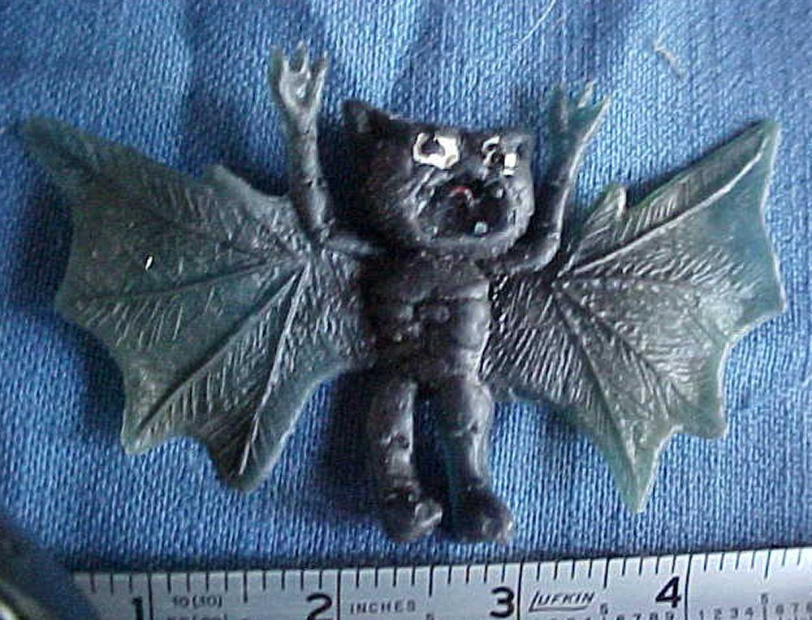 |
Circa la paternità della “Branca” nel suo status definitivo e completo, comunque, malgrado la chiarissima attribuzione delle ispirazioni primordiali, la questione è molto più aperta. Il gruppo Q (Tòtoro e Vìxykatt) hanno messo solide radici nella drammatica romance tra T.G.B. e H.H.G.A.T., fondamentale nell’architettura dell’intero Libro. Vì e Pàncer hanno curato gli aspetti più da “space Opera” (la geopolitica dei Cavalieri del Cosmo, i Patrizi Taradiàni del Centro, le tecnologie dei Vascelli Interstellari), le battaglie spaziali tra incrociatori Interstellari e quel genere di aspetti, nonché la geofisica dei vari Satelliti Pegasiani, una biologia plausibile delle DragoMontagne. Persino il gruppo Zeta (molto meno degli altri però) ha infilato un proprio contributo nella spia Uthmogghina Lady Janice ed, in certa misura, nella caratterizzazione di alcuni Vampiroidi, come Lord Mèndros e lo Zìvouggurd Lord Vlàdirog e la sua malsana ossessione per H.H.G.A.T. In ordine d’importanza decrescente, per entità dei contributi e per grado di affezione al Libro, si concorda di menzionare così i Soci Fondatori : 1) Rìddler, 2) Tòtoro e Vìxykatt (a pari merito), 3) Vì, 4) Pàncer, 5) un po’ staccati, Dæmònya e Citicìspo.
G.E.G. di Napoli è nato come Libro sperimentale, fatto apposta per riciclare rimasugli di altro e di fonti eterogenee, come quelle ricette povere fatte con gli avanzi dei giorni prima. Non si è mai fatto mistero di questa genesi umile, di palesi scopiazzature ed auto riciclaggi assai arditi. Invero questa genesi è stata, al contempo, presuntuosa ! Perché volevamo dimostrarci di poter amalgamare tutto, ma proprio tutto, in un qualcosa di paradossalmente funzionante e con una sua coerenza interna. Perché per noi anche il genere Fantasy deve possedere almeno la coerenza interna e le cose possibili o meno devono obbedire ad una qualche logica consistente. Ovviamente per costruire un muro solido con pietrame tagliato a caso, bisogna smussare e riposizionare con gran cura i pezzi.
Intanto, la cosa più buffa di questo libro, è che sono state create varie mappe e piantine molto prima del libro stesso. Queste piantine (ne mettiamo due schizzi in tabella), che attingevano a piene mani dalle mappe del Signore degli Anelli e non solo, erano nate per creare dei giochi di guerra (non esattamente di Ruolo, semmai dei Risiko) ante litteram. Erano dei Risiko senza sapere di esserlo, poiché Vì, appassionato di giochi di Guerra, non conosceva all’epoca nessun Risiko (forse nemmeno esisteva ancora) quando creava questi giochi da tavolo. Erano semmai varianti guerresche del Monopoli, giocate con puntine di vari colori, pallini per armi ad aria compressa, gommini ed altri segnaposto piccoli ed economici per segnare i pezzi da disporre sulle Mappe. Probabilmente queste mappe datano tra fine anni 70 ed i primi anni 80 (si notano i segni di ingiallimento dell’adesivo dello scotch nella seconda), ma non è facile ricostruire a che periodo afferisca la specifica Mappa che è stata poi ripresa pari pari per G.E.G. di Napoli, con la sola ridenominazione geografica, perché dopotutto non si potevano certo mantenere i nomi Tolkieniani scopiazzati di sana pianta ! Tanto per capire l’entità del plagio smaccato, la megalopoli Vampirica diventata poi Kantàrtis, originariamente si chiamava Morgoth (come il Valar malvagio per antonomasia), nome peraltro rimasto nel libro ma in tutt’altro contesto ! E prima ancora aveva preso il nome della Torre Oscura di Sauron. I nomi copiati sono stati tutti sostituiti, ed altri aggiunti. Ad ogni modo la Mappa è nata con enorme anticipo sul Libro.
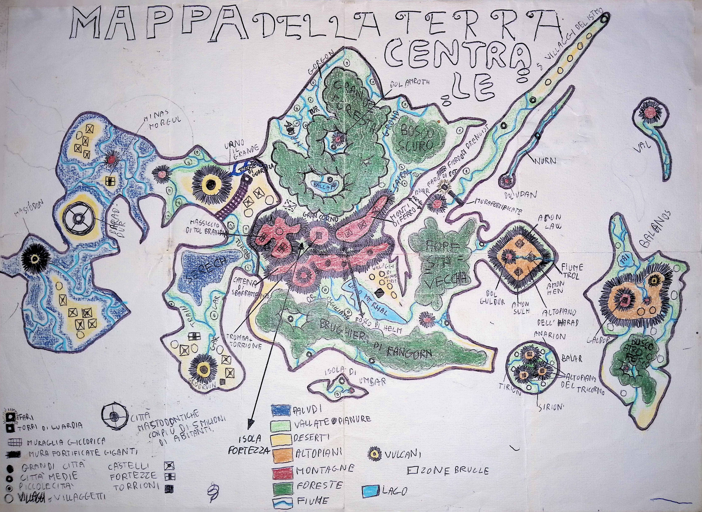 |
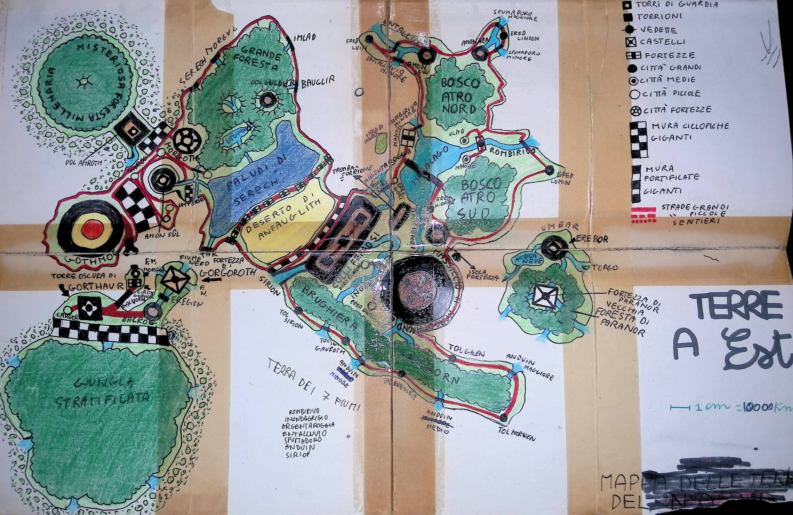 |
La bozza più antica (infarcita di nomi Tolkieniani scopiazzati pari pari). Alcuni punti chiave persistono nella bozza meno antica a destra : il possente vulcano (che sarà poi il Gar‒Dhùrham), le mura Ciclopiche e Megalitiche (a scacchi bianchi e neri), le “Torri Infinite” |
La grande megalopoli Vampirica : il cerchio a 5 settori con un cerchiolino interno. Le Torri Infinite sono rappresentate da un quadratino nero con cerchiolino bianco. La Torre Oscura ha un doppio occhio bianco dalla pupilla nera (palese clone di Barad Dûr) |
Un tema impiantato nel Libro, quello delle ‘Torri Infinite’ (Rab–Itìr, Týlengar, presenti però anche nel sequel Il Contrattacco Interrogativo, Cfr Rognaarog, la Torre delle Rune e centro di comando universale delle Ali Nere) e delle Mura Ciclopiche Megalitiche, è antichissimo, e parzialmente intrecciato agli Interrogativi di Rìddler : questo ha portato poi, nel seguito, a partire da una collaborazione tra Rìddler, Tòtoro, Vìxykatt e Pàncer, alla creazione dell’Alta Magia Vìgiera (che ha qualche caratteristica Interrogativa, sebbene forse prevalga una certa matrice religiosa). Nell’episodio / fumetto incompiuto intitolato La Guerra Interrogativa, era emersa anche la prima implementazione del colossale vulcano Gar‒Dhùrham (le Mura Ciclopiche Megalitiche erano all’epoca una barriera fisica artificiale protettiva da esso).
Ad ogni modo, G.E.G. di Napoli come progetto Libro nasce essenzialmente per volontà di Citicìspo, con lo scopo esplicito di sperimentare trame erotiche, visto che in Cronache di Constance e delle Stirpi Originarie dei Guardiani aveva avuto solo una piccola particina (Principessa Sàmaranth), e meno ancora in La Guerra Interrogativa (in cui la tematica, oltre che essere del tutto marginale, è anche connotata in maniera esclusivamente negativa). I lavori nel sottogruppo Zeta sono sempre stati asimmetricamente distribuiti, sia per ruolo che quantitativamente : il ruolo propulsivo è sempre stato quello di Citicìspo, con la sua visione maschilista, e sua anche la maggiore produzione di bozze; laddove invece Dæmònya si è sempre limitata a tentare disperatamente di ammantare di una sia pur minima plausibilità i personaggi femminili ‘Funzionali’, curandone l’introspezione psicologica. Citicìspo riconosce il valore di questo contributo meno appariscente di Dæmònya, che a suo stesso dire è servito a tramutare partiture porno di bassa lega in sofisticati quadretti erotici di perversione più sottile. In questa “Branca” Citicìspo, appropriandosi di G.E.G. (indiscusso protagonista), si è sbizzarrito abbastanza a ruota libera. La sua stessa genesi (un Napoletano disperso in universi paralleli permeati di alta magia !) pare derivare da due libri del maestro Marcello d’Orta : Io speriamo che me la cavo e Romeo e Giulietta si fidanzarono dal basso, entrambi ambientati a Napoli (siamo circa a metà degli anni 90). Invero il personaggio di Lady Skelloer, a dichiaratamente ‘Funzionale’ al Napoletano, ha finito per impietosire persino Vìxykatt, che non avrebbe voluto metterci mano percependola molto distante da sé, e che le ha infuso anche un po’ di spessore sentimentale, nei limiti concessile. G.E.G. di Napoli ha rinfocolato la voglia di sperimentare un po’ di tutti. Pàncer, con la volontà di mescolare intenzionalmente qualsiasi genìa dalle varie fonti Fantasy con l’aggiunta di Vampiri nonché di Spade Magiche del potere; Vì con il tema di Dònovan Fèrgus Wallace (il Morgoth di Lad o il Messia Nero), dei suoi droidi ed armi iper tecnologiche e la IA sotto il vulcano, dell’antispecismo ed ecologismo portati ai limiti estremi di coerenza e radicalizzazione; Rìddler infine con il Leitmotiv dei Vìgieri e dell’Alta Magia Vìgiera e della razza dei Legislatori (= Arcangeli Distruttori), assai gradita anche al sotto gruppo Q, che ha preso a cuore le vicende del Gatto / Vìgiero Pasquale e dei suoi due discendenti, Lìlloli e Tommaso, e poi del Gatto Graffiatore di Vògrel : Silvestro. Insomma un guazzabuglio di spunti di natura eterogenea, frullati insieme ed amalgamati non si sa bene come o da chi. Il sotto gruppo Q ha preteso anche una particina aggiuntiva nella romance a tinte pastello tra il WarLord e la tenera fata Thelésia, per poi finalmente assumere il controllo del secondo personaggio più importante del Libro : la straziante, romantica figura di Ràllen del Baluardo (la Maga Rossa). Ne è emerso un Libro simile alle Sinfonie di Anton Bruckner, basato sulla giustapposizione di blocchi intenzionalmente stridenti tra loro. I personaggi, singolarmente, incluso G.E.G. stesso, sono tutti implausibili, stereotipi parziali appena sbozzati, ma nel complesso l’armonia si crea dalla presenza di tanti estremi diversi tra loro e nella coralità dei contributi alla trama, invero assai equilibrata e ben contorta.
Questa “Branca” può vantare anch’essa alcuni embrioni primordiali. Un personaggio de I doni del vento di mezzanotte di Waclaw Sieroszewski (una fiaba polacca del 1940), tradotto con ‘La Reginotta’ in un’edizione italiana, aveva fortemente colpito il giovane ‘Tòtoro’. L’imprinting risale probabilmente al periodo malcontato 1979 / 1981, ma continuando a fermentare in sottofondo, anche durante l’attività onirica (riferisce ‘Tòtoro’) fino ad almeno il 1984, in un sogno etichettato come Il Monastero delle Stelle (NdR : questo spunto è stato introdotto anche nell’omonimo di Cronache di Constance e delle Stirpi Originarie dei Guardiani, in cui è presente questo complesso monumentale emblematico della tradizione Constantiana ed ubicato sul CornoPicco, in ClivoLandia, e sede del Sommo Patriarcato di Constance). Se, da un lato, lo spunto del Monastero delle Stelle è finito nella prima “Branca”, l’idea della Reginotta è confluita invece in questa quarta “Branca” di molto posteriore, come prima stesura. Questa affascinante ragazza esprimeva le caratteristiche solitarie di un confino in un luogo romito : nel libro di Sieroszewski era segregata dal truce padre (una sorta di severo e burbero Mago), nel sogno di ‘Tòtoro’ non è chiaro, ma era comunque una sorta di romantica Principessa da liberare, prigioniera in un sistema di grotte ricche d’acqua, buie e fredde. Questa figura si è poi sdoppiata nelle due gemelle Vàldryanne : le due maghe dalle chiome ‘ginger’ tenute segregate dai predoni Holmworde. Rocca di Stella è il libro più amato da Pàncer (e a cui egli ha contribuito forse di più, non tanto e non solo nella creazione di bozze o nella stesura finale, ma già a livello di progettazione di scenari, cronologie storiche, ambientazioni). Pàncer ha reso questo libro il più simile ad un romanzo storico, per l’accuratezza e complessità dell’ambientazione storica, geografica, sociale, economica dei vari popoli e luoghi. Un lavoro prezioso, duro ma impercettibile ad un lettore distratto od approssimativo, è stato svolto dal Master Editor Vì, a posteriori, nella gestione delle Incollature di Trama (rare nella PluriLogia ed insidiosissime).
Le due principali incollature sono tra questo Libro ed I Venti del Giravàgo, e riguardano sia contatti tra i due mondi (punti di sincronia tra le trame) sia omologie tra razze aliene (i Greelnar–Ýdugh Rigeliani di Kh’Lor sono esattamente un diverso nome per la medesima specie elettromagnetica : gli Shyeezaar dell’altro Libro). Allo stesso modo gli Arcangeli de La Parola Sepolta sono i medesimi Legislatori o Arcangeli distruttori di Lad (G.E.G. di Napoli). Queste incollature di trama, rare ma pregne di significanza, lasciano trapelare l’ossatura sotterranea coerente della cosmogonia a livello pluri “Branca” (anche se non sottendono l’intera PluriLogia ma solo alcuni sotto insiemi).
Rocca di Stella è stato corale nella natura quanto nella composizione, sebbene il sotto gruppo Zeta vi abbia contribuito pochissimo (appena la figura di Lady Shænnon Hoelmstædt, un’Ancella Syrdougahll di etnia Wyngqjll) ed anche Rìddler abbia messo mano quasi solo ai Diavoli Corruttori (ma meno di Vì e Pàncer) ed al concetto del Marchio o Segno di Condanna (Gròuwluth). Esistono di sicuro tracce certe di quando il Libro ha cominciato ad essere scritto (è stata completata l’ultima revisione attorno al 2022) : all’incirca 40 anni dopo le ispirazioni originali mai svanite. Paradossalmente, e, davvero, ciò è paradossale ! Tra le remote radici e la prima stesura vera e propria, s’è creata una sorta di vuoto non semplice da riempire. È più tedioso ricostruire le vicende di un libro tracciato in ogni backup che non di quelli i cui primi bozzetti sono stati disegnati su carta. Questo in parte è dovuto ad un’opera di riscannerizzazione da analogico a digitale, pervasiva, di tutto il materiale cartaceo risalente a volte fino ai primi anni settanta, messo a disposizione da chiunque avesse conservato testimonianze cartacee, e classificato con precisione da Vì a posteriori. Invece i backups digitali si sono rivelati smisurati, sparsi in decine di hard disks, impacchettati in miriadi di file in formati compressi ostici da cercare senza aprirli uno ad uno. Il paradosso consiste nel fatto che sia stato più semplice ricostruire l’evoluzione dei Libri che avevano poche e vaghe tracce cartacee di quanto non lo sia stato per quelli che, da qualche parte, avevano tutti i dati in gran dettaglio e precisi al secondo, ma disseminati in miriadi di archivi digitali. In definitiva, si è deciso di rinunciare semplicemente ! La facilità di produrre dati digitali e di clonarli, a confronto di quelli analogici fatti a mano, che ora esistono in un numero limitato di copie, complete ed identiche, ha contribuito a creare un problema di difficile accessibilità degli stessi. Veramente ci siamo scontrati col fatto che la mole di tutti questi backups con le versioni intermedie di ogni Libro in fase di stesura o revisione, è semplice cresciuta troppo, diventando di fatto troppo onerosa da setacciare.
Questa “Branca” ha una particolarità assolutamente unica nell’intera PluriLogia : è stata la sola ad avere incorporato input esterni da parte di persona conosciuta. Una persona, di cui ovviamente non può essere fatto il nome (anche se paradossalmente non avrebbe alcun problema in ciò), che si era dimostrata in un dato periodo storico (posteriore al 2000, anteriore al 2010) curiosa nei confronti della scrittura creativa. Avrebbe voluto esplorare la possibilità di scrivere qualcosa senza però sentirsi adeguata, in quanto non allenata ad esercitare la fantasia e, quindi, poco propensa a questo genere di impresa. ‘Vì’ le aveva proposto di inventare verbalmente a ruota libera, in modo anche sregolato : avrebbe preso appunti e poi trasferito lui le idee nello scritto, magari smussando alcuni spigoli. Vennero seminati in pochi giorni di entusiasmo iniziale vari spunti, come quello delle Lùnole e delle Tarlùne : piccoli corpi celesti che, chissà come, orbitavano gli uni dentro gli altri, entrando ed uscendo da buchi. Tarlùna deriva da tarlo, l’insetto che trafora il legno producendo cunicoli. Anche l’idea di strani Amuleti / Talismani dotati di particolari poteri magici deriva da questa semina esterna, in particolare la MariStella (Hýdryll) della Sirenide Ærënne, nonché l’idea di una ragazza alata. La storia saffica faceva anch’essa parte dell’ordinazione. Costei si è poi disinteressata abbastanza presto alla prosecuzione della collaborazione, ma ‘Vì’ ha dato seguito alla cosa, nata per gioco, continuando ad innaffiare quei semi sparsi a caso, curioso di vedere cosa ne sarebbe cresciuto.
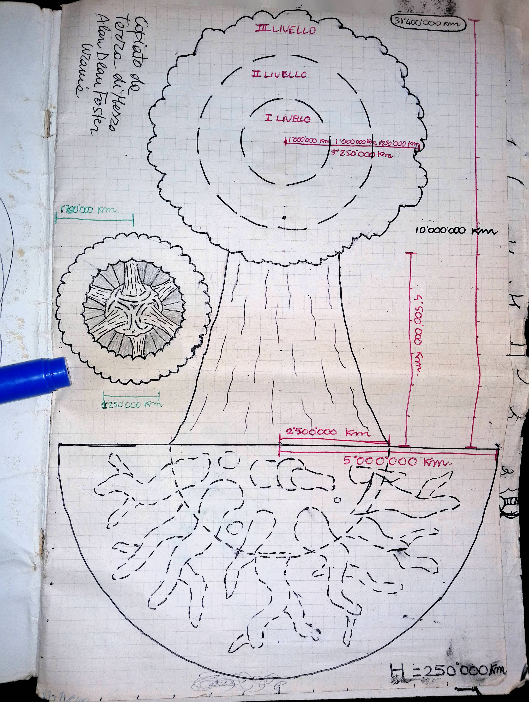 |
In figura, il Mondo Albero di Rìddler (creato per ispirazione del libro Terra di mezzo, di Alan Dean Foster) ed a sua volta ispiratore della Lùnola di Xylàptera, la patria di Capo Gòrbium, il Bémthos ed, in misura minore, della rispettiva Tarlùna di Arbòrea. La struttura di questa “Branca” è costituita di pochi libri (solo 4) relativamente grandi. Libro I : La cerca dei Grandi Amuleti. Libro II : I Gìrovan e la Compagnia dei Campioni. Libro III : Il Retaggio delle Stirpi dell’Arca. Libro IV : Di nuovo Fratelli. Verso la Gloria. Tra loro sono estremamente eterogenei, in particolare stilisticamente, anche più di G.E.G. di Napoli, a causa di radicali avvicendamenti non tanto nell’editing, quanto proprio nella parte compositiva. Nei primi due libri ad es. il tema epico è praticamente inesistente. Forse l’unica eccezione è il duello tra il lucertolone mannaro (il ladro del Dèsmokrugh) e la Galandrìgghern di Athròrvija, (la Guardiana di Felegnàuli). Sono, al contrario, libri dominati dal “Weird” (l’Eccentrico), dal Mistero, dallo Strano. |
Queste parti risentono ancora decisamente dell’imprinting originario, esogeno, di cui si è fatta menzione. E fin oltre pagina 300 nulla lascerebbe nemmeno sospettare incombenti e radicali mutamenti di scenario e paradigma, che invece irrompono dopo il capitolo 42 : Lo Starfiròlo. Col terzo libro comincia a salire il livello della guerra imminente contro gli invasori Altairiani dell’Arca Slavonica. Nei capitoli 45 : L’Arca Slavonica di classe Drakul e 46 : Lo straniero, Capitano Tàngkanshoù (nel libro III) si verifica una delle rarissime “incollature di trama” della PluriLogia. Un collegamento diretto (beh, mediato dalla Rete dei Portali della Repubblica Celeste, che provvidenzialmente disconnettono correlazioni spaziotemporali troppo vincolanti) alla “Branca” Rocca di Stella, sebbene il link punti ad un tempo del lontano passato di tale trama (l’epoca del Druido Rosso : l’antenato delle due gemelle Valdrianne). Qui i mondi del Giravàgo cominciano ad apparire per quel che davvero dovevano essere nei piani originari : un’Arca Colonizzatrice guidata da una possente corazzata Intergalattica da guerra : il Core di Classe Tornado dell’Arca Drakul stessa.
Cos’era accaduto, da un certo punto in poi, all’ispirazione originaria ? Chi guidava, adesso, l’evoluzione della trama ? Nessuno ! Era accaduta una cosa che accade non di rado a livello di singoli personaggi o singole scene, ma molto raramente a livello globale : era scattato qualcosa senza una ragione particolare e la trama si era ammutinata ! Aveva cominciato ad auto evolversi, a decidere autonomamente dove volesse andare. L’abbiamo assecondata, contemplando il miracolo di un qualcosa che si renda indipendente dalla mano del demiurgo che l’aveva creata, il quale deve più solo governare il timone per non far schiantare il vascello contro gli scogli. Le parti degli scontri epici cominciano ad essere disseminate ampiamente man mano che i Campioni del Giravàgo si avvicinano al Core, laddove l’infestazione Altairiana è più radicata, e sono costretti a ricorrere a tutto il potere dei loro Grandi Amuleti accorgendosi però che i Viònok–Ohl–Rhòndam, grazie alla loro Transizione Ombra, sono avversari troppo letali, oltre che tecnologicamente superiori. Occorre dirlo : gli esseri elettromagnetici, le entità evanescenti, non sono certo una nostra invenzione esclusiva, ma ci abbiamo spesso investito molte energie per rendere plausibili queste strane specie.
C’è poi un tema (quello della Gattùrnia), che era stato seminato ed irrigato praticamente per l’intera storia precedente, in cui nella trama serpeggia sotto traccia il Leitmotiv Felino. In questo la Gattùrnia ha qualcosa in comune con le stirpi Vìgiere di G.E.G. di Napoli e con le 4 Forfére di La Parola Sepolta. Che essa (anche detta lo Gnàistor) sia cruciale lo dimostra con fatti, poiché è solo grazie ad essa che vengono ribaltate le sorti dello scontro più aspro dei Campioni contro gli invasori Altairiani. Senza Gattùrnia gli altri nove Amuleti ed i rispettivi portatori sarebbero stati destinati a soccombere, ma come Varel riesce a chiamare in battaglia il Decimo, ecco che acquisisce poteri superiori alla Transizione Ombra degli Altairiani stessi. Il tema Felino, per noi, non ha padri né madri e non ha un inizio né tempo. Appartiene a tutti ed è eterno. Nella Gattùrnia, e nel fantomatico Krygglio (la panacea di tutti i mali per qualsiasi Felino), prevalgono l’Eccentrico, il Mistero, il Bizzarro ed ineffabile : la sfera di competenza di Rìddler. Segue nella trama una fase di genere erotico circoscritta alla sanguigna storia di Varel e Lesna Balögh che, nel flusso degli eventi, rappresenta una sorta di inattesa stasi. È una pausa simile al ritrarsi del mare in un’insolita risacca prima che si abbatta l’onda di maremoto, frutto tra l’altro di un avvicendamento compositivo tra i coautori (la barra del timone era passata decisamente al gruppo Zeta, il più a proprio agio con le perversioni erotiche). E tale tsunami, atteso ed incombente, arriva ben presto nel libro IV (ancora un avvicendamento, un passaggio di consegne a ‘Vì’), quantunque, al contrario della grandeur mastodontica della prima “Branca”, qui lo scontro rassomigli piuttosto a quello di un eroico Davide contro un Golia malvagio.
Ora questo libro, specie nel finale, rende giustamente ‘Vì’ alquanto orgoglioso di sé e gli altri ammirati ed impressionati, poiché il suo contributo di chiusura lo rende un libro profetico di eventi reali esterni; anche se, quando è stato scritto, naturalmente non si prefiggeva di esserlo. Ci riferiamo agli eventi reali che portarono dal colpo di stato ucraino del 2014, che depose il presidente eletto Victor Janukovic, e che 8 anni dopo culminarono nel cambio di passo della guerra di repressione della secessione del Donbass oppresso, all’entrata in campo infine della Federazione Russa a sua difesa. Per carità, conoscitori della realtà locale e della storia, come il compianto giornalista ed analista G. Chiesa, avevano già predetto e ben prima di ‘Vì’ l’inevitabile esito, con maggior cognizione di causa, ma diciamo che il finale col botto di questo libro richiama con forza quest’idea di ingiustizie e tensioni accumulate nel tempo che esplodano alla fine in gesta di eroismo per raddrizzare i troppi torti subiti. Quindi ‘Vì’ può ben dire che la fonte ispiratrice del finale sia stata, semplicemente, la realtà di una parte di mondo attuale a cui tiene particolarmente. Al finale di questa “Branca” spetta probabilmente la palma d’oro di parte più epica e patriottica in assoluto, pur innestata a forza bruta su una trama che era stata per gran parte assai diversa. E la coincidenza più avvincente è che anche qui, nel Libro, sono genti di stirpe Slavonica a cambiare il corso della Storia (non solo la loro, non solo della Fratellanza Slavonica, ma dell’intera ecumene umana … proprio quello che sta accadendo nel Donbass, dove per la prima volta l’espansionismo perpetuo dell’Alleanza Atlantica si è scontrato contro uno scoglio troppo duro e determinato su cui si romperà le zanne, cosa che a sua volta cambierà, sta già cambiando, il corso della Storia del mondo intero). Il martirio consapevole accettato dall’Ammiraglio Siglÿnde, che si determina ad accettare stoica il proprio fato infausto per senso del dovere, pronta a pagare qualsiasi prezzo pur di non deludere le aspettative altrui (persino di fratelli lontani di cui prima neppure conosceva l’esistenza), è la scintilla che scatena un incendio indomabile. Ella è investita di un furore patriottico sacro, fanatico, come una Giovanna d’Arco, che alla fine contagia un po’ tutti, ed in tutte le Lùnole e Tarlùne è unanime l’adesione all’idea di uscire dal Meta Spazio e tornare nel flusso ordinario del Tempo, anche se ciò li porterà inevitabilmente all’apocalittica battaglia del Disco di ε Eridani. Ed alla fine è tutta una rincorsa di emulazione, un incendio che divampa e travolge tutto quanto investe. Novaya Kaliningrad era, per ‘Vì’, una rivisitazione di Stalingrado : in un certo senso voleva rappresentare un tributo esplicito alla sua memoria. Il martirio della principessa Hasfol Siglÿnde per conquistare l’Ammiraglia Altairiana, il sacrificio di altri dei Campioni, sono di ispirazione in tutta l’enclave di Novaya Kaliningrad, ed a breve dell’intera Fratellanza, che si getta tutta in avanti dopo secoli di stallo e stagnazione. Questo episodio, purtroppo (ma si tratta di altra fortuita coincidenza), viene ad avere significative somiglianze con Hyperion (di Dan Simmons), dove il martirio di Colei‒Che‒Insegna traumatizza e muove le coscienze dell’intera umanità, spingendola a ribellarsi contro il TecnoNucleo. Capita. Si tratta di convergenze di pensiero a volte inevitabili.
Questa “Branca” non ha genitori specifici : nessuno di noi può reclamarne una paternità prevalente. Tra l’altro deriva dalla fusione con “Anomalie Devianti” (come riferito nel libro stesso) : una trama indipendente che, nel confronto con la filiera principale, è andata atrofizzandosi sino a venirne riassorbita, dove possibile, od abbandonata, laddove si sarebbe trovata in conflitto con la filiera portante. Anomalie Devianti paradossalmante un’ispirazione esterna l’aveva pure avuta : attingeva alla mitologia celtica del ciclo di Lavondyss (La Foresta dei Mitago) di Roger Holdstok, ma è rimasto uno dei rarissimi casi in cui tale ispirazione sia stata totalmente lasciata morire senza alcun seguito. Il libro invece si è auto evoluto in gran parte, anche per il fatto di essere stato scritto davvero a più mani (forse il più equilibrato in assoluto come entità di contributi), per cui è difficile parlare di lontane radici dell’ispirazione. Non ce ne sono state, da parte di nessuno di noi. Sono stati mescolati di reagenti ed è scaturita una reazione. Forse l’humus globale della PluriLogia, sviluppato sino a quel momento, era ormai abbastanza fertile che semplici semi buttati lì germinassero e decidessero praticamente da soli dove andare.
La genesi è stata al contempo rapida e molto lenta. Non è un ossimoro ! Rapida in anni, perché dalla prima confluenza delle due sotto trame embrionarie alla prima stesura definitiva sono passati sì e no cinque anni a dir tanto (e per noi di SGRPB7, che ragioniamo in termini di decenni, cinque anni rappresentano un libro molto frettoloso !). Ma al contempo lenta, lenta in termini di ore di scrittura, perché comunque ha visto poche fasi di crescita violenta e impulsiva, ma ha richiesto costanti piccoli passi. Si possono consumare molte ore scrivendo poco, lentamente, a volte. Questo libro, che è il più corto (anche se marginalmente), ha consumato più ore della sua dimensione apparente. Anche il lavoro documentale (di Rìddler e Pàncer) sulla demonologia e sulle potenze celesti è stato lungo e lento, poiché non occorreva soltanto raccogliere nudi dati e fredde informazioni in un settore nuovo per tutti, ma anche interiorizzarli. Dovevamo imparare prima di tutto ad accettarli per veri, reali, o non avremmo saputo usarli in modo verosimile e credibile. In SGRPB7 i più sono (siamo ?) agnostici o quasi, ma per scrivere La Parola Sepolta sono (siamo ?) dovuti diventare credenti. Quei nomi arcaici, di Diavoli e di Arcangeli, dovevano prendere vita, acquisire colore, spessore e personalità in certa misura. E misteriosamente è successo, ed è stato catartico. Forse tutti avevamo voglia di tornare a parlare, e scrivere, del Bene e del Male e della loro fraintesa natura.
Abbiamo anche fatto alcune scelte non ortodosse, forse blasfeme per la dottrina. Non perché programmate, ma perché si erano rese necessarie al volo, specialmente circa la distanza abissale di Dio anche dalle più alte sfere delle potenze celesti (i Keruvim), ed ancor meno convenzionali circa la distinzione tra la figura di Satana e Rè Lucifer (figure normalmente identificate nelle demonologie classiche). Che dire infatti della figura del Primo Increato / Satana / Djjnyahfar ? Nessuno di noi se l’era mai immaginato così. Così umano e disumano ad un tempo e così poco malvagio, in realtà. Ma egli ha assunto il comando di sé stesso sin da subito, ha deciso cosa essere, cosa diventare, quale fosse la sua vera natura, e l’ha rivelata poco a poco alla sua concubina come mai prima.
Questo libro esisteva da qualche parte, non si sa dove. Il suo stesso titolo è forse la prima cosa ad essere stata creata (Rìddler), ma nessuno, per lunghissimo tempo, fino a trama inoltrata, aveva ben chiare le idee su questo concetto. Ci piaceva come suono, sembrava un titolo giusto : ma giusto per cosa, visto che il libro non esisteva ancora ? Può un titolo, come un magnete, guidare l’evoluzione di qualcosa che in teoria dovrebbe precederlo ? In cosa consisteva una “parola sepolta” ? Abbiamo estratto il libro da una realtà parallela, dall’Altrove, più che inventarlo e scriverlo, come un archeologo spolvera le fondamenta di un tempio preesistente, e solo piuttosto avanti si è deciso che essa dovesse essere il nome segreto del Demonio, dimenticato volontariamente dall’ultimo Messia di Kroangst che aveva bandito la sua reincarnazione. Quest’idea ricorda un po’ la soluzione del film Sfera, vero ? Dove i protagonisti decidono che la Sfera aliena è uno strumento troppo potente e pericoloso e l’umanità non è pronta ad interagirci, e siccome conferiva facoltà onnipotenti ai desideri inconsci, ai sogni, scelgono deliberatamente di rinunciarci e dimenticarla, di scordare tutto quanto accaduto incluso l’incontro con la Sfera stessa, che graziosamente li asseconda e se ne va. Ebbene, Khobb Vanahùr, compresa la pericolosità del vero nome del Primo Increato, 8000 anni prima dell’inizio cronologico della trama, aveva deciso di portarselo nella tomba senza rivelarlo neppure ai suoi fedeli seguaci, per evitare che potesse cadere in mani sbagliate. Questo passato si è creato da sé in retrospettiva, mentre scrivevamo del tempo presente. È stato strano, straniante, perché tutto è andato al posto giusto. Anche se è il libro è complesso e la trama (su due piani) è contorta, non è stato un libro difficile da sbrogliare, l’ha fatto da sé. Che ce l’abbia ispirato il Demonio, visto che non se ne parla poi così male ?
‘Tòtoro’ e ‘Vìxykatt’, hanno pianto quando la dolcissima Rye ha riscattato l’anima perduta di Rè Lucifer col suo amore illimitato ed incondizionato, strappandolo al campo avverso; quando si è legata ancor più a lui nel momento in cui tornava a sottomettersi al giudizio dei suoi antichi pari, per infine riuscire a farlo riaccettare come genuinamente pentito. Non volevano scrivere questo, non hanno mai avuto in mente di tirare così in alto, anzi col senno di poi ancora sembra eccessivamente ambizioso, ma è accaduto da sé, l’hanno visto succedere come fosse inevitabile. E quando anche gli altri hanno letto le bozze, stupefatti, poi hanno ammesso che sì, doveva andare per forza così, non si avvertiva il minimo sentore di forzature. Questo libro non aveva nessuna idea embrionaria da parte di nessuno, e non ha avuto pre progettazione (anche se ha richiesto esteso lavoro documentale in fieri, perché di demonologia e dottrina sapevamo tutti poco). Anche l’idea di sviluppare un libro su due piani distinti (uno materiale ed uno metafisico spirituale, il Mormorio od Æthéreum) è stata nuova per tutti e per nulla intenzionale. E che dire dell’Unisono, la fusione momentanea delle due realtà ? Anche quello ci ha sorpresi, mentre si formava da sé, spontaneamente. Quel che abbiamo dovuto fare, spesso, è stato rallentare, aspettare, affinché queste bolle affiorassero da sole da un denso acquitrino malmostoso. Abbiamo sempre navigato a vista, senza sapere dove saremmo approdati né come. Ci ha costretti ad interrogarci sulla natura del Disegno di Dio (una volta assunto per vero che ne esista uno). Se è stata ispirazione, è una forma che non conoscevamo, perché sembra provenire da chissà dove.
Infine … Non si dovrebbe dire perché è prematuro ed il progetto è molto debole e probabilmente verrà abbandonato, ma c’è una vaga intenzione di un terzo sequel, che però al momento è estremamente squilibrato, poiché l’idea è stata proposta dal solo gruppo Zeta e lo sta portando avanti per conto proprio. E sta diventando un romanzo di genere erotico quasi puro che sarà molto difficile riportare nell’alveo della PluriLogia. Vedremo !
A cura di ‘Pàncer (‘Doréamon’), ‘Vì’ e Citicìspo.
A cura del gruppo Q : ‘Tòtoro’ e ‘Vixykatt’ (revisione bozze di Vì).
I 7 Soci Fondatori.
Vì — Tarcìsio Astronnàrdi — ‘Vì’.
Q' — Ermenegìsto Sarchiavizzàni — ‘Tòtoro’.
Q" — Arielle Heulengale — ‘Vixykatt’.
Zeta' — Lenore Grace Föwlinger — ‘Dæmònya’.
Zeta" — Pasquale Funo–Heinz — ‘Citicìspo’.
Pàncer — Romèsto Trincagliùto — ‘Doréamon’.
¿♠ — ??? — ‘Riddler’.
Cosa sono i cosiddetti Libri di Ruolo, in generale e nello specifico della saga ? Cosa intendiamo noi, SGRPB7, con la dicitura Libri Paralleli o PoliLibri, che danno il nome alla Saga stessa ed al nostro acronimo (Poly Books) ?
Intanto vediamo cosa NON sono i nostri PoliLibri ! Non sono storie a grafo, multi trame interattive che cambiano secondo scelte fatte dagli utenti. Il più classico illustre antenato di questo genere di testi, portato all’estremo, era stato Cent mille milliards de poèmes (A Hundred Thousand Billion Poems o One Hundred Million Million Poems), un’opera interattiva del 1961 dell’autore francese Raymond Queneau. E questo “libro”, che non era UN libro univoco ma plurivoco : un’opera “polidromica”, come funzionava ?
Si trattava di un “libro” poetico composto da 10 sonetti (poesie di 14 versi ciascuna), quindi dieci “pagine” sui generis, ma con una struttura geniale : ogni sonetto era diviso in 14 strisce orizzontali intercambiabili (una striscia per ciascun verso). Le 10 pagine erano tagliate orizzontalmente, permettendo di sfogliare le 14 sezioni indipendentemente l’una dall’altra e combinare liberamente le strisce tra i diversi sonetti. Queste combinazioni sono ben 10 elevato alla 14 combinazioni possibili diverse, ovvero 100’000’000’000’000’000 (cento milioni di miliardi) di poesie diverse, tutte valide come sonetti coerenti grazie alla maestria linguistica di Queneau che in ciascuna sezione si atteneva a precise regole sintattiche di connessione verso l’alto e verso il basso. Chiaramente la differenza può al limite consistere in un’unica strofa su 14, ma tanto basta per definire matematicamente diverse le due poesie complessive. Si trattava quindi di una “multitrama” interattiva nel senso che il lettore diventava co-creatore, assemblando storie/poesie uniche in un numero elevatissimo di varianti.
R. Queneau era stato un membro fondatore dell’Oulipo (Ouvroir de littérature potentielle), un gruppo di scrittori francesi che sperimentava con vincoli formali per creare letteratura “potenziale” generativa, ossia creata in tempo reale dal lettore stesso, in base a sue scelte arbitrarie, sebbene scelte “chiuse”, non libere ed illimitate (come accade nelle partite dei Giochi di Ruolo veri e propri, dove si può esercitare la propria fantasia). Questo libro è stato concettualmente innovativo negli anni '60, più poetico che narrativo, esplorando la possibilità di creare infinite narrazioni possibili attraverso la combinazione. Lo potremmo considerare un libro parente stretto dei cosiddetti Algoritmi Genetici. Anche le IA generative del 2024 / 2025 lavorano così : ricombinano contenuti originariamente creati dall’uomo per produrre novità e varianti tramite il caos controllato.
Ebbene, la PluriLogia non è nulla di tutto ciò, ma qualcosa di molto più classico, e molto più affine ai Giochi di Ruolo. Si tratta infatti di creare una selezione limitata di trame largamente indipendenti tra loro (sebbene presentino talvolta le cosiddette “incollature di trama”) ma che tuttavia sono costruite a partire da archetipi o Leitmotivs comuni. I Leitmotivs sono i mattoni da costruzione fondamentali che rappresentano strutture base, dai marcati tratti essenziali, e che equivalgono alle “carte” nei Giochi di Ruolo da tavolo. Una carta ha dei tratti fissi, delle caratteristiche, ma può essere usata con flessibilità. In informatica, i nostri archetipi equivalgono alle abstract classes del C++ che vengono istanziate più e più volte in varianti specializzate, integrando i tratti base con dettagli variabili, e collocati ad agire in scenari e contesti differenti, dando origine ad una varietà combinatoria. Ogni Libro Parallelo è un’opera completa in sé stesso ed indipendente, al pari di una partita giocata, ma solo dall’esame della PluriLogia intera, nel suo insieme, emergono i Leitmotivs portanti sotto la superficie.
In comune con il lavoro di R. Queneau c’è l’idea dei blocchi tematici. Ma mentre nel suo progetto l’enfasi era stata sulla compatibilità sintattica e concordanze grammaticali per consentire la libera ricombinazione dei pezzi di testo (in sequenza fissa, predeterminata), per noi i blocchi obbediscono solamente a caratteristiche di ruolo da impersonare, che trascendono le singole istanze, le specifiche implementazioni. Però il lettore non ha nessuna scelta nel creare le proprie trame, così come giocherebbe le sue partite in veri Giochi di Ruolo. Queste “partite” diverse, solamente sei, sono state già giocate da noi e registrate in libri. Sei sembrano poche, ma sono partite immense, con l’ambizione di essere veri libri e di grossa taglia. La PluriLogia nel suo complesso ha superato i due milioni e quattrocentomila parole ! È monumentale persino nelle sue singole parti. Non è un’opera condensabile in dieci pagine, supera nel complesso le quattromila pagine native (ancor più se considerate standardizzate).
Perché gli archetipi sono così importanti ? Perché la PluriLogia, nel suo insieme, somiglia alla sovrapposizione di molte partite di Giochi di Ruolo costruite a partire dalle medesime Carte da Gioco (= i Leitmotiv). Con le stesse Carte si possono, almeno in teoria, giocare infinite partite, cambiando l’ordine ed il modo di combinarle. Solo contestualizzando molteplici volte un archetipo, facendogli giocare svariate partite diverse, si può arrivare a coglierne tutte le sue sfaccettature. Alcune ‘Carte’ sono marcatamente polarizzate, come l’archetipo dell’Energumeno o della Valkiria / ‘Lady Oscar’ / Taarna / Lady Death, o la Carta delle gemelle sensitive / guaritrici. Talune altre, come dei Jolly borderline, sono più flessibili e possono addirittura cambiare schieramento, passare dal Bene al Male o viceversa, o persino destreggiarsi ambiguamente al loro sfumato confine. Alcuni personaggi, lo si vedrà, sono detti Funzionali poiché rispondono ad esigenze esterne ed obbediscono alle necessità della trama o più spesso complementano i protagonisti. Hanno un ruolo facilitatore nei loro confronti in quanto subordinati (non in senso gerarchico, in senso più astratto : servono la trama anche quando magari comandano sui protagonisti veri). Chiariamo con un esempio pratico (ma non appartenente alla PluriLogia) il concetto di funzionalità. Se, in un libro di guerra, un archetipo fosse costituito dalla figura del sergente veterano, vero protagonista, un suo superiore, un colonnello che gli mettesse i bastoni tra le ruote, ancorché gerarchicamente al di sopra, sarebbe una figura Funzionale, perché risponderebbe all’esigenza della trama di far emergere il valore sul campo del nostro sergente.
I nostri archetipi non sono solo personaggi. Altre volte sono idee generali o astratte o persino tematiche collettive, come il Tema Felino, declinato in tutte le Branche e talvolta in più sotto varianti in alcune di esse (Rocca di Stella, I Venti del Giravàgo, La Terza Guerra Interrogativa), il tema della resistenza del Popolo Eletto ed altri. Anche il manicheismo è spesso presente, in primo piano o sullo sfondo, a seconda.
Perché li abbiamo chiamati Paralleli ? A causa dell’indipendenza delle trame delle sei Branche, che pure si sviluppano da queste radici comuni. Viceversa, abbiamo sottolineato la sequenzialità all’interno di ciascuna Branca, laddove ci fossero correlazioni cronologiche (prequel, sequel). Ma la correlazione nella genesi rimane, sono versioni di un infinito Iper Libro potenziale, che ovviamente non verrà mai generato poiché non obbedisce ai vincoli grammaticali e sintattici molto restrittivi scelti da R. Queneau. I nostri mattoni da costruzione sono enormemente più complessi di un verso di un sonetto. Sono personaggi o temi generali, e chiaramente ciascuno può essere declinato con innumerevoli sfumature, e la loro combinazione originerebbe infinite varianti. Così, con le stesse Carte da gioco, in tutto il mondo milioni o miliardi di role game players hanno generato centinaia di miliardi di partite diverse. La PluriLogia rappresenta le nostre sei partite, giocate con le nostre Carte. Solo sei, sì. Ma sono state partite singolarmente lunghe anche sino ad un decennio o più, e complessivamente il progetto ha consumato un trentennio di discussioni e composizione e revisioni.
Ermenegìsto Sarchiavizzàni — ‘Tòtoro’, Arielle Heulengale — ‘Vixykatt’. (Editor di bozze : Vì).
A cura di Vì e Pàncer (‘Doréamon’).
Visioni di futuro, a confronto con opere esterne.
Questo articolo è tra i pochi “confetti” a non rappresentare una mera analisi comparativa tutta interna alla PluriLogia (confronti tra le “Branche”), ma è rivolto esternamente, al come la PluriLogia si pone nei riguardi delle visioni altrui dei futuri; riguarda quindi la disamina della visione dei futuri alternativi.
In passato grandi autori (tra cui i giustamente blasonati Phillip Dick, Aldous Huxley, George Orwell) hanno cercato di spingere la loro visione profetica nel futuro, immaginando, sulla base di avvisaglie e prodromi rivelatisi loro in vita, delle evoluzioni distopiche.
Altri autori (tra cui probabilmente Asimov è l’esponente di spicco, ma ne La Macchina del Tempo anche Wells ha i suoi argomenti) hanno invece proiettato una visione a più stadi e certamente di una profondità temporale più vasta. Hanno immaginato prima una lontana e molto durevole età dell’oro della colonizzazione umana, praticamente l’opposto delle distopie, seguita da una sorta di lungo e faticoso medioevo, un’età della barbarie, principalmente intesa come imbarbarimento tecnologico e decadenza scientifica.
Questa tematica dell’era della barbarie e dell’abbandono e del regresso culturale e tecnologico è in effetti presente in più branche della PluriLogia, anche se in nessuna abbraccia l’intera ecumene umana, ma soltanto dei brandelli rimasti dispersi nell’era del Grande Riflusso Indietro, posteriore al ritrarsi della precedente ondata di colonizzazione umana. Tuttavia, dal punto di vista locale (delle singole colonie rimaste orfane, amputate dal resto dell’ecumene), lo scenario è del tutto sovrapponibile (spesso anzi molto più grave, nei termini di involuzione tecnologica, rispetto a Trantor ed a Terminus) al declino dell’Impero di Asimov.
In Rocca di Stella il mondo di Kh–Lor è imbarbarito, regredito ad un livello preindustriale. Ne I Venti del Giravàgo il declino è meno drastico, ma alla scienza è subentrata una visione magico alchemica dei fenomeni, al punto da avere divinizzato la AI centrale di controllo dell’Arca Slavonica. G.E.G. di Napoli non si inquadra in alcun singolo scenario, essendo un ibrido (e tra l’altro, con una forte componente Fantasy, pur sovrapposta a forza bruta anche a componenti tipicamente SciFi : contrasto stridente che nel Messia Nero di Lad, il quale si fa chiamare il Morgoth, raggiunge l’apice). Il mondo di Lad stesso è un mondo retto da magia e religione, ma non ha una correlazione cronologica, diciamo persino spaziotemporale, univoca rispetto al futuro della Terra. Non si sa nemmeno in che genere di relazione sia con la Terra, perché le dimensioni parallele configurano una visione del tempo non lineare, persino ciclico. Alcune figure provengono da esse, ma da tempi differenti (G.E.G. stesso dagli anni 90, il Morgoth da un futuro abbastanza lontano e post apocalittico, da una Terra se non moribonda severamente malata ed inquinata, divenuta selvaggia ed inospitale, quindi porta una tematica ecologica catastrofista). Ciononostante Lad stesso e tutte le sue razze autoctone non hanno relazioni precise : sono collocate in una dimensione parallela, altra dalla Terra, ed in quanto tali non sono né distopiche né imbarbarite o regredite : sono, semplicemente, altro. Solo la stirpe degli Arcangeli Distruttori (i Legislatori, nel testo) ci accomuna agli autoctoni Ladian. È impossibile classificare questa “Branca” in uno qualsiasi schema univoco relativo alla visione del futuro.
Ma qui ci preme sottolineare un altro tratto : quella che chiamiamo Eutopia / Eucronia (anche solo parzialmente intese).
L’unico autore che, a nostra conoscenza (escludendo Atlas Shrugged di Ayn Rand), abbia sviluppato questa rara visione di futuro, e che ci ha sicuramente influenzati fortemente, è stato Frank Herbert nella sua colossale saga : Dune. Ci riferiamo al cosiddetto Jihad Butleriano, la crociata dell’uomo contro la macchina, l’opposto dell’odierno transumanesimo. La riumanizzazione di un mondo disumanizzato dalle tecnologie al servizio della tecnocrazia ed il rigetto della macchina in sostituzione delle attività più elevate dell’uomo.
In Dune le macchine sono artificialmente limitate e sottoposte a restrizioni molto più radicali e sostanziali che non le mere famose “leggi della robotica” di Asimov. Esse non possono avere una mente, non sono intelligenti. Sono, al più, colossali elettrodomestici vasti quanto piccole lune, ma non senzienti né autonomi. E questa proibizione nel creare macchine senzienti è un tabù cristallizzato ed intangibile. Al loro posto esistono computer umani, i mentat, cioè geni, esseri umani dall’intelletto superiore capaci di fare calcoli di qualsiasi complessità, nondimeno umani a tutti gli effetti. Persino i Navigatori della Gilda sono organici. In Dune è presente un forte tema eugenetico (i progetti delle Bene Gesserit), che a suo modo è distopico, almeno a giudizio dei più, ma non è esattamente una distopia tecnocratica, ed ha connotati pseudo religiosi più che non razziali. Ad ogni modo il Jihad Butleriano ed i suoi effetti di rigetto del transumanesimo, la sua vittoria contro la distopia tecnocratica, è forse la visione di futuro più significativa e trasversale alla PluriLogia, in quanto è onnipresente in tutti i futuri di tutte le “Branche” laddove essa sia applicabile, ossia in qualsiasi civiltà sufficientemente avanzata da avere affrontato, ma in tutti i casi superato, il rischio della tecnocrazia distopica.
In questo ci collochiamo all’estremo opposto della saga di Simmons (Hyperion), in cui le AI del ‘tecnonucleo’ di fatto governano tutto senza che la gran parte dell’ecumene umana neppure ne sia consapevole, e soltanto dei reietti (gli ousters) ne sono consci e vi si oppongono strenuamente. Tuttavia gli estremi si toccano, nel senso che, se non altro, anche in Hyperion è presente una guerra alla distopia tecnocratica. Questa guerra è una tematica presente anche altrove ed emoziona al punto da rendere alcuni film cult come Matrix non soltanto non obsoleti, ma oggi persino più attuali di quando sono stati realizzati. Hanno lasciato retaggi permanenti persino nel linguaggio (si pensi a neologismi come redpillato). Anche Matrix è piuttosto cupo e pessimista, e la speranza è appesa a un filo, ma ciò non implica la resa, quella che al momento sembra avvenuta nella distopia attuale (almeno in occidente). In Hyperion si rende necessario un martirio catartico per risvegliare l’umanità, tramite l’empatia, e spingerla ad insorgere contro il regime nascosto sottotraccia del ‘tecnonucleo’.
In Dune invece, la saga più affine alla nostra in questo senso, la guerra al tecnocontrollo ed alla tecnosupremazia, all’obsolescenza dell’umano, è stata ovunque vinta dagli organici ed archiviata, sigillata da potenti tabù. Anche in tutte le “Branche” della PluriLogia questa guerra, vinta dall’uomo, è finita da così lungo tempo da non essere nemmeno mai stata menzionata esplicitamente, oppure non c’è stata ma è stata vinta ugualmente, è stata prevenuta dalla tenace resistenza delle creature organiche, che non hanno dormito pigramente, scambiando la propria privacy per un po’ di comodità in più, e non si sono fatte sedurre ed ingannare. Non è mai menzionato e/o non si è reso necessario un vero e proprio Jihad Butleriano. Non si sa, non è ben definito. Quel che però è sicuro è che gli effetti della vittoria o della resistenza irriducibile persistono ben saldi : non esiste in nessuna civiltà nessuna forma di tecnocontrollo, di tecnocrazia basata sulla rinuncia, sulla cessione spontanea dei propri dati e riservatezza. Non ci sono stirpi / razze / specie che girano come zombie attaccate ad un dispositivo attraverso un cordone ombelicale. Gli organici non trascorrono ore e ore a rincoglionirsi e perdere tempo davanti ad angusti piccoli schermi, pur sussistendo e di gran lunga le potenzialità tecniche. La scienza e la tecnica, laddove disponibili, sono rimaste al servizio di persone / cittadini, e non solo al servizio dei loro padroni o dei regimi, persino laddove non siano democratici (ma ad es. monarchie o giunte militari come i Centaurosauri Utrexiani).
C’è un’unica eccezione a ciò (anche se di natura non tecnologica). In La Guerra Interrogativa, ma specialmente nel sequel (Il Contrattacco Interrogativo), un’intera serie di universi, la “Metà del Tutto”, sono la quintessenza della distopia. Sono i Mondi Specchio, creati dalle Ali Nere ad imitazione dell’altra Metà del Tutto, perduta in seguito al Dimezzamento ad opera dei Signori Interrogativi. L’Altro Tutto è l’incubo senza speranza, ed anche se la tecnologia è un aspetto marginale, il controllo assoluto esiste. Ogni creatura è spiata, controllata. Le Ali Nere sanno tutto, di tutti, e possono tutto, non obbediscono a nessuna legge se non la loro, non rispondono a nessuno per i loro abusi e tiranneggiano sui loro domini, sui Mondi Specchio, per placare il loro risentimento per la grande sconfitta originale. È chiaro che in tal caso però non si tratta di una distopia pigra, svogliata e passiva, inconsapevole come la nostra ed accettata. I servi sanno di essere servi, sanguinano sotto il tallone spietato dei Dominatori delle Ali Nere, ma non possono opporsi ai titani quadridimensionali del Crycnuros Nero. Pochissimi imperi hanno resistito per un certo tempo (i valorosi Draosoràsi), e sono stati cancellati con particolare durezza, e cristallizzati dentro le Rune di Penitenza Eterna (le Rune Gabbia : le Roghmogh‒Krind). Ma quando dallo sconosciuto Altrove arriva un vendicatore, il terribile Mastro MietiDrago, armato dell’Interrogativo di Comando da Guerra per combattere il Nemico, i mondi oppressi insorgono. Ciò trascende ovviamente la contrapposizione organico / tecnocontrollo, questa è una lotta esistenziale contro il Male Assoluto. Le Ali Nere sono male puro, inconciliabile, quindi questa crociata dell’Alleanza è ben più ampia di una rivolta alla tecnocrazia per riappropriarsi del proprio tempo di vita e della privacy : è una guerra per la libertà nel senso più ampio e totalizzante.
In Cronache di Constance e delle Stirpi Originarie dei Guardiani, che tra le sei “Branche” è la più uniformemente tecnologica (lo scenario somiglia ad una certa space‒opera), si può vagamente intuire come una forma di protezione agli abusi tecnocratici, almeno sulla Luna Pesante, sia stato il radicamento della Fede e dei valori religiosi. I Guardiani sono molto osservanti dell’Antico Credo, ed il tecnocontrollo è percepito come qualcosa di così osceno da non poter nemmeno essere preso in considerazione.
Ne La Parola Sepolta, lo scenario è confuso, e il Leitmotiv religioso così profondo ed onnipresente da dominare su altri aspetti come la contrapposizione distopia / eutopia. La religione domina vita e governo di Kroangst anche a livello istituzionale, ed a maggior ragione è il tema fondativo dell’altra realtà : l’Æthéreum (il Mormorio, il piano metafisico ultraterreno della realtà). Magia e spiritualità saturano la quotidianità al punto da rendere superflua la ricerca della tecnologia. Persino negli invasori alieni, i terribili e giganteschi Kittolakýrm quadrumani, si ha a che fare con una razza socialmente piuttosto antiquata e conservatrice, retta da codici d’onore militareschi che rendono il tecnocontrollo superfluo, sostanzialmente. L’Impero Keléndakar non viene comunque mai indagato in profondità e non si intuisce che stili di vita abbiano nei loro domini. Su Kroangst si avverte soltanto il peso del loro braccio armato, e un esercito è qualcosa di distopico in sé ed in qualsiasi epoca, a prescindere dal livello tecnologico. Tra i militari il controllo è istituzione anche con spada e lancia, non occorre spiare i soldati hackerandogli i dati ! Esiste tuttavia un singolo evento (locale, non abbraccia l’intera civiltà), in cui si suggerisce che la surrogazione dell’organico senziente, empatico, con la macchina, sia una forma di osceno abominio : è il tentativo del telepate Thràxom di ibridizzare il Sacro Dhàmmawhorg (l’Albero magico senziente) con parti cibernetiche rubate ai Kittolakýrm od ottenute di contrabbando dai Collaborazionisti. Il malvagio Artigiano tiene il suo disegno nascosto alla Chiesa Esegetica, poiché sa che verrebbe percepito come blasfemo, eretico (ancorché magari pragmaticamente utile alla guerra agli invasori), una perversione inaccettabile. E Zvìrren alla fine libera il Sacro Tungýruff da tutte le parti non organiche innestate nel suo corpo vivo, e scopre che così è molto più ospitale ed utile nel trasportare il suo spirito nel Mormorio che non con l’ausilio degli aggeggi infernali di Thràxom che avevano violentato la sensibilissima Llyrahl Ahmoogh. Insomma, anche qui traspare l’idea che da certi aspetti, connessi con l’empatia e le emozioni, le macchine debbano semplicemente restare escluse.
Per finire, un altro aspetto, strettamente correlato all’accettazione passiva, inerte, dell’intrusione capillare non solo e non tanto dei governi, ma addirittura di potenti entità private, inelette e non rappresentative, nella vita privata dei cittadini / sudditi, e che del pari non viene neppure lontanamente ventilato come remota ipotesi, è il concetto di danaro “digitale” non di proprietà inalienabile del cittadino. Ciò sembra, a chiunque possieda un minimo di intelletto affiancato ad un minimo di cultura e memoria, manifestamente inaccettabile sotto ogni aspetto. Ma anche qui, pare sia stata allevata con cura una generazione di individui così inerti e rassegnati, così indolenti e rinunciatari, da accettare la sostanziale privazione della proprietà alla fonte stessa per un minimo di maggiore comodità, peraltro solo concessa, e ritirabile in ogni momento, insieme alla proprietà stessa. È l’inversione della grande visione, in corso di naufragio a seguito di sabotaggio ad opera degli stati nazionali e delle entità sovrastatali e sovranazionali, che aveva dato origine alle criptovalute : moneta sovrana, priva di padroni, di signoraggio, non sequestrabile, anonima. Ma ahinoi, i nodi, la rete reticolare, deve pur sempre risiedere su server fisici, sequestrabili alla bisogna se la volontà politica è affondare il temibile competitore come asset rifugio. Il cloud non esiste : sono miriadi di saloni termostatati gremiti di dischi fissi, alimentati da centrali elettriche dedicate, interconnessi da cavi, fibra, satelliti. Non c’è nulla di immateriale nel cloud. Inoltre, vista la risibile diffusione delle criptovalute come moneta accettata in scambi quotidiani (per comprare generi alimentari, vestiti, carburanti, medicine, ed altre merci), il progetto delle criptovalute presupponeva una sostanziale tolleranza degli stati sugli ingressi (cash-in) ed uscite (cash-out) degli investimenti da / alle valute FIAT convenzionali. Gli stati hanno sempre avuto il controllo di questa tagliola, l’interfaccia col mondo reale esistente. Se una criptovaluta vive esclusivamente nel mondo virtuale, non diffusamente accettata per acquistare beni materiali reali ordinari e servizi normali, semplicemente non è nemmeno una valuta, non è più nulla altro che una forma di investimento speculativo per specialisti che operino conformemente alle direttive dello stato o offshore in contesti non intercettabili. Ma se il piccolo negoziante, che possiede e scambia beni fisici, ha la casa, il negozio, nel territorio militarmente controllato dallo stato, non osa sostenere l’economia parallela in criptovalute, rischiando conseguenze, queste ultime non sono valute spendibili, non hanno un corso effettivo.
Com’è stato possibile tutto ciò ? Che conseguenze avrà ?
Prima una risposta alla seconda : terribili. Un forte declino relativo, prima di qualità della vita, a breve seguito da quello demografico, il quale peraltro è già cominciato e da molto, ma sinora gli stati hanno compensato con folli politiche migratorie indiscriminate (le quali a loro volta, dopo una certa soglia critica, numerica e di mancata integrazione reale, si ritorceranno contro i cittadini : guerriglie urbane, bande troppo numerose e capillarmente diffuse per essere sradicate). Ma, tornando al com’è stato possibile, alla base di tutto c’è stata la progressiva distruzione della qualità della pubblica istruzione. La deprivazione della capacità di analisi, di critica, delle hard skills, spendibili lavorativamente e tali da garantire indipendenza economica dall’elemosina statale e comunque tali da poter contrastare la deflazione salariale, l’inflazione dei titoli di studio, svuotati di ogni valore sostanziale, hanno consentito ad un élite di mediocri tecnocleptocrati di restare alla testa di masse istupidite ed incolte, gestibili come bambini per mezzo di tematiche divisive e di distrazione di massa (mass distrAction weapons). Gli acritici incolti si sono limitati a subire, senza poterle riconoscere per tali, campagne propagandistiche di disinformazione, autocertificata come Lascenzah, finalizzate al terrore. Hanno abboccato alla concessione del superfluo in cambio della privazione dei diritti di base conquistati a caro prezzo. La polarizzazione in inutili tifoserie in bianco e nero ha sviato le energie degli incolti acritici, concentrandole verso sterili finte dispute e non–problemi, e rendendoli al contempo inermi di fronte ad emergenze fasulle e panico irrazionale (si pensi alla plandemia o scamdemia, all’ecoansia, alla demonizzazione dell’anidride carbonica), costruite a tavolino al solo fine di poter continuare a sgovernare sostanzialmente aggirando il voto o tarpandolo alla fonte con una preselezione tale da escludere chiunque fosse percepito come corpo estraneo al sistema.
Perché ciò avrà conseguenze terribili per l’occidente ? Perché questa classe spolitica di qualità infima, incompetente, nel distruggere la base produttiva ed i fondamenti dell’eccellenza scientifica, tecnologica e tecnica, si è cullata nella presunzione di poter comunque rimanere il vertice della catena alimentare ? Presunzione a livello razziale, fondata sul falso assunto dell’inferiorità intrinseca, irrimediabile, dei competitors altrove, quasi che fosse scritta nelle basi genetiche. Si è pensato di poter spostare il lavoro e le tecnologie altrove quasi che i lavoratori dei paesi in via di sviluppo ed i loro quadri locali fossero subumani, scimmie ammaestrate che mai avrebbero potuto appropriarsi delle tecnologie. Le élite occidentali hanno ritenuto, per non si sa bene quale ragione, che questi altri popoli fossero, al meglio, solo capaci di copiare, e ciò malgrado alcune di queste società, in tempi non recenti, fossero state le più avanzate dell’epoca. Si pensi alla profondità temporale del regno di mezzo (l’impero prospero e potente dell’etnia Han, già la prima potenza ai tempi del molto più blasonato Impero Romano) e delle culture fiorite nel sub continente indiano (che ci hanno dato la numerazione decimale e la matematica, sebbene in occidente siano conosciuti come numeri arabi). Gli arabi stessi, ai tempi delle crociate, erano più avanti degli europei del nord in astronomia, medicina, etc. Ebbene, una classe dirigente sempre più squallida e scadente, selezionata sempre più secondo criteri non meritocratici e di valore, ma di conformismo, clientelismo, familismo, servilismo, in una spirale inarrestabile al ribasso, ha presunto di essere geneticamente superiore ai competitori esterni e pur di sgovernare qualche altro decennio si è concessa il lusso di distruggere la cultura e l’istruzione dei propri sudditi / cittadini. E ciò si è tradotto in un’inferiorità industriale, tecnica e scientifica che, associata al forte risentimento per il colonialismo e le sue revamp, ci sta portando alla rovina.
Ebbene, nell’intera PluriLogia anche questo, in una visione eutopica / eucronica, è stato assunto come impossibile. Neppure le peggiori classi dirigenti (si pensi agli Holmworde di Kh–Lor o ai monarchi dei piccoli regni di Lùnole e Tarlùne del Giravàgo) prenderebbero mai in considerazione una forma di corale suicidio guidato solo dall’ingordigia immediata e dalla sete di potere a breve termine, tale da ipotecare il futuro delle loro nazioni pur di arraffare un po’ di più nel presente.
Post scriptum : questa visione di sottofondo così sostanzialmente ottimistica non è una nostra convinzione, strictiori, ma quel che vogliamo credere, che scegliamo di credere. Scriviamo per trovare sollievo da una realtà orrenda, non per deprimerci ulteriormente !
A cura di Vì e Pàncer (‘Doréamon’).
A cura di ‘Pàncer (‘Doréamon’), Vìxykatt e Rìddler.
Le scene epiche nella Saga hanno, in prevalenza, carattere guerresco, ma esistono eccezioni. Alcune sono emozionanti per rivelazioni (l’antico Leitmotiv dell’agnizione), perché grandi misteri si rivelano, o a volte talenti ritenuti estinti tornano ad erompere prepotentemente.
Questa “Branca”, che ha una suddivisione in soli tre Libri (a grana molto grossa), è tra le più diffusamente, capillarmente epiche in assoluto nell’intera PluriLogia, e manifesta costantemente una certa tendenza alla grandeur. È anche la più archetipica del genere che in SGRPB7 chiamiamo Hard SciFi “sovietica” proprio per tale gigantismo. La vastità degli scenari, la potenza dei mezzi tecnici e non NdR : le Grandi Armi ed i Bordoni di Comando dei Patriarchi, e l’indole tenace e guerresca dei Difensori, sono la solida base per i frequenti slanci epici ed eroici. Inoltre proprio per tradizione, la cultura Constantiana si auto percepisce (ed è percepita dall’esterno *) come investita di una missione elevata, e risulta intrisa di valori patriottico / religiosi (i due piani sono totalmente inscindibili).
* La percezione esterna si origina da due fatti oggettivi : 1) la rilevanza demografica dei Colonizzatori, superiore di almeno un ordine di grandezza al numero dei cittadini residenti sul suolo della Luna Pesante e 2) l’elevatissima richiesta di mercenari Trasformati (Statue Viventi) in seno alla Gilda dei Viaggiatori, per dirimere contese e mantenere l’ordine in sistemi stellari riottosi. Si noti che i Trasformati vengono (seppure a malincuore) ingaggiati accettando la Deroga Prima : una clausola tale per cui, se richiamati dalla madre patria, ogni altro impegno per il loro datore di lavoro posteriore è immediatamente nullo. Tale clausola implica anche che nessuna Statua Vivente potrà mai venire impiegata in operazioni contro altri Constantiani. Durante l’atroce operazione interna detta “La Grande Purificazione” (la ripulitura dai Simulanti), in effetti il Sommo Patriarca del Monastero delle Stelle invia gli araldi in tutti i mondi federati sotto la Gilda invocando proprio la Deroga Prima. Le Statue Viventi accorrono alla chiamata della patria e vi affluiscono in gran numero, rafforzando la Grande Armata Federale.
Nel Libro Primo (IL CASO CONTRO IL CAOS) non ci sono scene epiche particolari. Anzi, si tratta per intero di una lunga fase preparatoria, di accumulo della tensione e di lugubri presagi. È una fase lenta di ricarica del plutone sotterraneo che porterà, alla fine, all’esplosione della caldera, ma ha più i tratti di un poliziesco fantascientifico che della SciFi epica e delle guerre stellari.
Nel Libro Secondo (L’ UOMO DEI GATTI E IL QJQ) si comincia a fare sul serio. Alcuni hype si toccano nei capitoli 2.8 : Alla Corte del Rè dei Pardi e 2.9 : La Voce degli Artigli ed il peso della decisione. Tar viene ammesso al Sancta Sanctorum di Xaldàvia (una colonia Pardesca), ai segreti più segreti dei Pardi Selvatici, e Ter (Terrore di Demonici), davanti all’intero Clan sostiene che egli sia il messia, L’Uomo di Due Cuori, il profeta promesso che riscatterà i Pardi, e gli si vota, dichiarandosi il suo Ràvadan. Il Clan si convince della veridicità di tale dichiarazione ed offre a ‘Tempesta’ la custodia pro tempore degli Artigli. Il Dono dell’Altissimo lo esamina severamente, poi lo accetta e gli parla. Tra le altre anomalie dell’omone, senza precedenti nella storia felina, Tar, un Figlio Diletto, aveva raccolto lo spirito di un Pardo morente (Nirrélio, da lui stesso prima salvato da una colonia miseranda che Lena di Ralder teneva sulla sua ammiraglia), e lo aveva trasportato nella sua mente, offrendogli posto e poi presentandolo al Clan affinché venisse raccolto. Già la rischiosa, irrituale, scelta del povero Nirrélio aveva collocato Tar su un piano superiore a qualsiasi altro umano. Non tanto perché ci fosse alla fine riuscito, quanto per il fatto di essersi mostrato disposto a farlo senza batter ciglio. Aveva dovuto donare una parte di sé, della propria mente per farlo radicare, senza sapere se sarebbe stato possibile restituirgliela, ma non aveva esitato. Questo gesto per i Pardi è di sommo valore. La scalata di ‘Tempesta’ prosegue, culminando con l’essere considerato degno di portare l’arma suprema dei Pardi stessi : gli Artigli, forse il Dono più potente di tutti, persino più offensivo del Maglio di Kàrandar. L’epica aumenta ancora col pesante sacrificio di Tar che segue. Nel capitolo 2.10 : Ora e per sempre : la Comunione del QJQ, e poi nel 2.13 : Il Sangue di Fuoco e la Trasformazione, il portatore dell’ÀrgoRad (la Stella Nera di Guerra, massima onorificenza militare Constantiana), rinuncia irrevocabilmente alla propria umanità, ad ogni piacere terreno, per accettare la comunione del Sangue di Fuoco dell’Altissimo. Il rito lo tramuta in Statua Vivente, facendogli scalare un ulteriore gradino nel suo già enorme ‘fattore di potenza’ e fortificandolo in preparazione di gesta ancor più eroiche e di vasta scala. Nel capitolo 2.16 : Gli argini infranti, la dimensione epica si amplia, diventando più corale, poiché si profila la resa dei conti di uno scontro di civiltà di proporzioni colossali e in cui non si faranno prigionieri. In quel contesto, vasto e maestoso, ciascuno ha coscienza di vivere ed agire in condizioni irripetibili della Storia, cruciali per la sopravvivenza stessa della patria, ed è spinto a gesta eroiche per dare il proprio contributo in una guerra esistenziale. Quando finisce le munizioni, il giovane ma abilissimo pilota di Astrocaccia Ivàlian va a schiantarsi sull’ammiraglia avversaria, piuttosto che ritirarsi. I Constantiani, sotto sotto, sono tutti un po’ così : fanatici in nome della loro missione.
La parte più epica del testo, dotata tra l’altro di uno sviluppo molto ampio, si trova di certo nel Libro Terzo (L’ ORGOGLIO DI CONSTANCE) nel capitolo 3.4 : L’ira degli Artigli. Il Patriarca portatore di Distruzione. Già il titolo dice molto. Si svolge al Santuario Demonico su Lithos, laddove Tar ‘Tempesta’ Mac O’Breen, che era stato convocato per ascoltare Il Verbo di Dio, scopre che i DemonIbridi stanno cercando di corrompere la natura stessa dei Pardi Constantiani per integrarli nelle loro armate, sperimentando sui corpi dei suoi amati gattoni. Lui, addestratore di Pardi e che era stato riconosciuto dai Pardi Selvatici di Xaldàvia come l’Uomo di Due Cuori e loro profeta promesso, e a cui i Pardi avevano affidato l’ultimo dei Grandi Doni dell’Altissimo rimasto segreto (gli Artigli), si trova ad assistere allo scempio di coloro che ama sopra ogni cosa. Questo si sovrappone all’odio atavico, istituzionale e non personale, dei Guardiani contro le stirpi Demoniche. Tar si trova in una circostanza che catalizza l’esplosione di tutto il suo potenziale dirompente. Anche il capitolo 3.5 : La città morta e ... ri–morta, non è che la prosecuzione, il minuzioso completamento, del lavoro iniziato. Mettendo a repentaglio sé stesso, pur essendo già un Trasformato e quasi indistruttibile, grazie al Dono Tar produce una piccola nova nella vasta caverna, per avere la certezza di cauterizzare quel bubbone purulento.
Infine, a partire dal capitolo 3.13 in poi, sino quasi alla fine, al 3.30, è tutto un infuriare di battaglie cosmiche tipiche della space opera epica. Tra esse, più che il ricorso al micidiale IperCollisore (il Torus–13), che vaporizza un asteroide fortificato ed un planetoide, spicca l’Operazione battezzata Ammuffata Finale, dove le armate DemonIbride ed Utrexiane vengono disseminate dalle spore delle Muffèrre : le Colonizzatrici metalliche primarie dell’ordine delle SideroClaste. Persino la vegetazione, sulla Luna Pesante, ha qualcosa di epico ! Abituata com’è a strappare la sussistenza ad un mondo di metallo perfuso da un mostruoso fondo naturale di radiazioni gamma e bombardato dal cielo dalle tempeste di raggi gamma dell’astro di neutroni Zjqqe. Perché Constance è in effetti, sotto le apparenze, un vero inferno. E non solo i Guardiani ma tutta la vita che vi resiste tenacemente è stata forgiata in quella vampa, un po’ come i Fremen lo sono stati nell’arido ed inospitale Arràkis (Cfr. Dune).
Ad ogni modo l’impatto della punta di lancia delle armate Constantiane (‘Tempesta’ stesso, alla testa dei suoi Incursori delle Legioni d’Assalto, soprannominati i Gatti Pesanti) è tale che, anche dal punto di vista dei CentauroSauri, Tar assume uno status leggendario, sebbene in negativo. Ciò è evidente nel modo in cui lo chiamano : T–Rog, la reincarnazione del loro Dio del Male. I Varani Centauri aborriscono mostrare paura in pubblico, è un loro tabù, ma quando incombe la presenza del Vendicatore color grafite (aspetto tipico delle Statue Viventi), dotato di artigli plasma di smeraldo, con gli occhi pure che avvampano di smeraldo, non possono trattenere il terrore ed i loro occhi virano al marrone, segno inequivoco del panico irrazionale. (Nota : gli Utrexiani cadono nella cosiddetta Trance Sauriana, una condizione primitiva di grande aggressività in cui non sentono più il dolore. Di norma i loro occhi sono gialli, ma cadendo in trance diventano verdi. Per contro, in preda alla paura virano al marrone. Ora il verde fluorescente del bagliore degli occhi di ‘Tempesta’ quando sfodera gli Artigli, segno di una profonda comunione col Dono, li terrorizza di per sé, poiché la ritengono una sorta di trance simile alla loro, ma che manifesta la vicinanza al loro Dio del Male).
Questa “Branca” si compone di vari Libri. Libro Primo : IL MOSAICO ENIGMATICO. Libro Secondo : SCORCI DI PASSATO. Libro Terzo : INIZIATO AL LABIRINTO. Libro Quarto : VELENI AMARI. Libro Quinto : BIANCA FIAMMA GRIMZWHÈLDIER. Libro Sesto : LA RIVOLTA DELLE LUNE – DRAKÒNNACHT DEI CLAN. Libro Settimo : LADY ‘ACCIAIO’. VITTORIA ? È caratterizzata da ritmi a dir poco altalenanti, con fasi lente e fasi convulse, ammassarsi di nuvole nere, tracolli ed improvvise rimonte, ed un finale catastrofico del tutto inatteso per non dire indignante.
Lungo i vari Libri, i primi quattro sono essenzialmente basati sul Mistero e sull’Eccentrico, su segreti e trame oscure. Servono ad accumulare tensione ma non hanno di per sé parti od eventi spiccatamente epici, almeno non nel flusso cronologico normale del tempo. È presente, infatti, qualche rimando ad un passato epico, (quando, nella precedente guerra delle DragoMontagne, il giovane T.G.B. s’era guadagnato il soprannome di Leone di Astòria), che sembra però ormai lontano e non poter più tornare. Tuttavia la Storia riserva ancora molti dolori ed un ruolo di leader trascinante al Mastro Fabbro del Pilastro, e quindi i lunghi anni di pace si rivelano alla fine solo una patina illusoria, un intermezzo. Un salto di qualità incommensurabile nel suo ‘Fattore di Potenza’ si verifica allorquando all’omone viene consegnato, dal Seguace in persona (e col beneplacito del Consiglio dei Primordiali), uno strumento il cui nome è tutto un programma : l’Interrogativo di Comando da Guerra. Allora inizia a rendersi evidente che presto si comincerà a menare le mani sul serio, perché uno strumento simile non viene progettato a caso. Ed invece, per un po’ di tempo ancora, il patto inviolabile di riservatezza richiesto a tutti gli Iniziati del Labirinto Interrogativo costringe il Drakònnacht a combattere solo a mani nude, perché non gli è consentito di rivelare l’Interrogativo di Comando da Guerra ai non Iniziati.
La situazione precipita nel Libro Quinto, dopo il rapimento di Lady Àldryss Tyndàryss (ciò si rivela un fatale errore delle Ali Nere). Qualsiasi argine è destinato a cedere perché per lei T.G.B. è disposto a tutto, incluso tradire la parola data. Eppure è costretto all’inazione forzata ancora a lungo perché non riesce a trovare il luogo dov’ella è detenuta (sulla Luna di Ùthmogh, a Rùrrog : La Zanna), ed il livore ed il furore gli fermentano dentro. Finalmente, quasi in sincronia, la Reazione Esuli Irongardiani Combattenti gli recapita una soffiata e, contestualmente allo sblocco del suo frustrante stallo, mentre lui intraprende un’incursione individuale (ancora però frenata dalla cautela) per strappare la sua adorata H.H.G.A.T. da Rùrrog, in tutto il sistema di Pegaso cominciano ad implodere i vecchi equilibri e cadono le remore. Di lì a poco, Ìrongard insorge per prima e si fa condottiera di una più vasta rivolta della Lega delle Cinque Lune Ribelli. La Luna Greve affronta a muso duro le feroci ritorsioni e rappresaglie dei Cavalieri del Cosmo, comandati dal corrotto Gotthýmer. Tornato finalmente con le mani libere, avendo messo anche la sua Fata bianca sotto la protezione Interrogativa, l’omone comincia a tessere tele a tutto campo, coinvolge nella rivolta i Pirati della Confraternita per armare il Paese Antico e di appella persino ad un Taradiàno. La sua ombra comincia a giganteggiare ad una scala prima mai sfiorata. Anche il ruolo di H.H.G.A.T. stessa cresce di livello, persa ormai la fiducia nell’imparzialità dei Cavalieri del Cosmo di cui era, forse è ancora, Generale. Ormai la sua scelta di campo è irrevocabile : la bionda Grimzwhèldier si schiera coi ribelli, per diventare il fulgido vessillo degli insorti di tutte le Lune. Dopo un effimero intermezzo romantico fuori dal tempo (al Labirinto Interrogativo), i due irrompono nel bel mezzo della guerra che già infuria sulla Luna Greve.
L’apoteosi epica, a tratti mistica e straniante, si tocca dai capitoli 6.7 : La Notte dell’Alleanza, poi al 6.8 : La venuta del Persecutore. Bistelle, sino al 6.9 : La Nemesi del MietiDrago. Neogenesi delle Polistelle. Qui il vero scontro, quello profondo e meno appariscente con le Ali Nere, rispetto a quello evidente a tutti col gigante Pegasiano e le altre due Lune lealiste, grazie al Mastro finalmente erompe alla luce, infrangendo le catene del Distacco. Il Paese Antico viene risvegliato da un’amara, ruvida arringa del Fabbro ed Ìrongard recupera così il suo antico status di Mondo del Contatto, e l’Alleanza viene rifondata. Ma T.G.B. non è un comandante a tavolino, bensì uno che non riesce a stare che alla testa dei suoi ! Il MietiDrago finalmente si confronta direttamente coi più terribili Emissari delle Ali Nere (il Persecutore Rògrod ed altri) e riesce a distruggerli, grazie all’Ordinatore (ma anche alla sua formidabile intuizione nel combattimento e vasta esperienza di guerra e guerriglia). Epico è però anche il trauma cognitivo e culturale che l’intera folla radunata a Ianaràna ad ascoltarlo, scossa da una miscela di emozioni contrastanti (speranza, rabbia, risentimento, paura), subisce quando apre finalmente l’occhio interiore. Guidata alla fede dalle sue vibranti invettive piene di furore, la massa di Irongardiani abbraccia nella sua apocalittica maestà la manifestazione dell’Altra Dimensione che irrompe nella loro realtà, e la Spirale di Scala Multi Dimensionale si staglia in uno squarcio del cielo, reso simile ad un lenzuolo liso. Il Distacco era un cancro antico, seminato dal Nemico ed ormai radicato, ma infine viene spezzato e l’intera Luna trae un sussulto spasmodico nel risveglio e nella folgorante reminiscenza. È così che comincia la rivincita del Paese Antico, ben prima di cominciare a riscuotere successi tattici nelle schermaglie tra le astroflotte o con le truppe da sbarco.
Altre vicende, forse meno epiche ma salienti in un’ottica globale di perseguimento della vittoria, sono l’aumentato coinvolgimento della R.E.I.C. con pesanti attacchi terroristici al cuore nero dell’oppressore (attentato alla Torre di Cristallo, sede del Sopra Governo dei Satelliti), unitamente ad un’illustre defezione nei ranghi nemici : uno stimato e temuto uomo dei servizi segreti del fronte avverso, unitamente ad un vasto contingente sotto il suo diretto comando e da lui pazientemente selezionato nel corso di lunghi anni (la Terza Divisione Planetaria di Pegaso al completo), si ammutina ed issa i vessilli araldici Irongardiani e la bandiera della Lega delle Cinque Lune Ribelli.
Nel Libro Settimo lo slancio patriottico si completa. La Grimzwhèldier, abilissima pilota di vascelli da guerra, conduce l’astroflotta ribelle alla testa della Valtann (la Freccia d’Argento : l’ammiraglia) e, con una perizia di comando impareggiabile, visione strategica acuta, nervi saldi e determinazione temeraria, distrugge il colossale Vascello Epuratore Vargàkxys guidato dall’Ammiraglio Onironese Romòlian Hòmmerthon. Per Lord Vladirog, che ne era il mandante oscuro (nonché il precedente carceriere di Lady Àldryss Tyndàryss stessa), è una disfatta umiliante. Con ciò la bionda Valchiria si guadagna il nomignolo di Lady ‘Acciaio’.
Poi però, da una prospettiva più ristretta ed individuale, (quella della romance tra lei ed il Drakònnacht), il clima si avvelena, per motivi endogeni ed esogeni. Mentre i gloriosi Incursori corazzati Irongardiani, vittoriosi, con un blitzkrieg fulmineo piegano il gigante, e per voce del MietiDrago dettano condizioni ai vinti alla Torre di Cristallo del Sopra Governo delle Lune, la storia d’amore tra i due si infrange, avvelenata da una subdola malia. Si tratta degli effetti tardivi di un maleficio oscuro a scoppio ritardato, opera di Vladirog stesso, lo Zìvouggourd delle Ali Nere, innestato nella mente di H.H.G.A.T. ai tempi della sua prigionia alla Zanna. La bionda Grimzwhèldier cade vittima di un pessimismo e disperazione così neri da decidere di gettare la spugna. Così il possente Drakònnacht, indistruttibile vincitore di due guerre, si schianta, affondando nella malattia mentale e nella depressione. La caduta dall’acme della gloria all’abisso della schizofrenica paranoide, nonché del totale Distacco, a suo modo, è anch’essa epica. C’è del tragico in tale caduta, che grida vendetta. A tal punto che un sequel della “Branca” preme per liberarsi dal pantano e librarsi a raddrizzare i troppi torti e conti in sospeso.
Anche G.E.G. di Napoli si articola in vari Libri. Libro Primo : NAPOLI. Libro Secondo : CONTESO. Libro Terzo : ASTRO NASCENTE (LA RIVINCITA). Libro Quarto : LA LUSSURIA DI G.E.G. Libro Quinto : IL CUORE DEL TRIDENTE. Libro Sesto : MUUHG, LÈDGERING, IL VÌGERO, L’ ESTRANEO ED IL MÒRGOTH. Libro Settimo : MÒRGOTH DI LAD.
Gli episodi epici sono frequenti, vista anche l’ambientazione spiccatamente Fantasy, pervasa di Magia (tra cui primeggia l’Alta Magia Vìgiera), di rivalità storiche tra razze : scenari propizi al dilagare del carico di livore e rancore accumulato in una vita di angherie dal Napoletano : Gaetano Esposito De Gennaro (G.E.G.). Questa epica è di tipo primitivo, spesso individuale, non connotata di un vero patriottismo, poiché Lad è un mondo alquanto frammentato ed eterogeneo. Più dell’appartenenza a stati nazione vige ancora l’arcaico concetto di fedeltà al o alla monarca. Nel primo Libro, breve in termini di spazio ma che copre un arco temporale superiore a tutto il resto messo insieme, riassumendo la sua adolescenza), egli si limita a subire, resistendo alle ingiurie della vita a denti stretti, ma indurendosi. In questa fase, crescendo come muratore, pugile, sempre a contatto con la Camorra, viene forgiato alla cultura della violenza e della prevaricazione, modello che si radica in lui indelebilmente. Quando i Cercatori dell’Altrove lo trovano (seguiti a loro insaputa), poco dopo il Napoletano è costretto a confrontarsi con un Demone Cacciatore assai temibile. Sopravvive, miracolosamente, con un inatteso sprazzo di energia vitale e coraggio disperato che si svilupperanno nel prosieguo. Poi si ritrova proiettato nell’Altra Dimensione, sul mondo primitivo e selvaggio chiamato Lad.
Nel secondo Libro ancora si trova a dover fronteggiare l’ostilità razzista degli autoctoni NorthLander del posto dove approda ed una discriminazione odiosa che gli fermentano dentro, aumentando la sua collera e spirito di rivalsa. Quando un ennesimo agguato ai suoi danni fallisce, qualcosa in lui si sblocca. Istintivamente decide che la sua vita vale e che può uccidere chi tenti di togliergliela senza rimpianti. Affronta anche i temuti Vampiri di Ràllen, dimostrandosi immune, refrattario alla loro malia. Grazie a ciò comincia a spargersi la voce di un misterioso Estraneo : il Mago del Sud. La reputazione ed il prestigio, e con essi la ricchezza, aumentano nel Libro terzo. Quando però subisce l’ennesimo sprezzante rifiuto della Duchessa (Lady Skelloer), già debitrice di forti somme perse al gioco, perde ogni controllo e la violenta senza nessun rimorso. A Galvar insedia una piccola attività di contrabbando e ricettazione, poi il suo status e riconoscimento sociale locale fa un alto salto di qualità quando affronta (l’unico a non temerli affatto) un’orda di Vampiri di Ràllen. Li fronteggia da solo e respinge gli stormi, seminando enormi danni, e per caso salva la figlia piccola del Signore del castello. Abilmente e cinicamente gli estorce una lauta ricompensa. Perché G.E.G. è molto più un anti–eroe che non un vero eroe, ma quando il gioco si fa duro e viene messo alle strette, si lascia alle spalle la sua mediocrità e cronico opportunismo. Trova dentro risorse insondate e si tramuta in un mastino da guerra. È duro a morire, come un’erbaccia grama e tignosa. E i suoi avversari, che regolarmente lo sottovalutano, ne pagano le conseguenze. Grazie a soldi e reputazione riesce a procurarsi l’istruzione del Lord Viandante : Takezùja, il Turbine di Ruhja, che lo smonta e ricostruisce senza pietà, in un rapporto che comincia con commiserazione e si tramuta in rispetto ed amicizia. Così il Napoletano impara a maneggiare anche le armi da guerra, e non solo pugni e randelli.
Nel Libro quarto gli episodi epici riguardano solo la Storia con la esse maiuscola (che si svolge lontano da Galvar) e non le vicende personali di G.E.G. Purtroppo si tratta di eventi avversi agli IronMaster : la loro bellicosa e tracotante alleanza si schianta contro il potere immenso del Messia Nero, e la sua terribile mazza Òlodron, la Morte Notturna, spazza via l’arroganza degli sfidanti il suo potere. L’umiliazione è cocente ma, cambiando punto di vista ed assumendo quello dei Demoni che lo seguono, si tratta di una vittoria fulgida e schiacciante, che il Messia Nero ottiene con agio disarmante e sprezzo dell’apparente superiorità nemica altrui.
Frattanto a Galvar il Napoletano si trova alle prese con un genere di problema che non sa gestire : Lady Skelloer tenta il suicidio per la vergogna di avere visto disvelate le prevaricazioni sessuali che subisce da parte sua, venute fortuitamente a conoscenza di una delle sue pettegole damigelle. Kqwynax Dwyght la salva in extremis con la sua potente magia, ed il Napoletano si trova strangolato tra due debiti d’onore. Uno verso la Duchessa, che lo supplica di diventare Cavaliere e fidanzarsi con lei e sposarla, l’altro col Fatato, che pretende che si arruoli in una seconda campagna militare degli IronMaster : nel nord ovest, nel Bosco Muuhgzull, contro Ràllen (la Maga la Rossa). Per il senso di colpa divorante, lui cede su ogni fronte. Si nobilita in un Torneo, si fidanza con la convalescente Duchessa, il cui cuore è però compromesso, ed infine la sposa senza nessuna dote. Accade anche un altro portento (la cui importanza sfugge facilmente ai meno attenti) : sotto la sua protezione nascono due cuccioli di Vìgiero da Pasquale (il Vìgiero randagio che aveva trovato a Napoli e mai più abbandonato). Il sangue degli Apritori di Porte si rafforza, e si rinsalda Il Patto, sebbene G.E.G. stesso non sappia nulla di Vìgieri né di Magia.
L’epica degli episodi successivi tende a seguire sempre un modello preparatorio alla resa dei conti finale e replica certe dinamiche distorte, ingiuste e foriere di risentimento. Regolarmente il Napoletano si trova accanto ad eroi di fama consolidata, che sembrano sempre più bravi, più forti e migliori di lui in ogni senso, e si sente discriminato e sottovalutato. Per giunta, quando si susseguono gli scontri contro le peggiori minacce, (spesso di natura Demonica o Vampirica), tocca quasi sempre a lui di fare la parte più gravosa e difficile. Ma questo non gli viene mai riconosciuto da nessuno e nuovamente il rancore gli fermenta dentro come bile acida, ed anche se non si lamenta molto, essendo chiuso e taciturno, diventa cupo ed inasprito. Una spina nel fianco nell’orgoglio del fiero WarLord (Dak Waadjax) però il Napoletano riesce pure ad infilarla in un’incursione del terribile Pangéode (Demone del Nulla). Ogni forma di magia silvana ed anche quella del WarLord stesso viene annientata ed il Campione dell’Ovest è sul punto di venire torturato e trucidato, tra l’altro con derisione. Solo G.E.G. resiste come uno scoglio al terrore di Demone ed accade altro quando osa fronteggiare Pangéode : nelle viscere della terra tuona una voce che non si udiva più da millenni. Nessuno comprende cosa sia quel fragore sotterraneo, ma il Demone del Nulla sì, esso la riconosce : è il rombo di Lèdgering, la Decima Spada. La Lama Oscura giace incatenata nel cuore della lontana fortezza di Muuhg, ma quando l’Estraneo combatte contro di lui, sebbene lontana, Lèdgering digrigna i denti e si ribella alle sue catene. Il Demone del Nulla ne è scosso e si ritira bluffando. Il WarLord non capisce, non ha spiegazioni per quel successo che gli pare immeritato. E ciò è catastrofico : invece che riconoscenza e gloria, il Napoletano raccoglie sospetto. Sembra quasi che lo accusino di avere trionfato con qualche trucco scorretto (di cui pure non sa nulla). La poca fiducia residua nei compagni si logora inesorabilmente, perché lui non riesce a mandare giù quest’ultimo rospo.
Alla città pontile di Týngolad i compagni con cui viaggia vengono assaliti dai Mannari, e stavolta G.E.G. combatte da solo, per sé, e nessuno lo aiuta. Al guado del Moérion incontrano Ryanna, una bionda guerriera mezzosangue che lo prende subito in antipatia mentre, caso strano ! stravede per il WarLord. Possiede un grosso lupo che tenta più volte di aggredire Pasquale (il Vìgiero) ed i due figli (Lìlloli e Tommaso), e G.E.G. arriva alquanto vicino ad ammazzare con le proprie mani esso e la padrona, dopo essere stato insultato ed attaccato con la spada mentre era disarmato. Si trattiene un ultima volta, ma è un vulcano ormai pronto ad esplodere. Ed il botto arriva nel Libro sesto, quando insieme a Dak Waadjax (camuffato da Gròdigard, il Signore di Ardesia), i due sterminano gli altri 6 Demoni Neri sottomessi da Ràllen. Anche qui, la collera latente di G.E.G. è ormai immensa. La Maga Rossa l’aveva irriso ed umiliato, ma poi, alla resa dei conti, malgrado il valore e la preparazione del WarLord, il maggior contributo alla sconfitta dei Demoni Neri è quello di G.E.G., che si ritira solo per non offendere l’altro, che in fondo al cuore invidia, ma anche stima (perché il WarLord non era in realtà mai stato ingiusto e crudele con lui, e G.E.G. agognava l’amicizia di un personaggio del suo calibro).
Poi all’improvviso il flusso naturale, programmato, degli eventi, viene stravolto. Accade qualcosa quando si tratta di catturare Ràllen. Essendo l’unico immune a praticamente tutte le Magie di Lad (si tratta della protezione Vìgiera, di cui pure il Napoletano è inconsapevole), era stato assegnato a lui l’incarico di imporre dei magici vincoli forgiati apposta per contenere Ràllen. Non l’aveva mai vista senza la sua spaventosa, orribile maschera d’argento. Ma non appena la cattura e la smaschera, G.E.G., che pure è inerte ad ogni suo incantesimo offensivo, rimane fregato dal dettaglio più banale a cui nessuno aveva pensato : folgorato dalla vera bellezza naturale della Maga Rossa. È una cosa fulminea, ed a ciò si affianca un vero episodio epico di agnizione, poiché non si tratta di un’infatuazione della sola apparenza esteriore. Il Napoletano capisce che Ràllen è totalmente diversa da come gli era stata dipinta. Sicché cambia fazione, tradisce tutti i suoi vecchi alleati, di cui aveva tenacemente cercato l’approvazione. Non solo non la imprigiona, ma scappano insieme all’antica fortezza di Muuhg, laddove la Lama Oscura dorme il suo sonno sempre più agitato, incatenata. Il tradimento gli vale la Fatwa del WarLord e di tutte le potenze IronMaster radunate al Baluardo per decapitare il regno di Ràllen, che li inseguono e stringono d’assedio l’invitta Fortezza di Muuhg.
Ritenendosi condannata, con nobiltà d’animo Ràllen lo libera da ogni impegno a difenderla, che il Napoletano s’era assunto volontariamente : non c’è ragione di morire insieme a lei. Ma lui ha anche ancora i Vìgieri con sé, poiché è il Guardiano dei Vìgieri. Pur ignorandone la natura, ha stretto Il Patto con essi, ed ora gli invasori minacciano anche loro oltre a Ràllen. È per questo che riesce a reclamare Lèdgering, che si concede solo ad un sincero e fedele difensore dei Miseri. Lui non possiede alcuna magia, e la Decima Spada, grazie alla musica del Vìgiero che fa cantare l’intera Fortezza come un colossale organo a canne, si libera da sé ed infrange le catene. Con quella in pugno, le sorti della battaglia si capovolgono. Lèdgering sopprime ogni altra forma di magia attorno, prosciuga persino la forza delle braccia che brandiscono le sue altre finte “sorelle”. Nove erano le sorelle pari tra loro, ma la Decima Spada non era una di esse : era superiore a tutte le altre messe insieme. Non è neppure originaria di Lad : è un’arma inaffidabile, indomabile, forgiata dai Legislatori per i Guardiani di Vìgieri. Inatteso da tutti, il riscatto di De Gennaro è un trauma per l’intero Lad. Da un istante all’altro sorge un titano con cui tutti dovranno fare i conti. Il ruggito di Lèdgering fa tremare la terra, scuote le ossa del mondo, e la trama magica propaga riverberi nella multi Dimensione. Con tale exploit, il Napoletano si segnala all’attenzione del Messia Nero, che fa visita a Ràllen ed al suo nuovo generale, e lo convoca a Kàdast, nella torre della cittadella dei Demoni.
Nel settimo Libro gli slanci epici si sono ormai esauriti e si fondano le premesse per il sequel. Se da un lato G.E.G. non si sente a proprio agio nella nuova veste, troppo ambiziosa per lui in fondo, il Terrore Nero gli regala un Gatto Graffiatore di Vògrel, un randagio, che lui adotta e ribattezza Silvestro. Il Napoletano scopre che anche lui, sotto la maschera nera, non è un Demone ma umano della Terra. Ed il Messia Nero, che si fa chiamare il Mòrgoth e che chiama i suoi Bàlrog i 4 Demoni del Nulla che lo servono, ha un grande disegno : GaiaNova, in cui vorrebbe coinvolgere sia lui che Ràllen stessa. La tematica epica è nel complesso intensa in questo Libro, e si articola in un crescendo esponenziale, pur dopo una fase introduttiva squallida e prendendosi una pausa nel finale, quando nuovi equilibri di potere si riassestano e si posa la polvere dopo traumatici sconvolgimenti.
Questa “Branca” non è suddivisa in Libri, ma ha una tessitura più omogenea soltanto in termini di capitoli. Dal punto di visto della trama è piuttosto complesso, un po’ come lo era stato Cronache di Constance e delle Stirpi Originarie dei Guardiani, perché ha numerose sotto trame che si intrecciano (e talvolta confluiscono, talaltra si scindono). Preso atto di questa complessità, esaminiamo la tematica epica stavolta da punti di vista non solo sequenziali. Intanto : chi sono i protagonisti delle scene epiche ? Primo fra tutti è l’intero popolo dei Clan della Pietra : i tenaci Hochàim. La tematica epica si intreccia con forza coi Leitmotiv del Popolo Eletto / Oppresso e della sua giusta lotta di liberazione, poiché la loro amata terra, la Marca di Walgaaryon, è oppressa da un’efferata alleanza tra l’usurpatore straniero (un predone Holmworde) e l’Impero Centrale che lo ha legittimato. Quindi in questa “Branca” la tematica epica, sia in chiave collettiva, sia spesso anche individuale, è impregnata di valori patriottici (pur mancando l’ipertrofica grandeur Constantiana). Rocca di Stella lo è davvero molto (mentre questo aspetto mancava del tutto in G.E.G. di Napoli), come lo erano state le prime due “Branche” esaminate. Quindi alle gesta individuali dei singoli protagonisti si sovrappone c’è anche questo sottofondo più corale.
In effetti, a ben vedere, questa “Branca” non ha nessun singolo protagonista che svetti di molto sugli altri (al modo in cui, per esempio, T.G.B. e H.H.G.A.T. giganteggiano ne La Guerra Interrogativa, schiacciando al ruolo di comparsa praticamente tutti gli altri). L’esempio eclatante di questa coralità coesa e solidale si manifesta nella Rygwyldrjnnhedt : la “resistenza” degli Hochàim, che richiama la risorgimentale Carboneria o IRA o ETA, rispettivamente in Irlanda e Paese Basco, e che nella PluriLogia fa bene il paio con la R.E.I.C. della seconda “Branca”.
Altre battaglie salienti, e tuttavia non particolarmente maestose perché descritte in uno stile più sobrio e storicamente plausibile, sono il lungo assedio dell’Abbazia sull’altopiano di Hèlvering e più tardi la riconquista di Kaileanh (capitale della Marca), più cruenta e violenta, per il sostanziale contributo dei Diavoli Corruttori. Tuttavia alcune figure romantiche, che portano sulle proprie spalle la tematica epica, ci sono.
In primis l’erede del deposto Rè : Kaern Yoght Haakvarne, lo spadaccino più abile di Kh–Lor e portatore di GashKraancod, l’Artiglio dell’Ovest. Pur essendo un dissoluto amareggiato, quando c’è di mezzo il richiamo della patria natia, Lord Haakvarne non guarda in faccia a nessuno ed affronta apertamente persino temibili Diavoli Corruttori di grande potenza. Lo stesso dicasi del suo fedelissimo Gnàff, il Baffiére, il suo Gatto da Naso o Magàtto. Non strettamente epica, ma ugualmente eroica e tragica, è la lotta contro il terrore e la follia della povera Reggente : Claeryll Xylde Valdrianne. La sensitiva viene praticamente tenuta prigioniera in casa propria dall’usurpatore Maladuèrre, in una morsa di terrore, poiché tutta la famiglia del Barone è in combutta coi Diavoli Corruttori, che la torturano psicologicamente per farla impazzire ed interdire. La rossa è fisicamente intoccabile : gli aguzzini sanno che togliendola di mezzo il popolo insorgerebbe e non ci sarebbe più modo di sedarlo. Così congiurano per eliminarla con la pazzia e la paura. Lei combatte da sola, sentendosi inerme (inconsapevole dei propri poteri mentali per gran parte dell’infanzia ed adolescenza), circondata da estranei, segregata in una gabbia lontana dall’amore del suo popolo. La sua ostinata bontà è uno schiaffo in faccia ai soprusi che subisce, ed anche la sua resistenza passiva e stoica qualcosa di epico l’ha pure. Un’altra figura che, in un certo senso un po’ stiracchiato, può considerarsi “epica” è il Battista Hochàim. Certo, anche nel suo caso forse definirlo stoico sarebbe più appropriato, e con la sua intera esistenza testimonia il sacrificio di vivere da reietto ma fedele alla Marca, pur gravato dal peso di innumerevoli Gròuwluth, inflittigli dai Diavoli Corruttori, che lo hanno ridotto ad uno scheletro. Eppure nel finale risorge dalle sue ceneri, e ritorna un potente Mago Agastàfota e temibile guerriero. Questa strenua resistenza stride con la fuga disordinata dell’Imperatore Tokàrin, egli stesso colpito da un Segno di Condanna dei Diavoli.
Eroico, anche se non epico, è il gesto di Àthenor Ghèmmon Krommness, quando compie l’estremo sacrificio per estrarre da un mefitico pantano avvelenato (una trappola dei Diavoli Corruttori) quanti più Fùrugatti possibile sotto il suo comando. Invero li salva tutti, prima di morire egli stesso avvelenato, ormai blu in volto. E pure eroica è la guerra dell’inconsolabile Lady Rhonya di Wlègdh (che si era innamorata perdutamente del Mastro di Gatto, e ne era stata ricambiata), che affronta coraggiosamente a più riprese Diavoli anche di alto rango, come se non le importasse più di vivere. Solo l’avere ricevuto in affidamento i Fùrugatti dell’amato la tiene attaccata alla vita e le dà la forza di stringere i denti, rialzarsi sempre e continuare combattere. L’introversa Rhonya è probabilmente la figura più nobile ed eroica di tutte, visto che è una volontaria e neppure combatte per la sua propria patria. Epico è il suo duello impari, con al fianco l’impavido Fùgnifur (Magàtto), con la malvagia Baronessa Kromfeldt–Lyssen (una FleyrrHundln), sul suo maestoso Wroagh. Purtroppo alla generosa Rhonya tocca recitare un ruolo piuttosto tragico, sfortunato. Si trova sovente al posto sbagliato e nel momento sbagliato, o forse nelle circostanze perfette per far risaltare il suo valore. In un posto come la Marca di Walgaaryon, durante la guerra, queste sue doti nascoste non restano però misconosciute. Alla fine il Rè neo eletto le offrirà di diventare GuardaSigilli : un gesto di totale fiducia per una di sangue straniero (incarico che lei rifiuterà, preferendo la romita Rocca Ventosa o Rocca delle Nebbie, con la colonia di Fùrugatti).
Le parti più maestosamente epiche si concentrano nel finale, quando i Diavoli Corruttori giocano tutte le loro carte in campo aperto, ma anche la Marca di Walgaaryon dà fondo a tutte le proprie risorse. Epico è lo scontro tra il colossale Difensore della Marca (l’Aqvàtnijr), da poco risvegliato (o meglio riattivato) da Rhonya e dalla GuardaSigilli (Æthel Ayreen Valdrianne), ed i quattro Luogotenenti dei Diavoli : i potentissimi quattro Qàragad, in cui l’Aqvàtnijr prevale pur in inferiorità numerica. Epico, anche se dall’esito infausto, è il confronto tra il Supremo Soùqqurad (l’incommensurabile Jeahammènmuhd) ed il Grande Leone, da cui l’Aqvàtnijr esce ridotto in frantumi e poi fuso nella caldera.
Infine l’acme, il climax, si tocca quando le due gemelle Valdrianne, Marchiate nella culla da un subdolo (ed irrituale) Gròuwluth inflitto loro dal Soùqqurad in persona, evocano il Dio Sotterraneo. Le due sono lontane discendenti dell’antico Druido Rosso e ne portano il talento psichico. Il Titano al Centro del Mondo accorre come un uragano sotterraneo alla loro accorata invocazione. Subito comprende come entrambe possiedano la capacità di scorgere la Tessitura delle Bave Magmiche sepolta nel sottosuolo, e come riescano anche a distinguere Jeahammènmuhd, (che il Titano chiama con disprezzo ‘lo Sporigeno’), malgrado i suoi abilissimi camuffamenti, capaci di mimetizzarlo persino ai suoi innumerevoli ed acutissimi sensi e percezioni. Anche grazie all’antico Marchio subito, che crea un legame bidirezionale inscindibile e non revocabile, ma soprattutto al loro misterioso Talento, invece le due lo distinguono nelle impercettibili rifrazioni del calore. Così il Titano al Centro del Mondo chiede alle gemelle di indicarglielo e le due ragazze Hochàim stringono un patto col loro Dio ed insieme intraprendono una caccia epica sino al nucleo planetario, in cui le due e Snorg, il piccolo Diavolo Topo (di rango Àlkhar) della Reggente, vengono protetti in capsule di neutronio trasparente e materia strana per poter resistere alla pressione e venire termostatate. Il Titano produce e le munisce di lenti trasduttrici per consentir loro di vedere “la Luce Buia della Pietra che attraversa i mondi” (si riferisce ad i neutrini, NdR). La caccia e la distruzione finale dello Sporigeno è descritta in modo minuzioso e scientificamente plausibile, ma senza molto togliere all’epica sostanziale dell’impresa allucinante.
Un ultimo episodio, a suo modo intenso, si ha quando, dialogando con la sua nuova, solitaria “amica” (Rhonya), cercando di introdurre il loro retaggio dimenticato e l’idea di una scienza antica, estroflettendo una propaggine, il Titano la issa così in alto da vedere il cielo diventare nero e colmo di stelle, e guardare Kh–Lor da lontano, come una meravigliosa sfera azzurro verde. L’evento non ha nulla di glorioso in sé, ma è tale nella percezione shockante che assume per lei, insieme a tutte le rivelazioni che il Titano riserva alla sola Rhonya, snobbando i suoi stessi “fedeli”, perché la considera di mente più aperta e curiosa. Insomma, tutto quello che le capita, nel bene o nel male, finisce per essere tragico o grandioso, ma mai mediocre.
La struttura di questa “Branca” è costituita di pochi Libri relativamente grandi (solo 4), rassimigliando in questo senso alla prima. Libro I : LA CERCA DEI GRANDI AMULETI. Libro II : I GÌROVAN E LA COMPAGNIA DEI CAMPIONI. Libro III : IL RETAGGIO DELLE STIRPI DELL’ARCA. Libro IV : DI NUOVO FRATELLI. VERSO LA GLORIA.
Tra loro i Libri sono estremamente eterogenei, in particolare stilisticamente, anche più che in G.E.G. di Napoli, a causa di radicali avvicendamenti non tanto nell’editing, quanto proprio nella parte compositiva. I venti del Giravàgo è passato più volte di mano in mano. Nei primi due Libri, la tematica epica praticamente è inesistente. Forse l’unica eccezione stiracchiata è il duello tra il lucertolone mannaro (il disonesto ladro del Dèsmokeugh) e la Galandrìgghern di Athròrvija, (la Guardiana di Felegnàuli). Sono, al contrario, Libri vagamente onirici dominati dal “Weird” (l’Eccentrico), dal Mistero, dallo Strano. E fin oltre pagina 300 nulla lascerebbe nemmeno sospettare radicali mutamenti di scenario e di paradigma, che invece irrompono dopo il capitolo 42 : Lo Starfiròlo. Col terzo Libro comincia a salire il livello della guerra imminente contro gli invasori Altairiani dell’Arca Slavonica.
Nei capitoli 45 : L’Arca Slavonica di classe Drakul e 46 : Lo straniero, Capitano Tàngkanshoù (nel Libro III) si verifica una delle rarissime “incollature di trama” della PluriLogia. Un collegamento diretto (beh, mediato dalla Rete dei Portali della Repubblica Celeste) alla “Branca” Rocca di Stella, sebbene il link punti ad un tempo del lontano passato di tale trama (l’epoca del Druido Rosso : l’antenato delle due gemelle Valdrianne). Qui i mondi del Giravàgo cominciano ad apparire per quel che davvero dovevano essere nei piani originari : il raccolto di un’Arca Colonizzatrice guidata da una possente corazzata intergalattica da guerra : il Core di Classe Tornado dell’Arca Drakul stessa. Le parti degli scontri epici cominciano ad essere disseminate ampiamente nel testo, man mano che i Campioni del Giravàgo si avvicinano al Core, laddove l’infestazione Altairiana è più radicata, e sono costretti a ricorrere a tutto il potere dei loro Grandi Amuleti. Si accorgono però presto che i Viònok–Ohl–Rhòndam, grazie alla loro Transizione Ombra, sono avversari troppo letali, oltre che tecnologicamente superiori.
Si sviluppa poi un tema (quello della Gattùrnia), che era stato seminato ed irrigato praticamente per l’intera storia precedente, in cui l’epica si fonde al Leitmotiv Felino. In questo la Gattùrnia ha qualcosa in comune con le stirpi Vìgiere di G.E.G. di Napoli e con le 4 Forfére di La Parola Sepolta. Che lo Gnàistor (sinonimo della Gattùrnia) abbia caratteristiche epiche lo dimostra con fatti, poiché è solo grazie ad esso che vengono ribaltate le sorti dello scontro più aspro dei Campioni contro gli Altairiani, col saliente contributo di Varel Kaijnark. Senza Gattùrnia sarebbero stati destinati a soccombere tutti, ma non appena Varel riesce a chiamarla in battaglia, ecco che acquisisce poteri superiori alla Transizione Ombra degli Altairiani. Ad ogni modo, pur connotata anche da caratteri epici, nella Gattùrnia prevalgono ancora l’Eccentrico, il Mistero, il Bizzarro ed ineffabile, ed il senso della oscura predestinazione.
Segue nella trama una fase di genere erotico circoscritta alla sanguigna storia di Varel e Lesna Balögh che, nel flusso degli eventi, rappresenta una sorta di inattesa stasi. È una pausa simile al ritrarsi del mare in un’insolita risacca prima che si abbatta l’onda di maremoto, frutto tra l’altro di un avvicendamento compositivo tra i coautori. E tale tsunami, atteso ed incombente, arriva ben presto nel Libro IV (ancora un avvicendamento, un passaggio di consegne a Vì), quantunque, al contrario della grandeur mastodontica della prima “Branca”, qui lo scontro rassomigli piuttosto a quello di Davide contro un Golia malvagio.
Ora il finale di questo Libro rende giustamente Vì alquanto orgoglioso ed altri ammirati ed impressionati, poiché è un Libro profetico di eventi reali esterni, anche se quando è stato scritto, naturalmente non si prefiggeva di esserlo. Ci riferiamo agli eventi reali che partirono dal colpo di stato del 2014, che depose il presidente ucraino eletto Victor Janukovic, e che 8 anni dopo culminarono nel cambio di passo della guerra di repressione della secessione del Donbass oppresso, con l’entrata in campo della Federazione Russa a sua difesa. Per carità, conoscitori della realtà locale non filtrata dalla propaganda avversa, come il compianto giornalista ed analista G. Chiesa, avevano già predetto l’inevitabile esito con maggior cognizione di causa, ma diciamo che il finale col botto di questo Libro, richiama con forza quest’idea di tensioni accumulate che esplodano alla fine in gesta di eroismo per ripristinare la giustizia. Al finale di questa “Branca” spetta probabilmente la palma d’oro di parte più epica e patriottica in assoluto, pur innestata su una trama che era stata per gran parte assai diversa. In questo senso I venti del Giravàgo somiglia un po’ a quelle creature medioevali mitiche, come Grifone, Ippogrifo, Ircocervo.
La coincidenza più avvincente è che anche qui sono genti di stirpe Slavonica a cambiare il corso della Storia (non solo la loro, non solo della Fratellanza Slavonica, ma dell’intera umanità … proprio quello che sta accadendo nel Donbass e che proietta scosse telluriche a scala mondiale, dove per la prima volta l’espansionismo perpetuo dell’Alleanza Atlantica si è scontrato contro uno scoglio troppo duro e determinato su cui si romperà le zanne).
Dopo la visita dell’Agente del Servizio di Cronoprotezione Demetar Dragomir, l’Ammiraglio Siglÿnde si determina ad accettare il proprio fato infausto per alto senso del dovere, pronta a pagare qualsiasi prezzo pur di non deludere le aspettative altrui, anche di fratelli lontani di cui prima neppure conosceva l’esistenza. È investita di un furore patriottico sacro, fanatico, che alla fine contagia un po’ tutti, ed in tutte le Lùnole e Tarlùne è unanime l’adesione all’idea di uscire dal Meta Spazio e tornare nel flusso ordinario del Tempo, anche se ciò li porterà inevitabilmente all’apocalittica battaglia del Disco di ε Eridani. Ed alla fine è tutta una rincorsa di emulazione, un incendio che divampa. Il suo martirio per conquistare l’Ammiraglia Altairiana, il sacrificio di altri dei Campioni, sono di ispirazione in tutta l’enclave di Novaya Kaliningrad, ed a breve contagiano tutta la Fratellanza, che si getta in avanti in blocco dopo secoli di stallo. Quel sacrificio non è solo simbolico : procura ai Solariani il cuore della tecnologia Altairiana : il propulsore ad energia oscura (prima essi disponevano del motore a propulsione inflazionaria). L’avanzata improvvisa smuove a catena altri equilibri. La colossale Repubblica Celeste si sente chiamata a dare anch’essa un segno per non lasciare soli (né con tutta la gloria) agli alleati, e del pari si mobilita.
L’epica di questa parte della “Branca” è in parte individuale (perché il martirio della Falchessa è comunque un gesto assoluto … tra l’altro colpisce aspramente l’immaginario della Fratellanza perché ella si crocifigge, in pratica, si inchioda da sola per bloccare un meccanismo autodistruttivo, non avendo altro modo di fermare l’autodistruzione del vascello nemico). Ma c’è più di questo : l’idea del catalizzatore degli eventi, e delle conseguenze a catena, che misteriosamente si auto amplificano. La sua immolazione è l’elemento di innesco. Alla fine di questa cascata di cause ed effetti, a partire da un gesto eroico di un manipolo di Campioni, l’intera, smisurata ecumene Solariana si trova trascinata, sintonizzata sull’unico scopo di mobilitarsi per vincere la guerra contro la civiltà Altairiana, e chiunque spasima per poter fare la sua parte, grande o piccola che sia. Siglÿnde incendia anche i cuori temprati e pragmatici di personaggi come il comandante Trèslakov ed il Presidente Ràdovan Chèsnokov : qualcosa nella sua nobiltà e purezza perfora qualsiasi corazza di cinismo e tira fuori il buono da ciascuno. È per tale ragione che il Presidente, per celebrare la sua memoria, fa costruire un mausoleo / santuario su Lince delle Nevi con una sua statua che ricorda quella di PОДИНА-МАТЬ (NdR : si tratta di una statua enorme costruita nel dopoguerra a Volgograd, con una donna munita di spada, la Madre Patria Chiama), perché anche la Falchessa portava la spada, una spada vera. E costoro, pur collocati in un remoto futuro, hanno ancora memoria di questo antico passato sulla Terra che è ancora parte del loro retaggio etnoculturale. Dopo l’episodio, la strategia globale cambia totalmente, da prudenti calcoli, stime e proiezioni, analisi ed attendismo, ad un impulso corale istintivo, irrazionale, ma travolgente. L’esempio di Siglÿnde ispira chiunque l’abbia vista a dare il meglio di sé. E questo rullo compressore collettivo è destinato ad annientare il morale degli Altairiani.
Questa “Branca”, non strutturata in Libri ma soltanto in capitoli (come la quarta, Rocca di Stella), presenta una caratteristica in comune solo con La Guerra Interrogativa : quella della scissione orizzontale in due piani paralleli. È difficile dire in quale dei due la separazione tra i due piani sia più radicale. Là si trattava della realtà dell’Altra Dimensione, la Matrice o Dimensione Interstiziale o Vuoto Uno, spartita nelle Due Metà tra gli Interrogativi e le Ali Nere. La separazione era dovuta alla difficoltà percettiva insormontabile, originante dalla diversa dimensionalità delle entità quadridimensionali o superiori (Cfr Flatland di Abbott Abbott). Qui invece il contrasto, forse ancora più netto, è tra il piano fisico / materiale e tangibile e l’Æthéreum (o Mormorio) : il piano ultraterreno / metafisico e spirituale, anche qui spartito, in modo peraltro in nulla innovativo ma ultra classico (almeno nella dottrina giudaico cristiana), tra Potenze Celesti e Potenze degli Inferi. La separazione qui non viene sottolineata, non occorre : è qualcosa di dogmatico e comunemente accettato. È parte integrante del Disegno di Dio. Scavando tra le righe, specie nelle rivelazioni del Primo Increato, si comprende come questa sfera sia in effetti assolutamente fisica : ha a che vedere con la natura dei bosoni e con la loro infinita modulabilità e sovrapponibilità.
Sul piano fisico / materiale, il patriottismo come inteso su base etnica, culturale o nazionale, in questa “Branca” è praticamente del tutto assente. Kroangst è un mondo moralmente spezzato, stanco e scoraggiato. Due Onde degli Invasori Kittolakýrm si sono già abbattute in solo pochi lustri, spazzando via due interi continenti su quattro, e l’abbattersi della Terza Onda incombe. La visione è cupa, pessimistica, la sconfitta sembra imminente ed inevitabile e lascia poco spazio ad un’epica corale a livello di interi popoli, fatte salve alcune eccezioni individuali di valore eroico.
Inoltre la società Kroangstiana non è coesa, equilibrata ed equa, ma alquanto disfunzionale. Era già malata di suo, statica, asfittica, stratificata in caste chiuse a cui si accede con le Tre Prove Gnostiche, inappellabili. E la casta più numerosa, gli Apteriòti o Senza Doni, neppure combatte molto attivamente nella guerra. Non ne ha i mezzi, ma nemmeno la voglia, non avendo nessun privilegio da difendere. La debolezza intrinseca di una società ingiusta è che più di tanto non sa più e non vuole difendersi dalle minacce esterne. In cuor loro molti Apteriòti (in particolare i Collaborazionisti), gioiscono di essere equiparati nella cattiva sorte ai più prestigiosi Maghi od Ecclesiasti. È una sorta di Schadenfreude che indebolisce la resilienza del tessuto sociale, laddove gli invasori (anche in quanto soldati) credono fortemente nei valori del loro Impero. L’elite dei Maghi Zhalwýri è la più attiva nella guerra : ha poteri adatti, ma è anche la meno numerosa. La Chiesa Esegetica, più numerosa, è meno belligerante. I talenti psichici degli Ecclesiasti non sono molto utili contro le cannoniere volanti degli Invasori né contro i loro Malankìri.
Paradossalmente, i temi patriottici sono forti e vigorosi proprio negli invasori alieni. Gòbledrom dalla Scia Melanica è l’esempio archetipico di proconsole romano vittorioso ed invitto, mandato a domare i lontani celti e britanni, primitivi quanto le bestie (a suo vedere). Ovviamente ciò si intuisce solo : il punto di vista della trama è quello dei perdenti umani, non dei vincitori alieni. Ma, dal suo punto di vista, il Condottiero non è malvagio, solo un efficiente, spietato generale con un proprio codice d’onore (risparmia l’insignificante vita di Zvìrren senza nessuna ragione particolare). L’Albina (Zvìrren) è l’unica a compiere gesta eroiche, spesso poco riconosciute e talvolta osteggiate (si veda il modo ignominioso con cui le stroncano la carriera militare, facendola pungere da una zecca infetta che le inocula una lunga febbre terzana ricorrente), ma infine è merito suo l’ottenere da Gòbledrom un armistizio permanente ed il congelamento della campagna di conquista del suo mondo.
Nel piano spirituale, popolato di fantasmi, ectoplasmi, spiriti più o meno schierati o neutrali, ma anche di Arcangeli e Diavoli, una certa epica atipica trova comunque spazio, in particolare per merito di Zvìrren (l’altra eroina martire della PluriLogia, che infine ha però un destino molto diverso dalla Falchessa Siglÿnde), che è una figura romantica e tragica la cui intera esistenza è aspra e difficile, irta di difficoltà, ed in un certo senso epica. Anche l’Albina è tormentata ed eroica e non si tira indietro davanti al sacrificio supremo, quando comprende che offrirsi per far reincarnare il fondatore del suo ordine, il secondo messia Khobb Vanahùr, sia l’unico modo di bandire di nuovo Satana / Djjnyahfar.
Ryondhàim O’Reyll (Rye) ha tratti epici tutti suoi, che sconfinano nella santità. Comincia il suo percorso in sordina, ed i suoi progressi sono lenti e faticosi perché si trascina dietro molti condizionamenti culturali ben radicati. È una credente molto fervida ma per lungo tempo è vittima di un dogmatismo bigotto e superficiale, frutto della sua educazione, che le impedisce di vedere la vera natura del Disegno. Eppure progredisce perché ha latenti le potenzialità di volare più in alto di tutti, persino del suo mentore, Dragan Štradnovič, l’altra figura eroica del Mormorio. Partiamo da quest’ultimo.
Il dottor Dragan, medico militare serbo, è stato un eroe e martire anche in vita : è infatti caduto, crivellato di colpi, sventando un attentato dei Mujahideen per salvare una scolaresca media al suo ambulatorio nella Repubblica Srpska degli anni 90. E morendo è riuscito ad uccidere i terroristi. Pur non essendo soldato di professione, Dragan aveva un indole guerriera indomita dormiente, che non aspettava altro che venire risvegliata. Quel che gli difetta è la fede, o meglio : crede di averla persa. È ipercritico verso Dio, non gli perdona molte cose e gli ascrive anche colpe che fraintende. Ciononostante le sue vicende nell’Æthéreum assumono spesso caratteri epici. Non per nulla viene più di una volta ritenuto degno di brandire la Lancia di Longinus : la più terribile delle armi che esistano in entrambi i piani della realtà, capace anche di bandire il corpo materiale del Primo Increato (Satana / Djjnyahfar) e di distruggere qualunque Rè degli Inferi. Però le gesta di Dragan sono in un certo senso funzionali a salvare e proteggere Rye mentre è ancora troppo debole e acerba. In proporzione, partendo da più in basso, l’ascesa della rossa è comunque molto superiore.
Rye comincia a capire il suo scopo, il suo vero posto nel Disegno, quando incontra le 4 Forfére (le gatte fantasma forastiche guardiane del Ponte dell’Arcobaleno) e se ne invaghisce istantaneamente. Viene ammessa in una zona neutrale, preclusa anche agli Arcangeli stessi secondo il Patto : il Limbo o Campi Elisi dei Gatti. Da lì in poi Rye, a cui, oltre al suo mentore incontrato per caso, era stato affiancato un protettore di rango (l’Arcangelo Jeremiel), comincia a generare scosse telluriche sempre più grandi. Scopre gli abbozzi di anime incomplete dei micini non nati, nati morti o morti poco dopo ed il suo dolore è tale che s’inventa un modo per aiutarli a completarsi. Gli Arcangeli stessi sono più che perplessi : sono scossi, perché quel modo semplicemente non esisteva, non era stato previsto, si trattava di una sorta di problema a cui nessuno aveva mai voluto pensare, perché in fondo ritenerlo tale pareva un modo di biasimare il Disegno stesso. Lei dimostra che era qualcosa di risolvibile, le leggi dell’Æthéreum (che lei pure non conosce) non lo vietavano, bastava metterci tutto il cuore e tutta la volontà, e chiedere aiuto. A lei quell’aiuto, evidentemente, non viene negato.
Nel Disegno lo status di neutralità è previsto ed ammesso, accettato per tale. Ma Rye non digerisce che venga attribuito in quel modo, senza mai avere avuto nemmeno un’occasione. Così reclama il Limbo dei Gatti, come una guerriera crociata che riconquisti Gerusalemme. Dio stesso le regala una croce vivente, il simulacro di una pianta che marchi quella zona come ‘annessa’, e chiaramente le Forfére sono state le prime ad appoggiare l’impetuosa, incauta scelta di Rye, dopo avere assistito alle sue accorate strazianti nenie, mentre cullava gli spiriti non formati per tramutarli in gatti–fatti, in grado di correre sul Ponte dell’Arcobaleno. (NdR : da giovane Rye aveva fatto la volontaria in ospedale e presso un veterinario di Dublino, non era nuova a queste sensibilità). Questa mossa avventata, che perturba equilibri ormai fossilizzati, scatena ire ed invidie nei Diavoli.
I Campi Elisi vengono attaccati e devastati. E tuttavia non sono più zona neutrale : ormai sono schierati nel campo delle Potenze Celesti, ed esse scendono in guerra. Per la verità non troppo volentieri, ma Rye per prima, da timida, dolcissima ragazza irlandese morta prematuramente nella prima Bloody Sunday a Dublino, si trasforma nella Mórrígan : la mitologica guerriera cornacchia nera, e nel suo pugno sfolgora Fràgarach, un’altra arma leggendaria. Siccome Rye è accecata dalla furia e si scaglia contro Diavoli più potenti e numerosi, al suo fianco si schiera la tempestosa e saturnina Ariel (Leonessa di Dio), ed insieme infliggono un severo castigo ad alcuni Duchi Infernali e ad Angeli Caduti. Rye però chiede di non distruggerne nessuno, la sua pietà è qualcosa di monolitico e insopprimibile : sa perdonare qualsiasi crimine. Pensa che ciascuno debba fare da sé i conti col Padreterno. Del resto la rossa, in punto di morte, aveva chiesto pietà per il soldato che le aveva crivellato il petto con una mitragliatrice da un autoblindo, perdonandolo con gli ultimi pensieri, perché si era detta che magari era un giovane della sua età, che avrebbe voluto essere da tutt’altra parte, ed aveva sperato che non passasse la vita a rimpiangere di avere obbedito agli ordini di sparare sulla folla indifesa. Anche stavolta, anche se i Diavoli le hanno causato una sofferenza atroce, chiede di lasciarli andare via, perché magari si pentiranno, purché promettano di non tornare mai più nei Campi Elisi dei Gatti. Ed Ariel ammutolisce di fronte a questa capacità. È per questo che l’epica di Rye sconfina nella santità. L’Arcangelessa comincia ad intuirlo quando si accorge che il suo sguardo, tormentoso o letale suo malgrado per i fantasmi ‘qualsiasi’, non crea più sofferenza in Rye. Qualcuno più in alto le fa scudo dal suo sguardo di Arcangelo.
Ma non è finita qui. L’epopea di Rye si spinge molto oltre, nuovamente trascendendo l’epica guerresca. Durante l’Unisono, poco dopo il secondo avvento del Primo Increato (la reincarnazione di Satana / Djjnyahfar in un nuovo ‘anticristo’ nel corpo di Thràxom), quando si profila una guerra totale ad amplissimo raggio, in entrambi i piani della realtà, mentre sia le Potenze Celesti che Satana radunano tutte le forze preparandosi all’Armageddon, si arriva alla conclusione che sia necessario dirimere la disputa in altro modo. (Nota : la disputa in oggetto si articola in molte ragioni di contesa. 1) la reincarnazione in sé nel mondo fisico di Djjnyahfar è illegale per la Legge di Dio, e deve necessariamente venire bandito; 2) lo status di Llyrahl Ahmoogh, la Zwygnag, è indefinito : costei risulta rapita dal Demonio, ma in realtà è consenziente, gli si è consegnata spontaneamente, e lo ribadisce; ella aveva diritto alla Scelta di Campo, ma non l’ha mai invocata, quindi de facto non è ancora parte del fronte del Bene). L’altro modo prevede la scelta di un numero limitatissimo di Campioni, selezionati da ciascuna parte ad insaputa dell’altra, che si affronteranno esclusivamente nel Mormorio. Satana riceve le condizioni direttamente da Dio : gli parla rarissimamente, ma è il solo ad averlo mai udito, e sa che non bara mai, per questo accetta, anche grato pur non ammettendolo.
I Campioni delle Potenze Oscure sono nomi che fanno tremare i polsi alla sola menzione. Tutti Rè degli Inferi : Belial, Baal, Asmodeus, infine Lucifer, il più potente di tutti ed il prediletto malgrado la sua recalcitranza (non in questo caso però : Lùcifer è onorato di essere il primo dei Campioni, perché appaga la sua stessa sete di vendetta e rivalsa). La scelta dei Campioni Celesti è alquanto strana, vista la candidatura di tutti gli Arcangeli. Dragan Štradnovič viene designato, e per sorte affronta Rè Belial, sconfiggendolo, ancora grazie alla Lancia di Longinus. Tra gli Arcangeli, visto che Ariel aveva subito recenti gravi danni nello scontro impari con lo stesso Satana, viene scelto Serathiel, che riesce a fatica a prevalere su Rè Baal. Contro il terribile Rè Asmodeus era stata mandata Zvìrren. Anche se lo spirito del suo maestro e mentore (Vanahùr) le aveva restituito la vita, la forma e l’anima, ritirandosi, l’Albina aveva sottomesso il maligno Asmodeus. Tre a zero ! Ma gli scontri designati erano stati quattro. E cosa ne era stato di Rè Lucifer ? Rye aveva sentito una chiamata rintronarle nell’anima, e pur non ritenendosi affatto all’altezza, neppure come Mórrígan (la cornacchia nera da guerra), non aveva potuto ignorarla. Era di certo e di gran lunga la più debole tra tutti, ed il fato imperscrutabile le aveva opposto il più potente : Rè Lucifer. Leggiamolo direttamente dal testo :
… omissis … Lo Shemhamphorash si avvicinò all’albina, fissando incuriosito il bagliore di quegli occhi color limone. “C’è stato un imprevisto : lo scontro di Rye e del suo avversario, non è considerato valido. Credo potremmo considerarlo come un pareggio, oppure uno scontro non effettuato. Hanno intrapreso una strada diversa, non prevista, insieme. Ecco perché il Creatore, nella sua infinita saggezza, aveva indicato un numero pari di duelli, cosa in genere poco usuale”. Djjnyahfar borbottò sottovoce. “Pareggio un accidente ! Quella dannata rossina si è mangiata la mia Regina ! Che flagello, quella ragazza. Non l’avessero mai ammazzata prematuramente ! Ad ogni modo suppongo che non darete alcun peso a questa irregolarità, vero ?”. Sfidò la controparte a ribattere, e gli rispose il Keruv. “Beh, abbiamo ottenuto 3 a zero. Quand’anche fosse stato 3 ad 1 non avrebbe cambiato nulla”. Satana sputò di nuovo sul proto suolo … omissis …
Cos’era dunque successo ? Ryondhàim O’Reyll si era innamorata del Saraph che il Rè degli Inferi era stato prima del grande tradimento, al punto che subito lo aveva chiamato Principe Scintillante. In lui non aveva visto un ribelle caduto, ma le tracce di quel che era stato. Grazie alla sua fede incondizionata nel pentimento e nel perdono, aveva messo a rischio tutta sé stessa pur di convincerlo a pentirsi e chiedere perdono. Ed in qualche modo l’aveva convinto sul serio. Anche se dal punto di vista ‘contabile’, per la contesa lo scontro non viene conteggiato, sul piano sostanziale per Satana è una perdita terrificante, un’umiliazione cocente. Quando dice che ‘si è mangiata la mia Regina’, usando chiaramente una metafora scacchistica, intende che lei ha riscattato Lùcifer e non se ne capacita. Non se ne capacita nessuno in realtà, né Lucifer né gli Arcangeli né gli Ophanim. Solo Rye stessa è meno incredula di tutti, perché la sua fede è fortissima. È così forte che si affianca al postulante e, dopo che le sue ali maestose sono state incenerite, lega la sua sorte a quella di Lùcifer nel sottoporsi a giudizio e chiedere perdono. Ariel è la prima ad affiancare la ‘piccola cornacchia’, come la chiama affettuosamente. Infine anche tutti gli altri, Michæl, Raguel, Raphæl e Jeremiel, lo riaccolgono, e quando Lùcifer rinuncia al proprio nome originario di Keruv (Helel ben Shaḥar) e viene battezzato nuovamente, designa Rye a scegliere il suo nuovo nome entro il Disegno. La rossa ricorre al gaelico delle fiabe della sua infanzia e lo chiama Soilse Gorm Thuaidh (Aurora Boreale Turchina, per via dei suoi occhi). Insomma, la traiettoria di Rye nel firmamento probabilmente trascende l’epica, è qualcosa di al contempo umile e maestoso, e riesce laddove la bruta forza aveva sempre fallito. Coi suoi modi timidi, Rye spacca in due le montagne.
A cura di ‘Pàncer (‘Doréamon’) Vìxykatt e Rìddler.
By SGRPB7
(a cura del gruppo Vì — Tarcìsio Astronnàrdi — ‘Vì’; integrazioni del gruppo Pàncer — Romèsto Trincagliùto — ‘Doréamon’).
(Editor di bozze : Vì, Pàncer).
Nel seguito del testo, le sei Branche della PluriLogia verranno referenziate con brevi lettere tra parentesi graffe, come segue :
{A} Cronache di Constance e delle Stirpi Originarie dei Guardiani.
{B’ e B”} La Terza Guerra Interrogativa (prequel) ed Il Contrattacco Interrogativo (sequel).
{C’ e C”} G.E.G di Napoli (prequel e sequel).
{D} Rocca di Stella.
{E} I Venti del Giravàgo.
{F} La Parola Sepolta.
Il Leitmotiv del popolo eletto è presente in due terzi della PluriLogia, ma manca in due Branche (ed in una va inteso solo in senso lato). Tuttavia, ove presente, rappresenta spesso un pilastro portante dell’intera trama.
In Cronache di Constance e delle Stirpi Originarie dei Guardiani questa tematica è fortissima e la cosa si evince già dal titolo stesso, laddove si fa un enfatico riferimento etnico all’associazione biunivoca 1 razza = 1 ruolo altisonante. Questo libro ha voluto esprimere un certo afflato biblico / patriottico in questo marcato distinguersi ed auto percepirsi come distinti e speciali (ed in un certo senso anche superiori, ma non nella comune accezione del termine : Guardiano implica infatti responsabilità più che potere, un onere gravoso, un’alta missione da assolvere con onore) dei Constantiani purosangue. La cosa trasuda in ogni aspetto che riguardi la vita dei Constantiani e le loro relazioni coi ‘Fuorimondo’, a partire dalla particolarità stessa della loro Patria : un pianeta con due sub nuclei, palesemente assemblato artificialmente (e, si scopre poi, per opera del loro stesso Dio !). In realtà il privilegio dei Constantiani non sta tanto nell’essere stati prescelti bensì nel fatto di essere stati progettati a tavolino, costruiti appositamente per difendere il loro universo dai Demonici, gli emissari del Grande Uniformatore : Bròndor.
In questo libro, così manicheo, i due titani celesti, i Primordiali della Grande Materia, intrappolati insieme al di fuori dello spazio tempo normale per un gesto di grande generosità dell’Altissimo, che si era auto esiliato lì trattenendo a sé il proprio avversario, non rispettoso della Piccola Vita, giocano la loro partita con pedine scelte tra i viventi. Incurante di poter anche ingenerare paradossi devastanti, di distorcere il sistema di Leggi Reggenti, Bròndor soffia il caos attraverso i Varchi (come Ùltam) e costruisce le schiere Demoniche infondendovi l’Alta Magia Demonica, per scagliarle contro la patria dei Difensori. Prima gli Antichi Demoni Litosiani (auto estintisi in quanto troppo selvaggi ed incontrollabili), poi i Grandi Demoni (sconfitti dai Constantiani secoli prima), infine, esumando i primi nei Simulanti ed ibridandoli con altro, gli aberranti DemonIbridi.
L’Altissimo difende la consistenza del Continuum e l’integrità della Piccola Vita indirettamente, tramite i suoi campioni. A tal fine aveva selezionato i ceppi genetici dei guerrieri più valenti dalla Culla, gli aveva costruito un mondo simile ad una sorta di inferno seppur esteticamente gradevole (ma terribile nella sostanza : una gravità orrenda, radiazioni ionizzanti che piovono dal cielo ed erompono dal terreno, la costante competizione con le Colonizzatrici Metalliche. Cfr. con i Fremen, Dune, di F. Herbert. L’ispirazione alla saga di Dune, ed anche ai guerrieri Sardaukar, è chiara : serve un mondo–inferno per creare e mantenervi attiva una razza tenace ed inflessibile; chi vive nell’agio diventa un rammollito e debosciato). A differenza di Bròndor, che se solo potesse non si farebbe alcuno scrupolo ad ingerire direttamente nel Continuum (pur sapendo che la sua stessa presenza distorcerebbe violentemente la coerenza delle leggi fisiche locali), l’Altissimo si è legato le mani, e non interferisce mai direttamente. Tuttavia non ha abbandonato i Guardiani a sé stessi ! Ha fatto loro dei Doni : le Grandi Armi, i Bordoni Maggiori, ed, indirettamente i Leviatani. Questo aspetto viene però approfondito in un documento apposito, dedicato specificamente a questi altri Leitmotiv.
Invece, più strettamente collegato al rapporto privilegiato col loro Dio, c’è il Dono forse più emblematico di tutti, perché fatto collettivamente all’intera Stirpe dei Guardiani : il Qjq, l’arbusto selvatico dalle vescicole piene di gelatina azzurro verdastra che cresce ai margini dei viottoli su tutta Constance, ma solo lì in tutto l’universo conosciuto (ancora, un tributo alla Spezia di F. Herbert, nella sua irreplicabilità al di fuori di Arràkis). Grazie al Qjq ed alla Comunione col Sangue di Fuoco i guerrieri Constantiani possono diventare, irreversibilmente, Trasformati o Statue Viventi. Infatti, di stanza presso tutte le grandi Casate della Gilda dei Viaggiatori presta servizio un numero imprecisato di Statue Viventi, soggette però alla Deroga Prima (ossia : se la madre patria li richiama in servizio sulla Luna Pesante, essi possono e devono tornare, lasciando in sospeso qualsiasi altro incarico o missione. Chi li assolda lo sa, la loro fedeltà ultima resta a Constance). Le intere Stirpi Originarie, quando messe di fronte a guerre esistenziali durissime ed alla prospettiva della cancellazione totale, possono scendere anche in toto, collettivamente, nella Comunione mangiando la strana bacca dalla gelatina verdazzurra, unico vettore del virus progettato dal loro Dio. Quindi l’intera Luna Pesante può tramutarsi in una fortezza inespugnabile, ostile alle forme di vita più fragili, e difesa da un’armata di creature blindate ed insensibili al dolore. Insomma, il rapporto tra i Constantiani e l’Altissimo, sebbene lui non si manifesti che una singola volta in modo esplicito, chiamando a sé Tar, è profondissimo, ubiquitario, costante nei millenni. I Constantiani sono un po’ una sorta Ebrei elevati al cubo, di quelli alla maniera dell’Antico Testamento, ma più bellicosi.
In La Guerra Interrogativa (prequel) e ne Il Contrattacco Interrogativo (sequel, in sviluppo, ad oggi), la tematica è relativamente simile, sebbene declinata in tono minore, meno altisonante. Questa re implementazione del popolo eletto è un po’ a metà strada tra i Constantiani e gli Hobbit della Contea (LoR, J. R. R. Tolkien), nella sua dimensione rurale, bonaria e campagnola. Gli Irongardiani sono per la maggior parte bonaccioni, rozzi bifolchi col mito del duro lavoro (ed apprezzatissimi come tecnici e manutentori, quando emigrano su Pegaso), conservatori ed un poco ottusi, attaccatissimi alla loro Luna Greve ed alle tradizioni. Ma attenzione a non sottovalutarli ! Come indole, sebbene pacifici di default, gli Irongardiani sono anche loro tenacissimi, ostinati ed irriducibili. Sono stati costretti a formarsi in uno stato di guerra quasi perenne, perché Ìrongard fa gola a molti : è il paradiso minerario di ogni commerciante di metalli.
Inoltre il popolo della Luna Greve cova sotto le ceneri uno spirito di rivalsa, in quanto sottoposto ad ingiuste vessazioni da parte di un ramo locale, corrotto e tirannico, dei Cavalieri del Cosmo, totalmente fazioso e parteggiante per Pegaso (il pianeta più vasto e popoloso del sistema delle Sette Lune). Ìrongard è anche fortemente sotto rappresentata al Sopra Governo dei Satelliti. La Luna Greve è in pratica un clone di Constance, salvo la sua origine naturale, ed il fatto di essere tecnologicamente più arretrata, mantenuta invero in uno stato di arretratezza a causa non già della povertà intrinseca (rigurgita infatti di metalli preziosi), ma a causa dell’iniquo Trattato di Limitazione Tecnologica.
Anche la struttura sociale è assolutamente diversa. Constance è uno stato molto gerarchico, profondo e strutturato a vari livelli istituzionali (Tre macroregioni : Gravilandia, Clivolandia, Levilandia, poi l’Unione tra le ultime due, poi la Confederazione tra l’Unione e la Gravilandia, più ferree gerarchie religiose e militari), con anche conglomerati metropolitani enormi come Clivograd. Ìrongard invece è una Luna che si regge tutta sul nucleo fondativo delle autonomie locali : le GòunderWhelt (aggregati da poche decine a qualche migliaio di Clan), con pochissime grandi metropoli, che non pesano affatto più del resto. Ad Ìrongard gli affari si concludono ancora più con una stretta di mano e con la parola data a voce che non con tante firme su pezzi di carta. Astòria (GòunderWhelt dove aveva dimora il Clan McIntyre ed arcaicamente nota come Wednàrya) è piccola, pur avendo una storia lunga e gloriosa, agricola, con piccolissime industrie artigianali. Ma le GòunderWhelt più che da superficiali rivalità sono legate da una profonda fratellanza. Chi ne attacca una le attacca tutte, quasi si trattasse di un formicaio.
Questa solidarietà spinta all’estremo trova riscontro in una figura semi leggendaria : il Drakònnacht, il Vendicatore della Luna Greve, che indossa la tipica armatura a scaglie rodiridata. Nessuno può auto proclamarsi tale, e non c’è nessuna procedura formale per diventarlo, ed infatti quasi sempre, per la maggior parte del tempo, non esiste alcun Drakònnacht. Ma quando la circostanza è propizia, quando l’intera Luna è vessata e soffre sotto il peso dell’invasione da fuorimondo, talvolta si leva un guerriero che si staglia sopra gli altri, e che pian piano spontaneamente viene riconosciuto come Il Drakònnacht : il figlio del cordoglio della Luna, che sa radunare sotto di sé tutti i Clan di tutte le GòunderWhelt (nota un po’ auto celebrativa : questa figura rappresenta una gradevole convergenza di idee : cit. Toruk Makto is a Na’vi individual who successfully manages to ride a Great Leonopteryx. There had only been five Toruk Maktos prior to Jake Sully. Ecco, dicevamo, ci piace molto questa cosa poiché {B} ha cominciato ad essere scritto in tempi non sospetti, negli anni 80, ossia un tantino prima di Avatar, e non dopo ! Però le convergenze di pensiero, semplicemente, accadono, quasi sempre ad insaputa reciproca. Ma poi, a ben vedere, questi ruoli simbolici di accentramento della rappresentanza hanno radici ben più antiche : i Paladini delle Crociate, Artù ed i Cavalieri della Tavola Rotonda, Robin Hood contro gli invasori Sassoni). T.G.B. viene a denti stretti menzionato come Drakònnacht già a partire dai suoi 20 anni, per il suo contributo assolutamente cruciale nella precedente Guerra delle DragoMontagne, dove respinse gli Invasori Onironesi supportati da Pegaso sotto banco. Anzi riceve il nomignolo di Leone di Astòria. Ma la cosa poi rimase sopita perché non c’è un Drakònnacht in tempo di pace, sino a tornare alla ribalta con La Rivolta delle Lune, quando nuovamente conduce i Clan ed infine, piegato Pegaso stesso, porta le truppe Irongardiane alla Torre di Cristallo, sede del Sopra Governo dei Satelliti.
Nel sequel, il suo ruolo si impenna ulteriormente, in maniera esponenziale, poiché viene costretto ad intraprendere una sorta di Crociata universale contro le Ali Nere, si auto esilia nel loro Tutto e porta la fiaccola della guerra laddove si sentivano intangibili. Non a caso T.G.B. è il vincitore del Torneo dei Super Eroi della PluriLogia. Ma Ìrongard non è solo lui.
L’intera Luna risponde alla chiamata. L’intera Luna Greve regge l’urto delle forze superiori Pegasiane. E fronteggia senza sgretolarsi l’infiltrazione nefanda degli Emissari delle Ali Nere (che nell’ombra controllano interi altri mondi più permeabili a ricatti e corruzione) e resiste al terrore oscuro, ed infine si risveglia. Perché Ìrongard è una Luna Eletta non meno di Constance : era uno dei rarissimi Mondi del Contatto, i mondi prescelti dai Signori Interrogativi. È la Luna che rimpolpa con nuove Reclute, e poi nuovi Iniziati, le fila degli adepti al Labirinto Interrogativo. Ed è la Luna a cui, nel sequel, innumerevoli altri mondi si accoderanno quando tornerà a divampare l’Alleanza, ed il Contrattacco Interrogativo verrà portato fin nel cuore dei Domini delle Ali Nere, nell’Altro Tutto.
G.E.G. di Napoli è una delle due sole Branche in cui il Leitmotiv del Popolo Eletto sostanzialmente manca. Sull’intero mondo di Lad incombe una tetraggine di fondo che ricorda il Ragnarok dei norreni. E, ciononostante, i brevi scorci della Terra, sia di Napoli di fine anni 90 (vista attraverso gli occhi dei tre viaggiatori Ladian, che la percepiscono come un mondo morto e putrescente, senza anima né cuore), sia della Terra futura ‘post apocalittica’ (menzionata talvolta nei ricordi del Messia Nero, specialmente nel sequel), appaiono ancora peggiori. Si tratta di una filiera molto pessimistica, dove ci sono solo soprusi e guerre ingiuste, di aggressione di coloro che pensano di essere forti contro i deboli e diversi, dove vince il più forte e non chi è nel giusto. G.E.G. per un certo tempo si barcamena, sballottato, scegliendo inizialmente la fazione sbagliata, per poi cambiare radicalmente opinione in modo imprevisto. Le nefandezze sotto il cielo sono tali e tante da scatenare un redde rationem a tutto campo, senza esclusione di colpi e, nel sequel, l’intervento diretto degli Arcangeli Distruttori (Legislatore Dògonod, etc). I presunti buoni sono sempre meno buoni man mano che li si conosce meglio, ed i presunti cattivi non sono poi così cattivi (con l’eccezione dei Demoni, specialmente i non convertiti, dopo l’avvento del Messia Nero, il Mòrgoth). In sostanza, in {C} nessuna razza o popolo merita l’assoluzione, salvo forse i Fatati più umili.
L’unica tematica vagamente correlata, ma che se ne discosta a tal punto da non poter essere considerata una mera variazione sul tema, è il Progetto GaiaNova, immaginato dal Mòrgoth stesso nell’incontaminato Continente Meridionale. È un tentativo di ricostruire da zero una società progettata a tavolino senza il Male, che nel prequel è appena abbozzata, nel sequel procede, almeno sino all’Apocalisse (e la contestuale caduta del Messia Nero, deposto dai Legislatori, i quali però non interferiscono con GaiaNova stessa, trovandola un tentativo lodevole). Anche se ideata da teste diverse, questa ispirazione presenta semmai delle convergenze con l’idea Interrogativa della Spirale di Scala Polidimensionale e del Piano di Separazione (l’artefice di GaiaNova sono io, Vì, mentre l’idea del Dimezzamento dei due Tutti, della spartizione tra gli Interrogativi e le Ali Nere, nacque da Rìddler tanto tanto tanto tempo prima … e, va detto, è qualcosa di immensamente più vasto e radicale, sebbene anche in GaiaNova ci sia questa idea embrionaria : la separazione definitiva del Bene dal Male e la predisposizione di confini vigilati da guardiani per mantenerla incontaminata).
In Rocca di Stella, l’archetipo del Popolo Eletto è incarnato dai Clan della Pietra (gli Hochàim) e praticamente stereotipato : un qualsiasi Stato nazionale europeo ha avuto un’evoluzione sovrapponibile, al punto che potremmo definire questa Branca quasi risorgimentale. L’intera trama è in effetti incentrata sul lento, faticoso, sanguinoso risorgimento degli Hochàim e su una lotta di liberazione in cui la Marca di Walgaaryon si vede contrapposta non soltanto all’usurpatore, il perfido Barone Maladuèrre (sostenuto apertamente dall’Impero Centrale e dai razziatori Holmworde), ma anche ai Diavoli Corruttori (i temibili, insidiosi parassiti sotterranei giunti al seguito del loro ignaro Dio : il Titano al Centro del Mondo, che gli Hochàim chiamano il Sire Fiammeggiante o Ardente). La vicenda è alquanto ben storicizzata, si articola su vari decenni di strategie preparatorie alla rivolta, che vedono coinvolte anche remote colonie che alcuni Hochàim avevano ottenuto in cambio del loro lavoro, facendo fiorire quelle lontanissime terre inospitali. Qui il tema si arricchisce del motivo (variante) della “diaspora ebraica” : coloni costretti ed emigrare lontani dalla madre patria ma che, nonostante tutto, rimangono inestricabilmente legati ad essa, e disposti a sacrificare le posizioni stabili ormai ottenute altrove per liberarla dalla morsa dell’oppressore Holmworde.
Anche qui gli Hochàim hanno un rapporto privilegiato con alcune fonti di potere reale. Oltre al Dio Sotterraneo, sin dalla notte dei tempi ben disposto verso i discendenti del Druido Rosso, col loro misterioso talento telepatico, anche i Fùrugatti ed i loro simbionti Rigeliani (Greelnar–Ýdugh) stringono Il Patto del Gatto con i Mastri di Gatto. Gli Hochàim possono quindi contare sul supporto sia della Piromanzia che delle Magie Fredde (Idromanti, Agastàfoti). Alieni a parte, Rocca di Stella è probabilmente il più storicizzato e plausibile delle varie trame (nessuno, dei/lle protagonisti/e compie imprese assolutamente sovrumane ed individuali), e parecchio verosimile per essere almeno in parte (ed in apparenza) di genere Fantasy. E trasuda abbastanza patriottismo ed abnegazione (del popolo alla propria terra ancestrale ed alla corona, vacante, per gran parte del libro).
I Venti del Giravàgo è un libro travagliato, e tra i meno omogenei al suo interno, frutto di vari passaggi di consegne interne e reinterpretazioni. Ci siamo avvicendati quasi come se ognuno volesse imprimergli la propria impronta indelebile. Inoltre questo Libro è nato con certe ispirazioni di fondo, si è sviluppato e cresciuto con altre, per infine chiudersi sotto l’influenza di altre ancora. Di conseguenza, in una lunga parte iniziale, allorquando la vicenda si snoda interamente nell’angusto scenario dei minuscoli mondi del Giravàgo (NdR : Arca Colonizzatrice Slavonica di classe Drakul), delle piccole Lunole e Tarlune, questo Leitmotiv semplicemente manca del tutto. Ci sono miriadi di razze diverse, in una microscopica galassia eterogenea, variopinta e cosmopolita. Guardare i piccoli screzi tra loro, le loro storie intricate ed assurde è come guardare in un caleidoscopio.
Ma, sebbene estremamente estesa, questa lunga introduzione non scalfisce che la superficie delle cose. Quei popoli hanno prosperato, per decine di migliaia di anni, dispersi nel Meta–Spazio, al di fuori del flusso del tempo ordinario, sbalzati via dalla loro originaria linea di universo. E non sanno più, hanno dimenticato cosa fosse l’Arca Slavonica (né che si tratti di un’Arca ! Perché il suo aspetto corrente è irriconoscibile). Quando però, causa eventi esterni, invasioni e minacce che s’intromettono nei fragili equilibri interni, vengono costretti a ricordare e prendere coscienza di chi siano realmente, e scoprono di essere discendenti di quella che, fuori, ancora è la Fratellanza Slavonica, allora nei protagonisti, in varia misura, avviene una trasformazione interiore, guidata da un abile agente del Servizio di Cronoprotezione che li ha fortuitamente riscoperti. Nota : si tratta delle conseguenze di una delle rarissime Incollature di Trama non episodiche, ma che manifestano effetti a distanza di tempi lunghi.
In particolare il cuore di Siglÿnde, già molto coraggiosa e leale di suo, si accende di fuoco patriottico come se la sua intera vita fosse stata riempita di senso. Le vicende dell’Arca si innestano in una ciclopica guerra di civiltà tra gli Altairiani (ed alcuni loro alleati di Rigel) ed i Solariani (ed altri alleati di Rigel, gli Shyeezaar, presenti anche sull’Arca stessa ed ormai inestricabilmente fusi insieme alla IA di gestione, il Sistema Sohlàngorn, prima noto come il Giravàgo). A causa di inversioni dei rapporti di cause ed effetti e di loop temporali, si scopre che i Campioni del Giravàgo sono come predestinati a giocare un ruolo cruciale nel più terribile scontro di quella guerra plurisecolare, la caotica Battaglia del Disco di Epsilon Eridani. E la commovente, forte e fragile, eroica Siglÿnde, si immola per compiere il proprio dovere come le era stato praticamente profetizzato. Non vacilla, non cede alla paura ed affronta il martirio con dignità e generosità, e grazie a ciò l’Ammiraglia Altairiana intatta (e con essa la tecnologia della propulsione ad Energia Oscura, che avrebbe / aveva cambiato gli equilibri di potenza) giunge nelle mani della Fratellanza Slavonica.
Il suo gesto, grazie ad un cinico espediente del Comandante Démetar Dragomir che la trasmette in diretta alla Radùga, l’Ammiraglia dell’avamposto di Novaya Kaliningrad, infiamma a tal punto i cuori dell’Enclave, e di lì a poco dell’intera Fratellanza lontana, da scatenare un invasamento collettivo e trascinare tutti in una sorta di furibondo scontro totale. Il fermo ma prudente presidente Radovan Chesnokov viene anch’egli completamente contagiato dal furore, e scaglia l’intera nazione avanti in un divampare di fuoco patriottico. Di lì a poco, la Repubblica Celeste rompe anch’essa gli indugi non solo per tornaconto, ma per non sfigurare. Accade quindi una sorta di amplificazione a stadi, esponenziale, come una catena enzimatica catalitica, laddove quel singolo atto eroico iniziale ne ispira sempre di più in un contagio quasi mistico.
Quindi il finale del libro, in forte discontinuità con le premesse, è probabilmente la singola sezione dell’intera PluriLogia laddove il tema del Popolo Eletto è più forte in assoluto. In questo, specialmente io (Vì) e Pàncer, fortemente simpatizzanti dei Ruskies, abbiamo riversato del nostro. Possiamo anche dire di essere stati profetici, visionari in mezzo ai ciechi e sordi. Questa chiusa infatti fu scritta all’incirca nel 2020 : due anni prima che la Federazione Russa, attaccata nei modi più svariati da almeno 35 anni, di cui direttamente dal 2014 al 2022, rompesse gli indugi passando al contrattacco in un’operazione militare speciale di denazificazione dei suoi ex territori, non potendosi più sottrarre ad uno scontro esistenziale. Ebbene, io e Pàncer avevamo profetizzato (per carità, non per vantarci : al pari di moltissimi altri, di analisti lucidi ce ne stanno a bizzeffe, pur non comparendo mai nel mainstream) un esito del genere, perché i Ruskies sono fatti così, non si piegano, ma nemmeno si spezzano. Sono infrangibili, come i Fremen di Dune o come gli Irongardiani.
Durante la Grande Guerra Patriottica (WWII) hanno sopportato da soli più caduti di tutte le altre nazioni belligeranti messe insieme, e nemmeno di poco, qualcosa compreso tra i 21 e 23 milioni di morti, e ciononostante sono arrivati a Berlino. Il martirio di Siglÿnde e le sue conseguenze sono un po’ un tributo ad una simile titanica impresa. Non a caso, dopo l’immolazione della Falchessa, il Presidente Radovan Chesnokov per commemorarla le commissiona una sorta di memoriale e santuario, con una statua del tutto simile a quella di Volgograd. E già in precedenza, durante un breve colloquio a distanza tra la Falchessa ed il generale Treslakov, egli era stato come folgorato, vedendo in lei quella statua, мамаев курган, Mamayev Kurgan : il tumulo di Mamai, tornare in vita. Eccola lì, davanti a loro, spaventata ma indomita, con la sua spada in pugno come Lady Oscar, alta e candida, diritta e fiera, come una fiaccola, un faro ad indicare la via : Pодина–мать зовёт ! La Madre Patria Chiama ! Quindi I Venti del Giravàgo vede questo Leitmotiv covare sottotraccia per i tre quarti del Libro, ma esplodere nel finale con potenza dirompente.
Va premesso che la trama di questa Branca, La Parola Sepolta, si snoda su due distinti (e per parecchio tempo anche separati) piani di esistenza : quello fisico materiale e quello metafisico spirituale (l’Æthéreum o Mormorio). Conviene esaminare il primo per cominciare, visto che il tema del Popolo Eletto non si riconduce molto facilmente ad una realtà popolata di spiriti, fantasmi, ma anche Diavoli e Potenze Celesti (caso in cui la polarizzazione non è soltanto ovvia, ma non può essere considerata un nostro Leitmotiv !). Nello scenario reale, concreto, il mood è ancora più cupo che non in G.E.G. di Napoli, rasentando il senso di catastrofe imminente, di Armageddon celtica.
Kroangst è un pianeta in buona parte conquistato e deturpato da invasori più intelligenti, più forti, di gran lunga più tecnologicamente avanzati, ed anche spietati, coraggiosi e determinati : i Kittolakýrm di Keléndanogh. Nelle prime due Onde costoro hanno conquistato già due vasti continenti, pari a circa il 40 % delle terre emerse e li stanno planiformando secondo le proprie esigenze, incompatibili con gli umani e le specie autoctone. Si percepisce una tetra rassegnazione di fondo degli autoctoni, nostri lontanissimi discendenti (malgrado siano dotati in modo significativo o di poteri psichici peculiari : la sensibilità di percepire il Mormorio, che caratterizza gli Ecclesiasti Esegetici, o di vera e propria magia : i Maghi Zhalwýri), che sentono incombere la Terza Onda che li spazzerà via tutti. Combattono, ovviamente, perché non hanno altra scelta, ma sentono di non avere speranze a lungo termine. Se non fosse per un imprevisto davvero abnorme (l’intromissione del Primo Increato, Satana / Djjnyahfar, nella vicenda e nella disputa) e per l’intermediazione di Zvìrren, che strappa a Gòbledrom, il Condottiero dell’Impero Keléndakar un armistizio a tempo indeterminato, congelando il conflitto, nell’intero Libro non resterebbe nemmeno un lumicino di speranza.
Inoltre i vari popoli / etnie di Kroangst sono strutturati in una società malata, disfunzionale, con caste chiuse, e colma di rivalità corporative e razzismo verso quella inferiore (gli Apteriòti o Senza Doni). Nemmeno è semplice riscontrare la più classica e ritrita retorica della prima SciFi di guerre spaziali contro gli alieni. I Kittolakýrm non sono certo simpatici né belli, ma la loro superiorità intellettuale è evidente. Non quella morale, però, ma questa è una scelta deliberata : Cit. io, Ermenegìsto Sarchiavizzàni (‘Tòtoro’) ed Arielle Heulengale (‘Vixykatt’) ci siamo spesso chiesti come si sentirebbero gli umani se incontrassero una razza più potente che trattasse loro allo stesso modo in cui loro, come specie, trattano gli animali. E ci siamo buttati ad analizzare questa possibilità. Gli invasori hanno un loro proprio codice d’onore, sono soldati anche valorosi e fedelissimi al loro Impero, semplicemente considerano i Kroangstiani nulla più che animali un po’ più evoluti degli altri, e di nessuna utilità pratica visto che non sono nemmeno commestibili, per incompatibilità biochimiche sostanziali. E la ragione è che essi imparano le lingue di Kroangst con facilità disarmante, mentre nessun’altra specie conosciuta è mai stata capace di padroneggiare la lingua Kittolakýrm, che conta milioni di parole.
Inoltre, in un’occasione, Gòbledrom il Conquistatore (un condottiero spietato ed efficiente ma mai gratuitamente crudele), mostra pietà verso la prigioniera Zvìrren e la libera senza ragione razionale. Bisogna ammettere che questo gesto è fortemente ispirato alla pietà mostrata, a turno, sia da Bilbo Baggins e poi da Frodo Baggins verso l’esecrabile Gollum / Smeagol, gesto in apparenza senza senso e preoccupante, ansiogeno, ma rivelatosi poi la chiave della salvezza nel finale. Ora il paragone è certo ingeneroso : Gollum è una creatura malvagia e viscida, Zvìrren è una vera eroina del Bene. Ma questo non è il punto di vista giusto, la prospettiva da assumere per valutare questa decisione di fatto assurda è quella di Gòbledrom, per il quale Zvìrren era come un gattino, ma egli ugualmente non si è posto troppo il problema se avrebbe potuto rendersi pericolosa in futuro. Non lo era al momento, e le ha lasciato da vivere dell’altro tempo. Il suo mandato era appropriarsi di un intero pianeta per l’Impero, non di perseguitare i singoli individui. Scelta che ha poi salvato sia Kroangst sia l’Impero Keléndakar, perché in seguito solo grazie a Zvìrren è stato possibile bandire nuovamente il Demonio, tornato nel mondo reale (si sprechino i riferimenti agli horror religiosi con avventi dell’Anti Cristo).
Quindi non c’è un vero popolo dei Giusti che contrasta un fronte del Male puro. Ci sono due razze, rivali, che si contendono una stessa risorsa, un pianeta. Chiaramente noi, ed il Lettore, parteggiamo per i Kroangstiani (anche se non proprio con tutti : uno di loro ha vinto il premio del più perfido della PluriLogia : tale Thràxom) e soffriamo con loro ! Tuttavia bisogna ammettere che la società Kittolakýrm è in fondo più giusta ed equilibrata al suo interno di quella strutturata in caste chiuse di Maghi, Chierici, Senza Doni e Zwygnag (sgualdrine geneticamente selezionate). Si scopre molto tardi, grazie all’intromissione del reietto NodnyGrooghan, che entro il bellicoso Impero Keléndakar esiste una corrente di pensiero pacifista che si oppone alle campagne di conquista, e costui cede alla Maga Zhalwýren dei documenti classificati utili per la resistenza. In fondo, a suo modo (un po’ come il Mòrgoth ma molto più convintamente pacifista, pur essendo stato ai suoi tempi un Condottiero non inferiore a Gòbledrom stesso) che altro è, il vecchio e possente NodnyGrooghan, se non un guerriero di ALF ? È disposto a combattere al fianco di Zvìrren contro i suoi stessi simili, per amore di un principio astratto. Alla fine l’Impero, così spietato, è al suo interno meno arretrato socialmente della società a caste chiuse locale. Zvìrren, di nascita privilegiata, si è trovata catapultata tra i paria per avere fallito le Tre Prove Gnostiche. Forse anche per tale ragione Kroangst ha mostrato poca prontezza e scarsa resilienza durante la Prima e la Seconda Onda dell’invasione. Troppi, al suo interno, vivono in condizione subalterna, discriminati senza pietà, per poter pensare che valga la pena di morire per difendere un sistema simile. Scenario, ahi noi, assolutamente attuale e verosimile !
Quanto al piano metafisico / spirituale, la dicotomia Bene / Male era ineludibile ed è stata sviluppata secondo la più classica visione Cristiano / Biblica, con però una saliente eccezione. Non trattandosi di un nostro archetipo, ma di qualcosa di assolutamente diffuso, non val la pena di approfondirlo. Molto interessante invece lo status assolutamente anomalo, atipico, attribuito a Satana / Djjnyahfar (il Primo Increato) e le sue peculiarità e ‘mansioni’ in seno al Grande Disegno. Questa è totalmente innovativa ed eccentrica (di ciò ringraziamo Rìddler), ma non faremo qui spoileraggio sul suo ruolo.
(a cura del gruppo Vì — Tarcìsio Astronnàrdi — ‘Vì’; integrazioni del gruppo Pàncer — Romèsto Trincagliùto — ‘Doréamon’).
(Editor di bozze : Vì, Pàncer)
(a cura del gruppo Vì — Tarcìsio Astronnàrdi — ‘Vì’; integrazioni del gruppo Pàncer — Romèsto Trincagliùto — ‘Doréamon’ e di Rìddler).
(Editor di bozze : Vì, Pàncer).
Nel seguito del testo, le sei Branche della PluriLogia verranno referenziate con brevi lettere tra parentesi graffe, come segue :
{A} Cronache di Constance e delle Stirpi Originarie dei Guardiani.
{B’ e B”} La Terza Guerra Interrogativa (prequel) ed Il Contrattacco Interrogativo (sequel).
{C’ e C”} G.E.G di Napoli (prequel e sequel).
{D} Rocca di Stella.
{E} I Venti del Giravàgo.
{F} La Parola Sepolta.
In Cronache di Constance e delle Stirpi Originarie dei Guardiani, il Leitmotiv delle Grandi Armi ed affini è una caratteristica fondativa, strutturale della nazione Constantiana, che su di esse basa la sua diplomazia e politica di potenza. All’alba dei tempi, l’Altissimo fece dei Doni ai suoi Figli Diletti (tranne uno, assegnato ai Cantori della Luna), affinché nell’adempiere alla loro vigilanza non restassero indifesi davanti alle Schiere Demoniche, oltre al Qjq già menzionato altrove (documento sui Popoli Eletti e sulle rivolte e lotte di indipendenza). Non proprio tutti ai Guardiani, si diceva poc’anzi : uno destinò ai Pardi, ma col vincolo che venisse portato comunque da un Guardiano (v. dopo).
Ci sono tre Doni principali, prevalenti sugli altri : i primi due ben conosciuti storicamente, il terzo rivelatosi solo a trama in corso, molto avanti.
1) Il Bordone del Comando, affidato al Sommo Patriarca (la guida spirituale delle Stirpi, al tempo corrente il Principe Gledr Altanvàrad), la cui dimora è a Clivograd, in Clivolandia, al Monastero delle Stelle.
2) Il Maglio di Kàrandar, affidato al Comandante Supremo della grande armata federale, normalmente un Gravilandese (Gàmov Davlìssian, ai tempi correnti), con la peculiarità di poter sia riparare sia distruggere le altre Grandi Armi “minori”. Normalmente riposa nella Forgia del Fuoco divino, nelle LochLands.
3) Gli Artigli (il Dono Nascosto, disvelato solo al tempo corrente), affidato ai Clan di Pardi Selvatici, affinché decidessero insindacabilmente di nominare un loro difensore e garante, di fedeltà assoluta. Costui è, nelle leggende tramandate tra i Pardi, una figura mitica conosciuta come l’Uomo dei Gatti o anche l’Uomo di Due Cuori, che ha la stessa valenza di una sorta di profeta. Tar Mac O’Breen viene insignito di questa specie di nomina onorifica, rendendosi così meritevole di ricevere gli Artigli. L’omone finisce per concentrare in sé tutti i tipi di risorse messe a disposizione di un Guardiano poiché egli, già molto forte di suo ed abilissimo guerriero, intraprende anche la Trasformazione in Statua Vivente e riceve gli Artigli. Grazie a ciò, alla testa dei Gatti Pesanti, diventa la punta del cuneo con cui il maglio Constantiano percuote le legioni dei Centarosauri Utrexiani, che arrivano a temerlo così tanto da considerarlo l’incarnazione del malefico Dio T–Rog.
Ci sono poi molti Doni di secondo rango. Tredici Patriarchi e Matriarche Portatori/trici di altrettanti Bordoni maggiori e sette Portatori delle altrettante Grandi Armi. Ed indirettamente, grazie al Qjq ed alla Comunione col Sangue di Fuoco (che induce la Trasformazione in Statue Viventi), anche i sei Leviatani maggiori si possono in parte far discendere dall’Altissimo. I Leviatani sono cyborg semi cibernetici e semi viventi, ma senza la Trasformazione indotta dal Qjq un tessuto vivente non potrebbe sopportare le sollecitazioni meccaniche di corpi di simili proporzioni monumentali. Essi vengono pilotati grazie ad un sistema di interconnessione neurale diretta, e sono guerrieri letali capaci di assaltare le fortezze intergalattiche.
Ne La Guerra Interrogativa, prequel, e ne Il Contrattacco Interrogativo, sequel, ci sono due poteri, largamente indipendenti e separati, ma per nulla comparabili. C’è il potere tecnologico, ampiamente diffuso (sotto l’egida dei Cavalieri del Cosmo) ma di cui non ci occupiamo qui poiché non ha nulla di saliente che lo differenzia da tanta Sci–Fi ordinaria. Poi c’è il potere sotterraneo, spesso invisibile, ma virtualmente illimitato, e che è riservato da un lato agli accoliti ed emissari delle Ali Nere e dall’altro agli iniziati del Labirinto Interrogativo. Questo perché gli Interrogativi e la loro controparte sono entità quadridimensionali, i cui limiti esulano completamente dalla realtà ordinaria, dalla Natura Quantica dei Reami Non Interrogativi. Trascendono in un certo senso anche ai limiti della fisica e della scienza, ma solo perché si devono inquadrare in una realtà più ampia e superiore. Solo chi si addentra in questa altra dimensione preclusa ai più, accede al vero potere e comprende l’entità della vera minaccia, la mano Nera che tesse le trame.
A prescindere dalla loro posizione sull’asse orizzontale, Bene / Male, nel Libro due livelli sull’asse verticale del potere si manifestano, stratificati. A livello corale i primi albori del risorgere dell’Alleanza, quando entità dei Regni dei Bulbi e Bistelle irrompono nello spazio ordinario per combattere a fianco degli Astoriani (v. La Notte dell’Alleanza), ed i PIFs stringono amicizia con gli Irongardiani. A livello individuale invece si verifica un singolo evento assolutamente cruciale : l’assegnazione al Mastro MietiDrago dell’Interrogativo di Comando da Guerra da parte del Seguace, e per volontà del Consiglio Interrogativo. È l’inizio di un lungo percorso di stretta convivenza che porterà, nel sequel, ad una sorta di simbiosi così profonda che i confini tra l’umano e l’Ordinatore sfumeranno e non saranno più distinguibili. T.G.B. diventa una sorta di arma vivente, perché l’Ordinatore, che è la prima entità Interrogativa specificamente progettata da guerra, diventa come l’estensione del suo stesso braccio. L’omone inoltre, quando sceglierà l’auto esilio nell’Altro Tutto, per dissimularsi si ricoprirà di strati e strati di Bulbo, di fatto ‘inventando’ i Pluribulbi (così come la sua promessa consorte aveva ‘inventato’ le Polistelle corazzate, tremendamente efficaci contro le Ali Nere). In particolare il gentile ma potente Gbòid, Alto Signore di Bulbi, si tramuta nella sua impenetrabile corazza, incrementando ulteriormente la sua efficacia spaventosa in combattimento di qualsiasi tipo.
Ora l’Ordinatore si può classificare difficilmente come un’Arma o Strumento di potere, per il fatto di essere totalmente autocosciente, avere piena autonomia decisionale (sia pure entro i limiti del mandato conferitogli dal Consiglio Interrogativo), molto superiore anche ai Doni dell’Altissimo come gli Artigli o a Lèdgering (v. dopo. {C}). Esso è senziente e tetragono, e questo causa parecchie incomprensioni e frizioni col portatore, almeno inizialmente. Col passare delle esperienze comuni e con gli scontri, tuttavia, i due imparano ad apprezzare le caratteristiche dell’Alleato, e si integrano sempre meglio, diventando qualcosa di micidiale. Nel sequel anche H.H.G.A.T. compie un percorso parallelo analogo, sebbene non altrettanto radicale e, nel suo caso, l’Alleato che si presta ad ‘aumentarle’ le facoltà è nientemeno che il Seguace stesso (uno dei Primordiali), che si smarca dal Consiglio Interrogativo. Sempre nel sequel compare qualcosa di indefinito e dalle potenzialità quasi insondabili : Thòng (nome usato sia per il maglio di Mastro McMiràndorff sia per la misteriosa entità dormiente nascosta al suo interno). Thòng si rivela poi per essere un Proto–Interrogativo, un genere di entità a dimensionalità variabile e superiore agli Interrogativi stessi già differenziati, a metà strada tra essi e la Sfera Guardiana. Anche Thòng è uno strumento del potere così straordinario da permettere al vecchio Mastro di smontare le Rogdunn–Krind (le Rune Gabbia) ed altre Rune ancora più complesse (come la Dràogrivorm), e di lanciare la grande opera del Labirinto–Specchio nell’Altro Tutto.
Il sequel comunque, oltre ad essere ancora in fase di semplice revisione delle sterminate bozze, è troppo complesso nella struttura del potere, specialmente quello delle Ali Nere (v. Teoria della Piramide Perfetta ed altri inserti, futuri, al Libro). Questa tematica dovrà quindi essere riesaminata in un futuro non predicibile.
In G.E.G. di Napoli ci sono varie fonti del potere, gerarchizzate, ma non indipendenti o quantomeno abbastanza intrecciate, e tra esse sussisteva un certo equilibrio di lunga data, o almeno così era stato sino a dieci anni prima dell’inizio del tempo corrente della trama. Tra le forze del Male ci sono i Demoni, che hanno una propria alta magia, naturale, inspiegabile ed inspiegata, tra cui primeggiano i terribili 4 Demoni del Nulla, le creature più micidiali di Lad, almeno sino all’avvento del Messia Nero (il Mòrgoth, che coerentemente, dopo averli sottomessi, li chiama i suoi 4 Balrog). I Demoni hanno una loro gerarchia naturale, non troppo ben definita. Sotto i 4 stanno i Draghi–Demone, e poco sotto ancora le Aquile–Demone, ma nelle acque ancora temibili sono gli Squali–Demone. Tra i Demoni non convertiti al Mòrgoth (distrutti poi da Dak Waadyax e dal Napoletano), ci sono i 7 Demoni Neri, inferiori soltanto ai Demoni del Nulla, e prima soggiogati da Ràllen del Baluardo (la Maga Rossa). Esistono inoltre molte varianti di altra magia. La Magia dell’Ovest degli ArciMaghi di Týlengar, la potente Magia ‘elfica’ (la parola Elfo non è mai citata nel libro, vista la difficile attribuzione a varie razze di immortali presenti) dell’Alta Razza ma anche quella dei Sidhe (una Magia Piromantica). Una creatura a parte, unica ed irripetibile, intrisa di magie avverse, è Ràllen, probabilmente la più grande Maga mai vissuta, in certa misura forse superiore a Luessa stessa. Ràllen ha due poteri contrastanti nelle sue due metà del corpo : il Tocco di Fuoco ed il Tocco di Ghiaccio.
All’alba dei tempi, le varie Magie erano state cristallizzate ed incastonate in 9 Spade Sorelle, che hanno così acquisito potere anche sugli Elementali. Queste nove (Nota : è una mera coincidenza che siano 9 come i Nazgul di Tolkien) esercitano il dominio sull’acqua, sui venti, sul ghiaccio, sul fuoco, sul fulmine, sul tempo atmosferico, sui sismi, etc. Le razze varie (OvestLander, MiddLander, SouthLander, EsterShan, Magici Signori, Sidhe) se le contendono, in una sorta di equilibrio. Sono piuttosto potenti e conferiscono un certo potere anche sui Demoni, con l’eccezione dei quattro (quelli Del Nulla), totalmente al di sopra delle Spade.
Poi, intrisa a fondo nelle ossa stesse del mondo, c’è una potente magia, la più antica ed alta di tutte : quella Vìgiera (su cui vantiamo primogenitura). Essa è in certa misura una forza della Natura ed anche Divina, in quanto nel sottofondo cosmogonico del libro le due radici sono la stessa cosa. Poiché, anche ciò se non si vede e cova sotto traccia per l’intero prequel, esplodendo manifesta solo nel sequel, Dio ed i suoi emissari vegliano sulle galassie, e soprattutto vigilano. Sono gli Arcangeli Distruttori, che preferiscono chiamare sé stessi Legislatori. Lad ricade sotto la giurisdizione di Dògonod, ma quella stirpe invincibile, che usa buchi neri e wormholes per spostarsi, è in contatto come una rete che abbraccia i mondi benedetti dalla vita. In ogni mondo benedetto tre specie vengono messe a sentinella, tre segnalatori dello stato di conservazione : sono i Vìgieri. Creature magiche, buone, docili e sensibili e tali da ispirare empatia. I Vìgieri possiedono spesso anche la capacità naturale del viaggio inter dimensionale (sono infatti anche detti gli Apritori di Porte, o Coloro che viaggiano restando fermi).
Sulla Terra di origine di G.E.G. e del Mòrgoth (situata nel lontano futuro), già quasi due delle tre specie sentinella sono estinte : rimane solo la Sentinella dei mari (la stenella). Se in un mondo benedetto si estinguono tutti i Vìgieri, allora su di esso si abbatte la collera dei Legislatori, come a Sodoma e Gomorra. Ora su Lad, a difesa dei Vìgieri, gli Arcangeli Distruttori hanno lasciato una loro opera : La Decima Spada (Lèdgering). Estranea alle Nove Sorelle, anche se ha il suo santuario nello stesso luogo, nella Fortezza di Muuhg, la Lama Oscura è più potente di tutte le altre messe insieme. La sua magia Vìgiera è in grado di annichilire anche quella dei Demoni del Nulla, ed essa è l’unica entità Ladian che ispiri timore e diffidenza nel potente Messia Nero. Ma Lèdgering è uno strumento indocile, recalcitrante e rancoroso, e mette spesso alla prova il Portatore, per verificare che sia fedele al suo mandato di Guardiano dei Vìgieri. Questo ruolo tocca all’estraneo di Napoli, perché a suo tempo egli aveva scelto di proteggere un Vìgiero sperduto e randagio, di nutrirlo pur avendo anch’egli fame, senza sapere niente, ed a sua volta era stato scelto dal Vìgiero. Lèdgering è uno strumento di potere così superiore a tutte le altre forze di Lad da essere quasi trascendente. Viene suggerito che si tratti, attraverso il linguaggio oscuro e criptico del Messia Nero, di un ‘attrattore strano mulsoriale interdimensionale’, un’entità esterna fissa come un’àncora nel tempo e nello spazio, capace di proiettare ovunque copie di sé, istanze diverse per l’apparenza esteriore ma una cosa sola nell’essenza profonda, e che in ere diverse hanno preso diversi nomi : Caliburnus / Excalibur, prima ancora la Lancia di Longinus, il maglio di Thor etc etc. D’altra parte {C} ambiva sin dagli esordi a essere un frullato di elementi magici attinti a piene mani da qualsiasi fonte senza la benché minima ambizione di coerenza interna, voleva essere un Libro sperimentale, una cacofonia maccheronica e sconclusionata, quindi accosta elementi completamente estranei e stridenti tra loro.
L’unica potenza Magica auto conferita è la ‘matematica Mulsoriale’ inventata o riscoperta da D.F.W. (uno scienziato proveniente dal futuro distopico della Terra), che è stato capace di comprendere la vera struttura della Multi Dimensione, i Viaggi tra di esse, e la potenza della mente nel manipolarne la struttura. Il Mòrgoth è una figura radicale, polarizzante e divisiva. Lungi dal volerne esaminare qui le caratteristiche etiche, la sua competenza magica diventa così smisurata da allertare i Legislatori stessi, che giungono a giudicarlo, poiché lo ritengono una minaccia alla stabilità del Continuum molto più grande di quanto lui stesso si renda conto. La sentenza è di morte, ma per intercessione di un’entità ancora superiore agli Arcangeli (forse uno dei Keruvim, forse un Saraph), la sconfitta del Messia Nero è convertita nella contestuale rinascita con acquisizione nel rango di Legislatore (ribattezzato Ebenézereth, ma affidato ad una giurisdizione diversa, onde non avere conflitti di interesse e legami troppo forti con Lad, che rimane a Dògonod).
Nel sequel assumono rilevanza come fonti del potere i retaggi lasciati dal Messia Nero dopo la sua caduta e resurrezione e sopravvissutigli : il Guardiano Nero ed AREK / Adam II / Il Defender. Il primo è qualcosa di bizzarro : un Incantesimo ‘auto consistente’ (i termini coniati dal Messia Nero rispecchiano la sua formazione di matematico). Eterno, auto cosciente ed ormai indipendente, sebbene rimasto fedele al Disegno del Mòrgoth, suo creatore (la difesa del Progetto GaiaNova).
AREK invece è un’intelligenza artificiale dotata di sensori, droni, effettori, droidi, armi di ogni genere, satelliti, generatori di potenza autonomi, ed auto evolvente. Anche esso, a modo suo, e più ancora del Guardiano Nero, eredita il mandato di proseguirne la missione. Solo che le due entità, orfane di una guida unica, interpretano in modo diverso tale eredità e finiscono spesso per scontrarsi, nella scacchiera martoriata di Lad, senza alcun potere capace di arginarle.
Assume anche importanza una creazione di AREK : l’Æquòreum, un virus che tramuta ogni creatura in un Vampiro (non uguale ai Vampiri nativi di Lad, creature relativamente ottuse e lungi dall’essere immortali, bensì in creature a sangue freddo immortali e molto difficili da uccidere). L’Æquòreum è una rivisitazione, in tonalità minore (e molto di basso profilo !), del Qjq e della Comunione col Sangue di Fuoco dell’Altissimo (Branca {A}). AREK ha assorbito dal Mòrgoth i valori morali dell’anti specismo e tende ad interpretarli in maniera molto letterale e radicale. Siccome, secondo la IA, le creature viventi non devono mangiarsi o uccidersi, e siccome ha osservato empiricamente che i Vampiri nativi di Lad non per forza uccidono le loro prede, o almeno possono non farlo, crea questo virus che rende possibile sopravvivere succhiando modeste quantità di sangue altrui, e nella sua visione oltre agli erbivori tutti gli altri dovrebbero essere resi Vampiri.
Alcuni Maghi IronMaster comprendono istintivamente questo aspetto del Disegno, questo salvacondotto dalla persecuzione di AREK, ed intraprendono volontariamente la difficile trasformazione : il virus non è spontaneamente contagioso, i Vampiri contagiati devono condividere il ‘dono’, ma due leader umani, il Duca Arcidiacono Vampiro ed il VàmpLord, trovano il modo di rubare l’Æquòreum e rendersi intangibili dai droidi e dalle letali macchine sterminatrici di AREK stesso, e radunano sotto di sé i superstiti derelitti degli IronMaster. Nell’era Post–Apocalisse, l’Æquòreum può essere assimilato ad uno strumento del potere collettivo così come lo era stato il Qjq di Constance, ma più che un carattere offensivo assume quello di salvacondotto dalla nemesi del Defender (anche chiamato Adam II).
In Rocca di Stella, gli Hochàim dispongono di alcune fonti di potere reale. Oltre al rapporto privilegiato di un numero molto ristretto di loro (praticamente ristretto alle sole due gemelle Valdryanne, col loro misterioso talento telepatico) col Dio Sotterraneo, sin dalla notte dei tempi ben disposto verso i discendenti del Druido Rosso, hanno anche altri alleati speciali. I Fùrugatti ed i loro simbionti Rigeliani (Greelnar–Ýdugh) stringono Il Patto del Gatto coi rispettivi Mastri di Gatto. Gli Hochàim possono quindi contare sul supporto sia della Piromanzia che delle Magie Fredde (Maghi Idromanti, Agastàfoti o Sagittari di Luce). E non è finita, oltre a questo potere abbastanza distribuito, i Clan della Pietra hanno altre due risorse, che li rendono così resilienti agli assalti dei Diavoli Corruttori.
GashKraancod, l’Artiglio dell’Ovest : la spada del Rè degli Hochàim, forgiata però dagli Amici (che l’avevano battezzata Dà jiàn – Dà zhǎo) e donata ai popoli della ex colonia Solariana imbarbarita durante l’era del grande Riflusso Indietro. E, soprattutto, il possente Leone Aqvàtnijr, un colossale guerriero felino fatto di una lega di metallo plastico a memoria di forma (come il Terminator T–1000 del sequel, proprio pari pari), anch’esso donato agli Hochàim dalla Repubblica Celeste 1300 anni prima (col nome originale di Dà Shīzi).
Imbarbariti come sono, i Clan della Pietra hanno dimenticato come fare la debita manutenzione, ed hanno scordato la funzione del piccolo Tynvalòwnijr, una sorta di minuscolo draghettino droide conservato nel tesoro reale, capace però di trasportare al Leone Aqvàtnijr le ricariche con le capsule di antimateria ed i Cristalli di Sole, minerali puri coi radioisotopi per far ripartire i generatori ausiliari a fusione, e riscaldare la lega metallica plastica di cui è fatto.
Il Leone non è affidato al Rè ipso facto ma, a seguito di un’antica clausola imposta dagli Amici (ostili alle monarchie), solo da un Rè eletto per acclamazione popolare alla sua presenza, e possessore di GashKraancod. L’ Aqvàtnijr è, su Kh’Lor, superiore a qualsiasi Diavolo Corruttore, persino dei 4 Qàragad, ma si rivela inferiore al Supremo Soùqqurad (Jeahammènmuhd, l’incommensurabile, colui che il Titano al Centro del Mondo chiama con fastidio lo Sporigeno), grazie alla sua padronanza della Tessitura. Come si può notare, comunque, tutte le fonti del potere, persino quello che viene ritenuto magico oppure divino, derivano in ultima analisi o dalla tecnologia o da alieni (che poi è la stessa cosa, si intendeva solo differenziare la tecnologia terrestre da quella extra terrestre). Pur apparendo un libro di fantasy medievaleggiante, Rocca di Stella è in effetti fantascienza quasi pura.
Ne I Venti del Giravàgo il Leitmotiv degli oggetti magici è stato il primo e fondamentale tema ispiratore. I nove (o dieci ! v. dopo) Grandi Amuleti o Grandi Talismani sono il fulcro degli equilibri di potere dei popoli delle varie Lunole e Tarlune. Citiamo dal glossario del Libro stesso.
● Hýdryl (la MariStella). Una stella marina bluastra (che ha mangiato una gemma fatta di vetro e ghiaccio di acqua della Tarlùna di Hydràvis, e lo tiene nascosto dentro …. N.b. esso la rende immortale). È destinata a una Principessa di Sirene tale da poter aderire alla sua pelle come un tatuaggio (deve combaciare con una voglia spontanea) e fondere insieme questa gemma. Avendo del ghiaccio di Hydràvis permanente, consente a costei di diventare Sireniforme anche in qualsiasi altra acqua di altre Tarlùne e Lùnole. È dotata di sette gambe, ciascuna capace di incantesimi diversi, ma specializzate nella produzione di tossine e veleni. In particolare Hýdryl è in grado di dirigere un Fosfiròlo verde e bluverde verso una particolare Tarlùna (potendole quindi raggiungere tutte meno due, tra cui una è Hydràvis stessa, l’altra non si sa).
● Dèsmokrugh (il Fiammartiglio). Ha la foggia di una polsiera dentata con corregge attorno alle dita, come un guanto di rete. Conteso, ma in realtà condiviso, tra gli umanoidi di Xùlpyron / Pyrophùrea e la razza più antica dei Desmòsian (i camaleonti volanti). Capace di fondere/tagliare qualsiasi materiale ed incendiare persino le pietre. Conferisce al portatore anche il potere di resistere esso stesso al fuoco. Condivide con altri amuleti lo sconosciuto potere di controllo sui Fosfiròli dai colori dal rosso al giallo che si recano a Pyrophùrea. NdR : praticamente tramuta chi lo porta in una sorta di Wolverine.
● Mudugoog (il Santo Germoglio). Quando è latente, inattivo, ha la forma di un seme toroidale, con un foro centrale, duro e verdargenteo, resistente persino al fuoco. Se si attiva (a volte anche sua sponte se posto su terra umida e innaffiato), sviluppa piante imprevedibili. Ha in sé la capacità di generare qualsiasi pianta esistente con cui sia mai venuto in contatto. Può fondersi a piante malate e rigenerarne parti, che poi lascia definitivamente innestate e se ne distacca tornando seme latente. Se richiesto e c’è terra, può generare colossi giganteschi nel giro di ore, o tramutarsi in una purea di alghe di fiume. Per esso non c’è differenza. Viene invocato dai Bémthos anche per ripopolare aree disboscate da incendi dolosi. È quasi simbiotico con la razza delle Arboressenze, tanto che c’è chi lo considera esso stesso il punto più alto della gerarchia delle Arboressenze. I suoi custodi e guardiani sono tradizionalmente i Bémthos (gli ottumani), che lo tengono quasi sempre sulla difficile Lùnola di Xylàptera. Mudugoog riposa in templi arborei e di rami intrecciati sconosciuti persino ai normali Bèmthos e noti solo ai capi tribù ed agli sciamani. Viene rivelato solo durante alcune cerimonie e riti di ringraziamento alle foreste (e prestato agli Arboreidi allorquando il loro Grande Padre Verde si ammali, ad esempio a causa dei Vermosi di Nenèmakys). Le tribù lo richiedono anche per guarire da infestazioni di parassiti ed insetti. Per quanto di potenza miracolosa nel risanare vegetali e specie a loro vicine, il Mudugoog è taumaturgico anche in generale e può risanare tutti gli esseri viventi da malattie di deperimento organico, ferite, ustioni, amputazioni, tumori ed altre patologie. È inefficace direttamente contro le infezioni batteriche, in quanto non è destinato ad annientare altre forme viventi che le malattie dei vegetali. Esercita controllo sui Fosfiròli verdi.
● Klýshraal (il Cristallo Ghiacciante). Gemma color ghiaccio dell’aurora, incastonata in un pesante castone di platino. Ha potere raffreddante, soprattutto sull’acqua. Se impugnato dal legittimo erede della casata regnante sui Valghéboris di Hàlgys, consente di solidificare l’acqua contenuta in qualsiasi forma presente, estendendo un contagio di prossimità (già … proprio come Ghiaccio nove, eng. Cat’s Cradle, 1963, Kurt Vonnegut). Ha facoltà di far cadere la neve ovunque sia presente anche poca umidità atmosferica. Controlla l’insorgenza dei Fosfiròli bianchi.
● Korlànghor (il Diadema alato). Controlla parte del tempo atmosferico : i venti (normali), tuoni e fulmini, ma non la pioggia o la neve, se non già destinate a cadere. Consente inoltre di far levitare esseri ed oggetti, purché mantenuti in contatto con l’amuleto in possesso del legittimo erede. Era andato perduto (lo ritrova Ærënne sulla Lùnola di Æquòrea), per questo sia i Mòhrlar che gli Hasfol avevano perso influenza rispetto al passato, seppure i secondi più dei primi (per via dell’appoggio dei Chiromàgi ai Mòhrlar). Può essere detenuto, in ogni caso, da entrambe le genti volanti. Fu vinto ai Mòhrlar dal nonno del padre di Siglÿnde, ma poi perduto (non si sa come) durante il regno di suo figlio. Spetterebbe a Siglÿnde : in quel caso oltre al trono alato nessuno oserebbe più negarle anche lo scettro del tuono, simbolo del potere della casata. Tuttavia la Falchessa ne torna in possesso solo dopo essere stata ripudiata dal Ré, e non torna mai più a chiedere il perdono, e il Diadema Alato viene reso alla Casata solo dopo la sua morte.
● Oulànthrix (l’Aureola velante o Noscitòre). Questo potentissimo amuleto consente a chi lo possiede di mentire senza che si possa capire, nemmeno con arti magiche. Consente al portatore anche di irradiare la luce ed il buio spirituale, di scoprire la verità, la storia degli oggetti. Controlla i Fosfiròli viola, neri, marroni. Destinato ai Chiromàgi ed assai temuto. Zùthladh impara a farne un uso efficacissimo nel leggere i pensieri delle Ombre Altairiane, colmando il divario di potere a loro vantaggio, consistente nella capacità di desincronizzazione temporale.
● Roryl–Dhurk (la Clessidra Astrale). Tradizionalmente retaggio degli Ombràtili di Hypnobòrea. Ha l’aspetto dello scheletro esterno di un pentadodecaedro, al cui interno girano e lampeggiano quattro luci. Viola, smeraldo, blu elettrico e rosso bronzeo : ciascuna pulsa con un ritmo differente. Ha il potere della luce e del buio. Controlla i Fosfiròli acromatici (nelle varie sfumature di grigio esclusi gli scuri e i chiari, rispettivamente soggetti ad Oulànthrix ed al Klýshraal) che possono tipicamente servire per viaggiare nel tempo. È l’unico amuleto con una limitata influenza di controllo anche sui Fosfiròli di qualsiasi tinta. Il suo astro di riferimento non è una Tarlùna ma la Lùnola atipica di Hypnobòrea. Tramandato dagli autoctoni di Hypnobòrea, gli Ombràtili, i soli a comprenderne la vera natura (poiché essi non sono umani, ma discendenti delle Ombre Altairiane).
● Kraamgrynd (la grande Picca). I guerrieri della bellicosa Myrawak ne sono i depositari, ma la Picca non si lega a nessuna razza particolare, soltanto riconosce il coraggio guerresco come requisito per essere detenuta, chiunque la possieda può essere sfidato, ed essa passa di mano soltanto in questo modo, o resta inutilizzata. Se lo sfidante è ritenuto degno, la Picca rifiuta di combattere a favore del precedente portatore, ma se lo sfidante è indegno, la Picca manifesta le sue potenzialità offensive, e lo sfidante è spacciato. Non è un amuleto nel senso in cui lo sono altri. È detto bordone dei pastori di eserciti, in quanto chi la porta raduna attorno a sé gli eserciti. Il portatore deve assumere la responsabilità di difendere i portatori degli altri Amuleti. Il portatore attuale è Lord Tryrnàrev.
● Ànthrogon (la multi Trottola, dei Setacciatori di Hypnobòrea). Una trottola, contenente a propria volta un paio di trottole più minute, a forma di cerchio senza raggi, ciascuno rotante su un asse distinto. Destinato ai Setacciatori Hypnoborèi. Conferisce capacità di orientamento assoluto, come una bussola per trovare le strade, anche sconosciute, e localizza la direzione di oggetti noti. Le sue potenzialità latenti emergono quando i Campioni del Giravàgo vengono a trovarsi nella rete dei Portali della Repubblica Celeste. Controlla i Fosfiròli di ritorno, a prescindere dal colore, ed ha un certo controllo persino sugli Starfiròli.
Infine, ultimo ma non il peggiore !
● Gnàistor (amuleto di Gnàulia, causa della Gattùrnia). Amuleto solo per modo di dire, di forma indefinita, e soltanto estrapolato, visto che nessuno lo ha mai visto disincarnato, salvo gli Shyeezaar. Si manifesta in modi diversi a seconda dei momenti (se ha voglia di fare capricci) ed ancor più a seconda di chi lo osserva o detiene. Di per sé stesso è immateriale, ma la sua sembianza preferita è incarnato in un Fufìro, o in forma di fantasma di Fufìro. È l’unico amuleto con una notevole autonomia, la quintessenza della Gattitudine, che si prende la libertà di disobbedire e persino di abbandonare spontaneamente un detentore. A parte ai Gatti, che non lo possiedono ma neppure ne sono letteralmente dominati, bensì ispirati, può essere detenuto da varie razze diverse (esso esprime le sue preferenze in modo arbitrario ed insindacabile). Spesso si aggira nei paraggi dell’attuale detentore in forma di magro Fufìro grigio, con godroni, elusivo e diffidente. I Gatti stessi, gli altri, che lo incontrano, dicono che esso ha la Gattùrnia, come fosse una specie di follia, di “futta”. Può incarnarsi e celarsi in vari Gatti, passare di Fufìro in Fufìro e farsi trasportare. Ha avuto molti detentori tra i Gìrovan, ma anche tra gli Vnýdzyr, i Setacciatori di Hypnobòrea e gli Ombràtili, e per un certo periodo anche tra i Guardiani dei Felegnàuli (come la Galandrìgghern od i Vanyìrem). Controlla (inaffidabilmente, se non in compagnia di Gatti) Fosfiròli di qualsiasi colore, ma il suo detentore, volendo, può spostarsi ovunque anche a prescindere dai Fosfiròli stessi. Dono dell’ubiquità e dei paradossi. Consente di dialogare coi Gatti e fare richieste, ma non è che li comandi proprio. Facoltà indirette : consente di far mutare il colore del mantello ai Gatti. Fa ricrescere istantaneamente i baffi (importanti) ai Gatti. Consente di invocare l’intervento dei Gìrovan in favore dei Gatti. Per gli Shyeezaar, la Gattùrnia è un’entità collettiva, corale, che chiamano anche Il Matto, o nella loro lingua, il Rukshavankamjjug. Tutto questo è stato già approfondito in un documento apposito dedicato a Gatti e Felini.
Dopo aver sottolineato, come già altrove, che la trama di La Parola Sepolta si snoda su due distinti piani di esistenza : quello fisico materiale e quello metafisico spirituale (l’Æthéreum o Mormorio), conviene separare nettamente il potere tecnologico scientifico da quello magico / divino (sì : non distinguibili tra loro, tanto che un autore Esegetico antico ebbe a dichiarare che la magia consistesse in null’altro che miracoli).
Il potere tecnologico scientifico pende per intero dalla parte degli invasori di Keléndanogh. I Kittolakýrm sono enormemente più avanzati degli umani di Kroangst, e probabilmente più anche dei Solariani che avevano fondato la colonia, decine di migliaia di anni prima del Grande Riflusso Indietro. Hanno incrociatori interstellari, astrocaccia, ed un particolare tipo di esoscheletro da combattimento : i Malankìri (che ricordano un pochino i Gaymeneph di Zaibach, in Visions of Escaflowne). La loro tecnologia unisce tratti tipicamente Sci–Fi ad un vago sentore SteamPunk (es. nelle ‘Cannoniere’ volanti), anche se non quanto la rudimentale scienza autoctona, rigorosamente vintage e SteamPunk.
Gli autoctoni Kroangstiani, nostri lontanissimi discendenti, pur avendo subito un lungo declino tecnologico, hanno imboccato una via divergente di evoluzione : si sono evoluti in senso spirituale. Un buon numero ha sviluppato poteri psichici e a volte medianici, come la sensibilità di percepire il Mormorio : ciò che caratterizza gli Ecclesiasti Esegetici. Meno numerosi sono coloro che hanno perfezionato varie tipologia di vera e propria magia Elementale : i Maghi Zhalwýri. La loro magia è tutta fondata sul controllo mentale (e locale) degli Elementi fisici, ma la base teologica di questo poggia semplicemente su un profondo legame con Dio, ottenuto grazie all’opera di Khobb Vanahùr, ottomila anni prima.
Questa figura ormai negletta dalla Chiesa Esegetica, e tramandata solo più dall’Ordine Segreto, da lui stesso fondato per nascondere la parola proibita (il modo di invocare e far risorgere il Demonio), i Vanahýri, è stato un vero e proprio secondo Messia di Kroangst. Nel Mormorio, Vanahùr ha uno status non tanto diverso da quello di Jesus il Cristo (sebbene costui sia riportato come più avanti nel Disegno), ed è stato grazie al suo patto con Dio, non tanto diverso da quello siglato con l’Arca dell’Alleanza (salvo che Vanahùr non ha chiesto nulla per sé, ma solo qualche protezione per i fratelli), che Dio abbia concesso ai Kroangstiani immiseriti ed imbarbariti il potere diffuso di produrre Miracoli di moderata entità. È una magia un po’ limitata nello spazio ed effimera nel tempo, tuttavia questi poteri Elementali si rivelano di una certa efficacia contro la tecnologia superiore. Zvìrren, per esempio, che spazia nel controllo di quasi tutti gli Elementi inclusa la levitazione, sebbene in nessuno in modo affidabile, si dimostra molto distruttiva nelle azioni di sabotaggio in volo, anche contro i grandi vascelli volanti degli Invasori, quasi come un piccolo cacciabombardiere vivente. La cosa bizzarra è che la consapevolezza dell’origine dei loro poteri è completamente perduta tra gli Zhalwýri stessi. Solo un libro biografico sulle vicende di Zvìrren, a cura della reverenda Reyden Müllendhart, si prefigge di riscattare la figura di Vanahùr ed al contempo attribuire correttamente al suo patto con Dio il dono della magia ai discendenti.
C’è poi una ricerca compulsiva, morbosa, da parte ti Thràxom (l’Artigiano), un telepate ma Apteriòta (ed in quanto tale colmo di risentimento), delle memorie perdute della scienza del passato. Egli costruisce un abominio : una macchina senziente che corrompe il Dhàmmawhorg (il più vecchio dei sacri Tungýruff) e la sua incredibile sensibilità verso tutte le lingue del Mormorio, oltre a sfruttare i talenti esegetici smisurati della sua amante Zwygnag. Ma non trova i ricordi delle tecnologie perdute e non potrebbe nemmeno comprenderli. Invece, la sua incauta ricerca lo porta a riscoprire qualcosa che Vanahùr aveva cercato di seppellire con sé stesso : la Parola Sepolta, il nome segreto capace di scatenare una nuova venuta del Primo Increato, bandito dal mondo otto millenni prima. Ed infatti egli risveglia il potere demoniaco degli Inferi, che si incarna proprio in lui e per qualche tempo imperversa su Kroangst, flagellando più che altro gli invasori di Gòbledrom, che Satana trova presuntuosi ed arroganti.
Nel piano metafisico / spirituale (l’Æthéreum) si aggirano sia i tradizionali Diavoli, col loro rango e nomi originali (spesso nelle dizioni più arcaiche o cabalistiche), sia Potenze Celesti, anche esse strutturate nella tradizionale gerarchia ebraico cristiana. Ci sono poteri indipendenti (le 4 Forfére, v. Gatti e Felini nella PluriLogia). Infine c’è il poderoso strumento del potere per eccellenza (Cfr. Lèdgering, la Decima Spada, in {C}), la Lancia di Longinus o Lancia del Destino. Nel Libro essa passa spesso di mano, tra il Dottor Dragan Štradnovič, spirito di un serbo defunto martire, Zvìrren e Vanahùr risorto. Altri echi di leggendarie armi si trovano in Fragarach, una mitica spada dei Rè Gaelici, evocata ed impugnata da Rye (tramutatasi nella Mórrígan per proteggere i suoi micini del Limbo. Nota : è per questo che Ariel, la Leonessa di Dio, la chiama amichevolmente Piccola Cornacchia). La Lancia di Longinus sembra in grado, anche in dipendenza dalla mano che la brandisce, di distruggere qualsiasi Diavolo (con, forse, l’esclusione di Lucifer, ma non è dato saperlo). Per quanto riguarda Satana, nulla può distruggere la sua essenza se non Dio stesso, poiché è stato collocato da Lui alla base del proprio stesso Disegno, e cancellare il Primo Increato equivarrebbe a distruggere l’intera scacchiera. Tuttavia la Lancia di Longinus può esercitare potere letale sul suo corpo fisico, il simulacro in cui si è reincarnato (Thràxom), e bandirlo dalla realtà per confinarlo nuovamente all’Æthéreum.
Diversamente dalle saghe Fantasy “pure”, dove è tutto un florilegio di elisir, pozioni ed intrugli magici, questi ingredienti sono veramente rari nella PluriLogia. Peraltro queste eccezioni sono presenti nelle Branche meno Fantasy ! (Come {D} ed {E}). Menzioniamo però, prima e senza approfondire oltre, le sostanze presuntamente magiche (ma, come ebbe a dire Arthur Clarke, qualsiasi tecnologia sufficientemente avanzata e complessa è, per il volgo comune aggiungiamo noi, indistinguibile dalla magia !).
Il Qjq di Constance : il capolavoro di ingegneria genetica progettato dal loro Dio in persona. Già, bello vincere facile. Questo virus Trasformante, che tramuta i Figli Diletti delle Stirpi Originarie in Statue Viventi indistruttibili, è anche depositario della vigilanza sulla ‘purezza della razza’. Intendiamoci, il termine qui non ha nessuna valenza etica, ma soltanto un significato genetico : i Guardiani devono restare così come progettati da Dio, adatti a sopravvivere nel loro durissimo mondo, anche esso progettato da lui : il Qjq è sentinella rigorosa ed inappellabile sulla preservazione dell’integrità genetica. I mezzo sangue, anche di seconda o terza generazione, vengono uccisi o menomati dalla Comunione col Sangue di Fuoco. Il Qjq è un Dono riservato esclusivamente ai Guardiani di sangue puro, ed ha al suo interno miriadi di funzioni di controllo anche della propria stessa integrità, tanto che nessuno è mai riuscito, fuorimondo, né a coltivarlo né a modificarlo. Insomma, il Qjq è scienza, a tutti gli effetti, ma poi all’atto pratico è talmente al di sopra della scienza anche avanzata del futuro, da essere indistinguibile dalla magia. O, se si preferisce, un Miracolo divino.
Circa l’Æquòreum, in {C} sequel, esso è equivalente, in senso qualitativo. È un prodotto tecnologico sofisticato (figuriamoci : prodotto a sua volta da una macchina, un’intelligenza cibernetica : AREK), ma poi, visto con gli occhi dei rozzi, arretrati IronMaster Ladian, appare assolutamente come Magia o quantomeno come superstizione. Tutte le razze superstiti considerano il Vampirismo indotto dall’Æquòreum chi come una maledizione demoniaca chi come una benedizione divina, ma nessuno la percepisce come scienza, così come non considerano scienza AREK stesso, il suo creatore.
Passiamo invece alle uniche due sostanze Magiche vere e proprie, inspiegabili, che si annidano in Branche prevalentemente Sci–Fi e poco (e fintamente) Fantasy.
In {D} esiste una coppia di sostanze antitetiche (ma che possono coesistere ed essere persino miscelate) : il Tarchio ed il Rasnjo. Il Tarchio è una sostanza magica fortificante, che irrobustisce e rende tozzi e massicci, specie se somministrato in gioventù (v. il Canone del Tarchio, a cui era stato sottoposto il Battista Hochàim, prima che Jink Ljngvaar fosse colpito da numerosi Gròuwluth, o Segni di Condanna, dei Diavoli Corruttori), e rende i guerrieri dei Clan della Pietra estremamente forti e robusti. Tarchiati, appunto, da cui il nome stesso. Il Tarchio può e viene somministrato spesso anche ai Fùrugatti da guerra, quando diventano dei veri Nasolièri, per rafforzarli contro i Diavoli Corruttori. Cosa sia di preciso non viene quasi mai riferito. Si sa solo che, specie nelle Isole della Speranza, laddove molti coloni Hochàim sono in esilio, alcuni Maghi Idromanti che non riescono a venire accettati nel Patto del Gatto, vengono destinati a ‘trovare e curare il Tarchio’. Anche il Capitano Àthenor Ghèmmon Krommness è stato sottoposto al Canone.
Cit. … omissis … “Lady Rynéwler sopraggiunse, di nuovo vestita da combattimento, e lo sorprese che con un dito raccoglieva una sostanza, untuosa all’aspetto e brillante di pagliuzze o piccole scaglie, da una scatolina di ottone stagnato. Vide che l’energumeno glielo ficcava ripetutamente tra i denti, senza tema che potesse tranciarglielo per errore. Invero il Fùrugatto lappava la sostanza e la sorbiva con notevole voracità. Ne mise un po’ anche nel foro della freccia”. … omissis …
Invero, nell’intero Libro, un unico accenno di Krommness a Lady Rhonya sembra alludere alla natura vera della sostanza : qualcosa di correlato a nanomacchine biologiche, una tecnologia superstite del lontano passato perduto, degli antichi.
Cit. … omissis … “Beh non è male come sembra, comunque. Ad esempio non fa male. Il Tarchio è una sostanza magica, ma è di natura benefica. Non importa che imbruttisca, aiuta l’organismo a fortificarsi per resistere alle ingiurie, anche alle malattie. È tramandato dall’antica sapienza dei Clan della Pietra, e questa stessa sapienza è stata recata anche all’Esilio quando partirono i nostri padri. Dicono che i primi ‘semi’ ci furono donati da alcuni Dei che lasciarono Kh–Lor quasi un millennio fa, ed il cui nome è stato dimenticato. A me non importa di niente, mi basta che mi abbia reso più forte e resistente di come sarei stato altrimenti. È più che sufficiente. Sono cresciuto per tornare all’ovest a vincere una guerra e riconquistare la libertà della Marca di Walgaaryon, non per abbordare ragazze alle feste dei paesi”. … omissis … Spiega a Rhonya, accennando a non meglio precisati ‘semi’. Tuttavia questo è l’unico accenno in tutto il libro, fatto più a beneficio del Lettore che non come sintomo di una profonda consapevolezza degli Hochàim stessi, perché Rocca di Stella in effetti non è Fantasy, ma Fantascienza mascherata da Fantasy, e quindi, anche se in un solo piccolo paragrafo, la natura magica del Tarchio viene svelata parzialmente. Ma rimane magico lo stesso ! Perché risana le ferite dei Fùrugatti, e i Gatti sono magici a prescindere, giusto ?
Circa il Rasnjo, è praticamente l’antitesi del Tarchio. Vediamolo in azione, in un lotto di prezioso Tarchio contaminato.
Cit. … omissis … “Altri soldati, emuli dell’energumeno (il Battista, NdR) ma senza averlo consultato, si lasciarono purtroppo tentare dalle insidie del temibile Tarchio adulterato, ma non avevano la fibra del Battista e vennero snervati nel fisico irreversibilmente. Le gambe si fecero mingherline e le ginocchia deboli e fragili, mentre il Rasnjo sviluppava i suoi effetti devastanti minando la resistenza del fisico, al punto che dovettero ritirarsi dal fronte. Il Battista Hochàim venne a sapere dell’inganno, ed in persona si incaricò di denunciare l’attentato ed i danni ai giovani rovinati”. … omissis … Insomma questo Rasnjo, probabilmente un parente stretto, causa effetti contrari, è l’insidia sempre in agguato che potrebbe avvelenare anche il miglior Tarchio, e che quindi rende impossibile avvalersi del Canone al di fuori del controllo di veri Maestri.
Sempre in appendice al Libro si trova qualche informazione ulteriore, sul Tarchio e sul Rasnjo : — Def. Specie di unguento, oleoso e fatto di scagliette argentee come pagliuzze brillanti e forte odore di cinnamomo e lavanda, contenuto in una scatolina di legno larga e bassa, tipo le valde, talvolta di cuoio, che rende tarchiati, forti e tozzi. A volte si confonde facilmente con un suo prodotto di degradazione pressoché indistinguibile all’aspetto, che si crea spontaneamente col tempo o per l’intervento di un insetto (simile al pesciolino d’argento), chiamato il RASNJO. Se assunto, contrariamente al Tarchio, il Rasnjo rende smilzo e mingherlino. L’uso del Tarchio è da considerarsi quindi estremamente rischioso ed erratico negli effetti collaterali —. Ecco quindi che anche il Rasnjo è qualcosa di scientifico, una sorta di effetto collaterale, come un farmaco andato a male.
In {E} abbiamo infine il misterioso, pregiatissimo Krygglio. … omissis … — Tanti anni prima un vecchio chiaroveggente che la sapeva lunga ed aveva persino letto alcuni libri dei Gìrovan, gli aveva raccontato che quanto più fortemente uno cercasse di trovare del Krygglio, tanto minori probabilità aveva di trovare il Krygglio ! Non si poteva scherzare su certe cose. Il Krygglio era qualcosa che si trovava e basta, ma non si poteva cercare. Punto. — … omissis … Rammenta lo Zingaro, poco prima di trovarne molto, e vediamo quando infine ci si imbatte fortuitamente : … omissis … — Sui bordi della vasca proliferavano imponenti escrescenze di un muschio muffoso, di tessitura assai fine e compatta, cementate da una sostanza cerosa a pagliuzze argentee disperse, simile ad un unguento. Fissandola, si aveva l’impressione che fosse viva, mobile : un agglomerato compatto di pesciolini d’argento, quei bizzarri parassiti in grado di sfrecciare fulminei tra i libri vecchi. Varel levò il pugno al cielo, trionfante. — … omissis … Di aspetto abbastanza simile al Tarchio (del resto è un Leitmotiv re implementato, mica temi estranei !), suggerisce fortemente, ma senza dirlo esplicitamente, la presenza di microorganismi; che si tratti di cose naturali o nanomacchine (come Hýdryl) non è però dato di sapere. Viene anche descritto come il balsamo universale dei Fufìri, dal baluginio iridescente. Quando lo Zingaro risana i Felegnàuli pesti ed ammaccati della Galandrìggern, ricorre a questa miracolosa panacea per tutti i mali, in grado di curare i Felini, e Lady Gatto riconosce subito, dal profumo esotico, il Krygglio allo stato puro, e deduce che lo Zingaro abbia posseduto dei Fufìri. Il Krygglio torna a rivelarsi cruciale quando la Gattùrnia, incarnatasi in un Fufìro gracile e mingherlino, si accinge per la prima volta ad affrontare gli Altairiani, e Varel somministra un’abbondante noce di Krygglio che subito comincia a far sparire le chiazze di tigna dal mantello rognoso. In un’altra occasione ricorre a questa panacea per riattaccare un mazzetto di baffi strappati dal muso sempre della Gattùrnia.
Più avanti nel testo c’è persino un’Incollatura di Trama, laddove, in {E}, viene fatto un viaggio nello scenario di {D}, ed un Fùrugatto di Kh–Lor viene attirato dal profumo del Krygglio della bisaccia dello Vnýdzyr pari pari ai Fufìri di Gnàulia, pur non avendo in teoria mai avuto contatti con tale sostanza. Questo perché, si suggerisce, Krygglio e Tarchio sono vagamente affini se non correlati, anche se il primo è specifico per i Felini, mentre il secondo ha effetti assolutamente generalizzati.
In appendice si ritrovano però approfondimenti che sembrano sottolineare la natura davvero Magica della sostanza, più che non la semplice presenza di nanomacchine o di forme di vita.
— Profuma di cinnamomo e naftalina, unguento (solido) polverulento, simile a muschio/muffa, dotato di varie caratteristiche : 1) cura i Gatti da varie malattie. 2) consente di comprendere i Gatti anche da parte di coloro che non sanno il Gatto. 3) Se regalato ad un Fufìro, consente di evocare subito la Gattùrnia, almeno temporaneamente, dato che la Gattùrnia prevalentemente si installa in chi vuole. 4) Chi lo possiede può chiedere favori ai Gatti, con migliori probabilità di essere obbedito (non la certezza comunque).
Il Krygglio non viene mai chiesto né dai Gatti qualsiasi né dallo Gnàistor, nemmeno in caso di necessità. Il Krygglio deve essere offerto spontaneamente dal detentore dello Gnàistor, o dal padrone del Fufìro. È un regalo. Se somministrato, può evocare una temporanea ma immediata Gattùrnia in qualsiasi Fufìro, che poi però torna a farsi un normale Fufìro —.
Insomma, questo fantomatico Krygglio, è di certo la sostanza più strana della PluriLogia, dotato di molteplici proprietà davvero bizzarre.
(a cura del gruppo Vì — Tarcìsio Astronnàrdi — ‘Vì’; integrazioni del gruppo Pàncer — Romèsto Trincagliùto — ‘Doréamon’ e di Rìddler).
(Editor di bozze : Vì, Pàncer)
(a cura di Vì — Tarcìsio Astronnàrdi; Pàncer — Romèsto Trincagliùto — ‘Doréamon’).
(Editor di bozze : Vì, Pàncer).
Nel seguito del testo, le sei Branche della PluriLogia verranno referenziate con brevi lettere tra parentesi graffe, come segue :
{A} Cronache di Constance e delle Stirpi Originarie dei Guardiani.
{B’ e B”} La Terza Guerra Interrogativa (prequel) ed Il Contrattacco Interrogativo (sequel).
{C’ e C”} G.E.G di Napoli (prequel e sequel).
{D} Rocca di Stella.
{E} I Venti del Giravàgo.
{F} La Parola Sepolta.
La/le religione/i nella PluriLogia sono sviluppate in modi abbastanza eterogenei, non avendo quasi nessun minimo denominatore. La ragione è triviale : non sono un leitmotiv tematico, un ‘parametro libero’ delle trame. Verranno nel seguito esaminate in ordine sparso, seguendo il flusso di coscienza scatenato da una nostra discussione.
Ne I Venti del Giravàgo esiste per gran parte della trama una religione apocrifa. Gli abitatori di Lunole e Tarlune credono nel mitico Giravàgo, ma poi, anche se parecchio avanti nella trama, questo si rivela essere un falso Dio, null’altro che la AI di gestione dell’Arca Slavonica : il Sistema Sohlàngorn, ibridizzato con i Rigeliani Shyeezaar installatisi in alcuni suoi banchi di memoria statica. Quindi, in questa Branca, la religione prevalente tra i protagonisti, che viene sgretolata dalle rivelazioni storiche dell’ultimo terzo della trama, è declassata a semplice superstizione. All’esterno dell’Arca (che viaggiava da millenni nel Meta–Spazio), nel flusso normale del tempo, la religione è né più né meno quella ordinaria, attuale, che si suppone avere accompagnato l’umanità nel suo viaggio intergalattico di millenni senza sostanziali cambiamenti. La Fratellanza Slavonica è ancora Cristiana Ortodossa, la Repubblica Celeste, probabilmente, atea od agnostica. Siamo consapevoli che si sia trattato di una scelta molto forte e storicamente poco plausibile : un’estrapolazione di decine di migliaia di anni che non abbia comportato evoluzioni salienti è davvero una proiezione rischiosa, una scommessa al buio. Questa stessa scelta è stata, se non altro, coerente con la medesima scelta applicata anche ad alcune, ma non tutte, altre Branche che contengano allusioni alla Diaspora (il grande riflusso della Colonizzazione e l’imbarbarimento degli insediamenti andati perduti). La scelta della praticamente completa retro compatibilità religiosa accomuna {E} ad {F} (laddove gli Ecclesiasti Esegetici credono ancora nei resti delle Sacre Scritture ed in Cristo Redentore), e parzialmente in {C} (dove tuttavia i soli Earthlings veri e propri, cioè G.E.G. ed il Messia Nero, sono cristiani, ma in tale contesto la scelta pare ovvia, trattandosi per entrambi di una continuità del loro tempo biologico soggettivo, senza cesure millenarie). Altrove invece, pur contenendo accenni alla Diaspora, come in {D}, la religione è cambiata in una sorta di paganesimo politeista e con forti elementi sincretici (per gli Hochàim, che venerano il Dio sotterraneo, v. dopo). Anche in {A} il legame con la Culla è labile, ma questo verrà approfondito nella sezione apposita. {E} si rivela alla fine per la più agnostica di tutte le Branche, nella parte viva della trama, trascurando lo scenario più ampio.
All’estremo opposto sta La Parola Sepolta, laddove la religione è il tema portante dei grandi eventi. {F} presenta l’ulteriore complicazione di svolgersi su due piani della realtà : uno fisico / materiale, concreto (su Kroangst), l’altro nella sfera metafisica / spirituale (l’Æthéreum, noto anche come il Mormorio). Il Mormorio è l’insieme di ciò che gli Abramitici oggi identificano con paradiso, inferno, purgatorio e regioni indefinite come il limbo : il piano di esistenza di fantasmi, ectoplasmi ed altre entità come gli inquietanti Wholdragg (i morti dei morti. Cit.). Sebbene lontanissimi nel futuro e nello spazio (forse persino in un’altra dimensione), i Kroangstiani sono lontani discendenti della prima ondata di colonizzazione terrestre e del riflusso, col suo seguito di pianeti insediati ma dimenticati ed imbarbaritisi. Ora su Kroangst la Chiesa Esegetica crede esattamente nel Dio Abramitico (Yahweh) e nel suo profeta (Jesus il Cristo), anche se l’Ordine dei Vanahýri individua in Khobb Vanahùr, fondatore dell’Ordine e salvatore del loro mondo dal Demonio, come un secondo profeta. E tale è la sua reputazione anche nell’Æthéreum. Satana / Djjnyahfar (Il Primo Increato), pure è il medesimo, malgrado i suoi cambi di nome e le sue strategie elusive per sfuggire al bando ed all’ira di Dio. Questi lontani discendenti, quindi, cambiati al punto di diventare “Esegetici”, Maghi Zhalwýri, sensitivi medianici, tecnologicamente regrediti ma spiritualmente evolutisi molto, per paradossale che sia hanno preservato almeno in parte le Sacre Scritture (versioni frammentarie della Bibbia, Vangeli, etc). Eppure, da almeno 6000 anni (il Bando di Satana da parte di Vanahùr risale a circa 8000 anni prima del tempo corrente della trama principale), gli Ecclesiasti Esegetici hanno rimosso il concetto di Demonio e di inferi dalla prospettiva concreta, pur credendo in Dio onnipotente. Non hanno, quindi, una visione manichea della divinità, ma puramente monoteistica. Questa visione si incrina in seguito al pur breve secondo avvento di Satana sotto nuovo nome.
Situazione ancora diversa si verifica in {C}. Tranne G.E.G. di Napoli, cattolico credente ma poco praticante in senso tecnico, e non molto nemmeno in generale, su Lad ogni popolo crede in suoi dei locali. Alla fede della maggior parte di essi non si accenna neppure. Ma Lady Skelloer, la moglie NorthLander, invoca spesso il nome del Dio dei Ghiacci. I silvestri dell’Alta Razza (che sono immortali e del tutto assimilabili ad Elfi classici) credono nella Natura.
I Demoni, prima atei, solo dieci anni prima si erano convertiti all’avvento del loro Messia Nero (il Mòrgoth, che invece è semplicemente un geniale matematico umano del futuro).
Ma i più grandi Maghi, come Kqwynax Dwyght, molto eruditi nell’Alta Magia Vìgiera, sono più vicini alla verità, perché credono in una razza mitologica (gli Antichi) e nei loro Dei. Costoro sono gli Arcangeli Distruttori (nella visione classica sia di G.E.G. che del Mòrgoth / Donovan Fergus Wallace), od i Legislatori (nella visione contestualizzata) : le due diciture sono comunque sinonime. I Legislatori e gli Arcangeli sono esattamente la stessa cosa. La gerarchia delle potenze celesti non è molto caratterizzata, anche se nel Sequel compare un’entità benigna superiore al rango id Legislatori (Fiamma–Di–Luce–Cangiante), che potrebbe probabilmente venire identificata con un Kerub o con un Saraph. Curiosamente non sembra esserci una controparte universale del Male a queste Potenze Celesti, alquanto arcigne e severe, di matrice assai biblica arcaica. Non ci sono Diavoli, e nemmeno gli Inferi. E gli Arcangeli / Legislatori non operano in un piano di esistenza spirituale o metafisico, tutt’altro : sono, in caso di estrema necessità, dei planiformatori di mondi. Sono gli stessi che rasero a zero Sodoma e Gomorra e che attraversano l’universo lanciandosi dentro una rete di Wormholes (che chiamano in modi più suggestivi). E i Demoni ? Sono creature di Lad, fisiche, ancorché magiche, ma non si identificano in alcun modo coi Diavoli della demonologia cristiana od ebraica. Si potrebbero considerare semplicemente alieni molto potenti, assai malvagi e tipicamente ‘fantasy’ (ossia non scientifici, non tecnologici, ma soltanto forniti di potente magia naturale). Quindi in {C} si mescolano elementi cristiani ad elementi spuri, in un mix bizzarro. Di tutto Lad, G.E.G. stesso ed il Mòrgoth sono probabilmente i più credenti, ed il Napoletano è l’unico a riconoscere le statue degli Arcangeli Distruttori per quel che sono, per via di vaghe reminiscenze del catechismo.
In {A} c’è tutta una cosmogonia e teologia costruite da zero, che non hanno nessuna relazione con la religione ufficiale ordinaria e che, proprio per tale ragione, sostanzialmente la ripudiano arditamente. Questo scontro aperto, causato dall’accenno diretto alla Culla (la Terra) da parte del Verbo dell’Altissimo, rivolto direttamente a Tar al Santuario Demonico, quando gli rivela la creazione del suo mondo e l’origine dei suoi avi mediante la selezione genetica da lui stesso operata sulle antiche stirpi terrestri, per forgiare i Guardiani, creano un link tra Constance e la nostra realtà. E questo link fa sì che, se è vera l’esistenza dell’Altissimo e del suo antagonista, allora non può esserlo il nostro Dio tradizionale, poiché sono due verità inconciliabili che non possono coesistere. In {A}, in un raro equilibrio puramente manicheo, esistono due entità supreme : l’Altissimo e Bròndor (il Grande Uniformatore). I Constantiani credono nel primo (ma anche nell’esistenza del secondo !) e sono da esso stati benedetti (persino creati, in un certo senso ! La stirpe dei Guardiani è una sorta di OGM progettata a tavolino dal loro Dio, così come costruita artificialmente è la Luna Pesante stessa dove vivono), con Doni di varia natura : le Grandi Armi, i Bordoni di Comando, ma soprattutto il Qjq : la pianta simbionte che scatena la Comunione col Sangue di Fuoco e trasforma i Guardiani in Statue Viventi. L’Altissimo e Bròndor sono veri, autentici Dei (pari a Jahweh), la cui stessa presenza è però anatema per il nostro universo e ciò che L’Altissimo chiama la Piccola Vita, perché scatena paradossi che stravolgono le nostre Leggi Reggenti (la Fisica, in altre parole, a livello fondamentale). Per tale ragione L’Altissimo si è auto esiliato agli albori dell’universo, traendo a sé il suo pari ed intrappolandolo, affinché non seminasse il Caos. I Constantiani sono credenti nel senso più stretto ed ortodosso, ed anche il Dio Avverso è per loro la fonte ultima del Male, proprio in concreto. Sono intrisi di questa religiosità quasi sincretistica, perché ne sperimentano effetti tangibili continuamente.
Nella Branca {B} l’impronta indelebile di Rìddler non consente di parlare di Religione o di Dei in senso classico. E nemmeno di Alieni, in senso stretto. O meglio, gli alieni esistono e sono la norma, ma nessuno ci fa caso in uno scenario simile, come quasi non si notano neppure in Star Trek od in Star Wars. I Cavalieri del Cosmo sono un’istituzione talmente vasta da avere abbracciato (forse) tutte le Galassie, è solo ovvio che debbano esistere specie diverse in un’organizzazione di tale vastità. Ma a nessuna di tali specie viene attribuita la caratteristica divina o semi divina. Inoltre, poiché il baricentro dell’azione si svolge quasi esclusivamente in uno scenario angusto (il sistema di Pegaso e delle Sette Lune, abitate solo da umani e umanoidi), le altre specie si incontrano abbastanza di rado (es. i Patrizi Taradiàni del Centro).
Esistono però entità quadridimensionali che assommano alcune caratteristiche di entrambi : Dei ed Alieni. Sono semidei ? Neanche … Sono semplicemente a parte. Sono la quintessenza dello strano, del bizzarro, dell’onirico. Sono gli Interrogativi e le Ali Nere. Non somigliano a nulla, a nulla che alcuno di noi abbia mai letto (salvo un’ispirazione iniziale a Flatland, vista però all’inverso, nel senso che in {B} quelli ‘piatti’ … sono gli umani !). In un contesto simile rimane non poco ma nessun posto per altri Dei, di qualsiasi origine. Ciò si rispecchia anche nel fatto che la parola Dio, persino in semplici intercalari, compaia una ventina di volte appena in 660 pagine, segno di un’accurata opera di rimozione chirurgica. Un qualcosa di simile ad un bizzarro Dio esiste pure : la Sfera Guardiana. Onnisciente, forse onnipotente, condannata alla perpetua vigilanza del Piano di Separazione tra i Due Tutti, ed al monitoraggio degli spostamenti inter dimensionali. La Sfera Guardiana però agisce su mandato del Consiglio Interrogativo, non in autonomia. Quindi l’elemento trascendente qui si sistematizza nel mito della alta dimensionalità, uno standard esclusivo di questa Branca. E gli Irongardiani credono negli Interrogativi ? In un certo senso ! Ma non nel senso di credere a Dio. Non devono obbedire a nulla o cose simili, devono solo riuscire ad accettare acriticamente, come atto di fede cieca, la loro semplice esistenza straniante, poiché tale è la precondizione non derogabile per poterli percepire. Altrimenti essi rimangono trasparenti, separati ed invisibili. La fede, nel libro, è lo strumento di mediazione necessario, il veicolo per compiere il balzo e colmare l’abisso di distanza, di differenza, che separa gli Abitatori dei Reami Quantici dagli Interrogativi e le altre entità quadridimensionali della Matrice. In {B} esiste una parola specifica che rappresenta il contrario della Fede in questa accezione specifica : il Distacco. Infatti le Ali Nere perseguono il Distacco, cercano di spezzare l’invincibile Alleanza ed il rapporto privilegiato degli abitatori del Mondo del Contatto mediante il dubbio, lo scetticismo, ed infine l’amnesia. Il Distacco è il rifiuto della mente verso ciò che non è comprensibile, è troppo complesso e strano, e che viene rimosso come un corpo estraneo perché viola ogni dogma. È la chiusura mentale per proteggersi dallo shock. Per questo pochissimi li Vedono.
Digressione ulteriore : il manicheismo di {B} è simmetrico o no ? In altre parole, gli Interrogativi ed affini (Bulbi, Bistelle, PIFs etc) e le Ali Nere (ed il loro Krycnuros Nero), sono di pari rango e pari forza ? È noto che il loro scontro si sia cristallizzato nella scelta del Dimezzamento : la creazione del Piano di Separazione, che separò l’Uno nei Due Tutti, e questo suggerisce implicitamente un’idea di simmetria, di totale equilibrio di forze. Ma la domanda in realtà è difficile. Nel prequel non trova alcuna risposta od indizio. Solo molto tardi, nel sequel, arriva una folgorante rivelazione, in seguito alla casuale scoperta della micina Fugnétile. Essa, vagando nella Matrice o Dimensione Interstiziale, nei Domini delle Ali Nere, si imbatte per caso nel Tempio della StereoSchìsi. In questo segretissimo Zivierrùgr viene eseguito un rituale osceno : la corruzione dei Proto–Interrogativi embrionari, mediante l’imposizione della Rogmogh–Krind (la Runa d’Inganno) che ne distorce ogni percezione, consentendo di mentire per sempre a queste entità ancora non del tutto formate. E chi, nel Tempio della Physidiachèiron, corrompe i poveri Proto–Interrogativi ? Gli Zodzurg o Cordi : entità schifose e malvagie, spregevoli, e tuttavia squallidamente oligodimensionali : anzi, unidimensionali ! Gli Zodzurg hanno imparato, scopiazzando, ad emulare una dimensionalità superiore, ramificandosi come frattàli, ma rimangono comunque unidimensionali. La loro inferiorità è abissale. Tuttavia, rubando dai Reami Quantici un corpo fisico tridimensionale di un ospite simulacro, e corrompendo uno dei rari Proto–Interrogativi (che appartengono ad uno spazio a dimensionalità variabile tra 4 e 5 dimensioni, quindi in qualche modo persino superiori agli Interrogativi stessi !), producono un ibrido che sa dominare la Matrice (il Vuoto Uno), percepirla nella sua interezza, viaggiarci, sopravviverci. Quindi le Ali Nere non esistono realmente, sono uno sporco trucco, alla loro radice c’è solo la menzogna. (Cfr. Il Signore degli Inganni – La Spada di Shannara, di Terry Brooks. Ebbene anche là, il più malvagio rappresentante del Male, era in fondo solo menzogna, e la verità lo uccise). La loro potenza nasce dalla corruzione, con l’inganno, della stessa radice del potere Interrogativo. E come la Spada di Shannara, portatrice di Verità, poté annientare Il Signore degli Inganni, qui è il temutissimo Miagolio dei Miagoliéri (che infatti le Ali Nere chiamano Sputasentenze) il segnale del risveglio, che perfora la Rogmogh–Krind e raggiunge il povero Proto–Interrogativo ingannato, perché un certo tipo di Miagolio emula il loro stesso segnale di allarme. È il pensiero, gli stati mentali, l’unico punto di contatto, di convergenza, tra le creature dei Mondi Quantici ed i quadridimensionali, del resto. E quando l’entità a dimensionalità elevata scopre di essere stata ingannata, si eleva in spazi irraggiungibili ed il Dominatore avvizzisce, e le sue iridi si frantumano come vetro ed una nebbia esala dal simulacro spezzato. T.G.B., per il suo legame coi Miagoliéri straordinariamente profondo, si inventa pure un proprio modo di emulare quella mossa, pur senza sapere nulla di tutto ciò.
Tutto ciò, che si scopre solo molto molto tardi, avanti nel sequel, si rivela in contrasto con l’idea di enorme superiorità, prima, e di equilibrio, poi, che si snodava per gran parte della trama precedente, sia del prequel che del sequel, e che veniva tacitamente accettata persino dagli Interrogativi stessi ! (Tale è l’abilità a tramare e mentire dei Cordi !). Il Consiglio Interrogativo era così convinto di una sostanziale parità di forze, da avere accettato la dolorosissima Scelta Ultima Duale, il Dimezzamento, con cui essi stessi avevano sacrificato metà del Tutto Indiviso per creare i Due Tutti, separati per sempre. Poiché l’inganno delle Ali Nere era così plausibile da ingannare anche gli avversari. Solo per caso la micina Fugnétile scoprì la verità. Quindi no, non c’è nessuna vera parità sostanziale. È un manicheismo apparente : le Ali Nere sono solo parassiti abili a mentire. Ma il Bene è fragile, e la menzogna è un’arma insidiosa.
Tornando alla questione di collocare gli Interrogativi rispetto ad una scala teologica … ebbene, no, non sono Dei, a prescindere dal loro rango e potere. Possono sembrare, talvolta essere, onnipotenti e fare cose semplicemente assurde (come la variazione di scala), sono eterni, sono altro da tutto, ma Dei no. Principalmente perché essi non si ritengono tali. Interpretano l’Alleanza (verso gli Abitatori dei Reami Non Interrogativi) con rispetto, se non proprio pariteticamente. Inoltre la vita quantica li incuriosisce, la studiano da sempre, non sanno imitarla (si suggerisce che, però, siano stati proprio loro stessi ad innescarla, ad accendere la prima scintilla che non si è mai più spenta). Spesso sono ottusi e non capiscono certe forze, i fenomeni emotivi. Sia l’Esule sia il Seguace, ma anche l’Ordinatore, nel trattare con T.G.B. e con H.H.G.A.T., non comprendono realmente cosa li leghi, perché sia così forte, ma riconoscono la propria ignoranza. La sentono come una mancanza che vorrebbero colmare. Gli Interrogativi inoltre mostrano un’idiosincrasia totale verso il Caos e l’imprevedibilità. Ciò che è indeterministico li paralizza (e verso le Ali Nere è la norma : devono navigare a vista), per questo l’Alleanza è così invincibile. Essi sanno che per la vita quantica questo caos è normale amministrazione, dato che ci sguazza dentro sin dalla sua creazione. Sanno che, quando non sa bene cosa fare perché mancano elementi certi per decidere in modo razionale, T.G.B. improvvisa a sua volta e lo fa meglio dei Nemici. Se proprio vogliamo fare un paragone molto molto tirato e parziale, ma simpatico : gli Interrogativi stanno a Spock come gli umani a James Tiberius Kirk. I primi ci mettono la razionalità, i secondi il cuore. Ed insieme formano qualcosa che le Ali Nere non riescono a fermare.
Rocca di Stella presenta di nuovo un doppio piano di religiosità. Quella ordinaria, convenzionale, che riguarda gli Amici (e che quindi ha uno sviluppo limitatissimo, poiché la loro apparizione risale a milletrecento anni prima del tempo corrente), e che si suppone essere fondata su una religione ‘vera’. Poi c’è la prospettiva locale. Kh’Lor è ancora, come Kroangst e come l’Arca Slavonica, una precedente colonia del lontanissimo futuro terrestre, imbarbaritasi durante il Grande Riflusso indietro, per l’essere rimasta isolata, tagliata fuori. Gli autoctoni locali, come su Lad, hanno fedi diverse, alcune politeiste. Gli Hochàim (i Clan della Pietra, lontanissimi discendenti di ceppi celtico gaelici) sono monoteisti, e credono in un falso Dio. Ma non falso perché inesistente, tutt’altro : esiste eccome ! È concretissimo, pur se non si mostra che di rado. Semplicemente non è un Dio. È un vero e proprio Alieno, duro e puro. Quello che gli Hochàim chiamano il Sire Ardente, o Sire Fiammeggiante, è la medesima entità che i Diavoli Corruttori chiamano, con rispetto e timore, il Titano al Centro del Mondo (e che non sa della loro esistenza). Un suo nome (attribuitogli forse dagli Hochàim stessi all’era del Druido Rosso) è l’impronunciabile GODTRONORBRYLLDON. Questo essere è longevo (vive probabilmente molti milioni di anni) e praticamente indistruttibile (ha una massa confrontabile col nucleo planetario ed è fatto di neutronio compatto e materia strana). È capace di sopravvivere ad urti cometari ed asteroidali, ed a passaggi radenti attraverso la corona delle giganti rosse. Ha una mente superiore, potentissima, facoltà fantascientifiche così sofisticate che gli Hochàim le scambiano per la più alta forma di magia, ma non è Dio ! Tuttavia sa fare anche alcune cose ritenute tipicamente divine, come riparare le cose rotte, curare, resuscitare i morti recenti. Lo fa con Fùgnifur : il Fùrugatto di Lady Rhonya ucciso da un Wroagh. Per amor suo interviene e glielo rende risanato, perché è un’entità piuttosto benigna. Ma non è onnipotente. Non può resuscitare chiunque a prescindere, nemmeno volendo. E non è nemmeno onnisciente. Vive rigorosamente entro i limiti della Fisica conosciuta. Trascende soltanto la comprensione degli arretrati Clan della Pietra. Con gli Amici (navigatori della Repubblica Celeste) la sua relazione era stata infatti più simmetrica, di reciproco rispetto, poiché esso, saggiamente, temeva di potersi eventualmente inimicare l’intera razza umana, tecnologicamente avanzata. Esso comunque nemmeno trae la benché minima soddisfazione dal venire adorato come Dio, perché ha un interesse blando verso gli autoctoni. Gradirebbe interagire con alcuni, di tanto in tanto, ma tiene le distanze perché sa bene di non potersi affezionare (la sua solitudine è la tipica sindrome di Highlander ! Come può una creatura così longeva stringere legami con esseri tanto effimeri, dalla sua prospettiva ?). Ed è proprio questo suo essere schivo che altera profondamente la percezione che gli Hochàim hanno di lui, equivocandola, e ritenendosi indegni della sua presenza.
I Diavoli Corruttori di Kh’Lor (parassiti trasportati dal Titano stesso, a sua insaputa !, nei suoi viaggi interstellari) non hanno nessuna connotazione religiosa o parentela, malgrado il nome scelto, coi Diavoli ‘normali’. Non hanno niente a che vedere coi Diavoli degli Inferi, della Demonologia Cristiana od Ebraica, anche se ci vogliono somigliare, per incrementare la loro spaventevolezza. Vivono nelle viscere del sottosuolo, essi sono la pietra che li ospita, e si nutrono dei gradienti termici, attingendo al calore magmatico attraverso la Tessitura. Sono malvagi (ma non dal loro punto di vista, comunque ! Semplicemente sono rivali e competitori degli umani), sembrano diavoli, sono strani (in quanto la loro essenza ultima è essere vortici coerenti di calore), ma sono comunque Alieni, proprio come il Titano al Centro del Mondo. Non hanno alcuna relazione con Satana e Lucifero, un po’ come i Demoni di Lad ({C}). Quindi nel complesso la religione ha pochissima importanza nella Branca {D}, non ha nulla di sostanziale, ed è essenzialmente mera superstizione. In questo la Branca {D} somiglia ad {E}, e si situa agli antipodi di {F}.
(a cura di Vì — Tarcìsio Astronnàrdi; Pàncer — Romèsto Trincagliùto — ‘Doréamon’).
(Editor di bozze : Vì, Pàncer).
(a cura del gruppo Vì — Tarcìsio Astronnàrdi — ‘Vì’; integrazioni del gruppo Pàncer — Romèsto Trincagliùto — ‘Doréamon’ e di Rìddler).
(Editor di bozze : Vì, Pàncer).
Nel seguito del testo, le sei Branche della PluriLogia verranno referenziate con brevi lettere tra parentesi graffe, come segue :
{A} Cronache di Constance e delle Stirpi Originarie dei Guardiani.
{B’ e B”} La Terza Guerra Interrogativa (prequel) ed Il Contrattacco Interrogativo (sequel).
{C’ e C”} G.E.G di Napoli (prequel e sequel).
{D} Rocca di Stella.
{E} I Venti del Giravàgo.
{F} La Parola Sepolta.
In Cronache di Constance e delle Stirpi Originarie dei Guardiani, che si svolge in uno scenario di grande vastità e di tipo Sci–Fi nel senso più canonico, di elevato livello tecnologico medio paragonabile ad un lontanissimo futuro, gli Alieni sono la regola, anche se predominano notevolmente quelli antropomorfi. Questo sembra essere dovuto ad una pregressa enorme fase di espansione della Gilda dei Viaggiatori (nome scelto in omaggio al ciclo di Dune di Herbert e con anche una simile funzione, sebbene di minore rilevanza) e probabilmente a strategie eugenetiche e di ingegneria genetica avanzata, tali da avere adattato gli umani a condizioni di vita diverse. La LierDuchessa di Ralder ed in generale i Ralderiani dei Mondi Fluviali sono quasi anfibi, ad esempio.
Totalmente separati da ciò, ed in costante frizione con alcune delle Grandi Casate, c’è poi il Regno Multistellare Utrexiano, dominato dai Varani Centauri o Centaurosauri. Sono creature scientificamente del tutto plausibili, la cui belligeranza e litigiosità potrebbero renderli paragonabili, se non nell’aspetto esteriore almeno nello spirito, ai Klingon di Star Trek. Essi non sono tuttavia integrati in nessuna misura nella Gilda ed entro il loro impero, piuttosto vasto, sono interamente sovrani. La loro spocchia finisce spezzata dallo scontro con i Guardiani di Constance (le Statue Viventi). Tar ‘Tempesta’ Mac O’Breen in particolare, Trasformato e munito degli Artigli, incide a fuoco nelle loro armate il terrore del loro stesso Dio malvagio : T–Rog, a cui essi stessi lo paragonano per la tremenda letalità in combattimento.
I DemonIbridi. Queste creature, questi abomini, non costituiscono una singola specie univoca, ma un coacervo di entità solo parzialmente biologiche, incrociate con androidi in modo inscindibile. Per la parte biologica derivano praticamente da qualsiasi specie su cui gli Antichi Demoni siano riusciti a gettare la loro influenza, tramite il Varco di Ùltam. (Soltanto i Pardi Constantiani ed i Guardiani stessi, specie se Trasformati, paiono immuni a questa corruzione, pur potendo comunque venire Soggiogati). L’influsso Demonico ha forgiato i DemonIbridi impastando macchine e qualsiasi materiale genetico trovato ovunque. Sono pertanto cyborgs estremamente eterogenei tra loro, anche per rango e potere distruttivo e mentale.
I Demoni stessi, tuttavia (e ciò vale sia per i Grandi Demoni, distrutti molto tempo prima dai Guardiani, sia per gli Antichi Demoni, estintisi spontaneamente in precedenza ma riportati a nuova vita da un improvvido archeologo, tale Àkorn Drolm, in visita al Santuario Demonico), non possono essere considerati Alieni nell’accezione canonica Sci–Fi che vale per tutte le altre specie del Libro. Essi sono ontologicamente più simili a veri Diavoli della tradizione giudaico cristiana, eticamente connotati e votati al Male, poiché prodotti come emanazione diretta della volontà di seminare il caos del Dio maligno : Bròndor, il Grande Uniformatore. I Diavoli sono fatti dalla materia ordinaria tratta dall’Universo di Arianna, ma la loro anima scaturisce direttamente dall’Altrove, dalla prigione, in una Dimensione separata, in cui l’Altissimo si è auto esiliato traendo a sé Bròndor, per preservare la Piccola Vita. Non sono quindi, né vogliono esserlo, scientificamente plausibili o anche soltanto molto indagati e sviluppati in tal senso. Interrogarsi a fondo sulla loro natura ultima è come porsi tale domanda su Lucifero. Non ci può essere una risposta, o si crede all’impostazione cosmogonica manichea alla base, o no, ma la cosa finisce lì. Il testo si astiene dalle ingerenze scientifiche nella sfera religiosa. Quindi ai Demoni veri e propri spetta uno status diverso, ma non di Alieni.
La Guerra Interrogativa (prequel) ha uno scenario di sottofondo di pari vastità, anche se meno definito. O piuttosto è il focus dell’azione, almeno nel prequel, ad essere puntato sulla realtà locale Irongardiana, su una piccola Luna ed il suo sistema, e solo di rado il campo si allarga, anche molto (mentre nel sequel il campo diventa praticamente infinito), come nel viaggio di T.G.B. e la sua fata bionda nel Labirinto Interrogativo. Constance ed Ìrongard sono, con tutta evidenza, archetipiche *, due distinte implementazioni del medesimo Leitmotiv, ma mentre la prima sin dal principio ha un ruolo di spicco assoluto entro la Gilda, la seconda è inizialmente in apparenza insignificante. Questo perché ai più sfugge essere stata un Mondo del Contatto, fertile luogo di origine di folte schiere di Iniziati al Labirinto Interrogativo. Ma, diciamo pure, Ìrongard parte molto in sordina.
* Il Leitmotiv della Luna Pesante o Luna Greve, per quanto di grande importanza in due Branche, è stato usato in modo non sistematico nella PluriLogia, mancando o quasi negli altri. Infatti Kh’Lor, Kroangst e Lad non sono assimilabili a questo archetipo (che parzialmente eredita da Arrakis di Dune l’idea di un duro scrigno delle stirpi elette guerriere, a cui toglie l’aridità, ma aggiunge una gravità terrificante e, nel caso di Constance, anche un fondo di radiazione ostile). Neppure il sistema del Giravàgo / Arca Slavonica Drakul si ravvede questo Leitmotiv. Evidentemente, ci aveva già dato tutto quel che ci sembrava giusto trarne in due soli libri, diversamente dall’archetipo dell’Energumeno e quello dell’eroina guerriera alla Lady Oscar, che sono stati istanziati in tutte le Branche.
Ne La Guerra Interrogativa esiste una sorta di istituzione (di natura però essenzialmente militare e giudiziaria, laddove invece la Gilda dei Viaggiatori aveva in prevalenza natura commerciale e feudale) quasi imperiale e molto antica : I Cavalieri del Cosmo, dotati di un’aristocrazia molto illuminata e saggia : i Patrizi Taradiàni. In tutte le galassie di cui si parla vige la sorta di pax romana dei Cavalieri, amministrata da governatori nominati dal Centro : i Regolazionisti Centrali di Galassia. Questa struttura (onestamente non troppo simile all’Impero Trantoriano decaduto di Asimov e molto poco indagata nel prequel) è essenzialmente sana e funzionale, nella sua duratura età dell’oro, anche se non mancano gravi episodi di vessazioni e corruzione locale. Ìrongard ne diventa vittima e ciò ne causa l’insurrezione e le apocalittiche scosse telluriche che, nel prequel e sequel, giungono a squassare tutti gli universi paralleli. In questo scenario si aggirano, senza particolare rilevanza, molte specie, non sempre antropomorfe od umanoidi (talvolta coesistono, ma i non umani tendono a rappresentare minoranze). I Taradiàni stessi invece non appartengono né derivano dall’enclave umana. Nel sequel, con l’allargarsi del campo d’azione, gli Alieni si infittiscono, ma anche lì rimangono un elemento al contorno : inevitabile in uno scenario così vasto ma senza particolare influenza. Ciononostante alcune specie nel sequel si distinguono per valore, e ciò in entrambi I Due Tutti (vedansi i fieri e valenti guerrieri Draosoràsi, umanoidi semifelini ed i loro Gnàuli, grossi felini analoghi ai Pardi ma telepatici e solo quadrupedi).
Gli Interrogativi hanno invece uno status peculiare che li estrania persino dall’Alienità. Si potrebbero definire come gli Alieni degli Alieni. L’unica parentela letteraria un po’ estrapolata e forzata è col libro Flatland. Non si possono neppure considerare Dei o Semidei : essi sono esseri a dimensionalità superiore e non quantistici, quindi non soggetti al Tempo così come lo conosciamo. Non è possibile descriverli in modo adeguato in un articolo, e a stento lo è stato / sarà in due ponderosi volumi. Solo leggendo La Guerra Interrogativa e, soprattutto, Il Contrattacco Interrogativo, può forse ricavarsene una qualche cognizione.
Lo stesso (anche se non sembra ! Ma è un inganno) vale per i loro avversari di sempre : Le Ali Nere. Nel prequel la loro natura è descritta secondo un paradigma stilistico quasi mai usato nella PluriLogia (che usa ed abusa molto spesso della Voce Narrante Onnisciente) : quello dell’esperienza diretta dei nostri amici. E questo porta ad una conoscenza in realtà falsata, in quanto filtrata da tale esperienza ed apprendimenti empirici. Le Ali Nere sono in effetti l’unico vero elemento di puro Mistero della Saga. Solo nel sequel si scopre la loro vera natura, molto più complessa di quanto già non s’intuisca illusoriamente nel prequel. Persino i possenti Titani Interrogativi l’avevano fraintesa, emerge, grazie ad una casuale scoperta di Micia Fugnétile. Riteniamo tutti, in particolare Rìddler che di entrambe le entità è il padre ispiratore, che né gli Interrogativi né le Ali Nere possano venire classificati come Alieni.
Nota di Rìddler : inizialmente, ma per lungo tempo, lo spelling Interrogativi era stato alternato a due altri sinonimi. Il primo era Misteri, il secondo il simbolo del Punto Interrogativo sinistrorso (allo specchio), che Rìddler ancora oggi adotta per firmarsi insieme alle Picche, e che ha voluto nel nostro emblema al posto di un pen name. Gli Interrogativi sono un culto, per noi, qualcosa di esoterico ed ostico. Rìddler si è spesso chiesto che impatto avrebbero avuto su un povero lettore, resistendo molto a lungo all’idea della pubblicazione de La Guerra Interrogativa.
Le Ali Nere, prescindendo dalla loro natura intima, si reincarnano nei Reami Quantici invariabilmente in forme “vampiriche”, in simulacri che essi stessi chiamano Vampiroidi e Protovampiri. Ora queste creature sono effettivamente vampire, poiché si nutrono di sangue. Tuttavia, sempre a detta di Rìddler, il loro Vampirismo concreto non è che una perversa e deliberata scelta progettuale, che rispecchia la loro malvagità interiore. Si è trattato di una decisione presa a tavolino nell’Altro Tutto, nella loro Metà del Tutto dove dominano : infatti non è un morbo, contagioso o ché. I Dominatori hanno fatto tale scelta malvagia per prevaricare in maniera oscena i dominati, i prigionieri e gli schiavi. Le entità originarie delle Ali Nere provengono dalla Matrice o Dimensione Interstiziale, sono entità del NON Tempo prive di attributi quantici : avrebbero potuto scegliere simulacri di qualsiasi natura per reincarnarsi, non avevano vincoli di sorta. Hanno optato per specie vampiriche, create modificando pipistrelli ed affini, per terrorizzare gli Abitatori dei Reami Quantici, perché il loro spirito trovava risonanze con questi parassiti.
Nota di Riddlér : I Cordi stessi o Zodzurg (non approfondiamo per non spoilerare il sequel !) sono parassiti, parassiti oligodimensionali che ingannano ed infettano i Proto–Interrogativi neocreati. Vampiroidi e Protovampiri sono vampiri non per necessità o per condanna, ma per reprobo disegno, l’Oscuro Disegno, e non hanno nessuna valenza romantica. Sono ciò che di più spregevole esista. Male puro, al di là di qualsiasi pentimento o redenzione. Per questo tra loro e gli iniziati del Labirinto Interrogativo non ci può essere pace né mediazione. Ne resterà soltanto uno ! (cit)
In G.E.G. di Napoli l’ambientazione è, almeno in apparenza *, puramente Fantasy, ed in quanto tale ci sono Razze / Specie diverse in gran varietà (mancano di fatto solo i Nani alla Tolkien), ma il concetto di Alieno è qui ben poco pertinente. L’Alienità fa riferimento ad una norma, ad uno standard (quello umano) uniforme, unanimemente riconosciuto, e si definisce in contrasto ad esso. Perde abbastanza di significato in un contesto così fortemente multietnico / multirazziale / multispecie. O meglio, l’unica discrimine a questo punto rimane soltanto la provenienza da un Altrove. Ed ecco che si arriva al punto successivo !
Paradossalmente, su Lad, i due unici, veri Alieni (per provenienza), sono i due umani : GEG stesso ed il Morgoth (anche se ciò non è di pubblico dominio). Sono gli unici due viaggiatori Inter Dimensionali (il primo per caso, per intermediazione del Vìgiero, il secondo per intenzione). In un crogiolo poliedrico dove convivono varie specie correlate agli Elfi, ai Sidhe, a Gnomi, Fauni e Folletti e rispettive femmine (Silfidi, Driadi e Ninfe), Elementali e Draghi, Centauri, Demoni e Vampiri, tutti quanti autoctoni di Lad, gli unici due veri estranei sono i due Terrestri, pur essendo esteriormente umani quanto NorthLander, EsterShan, Ruhjan e SouthLander. Fortunatamente per GEG, Lad è un po’ come Tscai di Vance : un porto di mare tanto variopinto che nessuno fa caso alle sue stranezze o si pone il problema. Inoltre, siccome su Lad tutti credono alla Magia, e lui, anche se non per suo merito (gli deriva dal possesso del Vìgiero, dal patto stretto con lo strano gatto randagio trovatello), nessuno ha difficoltà ad accettare una provenienza dall’Altrove né i suoi poteri speciali (la Nullomagia).
* Il contesto non è interamente e puramente Fantasy per la commistione con due elementi disomogenei. 1) la stirpe degli Arcangeli Distruttori (nella trama conosciuti anche come Legislatori, vedasi Dògonod), che non è di matrice fantasy ma puramente religiosa, richiamandosi alla tradizione giudaico cristiana. 2) L’elemento scientifico incarnato dal Mòrgoth (Donovan Fergus Wallace è un matematico del futuro che ha ‘inventato’ o forse riscoperto la Magia ed il Viaggio Inter Dimensionale attraverso una bizzarra matematica, molto razionale e sistematica, che lui chiama le Trasformazioni Mulsoriali), che costruisce un supercomputer e molte macchine ed armamenti ispirati alle tecnologie del futuro della Terra in rovina, da cui proviene. Lui che dai Demoni autoctoni è considerato non solo un Demone, ma il loro Messia Nero, è in realtà un umano che vive di scienza, per quanto la sua scienza sia astratta e non plausibile per noi. Questo è un dettaglio : non è importante cosa la matematica delle Trasformazioni Mulsoriali possa sembrare a noi, è importante la relazione che essa ha con le altre vere Magie di Lad. È diversa, sorge esclusivamente dalla possanza teorica della sua mente astratta, quindi per confronto è scienza ad ogni effetto ! La magia si fonda sulle stesse leggi fondamentali, ovviamente, ma sta alla Magia del Morgoth come l’Alchimia sta alla Chimica. Il Morgoth la esprime con astruseequazioni, il Vìgiero la respira e la sente coi visceri, la Decima Spada (Lèdgering) la porta cristallizzata in sé stessa. E le macchine che usa, incluso AREK, sono scienza, non magia. Eppure come si dice, qualsiasi tecnologia abbastanza sofisticata appare indistinguibile dalla Magia agli occhi degli incolti : quindi tutti i Ladian, inclusi i suoi servitori Demoni, lo considerano il più potente Mago mai esistito.
In Rocca di Stella il tema degli Alieni e dell’Alienità è molto sfaccettato, trattato con equilibrio e soggetto a sostanziali variazioni al mutare del punto di osservazione e del maturare della consapevolezza. Ciò perché gli umani sono gli eredi, totalmente imbarbariti ed immemori del proprio retaggio, della grande espansione coloniale dell’umanità, che ha lasciato molti insediamenti dispersi durante Il Grande Riflusso Indietro. Gli abitanti di Kh’Lor non sono veri autoctoni, sono lontani eredi di coloni terrestri, che hanno da lungo tempo dimenticato il proprio retaggio e le tecnologie avanzate. Ma su Kh’Lor non sono i soli ospiti.
Il Dio Sotterraneo degli Hochàim (noto a loro anche come Sire Ardente o Sire Fiammeggiante), per la gran parte della trama è reputato un Dio e solo nel finale rivela la propria vera natura (che pure esso non ha mai nascosto od inteso celare ad alcuno : sono i limiti mentali dei suoi accoliti ad impedir loro di comprenderla). Esso è un Alieno, duro e puro, anche se a stento concepibile. Si tratta di un’entità longeva vari milioni di anni, evolutasi sulle stelle di neutroni ed essa fatta essenzialmente di ghiaccio di neutronio e materia strana, particelle esotiche e forse persino materia oscura, dotato di una massa di molti miliardi di ton che rivaleggia col nucleo planetario, nei pressi del quale riposa la gran parte di esso pur potendo, al contempo, operare in superficie mediante propaggini di una sorta di metallo liquido. Più che di tecnologia, è dotato di potere intrinseco straordinario, di un sapere sterminato e memoria sconfinata. Per questo, agli occhi degli Hochàim, che pure mai ne sperimentano la sua mera ed intera essenza, interagendo solo con alcune sue appendici periferiche, è indistinguibile da un Dio. Tra le altre cose, esso (e solo esso) conserva memoria di incontri con gli antenati degli umani locali (quelli che negli annali della Marca di Waalgàryon sono descritti come Gli Amici, ossia cittadini della potente Repubblica Celeste). Questo colossale, smisurato Alieno non ha alcun conflitto di interesse coi Kh’Lorian, non è in competizione, e per quanto possibile cura di interferire poco col loro sviluppo perché prova pena per creature così effimere e fragili.
Gli altri veri Alieni, ma che non sembrano tali (neppure dal nome !) sono i Diavoli Corruttori. Essi stessi si definiscono La Stirpe Senza Tempo. I Diavoli Corruttori non hanno analoghi nella PluriLogia, in quanto sono entità puramente termiche, la cui essenza è calore puro, e dominano il caos e l’entropia in modo sublime, e sono maestri anche nella trasmissione e distribuzione del calore (vedasi la Tessitura delle Bave Magmiche). I Diavoli sono giunti a Kh’Lor al modo classico in cui viaggiano tra i mondi come una pestilenza : come parassiti sulla “pelle” (la Membrana di Fase) di coloro che chiamano con reverenziale timore il Titano Al Centro Del Mondo : lo stesso Alieno supermassiccio summenzionato. Alla superficie del Titano (il Dio Sotterraneo) ci sono flussi di energia intensi, che consentono al Diavolo Supremo (il Sòqqurad, che il Titano chiama con estremo disprezzo Lo Sporigeno) di sopravvivere al vuoto siderale ed all’impatto con pianeti ed asteroidi, ed all’annidamento sul nucleo metallico. Appena giunti i Diavoli Corruttori sciamano via e di disseminano nel sottosuolo più superficiale (non possono andare così in profondità, la temperatura è troppo estrema).
Sebbene la loro essenza sia immateriale (sono informazione codificata nel rumore caotico, termalizzato, di flussi termici controllato), i Diavoli hanno bisogno stringente di materia e di qualche tipo di reazione chimica o di flussi termici naturali, a cui agganciarsi, e che sfruttano come motore termodinamico. In ciò sono molto diversi dagli Alieni elettromagnetici come gli Shyeezaar, che possono viaggiare nel vuoto assoluto. Questo per gli umani è un problema, poiché competono per risorse naturali, in particolare il carbone, sorgenti termali, vulcani. E comunque sono una specie odiosa, parassitica, che non ha alcuna considerazione per alcun’altra specie. Per questo il Titano li disprezza tanto, ma non ha la capacità di individuare lo Sporigeno in ogni contesto, perché esso è un camaleonte molto abile. Solo l’aiuto di due gemelle telepati, con un misterioso dono, lo aiuta a stanare il Diavolo Supremo (mentre già produceva la Megaspora, accingendosi ad incistarsi nella Membrana di Fase come una semplice ‘macchia’). Si tratta di una collaborazione che giova più a Kh’Lor che a lui (a cui i Diavoli non possono fare alcunché se non macchiare la sua scorza impenetrabile), ma che è ben felice di assecondare per amor loro.
Poi ci sono Alieni immortali, il ché è un tema molto divisivo per noi, che ci poniamo sempre il problema della plausibilità, e quando la violiamo vogliamo farlo per scelta deliberata e non per costrizione, o peggio senza esserci posto il problema delle sue implicazioni. Qui sorvoleremo su quelle psicologiche (che sono molto indagate nella Branca {6} : il tema della solitudine di Satana, il Primo Increato), ma sulle implicazioni fisiche della questione dell’Immortalità. I Greelnar–Ýdugh Rigeliani di danno il là.
Questi Alieni immateriali, evanescenti in quanto entità elettromagnetiche fatte di onde auto confinate, sono immortali (salvo laddove vengano distrutti, ovviamente : non sono Dei !). Possono esserlo proprio perché la loro natura fisica gabba i limiti della memoria biologica materiale. Qui noi abbiamo sviluppato una nostra visione dell’immortalità. In primis, rendere immortale un corpo non pone problemi teorici insormontabili. Un corpo è solo una macchina, che risponde alle esigenze generali di macchina : operare ciclicamente, sempre uguale a sé stessa, auto ripararsi, replicarsi nella misura richiesta senza errori. Anzi, il grado di irreversibilità, di usura, delle macchine reali, è un mero incidente di percorso, un difetto di progettazione, tutt’altro che qualcosa di necessario o utile al loro funzionamento ottimale. Una macchina biologica ideale potrebbe in teoria operare in eterno, scaricando l’entropia prodotta esclusivamente nell’ambiente, insieme a prodotti di rifiuto, e la sua eternità consisterebbe nel preservare in modo perfetto, senza errori, la sua informazione di auto replicazione e la capacità di auto riparazione.
Ma l’immortalità dello spirito, dell’anima, non è affatto la stessa cosa. A differenza del corpo (una macchina ciclica con una memoria fissa da preservare : il DNA o qualsiasi altra forma di storage), la mente deve crescere in modo perpetuo, additivo. Somiglia di più ad un registro, ad una BlockChain, che nei secoli accumula dati. Se li perde, perde sé stessa, ma per non perderli deve espandersi. Si badi che è molto probabile che il sonno REM non sia altro che una forma di manutenzione della memoria che, a causa dei limiti di spazio disponibile, cerca di selezionare le informazioni in modo da scartare il più possibile tra quelle meno rilevanti, in modo da non saturare lo spazio con spazzatura, riservandolo alle esperienze e ricordi più significativi. Quindi questo odioso limite fisico non inerisce solamente gli Immortali ! È già ben presente in noi mortali, e gestito nell’unico modo possibile : scegliere cosa buttare via. La mente di un Immortale invece deve comunque espandersi in “dimensioni” (diremmo in unità di memorizzazione ed in connessioni, il ché implica anche dimensioni fisiche), e deve espandersi anche in velocità di elaborazione per collegare tra loro dati sempre più distanti, interconnessi da percorsi sempre più intricati, in una rete con un numero crescente di nodi. Questo è fisicamente impossibile, perché un corpo normale non può soddisfare queste esigenze. Una mente linearmente crescente ha anche consumi energetici più che linearmente crescenti. Poterbbe persino avere problemi a dissipare il calore computazionale generato, il che ne vincolerebbe persino la compattezza, il fattore di forma. È indifendibile. Gli Immortali dotati di un corpo materiale violano capisaldi noti.
Viceveras, un Immortale con una memoria finita e limitata, per poter continuare ad imparare e ricordare cose nuove, deve per forza spazzare via qualcosa proprio come già facciamo noi. Ma se noi che viviamo brevemente possiamo ancora permetterci di gettare solo la spazzatura e tenere tutti i ricordi pregiati, un Immortale, presto o tardi, dovrà gettare via anche quelli. Alla fine, ogni pochi secoli, sarebbe soggetto ad un turnover dei ricordi salienti così radicale da aver perso tutto il sé precedente, e del vecchio ego non sarebbe rimasto nulla. Un’immortalità del corpo che fa il paio con una sistematica amnesia di sé non è realmente tale.
Ed ecco il nostro Jolly ! Le entità elettromagnetiche sono radicalmente diverse.
La caratteristica unica dei Bosoni (tra cui i Fotoni o quanti di radiazione em) permette di potersi sovrapporre, e fondere e suddividere a piacimento, in modo pressoché infinito, senza che venga persa nessuna informazione e senza un limite spaziale alla densità di tali informazioni “modulate”. Non stiamo dicendo che ciò sia plausibile in toto, sia chiaro ! C’è il problema del confinamento, ‘risolto’ con un espediente, un trucco retorico da quattro soldi tramite una parolona altisonante. E c’è il problema della dissipazione ed attenuazione (che i Greelnar–Ýdugh ben conoscono e che è la ragione della loro agognata simbiosi con la IA del Giravàgo e l’annidamento nei suoi banchi di memoria statica, e c’è Il Matto). I Bosoni comunque possono venire stipati in un dato spazio in modo infinito senza che vada perso nulla.
All’osservatore esterno può sembrare che qualcosa vada perso, che la radiazione si sia termalizzata, ma in realtà l’unico rischio è l’espansione, la dispersione e diluizione spaziale (che produce attenuazione). Noi sosteniamo (il ché vale anche per La Parola Sepolta → v. Æthéreum) che l’informazione non vada mai persa, e si nasconda nell’ubiquitario “rumore bianco” che permea il tutto, il Vuoto, e che chiamiamo rumore solo perché non siamo capaci di analizzarlo e comprenderlo alla risoluzione adeguata. Proponiamo che questo rumore abbia una caratteristica Frattale, auto simile, di complessità illimitata, e che possa contenere qualsiasi ammontare di informazioni.
I Greelnar–Ýdugh sono sovrapposizioni di onde modulate auto confinate (ecco il trucco retorico svelato), hanno il controllo della loro propagazione spaziale ottenuto con la modulazione : sono pacchetti di onde limitate che rimodulandosi possono circolare in spazi chiusi e limitati. Fatto ciò, possono compenetrarsi, sovrapporsi e separarsi, coesistere in numero illimitato in un dato volume di spazio (anche vuoto), perché i Bosoni non soggiacciono al Principio di Esclusione di Pauli. L’immortalità di queste eteree, elusive essenze è reale : i loro ricordi sono eterni, non hanno limite alla capacità di memoria, e il loro stoccaggio in sé non ha nessun costo energetico, diventano soltanto sempre più complessi, come Frattali che si sviluppino in profondità. Somigliano sempre più al rumore bianco, ma solo perché l’osservatore esterno non sa distinguere il vero rumore bianco, entropia pura, da queste onde sempre più complesse ed in apparenza simili ad esso. I Rigeliani elettromagnetici, come spiriti od anime incorporee, sono Alieni realmente immortali (possono venire distrutti però !) che non subiscono né l’ossificazione mentale, la fossilizzazione in vita, dei Vampiri di Anna Rice, né richiedono paradossi non plausibili come in teoria dovrebbe essere per gli Elfi così comunemente accettati per tali senza fare una grinza. Sebbene certamente più strani degli Elfi, non li riteniamo meno plausibili !
N.B. così come per i Fotoni anche per tutti gli altri Bosoni a spin intero vale lo stesso principio generale dell’infinita sovrapponibilità e l’evasione del ferreo vincolo a disporre di più spazio per stiparci più ricordi ed informazioni. Non abbiamo però mai preso in considerazione creature immateriali basate su onde gravitazionali, perché la generazione delle stesse richiede eventi astronomici abbastanza violenti e poco controllabili.
Ne I Venti del Giravàgo ci sono dei parenti strettissimi dei Rigeliani elettromagnetici della Branca {D}, che qui sono però conosciuti come Shyeezaar, pur essendo molto probabilmente la medesima razza o loro affini. Molte delle osservazioni fatte a proposito dei Greelnar–Ýdugh si applicano di conseguenza agli Shyeezaar, inclusa la loro fascinazione irrefrenabile per i felini (là i Furugatti o Magàtti, qui i Fufìri).
Ci sono inoltre dei veri Alieni al confine tra la Sci–Fi e la Fantasy : gli Ombràtili della Tarluna o Lunola di Hypnobòrea. Gli Ombratili hanno un aspetto fisico esteriore piuttosto plastico e mutevole e ciò che più li contraddistingue nell’aspetto sono gli occhi argentei a specchio (tipo i polipoidi di Independence Day, ecco). Per ragioni di opportunità (la convivenza ravvicinata con una forte maggioranza umanoide), sin da piccoli vengono condizionati ad assumere forme e posture tipicamente umanoidi, e a non ricorrere mai inavvertitamente alla Transizione Ombra (v. dopo), per loro istintiva in caso di stress, avendo appreso l’effetto traumatico sulle altre creature.
Si tratta di una piccola comunità insediatasi sull’Arca Slavonica in un’era di pesanti avarie, durante l’attraversamento della regione Altairiana : infatti gli Ombràtili sono dei Viònok–Ohl–Rhòndam. Ciò che più li caratterizza è la capacità di desincronizzazione temporale, conosciuta dagli umani non imbarbariti come la Transizione Ombra. La loro vibrazione attorno al tempo corrente fa diffondere la loro materialità parzialmente nel passato e nel futuro, conferendo loro la cosiddetta Impronta Temporale estesa (generalmente di pochi secondi al massimo). Questa dispersione a sua volta li rende capaci di compenetrarsi alla materia ordinaria. Possono attraversare pareti solide ed essere attraversati da altri corpi solidi, senza mescolarcisi, senza subire danno ma potendone arrecare, perché la loro presenza è diffusa, distribuita nel tempo attorno all’istante corrente. Insomma : se si osserva un’elica ruotare ad alta velocità non si vedrà più nessuna pala distinta, e nemmeno uno spazio vuoto nitido e del tutto trasparente, ma un intero cerchio un po’ meno trasparente, come se le pale e lo spazio vuoto facessero una media agli effetti del passaggio della luce. Noi abbiamo pensato che se invece di una mediazione spaziale si potesse fare una mediazione temporale, le proprietà avrebbero simulato l’immaterialità effettiva. In particolare la delocalizzazione nel futuro rende i Viònok–Ohl–Rhòndam assai temibili per il fatto di poter portare attacchi retroattivi agli avversari (che sembrano provenire dal futuro) e di sfuggire ai loro. Solo un’entità (non della loro stirpe Altairiana) li supera in questo : è Il Matto (v. dopo).
I Qaavtyngamd sono Rigeliani, alleati dei Viònok–Ohl–Rhòndam, ma poco caratterizzati e sviluppati nella trama, anche se si sa di una loro tradizionale ostilità verso gli Shyeezaar. Vengono definiti come : “Entità evanescenti spirituali”, il ché lascia presupporre una natura elettromagnetica simile a quella degli Shyeezaar stessi. Imparentati con essi ci sono i ragnacci della Lunola di Ràknea, capaci di tessere tele di metamateriali simili a trappole fotoniche, in grado di intrappolare la luce dei Fosfiròli. Questi tremendi ragni sono estesamente usati dai violacei Vampiri di Tundlugh (i Chiromagi), che li proteggono al fine di trarne la preziosissima polvere di Fosfiròlo (luce solida intrappolata in cristalli tessuti dai Rakneani).
Veniamo adesso al Matto. Questa elusiva, potentissima entità entra in simbiosi coi Fufìri ma non con uno solo alla volta né in modo continuativo con il medesimo (è piuttosto volubile), creando il misterioso Decimo Grande Amuleto : lo Gnàistor (amuleto di Gnàulia, causa della Gattùrnia).
Il vero nome del Matto, un antenato degli Shyeezaar, nella loro stessa lingua, è l’impronunciabile Rukshavankamjjug. Non si tratta di un’essenza singolare bensì plurima, collettiva, ed è il depositario della memoria storica dell’intera stirpe Shyeezaar, che conserva indefinitamente. Questo Alieno elettromagnetico si manifesta agli umani quasi soltanto nella Gattùrnia (che ‘contagia’ i Fufìri, è come un’allegra follia che produce anche bizze o ‘futte’ : – Dalle tre gobbe la riconoscerai ! –), più raramente si mostra in modo diverso, come un enorme felino fulvo fatto di plasma. Lo Gnàistor è capace di una dispersione temporale analoga a quella degli Altairiani, pur essendo esso privo di massa, sicché i due processi non possano essere davvero intimamente equivalenti, ma di entità assai maggiore. È probabile che la Gattùrnia sfrutti tachioni superluminali per diffondersi nel tempo passato e futuro. È per questo che difende validamente i fratelli più giovani dagli attacchi dei guerrieri Ombra ed anche dagli ostili Qaavtyngamd.
Tolte queste specie principali, Tarlune e Lunole del Giravàgo sono un crogiolo multietnico laddove per molti millenni si sono mescolate specie esterne, attinte (anche per errore o per caso) da mondi e sistemi abitati attraversati dall’Arca Colonizzatrice Drakul. Essa li ha raccolte ed in certa misura integrate alle specie originariamente umane, ma soggette a modificazioni di ingegneria eugenetica così radicali da renderle mezze aliene a propria volta. In particolare i Valghéboris (e le Valghérien o Fate dei Ghiacci) sono davvero poco umani : hanno un metabolismo misterioso e totalmente diverso, non possono più mangiare cibi classici. Ma anche i Vampiri Mòhrlar ed i Falchi Hasfol, entrambi alati a propria maniera, i Sirenidi anfibi di Hydràvis ed Æquòrea, ed i Lucertoloni mannari corazzati di Pyrophùrea e Xùlpyron, sono di attribuzione incerta. Sono essi ancora umani, o sono già Alieni ? Appartengono ancora all’ondata colonizzatrice terrestre o sono ormai soltanto cittadini della perduta Arca Slavonica ? Probabilmente stanno a metà strada. Ma nel finale la loro scelta di campo è chiara e cristallina, e dalle conseguenze cruciali per l’intero terribile scontro di civiltà tra i Solariani ed Altairiani.
La Parola Sepolta si snoda su due distinti piani di esistenza : quello fisico materiale e quello metafisico spirituale (l’Æthéreum o Mormorio). Vertendo questo testo prevalentemente sulle specie Aliene, verranno tralasciate le specie spirituali / metafisiche come Diavoli ed Angeli e loro correlati, che giocano una parte cruciale nella trama. Gli Alieni propriamente detti, nello sfortunato mondo di Kroangst, sono gli invasori Kittolakýrm, provenienti dalla cupa e misteriosa Keléndanogh. I locali non sappiano cosa sia : se un posto, un mondo, una galassia, una dimensione parallela. Keléndanogh è qualcosa di aspro, duro ed ostile, e precluso a qualsiasi analisi.
I guerrieri dell’Impero Keléndakar hanno una superiorità tecnologico scientifica, ma anche capacità cognitiva molto più elevata degli umani, sono ottumani molto forti, grossi e pesanti ma al contempo velocissimi, con riflessi e coordinazione neuromuscolare soverchianti. La forza d’invasione del terribile Gòbledrom possiede incrociatori interstellari, astrocaccia, cannoniere suborbitali ed un particolare tipo di esoscheletro da combattimento : i Malankìri (che ricordano un pochino i Gaymeneph di Zaibach, nell’anime Visions of Escaflowne). La loro tecnologia unisce tratti tipicamente Sci–Fi ad un vago sentore SteamPunk, ma non marcato quanto i residui obsoleti della scienza autoctona, rudimentale, rigorosamente vintage e SteamPunk. Si pensi al bizzarro marchingegno con cui Zvìrren e Miss Ahmoogh viaggiano nell’isola di Kregdnyll : un mescolone di elica azionata da un motore ad alcool, ali fisse, palloni aerostatici, in un coacervo aerodinamico stile Castello Errante di Howl.
I Kittolakýrm sono, in altre parole, Alieni puramente Sci–Fi, del tutto plausibili (anche caratterialmente) e, paradossalmente, sono proprio gli umani di Kroangst ad essere alquanto Fantasy ed implausibili, poiché dotati di vari poteri mentali o di Magia (anche se non in maggioranza). È proprio questa Magia (posseduta dai Maghi Zhalwýri e di origine religiosa, essendo mutuata dai Miracoli concessi agli uomini in seguito ad un Patto siglato da Dio Onnipotente e Khobb Vanahùr, il secondo Messia) che, sebbene gli autoctoni Kroangstiani siano sempre sull’orlo del tracollo, in tremante attesa della Terza Onda imminente, dà loro modo di resistere ancora, con tenacia, ed infine di arginare l’orda e strappare un armistizio permanente all’Imperatore Keléndakar.
Si veda però anche l’articolo sulla Divinità e Religione e quello sulle Grandi Armi e Strumenti del Potere, poiché la guerra su Kroangst si svolge in un duplice piano : materiale e spirituale, tecnologico e metafisico, ed è sul piano immateriale (l’Æthéreum o Mormorio) che vengono in effetti decise le sorti anche della battaglia sul campo sul piano fisico.
(a cura del gruppo Vì — Tarcìsio Astronnàrdi — ‘Vì’; integrazioni del gruppo Pàncer — Romèsto Trincagliùto — ‘Doréamon’ e di Rìddler).
(Editor di bozze : Vì, Pàncer)
A cura del gruppo Zeta e di Rìddler (revisione bozze di Pàncer).
I 7 Soci Fondatori.
Vì — Tarcìsio Astronnàrdi — ‘Vì’.
Q' — Ermenegìsto Sarchiavizzàni — ‘Tòtoro’.
Q" — Arielle Heulengale — ‘Vixykatt’.
Zeta' — Lenore Grace Föwlinger — ‘Dæmònya’.
Zeta" — Pasquale Funo–Heinz — ‘Citicìspo’.
Pàncer — Romèsto Trincagliùto — ‘Doréamon’.
¿♠ — ??? — ‘Riddler’.
Questo “confetto” (SpinOff) è stato scritto molto dopo i precedenti, ed in effetti per puro caso. La tematica Vampirica non è, in effetti, strutturale alla PluriLogia. Ha innegabilmente una certa importanza ma non è ubiquitaria, e anche dove presente risulta particolarmente alterata sino ad essere quasi irriconoscibile rispetto ai dogmi tipicamente accettati sul Vampirismo nella letteratura. A essere sinceri questo articolo è nato in seguito ad un confronto su un gruppo letterario su Facebook, e non motu proprio.
Come accennato, i Vampiri hanno un peso alquanto disomogeneo nella PluriLogia – Una Famiglia di Libri Paralleli, tanto che sono presenti in maniera rilevante soltanto in due branche su sei (in una di tali l’importanza aumenterà, probabilmente, nel sequel, ma ugualmente non potrà essere definita una storia di Vampiri, essendo presenti in una singola istanza, e per giunta trattandosi di uno dei camuffamenti di Satana / Djjnyahfar). In questa branca riguarda, bizzarramente, un singolo personaggio, ancorché importante, ed anche per lui non è certamente il suo tratto più saliente (visto che è il Demonio in persona). In qualche altra il tema è solo appena sfiorato e nelle restanti del tutto assente. Insomma : non aveva la dignità del vero Leitmotiv, ecco perché nessuno di noi aveva pensato ad un “confetto” dedicato. Ma poiché la serendipity ci ha alla fine spinto a discuterne, eccovelo !
Ne : La Guerra Interrogativa (II° branca) esistono varie sottospecie, ad esempio i cosiddetti Vampiroidi e Protovampiri. I primi sono pipistrelli umanoidi di due metri, coperti da fitta pelliccia bluastra dalle sottili zanne cave simili a vetro, i secondi somigliano a piccole vesciche volanti, tutte fauci zannute, orecchie ed enormi occhi, con arti gracili, come nei primi non integrati nelle ali. In più ci sono gli Occhi del Padrone, veri e propri globi oculari alati (non è chiaro se e come si nutrano) che svolazzano insonni a spiare dall’alto i nemici. Si tratta tuttavia in ogni caso di simulacri fisici, di meri contenitori (creati corrompendo con tecniche eugenetiche i pipistrelli) in cui si incarnano entità quadridimensionali, i dominatori de “Le Ali Nere” (un paio di ali nere artigliate e membranose è anche il loro emblema), che dominano in metà degli universi e dimensioni. Costoro sono avversi ai Signori Interrogativi che proteggono l’altra Metà del Tutto. Le Ali Nere, a loro volta discendenti dai Cordi o Zodzurg, parassiti primordiali unidimensionali, hanno scelto la forma Vampirica si può dire per sfizio, per una sorta di affinità spirituale, essendo essi stessi eredi di parassiti per natura ultima. Molti dogmi della letteratura vampirica sono violati ubiquitariamente nel testo. Ad esempio non esiste concetto del contagio. Pochissimi candidati eletti possono venire scelti ed affiliarsi irrevocabilmente alle Ali Nere, ma questa conversione non comporta una vera rinascita dopo la morte : dell’anima precedente non rimane nulla, dopo l’insediamento del dominatore nel suo simulacro. Queste entità quadridimensionali non si riproducono, al massimo cambiano corpo quando il vecchio simulacro è usurato o viene ucciso dai Guardiani Irongardiani ed altri difensori, come i Miagolieri. Sono i dominatori a scegliere i simulacri di loro gusto, ma il rito di affiliazione non ha nulla a che vedere con il vampirismo o la trasfusione di sangue infetto, richiama piuttosto una forma di possessione irreversibile e di reincarnazione o metempsicosi. Esiste un unico posto dove ciò possa essere fatto : il Tempio della Physidiachéiron (Stereoschìsi), collocato in nella Dimensione Interstiziale (la Matrice) ed inaccessibile agli Abitatori dei Reami Quantici. In seguito all’insediamento, dell’anima del “vampirizzato” non resta traccia, nulla, solo il corpo esteriore : il parassita sostituisce la sua mente. Non c’è quindi nessuna immortalità (inoltre il dominatore è dal principio intrinsecamente un eterno anche prima di incarnarsi, essendo un’entità del NON–Tempo). La parentela con la tematica classica vampirica è quindi molto parziale; tuttavia questi Vampiri, nella loro forma incarnata, bevono sangue dei prigionieri. Non era stata una scelta dettata dalla necessità : lo fanno perché si nutrono anche del terrore dei servi e vessano interi universi. Fare il Male puro è la loro vera natura, e questa scelta è assai coerente.
In : GEG di Napoli (III° branca – prequel) ci sono Vampiri, ma sono una razza tra le tante (Demoni, Silvestri, Fatati, IronMaster, Trolli, Mannari, c’è di tutto, e di conseguenza anche i Vampiri), e neppure tra le più caratterizzate o salienti. Ne esistono di selvatici oppure affiliati alla genia dei Demoni (come umili servitori, specialmente delle Aquile–Demone, i veri padroni dei cieli). Sono quindi una razza distinta, poco intelligente, e non esiste proprio l’idea del contagio.
Nel sequel la situazione cambia, a causa del retaggio del Morgoth che, dopo la sua caduta, lascia una notevole parte del suo potere ad AREK. AREK (il Defender) è una IA vera, una macchina senziente e cerca a suo modo di interpretare le volontà del Maestro, con la sua implacabile efficienza cerca di implementarne il Disegno, e si imbarca in una guerra di sterminio condotta attraverso le sue macchine (droidi, droni etc) contro tutte le specie “carnivore”, particolarmente gli IronMaster. Quella della IA ribelle è una sorta di crociata ecologica, avverso tutte le specie più distruttive che vengono falcidiate dopo l’Apocalisse (la caduta del Terrore Nero ad opera dei Legislatori. NdR : Arcangeli Distruttori). Nel corso di questa guerra secolare si era preso atto che questi Vampiri selvatici venivano tollerati da AREK e dai suoi agenti cibernetici ed ignorati nelle campagne di epurazione. Per questo era stata creata una sorta di virus, l’Æquòreum, che tramuta le specie umane (non altre : tutti i Fatati e gli Elfi non risultano contagiabili, ma non erano comunque mai stati oggetto di epurazione in quanto vicini alla natura e molto ‘ecologici’) in “Vampiriformi”, che del pari le macchine di AREK tollerano spesso, ignorandoli. I Vampiriformi non sono e non derivano neppure dai Vampiri selvatici : erano stati uomini, e sono molto meno ottusi. Saliente tra loro è Lord Drégorend, il Duca ArciDiacono Vampiro, padrone di Vampireàrdom. Anche gli Arcimaghi post apocalittici sono tutti Vampiriformi, ed hanno cambiato il nome stesso della capitale OvestLander da Týlengar a Vàmpgard. Insomma, i Vampiriformi sono diventati l’élite governante dei residui superstiti degli IronMaster, ma spesso non si nutrono nemmeno del sangue del loro popolo originale, preferendo attingere ad animali, per timore di attirare su di sé l’occhio ostile di AREK. L’Æquòreum non si trasmette succhiando, deve essere trasferito volontariamente dal Vampiriforme, e diventa una sorta di comunione salvifica che protegge dallo sterminio, più che un’infezione. Chi lo riceve muore e rinasce diverso, e molto longevo (non è ancora deciso se immortale, vedremo), ma preserva interamente la sua anima. Non c’è corruzione in questo vampirismo. Il problema è che i Vampiriformi sono gelosi del dono e non lo elargiscono con facilità, perché sanno che devono mantenere un parco di prede vasto per non estinguersi a loro volta. Non possono succhiarsi tra loro ! Questa élite è consapevole che i suoi domini possono mantenere una popolazione limitata di loro simili, e scelgono con cura chi cooptare. Le devastanti rappresaglie di AREK hanno insegnato a questi Vampiriformi “saggi” (ed egoisti) a non esagerare onde non uccidere nessuna preda, neppure animale, attirandosi gli strali punitivi dell’implacabile Defender. È quello il Patto non scritto con AREK, che ha occhi dappertutto e sorveglia l’equilibrio. Il sequel è comunque bloccato da anni e nessuno ha più voglia di metterci mano, specie la parte del periodo Post–Apocalisse, successivo alla caduta del Terrore Nero.
In : Cronache di Constance e delle Stirpi Originarie dei Guardiani (I° branca) la tematica è completamente assente. Non ci sono Vampiri, solo Demonici ed altri parassiti spirituali.
In : Rocca di Stella (IV° branca) parimenti non è presente la tematica Vampirica; esistono solo strani alieni incorporei (i Diavoli Corruttori, questi sì veramente terrorizzanti !) che sono entità di natura termica, senza corpo, e capaci di animare le rocce in cui si insediano.
Ne : I Venti del Giravàgo (V° branca) la tematica Vampirica esiste ma è appena accennata e varia. Esistono razze distinte ma senza nessun contagio : non è un’infezione. Tra le razze affini ai Vampiri ci sono i Mohrlar (volanti) che sono ematofagi non obbligati (in altre parole possono nutrirsi anche di altro, volendo) ed i ChiroMàgi o violacei Vampiri della Lunola di Tundlugh, anche loro ematofagi facoltativi. Sono abbastanza temuti per il loro passato di predoni e per la loro magia, ma convivono al tempo corrente in modo abbastanza pacifico con altre razze, sotto l’egida del Giravàgo, che sorveglia dall’alto l’armonia tra tutte le razze. Sono piuttosto colti e raffinati, storici ed antiquari, ma non ispirano troppo terrore anche se ancora scontano una cattiva reputazione.
Infine ne : La Parola Sepolta (VI° branca) la tematica Vampirica è limitata ad un unico personaggio : Satana / Djjnyahfar o Il Primo Increato, il quale sceglie spesso la forma esteriore del vero e proprio principe valacco Vlad Tepesh perché quel personaggio affascina Miss Llyrahl Ahmoogh, la sua concubina prediletta. In questa branca, la più soprannaturale, costellata com’è di Diavoli, Arcangeli e tutta la gerarchia celeste classica, non esiste in effetti nessuna razza Vampirica a sé stante, tranne questo singolo personaggio. Insomma, è proprio Dracula, non altri ! … ma al contempo non è Dracula. Si sostiene che Dracula abbia avuto una realtà storica, ma anche che la sua vera natura sia stata sempre travisata (NdR : la branca è ambientata in un mondo distante, sperduto e 80’000 anni nel futuro, nell’era posteriore al Grande Riflusso Indietro della civilizzazione umana), e la genesi del Dracula ‘reale’ (storico / letterario) è attribuita a Satana in persona, l’imperatore degli Inferi, rappresentando una delle sue tante maschere. In questa branca, unica eccezione, la figura vampirica assume tonalità erotiche, diventando complementare alla figura, profondamente masochista, di Miss Llyrahl Ahmoogh. Satana / Djjnyahfar non va però confuso con la figura di Ré Lucifer (Hēlēl ben Shāḥar) che qui è considerata sua sottoposta e distinta dall’Increato, e che nel finale addirittura diserta dal fronte degli Inferi, in seguito al pentimento per l’antico tradimento, per amore di un’altra “eroina” fantasma (Rye). Il personaggio di Dracula viene occasionalmente ripreso dall’Imperatore degli Inferi per compiacere questa concubina–amante, follemente innamorata di lui, sia in vita che in morte, visto che lei gli si vota incondizionatamente. Miss Ahmoogh (una ragazza sterile, essendo di razza Zwygnag) adora nutrirlo persino quasi più di quanto Egli non ami bere, a tal punto che non gli offre solo il sangue, ma anche il latte (avendo una disfunzione ghiandolare), e non solo per averne sollievo. Sicché Satana, che le si lega molto, rispolvera questo suo antico camuffamento che la affascina e lo coltiva di nuovo per lei. Non è per nulla un Dracula spaventoso, e di fatto vampirizza esclusivamente lei in un gioco di ruoli piuttosto morboso e malsano, in cui però si completano. Non ci sono altri Vampiri : al lettore giudicare se la tematica vampirica sia qui presente o meno.
Insomma, nella PluriLogia abbiamo abusato della tematica Vampirica in ogni modo immaginabile, tutti regolarmente al di fuori dell’ortodossia, ma mai in modalità romantica new age, giammai ! Persino in quest’ultima branca, laddove il Vampirismo rinasce proprio da una relazione amorosa, più che romantica si potrebbe definire erotica.
Pasquale Funo–Heinz (‘Citicìspo’), Lenore Grace Föwlinger (‘Dæmònya’) e Rìddler.
(Editor di bozze : Pàncer).
(a cura del gruppo Q — Ermenegìsto Sarchiavizzàni — ‘Tòtoro’; Arielle Heulengale — ‘Vixykatt’).
(Editor di bozze : Vì).
Nel seguito del testo, le sei Branche della PluriLogia verranno referenziate con brevi lettere tra parentesi graffe, come segue :
{A} Cronache di Constance e delle Stirpi Originarie dei Guardiani.
{B’ e B”} La Terza Guerra Interrogativa (prequel) ed Il Contrattacco Interrogativo (sequel).
{C’ e C”} G.E.G di Napoli (prequel e sequel).
{D} Rocca di Stella.
{E} I Venti del Giravàgo.
{F} La Parola Sepolta.
Il tema Felino è strutturale, ubiquitario, costante nell’intera Saga. È anche cruciale nel ruolo che svolgono i vari Felini, sia coralmente come specie sia come singoli rappresentanti più salienti. Nella favolistica, anche remota, sono stati talvolta usati animali parlanti (v. Esopo, La Fontaine), ma spesso come mero espediente allegorico, per incarnare vizi e virtù umane. Poiché invece tutti e 7 i Soci Fondatori di SGRPB7 sono, chi più e chi meno, se non proprio anti specisti come noi, “Q” e Vì, almeno molto benevoli verso gli animali, nella nostra Saga non è questo il leitmotiv. Non c’è allegoria alcuna, ma rapporti profondi, ad elevata simmetria.
Cominciamo quindi con un po’ di “Nomenclatura”, poiché in ogni Branca possono esistere anche Gatti “normali”, ma sovente ne esistono versioni specializzate, più evolute. Sia chiaro : anche se in vari modi comunicano (esprimendosi a gesti, miagolii, talvolta con la telepatia), non si tratta affatto di antropomorfizzazione. Semplicemente concordiamo sul fatto che le intelligenze debbano essere in qualche misura simili, convergenti, e come tali non un tratto esclusivo dell’uomo. Ecco una panoramica terminologica essenziale delle specie Gattose (
{A} Pardi (Panthera Pardus Gravis) e LeonPardi (Panthera Pardus Rex).
{B} Gatti Irongardiani o Miagoliéri. Gnàuli Draosoràsi (solo nel sequel).
{C} Vìgieri. Gatti Graffiatori di Vògrel.
{D} Fùrugatti. (Magàtti o Gatti da Naso o Nasoliéri).
{E} Fufìri. Felegnàuli.
{F} Le quattro Forfére. Moouffwa (una Zadzmogh di Keléndanogh).
Pardi (Panthera Pardus Gravis) e, meno, LeonPardo (Panthera Pardus Rex), sono la specie Felina saliente di Constance. Il secondo è la versione più arcaica e selvatica. Sinonimi : il Popolo Miagolante, il Popolo dei Cantori (alla Luna Lithosiana). Hanno sei zampe. Questo è un tratto fortemente voluto da Vixykatt, che si è diffuso anche ad altre Branche, dopo averlo letto dalle bozze di {B} ed avere chiesto a Rìddler : – Perché i mici di La Guerra Interrogativa hanno sei zampe ? –. Risposta : – Beh, in tal modo, se ne perdono una, se la cavano comunque piuttosto bene –. Dopo quella risposta, Vixykatt si è istantaneamente convertita a questa linea, folgorata sulla via di Damasco !
Vengono chiamati spesso solo Gatti, ma i Gatti Irongardiani sono diversi. Sono anche essi esapodi, ma hanno mantenuto una trombetta come muso del progetto originale più antico (malgrado varie obiezioni contrarie), e la coda frastagliata e ramificata. In {B} in effetti la parola Gatto viene usata spesso ambiguamente, nel contesto Irongardiano perché queste peculiarità sono spesso date per implicite, fuorimondo perché implicitamente si sottintende che non sussistano. Di tanto in tanto, per chiarire, viene aggiunto l’aggettivo Gatto Irongardiano. Malgrado l’aspetto strano, l’animo ed i comportamenti sono assolutamente Gattosi, pertanto preservano la Gattosità inalterata (NdR : se questa aggettivazione vi ricorda la Moltezza di Lewis Carrol, beh, meglio così !). I Gatti Irongardiani vengono chiamati spesso i Miagoliéri, specialmente nel Labirinto Interrogativo, mentre le Ali Nere, di cui sono acerrimi nemici, li chiamano gli Sputasentenze.
A questa genìa Felina, ma solo nel sequel (provvisoriamente : Il Contrattacco Interrogativo), si aggiunge una seconda stirpe : gli Gnàuli, singolare Gnàu. (Cfr. con la Lunola di Gnàulia, Branca {E} … orbene, la somiglianza non è né un’Incollatura di Trama tra le due Branche, e nemmeno una coincidenza od una svista : si tratta della semplice ripetizione di un’onomatopea. Gnau o Gniau, sono trasposizioni del verso del miagolio, ed in quanto tali non appannaggio particolare di una Branca o di un’altra). Questi sono quadrupedi, non esapodi, e con la stazza dei Pardi Constantiani, potentemente telepatici. Appartengono (pare !) solo all’Altro Tutto (Al–Di–Là) ed erano stati fedelissimi alleati dei guerrieri Draosoràsi, prima della caduta dell’Impero di Dràosor (per opera delle Ali Nere), al punto che talvolta essi stessi si auto definiscono gli Gnàuli Draosoràsi. Scoperti e poi via via liberati dalle Rogdun–Krind da Mastro Mc Miràndorff, gli Gnàuli sono istintivamente amici dei piccoli Miagoliéri.
Non ci sono Gatti speciali come intera razza. Tuttavia, limitatamente ai Gatti di G.E.G., non sono propriamente dei veri Gatti. Il primo ad incrociare il proprio destino con quello del Napoletano, che lui battezza Pasquale (in onore ad un suo amico morto ammazzato), è in realtà un Vìgiero o Vìgierum, reincarnatosi in forma Felina. È una creatura profondamente magica e che poi, con una normale micina Ladian, origina due discendenti semi Vìgieri (Lìlloli e Tommaso). Esiste inoltre un unico esemplare dei grandi Gatti di Palude detti Gatti Graffiatori di Vògrel (regalatogli dal Mòrgoth stesso !) di nome Seelworstern, che il Napoletano fraintende e ribattezza Silvestro. Director’s cut (un gossip interno) : in realtà il nome prescelto del Gatto Graffiatore voleva, doveva essere già in origine Silvestro ! Ma si è scelto un più appropriato nome dal suono anglo teutonico adatto al contesto, per poi lasciarlo subito sbiadire, riadattandolo grazie alla scarsa capacità di replicare i suoni. La cosa non è una forzatura : chiunque, su Lad, regolarmente storpia sempre nome e cognome di G.E.G. e dei suoi Gatti, che hanno suoni italiani non famigliari agli autoctoni, e lui stesso, a propria volta, storpia ed italianizza i nomi locali, in una sorta di contrappasso. Anche Pangéode, il terribile Demone del Nulla, lui lo chiama Pancévole o Polcévera (il nome di un torrente ligure, sentito nominare durante il suo servizio militare al norde).
Ci sono i Fùrugatti, selvatici od addestrati a combattere i Diavoli Corruttori. Quelli inquadrati nei ranghi militari vengono chiamati anche Gatti da Naso o Magàtti o Nasoliéri (dicitura preferita), ed indossano armature protettive con tanto di Naseruola. I Fùrugatti ‘fùrano’ (ossia fuseggiano spesso molto forte emettendo rumori tipo friuuu friuuu, verbo furàre, neologismo onomatopeico), e soprattutto sono magici. La loro magia in ultima analisi non è proprio magia, ma discende dalla simbiosi con un genere di alieni visitatori di Kh’Lor, installatisi lì insieme agli umani. Questa specie aliena da Rigel rappresenta una delle varie Incollature di Trama tra le Branche {D} ed {E}, perché sono presenti (sebbene con altro nome) anche nella Branca {E}. In Rocca di Stella si chiamano Greelnar–Ýdugh, ne I Venti del Giravago sono noti come Shyeezaar.
Gnàulia, la Lunola Grigia, è conosciuta anche come Lunola dei Fufìri, in quanto, per l’appunto, abitata dai Fufìri. Questi Felini sono venerati dai Monaci Gìrovan ed anch’essi magici. Come i Fùrugatti, infatti, sono simbionti di entità evanescenti, elettromagnetiche : gli Shyeezaar Rigeliani. Tra i Fufìri si nasconde lo Gnàistor o Gattùrnia, considerata il Decimo Grande Amuleto (“Dalle tre gobbe la riconoscerai !”. Cit. Ghà–Dhéygon), il cui simbionte è unico : il misteriosissimo Rukshavankamjjug, Il Matto (la più potente ed antica tra le entità Rigeliane). Oltre ai Fufìri, domestici sebbene un po’ bisbetici e forasticini, sulla tetra Lunola di Athròrvija esiste la più grossa e temibile controparte selvatica : i Felegnàuli, i cui guardiani sono gli elusivi Vanyìrem, e soprattutto la Galandrìgghern (dai Campioni detta Lady Gatto).
Qui i Felini presenti nel piano fisico–materiale sono normali Gatti (uno di essi si ritaglia una particina nella vita domestica di Zvìrren e Miss Ahmoogh a Ghobn). Più rilievo al tema Felino viene dato nel secondo piano, quello spirituale–metafisico : l’Æthéreum o Mormorio. Qui risiedono quattro Spiriti difensori dei fantasmi dei Gatti, guardiane del Ponte dell'Arcobaleno e del Limbo dei Micini (che Rye chiama i Campi Elisi dei Gatti). Sono le 4 Forfére : Baffolìgia (battezzata da Llyrahl Ahmoogh), Fugniavìsse, Gnìccie, Ùnnunna.
C’è poi una specie affatto Felina, ma nondimeno portatrice di spiccata Gattosità : i temibili Zadzmogh di Keléndanogh, rappresentati dalla sola Moouffwa / Muffa (cit.). Simile ad uno strano ibrido tra un pangolino corazzato, un istrice, una palla, armadillo e formichiere, irta di aculei che può scagliare con precisione millimetrica e gli occhi gialli come Zvìrren, Muffa dà anche alla luce i sei Muffini, che Zvìrren battezza : Pioléne, Qùvizza, Ùnnunna (le femmine) e Topòre, Pìvido e Llìggio (i maschi). La loro amicizia è molto solida, per quanto le vicende travagliate della rossa Zhalwýren le impediscano di portarsela dietro al fronte, tant’è vero che tornerà da lei, a riprendersela, quando tutte le sue peripezie saranno compiute.
I Pardi di Constance sono molto storicizzati (hanno proprie tradizioni e cultura, tramandate di Clan in Clan) e strutturati, e trattati con rispetto. Più che Gatti sono Felini di grossa taglia : più grossi di un puma, poco meno di una tigre. Operano ad es. anche nei reparti federali dell’esercito regolare (Tar era stato addestratore di Pardi, oltreché Incursore delle Legioni d’Assalto, e teneva anche rapporti con una folta Colonia di selvatici, il Clan di IronGate, a cui aggiungeva i cuccioli scartati dai Federali perché troppo mansueti). Il suo rapporto coi Felini è così cruciale che il Portatore dell’ArgoRad rischia un incidente diplomatico con la LierDuchessa di Ralder, quando scopre che, tra i suoi tanti vezzi, ella ha raccolto una sorta di colonia di Pardi dispersi, catturati in battaglie o forse peggio comprati al mercato nero, e si rende conto delle loro miserande condizioni psicologiche in cui versano senza che nessuno se ne curi. I suoi rimproveri sono molto aspri, benché sia ospite sull’Ammiraglia Ralderiana. Nel seguito, dopo la visita di Tar al Clan selvatico di Xaldàvia, si scopre che la vera ricchezza culturale del Popolo Miagolante era stata notevolmente sottovalutata. Emerge come avessero continuato a vigilare, nell’ombra, misconosciuti, sui Figli Diletti dell’Altissimo (= i Guardiani), respingendo per eoni le subdole infiltrazioni Demoniche. È allora che Tar concepisce l’idea di creare un monumento di maestria metallurgica dedicato all’alleanza coi Pardi, e gli riesce tanto toccante da attirare sterminati pellegrinaggi di Selvatici lungo il CornoPicco, per andare a vedere il memoriale creato dall’Uomo di Due Cuori. L’omone pretende anche, avendo informato di tutto ciò il Comandante Supremo, che lo status dei Pardi venga a tutti gli effetti equiparato ai Guardiani stessi, e che cessi ogni forma di coscrizione forzosa. E che, inoltre, invece che insegnare ai cuccioli la lingua in uso nell’esercito Federale, venga studiata la loro lingua nativa, assai ricca.
I Pardi possiedono una loro forma di magia. Sono telepatici, ma solo verso altri telepati (possono ascoltare le conversazioni mentali di Alina ed Alessia, ed a loro volta proiettare il pensiero) e nei confronti dei Doni (le Grandi Armi ed i Bordoni del Comando). Inoltre, a livello di Clan prima e di intera stirpe poi, posseggono i Clan. Il Clan è una sovrastruttura spirituale – religiosa astratta, immateriale ed eterna, laddove ogni Pardo che sia mai vissuto e che, in punto di morte, sia stato ‘raccolto’ da un altro Pardo, può depositare le sue memorie ed una parte di sé. È il regalo dell’Altissimo al Popolo Miagolante, la loro forma di immortalità. Questa tematica è stata riutilizzata nel Rukshavankamjjug, lo Shyeezaar Rigeliano simbionte dello Gnàistor (v. dopo in {E}).
Tra i Pardi esiste un ‘ruolo’, una mansione o status (lo si chiami come si preferisce), o forse meglio un destino istituzionalizzato ed ineludibile : il Ràvadan (un Guardiano di Guardiani). È molto raro, nel senso che riguarda solo pochissimi Pardi, ma talvolta accade che un Pardo scelga un umano a cui dedicare il proprio servizio, la propria vita, come custode protettore. Questa relazione non ha nulla di innovativo, essendo presente in innumerevoli esempi di letteratura (i Lyr – Il Sangue dei Cheysuli, i Daimon – Queste Oscure Materie, i Draghi e Dragonieri – ciclo di Pern, e la cosa viene ulteriormente implementata in Avatar con una vera e propria interconnessione neurale diretta, il Tsaheylu, tra i Na’vi e gli animali di Pandora, e chissà quanti altre rivisitazioni). Ter (Terrore di Demonici), un temprato veterano Selvatico, sceglie Tar e diventa il suo Ràvadan, poco dopo che Tempesta, primo umano a tentare una simile operazione rischiosa, aveva ‘raccolto’ l’anima di Nirrélio che aveva scelto di affidarla a lui, e non ad un altro Pardo, affinché potesse essere condotta e presentata al Clan. Tar regala senza esitare una parte della propria mente per trasportare i ricordi di quel vecchio catorcio, che aveva riscattato dalla LierDuchessa di Ralder. Il gesto dell’omone tocca profondamente l’aspro Felino (Ter), che si sente chiamato a votarsi a lui. Inoltre, destando stupore nel Rè e Regina del Clan di Xaldàvia, Ter si espone rischiando la propria reputazione, dichiarandolo il profeta da sempre atteso dai Felini : l’Uomo di Due Cuori / L’Uomo dei Gatti. E ciò ha conseguenze importanti, poiché a Tar sarà offerta la custodia degli Artigli.
Il Mastro Fabbro T.G.B. e gli Irongardiani in generale, hanno un forte rapporto affettivo coi Miagoliéri, anche se non istituzionalizzato come lo status dei Pardi di Constance. Facciamo un passo indietro. La Luna Greve era stata (e sarà di nuovo !) uno dei rarissimi Mondi del Contatto, prescelta dagli Interrogativi per la selezione di Reclute e poi Iniziati al Labirinto Interrogativo. Questo privilegio implicava ipso facto l’essere invisa alle Ali Nere. In seguito e per lunghi anni, grazie alle oscure trame di queste ultime, alle continue guerre ed invasioni da fronteggiare (es. le Guerre contro le DragoMontagne e, poi, il Trattato di Limitazione Tecnologica imposto dai Cavalieri del Cosmo Pegasiani), intrappolata nella contingenza, la Luna Greve era andata soggetta al Distacco. In questa fase di amnesia e di reciproco abbandono, solo i Miagoliéri avevano continuato a montare la guardia contro episodici attacchi di Vampiroidi, Protovampiri ed altri emissari, come pure a tenere d’occhio i collaborazionisti, corrotti dalle Ali Nere (Cfr. con l’opera misconosciuta di costante vigilanza dei Pardi Constantiani nei confronti delle infiltrazioni Demoniche !). Tutto ciò, anche se in modo più inconscio che razionale, gli Irongardiani l’avevano sempre saputo in cuor loro. Da buoni tradizionalisti radicati nella loro terra, alle proprie GòunderWhelt, oscuramente sapevano dell’influenza positiva dell’essere circondati dai Miagoliéri.
T.G.B. in particolare aveva ricevuto in regalo, poco prima di emigrare, una cucciolata di sette mici : Giégiole, Lirélle, Lilléte (le tre femmine); Nìsolo, Vìccio, Lìttili, Nioliéo (i quattro maschi). Emigrante fuorimondo aveva portato con sé il solo Nìsolo, affidando alle cure della ‘doppia cugina’ (Mary Abel McIntyre) gli altri, in attesa dei suoi rientri. I mici di T.G.B. non sono telepatici, ma all’atto pratico non fa differenza, visto che Mary Abel ha inventato un idioma speciale, che poi si diffonde come Il Gattese del Pilastro. L’omone lo mastica a sua volta a mala pena, anche se parla meglio con le immense mani che zufolando. Questo Gattese si sparge, nel sequel, non soltanto nel Tutto–Al–Di–Qua, ma persino nel Tutto–Al–Di–Là ! Ogni Miagoliére che si rispetti se ne fa un’infarinatura, in qualche modo. Così del Gattese del Pilastro si fa vessillifero prima il formidabile Fugniére (inventore del cosiddetto ‘Metodo Fugniére’ di viaggio trans dimensionale ed inter dimensionale) e poi la sua controparte–Specchio : la micina Fugnétile. Ora i mici di T.G.B. nel prequel non svolgono ruoli di preminenza assoluta, pur restando fondamentali. Aiutano il Fabbro a scampare ai primi agguati dei Vampiroidi, ed in seguito aiutano i cospiratori sodali di Alorie Jalix a resistere alle Ali Nere pur senza la minima protezione Interrogativa. Nel sequel queste potenzialità in parte inespresse esplodono. Fugniére fa da spoletta tra le dimensioni ed addirittura tra i Due Tutti. Guida la disperata, affranta H.H.G.A.T. alla ricerca del perduto Drakònnacht, esule nell’Altro Tutto. Aiuta a salvare la piccola Fugnétile : colei che poi scoprirà gli Gnàuli Draosoràsi imprigionati nelle Rune Gabbia abbandonate nel Gröëvios. Fugnétile stessa scopre anche il segreto più oscuro e cruciale del Krycnuros Nero : come nascono i Dominatori Affiliati alle Ali Nere, nel Tempio della StereoSchìsi (o Physidiachèiron). In seguito, dopo il lancio del Labirinto–Specchio e l’apertura della Gheerbirol (la Porta Grigia), i due mici divengono depositari di un segreto quasi altrettanto strategico per l’Alleanza : la Mappa dei Nodi Rilocatori, che consente di connettere il Labirinto–Specchio all’originale Labirinto Interrogativo dell’Altro Tutto.
Non solo : prima ancora di questi eventi, nel cupo periodo di tetraggine letargica e di malattia mentale in cui il Fabbro era caduto in seguito all’abbandono da parte di H.H.G.A.T., a farlo risorgere, traumaticamente, era stato un fatale errore delle Ali Nere. Un gesto frettoloso ed arrogante, inutilmente crudele, dettato dall’ansia di chiudere il capitolo umiliante della pessima gestione dell’affare ‘Testapelata’. Il ‘Maiale’ si era macchiato dell’imperdonabile colpa di avere sconfitto in campo aperto le Ali Nere ed i loro accoliti in ogni occasione, umiliandoli. Per questo, invece di attendere con pazienza ed umiltà gli anni di vita che gli sarebbero rimasti, lasciandolo spegnere lentamente, ormai eremita, matto e bislacco, isolato da tutti, avevano voluto infliggergli il colpo di grazie per chiudere la partita con un KO netto. Avevano colpito anche i mici del Pilastro, probabilmente l’unica cosa a cui tenesse ancora. Così, durante un agguato, era morta malamente la pigra Giégiole, la più sonnacchiosa, tra le sue mani. E la furia dormiente e dimenticata del MietiDrago, sepolta sotto strati di oblio e depressione che erano parsi invincibili (e che Alorie aveva trovato impenetrabili), si era svegliata rompendo ogni argine. Quel che rimaneva dello spirito guerriero del Mastro, il relitto umano, la brace che covava sotto una spessa coltre di cenere, si era riaccesa. Egli si era rapidamente ‘disumanizzato’, risorgendo come il Drakònnacht (il Vendicatore figlio del cordoglio della Luna Greve). Ed era cominciata allora, in quel preciso momento, l’inizio della fine delle Ali Nere. Perché in seguito il Mastro, esule nell’Altro Tutto, sempre più in simbiosi con l’Interrogativo di Comando da Guerra, aveva portato la fiamma della rivolta nei domini stessi delle Ali Nere, flagellando i loro Zivierrùgr, e l’Alleanza era dilagata, sempre più vasta ed inarrestabile, travolgendo difese rivelatesi fragili. Tutto ciò perché avevano voluto farlo soffrire di più di quanto già non soffrisse, colpendo i suoi ultimi punti deboli : i suoi mici del Pilastro.
I Miagoliéri sono così adorabili che persino gli astratti, neutri, glaciali Interrogativi ne sono in certa misura sedotti (es. i cosiddetti PIFs dei Baffi : Interrogativi Dicotomici che si annidano tra i mustacchi dei Miagoliéri).
Altre considerazioni, in ordine sparso, su questa Branca, dove il leitmotiv Felino, sebbene qualitativamente cruciale, è quantitativamente meno esteso che altrove. Un po’ come per lo Zingaro (Varel, {E}), i Gatti rappresentano l’unica ‘cosa’ in cui il Napoletano davvero eccella e si riscatti, anche se in modo non consapevole per gran parte della trama (ma questa inconsapevolezza è in realtà un merito, perché la sua amicizia è disinteressata). E non solo perché l’essere accettato nello status di Guardiano dei Vìgieri gli conferisce il diritto di brandire Lèdgering, ma soprattutto perché, moralmente, senza il Vìgiero, sarebbe rimasto nient’altro che un cinico, gretto egoista e perdente. È il suo piccolo Pasquale a tirare fuori il buono che nasconde in profondità, che non è poco in senso stretto, ma che una vita di stenti ed angherie ha compresso in un angolino. Il Napoletano lo nasconde, abituato a doversi contendere gli avanzi con le unghie e coi denti : solo col suo Vìgiero si comporta così e ritorna buono. G.E.G. è in fondo coraggioso (senza essere sventato), ma di norma tiene ben sepolta anche questa caratteristica pericolosa, e si atteggia sovente a codardo ed opportunista. Ma quando qualcosa minaccia il suo Vìgiero (e poi i discendenti semi Vìgieri), il Napoletano diventa feroce e mortifero come un lupo mannaro. E questo non per merito dell’invincibile Decima Spada (la Lama Oscura), ma in quanto è proprio un suo tratto tipico. Quando la situazione precipita, tira fuori risorse impreviste. Aveva già dato prova di questa tempra sfidando il Demone Cacciatore a mani nude. Tra lui ed il Vìgiero si instaura il vero Patto del Gatto, anche senza venire pronunciato chiaramente. È qualcosa che cambia in cuor suo, che rende possibile assorbire la protezione dell’Alta Magia Vìgiera, ma di amplificarla e, divenendo il Guardiano, restituire indirettamente una forza propria al Vìgiero. Insieme, diventano invincibili, creano un’anello di energia spirituale dal niente. Ma separati … è la rovina ! Infatti, quando per la sua negligenza (v. sequel), ed anche a causa della gelosa, insicura e nevrotica Duchessa (che gli assorbe tutte le energie e lo seduce sfruttando la sua debolezza di carattere e tendenza alla lussuria), egli trascura i Vìgieri, e Pasquale cade malato, tutto va a rotoli. Il micio si immiserisce e si lascia andare, la protezione magica vacilla, G.E.G. non è più immune ai Demoni e Lèdgering, polemica e rancorosa, diventa recalcitrante e pesante come piombo al punto di non poterla più brandire. Ed è, in fondo, il suo stesso senso di colpa a condannarlo. I Vìgieri sono per il Napoletano come la chioma per Samson : un patto con Dio, che non deve essere rinnegato, altrimenti svanisce la fonte stessa della forza. Ma G.E.G., per fortuna, si ravvede in tempo da rimediare agli errori commessi.
Altro impercettibile segno (ma cruciale, per chi legge la Saga con adatte chiavi di lettura !) del rapporto privilegiato, salvifico, di G.E.G. coi Gatti, è la sua riuscita adozione di Silvestro : una creatura ferita, maltrattata e selvaticissima, trovata in una sorta di zoo dove il Messia Nero raccoglieva i catorcini disastrati. Il Napoletano si impietosisce nel leggere la storia di quella bestiola, che il Mòrgoth aveva salvato, ma senza riuscire a curare le sue ferite non visibili. Seelworstern non è proprio un Gatto, ma un Gatto Graffiatore di Palude di Vògrel (Cfr. il Gatto di Palude di Terry Brooks, Le Pietre Magiche di Shannara), che era stato torturato ed affamato per inferocirlo e sottoposto a combattimenti con cani ed altri mostri. Graffia lo stesso G.E.G., che ritrae la mano un po’ immusonito, ma subito lo perdona e persevera, perché tra inaspriti si capiscono bene. Appena visto ciò, il Mòrgoth, che è ormai disumanizzato e troppo impersonale per legarsi ad alcuna creatura vivente (salvo forse Ràllen, se non fosse che la Maga Rossa nel sequel fa una brutta fine !), ma che proviene comunque da una militanza ecologista ed animalista improntate alla più assoluta coerenza, si ripropone di affidarglielo. Infine, visto come i Vìgieri abbiano prosperato sotto l’ala protettrice del Napoletano, decide di regalargli anche quest’altro relitto; e G.E.G. pian piano si conquista la sua fiducia, e Silvestro diventa anche lui amico e protettore dei Vìgieri.
In Rocca di Stella il rapporto coi Felini costituisce un perfetto triangolo. Perfetto perché non c’è nessuna traccia di competizione in esso. Ma non è equilatero e nemmeno isoscele, bensì scaleno. Il lato più corto, il rapporto più stretto, è la simbiosi tra i Greelnar–Ýdugh, le entità elettromagnetiche nomadi da Rigel (cugine degli Shyeezaar citati in I Venti del Giravàgo, in una poco appariscente ma molto significativa Incollatura di Trama), ed i Fùrugatti. I Felini grazie ad essa diventano Magàtti, capaci di opporsi ai Diavoli Corruttori di rango non troppo elevato. I Greelnar–Ýdugh costituiscono il vero fondamento delle “Magie Fredde” di Kh’Lor, anche se vengono spesso confusi col presunto Dio apocrifo Nefèlion, a cui fanno riferimento sia i Maghi Idromanti sia gli Agastàfoti (i Sagittari di Luce), come il Battista Hochàim. (Cfr. con la Magia della Terra o Piromanzia, promanante dal Sire Fiammeggiante, il Dio Sotterraneo, in cui eccellono i discendenti diretti in lingua di sangue dal Druido Rosso, Bhnort Grùagh Dànan, il cui talento di saper parlare col Titano al Centro del Mondo è stato tramandato sino alle due gemelle Valdryanne).
I Greelnar–Ýdugh sono simbionti non obbligati dei Fùrugatti, senza nessun vantaggio particolare se non il piacere della reciproca compagnia. Si legano ad essi per affetto disinteressato, innamorati della Gattosità fina a sé stessa. Sono una razza aliena Rigeliana evanescente ed incorporea, immateriale, giunta nel seguito del Sire Ardente ai tempi del suo arrivo a Kh’Lor, ma a prescindere da esso e con mezzi propri. Il Titano ed i Rigeliani sono in rapporti cordiali, nuovamente per l’assenza di interessi comuni o ragioni di contendere, ed in quanto entrambi assai longevi. Nella loro religione è tradizione scegliere una creatura vivente per formare una sorta di simbiosi facoltativa ed apprendere l’empatia, sicché scelgono i Fùrugatti, che divengono Nasoliéri (o Magàtti), pur restando Gatti a tutti gli effetti. Si installano sulle vette nevose dei territori delle Sette Repubbliche, come Vernin, e negli abissi marini. Joeqjshea è il/la simbionte di Fufùr, il più valoroso dei Fùrugatti del supremo Mastro di Gatto (Lord Koeryng McRaven).
Ma anche gli Hochàim rimasti in patria, a loro modo, onorano sommamente il ‘mestiere’ di Mastro di Gatto, appannaggio di pochi, che viene perfezionato siglando Il Patto del Gatto, ed a quel punto il triangolo si chiude. Il lato più lungo, il rapporto meno stretto, è tra l’entità elettromagnetica e l’umano. I Mastri di Gatto sono padroni e difensori dei Nasoliéri, ma il loro è più un impegno a dare che non a ricevere. Sopra tutti spicca l’Hochàim Àthenor Ghèmmon Krommness e, poi, la Dràvsnica Rhonya Ruth, a cui egli, in punto di morte, affida anche i suoi Gatti da Naso. Krommness arriva a sacrificare la propria vita per estrarre quanti più Fùrugatti possibile da un’abietta trappola architettata dai Diavoli Corruttori. Ogni protagonista che si rispetti in {D} adora i Fùrugatti ed ogni personaggio malevolo, al contrario, li detesta od ignora.
Così il Rè dell’Ovest (Lord Haakvarne) possiede il fedelissimo giovane Gnàff il Baffiére. Altri Fùrugatti importanti sono Grumiào, donato al Battista Hochàim da Doblen Guhrion (un Mago Idromante alleato, dalla Gravnjia), in occasione della sua lunga cura dai tanti terribili Segni di Condanna. I Marchi gli erano stati inflitti dai Diavoli Corruttori ed il povero Battista li aveva sopportati per anni, riducendosi ad uno scheletro. Grumiào, colui che lo risana, è uno dei fratelli, minore, del leggendario Fufùr, al pari di Gnaff il Baffiére medesimo (ma più giovane e non ancora proprio Gatto–Fatto). Fufùr stesso, anche se solo tramite il ricordo, dà alla povera Claeryll Xylde, reclusa nell’orrore del palazzo occupato dall’usurpatore Maladuèrre, la forza di resistere ed aggrapparsi ai rimasugli della poca sanità mentale che le rimane. Ruolo a cui, in seguito, e concretamente, subentra Gnàff il Baffiére. La rossa reggente ed il Baffiére interagiscono persino a distanza ed in sogno, salvandosi a turno. L’amicizia con Gnàff costringe lei, fragile e nevrotica, a diventare forte, quando viene il turno del Fùrugatto di essere debole ed alla mercé dei Diavoli Corruttori. Oltre ai già citati, Fùgnifur, un Gatto da Naso di Rocca Ventosa, salvò la vita al Mastro di Gatto Rhonya Ruth Rynéwler, nel duello con la Marchesa Kromfeldt–Lyssen, ai piedi del Santuario della Guglia di Stella. Venne ucciso dal Wroagh della perfida Marchesa ma, per intercessione di Aethel Ayreen, una guaritrice nelle grazie del Titano al Centro del Mondo, risanato e resuscitato dal Sire Fiammeggiante stesso.
Infine, è sempre grazie alla magia dei Fùrugatti che viene curato e dissolto il Marchio del Principe Imperiale Tokàrin, laddove tutti i trucchi da baraccone dei suoi ciarlatani e fattucchiere di corte non avevano saputo far cessare il tormento e liberarlo dal richiamo Diabolico. Anche a causa di ciò egli giunge a considerare sotto un’altra luce il rapporto tra l’Impero e la Marca di Walgaaryon, grato che siano i testardi Clan della Pietra a frapporsi ostinatamente tra la minaccia dei Diavoli Corruttori, che scende dai vulcani del nord, ed il ventre dell’Impero, dimostratosi molto più molle del previsto. L’arroganza di Tokàrin viene infranta, dopo avere subito egli stesso il Marchio di un Diavolo di media potenza, e sono i Fùrugatti a risanarlo, non le ricchezze o il potere o la sapienza umana.
Ne I Venti del Giravàgo i Felini principali sono i Fufìri di Gnàulia. E, proprio come in Rocca di Stella, sono in simbiosi con alieni incorporei, parenti strettissimi dei Greelnar–Ýdugh, anche essi Rigeliani. Qui sono chiamati Shyeezaar : entità elettromagnetiche che combatterono contro le Ombre Altairiane, quindi (i nemici dei miei nemici sono miei amici) alleati della Repubblica Celeste e della Fratellanza Slavonica, e per estensione degli abitatori odierni delle Lunole e Tarlune. Gli Shyeezaar hanno anche altri nemici antichi, del pari di natura elettromagnetica ed originari di Rigel : i Qaavtyngamd, che erano rimasti impigliati nei mondi dell’Arca Slavonica durante le avarie passate, all’attraversamento della regione Rigeliana da loro dominata. Una specie era rimasta stanziale, adattandosi ad una delle Lunole : gli odiosi Ragni di Raknea, catturatori di luce. Ad ogni modo gli Shyeezaar scelgono di legarsi ai Fufìri per la stessa ragione dei cugini : un’infatuazione permanente per la loro Gattosità. Filosofeggiano, crogiolandosi nei giochi di Gatti. Questo raddoppio tematico vuole essere un elogio alla Gattosità, un tributo, un po’ come si vede in molti meme sui social neteworks dove – i Gatti conquisteranno il mondo ! –. Ecco : noi qui lo pensiamo un po’ tutti, chi più chi meno, e la cosa andava messa bene in chiaro.
I Fufìri sono più rispettati e temuti, scaramanticamente, che non allevati o coccolati. Questo perché la loro Lunola è off limits per tutte le altre razze, e perché essi sono cari ai Monaci Gìrovan, la casta sacerdotale ‘suprema’ (per quanto possibile, visto che il potere è molto frammentato) sotto il Giravàgo. I Fufìri sono elusivi, incostanti ed un pochino bisbetici e quasi nessuno oltre ai Monaci osa interferire coi loro misteriosi affari, al punto che spadroneggiano, vanno e vengono come par loro anche nei Monasteri. Ma c’è un’eccezione : uno Vnýdzyr. È Varel Kaijnark lo Zingaro.
Varel è forse il protagonista più negativo dell’intera Saga (anche più di G.E.G., sebbene meno selvaggio ed animalesco), un vero anti eroe insomma, e la sua opacità spicca ancor più nel contrasto con altri specchiati compagni (i Campioni del Giravàgo) con cui si confronta, volente o nolente. Tuttavia è lui il privilegiato, e solo perché, quando era giovane, aveva, per breve tempo (e senza saperlo), posseduto la Gattùrnia. Ed è lo Gnàistor il suo riscatto, la sua salvazione, anche se deve sudarselo caro di tornare a meritarla. Irrazionalmente, proprio lui, di solito molto prudente, mette in gioco tutto quel che possiede, inclusa la reputazione. E rischia una condanna per alto tradimento allorquando, incaricato di catturare la Gattùrnia mediante una catena magica appositamente forgiata, si accorge di averla snaturata, spento ogni spirito vitale e soppresso il suo disordine simpatico. Non fa nemmeno più le fusa ! Nessuno credeva davvero in Varel, anzi più o meno apertamente tutti i Campioni un po’ lo disprezzavano, e lui se ne rendeva perfettamente conto. Sapeva di avere avuto una chance irripetibile, e che non ne avrebbe avute altre. Eppure, nonostante la consapevolezza di avere quell’unica occasione di rivalsa sociale, per riguadagnare consenso e credibilità, e malgrado sapesse che solo con la cattura dello Gnàistor avrebbe potuto salire di prestigio, ed infine sebbene ritenesse probabile di venire tradito da quell’inaffidabile creatura così forastica, alla fine il ricordo della loro amicizia passata si rivela troppo forte per rinnegarla e fargli digerire il sopruso di imporre i vincoli magici a quella creatura elusiva. È tra le pochissime azioni non improntate al cinismo, all’egoismo ed al tornaconto, ed è quella che, anche se lì per lì non sembra (anzi, rischia il linciaggio !), gli riguadagna l’amicizia autentica della Gattùrnia. Nel momento più critico, sull’orlo della rovina, quando gli Altairiani sembrano poter piegare la resistenza del Giravàgo, la Gattùrnia lo sceglie di nuovo e torna a saltargli in spalla e miagolare. Essa misteriosamente tramuta l’insulso Zingaro nella più micidiale creatura dell’Arca, conferendogli capacità e poteri tali da umiliare le Ombre. Poiché il Decimo Amuleto, il più elusivo ed inaffidabile, lo Gnàistor (Dalle tre gobbe la riconoscerai ! Cit.) è il Fufìro simbionte del Rukshavankamjjug, il Matto.
Cit. – Il più mutevole, il più potente di tutti noi. È il più antico. È eterno. Non possiamo spiegarvi la sua natura perché non la capireste : esso è uno ma anche plurimo e molteplice e non solo un’entità singolare. È dappertutto ed in nessun luogo. Ma esso non sceglie nessun Fufìro in particolare, non accetta neppure quel legame, normalmente, che attira tutti coloro della nostra gente che fanno il primo balzo. Esso salta dall’uno all’altro, sempre indeciso e volubile, non riesce a fermarsi a lungo. Quando riposa esso non è, nessuno di noi lo può localizzare. Però oggi sì, lo ha fatto : ha scelto un Gatto e si mostra chiaramente. Oggi Il Matto è irato ! Oggi è un buon giorno per combattere. Colui che è UNO e MOLTI insieme. Colui che ricorda tutto, ogni viaggio ed ogni contatto. Il plurimo, il più antico della nostra stirpe, depositario delle nostre memorie ancestrali. –. Dice uno Shyeezaar allo Zingaro. Il Matto (Rukshavankamjjug) incarna, in un’unica entità plurima, la funzione che i Clan Pardeschi svolgono in {A} : di preservare le memorie di tutta una specie ed, attraverso esse, anche dei Gatti stessi che scelgono come simbionti. Il Matto è il simbionte di tutti e di nessuno, e molto raramente si lega ad un umano (Varel), ed infine in particolari circostanze materializza il Vendicatore : un evanescente Felino fulvo fatto di fuoco e pura energia. È questo bizzarro trio che, ad insaputa degli altri Campioni ignari, infligge agli Invasori Neri (i Vionok–Ohl–Rondam di Altair) le più catastrofiche batoste, ed in definitiva salva l’Arca da una situazione gravissima.
Ciò viene spiegato da Glovshalysh, una delle essenze elettromagnetiche radicate nei banchi di memoria statica del Sistema Sohlàngorn (la AI di gestione dell’Arca Slavonica, ormai ibridizzata agli alieni stessi durante la sommaria riparazione di tremende avarie passate). Anche Bljviogwualff, colui/colei che aiuta la Falchessa contro gli Altairiani, si emoziona quando il Matto si schiera per la battaglia, poiché solo i Rigeliani ne conoscono bene le capacità latenti, e sanno che contro di lui nemmeno le Ombre possono spuntarla.
Comunque, prima ancora di un tale epilogo grandioso, sebbene con alti e bassi, molti eventi ed accadimenti delle vicende personali di Varel lo mettono in relazione coi Felini, quasi che ci sia dietro un disegno misterioso, una predestinazione che egli, superstizioso com’è, percepisce oscuramente. La sua vita disordinata, disorganizzata, priva di un baricentro, si intreccia continuamente con strani fatti. Dei Fufìri miagolano senza ragione, in sua presenza. E quasi per caso, ad Hypnobòrea, si imbatte in una sorta di piccola miniera di Krygglyo, una sostanza così bizzarra e preziosa da non avere prezzo, poiché è la panacea di tutti i mali per i Fufìri (e Felini in generale). (Cfr. col Canone del Tarchio, in Rocca di Stella, laddove al balsamo prodigioso che rafforza esiste una controparte, il Rasnjo, che sfibra e rende le gambe mingherline). Varel non si rivende tutto quel balsamo, pur essendo squattrinato, ma lo custodisce, confidando che prima o poi gli servirà. Ed infatti gli torna utile quando i Campioni si scontrano con la selvatica e micidiale Galandrìgghern, sulla Lùnola di Athròrvija (la gemella oscura di Kàvendraam). Lady Gatto (umanoide) difende i suoi Felegnàuli (felidi affini ai Fufìri, inselvatichiti, e più grandi di stazza) ma, in una rabbiosa colluttazione col Bémthos (Capo Gòrbium), molti di essi rimangono feriti ed ammaccati. Allora, pur senza permesso, di soppiatto lo Zingaro attinge alla sua pregiata scorta di panacea universale e li risana.
Cit – ‘È munito di Krygglio, allo stato puro … Forti dosi di Krygglio’. L’odore era inconfondibile. Dato che ella stessa non aveva un olfatto molto inferiore a quello degli animali, lo annusò ancora, e cominciò a portare alla luce sfumature meno evidenti. Odore di Fufìri, i Gatti originali della Lùnola dei Miagoliéri, vago odore di Gìrovan e qualcosa altro di indefinibile. Cominciava a capire. “Possiedi forse dei Fufìri, signor Vnýdzyr, per caso ?”. –. Il gesto dello Zingaro facilita la ricomposizione della contesa con la tigresca Galandrìgghern, i cui equivalenti di sesso maschile sono gli elusivi Vanyìrem : i guardiani dei Felegnàuli. Lady Gatto accetta di unirsi ai Campioni, ma solo in cambio della promessa che Lord Tryrnàrev garantirà che ai Felegnàuli verrà trovata una seconda patria meno inospitale, se lei dovesse cadere in battaglia.
La Gattùrnia in questa Branca è come il Jolly : ogniqualvolta si profili la catastrofe, ricompare e vibra la sua zampata, e si supera il turno per un soffio, determinati ad andare avanti. Essa ha in comune con gli Artigli ({A}) un caratteristica : il fatto di essere sconosciuta ai più. Molti, anche fra i Chiromagi più eruditi, negano la sua esistenza, e solo i più anziani tra i Monaci Gìrovan la ammettono (sebbene i più senza mai averne avuto esperienza diretta). Parimenti, gli Artigli, l’ultimo tra i grandi Doni dell’Altissimo, erano stati tenuti nascosti ai Figli Diletti, e vengono rivelati solo all’Uomo di Due Cuori. Ecco quindi come un’amicizia profonda coi Felini possa sbloccare possibilità negate agli altri.
Zvìrren {F} è una ragazza profonda e riflessiva, generosa e sincera all’inverosimile, cupa ma anche indomita e selvaggia sia di indole sia in quanto già temprata dalle troppe asprezze subite. Ha tutte le caratteristiche per legare, per ipnotizzare qualsiasi creatura animale incroci la sua strada. Per un certo tempo ospita un Gatto randagio, ‘normale’, che la adora, ma la sua abilità con gli animali era già emersa in più di un’occasione da allieva alla scuola marziale del Tempio dei Vanahýri, in occasione dei suoi primi contatti con le Tigri Bianche. Erano state queste ad abbassare lo sguardo dei loro occhi azzurro ghiaccio, nell’incrociare quelli della scarna ragazzina albina allampanata, gialli come limone e trasparenti come topazi. Ma non s’era trattato di una sfida o di una prova di forza di volontà : lo sguardo di Zvìrren era stato colmo di ammirazione e stupore. Eppure le Tigri avevano distolto il loro, non lei.
Il carisma di Zvì è di natura schiettamente messianica : o la odi o la ami, non puoi ignorarla. E puoi odiarla solo se sei feccia immonda. Questo lo avverte subito chiunque la incroci, sebbene lei starebbe volentieri sulle sue, o almeno ci provi, sin quando gli eventi non la coinvolgano suo malgrado. E gli animali, immuni alla sua stranezza esteriore, sono perfettamente in grado di percepire i suoi pregi nascosti. Ma ogni volta che vede qualche misera creatura in difficoltà, la rossa non ragiona più, o meglio non riesce a contenere la propria generosità, anche a rischio della vita. Si getta nella mischia e vada come vada. Era stato così che aveva ammaliato persino una delle creature più diffidenti ed inasprite : Moouffwa, una Zadzmogh di Keléndanogh. L’aveva salvata dal macello, intromettendosi in un vascello alieno dei Kittolakýrm, rischiando di farsi sforacchiare come un colabrodo dagli aculei velenosi della bestia terrorizzata ed incattivita. Il suo messaggio di pietà ed amore era stato più forte della paura, dopo di ché si era trascinata Muffa con sé. Al Tempio, lei e quella bestia, una palla corazzata, spinosa, dall’Altrove, erano due strane, due anormalità, e non avevano avuto esordio facile. Ma infine era riuscita a far accettare entrambe, per poi conquistarsi il favore prima dei Maestri e poi degli altri allievi, invidiosi dei suoi talenti. Ora Muffa non è un Felino, ma è ugualmente abbastanza Gattosa : è un animale randagio e reso diffidente, da conquistare con la costanza e con la sincerità. Si affeziona alla rossa così tanto da farle battezzare i suoi ‘Muffini’, simili a pallettine spinose, che inteneriscono il cuore tormentato di Zvìrren. Impacciata, la Maga Zhalwýren improvvisa, affibbiando loro nomi improbabili, che piacciono molto a Muffa : Pioléne, Qùvizza ed Ùnnunna (le tre femmine); Topòre, Pìvido e Llìggio (i tre maschi).
Più schiettamente Felini, anche se collocati nel piano spirituale metafisico del Mormorio, sono gli spiriti, anzi le “spiritesse” (visto che erano state mamme gatte) difensori dei Gatti fantasmi. Si tratta delle 4 Forfére, guardiane del Ponte dell’Arcobaleno e del Limbo dei Micini (che Rye chiama i Campi Elisi dei Gatti). Baffolìgia (battezzata da Llyrahl Ahmoogh), Fugniavìsse, Gnìccie, Ùnnunna (NdR : nel testo non è chiaro se Miss Ahmoogh abbia copiato Zvìrren nel nominare una delle Forfére, o la rossa quest’ultima, nel battezzare una Muffina, figlia di Moouffwa). Queste fantasmatiche anime Feline, antiche come il tempo, temibili e forastiche, incarnano lo spirito di ogni mamma Gatta, e presidiano una propria regione dell’Æthéreum, che non appartiene né ai Diavoli né alle Potenze Celesti. Le Forfére irretiscono la ragazza Bambola, che se ne invaghisce perdutamente, e con cui esse interagiscono volentieri, prendendola subito in simpatia. In seguito però (e ciò con atroce dolore e cocente delusione di Miss Ahmoogh, che si percepisce come una perdente predestinata e senza valore), le 4 bisbetiche Gatte fantasma si legano maggiormente a Rye, ella stessa uno spirito, in particolare quando l’irlandese combatte per difendere i Campi Elisi dei Gatti dai famelici Diavoli e li reclama al Disegno di Dio. Al fianco di Rye, le Forfére accettano di abbandonare la neutralità per la fiducia incondizionata nella rossa guaritrice, che concepisce l’inconcepibile disegno di riscattare tutte le anime mai nate o morte premature di quel Limbo, dimostrando di saperlo fare, inventando un modo di fare qualcosa che non era stato ancora definito. Ad ogni modo l’importanza del tema Felino è molto bene rimarcato dall’avere posseduto, nello sconfinato Æthéreum, sullo sfondo dello scenario di una guerra eterna ed apocalittica tra le Potenze Angeliche e quelle degli Inferi, guerra in cui tutti, bene o male, si schierano, un proprio territorio ed uno status riconosciuto di neutralità ed autonomia. Una regione laddove anche gli Arcangeli non hanno titolo ad entrare se non invitati. Abili ammaliatrici, volubili, le Forfére vengono a loro volta rapite, irretite, dal progetto di Ryondhàim O’Reyll, che promettere di completare quel che era stato lasciato incompiuto. Questo suo progetto, o sogno, piace così tanto, che Dio stesso le regala una croce per rivendicare quel territorio a nome suo, come il Giardino di Rye.
(a cura del gruppo Q — Ermenegìsto Sarchiavizzàni — ‘Tòtoro’; Arielle Heulengale — ‘Vixykatt’).
(Editor di bozze : Vì).
(a cura di tutti i sotto gruppi SGRPB7). (Editor di bozze : Vì, Pàncer).
Nel seguito del testo, le sei Branche della PluriLogia verranno referenziate con brevi lettere tra parentesi graffe, come segue :
{A} Cronache di Constance e delle Stirpi Originarie dei Guardiani.
{B’ e B”} La Terza Guerra Interrogativa (prequel) ed Il Contrattacco Interrogativo (sequel).
{C’ e C”} G.E.G di Napoli (prequel e sequel).
{D} Rocca di Stella.
{E} I Venti del Giravàgo.
{F} La Parola Sepolta.
Verranno confrontate, separatamente, le romances della Saga, prima, e le sotto trame o episodi di genere erotico, poi.
Le storie d’amore vere e proprie sono, invero, piuttosto rare, per lo meno in rapporto all’ampiezza della Saga.
In questa trama, probabilmente la meno romantica di tutte, non c’è quasi nulla, anzi probabilmente nulla, che possa rientrare a pieno titolo in questa voce. Arian Nightblade sposa il collega dell’I.C.E.V.V.S. (il dottor Bacman), ma si tratta di qualcosa di assolutamente non rilevante, per non dire vacuo. Bacman è una figura di terzo livello ed Arian, che a sua volta è di secondo rango e nulla più, semplicemente aveva un certo timore di rimanere un’accademica zitella, e la guerra tremenda scatenata su Constance non ha fatto altro che acuire l’urgenza di cercare qualche sicurezza. Siccome Arian è avvenente e lui da sempre cotto di lei, non è stato necessario alcun escamotage.
Assolutamente funzionale alla trama a grande scala, alla Storia epica, è poi la storia, che tutt’altro è salvo che una romance, tra Tar e la LierDuchessa di Ràlder. Le esigenze superiori erano duplici, all’epoca (alcune sono state poi “abrogate” successivamente, ma senza rivedere retroattivamente troppi eventi intricati) : 1) Tar doveva avere un’erede. Una figlia, a cui tramandare gli Artigli ma al contempo : 2) Tar non doveva essere realmente sposato ma conservare le mani libere, la carta bianca che il suo ruolo esigeva [*]. Serviva quindi una compagna a tempo parziale e determinato, abbastanza carismatica da affascinare una figura come la sua, abbastanza autonoma ed indipendente da essere madre senza volere o poter essere moglie. La figura adatta era Anastasia Lena, chiamata anche Leonessa di Ràlder, perché preesistevano dei pilastri su cui costruire questa variazione. Costei non è Constantiana, ma coltivava una sorta di venerazione per tutto ciò che apparteneva alla natura e cultura Constantiane. Ed, inoltre, voleva un erede al potere della propria grande Casata che recasse sangue Constantiano doc (cosa invero difficile ed ambiziosissima, perché le Stirpi Originarie custodiscono il sangue puro dei Guardiani molto gelosamente, e Tar era Patriarca minore del suo Clan, assai ligio ai dettami dell’Antico Credo). Occorreva allora affascinarlo in maniera convincente ma totalmente imprevista (lo è stato per noi ! Figurarsi per il povero omone). Ma non poteva bastare una donnetta da poco che si limitasse a sedurlo (non ci sarebbe riuscita). La LierDuchessa gli garantisce una sorta di patto : avrebbe avuto un discendente col sangue Constantiano più estremo (quello delle Lochland di Gravilandia) nelle vene, ma gli avrebbe garantito anche l’educazione tradizionale. In sostanza Tar sarebbe rimasto libero di seguire la sua Chiamata (da parte dell’Altissimo), ed avrebbe avuto qualcuno a cui lasciare il suo Dono (gli Artigli) affinché potessero tornare ai Pardi di Xaldàvia sino al suo incerto ritorno. Nessuno dei due era o era mai stato realmente innamorato dell’altro/a. Entrambi si rispettavano e stimavano molto, se si vuole c’era anche aperta ammirazione reciproca, ma nulla di più. La LierDuchessa però voleva un discendente, e pur di avere il sangue Constantiano era disposta a tutto, allo stesso modo in cui da sempre collezionava le indomabili Colonizzatrici Metalliche Constantiane ed i loro Pardi sbandati. Anche Tar ne avrebbe voluti, certo … ma perché uno come lui avrebbe dovuto accettare di violare l’Antico Credo ? Beh, una ragione forte si era creata. Perché aveva fretta, una fretta dell’anima. Da grande stratega, avvertiva il movimento tellurico a vasta scala che stava accerchiando la Luna Pesante. Le ganasce della Storia si stavano serrando su di lui : il Sommo Patriarca Altanvàrad aveva appena spiccato un Editto a tutti i Colonizzatori ed ai mercenari in servizio presso le Grandi Famiglie della Gilda dei Viaggiatori, appellandosi alla Deroga Prima : il preludio alla guerra totale. E sapeva che di quella guerra uno come lui, Portatore dell’ArgoRad, non avrebbe potuto limitarsi ad essere spettatore. Sapeva che avrebbe dovuto intraprendere la Trasformazione prima o poi e quanto essa, sebbene non rendesse sterili, ostacolasse la procreazione. Va ricordato che la Comunione si tramanda per altre sei generazioni oltre a quella che l’abbia intrapresa : una scelta pesante da imporre sul capo dei propri discendenti, al punto che pochi tra le Statue Viventi scelgono alla fine di avere discendenti. Tutti i piani precedenti per la sua vita ordinata stavano venendo stravolti. Meglio un erede mezzo sangue di niente, a quel punto. Specialmente se comunque da parte materna avrebbe ereditato i geni della LierDuchessa. Un gruppo di Soci Fondatori aveva già in mente un nome, Miriam, per questa bimba, prima ancora di progettare come accidenti riuscire a farla nascere. Attorno a Miriam, figlia di Tar, si è costruita una storia abbastanza gelida, al modo granitico e razionale dei Guardiani di affrontare i problemi. Il Portatore dell’ArgoRad avrebbe accettato il discredito di un’infrazione calcolata all’Antico Credo, pur di non imporre la sua scelta imminente sugli eredi.
[*] La questione della “Carta Bianca” è centrale in tutti i protagonisti della PluriLogia che hanno un mandato naturale, una predestinazione a cambiare la Storia, al punto da selezionare tra i candidati praticamente solo individui solitari, con pochissimi o nessun legame affettivo o parentele strette ed impegnative. Qualcuno tra noi ritiene che i legami possano comportare anche una forza, punti di appoggio, ma i più la ritengono una visione da “tempo di pace”, non di guerra, ed in particolare non dei generi di guerra insidiosa che devono intraprendere i protagonisti, in cui nemici Oscuri possono colpire qualsiasi punto vulnerabile, per ritorsione. Solo dei cavalieri solitari presentavano una bassa superficie d’attacco, verso simili avversari amorali. Da questo punto di vista la figlia di Tar è inattaccabile : nessuno, salvo la LierDuchessa, ha neppure contezza che sia mai stata concepita. Non è un’informazione di pubblico dominio. È separata da lui e distante, ed i Simulanti non possono nemmeno immaginare di poter colpire Miriam perché non sanno che esista e, poi, che la figlia di Lena sia anche figlia sua.
Questa Branca contiene una delle relazioni più importanti dell’intera Saga : quella tra il Drakònnacht (T.G.B.) ed Helen Gale (H.H.G.A.T.). Ma prima, nel passato del Leone di Astòria, se ne incontra un’altra, narrata però soltanto in retrospettiva (attraverso racconti e citazioni indirette) : quella con la sua ex di Kaerberry–Finwara : Lylainn C’noc Hàrdemor. Questa vecchia fiamma giovanile non si segnala per alcunché di peculiare. Attizzata, oltre che dall’attrazione fisica, da uno spirito di reazione alla pesantezza della guerra e dalla vitalità giovanile, la loro storia prematura si era poi arenata su un binario morto a causa di diverse priorità ed una diversa visione del futuro. Lylainn intendeva stabilizzarsi, il Leone di Astòria continuare a combattere al fronte, anche dopo la liberazione del Nord, perché anche altrove c’era bisogno di lui e, seppur giovane, i Consigli delle GòunderWhelt stavano cominciando a caricargli sulle spalle grandi responsabilità di comando a cui sentiva di non poter opporre un rifiuto. Lui era il più bravo in quel che faceva : assaltare le Drago–Montagne, non poteva voltare le spalle ai patrioti della sua Luna. Sebbene si tratti di una storia passata e priva di strascichi concreti, il fantasma della rossa per oscure ragioni fa talvolta ancora tremare le vene ai polsi della Grimzwhèldier.
Tornando alla romance principale, la storia con H.H.G.A.T. segue una parabola, con una lenta ascesa irta di difficoltà (esogene ed intrinseche), in cui l’omone corteggia apertamente quella che in teoria dovrebbe essere un’avversaria della sua Patria (ella è infatti un generale dei Cavalieri del Cosmo). Ma nemmeno il ruolo ostile della Grimzwhèldier può sopprimere le emozioni che lui prova, fortissime, sin dal primo incontro, nel corso del quale le salva la vita da un agguato dei Vampiroidi, non esitando a mettere a rischio la propria per una sconosciuta. Lui se ne innamora praticamente al primo sguardo, è un colpo di fulmine lacerante pur senza essere effimero. Ma H.H.G.A.T., incarnazione archetipica del modello Lady Oscar, gli oppone una tenace resistenza. Ed infine lo costringe (si consideri che l’omone è già munito dell’Ordinatore !) a tenere le distanze e limitarsi a spiarla, guardandole le spalle da lontano, a sua stessa insaputa. Siccome la bionda si è messa a ficcare il naso, ignara, negli affari delle Ali Nere, l’energumeno è costretto ad intervenire ancora e salvarla di nuovo da un altro agguato, con ciò ammettendo di stare spiandola da tempo. H.H.G.A.T. lo costringe a smettere di proteggerla ed egli, con strazio, risentito, promette di lasciarla a sé, col cuore greve di paura. Poco dopo Vlàdirog ha buon gioco a prevalere sulle sue precauzioni : la fa rapire e la porta a Rùrrog, la Zanna. E per entrambi, divisi, ciascuno chiuso nel proprio orgoglio, comincia un calvario. Sola nelle mani degli aguzzini, viene torturata e dissanguata lentamente, mentre l’omone, che non sa dove sia tenuta prigioniera, disperato si presta ad ingaggiare un rischioso doppio gioco con Lady Janice, mandata dalle Ali Nere a tentare di distoglierlo dalla Verità e di fargli dimenticare la sua bionda fiamma : compito in cui Janice fallisce in maniera epocale, deludendo lo Zìvouggurd (il Padrone Assoluto) della Zanna.
L’omone infine riceve una soffiata dalla R.E.I.C. che ha localizzato quel posto malefico, e ci s’infiltra da solo per andare a liberarla. Per amor suo non esita nemmeno a fare qualcosa che in altre circostanze nemmeno potrebbe concepire. Rompe i solenni giuramenti di riservatezza fatti al Labirinto Interrogativo, di mantenerne segreta l’esistenza ai non iniziati, ma per lui nulla ha più senso senza di lei. Finalmente, impaurita anche di sé stessa e della perdita del controllo e della propria autonomia, la Grimzwhèldier gli si abbandona pian piano, si scongela dal gelo artico che aveva pervaso la sua vita sin da bambina, e grazie al gesto di forza dell’omone viene anche lei accettata al Labirinto Interrogativo ed ammessa ad un percorso da Iniziata a tappe forzate. Viene accettata anche perché la bionda ha una propensione innata fortissima ad interagire con gli Alleati : digiuna di qualsiasi preparazione, ella li Vede subito, è molto più portata di lui e fa progressi prodigiosi. Ma nel complesso trascorrono fuori dal flusso del Tempo un periodo di felicità che non troverà mai più simile nel seguito. Si legano a tal punto che, quando infine il legame verrà spezzato (con la complicità misconosciuta di una sorta di sortilegio nero innestato nella mente di H.H.G.A.T. ai tempi della sua prigionia alla Zanna : si tratta di una sorta specializzata di Rogmogh–Krind, una Runa d’Inganno), entrambi ne usciranno a pezzi, ormai incompleti, come amputati della parte migliore di sé. L’incantesimo maligno di Vlàdirog fa leva su divisioni esistenti tra i due : lei pignola, formale, ligia alle regole dei Cavalieri del Cosmo in cui continua a credere, lui sempre meno distante da posizioni e metodi della Reazione Esuli Irongardiani Combattenti, sempre più furibondo contro le vessazioni subite dalla sua Luna Greve. Alla fine, a guerra vinta, quando la delegazione Irongardiana da lui presieduta picchia i pugni al Sopra Governo dei Satelliti alla Torre di Cristallo delle Lune, la Grimzwhèldier spezza la promessa fattagli di regolarizzare il loro matrimonio, percependolo come ormai troppo lontano e spietato. Poco dopo, nominato un sostituto regolarmente eletto, l’omone rimette la sua carica ed implode, si accartoccia su sé stesso. Lui, il principale regista della vittoria, è l’unico a non potersene più rallegrare. Si ammala, è come se invecchiasse precocemente di anni in pochi mesi, ed infine diventa matto e con tristezza la sua Luna lo lascia isolare nel suo eremo solitario, il Pilastro.
La separazione prosegue nel Sequel, dove di tutte le sue vecchie conoscenze soltanto Alorie Jalix, ormai influente comunicatrice bene integrata nella R.E.I.C. (divenuta un’organizzazione legale dopo la vittoria), cerca di risvegliare l’omone, ormai matto e timoroso persino della propria ombra. Alorie tenta ogni mezzo per smuoverlo, arrivando anche ad umiliarsi in deprimenti schermaglie amorose, costellate di defaillances e di tetra inerzia, ma non riuscendo comunque ad intaccare il fantasma di H.H.G.A.T. che ancora aleggia nella vita dell’omone. Alla fine deve arrendersi, ed il Mastro peggiora ulteriormente, incupendosi ancor più. Non riconosce nemmeno più H.H.G.A.T. stessa, in occasione di una sua visita ad un monumento a lui dedicato, di cui l’omone si ritiene a torto una sorta di giardiniere, non comprendendo che l’Ara Victoriæ era stata in effetti dedicata a lui e raffigurava le gesta del Leone di Astòria e dei suoi Miagoliéri contro gli Onironesi e le Ali Nere. La disperazione più nera, venata di terrore, inghiotte anche la Grimzwhèldier, che si tormenta non riuscendo più a capire come mai lo avesse lasciato. Ha le idee molto confuse, ricorda male quel periodo, come una sorta di febbre o di insana ebbrezza. Ma i danni del baratro che ha scavato persistono, e quel baratro le sembra ormai incolmabile. Si rende conto di averlo distrutto, quando nemmeno il Nemico c’era riuscito, e vorrebbe scomparire per smettere di soffrire, perché anche lei si sente sola e vuota, col gelo che le risale lungo le ossa. Non trova le parole né la forza di agire e lui si dilegua.
Non parleremo molto di ulteriori sviluppi del Sequel, perché è in lavorazione e non tutto è ancora deciso, anzi c’è fluidità di vedute al riguardo. Rìddler ha idee molto radicali, che non dispiacciono a Pàncer. L’intero gruppo Q (‘Tòtoro’ e ‘Vìxykatt’) si oppone fermamente a qualsiasi finale che non risani completamente la frattura tra loro, dopo tante tribolazioni. Una qualche forma di riappacificazione è data per pacifica, posteriore alla rinascita del Drakònnacht, dopo che H.H.G.A.T. lo ha seguito nell’Altro Tutto, esiliandosi come lui pur di ritrovarlo e mettere finalmente l’ultima parola sulle tante incomprensioni. Emerge la consapevolezza del contributo nefasto e cruciale di Vlàdirog, le sue trame oscure per separarli, ma ormai sono troppo cambiati, nessuno dei due ha più una vita privata. Nell’Altro Tutto infuria una guerra inter dimensionale sempre più vasta, l’Alleanza ruggisce potente ed infiamma i popoli oppressi delle Ali Nere, ed il Drakònnacht è la testa del martello che colpisce il Nemico. Anche se la ama ancora esattamente come prima, ed anche se comprende che anche per lei vale lo stesso, la situazione non è più propizia a coltivare un angolo di spazio e di tempo tutto per loro. Helen Gale lo capisce, e probabilmente compirà una scelta simile. I tempi spensierati, idilliaci, trascorsi al Labirinto non torneranno più.
Parimenti è piuttosto prematuro parlare della romance–Specchio, per così dire, tra le due figure “complesse coniugate” (cit ! Rìddler) : Dèimorean Gàdmyll–Kàndyss (l’immagine speculare, più giovane, di Àldryss Tyndàryss) ed il Mastro Craigh Zàndor McMiràndorff (più vecchio di T.G.B.). Siamo indecisi, al limite dell’impasse, se far prevalere una sorta di attrazione predestinata, di affinità elettiva tra i due (che poi è la medesima che lega i due protagonisti primari), o una sorta di buon senso che farebbe abortire la loro storia, a causa dell’accentuata, notevole, differenza di età. Non è un impegno, ma il gruppo Q si dichiara apertamente pronto a fare barricate per difendere il primo scenario, salvo che uno dei due personaggi non muoia prematuramente (ci sono precedenti illustri nella Branca {D} in effetti). Che faranno ? Non si sa. Ci sono 650 pagine di bozze e la storia è appena al 60 – 70 %. Per avere una risposta serviranno probabilmente anni.
In {C prequel} una delle romance più classiche è quella tra Dak Waadjax (il WarLord) e Ryn’Gyll (una sangue misto : Fata Ninfa Driade Silfide). La loro è una potente cotta quasi adolescenziale (malgrado Dak sia almeno trentenne all’epoca), che infuria contro tutto e tutti. Vi si oppongono infatti sia le contingenze esterne (la Missione del WarLord, a capo del Tridente inviato contro Ràllen) sia la ferma opposizione della potente Regina e Maga Luessa di Laràdiam. Sebbene drammatica negli sviluppi intermedi e tragica nel finale, questa breve romance è salvifica un po’ per entrambi. Il WarLord ritrova in essa, sia pure temporaneamente, una qualche dimensione umana, che lo redime dalla sua ossessione maniacale per la distruzione di Ràllen del Baluardo e del recupero della rubata Spada Àksobard. A Thelésia l’amore di Dak, unica forza “terapeutica” abbastanza potente, restituisce la voglia di vivere dopo essere stata catturata e torturata nientemeno che da un Demone del Nulla (Pangéode), che le aveva strappato le alucce. Qualsiasi altra cura era stata vana, persino la magia taumaturgica di Luessa, e dopo la menomazione ed il prosciugamento della sua energia vitale, l’innocente, diafana creatura fatata si stava lasciando morire. Ma l’amore del WarLord dell’OvestLad le rende la forza di combattere e guarire, anche se poi lui da un lato viene bandito dalla Regina dal Bosco Arnòrian, e comunque sarebbe dovuto ripartire per la sua dannata guerra anche a prescindere. La sfortunata Thelésia non riesce ad incassare bene quest’altra delusione.
Sempre in {C} si rinviene una storia assolutamente marginale e non necessaria, funzionale a nulla, di cui non sono nemmeno state tracciate le revisioni (in altre parole non è stato possibile attribuirla univocamente), quella tra Shànor Wlyerre e Kàndam Zuhr, di sapore alquanto vintage.
In {D} una storia d’amore e di passione si snoda in più tempi distinti della trama. Una parte, antica, solo riferita indirettamente, ed un ritorno di fiamma quasi sul finale. È quella tra il Rè dell’Ovest (Kaern Yoght) e Shænnon Hoelmstædt, una ex Ancella Syrdougahll (si vedano, altrove, le note sulle Ancelle Geisha, Zwygnag ed affini) di sangue Wyngqjll. Sebbene nata in una sorta di bordello d’alto bordo, la storia è anche romantica. L’inizio risale ai tempi in cui Yoght non solo non era Rè, ma mai avrebbe lontanamente immaginato di potere un giorno, quindici anni dopo, riguadagnare il trono usurpatogli da Maladuèrre (un Holmworde). All’epoca egli era semplicemente un nobile spadaccino (la migliore lama dell’Ovest) che ciondolava da un bordello all’altro per dimenticare la sua malinconia, ma quella rossa gli era rimasta dentro malgrado la sua dissolutezza. Per lei anche era stato un incontro fatale : dopo avere servito lui, si era ribellata ed era stata castigata e fustigata, e solo l’intercessione di un nobile attempato del suo stesso sangue le aveva fornito un appiglio per uscirne, con un matrimonio puramente formale (ricordiamo che la nazione Vàntyrr si ricrea solo dopo un Trattato siglato durante il Congresso di Tor–Drang, a fine trama, quindi un certo patriottismo cova sotto traccia anche in quella regione di Kh–Lor). Al loro incontro casuale, vari lustri dopo, scoperto di piacergli ancora tanto quanto un tempo, lei (divenuta nobile e non più Ancella) gli mostra orgogliosa i segni delle scudisciate ricevute tanto tempo prima per avere rifiutato di servire alcun altro all’infuori di lui, inclusi nobili Imperiali. Tanto le vale una simile fedeltà incondizionata che il Rè della Marca di Walgaaryon alla fine manda all’aria varie altre trattative ed alleanze legate a possibili matrimoni politici, e finalmente si sposa Shænnon.
La vicenda del Rè non è, comunque, e di gran lunga, la più saliente della Branca {D}, perché viene spodestata da una delle più tragiche dell’intera Saga : quella di Rhonya Ruth Rynèwler ed Àthenor Ghèmmon Krommness. Entrambi addestratori di Fùrugatti (lui già Mastro di Gatto, lei poco meno, inferiore per esperienza ma non per talento istintivo), entrambi selvatici, diffidenti, coraggiosi e generosi, si attraggono come due gocce di mercurio. Ma poco prima che possa sbocciare, o anche solo essere condivisa, la loro storia potenziale viene stroncata da un agguato dei Diavoli Corruttori. L’Hochàim cade nell’imboscata, sacrificandosi per salvare più Nasoliéri possibile, e con l’ultimo fiato affida alla disperata Rhonya tutti i suoi Fùrugatti. Quando i fratelli del guerriero, sbarcati da poco nella Marca, vengono a conoscenza della perdita del loro congiunto, il maggiore si accorge subito che Lady Rhonya, nel riferire, soffre ancor più di loro, e lo sconcerto li coglie nell’apprendere dell’affidamento delle sue amate creature. Il prezzo della perdita prematura è, per la Dràvsnica, salatissimo : si porta dietro l’amarezza ed i rimpianti per il resto della trama, sempre più schiva e solitaria. Purtroppo per lei, non riesce più a liberarsi del peso di quella catena, ed avendo ricevuto la carica di Mastro di Gatto della casa reale, si trasferisce al Santuario della Rocca Ventosa a curare la colonia dei Fùrugatti. Diventa in sostanza, ancora giovane, una sorta di Gattara inconsolabile. Sono unanimemente considerate due tra le figure più romantiche e tragiche della PluriLogia.
Domina in questa Branca la burrascosa (ma non per causa loro) storia tra la Falchessa (Siglÿnde di Vanaheyldh) e la Sirena (Ærënne). È tra le più simmetriche non solo perché si innamorano contemporaneamente, ma anche perché sono di pari rango ed entrambe portatrici di uno dei Grandi Amuleti. La loro storia è fortemente contrastata sia dalla forte opposizione delle rispettive casate (di mentalità piuttosto chiusa e conservatrice, specialmente quella Hasfol, più tolleranti i Sirenidi ma anche più gelosi del proprio vasto regno), sia da oggettive problematiche fisiche. Se, da un lato, a Siglÿnde è precluso l’ambiente sottomarino, quando convivono in quello terrestre alla Sirena sono preclusi i cieli. Ciascuna rinuncia a qualche sua prerogativa, per poter stare con l’altra, ed entrambe non hanno esitazioni o rimpianti per queste rinunce. Ærënne inizialmente è priva di memoria, crede di chiamarsi Nòhrya e di essere una creatura terrestre, forse un incrocio mezzo Myrawakiano, ed è una semplice cuoca. Quando incontra la Falchessa per la prima volta, e si prende quasi subito una cotta per lei (invero, inizialmente, la scambia per un guerriero maschio, perché Siglÿnde ha l’elmo ed è altissima, ma scoprire poi che è femmina come lei non cambia nulla), poco dopo la cosa contagia l’altra, che parimenti si innamora pur ritenendola di basso rango. Invero, a nessuna delle due è mai interessato nulla del rango dell’altra o del potere. Per “colpa” della Sirena, Siglÿnde rifiuta proposte di matrimoni di interesse, combinati dal padre, coi padroni dei Desmòsian ed ha un acceso diverbio col Rè dell’Aria. Ma piuttosto di piegarsi e rinnegare la sua ‘amica’ / amante, si fa cacciare dalla corte e rinuncia anche ai gradi di Maresciallo dei Falchi, e se ne va insieme a lei, adattandosi a vendere la propria spada per qualche tempo come mercenaria su Arborea.
Passano molte traversie insieme, unite, felici malgrado le ristrettezze economiche, resistendo alle difficoltà esterne ciascuna col proprio stile. Quando riscopre le antiche origini ed il potere del suo canto, la Sirena cresce, aumenta in sicurezza di sé e nel proprio fascino seducente, e la rude soldatessa, così impacciata nelle cose amorose, diventa a volte persino un po’ infantile nel loro rapporto. Ma si tratta solo di un nuovo punto di equilibrio su premesse cambiate. Purtroppo la Storia le separa nel finale, perché la Sirena sopravvive al cataclisma della battaglia con l’ammiraglia Altairiana, mentre Siglÿnde è costretta ad immolarsi per salvare tutto. Con il suo ultimo fiato, ignara di essere praticamente in diretta intergalattica ad opera dell’agente del Servizio di Cronoprotezione (Demetar Dragomir), Siglÿnde le grida il suo amore eterno poco prima di venire uccisa, come inchiodata in croce. La loro storia, nonostante i desideri della Sirena di tenerla strettamente privata, diventa praticamente come un’epopea di pubblico dominio in tutta la Fratellanza Slavonica, ed il Presidente Chèsnokov in persona invita Ærënne ad inaugurare il mausoleo dedicato alla sua amata caduta, dicendole che anche se la sua vita è stata breve, ha compiuto in quel poco tempo gesta così gloriose che vivrà per sempre nei cuori di tutto il suo popolo, addolcendole un po’ la pillola amara.
Nessuna romance di questa Branca afferisce a questa categoria relativamente “normale” e simmetrica. Si veda il seguito. Se però vogliamo includere la sfera spirituale, l’Æthéreum, allora le cose cambiano. Molto meno facile da classificare, riguardando due spiriti disincarnati, è la fascinazione che Rye subisce da parte del Dottor Dragan. È chiaramente una forma di innamoramento puramente platonico, e non tanto perché riguarda due ectoplasmi, ma perché lei la concepisce per tale, portandosi ancora dentro il retaggio interiorizzato del suo concetto cattolico di peccato, che la porta a respingere qualsiasi pensiero impuro. Il loro rapporto si stabilizza in un qualche punto prossimo ad una sorta di amicizia, anche se essa stessa asimmetrica, poiché lei lo idealizza, vedendolo come un maestro ed angelo custode, e lui come una pulcina da proteggere. Solo nel finale Rye sviluppa appieno le sue straordinarie potenzialità, ascendendo a livelli tali di santità da guadagnarsi rispetto ed ammirazione negli Arcangeli stessi. E l’infatuazione per il Dottore svanisce quando viene sostituita da una, infinitamente più potente e meno razionale, per Rè Lucifer. Quell’amore è così potente da sgretolare il risentimento cosmico del Rè degli Inferi, strappandolo dalle schiere fedeli a Satana / Djjnyahfar. L’amore di Rye è per il titano come un balsamo risanatore che, sebbene al prezzo di qualche sacrificio, gli consente di rinascere purificato. E la sua conversione è genuina al punto da venire accettato di nuovo nei ranghi delle forze del Bene.
Nessuna delle due Branche suddette presenta la caratteristica indicata.
Tra le storie d’amore non corrisposte, nella Branca {C}, si colloca quella, esposta in modo grottesco e caricaturale, tra il WarLord e la guerriera Ryanna Wyvreen Ssvensvaar, che sfocia in un nulla di fatto e potrebbe altrettanto bene venire esaminata al punto seguente. Questa si può definire però una vera sotto trama funzionale. Doveva infatti servire a tutt’altro, ossia ad alimentare ed ingigantire il livore e risentimento del Napoletano verso il campione dell’Ovest. Questa algida, svampita guerriera, non perde occasione per disprezzare e schernire il Napoletano mentre parallelamente spasima per il WarLord e pende dalle sue labbra. Ora è vero che Dak non le corrisponda minimamente (il suo cuore è ancora lacerato dall’addio a Thelésia, quando si incontrano), e che G.E.G. non può fare a lui una colpa se Ryanna spregia tanto lui stesso ed idolatra l’altro, ma tuttavia la discrepanza di trattamento è così stridente da attizzare la rivalità tra i due, che già cova sotto traccia da ben prima. Si ricordi che normalmente Dak viene convocato alle riunioni ufficiali, e ringraziato per gli aiuti offerti ai Silvestri, mentre il Napoletano è costretto a mangiare alla tavola dei caporali, ma anche che a scacciare il terribile Alto Signore Pangéode non è stato il WarLord, ma il Napoletano (protetto dalla possente Magia Vìgiera). E la percezione dell’ingiustizia e dell’ingratitudine fermenta in lui, che già aveva un humus fertile avendo subito angherie ed umiliazioni nella sua breve vita precedente a Napoli. Questa sbandata della guerriera di sangue misto OvestLander / NorthLander, è una delle tante pietruzze che preparano il substrato adatto alla defezione di G.E.G. : il singolo evento più cruciale dell’intero Prequel, capace di capovolgere le sorti della guerra dell’Alleanza IronMaster contro Ràllen la Rossa.
In {F} si trovano tre storie ad alta asimmetria, anche se non proprio non corrisposte. Due verranno menzionate nel paragrafo dedicato alle sotto trame di genere erotico (entrambe coinvolgono Miss Ahmoogh). Una si adatta a questo paragrafo, e coinvolge sempre la Zwygnag. La storia a cui ci riferiamo è, naturalmente, quella con Zvìrren. Queste due ragazze sono davvero tanto, tanto diverse. Zvìrren è, spesso, fulminea nell’agire, ma estremamente riflessiva e pensosa nel sentire. L’altra è il suo opposto. La storia nasce contrastata e cresce peggio, ma bisogna capire che sono entrambe, anche se per ragioni diversissime, creature profondamente ferite e con troppi problemi irrisolti. Miss Ahmoogh è una Zwygnag : una sorta di ragazza Bambola eugeneticamente progettata per il piacere altrui, per essere arrendevole e dalla volontà labile. Sin dalla culla è stata allevata col fine esclusivo di servire gli altri, i padroni di turno, e di non valere assolutamente nulla di per sé, di non avere né cuore né anima. La cosa sarebbe alienante in sé, in generale, ma nel suo caso è ancora più traumatica poiché in realtà Llyrahl è una Zwygnag “difettosa”. Sebbene per lungo tempo ad insaputa di tutti, è una sensitiva medianica : possiede invero tutti i Talenti Esegetici contemporaneamente ed ad un livello ineguagliato su Kroangst. È anche troppo intelligente e curiosa per essere una ragazza Bambola. Alla scuola del Tempio dei Vanahýri, dove studia davvero per la prima volta in vita sua, divora i libri di dottrina, filosofia, storia. Questa enorme sensibilità spirituale le fa percepire come insopportabile la sua condizione di vuoto interiore. Appena incontra Zvìrren, orribilmente ferita anche lei ma ugualmente fiera e forte, se ne invaghisce in maniera devastante.
Per Zvìrren però la cosa non solo non è immediata, ma la spaventa. Non era mai stata lesbica, non lo era nativamente (nella sua tragica esistenza precedente non risulta avere avuto mai alcuna altra relazione amorosa), per quanto subisca il fascino di Llyrahl (la cui genetica è, in effetti, fatta appositamente per renderla irresistibilmente attraente a prescindere). Zvìrren le vuole bene, le si affeziona subito, ma fa molta resistenza ad approfondire le cose, vuole capire bene cosa le stia succedendo, l’origine di quel tumultuo interiore, e non vuole fare passi affrettati prima di avere capito. Però le sta a cuore ed avendole salvato la vita se ne sente responsabile. L’altra le si affida a peso morto, si lascerebbe morire di stenti se l’Albina l’abbandonasse, e Zvìrren non è il genere di persona che ignori una mano tesa in cerca d’aiuto. Llyrahl a volte si disprezza per il fatto di volerle fare pena pur di restarle vicina, e si domina a fatica, ma solo per non allontanarla ulteriormente. La sua infelicità è profonda, e la storia si articola attraverso viaggi, pericoli, separazioni e riunificazioni, e la povera Zwygnag vive nel terrore costante che l’albina l’allontani infine da sé, anche se, di tanto in tanto, Zvìrren stessa “cede” alla sua passione e viene travolta. Anche lei è una creatura molto sola e ferita.
Era sì nata come aristocratica, promettente figlia di una casata di Maghi Zhalwýri ed Esegetici, manifestando sulle prime doti intense. Ma poi aveva fallito tutte e tre le Prove Gnostiche, perdendo il suo status e venendo espulsa come Apteriote. In quanto Opaca ed indocile, era stata sottoposta alla PsicoClasi, a cui aveva resistito, ma l’avevano fustigata, e sua madre era stata uccisa tentando di fermare il rituale poco prima che venisse “spezzata” come Strega (leggasi violentata). Il padre era morto in guerra non tanto tempo prima. Aveva dovuto ricominciare una vita da zero, appena poco più che adolescente. Di Llyrahl si fida, sa che la ama (anche se non sa bene come e quanto e non se lo vuole chiedere perché non è certa di come reagirebbe), ma sente di poterle fare del male anche inavvertitamente, e si sforza di evitarlo se possibile. Per cui lei vive la loro vicenda, a metà tra una profonda amicizia ed un amore, sempre col freno tirato e la paura di far male all’altra, così fragile, inerme e dipendente, e Llyrahl da parte sua col terrore di diventare oppressiva e soffocante, ed essere poi scacciata via. I loro momenti di serenità sono rari. Quelli di passione ed abbandono ancora più rari. E alla fine la Zwygnag, sentendosi sempre così precaria, non ce la fa e cede ad altre lusinghe che finiscono poi per ingarbugliare la storia stessa di tutto Kroangst. Cade preda delle brame del perfido Artigiano Thràxom, e lei si lascia sedurre e trova conforto in quella squallida storia, a cui è relativamente indifferente ma che, se non altro, non la fa vivere così sulle spine come prima. Sente di avere perso Zvìrren per sempre (anche perché lei si tira subito in disparte, più ferita di quanto Llyrahl non capisca), e quantomeno si rassegna, anche se è l’effimera sicurezza della rinuncia.
In {A} una storia romantica mancata è certamente quella tra il protagonista assoluto (Tar) e la troppo giovane, troppo fragile, Alina Stonebringer. La loro storia abortisce per una varietà di ragioni molto forti. In primis i due sono anche amici, anzi sono prima di tutto amici. Tar non è solamente una perfetta macchina da guerra (anche se lo sembra molto spesso), ha anche un lato chioccia, e quando scopre le due gemelline Lithosiane perseguitate dai Simulanti, non esita a prenderle entrambe sotto la sua ala protettrice. Addirittura diserta per proteggerle ! Lui, un Federale Portatore della Stella Nera di Guerra ! Nella sua testa si cristallizza la convinzione che, siccome sono gemelle, deve necessariamente trattarle entrambe allo stesso identico modo. Ma se l’estroversa Alessia scherza volentieri con lui, abbastanza presto per Alina cambia qualcosa. E lei stessa se ne vergogna al punto da nasconderlo, per la prima volta in vita sua, alla gemella. Occorre ricordare che le due, discendenti in linea diretta dalla principessa maga Aldébaran, sono telepati, quasi simbiotiche, e che di norma condividono tutto da sempre. Ma stavolta Alina non gli confida i suoi veri sentimenti, anche se poi Alessia lo intuisce lo stesso, rimane stupefatta, indignata, e non sa come gestire la cosa. I due hanno tutto contro, come e peggio che Dak Waadjax e Thelésia.
Tar è un purosangue Constantiano, estremamente conservatore e fedele al Credo, lei una fuorimondo. Ha la costituzione fisica troppo fragile (esile anche per una Lithosiana) ed è incompatibile con la sopravvivenza su Constance, un mondo dell’alta gravità ed un inferno radioattivo. Anche fisicamente non c’è nessuna compatibilità tra i due. Alina è un filo di 50 kg scarsi, mentre Tar, prima ancora di intraprendere la Trasformazione in Statua Vivente, pesa di suo intorno ai 165 kg ed è massiccio in maniera paurosa. È l’apoteosi del soldato dell’alta gravità. Insomma i due sono separati inesorabilmente da barriere fisiche insormontabili, e da una notevole dose di pregiudizi razziali e tabù “morali” (vedasi i requisiti per la Comunione col Sangue di Fuoco dell’Altissimo, riservata ai purosangue Constantiani che possono assumere il Qjq). E tuttavia una qualche fortissima affinità spirituale, che va anche oltre la semplice amicizia, c’è per entrambi. Tar la nega prima di tutto a sé stesso (ma non riesce a negarla tutti : Arian Nightblade, che gli legge dentro facilmente, nutre infatti qualche sospetto sulla natura della loro amicizia), Alina lo nega sia a sé che alla gemella, soffrendo atrocemente per la solitudine che ciò comporta. Lei intuisce, anche senza telepatia, i sensi di colpa che l’energumeno si fa, e si tiene tutto dentro per non creargli problemi. La loro romance impossibile è molto triste per entrambi, perché nessuno trova mai la forza di parlarne all’altro e nemmeno con estranei. Forse sarebbe liberatorio mettere le carte in tavola, ma non accade mai, ed ognuno trasporta il suo macigno come può. Sin dal principio per tutti e due è qualcosa che non avrebbe mai dovuto succedere, e quindi da seppellire più a fondo possibile. Per Alina è più difficile, è più aperta di vedute e meno corazzata, e questo amore negato le lascia strascichi di amarezza probabilmente a vita.
Infine, sul finale, la catastrofica sbandata di Tar per la principessa Sàmaranth, è assolutamente degna di nota. Si tratta del primo, unico vero crollo della granitica armatura del Portatore dell’ArgoRad. Questa storia verrà però approfondita dopo, perché di altra natura.
Nel Sequel di {B} una complessa tresca tra T.G.B. ed Alorie Jalix si snoda tristemente. Non viene annoverata tra le trame erotiche poiché ivi il motivo erotico è portante, talvolta quasi fino a sé stesso, mentre qui, pur essendo rimarchevole, è del tutto strumentale ad altro. Alorie Jalix cerca di usare (anche) il sesso perché non ha più altre frecce al suo arco e sa di essere carina. Lo fa sia per smuovere il Drakònnacht, precipitato nella malattia mentale, sia per cercare di portarlo alla sua parte, politicamente parlando, e di manovrarlo. Nella sua motivazione si mescolano ambizione personale e forte patriottismo comunque, non si tratta di puro egoismo. Semplicemente Alorie ha chiaro l’obiettivo di guarire le ferite interiori della più formidabile macchina da guerra mai esistita e restituirla integra alla Luna Greve. E, perché no, portarla dalla sua parte davanti al Consiglio delle GòunderWhelt. Quindi alla fine, non essendo riuscita a smuoverlo né con le parole, né con nessun argomento, e rammentando certe occhiate che le aveva scoccato ai tempi della sua permanenza al Pilastro, Alorie decide di ricorrere anche alle sue armi seduttive femminili. La sua strategia si trascina faticosamente, dolorosamente, salvo poi infrangersi contro un muro troppo alto e fallire in modo catastrofico : non ci sono medicine per le ferite del Mastro MietiDrago (rimasto distrutto dall’abbandono della sua H.H.G.A.T.) e nessun’altra può spodestare il suo fantasma. Ormai l’omone è matto irreversibile, o almeno così sembra. Servirà altro per farlo risorgere, ma non un lieto evento, purtroppo.
In {C} una delle possibili romance poi fallite, il cui fato si è deciso solo dopo controversie, vicissitudini ed una falcidie tra vari finali alternativi, è certamente quella tra G.E.G., già sposato, e la Maga Rossa, di cui era successivamente diventato paladino difensore e poi generale. Se ne invaghisce per ovvie ragioni, al punto da perdere momentaneamente la testa e considerare concretamente di non tornare mai più dalla moglie lontana. Sgombrato il campo dai pregiudizi dei suoi nemici e detrattori, Ràllen è non solo bellissima, ma nobile d’animo, fiera, intelligente, generosa, malinconica, forte e fragile insieme. Più il Napoletano scava sotto la superficie e la conosce meglio, più se ne invaghisce. E non è tanto che lui la idealizzi : Ràllen vale davvero quel che lui arriva a capire.
Meno ovvio per il Lettore è capire come possa Ràllen innamorarsi di lui. Ma occorre fare la tara a molti aspetti dal punto di vista di lei. G.E.G. si reputa un infimo mediocre, ed a Napoli era stato così. Ma su Lad aveva avuto una seconda vita sempre più diversa ed in ascesa costante. L’Alta Magia Vìgiera gli garantisce immunità a qualsiasi altra forma di magia di Lad, con l’eccezione di quella del Mòrgoth e della Decima Spada (ma da essa non ha nulla da temere in quanto, come Guardiano dei Vìgieri, Il Napoletano ne è il portatore). Quindi quando conosce Ràllen lui è già potente, e quando poi la difende contro l’Alleanza IronMaster, è asceso a seconda potenza di Lad. Non è più un signor nessuno, una nullità. Inoltre Ràllen soffriva da tutta la sua esistenza di una solitudine atroce a causa della sua maledizione : quella di non poter sfiorare nessun essere vivente senza infliggergli uno dei suoi tormenti di segno opposto, cristallizzati nella sua metà destra e sinistra. L’Estraneo è il primo uomo che possa anche soltanto abbracciarla senza cadere preda di estasi intollerabile od agonia : per lui le sue maledizioni sono nulla. Questa consapevolezza le instilla una sorta di disperazione di fondo, poiché considera che lo Straniero del Sud potrebbe essere l’unico uomo se non proprio adatto, almeno compatibile con la sua natura terribilmente distruttiva.
L’unica cosa che Ràllen era incapace di fare, inizialmente, era fidarsi. Lasciarsi andare. Ma lui è sincero e gliene dà prova : tradisce tutto quel che ha per lei, persino dopo essere stato umiliato e schernito senza intenzione, senza ricavarne alcun vantaggio. Tradisce amici ed alleati, rinuncia a gloria e ricompense, al prestigio, per un’infatuazione anche banale, per restare al suo fianco quando tutti i servitori l’abbandonano, quando per la prima volta è debole e non può appoggiarsi su nessuno. In quel momento G.E.G. c’è, solido come una roccia. Per quanto elementari e rozze, sono emozioni alquanto forti e verso le quali lei non ha nessuna difesa. Ràllen non ha nessuna esperienza pregressa dell’amore, è totalmente inerme di fronte a qualcosa di sconosciuto, non è mai stata amata da nessuno, solo temuta, prima di allora. Ed è troppo stanca, spezzata anche nell’orgoglio, ha bisogno di lasciarsi andare a peso morto, e lui è ansioso di sostenerla. Insomma tante variabili, anche esterne, tramano sinergiche e creano le condizioni più propizie per quella vampata. Ma l’illusione di un futuro con lo Straniero si disfa in fretta.
Presto lei scopre che lui è già sposato, e la vive come una pugnalata alla schiena, anche se lui non gliel’aveva mai nascosto : semplicemente non aveva mai sollevato l’argomento e lei non gliel’aveva mai chiesto, non osando. La storia si arena e si sgonfia da sé sino ad abortire a causa della sostanziale mediocrità e pragmatismo del Napoletano. Sulle prime tentato di cercare di tenere il piede in due scarpe, magari sognando di tenere l’indomita Ràllen solo come amante, di fronte all’assoluta contrarietà di lei ad una simile prospettiva, decide di tenersi stretta la mogliettina fedele, arrendevole e servizievole. Sceglie la strada in discesa : la sua Duchessa nevrotica, Lady Skelloer, pur con tutti i suoi difetti, paranoie e fragilità, piuttosto che vivere una vita sempre al massimo per sentirsi anche solo vagamente all’altezza di Ràllen. Non è più il potere il problema : quello materiale lo ha acquisito, ma è proprio la nobiltà d’animo della Maga Rossa che lo fa sentire inadeguato ed inferiore. La ritiene anche troppo bella per lui stesso e, non ultimo, visto che il Napoletano a questo aspetto è assai sensibile, Ràllen non è molto brava ed estrosa a letto, non avendo nessuna esperienza ed essendo timida sotto sotto. L’ultimo chiodo sulla bara di questa storia abortita prematuramente è il senso di colpa. Già una volta Claire, sentendosi usata ed abbandonata, si era pugnalata a morte ed era stata salvata solo per un soffio, grazie alla magia di Kqwynax Dwyght. In un angolino della coscienza di G.E.G. la paura che la sua bionda possa rifarlo una seconda volta è un chiodo fisso che lo tormenta. G.E.G. sceglie la sicurezza, auto convincendosi di averlo fatto per nobili motivi più che per calcolo.
Soltanto nel Sequel Ràllen avrà una seconda chance, ma ancora una volta non sarà fortunata. Sceglierà ancora l’uomo sbagliato : il Messia Nero, che, pur trovandola adorabile ed ammirevole, pone il suo Disegno al di sopra di tutto. Ma poi la collera dei Legislatori si abbatterà su di lui, ponendo termine alla sua vita come umano. Infine il Guardiano Nero, tradendo la memoria del suo creatore, ucciderà Ràllen stessa per produrne una sorta di clone più controllabile. Eh no : non ha molta fortuna l’aspra, amara, dolcissima Ràllen. Ed un po’ il Napoletano si porterà per sempre dentro il rimpianto di non avere scelto la Maga Rossa, ed avrà tutto il tempo di pentirsene.
Menzione rapidissima ad alcune fantasticherie adolescenziali di entrambe le gemelle Valdryanne (che non si conoscono e nemmeno sono a conoscenza ciascuna dell’esistenza dell’altra) per il futuro Rè dell’Ovest, personaggio discutibile e discusso nella Marca ma di un certo carisma per la sua straordinaria abilità di spadaccino. Si tratta però di nulla più che suggestioni, miste ad una certa soggezione. Yoght stesso si affeziona molto alle gemelle, malgrado la volontà Imperiale di sostenere le pretese dell’usurpatore avesse collocato una delle due alla reggenza del trono sottratto a suo padre. Anzi, inizialmente lui stesso non rivendica nessun trono per sé, ma solo di poter combattere per la Marca e difendere la reggenza. Si era pensato di usare questi accenni come esche, come distrattori usati per portare il Lettore a pensare che, prima o poi, Kaern Yoght avrebbe dovuto scegliere una delle due, mentre alla fine andrà per tutt’altra strada (ritrovando una vecchia fiamma di gioventù).
Gli attentissimi osservatori, ma solo loro, avranno osservato alcuni segni premonitori di una potenziale romance mancata, a causa soprattutto della differenza di rango e di razza. Indovinate quale ? Se pensate ad una storia tra Tryrnàrev (il Pastore di Eserciti) e Siglÿnde siete fuori strada ! La loro è una genuina amicizia, basata su stima reciproca (quasi idolatria nel caso della Falchessa) ed ammirazione, ma nulla di più, malgrado si sia ricamato un pochino sulla gelosia della Sirena per il loro rapporto molto stretto (particolarmente durante gli allenamenti intensivi della Falchessa, allorquando il Lord Guerriero le metteva a disposizione la sua vasta cultura marziale per studiare a tavolino stili di combattimento adatti ad una creatura alata).
No, la romance mancata è stata sottolineata da fugaci occhiate dello Vnýdzyr (Varel) alla Fata dei Ghiacci. Durante il loro viaggio al Cimitero di Hypnobòrea lo Zingaro si era fermato a spiarla nella sua camera mentre lei dormiva, concupendola. Lady Grayther è una creatura fredda ed altezzosa, a volte persino un po’ meschina, e che come tale lo ha in più d’una occasione disprezzato o svilito. Tuttavia, volubile, in altre si è affidata al suo parere, e talvolta lo ha anche stuzzicato un pochino, ed ha mostrato di non essere del tutto indifferente al fascino “nascosto” di Varel anche nella sua ostilità a Lesna, superiore al dovuto. In punto di morte, quando ormai non teme più il giudizio altrui ma bisognosa di non morire sola, Lady Grayther si commuove molto che lo Zingaro si disperi per lei e la chiami Rafflesia, col suo nome di battesimo, sorpresa che se lo sia ricordato. Insomma la loro attrazione non è mai stata forte e non ha mai prodotto alcun effetto visibile, tuttavia sotto traccia ha covato, quantunque ridicolizzata dalla burrascosa storia di passione rovente tra lo Zingaro e Lesna (v. dopo).
Anche a Gouldern era capitato di provare attrazione per la Sirena, prima che se ne scoprisse il rango. Ma poi, riconosciuta la forza dell’amore che la legava alla Falchessa, si era rispettosamente fatto da parte, colpito da tanta dedizione, ed in seguito era diventato semplicemente suo amico.
In questa Branca manca completamente questa categoria, a meno che la storia tra Zvìrren e Llyrahl non voglia essere considerata ‘fallita’ tout court : noi abbiamo invece preferito includerla in quelle ad elevata asimmetria. Una sfumatura, se si vuole. Di fatto è fallita, è vero, ma solo alla fine, ed era durata a sufficienza per considerarla sufficientemente sviluppata. Un’altra relazione che nemmeno merita l’appellativo di storia d’amore è la tresca che Thràxom, il Telepate, intesse con la Reverenda Reyden Müllendhart. Lei ne è invaghita, ma lui si limita ad usarla per accedere alle strutture Ecclesiastiche e spiare le manovre del Thelenàrca e del Taghastùrion. Ad ogni modo, infine, anche questa tresca si infrange non appena il malvagio Artigiano rimette le grinfie su Llyrahl Ahmoogh, catturata dai suoi sgherri. La sua lussuria lo travolge, ma poi accade l’inaudito : Satana si reincarna in lui, e non si cura del fatto di farsi sorprendere a prevaricare la Zwygnag al rientro della fidanzata Reyden, a cui anzi rivela che l’Artigiano l’aveva sempre ingannata. Questa è, in effetti, l’unica relazione dell’intera Saga a venire troncata traumaticamente per tradimento. Strano, vero ?
Sàmaranth Drùnigern è, in {A}, l’unica a possedere un’incontenibile carica erotica, che smuove qualcosa un po’ in chiunque ci abbia a che fare. Non a caso Tar scopre ad un certo punto che persino la LierDuchessa di Ràlder, madre della sua futura erede, era stata sua amante, anche se le aveva concesso una sola notte. Sàmaranth è una forza della natura allo stato elementale, dionisiaca, pervasa di fuoco, né avvezza né in grado di contenere le proprie pulsioni. I suoi orientamenti sessuali sono ambigui e capricciosi. Per disgusto e disprezzo verso il perverso fratello (Imperatore Lithosiano), ha scelto di preferire le femmine, ma la sua non è una vera inclinazione naturale, è soltanto una reazione impulsiva. È possibile che fosse bisessuale, ma non è dato di saperlo, perché spesso era stata solita comportarsi in modi provocatori proprio al fine di scandalizzare lo spregevole fratello.
Con Tar accade qualcosa di misterioso ed imprevisto, per entrambi. Perché sono nemici acerrimi sia per ragioni generiche (i rispettivi paesi sono in guerra e tradizionalmente ostili) sia per ragioni personali : è proprio a causa di una delle sregolatezze ed intemperanze che Sàmaranth, non sopportando di vedersi respinta, ha consegnato Alessia Stonebringer allo Zaramìta Zéthel, il quale l’ha uccisa appena giunta in sua mano. Alessia aveva commesso l’imperdonabile affronto di respingere le sue effusioni, rendendola furibonda. Ma le due gemelle Stonebringer erano amiche e sotto la protezione di Tar, che era molto affezionato ad entrambe. Per questo, appreso della morte di Alessia, Tempesta ha scatenato un’incursione in cui personalmente, alla testa dei Gatti Pesanti, è andato a prelevare la Principessa Lithosiana direttamente dall’Ammiraglia della flotta. Una volta fattala prigioniera, si trattiene a stento dall’ucciderla per la furia. E così va avanti per un pezzo, anche quando la porta al cospetto della gemella sopravvissuta, la Principessa Alina di Lòndavar, insediata come reggente dal Sommo Patriarca. Poi però Tar necessita di una guida per recarsi al Santuario Demonico, e Sàmaranth è tra le pochissime persone a conoscerne l’ubicazione. Così intraprendono un viaggio nel deserto, soli ed un po’ fuori da tutto, durante cui accadono cose impreviste. I DemonIbridi li attaccano, ma non sembrano volerla liberare, ed anzi l’energumeno è costretto a salvarla da loro ! (che ipoteticamente sono suoi alleati). Lei comincia a capire che non si può essere alleati di quelle creature malefiche, di cui non ci si può fidare, mentre la promessa di Tar di non ucciderla, fatta ad Alina, è come scolpita nella pietra. Poi lei si ammala per la disidratazione e per le radiazioni, ed ancora sorpreso e frastornato, Tempesta è costretto a prendersi cura di lei, a ripulirla con cura dai radioisotopi, e senza che lei faccia alcunché di preciso la carica erotica intensa della Principessa Lithosiana comincia ad erodere pian piano la sua armatura, come un fiume carsico.
Il cambiamento di considerazione di Tar è forse tra le cose che scuote di più anche lei, che sarebbe stata pronta a giurare che un Constantiano non avrebbe mai potuto cambiare idea su alcunché, specialmente lui, e specialmente su di lei, vista la faida personale. Un’altra cosa che destabilizza alquanto Sàmaranth è il fatto che, quando viaggiano insieme, Tar è già totalmente Trasformato, e lei sa perfettamente quanto le Statue Viventi siano inerti, refrattarie agli stimoli sensoriali. Eppure qualcosa filtra, lo percepisce, qualcosa penetra quella corazza. La sbandata, insomma, è reciproca. Solo la contingenza, la priorità degli eventi esterni, si intromette con forza, sicché nessuno saprà mai come sarebbe andata a finire tra loro diversamente. Non lo sapranno mai i Lettori ma non lo abbiamo mai discusso o deciso nemmeno noi stessi. Il Sequel è stato sospeso a tempo indeterminato per non dire cancellato, quindi il punto non è mai stato in discussione all’ordine del giorno. Tra quei due è successo qualcosa che nessuno dei due cercava o voleva, restando però in sospeso per ragioni di forza maggiore. Una cosa però è sicura, non si trattava di un legame labile, tant’è vero che Tar, poco prima di sparire dall’Universo di Arianna ed incontrare il Verbo dell’Altissimo, il suo ultimo pensiero, volente o nolente, l’ha rivolto proprio a Sàmaranth Drùnigern, non alla sua Patria e nemmeno alla figlia Miriam.
In {B} occorre in primis sgombrare il campo da quella che potrebbe apparire un’avventura erotica, ma che è invero tutt’altro : quella tra il MietiDrago e Lady Janice. Questa è una storia di spionaggio e di doppi e tripli giochi, dall’una e dall’altra parte. L’arma della persuasione sessuale da parte della bellissima Uthmogghina è semplicemente lo strumento da lei scelto per cercare di asservire l’energumeno e legarlo a sé, avendo correttamente intuito una certa permeabilità, amplificata dal risentimento per essere stato freddamente respinto da Àldryss Tyndàryss. Non c’è nessuna reale passione da parte sua, soltanto ginnastica e tecniche sofisticate. Ma nemmeno T.G.B. se la spassa in realtà, cosa che la spia comprende solo troppo tardi : il Mastro Fabbro è ancora completamente innamorato perso di H.H.G.A.T. e non può rassegnarsi alla sua scomparsa. Effettivamente l’infatuazione totale di T.G.B. per la sua “Fata Bionda” è talmente inscalfibile che resisterà poi a tutto, e quando verrà lasciato senza una vera ragione, il povero omone diventerà completamente matto e si ritirerà dal mondo, ormai in frantumi. Questo per chiarire quante reali possibilità avesse Lady Janice di controllare quella pedina così pericolosa per i suoi mandanti e padroni. La loro storia, che lui subisce, ingoiando rospi amari, per quanto la spia si sforzi di indorargli la pillola amara, è tutta fasulla : lei lo sa, ma anche lui sa tutto, e per quanto brava a letto l’omone vorrebbe essere ovunque tranne che con lei. Ma spera a sua volta di riuscire prima o poi ad estorcere qualche informazione sul misterioso luogo segreto in cui Helen Gale è detenuta, per andare a liberarla. Solo per questo li inghiotte, insieme al biasimo dei compatrioti che dopo un po’ cominciano a considerarlo un traditore rammollito, e stringe i denti.
Ebbene, tolto di mezzo questo episodio, in questa Branca non rimane altro di questa natura. La relazione con la focosa fidanzatina di gioventù, Llylàinn, non ha nulla di scabroso, quindi nemmeno quella afferisce al caso presente.
Anche qui, l’unica storia con una parziale, ma non esclusiva, tonalità erotica, è la già menzionata storia tra Kaern Yoght e Shænnon la rossa ex Syrdougahll. Siccome il carattere erotico, sebbene marcato, non è nemmeno quello predominante, e siccome Shænnon non è esattamente un Personaggio Funzionale (né subordinata al Rè stesso né ad esigenze di trama, ma una figura “storicizzata” alquanto plausibile sebbene marginale), si rimanda al primo capitolo. Altro non c’è di saliente. Sia {B} che {D} sono Branche molto tiepide, sotto questo punto di vista, e laddove divampano fuochi amorosi, hanno una tonalità rosa pastello piuttosto che rosso fuoco.
Se nelle due Branche precedenti il leitmotif erotico era debole o praticamente assente, qui regge la romance principale : quella tra G.E.G. e Claire Marie Eloise Skelloer. Non ne parleremo diffusamente per una ragione precisa : Lady Skelloer è un’implementazione dell’archetipo della peccatrice, nonché un Personaggio Funzionale, e quest’ultima tematica è stata già ampiamente sviscerata nel documento dedicato ai Personaggi Funzionali della PluriLogia, a cui di conseguenza si rimanda. Un paio di considerazioni tuttavia possono essere aggiunte sull’asimmetria del loro rapporto. Questo perché i due non lo vedono con gli stessi occhi. Per G.E.G., la Duchessa è una sorta di amante – concubina, lui da lei cerca giusto il piacere fisico fino a sé stesso (salvo rari momenti di commozione o tenerezza), perché non è uno che si abbandoni facilmente. Non è tanto il cinismo o il menefreghismo ad ostacolare il sentimento, da parte del Napoletano, ma la scarsa fiducia : sia in sé stesso sia nel prossimo. G.E.G. confida molto nelle proprie abilità materiali di artigiano, e poi anche di guerriero, ma ha inciso a fuoco nel DNA la sensazione di essere un perdente, sgradevole e brutto, e tende a non fidarsi, specialmente perché meno si fida più Lady Skelloer tende ad abbandonarsi a smancerie ed atteggiamenti servili che lo insospettiscono.
Per lei invece G.E.G. non è solo attrazione fisica (che pure è fortissima, anche se lui non ci crede), per lei è tutto. Crede di non avere altro (ed in effetti è vero !), è totalmente dipendente da lui. Molto presto si auto convince non soltanto di non poter sperare di avere niente di meglio, ma che in fondo uno come lui è esattamente quello a cui aveva sempre sognato di appartenere.
Notevoli somiglianze col rapporto tra G.E.G. e Lady Skelloer si sviluppano tra Varel Kaijnark e Lesna Balögh. Lesna è più calcolatrice e spregiudicata di Claire, ma commette l’errore di sopravvalutarsi, per abitudine. Vuole fregarlo salvo accorgersi poi di esserci rimasta fregata. La loro storia è tutto un sotterfugio, disonestà reciproche, mezze verità. Pur essendo una traditrice, e tradendo di fatto la Causa (dei Campioni del Giravàgo), in effetti Lesna non tradisce mai lo Zingaro nel senso proprio di cercarsi altri amanti. Anzi nelle sue fantasie morbose, lei avrebbe voluto impossessarsi del Noscitòre per usarlo su di lui, per controllarlo, e sentirsi sicura. È per questo che alla fine lui la perdona ed accetta le sue avances, nonostante il biasimo di tutti gli altri, per poi, alla fine della trama, arrivare persino a sposarsela. Tra i due ci sono momenti di incomprensione alternati ad altri di grande complicità.
Ma anche qui Lesna è già stata più diffusamente tratteggiata nel pezzo sui Personaggi Funzionali.
La cosa più strana di questa Branca è di essere, al contempo, sia la più spirituale e religiosa sia probabilmente anche tra le più erotiche (se la gioca con {E}, difficile dire chi prevalga). Ciò si spiega col doppio piano di sviluppo della trama : quello fisico materiale da una parte e l’Æthéreum dall’altra. L’altra cosa, strana ma tipica dell’intera Saga, è che un singolo personaggio (o meglio, un singolo femminile, Llyrahl Ahmoogh e poi lo strano “duo” : Thràxom e Satana / Djjnyahfar) accentra su di sé l’intera carica erotica di tutto il libro. Ma questo è appunto una scelta sistematica. Anche altrove erano sempre e soltanto un paio i personaggi che accentravano la caratteristica. Se nella stentata storia lesbica, tra Zvì e Miss Ahmoogh, la carica erotica della seconda è fortemente smorzata dalla ritrosia (scambiata per freddezza) dell’Albina, e comunque stemperata dal fortissimo innamoramento (stavolta di entrambe, anche se ancora più di Llyrahl che di Zvìrren), con Thràxom invece la relazione assume una connotazione quasi esclusivamente sessuale e di perversione. Siccome è una Zwygnag, il Telepate, semplicemente (e con grande abilità), la circuisce e la usa gratis. In seguito sfrutta anche le doti medianiche di sensitiva che scopre in lei, ma senza smettere di avvalersi di servizi sessuali.
La cosa prosegue anche dopo che Thràxom è diventato il veicolo della reincarnazione del Primo Increato. E tuttavia il rapporto di Satana con Miss Ahmoogh, invece di “peggiorare” come temuto ed atteso, paradossalmente diventa a tratti più civile e profondo. Perché Satana la capisce e l’apprezza in realtà molto più di Thràxom, che si limitava a prevaricarla. L’Increato, solitario ed immortale vagabondo, è affamato di sensazioni corporee (essendone stato deprivato per ottomila anni, dopo l’ultimo Bando), ma anche semplicemente di comunicare e di farsi riconoscere per quel che è. Trova affascinante l’acutezza, la sensibilità della ragazza Bambola, la sua curiosità insaziabile, e quindi le perdona molte divergenze di vedute e la sua riluttanza a schierarsi dalla sua parte. Poiché, anche se gli si offre spontaneamente, Miss Ahmoogh non rinnega mai Dio e non giura fedeltà a lui, Djjnyahfar. Satana si trattiene dall’usare con lei i propri poteri mentali assolutamente dominanti (anche se non su tutti : su Gòbledrom, Zvìrren e Rye non hanno alcun effetto, ad es.), diversamente dal Telepate che vi aveva fatto ampio ricorso per circuirla. Invero Djjnyahfar non li usa mai con lei per nessuno scopo, ed è la sua sapienza infinita alla fine ad affascinare così tanto la ragazza Bambola. Inoltre lui sembra apprezzare tutto di lei, debolezze incluse, cosa che non le era mai capitata, nemmeno con Zvìrren. Benché reincarnato nel medesimo corpo ospite, la relazione con Satana è molto più complessa e profonda della squallida, scabrosa tresca che aveva avuto con Thràxom. È per quello che, alla fine, pur sapendo di dare un immenso dolore a Zvìrren, che vorrebbe liberarla e riscattarla, Llyrahl rinuncia spontaneamente ad una vita terrena che non le aveva mai dato felicità per seguirlo nel Mormorio ed accompagnarlo “per sempre” (o fin quando non si sia stufato di lei).
(a cura di tutti i sotto gruppi SGRPB7). (Editor di bozze : Vì, Pàncer).
Dæmònya, Pàncer (‘Doréamon’) e Citicispo.
(Revisione bozze : Vì, Pàncer).
I 7 Soci Fondatori.
Vì — Tarcìsio Astronnàrdi — ‘Vì’.
Q' — Ermenegìsto Sarchiavizzàni — ‘Tòtoro’.
Q" — Arielle Heulengale — ‘Vixykatt’.
Zeta' — Lenore Grace Föwlinger — ‘Dæmonya’.
Zeta" — Pasquale Funo–Heinz — ‘Citicispo’.
Pàncer — Romèsto Trincagliùto — ‘Doréamon’.
¿♠ — ??? — ‘Riddler’.
Nel seguito del testo, le sei Branche della PluriLogia verranno referenziate con brevi lettere tra parentesi graffe, come segue :
{A} Cronache di Constance e delle Stirpi Originarie dei Guardiani.
{B’ e B”} La Terza Guerra Interrogativa (prequel) ed Il Contrattacco Interrogativo (sequel).
{C’ e C”} G.E.G di Napoli (prequel e sequel).
{D} Rocca di Stella.
{E} I Venti del Giravàgo.
{F} La Parola Sepolta.
Per prima cosa bisogna sfatare un possibile equivoco : i personaggi Funzionali NON sono le cosiddette comparse (categoria, quest’ultima, peraltro estremamente ampia e graduata). Ciò per varie ragioni. La prima : le semplici comparse hanno uno sviluppo quantitativo decisamente inferiore. Spesso coprono solo brevi tratti della trama, oppure sono menzionate poche volte (al limite una), e non danno mai nessun contributo saliente. Le comparse sono più simili agli NPC (“non playable characters”) per alcuni versi. Inoltre, anche se questa non è una regola ferrea, le comparse servono spesso alle esigenze della trama in sé (infatti qualcuno di noi ha talvolta obiettato che tutti gli attori sono Funzionali alla trama, ma ai più questa non sembra un’osservazione rilevante, in quanto ovvia : la trama complessiva in sé non è un soggetto a cui venire subordinati). Al contrario i personaggi Funzionali raramente servono alla trama : più spesso invece sono sparring partners dei veri protagonisti. Anche qui, se proprio si vuole spaccare il capello, servono la trama ma in modo indiretto, mediato dai/lle protagonisti/e cui sono subordinati. E, come prima, questa obiezione è vacua.
Ciò premesso è pur vero che, seppur rimanendo Funzionali, alcuni di questi possono acquisire un notevole sviluppo e talvolta anche spessore psicologico ed alto dettaglio caratteriale (e persino progettazione biografica simile a quelli dei/lle protagonisti/e). Ora, come ha scritto spesso anche Vixykatt, il baricentro di SGRPB7 decisamente è a trazione maschile, essendo loro 5 su 7 Soci Fondatori, e questo si manifesta concretamente. Probabilmente per tale ragione, ci sono più personaggi Funzionali femmina che maschi, nella Saga. Curiosamente lo stesso non è vero per i ruoli apicali, straordinariamente equilibrati.
A livello di intera trama, possiamo considerare complessivamente {A} a trazione maschile sostanziale, {C’ e C”} a trazione maschile prevalente, {B’ e B”} con una prevalenza ancor più attenuata, specie il sequel, {E} e {D} particolarmente equilibrate rispetto alle rappresentanze di genere, {F} a trazione femminile predominante. Questo, però, relativamente alle figure di primissimo piano. Per quanto attiene ai Funzionali, invece, la cosa non è altrettanto variegata. Facciamo un passo indietro.
Artefici : si intendono gli autori che hanno ispirato la genesi di un certo personaggio e/o ne hanno poi ereditato la creazione apportandovi contributi e modifiche rilevanti. Alcuni personaggi sono nati e stati gestiti con parti unigeniti (es. Tar Mac O’Breen, Thràxom), altri sono stati cogestiti per la gran parte dei loro interventi (es. Zvìrren).
Il concetto stesso della Funzionalità nei characters è una terminologia coniata in origine da Citicispo, che è stata gradualmente accettata prima come concetto astratto e un po’ fumoso, per poi venire riscontrata con stupore un po’ dappertutto, ed applicata infine per rifinire ruoli e situazioni. Visto il nostro culto degli archetipi, dei leitmotiv e delle standardizzazioni di ruolo, si è cercato dove possibile di armonizzare le parti anche alla luce di questa nuova categoria astratta. Non sempre è stato possibile (si veda dopo) : Llyrahl Ahmoogh è il classico esempio di protagonista anarchica alla volontà dei suoi artefici, che è evasa dalla gabbia di una pura Funzionalità per ritagliarsi spazi tutti suoi. Anche Alorie Jalix è molto sfumata.
Il personaggio Funzionale base è sostanzialmente un carattere scarno, essenziale, solo parzialmente progettato, specializzato ad esplicare il ruolo per cui è stato scritto e poco altro; ed in certa misura stereotipato, anche se questo non è un suo tratto esclusivo, poiché anche le stelle di prima grandezza possono esserlo (Tar {A}, a modo suo, è spesso abbastanza prevedibile e stereotipato). Il Funzionale è caratterizzato dal rapporto di subordinazione ad un/a protagonista. Tuttavia, nella misura in cui non sia d’intralcio al/i suo/i ruolo/i assegnato/i, un Funzionale può anche venire approfondito ed integrato, specialmente se questa maggiore progettazione ed introspezione giovano a renderlo più plausibile. Dicevo che sono più numerose le figure Funzionali femminili. Esaminiamone alcuni maschili per primi, onde esaurire la filiera.
In {E} trovare veri Funzionali è meno ovvio che altrove. È una delle poche Branche basate su una “Compagnia” (I Campioni del Giravàgo cfr. con La Compagnia dell’Anello, LoR), e come tale molto corale. Mancando quasi un/a protagonista portante, il ruolo di protagonisti è largamente condiviso. Questo un pochino li declassa tutti, ma non a Funzionali, salvo considerarli Funzionali all’intera trama, ma sarebbe una tautologia : TUTTI lo sono, senza eccezioni. La trama in sé viene sempre prima.
Partiamo invece da {A}. Un Funzionale che potrebbe facilmente sfuggire all’analisi (in quanto estremamente elusivo) è l’insospettabile Akorn Drolm. Non è un protagonista, in quanto rimane sempre, senza eccezione, sullo sfondo. Non compare mai in diretta, ne parlano sempre e solo terzi, riferendo di lui indirettamente. Si sa che si rende responsabile della grave malattia del Sommo Patriarca Altanvàrad, dopo una sfida che non viene nemmeno narrata in diretta. Eppure è il più malvagio della storia, il Luogotenente del Dio del Male (Bròndor), quindi certamente non è nemmeno una comparsa. Ebbene : si tratta di un Funzionale, necessario ad impersonare una minaccia credibile a forze del Bene tanto potenti. I Parenti delle gemelle StoneBrìnger sono di dubbia classificazione. Comparse nella sostanza, appena nobilitati dalla parentela. Anastasia Lena di Ràlder (parzialmente mia omonima, ringrazio sentitamente ! ☺☻) è assolutamente Funzionale, sebbene costruita da Vì in un’epoca in cui ancora non aveva nemmeno sentito questo neologismo. Tuttavia, malgrado il carisma, lo è. Serve molti scopi utili alla trama, non ultimo per importanza quello di dare un discendente a Tar con modalità che solo una figura così carismatica avrebbe potuto. Va infatti considerato che Tar è spiccatamente conservatore e molto ligio al Credo, e che per lui generare dei mezzosangue, alienati a priori dalla Comunione col Sangue di Fuoco, era un’infrazione gravissima e deprecabile. Era necessaria una figura di enorme fascino e prestigio che sembrasse una vera protagonista, fiera ed indomita, per ammaliarlo, anche solo brevemente. Ma la LierDuchessa di Ralder lo sembra solamente, mentre in realtà non lo è. {A} Ha pochissimi veri protagonisti. Tar, i Pardi, e forse una delle due gemelle, Alina. Alina non è forse una protagonista di primo piano, tuttavia non è Funzionale a nessuno. Esiste, e basta. Il suo rapporto con Tar è estremamente controverso, e per lei fonte di sofferenza più che altro, ma rimane praticamente inespresso e negato da entrambi. Anche per questo non si può definire Funzionale. Per il bene reciproco, ciascuno sente di dover spegnere, sopprimere un pezzo di sé, custodendolo ostinatamente in profondità. Questo li mette on par, non in subordinazione. Alina soffre di più perché è più sincera con sé stessa, Tar si aggrappa ai suoi tanti tabù e rimuove del tutto il problema. Molte figure di {A} non sono né comparse, né protagonisti né Funzionali. Ad es. il Principe di Ferro (Altanvàrad), il Comandante Supremo Davlìssian, Miro Konòvalov etc. E allora cosa sono ? Sono personaggi “storici”, necessari all’ambientazione in sé, ma non subordinati tra loro. Non sono nemmeno Funzionali alla trama, nella loro storicità, perché molto plausibili e ‘strutturali’. I loro ruoli non sono artifici creati ad hoc per sbrogliare situazioni, sono ruoli credibili e del tutto previsti. La subordinazione è invece caratteristica imprescindibile di un Funzionale. Arian Nightblade quindi, almeno in parte, lo è. Non molti saprebbero scovarne la ragione, dato che ama sfottere e punzecchiare Tar. Sembrerebbe semplicemente un’amica un po’ volubile di Tar, ma in alcuni episodi serve esclusivamente a far risaltare una dote di Tar : quella di esperto naturale di linguaggio di Pardi. Lei è una ricercatrice, studiosa e cattedratica di linguaggi extra verbali non umani, eppure in un paio di occasioni, pur giocando fuori casa, Tar nota delle cose che le sfuggono, perché lui coi Pardi ha una specie di simbiosi profonda. Lei studia, lui pratica da molto prima. È lui a svelare il mistero del comportamento apparentemente assurdo del suo prediletto, Giréo, senza volerlo con ciò umiliando i suoi titoli accademici. Insomma la competenza di lei è utile a far risaltare tale dote dell’omone. Questa non è una cosa marginale, seppur episodica : il rapporto privilegiato coi Pardi porta in seguito Tar a ricevere gli Artigli dai Clan selvatici di Xaldàvia. Quindi Arian è Funzionale, pur non avendo un mandato limitato a questo solo scopo.
Nell’ultimo terzo della trama emerge Sàmaranth. La bestia nera, quasi una Harley Quinn. Schierata col fronte avverso, non è realmente malvagia, ma soltanto dionisiaca. La Principessa Sàmaranth è ancor più Funzionale, cucita addosso a Tar, ma non per adattarglisi, bensì per tentarlo e sgretolare la sua fede in sé stesso e in quasi tutto il resto. Vì ci ha ‘prestato’ Tar per maltrattarlo a questo modo solo pochi capitoli, e gli abbiamo creato una nemesi a sua misura anche se non lo sembrava, e si rileva tale come un fulmine a ciel sereno. Sàmaranth Drùnigern serve a restituire a Tar una patina di umanità appena prima del suo auto esilio, alla ricerca dell’Altissimo, che lo eleva a profeta. È una nemica, capricciosa, passionale, sfrenata e succube delle proprie stesse ardenti pulsioni. Tar inizialmente la odia intensamente per una tragedia che lei ha, seppur non premeditatamente, causato. Poi lentamente qualcosa cambia : continua ad odiarla perché si ripete che deve farlo. Lei per prima abbassa le difese, e questo lo destabilizza ancora di più. Infine non riesce più ad odiarla affatto. La potenza primordiale della sensualità di Sàmaranth è talmente intensa da insinuarsi al di sotto dell’armatura tipica delle Statue Viventi (quando si conoscono, infatti, Tar è già completamente Trasformato e si ritiene ormai distante dalla vita passata). Lei gli fa capire che lo è meno di quanto non pensi. Che non è così forte, così integro, così inerte ed atarassico, come si ritiene. La Principessa è quindi Funzionale, progettata apposta per bucargli le inumane difese, e tuttavia si ritaglia molto spazio nel finale ed anche un’introspezione più approfondita di tanti protagonisti o figure storiche. Ha lo spessore da protagonista, tarpato dalla genesi di personaggio Funzionale.
In {B}, praticamente tutti i personaggi del passato e di contorno a T.G.B., con la sola rilevantissima eccezione di Aldryss Tyndàryss, sono Funzionali. Così la ‘doppia cugina’ (Mary Abel) serve giusto a tenergli i Miagolieri quando emigra o lascia il Pilastro, e prima ancora era servita ad insegnargli una sorta di lingua Gattese musicale da lei inventata. Più storicizzati che Funzionali sono il padre e nonno adottivi (Férgus e Navàr), ed il parte il Primo Consigliere della GòunderWhelt (Lear), ma qui è già discutibile. In parte sono anche Funzionali : sono necessari a creare plausibili premesse per l’arrivo dell’omone al Labirinto Interrogativo. Alorie Jalix è un mistero per tutti. Forse perché ci abbiamo messo le mani in tanti (Rìddler, Vì, poi Citicispo, io stessa), ciascuno interpretandola a modo proprio. Non è un caso che non si sappia nemmeno ben catalogare con gli indicatori scelti. È forse il personaggio più plausibile, strana proprio perché collocata in mezzo ad archetipi estremizzati e polarizzati. È abbastanza imperscrutabile, a volte ambigua. Persino il suo carattere cambia molto. Quasi tutti pensiamo che sia una Funzionale, ma a cosa servisse nessuno lo saprebbe dire. È semplicemente capitata, ed è stata utile, sia nel Prequel che nel Sequel. Citicispo avrebbe voluto far scoccare qualche scintilla con T.G.B., ma la cosa non entusiasmava né Rìddler né Vì, e c’era poco spazio perché la cosa doveva iniziare e finire prima dell’incontro con H.H.G.A.T. (nel dopo–H.H.G.A.T. non c’è più spazio per nessun’altra, questo è un dogma indiscutibile per Vixykatt e Tòtoro, ma anche per Vì e Rìddler). Curiosamente nel finale del Prequel i suoi rapporti con l’omone si deteriorano tanto più quanto più lei si sporca le mani con la politica e la R.E.I.C., da cui il Drakònnacht tiene le distanze. E, nel Sequel, mentre l’omone è completamente al tappeto, stroncato dall’abbandono senza motivo della sua Fata Bianca, per ragioni veramente confuse e contrastanti, alla fine Alorie riesce davvero a sedurlo. Ma solo in parte. In parte perché lui resta come assente anche mentre fanno l’amore, con lo sguardo perso nel vuoto come alla ricerca di un passato che non tornerà (crede !). Alorie ottiene qualche faticosa ed umiliante vittoria di Pirro, poi deve arrendersi all’evidenza che l’omone è irrecuperabile e contemplare il proprio fallimento. Ne esce scorticata, senza essere riuscita a smuoverlo dal suo torpore e depressione (succederà dopo, per ben altre ragioni, e gli Universi tremeranno al risveglio della collera del Drakònnacht, e quanto si pentiranno le Ali Nere di non averlo lasciato invecchiare così, ormai schiantato e malato di mente, a spegnersi lentamente). La situazione tra Alorie e T.G.B., notiamo io e Vixykatt, ha un ché di speculare al controverso rapporto (peraltro mancato) tra Sàmaranth e Tar. Qui è Alorie che, malgrado qualche apparente vittoria in scaramucce, alla fine deve constatare umiliata un fallimento catastrofico, pur essendosi messa in gioco tutta, senza risparmiarsi, accettando tutto così come veniva. È l’odiato fantasma di H.H.G.A.T. che la relega a restare un presenza per lui trascurabile, che nota appena, senza che pure intenda farle alcunché di male. Questo però accade nel Sequel. Comunque non è chiaro se Alorie sia un personaggio Funzionale o meno. Ad esempio, a causa del suo fallimento, NON si rivela in grado di far risorgere il MietiDrago dalle ceneri. E allora che Funzionale sarebbe, se non riesce ad adempiere al suo compito ? No, la Dinegardése è autonoma, non vive in funzione di T.G.B., né nel Prequel né nel Sequel, semplicemente lo conosce bene e ne intuisce le reali possibilità latenti. Le loro strade si incrociano, si dividono, si incrociano nuovamente quando lui è cambiato. Sono stati amici, poi hanno smesso, poi forse lo sono tornati. Semplicemente, hanno passato troppe vicende insieme per perdersi semplicemente di vista completamente. Non siamo tutti d’accordo, comunque. Acutamente Pàncer mi fa notare che forse Alorie è Funzionale proprio per il suo fallimento, perché lo scopo recondito della sua storia fallita era di dimostrare la profondità dell’abisso in cui era stato sprofondato il povero omone, ed anche allora, abbandonato senza motivo, l’inattaccabilità del suo amore per la Fata Bianca (Aldryss Tyndàryss). Quindi forse Alorie Jalix è più Funzionale a H.H.G.A.T. che non a T.G.B. !
La Branca {C} ha alcuni personaggi Funzionali di limitato spessore ed una dallo sviluppo notevole, presente sin dagli inizi (e che proseguirà nel Sequel). Una Funzionale ‘minore’ è la Ninfa–Driade–Silfide Thelésia. È la classica figuretta appena abbozzata e già così stucchevolmente romantica, introdotta appositamente da Vixykatt per umanizzare un minimo un personaggio altrimenti del tutto arido e bidimensionale (il WarLord). Costui, senza quella sbandata, quella cotta adolescenziale, sarebbe stato integralmente una sorta di androide, divorato dall’unica ossessione di uccidere Ràllen e recuperare Àksobard. Grazie a Thelésia, almeno una volta nella vita, potrà dire di essersi innamorato anche lui. Il Lord Maestro Takezuja è funzionale a molte cose. Primo, ad addestrare ed allenare il rudimentale G.E.G. e temprarlo con la sua disciplina ed abilità marziale. In seguito, ad incarnare il voltafaccia, il tradimento di un amico leale (in ciò accomunato al WarLord prima citato e un po’ da tutti). E lo Gnomo–Fauno–Folletto ? No, Kqwynax Dwyght non è affatto un Funzionale ! È uno ‘Strutturale’, ossia qualcosa di più di uno Storicizzato. È Strutturale in quanto incarna la quintessenza di un mondo fatato, è uno degli spiriti di quel mondo, ne è la weltanschauung. Sebbene strano, ha una sua completa autonomia, che gli deriva dall’essere colui che per primo aveva ritrovato il Vìgiero e, successivamente, a lasciare il fronte innaturale degli IronMaster e sposare la resistenza di Ràllen. Il Fatato è spesso descritto in modo grottesco e caricaturale, ma ha del carattere e forza nascosta, e sebbene ridicolo nelle fattezze è più integro di monti guerrieri palestrati. Personaggi Storicizzati sono poi i vari monarchi e sovrani e portatori delle Spade Sorelle, Funzionali alla trama in sé e quindi non realmente Funzionali. Un’altra attrice indipendente, sebbene minore, è Shànor Wlyerre, ed il suo futuro amico Lord Zuhr. Sono marginalmente Funzionali in quanto la loro altezzosa alterigia contribuisce a gonfiare il crescente risentimento di G.E.G., destinato ad esplodere ad un certo punto e a cambiare il corso della storia. Il Napoletano è un personaggio mediocre e pieno di ombre, ma in profondità è schierato istintivamente con gli oppressi e diseredati, di cui si farà vendicatore. Le figure aristocratiche e sprezzanti alla Lady Wlyerre contribuiscono all’accumularsi della pressione nel suo animo sanguigno.
Shænnon Hoelmstædt {D} non è nemmeno Funzionale (a Lord Yoght), semplicemente per il contributo davvero marginale alla trama, che la relega a mera comparsa. D’accordo, con un colpo di testa il Rè dell’Ovest si sposa, alla fine, l’antica Ancella conosciuta in gioventù, ma se la si elimina dalla trama, l’insieme regge ugualmente senza fare una grinza. È stata solo un fringe benefit regalato al Rè. Invece una somiglianza solo apparente con questo archetipo impregnato di lussuria è la spia Janice {B}. Janice NON è affatto un personaggio Funzionale benché faccia la escort, agente e sgualdrina professionista, e la ragione è ovvia : lei è una spia. Finge di circuire il MietiDrago (che finge a propria volta di essere circuito per altri fini, più elevati, destreggiandosi in un doppio gioco che non gli è affatto famigliare e lo ripugna), ma in realtà Janice agisce per danaro ed è fedele alle Ali Nere. Quindi non è subordinata a T.G.B. ma un’agente abile incaricata di fregarlo. Sicché, per quanto deprecabile, questa figura si muove in assoluta autonomia ed indipendenza, almeno dall’Energumeno. Gli ordini Janice li prende solo da chi le versa i lucrosi assegni.
Infine la più integralmente Funzionale della Branca {C} ed una tra le prime tre in assoluto dell’intera Saga : la Duchessa Lady Skelloer. Il suo artefice iniziale è stato Citicispo, dichiaratamente misogino e maschilista. Successivamente ho cercato, senza peraltro avere molto successo, di renderla un po’ più plausibile e credibile nel suo ruolo di fragilissima concubina di G.E.G. Lady Skelloer non ha praticamente mai nessun ruolo attivo od indipendente nella trama che non sia connesso alla vicenda del Napoletano, per cui il suo grado di subordinazione è prossimo al 100 %. Semplicemente non ha carattere, non ha amor proprio, è complessata in modo patologico ed, anche se tenta di nasconderlo con un’iniziale alterigia e sussiego, disperata e terrorizzata dalla solitudine. A G.E.G. ho giocato un brutto tiro quando, unico altro dei due soli casi in tutta la PluriLogia, l’ho praticamente costretto a sposare la Duchessa, con un ricatto troppo potente persino per il suo cinismo ed egoismo. Claire si è suicidata a causa sua, per la sua insensibile volontà di continuare a trattarla da puttana e non da vera fidanzata, e solo la carta di Kqwynax Dwyght, un Fatato dalla magia taumaturgica molto potente, l’ha salvata in extremis, sebbene col cuore segnato da un’infermità permanente. Questo tragico gesto ha amplificato a tal punto i sensi di colpa del Napoletano che, per riparare a tutti i torti e le prevaricazioni che le aveva fatto subire, si è deciso così a sposarla e, prima ancora, ad organizzare un Torneo di Cavalleria dove nobilitarsi onde non umiliare troppo il rango di una Duchessa. È stato l’unico gesto di Lady Skelloer a propagare poi ripercussioni significative nel futuro, sebbene indirettamente. La più saliente è stata la rinuncia a Ràllen, ormai praticamente arresasi a G.E.G. senza quasi porgli condizioni. Alla fine, invece, lui ha preferito tenersi la mogliettina docile, fedele e servizievole, che percepiva più a sua misura, piuttosto che un’Eroina così ingombrante. In questo mancato triangolo, noi artefici abbiamo incrociato i fioretti, in precario equilibrio. Pur essendo Funzionale, totalmente, Claire acquisisce ampiezza e spessore che la collocano nel rango di seconda protagonista di {C}, che per una figura della sua categoria non è niente male.
Il Leitmotiv della concubina è stato implementato / specializzato in due altre istanze sufficientemente diverse da Lady Skelloer, seppure accomunate dalla medesima struttura portante. Lesna Balögh {E} e Llyrahl Ahmoogh {F}, entrambe di sviluppo elevato. Tra le concubine Lesna è la più negativa (pur avendo alibi annidati nelle pieghe della sua psicologia distorta ed in una storia personale scabrosa), Miss Ahmoogh è un’incolpevole vittima predestinata, prigioniera del pregiudizio e di un corpo creato debole da pratiche eugenetiche abiette. Non ospita nessuna cattiveria od egoismo, è soltanto fragile, disperata, sconfitta, spezzata dentro e disfunzionale. Costei, una Zwygnag, riceve in sorte carte troppo sfavorevoli per combinare qualcosa di buono, ed ha la sfortuna di trovarsi Funzionale contemporaneamente a due protagonisti : la Super Eroina Zvìrren (vincitrice del Torneo femminile della PluriLogia, tra l’altro), che però corrisponde al suo amore compulsivo in modo variabile, ritroso, reticente, ed a Thràxom (il più malvagio di tutti i personaggi). Llyrahl non ha difese contro nessuno di loro. Se il suo cuore è di Zvìrren, che però tentenna e la tiene a distanza, il corpo non resiste agli appetiti del tenebroso Telepate, e la sua anima è strappata costantemente in due, tra l’anelito alla purezza e l’interesse per la dottrina e la fede, e la carne troppo debole che la rendono succube (una Zwygnag è geneticamente progettata per tale vulnerabilità estrema alle passioni). A suo modo è anche commovente, a volte. Sebbene nel finale compia una scelta di campo che lascia i più sgomenti e pieni di dubbi i pochi che l’avevano conosciuta meglio, in realtà a tratti un Arcangelo prima l’aveva paragonata nientemeno che a Magdalena. Insomma, Llyrahl è certamente una figura Funzionale, ma non solo quello, perché custodisce una profondità segreta e coltiva in cuor suo anche riflessioni metafisiche acute ed ha una sensibilità extrasensoriale, medianica e talenti Esegetici superiori a qualsiasi altro umano di Kroangst. Grazie a ciò ella passa da una vita reale di prevaricazioni sessuali ad un secondo piano di esistenza spirituale, nell’Æthéreum, in cui si addentra cadendo in trance. Inquadrarla esclusivamente come concubina, per la sua arrendevolezza a Thràxom, aggravata dalla freddezza di Zvìrren che invece la tiene spesso a distanza, è davvero riduttivo per lei. L’unico a capirla davvero è, nel finale Djjnyahfar / Satana, ed anche lei è la sola creatura a comprendere almeno in parte l’insondabile anima del Primo Increato ed il suo astruso rapporto con l’Unico Dio, molto diverso da come tramandato in qualsiasi scrittura.
Lesna {E} è anche lei aberrante e spezzata da conflitti irrisolti. Si atteggia a sicura di sé e della propria prorompente carica erotica, ma in profondità è insicura e terrorizzata dai maschi in generale, eppure ha consapevolezza del potere che può esercitare su di loro grazie al suo aspetto fisico estremamente attraente. Tuttavia, quale orfana o rapita (non è chiaro nel testo) allevata tra i Clan Vnýdzyr in una cultura retriva, spiccatamente maschilista e crudele, è sempre cosciente che qualcosa può andarle storto e divenire preda del primo che la compri o la reclami per sé col duello. La sua esigenza interiore primaria è fatta dalla necessità di raggiungere l’indipendenza finanziaria / materiale e di ottenere il controllo pieno sui maschi, per sentirsi sicura e tranquilla. Ma non cerca un controllo inaffidabile come quello ottenuto dalla seduzione, pericoloso anche per lei stessa. Ecco perché tradisce i Campioni e ruba per sé l’Aureola Velante (il temibile Amuleto noto come il Noscitore). Indossandola, potrà ingannare chiunque e manovrarlo a piacere, per sempre. Lesna è un personaggio Funzionale (a Varel Kaijnark) che a tratti, ma vanamente, tenta di trascendere da tale condizione subordinata. Però fallisce perché non ha la tempra necessaria. Cerca di usarlo, di sfruttarlo per evadere dal Clan (e questo è l’opposto del comportamento stereotipato di una Funzionale), ma poi ci casca inaspettatamente. Cosa veda in lui è abbastanza oscuro, anche se l’attributo equino che nasconde pare affascinarla, perché incarna stridenti contraddizioni dell’essere al contempo una gelida calcolatrice ma anche rovente e perversa a tratti. Lui è attempato per lei (non è nota l’età precisa di Varel, ma c’è più di un filo d’argento tra i suoi capelli un tempo corvini), eppure ci resta fregata lo stesso. Però il loro rapporto è, nel complesso, molto meno asimmetrico di quanto non suggeriscano i loro giochi erotici perversi, perché non solo lei diventa succube, ma anche lo Zingaro non può fare a meno di Lesna, e gliene passa vinte molte anche a costo di contrariare le temibili compagne di viaggio (come la Galandrìgghern e, specialmente, l’algida Lady Grayther). Infatti, pur meritandosi il biasimo ed il disprezzo degli altri Campioni, lui non riesce a non perdonarle il tradimento della comune nobile Causa e l’essersi messa in combutta con gli Altairiani sperando di poter tenere per sé il Noscitore. La perdona, anche se più che di un perdono vero si tratta dell’incapacità di fare a meno di lei. E Lesna, resasi conto di potere averlo perso, scoprendosi terrorizzata, ricorre a tutte le sue arti per persuaderlo a rivolerla. Non a caso, la loro storia scabrosa, piena di inganni e bugie, di mezze verità e qualche litigio burrascoso, inframmezzata di orge sfrenate, alla fine di tutto, ad acque ormai calme, evolve in una proposta di matrimonio, che lei accetta subito con sollievo indicibile. Inoltre, anche se in una sorta di inciso (di lungo inciso !), in un momento di stasi della Storia con la S maiuscola, temporaneamente residenti in una Lunola periferica, Lesna si ricava una fase da protagonista ‘imprenditrice’, costruendosi da zero un’attività, peraltro discutibile al punto da attirarsi le reprimende dell’Ammiraglio dell’Arca Slavonica, che è in grado superiore al suo fidanzato Zingaro (Capitano). Insomma, per essere una Funzionale, a tratti si rende alquanto indipendente ed ha dell’iniziativa. Probabilmente ciò deriva dalla confluenza di contributi a più mani.
Nella Branca {F} ci sono anche vari personaggi Funzionali maschili, anche se tutt’altro che subordinati nel rango : sono i Maestri di arti marziali dell’Ordine dei Vanahýri, che ‘servono’ a forgiare Zvìrren e a formarla in modo versatile, e a diplomarla Custode delle Tigri Bianche. Per Zvìrren, bandita dalla casta degli Zhalwýri per avere fallito le tre prove Gnostiche, si tratta di una riabilitazione sociale importante. Ad uno scopo simile ottempera il Veleggiatore di Chrònor, Magister Obvtranògh, che le spiana la via alla sia pur breve carriera militare. Sia inteso : Zvìrren si guadagna tutto, si suda e soffre ogni progresso, ed il mondo la costringe ogni volta a strapparsi con le unghie e coi denti ogni risultati, ma operando in istituzioni preesistenti ha bisogno di figure di supporto. Come G.E.G. (espiantato di colpo in un mondo alieno, in una Dimensione estranea), Zvìrren è anche lei costretta a ricostruirsi da zero una vita dopo che quella che si supponeva le fosse predestinata era stata stroncata senza pietà. La sua ascesa, lenta e faticosa, in uno scenario pieno di rigidità e pregiudizi e sotto la pressione tremenda dell’invasione dei Kittolakýrm, tale da richiedere queste figure di contorno benigne, che hanno reso plausibile la sua ascesa.
Lo humour, i personaggi simpatici.
Un giorno su IRC, durante una partita nell’era ante Discord, Rìddler se ne uscì con una sparata dagli effetti agghiaccianti, durati molto tempo. – Gente, ho pensato una cosa … non abbiamo nessun personaggio simpatico, lo sapete, sì ? –. Venne ignorato, lì per lì, ma i commenti si fecero così sporadici e laconici da palesare che ciascuno si stesse facendo un esame di coscienza. Vì si riprese per primo, replicando un secco – E chi se ne frega ! –. In effetti a lui non è mai importato un accidente. A Vìxykatt e a Tòtoro la cosa dispiacque un po’, ma sono due smancerosi romanticoni, tipi da guardarsi almeno una volta l’anno Al di là dei sogni oppure Se solo fosse vero o C’è posta per te. Citicispo non era d’accordo completamente. Lui trova relativamente spiritoso G.E.G. per il solo fatto che spesso si esprime in un italiano sgrammaticato misto a tracce di Napoletano, e riesce a trovare tracce di humour persino nello scaltro Varel Kaijnark o in una figura men che mediocre come Holmm Gouldern. Pàncer non si riprese mai più dal colpo. A lui ridere piace ed adora la satira. Il fatto di non riuscire a far ridere deve essergli pesato come un macigno. Facendo un esame tardivo, devo ammettere che Rìddler ci aveva preso. Nessuno o nessuna è spiritoso : sono tutti o troppo tragici o pazzi o malvagi o eccessivamente santi, o maniaci sessuali, o radicali in qualche altro tratto caratteriale, ma simpatici no, zero. Eh ma non c’è una spiegazione razionale : talvolta gli artefici hanno riso delle loro creature, ma non hanno riso attraverso di loro. Oppure, semplicemente, nessuno di noi sa scrivere gag spiritose, e non sapendolo fare, nemmeno volendo, non ci è mai venuto spontaneo di porci il problema. È vero che siamo sempre stati un gruppo molto sperimentale, ma abbiamo il senso del limite. Bisogna davvero grattare a fondo sotto la superficie per trovare impalpabili tracce. Solo così qualche personaggio almeno gioviale si trova. Il Battista Hochàim, ad esempio. Al termine della lunga fase di vita grama, ridotto ad uno scheletro ed oberato da decine di Marchi (NdR : il Segno di Condanna) dei Diavoli Corruttori, lui che in gioventù era stato irrobustito dal Canone del Tarchio, viene risanato dai Fùrugatti portati dalle Colonie. A quel punto rinasce, quasi ringiovanisce, e ritrova una voglia di vivere, di divertirsi, di scherzare, ed un buon umore praticamente in ogni circostanza. In certa misura, benché delle due gemelle sia stata di gran lunga la meno indagata, Alessia StoneBrìnger è abbastanza allegra, estroversa e spiritosa, in un modo vagamente malizioso, e la cosa si vede dal contrasto con la gemella, timida ed introversa, sempre pensierosa. Poi una mera comparsa, Òrtis della locanda di Astòria, e Lear McCormac, di tanto in tanto scambiano qualche banale battuta grossolana col Mastro Fabbro, ma episodi sporadici davvero rudimentali e campagnoli. Ariane, sempre saltuariamente, qualche volta irride un po’ l’ingombrante Tar, ma il suo è più un modo per accorciare le distanze, per combattere la soggezione di fondo che si insinua dopo le fuorvianti impressioni iniziali.
Insospettabilmente un personaggio (segretamente cultore di tutte le creature viventi) che si allarga in forme di humour acido è il Primo Increato, anche nella forma dissimulata, nella maschera del Mago Dremolin (ricorda in qualche modo Kqwynax Dwyght) che con irriverenza benigna si fa beffe di Llyrahl Ahmoogh. In effetti lui, inizialmente, sotto mentite spoglie, è bonario ma sempre sarcastico, pungente. Forse è proprio lui, Satana Increato, a tratti il più scanzonato della Saga. Sebbene la Branca {F} sia stata fondata da Rìddler, Djjnyahfar non è un personaggio interamente suo. Rìddler ha curato la sua immagine Storicizzata, il suo inquadramento coerente nel grande Disegno, ma nei dialoghi ha ceduto la pedina di cui era artefice a Citicispo e a Pàncer, che l’hanno reso sovente ironico. Curiosamente, quindi, Satana strappa il primato della simpatia acida, ma non detiene quello del più malvagio.
Questo primato spetta a Thràxom nella sua stessa Branca, ed altrove è largamente superato da due istituzioni del Male : gli Antichi Demoni e DemonIbridi nella Branca {A} ed ancor più dalle Ali Nere {B} e dai loro sgherri ed accoliti, dai collaborazionisti.
Per ora è tutto.
Dæmònya, Pàncer (‘Doréamon’) e Citicispo.
(Revisione bozze : Vì, Pàncer).
Liberamente tratto da “verbatim” circa i campionati di Super Eroi e Super Eroine. A cura di Vìxykatt (revisione bozze di Vì).
Votanti : tutti i 7 Soci Fondatori.
Vì — Tarcìsio Astronnàrdi — ‘Vì’.
Q' — Ermenegìsto Sarchiavizzàni — ‘Tòtoro’.
Q" — Arielle Heulengale — ‘Vixykatt’.
Zeta' — Lenore Grace Föwlinger — ‘Dæmonya’.
Zeta" — Pasquale Funo–Heinz — ‘Citicispo’.
Pàncer — Romèsto Trincagliùto — ‘Doréamon’.
¿♠ — ??? — ‘Riddler’.
Nel seguito del testo, le sei Branche della PluriLogia verranno referenziate con brevi lettere tra parentesi graffe, come segue :
{A} Cronache di Constance e delle Stirpi Originarie dei Guardiani.
{B’ e B”} La Terza Guerra Interrogativa (prequel) ed Il Contrattacco Interrogativo (sequel).
{C’ e C”} G.E.G di Napoli (prequel e sequel).
{D} I Venti del Giravàgo.
{E} Rocca di Stella.
{F} La Parola Sepolta.
Super Eroi ed Anti Eroi.
Sono stati discussi i confronti, talvolta collettivi talaltra a coppie o a sottogruppi, stilando bozze con parametri numerici tipici delle simulazioni dei Giochi di Ruolo, i seguenti candidati finalisti (in parentesi eventuali soprannomi, e la rispettiva Branca di afferenza) :
1) Tar Mc O’Breen (“Tempesta”, {A}).
2) Thomas Gordon Brian McIntyre (Drakònnacht, {B’ e B”})
3) Craigh Zàndor McMiràndorff (MietiDrago–specchio, {B”})
4) Gaetano Esposito DeGennaro (G.E.G. di Napoli, {C’ e C”})
5) Dak Waadyax (WarLord, {C’})
6) Lord Maestro Takezuja ({C’})
7) Donovan Fergus Wallace (Mòrgoth) / Ebenérezeth (rispett. {C’ e C”})
8) Lord Grèjverntoke (Duca ArciDiacono Vampiro, {C”})
9) Lord Drégorend (VàmpLord di VàmpLord di VàmpGard, {C”})
10) Jink Ljngvaar (Battista Hochàim, {E})
11) Kaern Yoght Lord Haakvarne ({E})
12) Àthenor Ghèmmon Krommness (Mastro di Gatto, {E}))
13) Varel Kaijnark (Vnýdzyr, {D})
14) Lord Tryrnàrev (il Pastore di Eserciti, {D})
15) Démetar Dragomir ({D})
16) Ràdovan Chèsnokov (Presidente, {D})
17) Dragan Štradnovič ({F})
18) Gòbledrom dalla Scia Melanica ({F})
19) Thràxom ({F})
20) Khobb Vanahùr ({F})
21) Helel Ben Shahar (Rè Lucifer, {F})
Questo sommario tuttavia non ha minimamente la pretesa di considerare TUTTI i parametri esaminati nella profilazione, (pre e post progettazione), dei protagonisti, e nemmeno la maggior parte di essi. Si trattava, infatti di indicatori davvero troppo numerosi, di seguito solo riportati.
Fattore di potenza. Positività e fiducia nel prossimo (Clan, Patria). Negatività in generale (visione del mondo, del futuro). Pietà o carità verso i miseri. Pietà o clemenza verso i nemici. |
Egoismo. Spirito vendicativo. Tolleranza (verso gli amici), mancanza di permalosità. Sincerità. Coerenza. |
Fondamentalismo e rigidità, indole conservatrice. Coraggio. Vigliaccheria. Opportunismo. Ostinazione / tenacia. Lussuria. |
In questo riassunto verrà esaminato soprattutto, in modo sistematico, il Fattore di Potenza ed i più strettamente correlati (Coraggio, Spirito vendicativo). Questo singolo parametro è il più fortemente connesso all’influenza che uno qualsiasi degli archetipi (l’Energumeno) è in grado di esercitare a grande scala, spesso a livello dell’intera trama, con effetti dirompenti. I protagonisti con alti Fattori di Potenza hanno facoltà di cambiare il destino almeno dei loro popoli, spesso l’intero corso della storia stessa.
Nota : sono state escluse tutte le altre Potenze Celesti o Demoniache, tranne Lucifer, sia dalla tradizione Cristiana ({F}) sia da una sua rivisitazione, i Legislatori ({C’ e C”}), inclusi quindi Dògonod, il Keruv Fiamma–di–Luce–Cangiante, Gurion, e vari alieni od entità trascendenti. L’unico ad essere stato incluso, in quanto umano nella sua vita precedente, ante Apocalisse, è Donovan Fergus Wallace (il Mòrgoth), pur essendo in seguito assurto anche egli al rango di Legislatore, rinascendo col nome arcangelico di Ebenérezeth (v. dopo).
Ecco dunque un riassunto, senza alcun ordine particolare, essendosi trattato di discussioni multilaterali in contemporanea, convergenti solo alla fine, degli ‘atti’ dei confronti.
Sono stati preliminarmente esclusi dalla lizza sia gli Alti Signori Interrogativi (l’Esule, il Seguace, ed in parte lo stesso Interrogativo di Comando da Guerra) e, per ragioni simili, i membri conosciuti del Krycnuros Nero (ossia i Primordiali Neri a capo dell’Impero delle Ali Nere nel Tutto–al–di–Là, come Tannjgren e Graavjmorg), in quanto entità quadridimensionali troppo aliene, prive di molti aspetti parametrizzabili alla scala umana e per contro dotate di altre facoltà disomogenee ai competitori umani alla lizza.
Sono stati altresì esclusi dalle candidature preliminari al Torneo anche le divinità maggiori vere e proprie : nella fattispecie l’Altissimo ({A}) e Bròndor (il Grande Uniformatore, {A}), sempre per ragioni di eccessiva difformità dagli umani protagonisti ed oggetto delle discussioni e per la non quantificabilità del loro potere. Sono, costoro, colossi sconfinati ma relegati sullo sfondo della trama, come montagne troppo alte per essere percepite nella loro interessa. Il fantomatico Akorn Drolm (il Luogotenente di Bròndor) è stato escluso sia per il suo palese schieramento al campo avverso, la malvagità totale acquisita a seguito dell’infestazione Demonica, sia per la totale vaghezza della sua potenza, soltanto accennata, suggerita, e quasi mai riscontrata sul campo.
È stato escluso preliminarmente un altro possente alieno : il Titano al Centro del Mondo, noto agli Hochàim come il Sire Fiammeggiante o Sire Ardente ({E}) poiché, pur non essendo un Dio in senso stretto, canonico, ma un alieno, ne presenta comunque molte caratteristiche : durata di vita di milioni di anni, massa simile ad un nucleo planetario, costituito com’è di neutronio e materia strana e virtualmente indistruttibile. Una figura simile non può trovare alcuno spazio in una lizza tra Eroi. Anzi, a suo modo, quel semidio è una figura gentile e rispettosa, verso i primi, fragili abitatori di Kh’Lor.
Sono stati espunti (dalla Branca {F}), in cui pure sono quasi onnipresenti (e nemmeno sempre soltanto sullo sfondo !), sia Dio stesso, per ragioni così ovvie che non vale la pena di menzionare, sia il Primo Increato (Satana / Djjnyahfar). Invero il secondo è stato in certa misura molto ‘umanizzato’ ed analizzato in maniera straordinariamente precisa. Appare evidente che, all’interno della sua Branca, è di gran lunga l’entità più potente dopo Dio, e ciononostante non invincibile. Tuttavia, nonostante il suo reincarnarsi in simulacri umani (Thràxom), e la sua curiosità verso la vita effimera e lo studio maniacale della psicologia umana, la sua alienità è un nucleo molto più profondo di quanto non sembri. Egli è fuori scala con qualsiasi sistema di misura !
Helel Ben Shahar (molto meglio noto come Lucifer, Rè degli Inferi, {F}) è stato escluso dal Torneo, sebbene col voto contrario di Dæmonya e di Doréamon, che avrebbero preferito confrontarlo. È prevalsa la tesi maggioritaria che, non essendo un personaggio inventato nel gruppo, ma attinto alla tradizione, ed essendo ivi trattato in modo disomogeneo e vago, nessuno sapesse esattamente quantificare i suoi parametri ed il suo vero carattere. Sebbene indiscutibilmente inferiore in rango a Satana / Djjnyahfar, Lucifer è stato sviscerato molto molto meno. È plausibile ipotizzare, sebbene senza nessuna prova, che il suo fattore di potenza non possa che essere il più alto in assoluto dopo il Primo Increato, da cui prende ordini. A margine va segnalato che, in {F}, lo status di Rè Lucifer cambia in modo radicale col procedere della storia, dopo il pentimento e la riconversione in Lui indotta da parte di ‘Rye’ (la Mórrígan, che la fiera e bellicosa Ariel, la Leonessa di Dio, chiama con affetto : Piccola Cornacchia). Non si sa se lo status finale di Lucifer sia superiore o inferiore a quello precedente. Le ali tipiche dei Keruvim gli vengono incenerite, non già per castigo ma come effetto del mero sguardo di Dio che si posa su di lui dopo tanto tempo, ma al contempo egli torna in grado di guardare in alto senza essere accecato.
Un gran numero di figure è stato silenziosamente espunto senza particolari discussioni (salvo marginali distinguo su Jink Ljngvaar il Battista Hochàim), tacitamente ed unanimemente : costoro sono raffigurati sotto con testo sbarrato. Le ragioni sono o la marginalità o la mancanza di dati (ad es. 8 e 9 compaiono solo in un sequel, {C”}, ancora solo abbozzato, ma è probabile che non vedranno nessuno sviluppo eclatante tale da inficiare i risultati attuali dei confronti).
1) Tar Mc O’Breen (“Tempesta”, {A}).
2) Thomas Gordon Brian McIntyre (Drakònnacht, {B’ e B”})
3) Craigh Zàndor McMiràndorff (MietiDrago–specchio, {B”})
4) Gaetano Esposito DeGennaro (G.E.G. di Napoli, {C’ e C”})
5)
Dak Waadyax (WarLord, {C’})
6)
Lord Maestro Takezuja ({C’})
7) Donovan Fergus Wallace (Mòrgoth) / Ebenérezeth (rispett. {C’ e C”})
8)
Lord Grèjverntoke (Duca ArciDiacono Vampiro, {C”})
9)
Lord Drégorend (VàmpLord di VàmpLord di VàmpGard, {C”})
10)
Jink Ljngvaar (Battista Hochàim, {E})
11) Kaern Yoght Lord Haakvarne ({E})
12) Àthenor Ghèmmon Krommness (Mastro di Gatto, {E}))
13) Varel Kaijnark (Vnýdzyr, {D})
14)
Lord Tryrnàrev (il Pastore di Eserciti, {D})
15) Démetar Dragomir ({D})
16) Ràdovan Chèsnokov (Presidente, {D})
17) Dragan Štradnovič ({F})
18) Gòbledrom dalla Scia Melanica ({F})
19) Thràxom ({F})
20) Khobb Vanahùr ({F})
21)
Helel Ben Shahar (Rè Lucifer, {F})
Superstiti dopo le preselezioni (asteriscati i candidati prossimi a cadere al turno successivo) :
1) Tar Mc O’Breen (“Tempesta”, {A}).
2) Thomas Gordon Brian McIntyre (Drakònnacht, {B’ e B”})
3) Craigh Zàndor McMiràndorff (MietiDrago–specchio, {B”})
4) Gaetano Esposito DeGennaro (G.E.G. di Napoli, {C’ e C”})
7) Donovan Fergus Wallace (Mòrgoth) / Ebenérezeth (rispett. {C’ e C”})
* 11) Kaern Yoght Lord Haakvarne ({E})
12) Àthenor Ghèmmon Krommness (Mastro di Gatto, {E}))
13) Varel Kaijnark (Vnýdzyr, {D})
15) Démetar Dragomir ({D})
* 16) Ràdovan Chèsnokov (Presidente, {D})
17) Dragan Štradnovič ({F})
* 18) Gòbledrom dalla Scia Melanica ({F})
* 19) Thràxom ({F})
* 20) Khobb Vanahùr ({F})
Tra questi, alcuni personaggi godono soltanto di poteri indiretti, ossia intermediati dal possesso di qualcosa, sia ciò una spada, simbolo del potere, o altro, od un animale magico od un’entità magica.
Khobb Vanahùr ({F}) viene escluso dalla lista per alcune ‘sottigliezze’. Egli ha avuto, 8 millenni prima dell’inizio della vicenda della sua trama, una parte assolutamente cruciale, avendo egli bandito da Kroangst il Primo Satana, allora noto come Djjnyahfar. Tuttavia, al tempo della storia, Vanahùr è soltanto uno spirito disincarnato, che compare oltretutto molto tardi in parte attiva (a seguito della reincarnazione e trasmutazione di Zvìrren – si veda l’esito sorprendente del Torneo femminile, altrove). Una parte del rinnovato potere gli deriva dall’irruente Talento magico di Zvìrren stessa, un’altra dal temporaneo possesso della Lancia di Longìnus (arma virtualmente invincibile ed alquanto volubile prestatagli da Dragan Štradnovič). Il suo contributo è quindi attribuibile anche a Zvìrren che si immola per il suo mondo, e l’Eroina non è in esame in questa lista.
Ràdovan Chèsnokov ({D}) viene escluso, nonostante qualche mugugno e reprimenda di Vì (che avrebbe preferito passasse altri turni, essendo egli a capo dell’intera Fratellanza Slavonica in un’umanità del lontano futuro, e godendo di una stima e consenso ampi), perché egli sostanzialmente, pur potendo determinare il destino dello scontro intergalattico con Altairiani e Rigeliani, in realtà gode solo di potere indiretto ed intermediato (dagli eserciti) e si limita ad amministrare e supportare scelte che si sono determinate indipendentemente da lui. Recita la sua parte, in modo onesto ed onorevole, ma non particolarmente pro attivo od eroico. Asseconda il fato, come folgorato anche lui dall’illuminazione, ma è la Falchessa (Lady Siglÿnde di Vanaheyldh) colei che, col proprio martirio, trascina l’intera Fratellanza alla riscossa in una guerra stagnante da secoli che la stava strangolando. Quindi anche il numero 16 abbandona la classifica.
Gòbledrom dalla Scia Melanica ({F}), un alieno ottumane, Generale e conquistatore dell’Impero Keléndakar, è un temibilissimo guerriero di suo; inoltre amministra l’esercito di Keléndanogh su Kroangst, essendo il comandante supremo delle forze di invasione. Appartiene al campo degli Anti Eroi più per destino che per indole : semplicemente, la sua parte è avversa all’umanità. Ma, cambiando prospettiva, non è un personaggio negativo in sé. È solo un nemico. Spietato ed efficiente, ma a suo modo onorevole. Se Zvìrren ha potuto salvare Kroangst è stato, in fondo, anche grazie a lui, il quale, quando l’aveva avuta prigioniera in suo pugno, ammirandone il coraggio indomito, l’aveva risparmiata, liberandola. Insomma, senza voler tirare troppo un paragone tra un integro militare truce ed un verme come Gòllum / Sméagol, anche in quella vicenda un inspiegato, assurdo atto di generosità inattesa, ha portato alla fine a qualcosa di buono. Ora, Gòbledrom, risparmiando Zvìrren contrariamente ad ogni attesa, in effetti ha indirettamente salvato non solo Kroangst ma probabilmente l’intero Impero Keléndakar, che il Primo Satana (l’Increato) aveva preso di mira. A causa di questo merito, Tòtoro era contrario alla sua esclusione a questo punto, a suo dire prematura, con astensione di Pàncer, pure lui estimatore di questa figura carismatica e terribile.
Thràxom ({F}). Di suo, costui non ha nessun potere materiale. È un Anti “qualcosa” puro, ma non un Anti Eroe, proprio un malvagio intrinseco, senza alcun alibi per questa sua nefandezza, probabilmente il più malvagio di ogni personaggio della PluriLogia, incluso il perfido e crudele Barone Maladuérre {E} ed Akorn Drolm ({A}, il quale era stato posseduto dagli influssi Demonici trapelati dal Varco di Ùltam). Thràxom possiede esclusivamente talenti psichici (l’Opacità e la Telepatia). È uscito tardi di gara solo perché nessuno voleva occuparsi di lui. Anche i suoi artefici principali (Citicìspo e Dæmònya) si sono guardati bene dal menzionarlo, paventando l’ostracismo generale, che poi in effetti c’è stato. Io e Tòtoro abbiamo sparato a palle incatenate per affondarlo così tardivamente, suffragati da una virtuale ovazione anche di Rìddler e Pàncer. Vì, rimasto quasi neutrale, ce lo siamo immaginati con un sorrisetto beffardo dipinto sul volto arcigno.
Ultimo in questa tornata è uscito dalla lizza il Rè degli Hochàim (Kaern Yoght Lord Haakvarne {E}). Il suo ruolo è stato rilevante, ma Rocca di Stella è una trama plausibile, molto storicizzata e corale, è la guerra di un popolo intero di cui egli è / si riconferma Rè non proprio per caso ma quasi (in parte per ragioni ereditarie, in parte per l’abilità di spadaccino). Parimenti, per eredità, ottiene la sua spadona ‘magica’, l’Artiglio dell’Ovest (GashCràncod), che gli conferisce notevole efficacia contro i Diavoli Corruttori. Ed in seguito, per acclamazione del suo popolo, riceve il diritto di invocare il Grande Leone Aqvàtnijr. Tuttavia egli non porta la rivincita degli Hochàim oppressi interamente sulle proprie spalle. Molte altre figure l’aiutano, con contributi se non pari almeno confrontabili, e forse (Lady Rhonya) persino superiori. Àthenor Ghèmmon Krommness, le gemelle Valdryanne, Lady Rhònya Ruth Rynéwler, il Battista Hochàim, ed altre meno importanti. In Rocca di Stella il convitato di pietra, unico vero argine contro il potere dilagante dei Diavoli Corruttori, sono da un lato i Fùrugatti, dall’altro il Tirano al Centro del Mondo, che i clan della Pietra considerano il loro Dio. Per questo il Rè dell’Ovest esce di scena con un piazzamento moderatamente buono, ma non di più.
Classifica parziale con le eliminazioni :
1) Tar Mc O’Breen (“Tempesta”, {A}).
2) Thomas Gordon Brian McIntyre (Drakònnacht, {B’ e B”})
3) Craigh Zàndor McMiràndorff (MietiDrago–specchio, {B”})
4) Gaetano Esposito DeGennaro (G.E.G. di Napoli, {C’ e C”})
7) Donovan Fergus Wallace (Mòrgoth) / Ebenérezeth (rispett. {C’ e C”})
11)
Kaern Yoght Lord Haakvarne ({E})
12) Àthenor Ghèmmon Krommness (Mastro di Gatto, {E}))
13) Varel Kaijnark (Vnýdzyr, {D})
15) Démetar Dragomir ({D})
16)
Ràdovan Chèsnokov (Presidente, {D})
17) Dragan Štradnovič ({F})
18)
Gòbledrom dalla Scia Melanica ({F})
19)
Thràxom ({F})
20)
Khobb Vanahùr ({F})
Sugli ultimi 9 candidati superstiti argomentazioni e contro argomentazioni si sono fatte più serrate, e sono emerse le partigianerie, tipiche degli artefici. Ma prima di approfondire tale punto, conviene depurare la lista. Nuovamente, asteriscati gli eliminandi del turno successivo.
1) Tar Mc O’Breen (“Tempesta”, {A}).
2) Thomas Gordon Brian McIntyre (T.G.B., il Drakònnacht, {B’ e B”})
3) Craigh Zàndor McMiràndorff (MietiDrago–specchio, {B”})
4) Gaetano Esposito DeGennaro (G.E.G. di Napoli, {C’ e C”})
7) Donovan Fergus Wallace (Mòrgoth) / Ebenérezeth (rispett. {C’ e C”})
* 12) Àthenor Ghèmmon Krommness (Mastro di Gatto, {E}))
13) Varel Kaijnark (Vnýdzyr, {D})
* 15) Démetar Dragomir ({D})
* 17) Dragan Štradnovič ({F})
A questo punto è necessario attribuire le paternità prevalenti, gli artefici, ai 9 personaggi ancora in lizza, per maggiore trasparenza nelle prese di posizione.
Tar Mc O’Breen è figlio di un parto unigenito di Vì. Non dispiace a Doréamon. Lascia indifferenti tutti gli altri, e Rìddler lo trova troppo pretenzioso. Citicispo lo trova insopportabile e spocchioso, e Dæmònya anche, sebbene lei lo salvi per la debolezza mostrata in extremis, nel gran finale, dove è costretto ad abbassare un po’ la cresta e a prendere atto di avere anche lui dei limiti.
T.G.B. Non si direbbe, forse, ma costui è frutto di fusioni ed armonizzazioni di influssi diversi. La più antica progenitura in senso cronologico spetta a Rìddler (che in effetti è l’ispiratore dell’Epopea Interrogativa in toto, pur non essendolo di tutti i personaggi, anzi ! … Soltanto Il Drakònnacht era il suo unico archetipo, oltre al Seguace ed all’Esule ed alle ‘Famiglie’ o Regni Interrogativi). Successivamente, la riprogettazione di T.G.B. si è resa necessaria ed è stata riassegnata. È toccata in parte a Vì, che ne ha fatto quasi una versione diversa di Tar, che a noi (io, Vixykatt e Tòtoro … che senza falsa modestia siamo il sottogruppo più coeso ed affiatato). La versione originaria di Rìddler era integralmente asociale (e, pur non essendo stata misogina, lo poteva sembrare). Questo tratto è stato piallato via. Il nostro gruppo antagonista (Citicìspo e Dæmònya) lo detesta abbastanza, anche se non quanto Tar. Pàncer lo trova semplicemente ancora troppo poco plausibile.
Donovan Fergus Wallace è figlio di Vì, malgrado la storia (G.E.G. di Napoli) possa essere intestata al gruppo di Citicìspo e Dæmònya. Poi è stato preso a cuore anche da Tòtoro (da me un po’ meno, lo trovo eccessivamente radicale e disumanizzato, pur con clemenza, per i suoi fini nobilissimi che stridono coi mezzi drastici per non dire atroci). Il Mòrgoth è molto divisivo per la sua iper coerenza in tutto. Unendo chiaroscuri molto stridenti, trova apprezzamento sia tra i più cerebrali Vì e Pàncer sia tra i più sanguigni del gruppo Zeta. Noi altri lo osserviamo solo dalla faccia che ci piace di più. D.F.W. è un autentico, potentissimo Mago, la cui magia è una sofisticata forma di matematica avanzatissima, inventata da lui stesso. Questo lo rende molto potente di suo (elevato Fattore di Potenza intrinseco); inoltre queste facoltà lo hanno reso il sovrano indiscusso di tutti i Demoni di Lad, che lo chiamano il loro Messia Nero (il resto dei Ladian dicono invece Terrore Nero). Ha pure un alleato potente (Ìnferon od il Guardiano Nero), un incantesimo auto cosciente, auto consistente, da lui stesso creato. È in effetti così potente da arrivare a contrastare l’anatema degli Arcangeli (NdR : i Legislatori). Ugualmente, è un ‘perdente’ predestinato, nel senso Donchisciottesco del termine : un difensore delle cause perse, un avvocato degli ultimi senza voce. Questa cosa mi è sempre piaciuta molto di lui … (E Vì lo sa !).
Démetar Dragomir ({D}) è un personaggio i cui artefici sono stati Vì, Pàncer e Citicispo. È piuttosto ambiguo. La sua potenza riguarda il fatto che, nel contesto in cui opera, è l’unico a padroneggiare e capire le tecnologie avanzate (è Agente esperto del servizio di Cronoprotezione). Ha coraggio e lealtà irriducibile alla Patria (la Fratellanza Slavonica), ma ben temperate da parecchio pragmatismo (questa è l’impronta tipica di Doréamon, pare) e di cinismo (vero, Citicispo ?). Cinicamente, compie scelte giuste per la collettività, odiose per altri versi : praticamente convince la povera Falchessa ad immolarsi, perché è la protagonista di una storia che era già stata scritta, e che aveva così ispirato l’eroismo dell’intera nazione dei suoi progenitori da non potersi sottrarre a quel ruolo fatale. Il suo (sincero) rincrescimento non lo assolve da questo. I suoi stessi artefici ritengono sia arrivato sin troppo lontano nel Torneo.
Àthenor Ghèmmon Krommness è mio (al pari di Lady Rhònya e di Thelésia Ryn’Gyll), e successivamente adottato da Tòtoro e da Rìddler. La sua vera forza ? L’amore incondizionato per i suoi Fùrugatti. Ma, sia chiaro, non si tratta di un dettaglio tra tanti ! Questo leitmotif è molto potente nell’intera PluriLogia. In questo senso, A.G.K. è accomunato a Tar ‘Tempesta’ (il quale, per il suo rapporto privilegiato coi Pardi, ne riceve in dono Gli Artigli, creati dall’Altissimo stesso a difesa del Popolo Miagolante), a Varel Kaijnark (il cui unico lato positivo è il suo strano e tenace affetto per i Fufìri, e che gli vale la fedeltà della potentissima Gattùrnia), e che accomuna anche altre Eroine, qui non trattate. Questo per motivare che, pur non essendo altro che un onesto guerriero, coraggioso ma senza doti combattive incredibili né strumenti del potere, il suo stretto rapporto coi Fùrugatti è più che sinergico. Però è anche vero che il suo contributo a Rocca di Stella viene amputato da una morte improvvisa, quindi nemmeno noi ci sentiamo di spingerlo oltre. Anche perché tale contributo non è poi così diverso da quello del Battista Hochàim, eliminato ben prima.
Dragan Štradnovič. Ideato inizialmente da Rìddler, adottato da Pàncer e parzialmente riambientato da Vì (per la parte, solo narrata e in retrospettiva, della sua esperienza in vita), egli è un fantasma, uno spirito. Solo che è uno spirito martire in odore di santità, il ché nell’aldilà gli conferisce parecchi diritti. Ad esempio viene onorato dal poter brandire per ben tre volte la terribile Lancia di Longìnus, arma che moltiplica all’inverosimile il Fattore di Potenza, mettendolo in grado di poter bandire persino i Luogotenenti di alcuni Duchi Infernali. È molto difficile per i suoi stessi artefici soppesare la sua potenza ed il suo contributo (inoltre le trame di Rìddler tendono ad essere indefinite, indistinte ed evanescenti … anche a suo stesso dire). Più dimostrarsi divisivo nelle votazioni, nessuno sapeva esattamente se votargli contro od a favore. Alla fine è stato proposto di stimare il suo contributo in percentuale alla sua trama, per così dire, e poiché La Parola Sepolta è una Branca piuttosto corale, tale contributo era al massimo pari ad altri, e comunque inferiore alle Eroine (Zvìrren, Rye) e confrontabile a personaggi Funzionali (Miss Ahmoogh). Pertanto, il coraggioso fantasma del Dottore non supera il turno.
1) Tar Mc O’Breen (“Tempesta”, {A}).
2) Thomas Gordon Brian McIntyre (T.G.B., il Drakònnacht, {B’ e B”})
3) Craigh Zàndor McMiràndorff (MietiDrago–specchio, {B”})
4) Gaetano Esposito DeGennaro (G.E.G. di Napoli, {C’ e C”})
7) Donovan Fergus Wallace (Mòrgoth) / Ebenérezeth (rispett. {C’ e C”})
12)
Àthenor Ghèmmon Krommness (Mastro di Gatto, {E}))
13) Varel Kaijnark (Vnýdzyr, {D})
15)
Démetar Dragomir ({D})
17)
Dragan Štradnovič ({F})
E rimangono in lizza soltanto in 6.
1) Tar Mc O’Breen (“Tempesta”, {A}).
2) Thomas Gordon Brian McIntyre (T.G.B., il Drakònnacht, {B’ e B”})
3) Craigh Zàndor McMiràndorff (MietiDrago–specchio, {B”})
4) Gaetano Esposito DeGennaro (G.E.G. di Napoli, {C’ e C”})
* 7) Donovan Fergus Wallace (Mòrgoth) / Ebenérezeth (rispett. {C’ e C”})
13) Varel Kaijnark (Vnýdzyr, {D})
A questo punto, quasi spontaneamente, tutti ci siamo trovati a pensare che fosse meglio invertire l’approccio. Più che escludere, sfilando le carte da gioco dal basso, provare a scegliere dall’alto.
Ma, prima di ciò, un pensiero buttato lì da Rìddler ci ha folgorati. I superstiti sono esattamente 6 come 6 sono le Branche ? Ci siamo buttati a controllare, scoprendo che … beh, no. Si trattava solo di una coincidenza. Infatti, ben due branche erano completamente svanite dal Torneo dei Super Eroi ! Rocca di Stella e La Parola Sepolta erano scomparse dai radar. Erano forse inferiori alle altre ? No ! Il punto era diverso. In entrambe alcuni ruoli davvero chiave spettano alle super Eroine ! Non rivelerò qui come siano andate analoghe discussioni sugli archetipi femminili, essendo oggetto di altra rassegna (in collaborazione con Tòtoro e Dæmònya).
Un unico, scontato, rappresentante era rimasto in gara per Cronache di Constance e delle Stirpi Originarie dei Guardiani (Tar) e pure solo uno per I Venti del Giravàgo (Varel, lo Vnýdzyr). Per tale ragione, giusto o sbagliato, abbiamo ritenuto meglio uno spareggio interno, un derby tra le Branche che ancora fossero rappresentate da due archetipi, concedendo una wild card ai due rappresentanti singoli.
Ora, come tutti i criteri, anche i più ragionevoli, emerge sempre un dato anomalo, che costringe a rivedere il criterio stesso. Questo accade per la natura delle due trame {B’ e B”}, prequel e sequel. E si scopre una cosa : in realtà, Thomas Gordon Brian McIntyre e Craigh Zàndor McMiràndorff NON possono nemmeno essere messi in competizione tra loro, perché sono due “coppie–Specchio”. Questo concetto compare solo nel sequel, ma è sempre esistito anche se non narrato prima. Gli Universi–Specchio sono una perversione delle Ali Nere, scatenata dal loro confinamento nel Tutto–Al–Di–Là. Forse il secondo è la versione più anziana del primo, forse è un qualcosa di connesso con le dimensioni parallele. Ma sono lo stesso identico archetipo istanziato due volte nella stessa Branca, con solo sottili, insignificanti variazioni. In effetti ciò succede anche con la consorte predestinata (H.H.G.A.T. prima e Dèimorean Gàdmyll–Kàndyss dopo), una stessa ragazza, implementata in due età nemmeno tanto diverse (anche se in senso opposto a prima, la versione del sequel è più giovane, non più vecchia, come per T.G.B.). Ha senso quindi trattarli come distinti ? Rìddler propone di aggregarli in un solo personaggio. I fattori di potenza delle due istanze sono tra l’altro abbastanza simili. Entrambi Fabbri, entrambi identici nell’erculea corporatura, entrambi muniti di entità trascendenti come fedeli alleati (il temibile Interrogativo di Comando da Guerra per T.G.B., l’elusivo Thòng, l’abitatore del Maglio di McMiràndorff). Bene : diventano uno. 2) e 3) sono equiparati ad un unico archetipo e quindi accorpati.
Tra Gaetano Esposito DeGennaro ed il Mòrgoth (D.F.W.) la discussione è aspra. Il Napoletano ha dei pregi, ma è di fondo uno squallido mediocre, cinico ed opportunista. Solo l’amore per il misero Vìgiero lo riscatta (e gli consente di conquistare la terribile Lèdgering, l’Innominata, la Lama Oscura, e di domarla). Il suo potere discende completamente dalla protezione conferitagli dai Vìgieri che, ignaro peraltro, alleva e cura, sebbene non sempre con solerzia, e talvolta con negligenza. Su questa lizza ci spacchiamo anche all’interno del gruppo Q ! Io voto contro, curiosamente Tòtoro a favore, proprio a causa del Vìgiero. Citicìspo e Dæmònya votano per G.E.G. (detestano visceralmente l’asessuato e divisivo Mòrgoth), Vì vota per D.F.W. (che è praticamente figlio suo !). Rìddler lo appoggia. Sono 3 voti per G.E.G. e 3 voti per D.F.W. Pàncer temporeggia, scontento. È indeciso. Alla fine Doréamon, infischiandosene del Fattore di Potenza, che ritiene equilibratissimo in quanto l’Alta Magia Vìgiera che protegge il Napoletano è la medesima, solo con un nome diverso, da quella inventata dal Mòrgoth, sceglie il Napoletano per la plausibilità del personaggio. Ci sono strascichi e polemiche a non finire da ambo le fazioni ! Vì fa notare che, tra l’altro, lo status del Mòrgoth è assai diverso nel prequel e nel sequel, e che, così come gli archetipi che costituivano la coppia–Specchio erano stati accorpati, questi invece avrebbe dovuto essere diviso in due : l’uomo, prima, separato dal Legislatore Ebenérezeth, post mortem, divenuto un Arcangelo Distruttore nel sequel. Sebbene nessuno neghi la fondatezza dell’argomentazione, Doréamon risponde con un mero – vabbeh – e anche tutti noi altri manteniamo il parere precedente, per cui il voto non si ripete. G.E.G. supera il turno, D.F.W. cade.
Rimangono in lizza circa 4 candidati :
1) Tar Mc O’Breen (“Tempesta”, {A}).
2+3) Thomas Gordon Brian McIntyre (T.G.B., il Drakònnacht, {B’ e B”}) + Craigh Zàndor McMiràndorff (MietiDrago–specchio, {B”})
4) Gaetano Esposito DeGennaro (G.E.G. di Napoli, {C’ e C”})
13) Varel Kaijnark (Vnýdzyr, {D})
I confronti vengono svolti ad eliminazione diretta piuttosto che con un meccanismo “a gironi” che preveda ogni confronto possibile, per coppie affini. I due Super Eroi ed i due Anti Eroi.
Tar è in origine un Incursore delle Legioni d’Assalto (le divisioni polari Gravilandesi dette anche i ‘Gatti Pesanti’), distintosi a tal punto da meritare l’ÀrgoRad (la Stella Nera di Guerra) e l’appellativo di ‘Tempesta’ Mac O’Breen. Ma T.G.B. non gli è da meno. La sua esperienza di combattimento include la Guerra delle DragoMontagne, vinta col suo sostanziale contributo, cosa che gli valse il nomignolo di Leone di Astòria e, non ancora ventenne, una fama indiscussa su tutte le GòunderWhelt della sua Luna. Da più maturo combatté poi contro i Vampiroidi e le Ali Nere in generale. Nel sequel T.G.B. porta la controffensiva Interrogativa nell’Altro Tutto, direttamente nei Domini delle Ali Nere, e rifonda l’Alleanza.
Entrambi vedono, lungo le rispettive trame, un radicale incremento del Fattore di Potenza, un’evoluzione in crescendo. Per Tar ciò consiste in due stadi distinti e ben definiti. Primo : la Comunione col Sangue di Fuoco dell’Altissimo, ottenuta tramite il Qjq, che lo cambia in un guerriero Trasformato, una Statua Vivente virtualmente indistruttibile. Successivamente, per meriti specifici, viene riconosciuto ed acclamato come l’Uomo di Due Cuori da Ter (Terrore di Demonici, il suo Ràvadan Pardesco), poi dal Clan di Xaldàvia dei Pardi Selvatici Gravilandesi, con ciò che comporta (l’Uomo di Due Cuori è una figura mitica dell’immaginario leggendario dei Pardi). Merita in tal modo l’attribuzione dell’ultimo Grande Dono dell’Altissimo, mai svelato prima ad alcuno : gli Artigli. Destinati a proteggere il Popolo Miagolante ma solo previo affidamento ad uno dei Figli Diletti, gli Artigli sono quasi sullo stesso piano del Bordone di Comando e del Maglio di Kàrandar, le più potenti tra le Grandi Armi donate alle Stirpi Originarie dei Guardiani, discendendo direttamente dall’intercessione del Dio buono nella loro dimensione. Queste armi hanno un rango appena inferiore alla Lancia di Longinus in {F}. Trasformato e munito di Artigli, Tar diventa un distruttore capace, ma non da solo ! (questo punto è importante), di ribaltare il corso della guerra di portata intergalattica, dove la piccola Luna Pesante si trova a fronteggiare una smisurata alleanza di avversari, tra cui i Centaurosauri, Zaramìti, Torazanési ed altri imperi ostili e grandi famiglie della Gilda. Va considerato, però, che lo scenario in cui Tar si muove, e primeggia, è tutto quanto un po’ grandioso ed epico. Molte figure anche di contorno, su Constance, hanno potere ed influenza a dir poco maestosa (es. il Comandante Supremo ed il Sommo Patriarca di Clivograd, i Leviatani da Guerra, le fortezze intergalattiche Tétrabis, il Torus–13, e nel finale le Muffèrre e le altre colonizzatrici vegetali primarie dell’ordine delle SideroClaste). La saga di Constance è tutta quanta un continuo over–statement, cosa che in qualche misura ridimensiona anche la grandiosità di Tar.
T.G.B. è invece, nel suo scenario, un’anomalia isolata. Una mutazione di una Luna sì fiera ma rurale e gioviale : la versione bellicosa della Contea di LoR, che si trova suo malgrado a dover resistere alle inique vessazioni impostele dai Cavalieri del Cosmo Pegasiani. Lui è la mutazione, prodotta dall’esasperazione di torti ed angherie, causata dalle Ali Nere stesse che tramano e si accaniscono sul Mondo del Contatto. È come il sistema immunitario della sua Luna intera che si coagula in una singola persona che ne concentra tutta l’energia (questo ruolo carismatico ha anche un nome, il Drakònnacht, o distruttore di DragoMontagne). Contro tutto il Male che vessa il Paese Antico, T.G.B. è l’anticorpo generato dal Male stesso. La sua prima discontinuità si verifica quando, per la straordinaria tenacia e resistenza dimostrata lungo oltre vent’anni di guerre ed agguati, gli viene attribuito, dal Consiglio Interrogativo, col benestare del Seguace, l’Interrogativo di Comando da Guerra, noto in seguito come l’Ordinatore. L’Ordinatore è molto più autonomo, incomprensibile e volubile degli Artigli (che hanno un mandato molto chiaro e circoscritto). Tuttavia, col protrarsi del loro rapporto, spesso anche conflittuale e ricco di incomprensioni, il legame tra T.G.B. e l’Ordinatore seguita ad approfondirsi, a consolidarsi, sino a sfociare in una sorta di vera simbiosi, a cui si unisce poi Gbòid (un altro potente Interrogativo, Alto Signore dei Bulbi, prettamente difensivo). Con queste armi ed estensioni, T.G.B. acquisisce non soltanto apocalittiche capacità offensive (e difensive), ma anche una mobilità elevatissima di scala inter dimensionale, trans dimensionale (che Tar non ha). Inoltre T.G.B. in questo suo ruolo è catastroficamente solo ed isolato, nessuno gli è neppure vagamente affine nella sua trama. Ma un altro elemento contribuisce alla sua vittoria : nel sequel, questa simbiosi con gli Interrogativi si estende ulteriormente e non poco, disumanizzandolo del tutto in un certo senso e tramutandolo in una sorta di Divinità quadridimensionale egli stesso.
T.G.B. passa il turno di misura, più per il contesto attorno che per radicali differenze intrinseche, e si proietta con un colpo di reni nella finalissima. Vì stesso, benché artefice di Tar, riconosce la superiorità del nostro candidato.
Tra Varel Kaijnark e G.E.G. pure il confronto è equilibratissimo. Entrambi hanno moderate capacità di combattimento naturali. Varel è un abile lanciatore di coltelli, il Napoletano è molto più giovane, forte fisicamente ed ex pugile, e sul piano della mera forza fisica vince. Ma per entrambi è un aspetto marginale. Entrambi mutuano il loro innalzamento di rango a causa di felini magici.
Per G.E.G. questo capita praticamente subito e per caso : egli, pur cinico, rozzo ed abbruttito, adotta per pietà un misero randagio senza saperne nulla, e questo si rivela poi essere un Vìgiero, l’Apritore di Porte, Colui Che Viaggia Restando Fermo (cit), una creatura magica, leggendaria, naturalmente dotato della più alta magia trans dimensionale. Il Vìgiero gli conferisce refrattarietà automatica (di cui, ancora, G.E.G. è completamente ignaro) ad ogni forma di magia Ladian ostile, persino immune al Terrore di Demone, includendo i 4 malvagi Balrog del Mòrgoth (i Demoni del Nulla). Il Napoletano difende il Vìgiero e lo protegge ma, senza che ne sia consapevole, il Vìgiero ancor più difende lui. Separati non sono niente, uniti sono una potenza destinata a smuovere gli equilibri di Lad intero e cambiare il corso della guerra tra Ràllen e l’intera coalizione degli IronMaster. G.E.G. non sa niente di Vìgieri : il suo legame col micio “di Napoli” (non era in effetti originario del suo mondo, ma solo disperso lì per caso o per fato) è puramente affettivo, e ciò si estende poi ai suoi discendenti semi–Vìgieri. Questa protezione magica non gli dà nessuna dote offensiva, salvo la resistenza a qualunque incantesimo (esclusi probabilmente quelli di D.F.W., che però non osa e non ha motivo di sperimentarlo). Acquisisce di colpo una potenza offensiva devastante quando, per difendere Ràllen, egli reclama Lèdgering (l’Innominata). La Lama Oscura o Decima Spada è anche essa un’entità inter dimensionale e metafisica che viene assimilata, equiparata a proiezioni di una sorta di meta arma, ricollegandola sia a Caliburnus (Excalibur) ed alla Lancia di Longinus stessa. È, nel testo, opera dei Legislatori (che altro non sono che Arcangeli distruttori). Lèdgering lo colloca di colpo al di sopra di ogni altra potenza di Lad con, forse, l’eccezione del solo Mòrgoth e del suo Guardiano Nero. Quindi, in un contesto relativo, fa un notevole salto di qualità. Ora il mandato della Decima Spada somiglia (non a caso ovviamente) in modo molto stretto a quello degli Artigli di Tar. Lèdgering non gli appartiene, G.E.G. ne è solo Portatore pro tempore e solo in quanto dimostratosi in precedenza degno di essere Guardiano dei Vìgieri. Lèdgering difende il Vìgiero, è stata creata per quello scopo. E siccome anche il Napoletano è fedele allo strano gatto magico ed il suo Patto è sincero, essa gli concede di poterla usare per sconfiggere i nemici dei Vìgieri, e per difendere Ràllen che è protettrice di tutti i miseri e diseredati. Ha un mandato abbastanza restrittivo : se solo pensa di trascenderlo, l’Innominata sprofonda in un’inerzia letargica ostile e livorosa ed il suo braccio diventa pesante come piombo. Ha, quindi un potere immenso, ma non ne può disporre in modo libero. Deve anzi fare molta attenzione a non strafare : l’Innominata ha un’indole rancorosa e vendicativa.
Varel acquisisce il suo potere, se poi davvero lo acquisisce, molto molto tardi nella sua trama. Tardi, inaffidabilmente, e per poco tempo. C’è tutto un oscuro destino, irto di ricorrenti segni premonitori che si susseguono beffardi per anni, che lo conduce a quel punto : la sua bizzarra simpatia ed attaccamento ai volubili Fufìri. Uno in particolare (“Dalle Tre Gobbe lo riconoscerai !”, Cit. da un Monaco Gìrovan), il più misterioso. Lui, cinico egoista, avido, meschino, nichilista e disfattista, irragionevolmente continua a sperare per anni di incontrare nuovamente quel felino particolare ed ineffabile, incapace di accettarne la sparizione. Non si perdona per avere meritato di perderlo, ma non si rassegna a non poterlo mai più ritrovare. Quando, in gioventù, lo aveva portato in spalla, si era sentito felice e ricco come un Rè pur essendo stato magari squattrinato e a mani vuote. Sente di aver fallito e meritato l’abbandono, ma la Gattùrnia era stato il suo unico e più vero amico, anche se per poco, e senza conoscerne minimamente la vera natura. E quale sarebbe questa vera natura ?
La Gattùrnia è un simbionte, un po’ come tutti i Fufìri della Lunola di Gnàulia. Simbionti di entità elettromagnetiche Rigeliane, la Gattùrnia è il simbionte di una particolare ed atipica anche tra esse : il Matto, un’entità elettromagnetica corale, antichissima e possente, che assomma e conserva per l’eternità tutte le memorie storiche delle essenze Rigeliane (Cfr con i Clan Pardeschi, scrigno di memorie ancestrali). Un fantasma dei fantasmi, plurimo, dotato dell’infinita sapienza di un’intera razza antica dagli albori. Tramite la Gattùrnia, Varel acquisisce la capacità di controllare la velocità del flusso del tempo, in misura maggiore degli avversari Altairiani che infestano il Giravàgo (nota, nel loro caso, come la Transizione Ombra). Varel, che aveva sempre operato in sordina, bistrattato e spregiato da tutti gli altri Campioni del Giravàgo, improvvisamente, e ad insaputa di molti, diventa il più efficace tra loro, capace di operare azioni di sabotaggio cruciali più dei compagni di viaggio stessi. Varel, però, dà un contributo temporalmente limitato e circoscritto, ristretto alle Tarlune e Lunole dell’Arca Slavonica, mentre in seguito la trama, e la guerra, si allargano in maniera maestosa, acquisendo anche tutt’altro spessore temporale. Non è, quindi, il protagonista assoluto della sua intera trama. Gioca una parte cruciale in uno snodo cruciale, evitando la catastrofe, ma poi a chiudere il finale sarà l’intera compagnia (e non solo) sotto la guida mirabile della Principessa Siglÿnde.
Dopo alcune discussioni, sostanzialmente improduttive, e l’impossibilità di ottenere una votazione valida a causa dell’indecisione generalizzata, emerge una verità che la rende inutile : né Varel Kaijnark né G.E.G. stanno sullo stesso piano di T.G.B. (e nemmeno di Tar, tra l’altro).
Tar dunque, ripescato, balza al secondo posto e Thomas Gordon Brian (del Clan McIntyre), unitamente alla sua figura “Specchio” (Mastro Craigh Zàndor McMiràndorff, che però afferisce soltanto al sequel : il Contrattacco Interrogativo), emergono infine come la “singola” figura maschile (pur se non esattamente singolare, facendo parte di una coppia ‘omologa’) più dirompente dell’intera PluriLogia, un game–changer assoluto della propria trama. Anzi, di entrambe. T.G.B. svetta alla fine come la Carta da Gioco più possente della Saga.
Arielle Heulengale (‘Vixykatt’).
(Editor di bozze : Vì).
Liberamente tratto da : “verbatim” circa i campionati di Super Eroi e Super Eroine.
A cura di Tòtoro e Vìxykatt (revisione bozze di Vì).
Votanti : tutti i 7 Soci Fondatori.
Vì — Tarcìsio Astronnàrdi — ‘Vì’.
Q' — Ermenegìsto Sarchiavizzàni — ‘Tòtoro’.
Q" — Arielle Heulengale — ‘Vixykatt’.
Zeta' — Lenore Grace Föwlinger — ‘Dæmonya’.
Zeta" — Pasquale Funo–Heinz — ‘Citicispo’.
Pàncer — Romèsto Trincagliùto — ‘Doréamon’.
¿♠ — ??? — ‘Riddler’.
Candidate Super Eroine e loro contraltari.
Nel seguito del testo le sei Branche della PluriLogia verranno referenziate con brevi lettere tra parentesi graffe, come in tabella (v. dopo). Le protagoniste di questo tournament sono tratte dalla tabella sottostante.
{A} Cronache di Constance e delle Stirpi Originarie dei Guardiani |
Anastasia Lena di Ralder (LierDuchessa) |
Alina¹ ed Alessia (gemelle Stonebringer) ¹ |
|
Arian Nightblade |
|
Sàmaranth Drùnigern |
|
{B’} La Terza Guerra Interrogativa (PREQUEL) {B”} Il Contrattacco Interrogativo (SEQUEL) |
Helen Helcke Gale Aldryss Tyndàryss |
Alorie Jalix Mc Wholle |
|
Lylainn C’noc Hàrdemor |
|
Dèimorean Gàdmyll–Kàndyss (SEQUEL) |
|
Lahr Ryannon McConnelly (SEQUEL) |
|
{C’} G.E.G. di Napoli (PREQUEL) {C”} Senza Titolo (SEQUEL) |
Rijlck–a–Enroen–Ràllen–Drag (Ràllen del Baluardo) |
Claire Marie Eloise Skelloer |
|
Shànor Wlyerre (mezzosangue Alta Razza) |
|
Thelésia Ryn’Gyll (Silfide / Driade) |
|
Ryanna Wyvreen Ssvensvaar |
|
Lyxys–Enròen–Shàrral–Drag (Tersìcore, SEQUEL) |
|
{D} Rocca di Stella |
Rhonya Ruth Rynéwler di Wlegdh |
Claeryll Xylde ed Aethel Ayreen (Valdryanne) |
|
Shænnon Hoelmstædt (ex Ancella Syrdougahll) |
|
Yruwòn di Kasùka (la Divina Principessa) |
|
{E} I Venti del Giravàgo |
Siglÿnde di Vanaheyldh |
Ærënne (Sirenide) |
|
Rafflesya Grayther (Valghérien) |
|
Lesna Balögh (Vnýdzyr, Ancella Syrdougahll) |
|
{F} La Parola Sepolta |
Zvìrren Khundryll–Kharstzen (‘Zvì’) |
Ryondhàim O’Reyll (‘Rye’) |
|
Llyrahl Ahmoogh (Zwygnag) |
Sono state discusse, stilando bozze con parametri numerici tipici delle simulazioni dei Giochi di Ruolo, le seguenti candidate finalisti del Torneo (in parentesi eventuali soprannomi, e la rispettiva Branca di afferenza). Diversamente che nel tournament maschile, laddove è stata decisa la classifica dei Super Eroi, al quale l’intero gruppo ha partecipato con una certa foga, in questa seconda metà, almeno a dire di Vìxykatt, noi maschi abbiamo mostrato sovente molta riluttanza a schierarci pro o contro. Non si è capita bene la ragione recondita di ciò. Forse è stato dovuto al fatto che, pur non essendo praticamente mai concordi nei giudizi, anzi, tutt’altro, beh, ciononostante siamo una maggioranza schiacciante di 5 maschi contro 2 sole femmine. Non solo, i due soci più anziani (tra cui il nostro Editor, Vì) erano reticenti a mettere il loro peso contro questa o quella figura femminile. Che fosse per una sorta di antiquata cavalleria ? È possibile. Il torneo delle Eroine è stato decisamente arbitrato da Vìxykatt (che è nel mio gruppo, “Q”) e da Dæmònya (che è nel gruppo Zeta, il nostro “antagonista” per così dire). Siamo gli unici due raggruppamenti misti. Gli altri tre coincidono con singoli Soci Fondatori. Questa premessa è sembrata necessaria per chiarire certe dinamiche interne non trasparenti.
Già nel definire i criteri di valutazione (i parametri indicatori) sono state le due Socie a proporne, di antitetici. Si è quindi deciso di attingere alle stesse categorie caratteriali, sotto riportate, che erano state usate per creare i profili delle protagoniste durante la progettazione o le revisioni di controllo. Profili che prescindevano da qualsiasi Torneo e classifiche.
Eccole :
A : Eroina / Amazzone / Valchiria B : Maga / Guaritrice C : Santa / Martire D : Ricercatrice / Scienziata / Studiosa |
E : Peccatrice / Ancella / Concubina / Sgualdrina F : Altro (es. Mastro di Gatto, artista, poetessa, politica, etc). Non menzionate le figure indefinite, amorfe. |
Diversamente dal Torneo dei Super Eroi, in cui era stato privilegiato il Fattore di Potenza inteso principalmente in senso materiale e fisico, nel Torneo delle Super Eroine, l’aspetto meramente fisico appare, a tutti unanimemente, del tutto meno saliente. Primeggiano invece altre doti più di carattere psicologico e “morale” : l’eroismo, l’abnegazione, il coraggio, la determinazione. In altre parole sono gli indicatori A (sovra pesato) e C e parzialmente B (sotto pesati). Il parametro B, prima accorpato, va qui disaggregato perché solo la magia vera e propria è utilizzabile in modo attivo, laddove i poteri taumaturgici servono solo come risorsa aggiuntiva per riparare o prevenire danni a terzi. Dæmònya ritiene che un certo maschilismo di fondo, spesso sotto traccia e di tanto in tanto emergente in maniera stridente, rappresenti un bias costante dell’intera PluriLogia, poiché SGRPB7 è come visto in larga prevalenza a trazione maschile. Può essere che questa asimmetria di descrittori dipenda anche da ciò, ma Vìxykatt la ritiene qualcosa di inevitabile.
Lista completa delle protagonista, incluse quelle non in lizza (che verranno espunte barrandone i nomi, alcune senza nessuna ulteriore giustificazione), è la seguente :
{A}
1) Anastasia Lena di Ralder (LierDuchessa)
{A} 2) Alina¹ ed Alessia (gemelle Stonebringer) ¹
{A}
3) Arian Nightblade
{A} 4) Sàmaranth Drùnigern
{B’ e B”} 5) Helen Helcke Gale Aldryss Tyndàryss
{B’
e B”}
6) Alorie Jalix Mc Wholle
{B’}
7) Lylainn C’noc Hàrdemor
{B”} 8) Dèimorean Gàdmyll–Kàndyss (SEQUEL)
{B”} 9) Lahr Ryannon McConnelly (SEQUEL)
{C’} 10) Rijlck–a–Enroen–Ràllen–Drag (Ràllen del Baluardo)
{C’}
11) Claire Marie Eloise Skelloer
{C’}
12) Shànor Wlyerre (mezzosangue Alta Razza)
{C’} 13) Thelésia Ryn’Gyll (Silfide / Driade)
{C’}
14) Ryanna Wyvreen Ssvensvaar
{C”} 15) Lyxys–Enròen–Shàrral–Drag (Tersìcore, SEQUEL)
{D} 16) Rhonya Ruth Rynéwler di Wlegdh
{D} 17) Claeryll Xylde ed Aethel Ayreen (Valdryanne)
{D}
18) Shænnon Hoelmstædt (ex Ancella
Syrdougahll)
{D}
19) Yruwòn di Kasùka (la Divina
Principessa)
{E} 20) Siglÿnde di Vanaheyldh
{E} 21) Ærënne (Sirenide)
{E} 22) Rafflesya Grayther (Valghérien)
{E}
23) Lesna Balögh (Vnýdzyr, Ancella
Syrdougahll)
{F} 24) Zvìrren Khundryll–Kharstzen (‘Zvì’)
{F} 25) Ryondhàim O’Reyll (‘Rye’)
{F} 26) Llyrahl Ahmoogh (Zwygnag)
Diversamente dal torneo maschile, che è stato condotto e risolto quasi sempre sfilando progressivamente gli eliminati dal basso della graduatoria, tra le Super Eroine è più facile pescare per primo il gruppo di testa, anche se poi qualche resoconto sulle sorti della fascia mediana vale la pena di essere ugualmente riferito.
Il gruppo di testa.
Un primo fatto saliente è che la Branca {A} non riesce ad esprimere nessuna Super Eroina. La cosa non fa sorpresa a causa del suo parto quasi unigenito. Vì non ha mai nascosto di essere ben poco affascinato da questo genere di figura. {A} è pesantemente infarcita di patriottismo, ma si tratta di un patriottismo di matrice in prevalenza maschile : alle figure femminili sono assegnati altri ruoli. Anche Pàncer (Doréamon) non nasconde una certa indifferenza, che rasenta l’allergia, verso le protagoniste che tanto riscuotono l’apprezzamento del nostro gruppo (Q).
Le due gemelle Stonebringer sono telepati, quindi hanno un certo potere, ma sono appena ragazzine e si muovono in uno scenario vasto, più grande di loro, non avendo la caratura per influenzarlo più di tanto. Sono delicati vasi di porcellana sballottate tra vasi di ferro. Lena di Ralder è carismatica ed amministra molto potere di tipo politico ed economico, intermediato, ma è un personaggio abbastanza cinico e spietato e non possiede la tempra morale per concorrere in questo Torneo. Quanto alla Principessa Imperiale Sàmaranth, per i tre quarti della trama ella è schierata con le forze del Male, soltanto alla fine si converte, per quanto le riesce, rimanendo comunque una perdente. Inoltre non è archetipica né prettamente ‘Funzionale’, in quanto ha più spessore dei classici leitmotivs. Se ha un vero e discutibile pregio si tratta della sua capacità di incrinare l’arrogate fiducia in sé stesso di Tar e di ridimensionarlo, in ciò rendendolo meno disumano. Ma la sua gara comunque finisce prima di iniziare. Dæmònya non concorda, ma neppure Citicìspo le tiene gioco. Quindi l’intera Branca {A} cade senza una singola portabandiera, ciò che forse le vale il primato della più maschilista dell’intera Saga.
Dalle branche {B’ e B”} emergono subito, giganteggiando fulgide, Helen Helcke Gale Aldryss Tyndàryss e, nel solo Sequel, Dèimorean Gàdmyll–Kàndyss. Per queste due figure vale però quanto detto nel Torneo Maschile a proposito delle Figure–Specchio. Sebbene di età diverse, queste due protagoniste non sono realmente distinte se non per ragioni trans dimensionali : sono infatti come una coppia di radici complesse coniugate di un’unica equazione, sono due istanze distinte della medesima identica matrice, differenziatesi solo per il diverso contesto. Trattarle separatamente sarebbe inconsistente (oltre a sovra rappresentare le Branche {B}). Sia H.H.G.A.T. che D.G.K. tuttavia si proiettano direttamente in finale, per acclamazione. Lahr Ryannon ha l’indole e la sensibilità di una santa ed un enorme spirito di sacrificio, empatia ed abnegazione, ma ha uno sviluppo quantitativo non confrontabile, e non ha la caratura sufficiente a smuovere gli eventi a scala globale, come le altre due. Per questo, malgrado il muso lungo di Vìxykatt per l’eliminazione di una delle sue protette, termina uscendo già al primo turno.
Le Branche {C’ e C”} presentano tantissime figure femminili di tipo “Funzionale” (subordinate, come ad es. Lady Skelloer) ed anche di comparse relativamente marginali (Shànor Wlyerre, Ryanna), oppure relegate ad un ruolo circoscritto nel tempo e nello spazio (Thelésia Ryn’Gyll) e non particolarmente eroico. C’è una sola, vera protagonista indiscussa : Ràllen del Baluardo (la Maga Rossa), che come H.H.G.A.T. balza direttamente in finale. Quanto a Lyxys–Enròen–Shàrral–Drag (Tersìcore, presente solo nel SEQUEL), il suo ruolo è atipico, poiché, sebbene diversa nel carattere a causa di una diversa storia personale, è a tutti gli effetti un clone di Ràllen. Ma non clone nel senso archetipico, di progetto : è proprio letteralmente un vero clone in seno alla trama, creato dal Guardiano Nero nell’atto di uccidere Ràllen stessa, temendo la disapprovazione del Mòrgoth. Quando uccide la Maga Rossa, per precauzione Ìnferon ne salva un’istantanea, e la re istanzia poi, nel lontano futuro post Apocalisse, facendola addestrare dall’avataro virtuale della personalità originale di Ràllen, recuperata per quel ruolo. La figura di Tersìcore tuttavia, al momento, è ancora embrionaria, troppo poco sviluppata, e l’intero Sequel risulta in stallo e con scarse energie allocate, per cui il suo sviluppo ulteriore stagna e non è prevedibile. Lyxys–Enròen–Shàrral–Drag viene esclusa per semplice mancanza di dati sufficienti ad inquadrarla. La Branca {C’} quindi qualifica Ràllen, la {C”} ancora nessuna.
La Branca {D} non soltanto è meno maschilista delle precedenti ma, anzi, è quasi l’opposto. Le figure femminili sono sovra rappresentate, specialmente nel fronte del Bene. Tra queste, la principessa Yruwòn è poco più di una comparsa, tratteggiata a tinte pastello, ma poco rilevante. Shænnon Hoelmstædt è un personaggio Funzionale marginale e totalmente subordinato a Rè Yoght (ed al suo passato discutibile). Le gemelle Valdryanne, pur diversissime tra loro, e non particolarmente eroiche né temerarie, specialmente la povera Claeryll Xylde, allevata in una gabbia dorata ed esposta al terrore costante e, per ciò, ai limiti della pazzia e molto fragile di nervi, hanno alcuni punti molto forti, che le rendono in grado di giocarsi la loro partita. In primis il Talento peculiare, ereditato dal Druido Rosso, nativamente magico, che conferisce loro alcune abilità ineguagliate. La capacità di evocare il Sire Ardente (il Titano al Centro del Mondo) col solo pensiero ed, una volta evocatolo, di ottenerne favori. Per indole sono guaritrici, e ne sfruttano in prevalenza le capacità taumaturgiche risanatrici (per guarire i Fùrugatti rimasti feriti), ma talvolta il Sire Fiammeggiante accorre ed interviene in maniera drastica per proteggerle dai Diavoli Corruttori, e si rivela letale. Questo rapporto privilegiato mette le due in una posizione di grande forza (misconosciuta dai più), ben protette anche se a volte non sembra persino dalle minacce più terribili. Entrambe hanno anche un’altra facoltà soprannaturale : l’abilità di vedere le Bave Magmiche della Tessitura dei Diavoli Corruttori sepolta nelle viscere di Kh’Lor ed, infine, di percepire lo Sporigeno supremo anche nei suoi camuffamenti. Alla fine della storia, ciascuna fornisce alla rivolta degli Hochàim ed alla salvezza dell’intero Kh’Lor un contributo cruciale per la vittoria, benché intermediato o dal Dio Sotterraneo o dal Grande Leone Aqvàtnyr. Ciononostante è un’estranea alla Marca di Walgaaryon colei che, più di tutte, si accalora alla loro causa, rischiando direttamente la vita gratuitamente, solitaria, impavida, prematuramente privata del suo primo ed unico amore, dedita ai Fùrugatti in maniera quasi maniacale : è la bionda Rhonya Ruth Rynéwler di Wlegdh a ricucire insieme tutti i pezzi in molte occasioni, soccorrendo le gemelle stesse. Rhonya non ha super poteri e nemmeno grande forza fisica, a dispetto dell’abilità con la spada ottenuta col duro allenamento e la disciplina, ma ha un coraggio smisurato ed una grande generosità. Alla fine, tra tutte, è lei, l’estranea, che viene scelta come interlocutrice privilegiata dal Sire Fiammeggiante. La votazione qui è stata individuale. A favore della Dràvsnica abbiamo votato io, Vìxykatt, Vì. Per Aethel Ayreen ha votato Doréamon. Citicispo ha votato contro a tutte, Dæmònya ha votato per Claeryll Xylde e Rìddler si è astenuto. Rhonya passa il turno con un certo margine, dunque, e rappresenta Rocca di Stella.
Dalla Branca I Venti del Giravàgo viene subito esclusa Lesna Balögh, con astioso scorno di Citicispo, mentre probabilmente Dæmònya sogghigna sprezzante. Semplicemente non ha nessuna delle qualità morali da Super Eroina, oltre ad essere un personaggio Funzionale (ancorché atipico per uno spessore ben superiore alla media, ed un significativo sviluppo quantitativo). Il verdetto era chiaro prima ancora di procedere, ma il gruppo Zeta ha preteso una consultazione formale, con la motivazione che, nella compagnia dei Campioni del Giravàgo, la componente femminile era molto ben rappresentata (e già la Galandrìgghern, Lady Gatto, era stata esclusa per la sua comparsa tardiva e lo scarso livello di approfondimento). Entro l’ampia scelta di questa compagine, Citicispo ha votato per Rafflesya Grayther, probabilmente perché è algida ed antipatica ma a tratti anche un po’ frivola e leziosa. Dæmònya per la Sirenide (Ærënne), la più passionale ma onesta e sincera. Tutti gli altri, compattamente e convintamente, per Siglÿnde di Vanaheyldh. La Falchessa è la vincitrice naturale della sua Branca : compie il gesto estremo, scegliendo un tormentoso martirio per salvare i compagni e l’Ammiraglia Altairiana appena conquistata, onde consegnarla integra alla Fratellanza Slavonica. Si immola pur avendo saputo da sempre che sarebbe finita in quel modo, tragico, avendone avuto chiara intuizione per tramite di Démetar Dragomir. E ciononostante non si è tirata indietro, arrivando barcollando sino all’epilogo, atterrita quasi più dall’idea di deludere le irrealistiche aspettative di tutti, anche di persone che nemmeno conosceva, che da quella di morire. Siglÿnde compie morendo ancor più di quanto aveva saputo fare in vita (Cfr ‘Colei che Insegna’ – Hyperion, ed il momento di sofferenza condivisa). Trapassa crocifissa ed il suo sacrificio incendia il suo intero popolo, scatenando una fiammata di collera ed orgoglio che cambiano le sorti di una guerra intergalattica di proporzioni monumentali che trascendono l’intero piccolo sistema di mondi che le aveva dato i natali.
La Parola Sepolta, pure essa una Branca declinata più al femminile che al maschile, specialmente per i ruoli chiave del fronte del Bene, esprime due candidate davvero competitive. Per prima, però, viene valutata l’esclusione di Miss Ahmoogh, la Zwygnag. Con gli stessi malumori già verificatisi per quella di Lesna Balögh, e gli stessi pochi voti a suffragio, cede il passo perché è una perdente predestinata e, suo malgrado, anche schierata in modo ambiguo (come dimostra in modo eclatante nel finale, con un apparente cambio di fronte). Anche io e Vìxykatt comunque non le votiamo contro, ma ci asteniamo, perché è una figura che col suo tormento ispira solidarietà.
Le due candidate di razza sono Zvìrren Khundryll–Kharstzen e Ryondhàim O’Reyll. Zvì è la vera protagonista, senza alcun dubbio, dell’intera storia. Con un passato di traumi che la segnano (che la rendono in tal senso vagamente simile a Ràllen del Baluardo, maledetta nella culla sia dal Padre che dalla Madre) e la sua anomalia fisica che risulta tanto inquietante a chiunque la incroci (ha gli occhi giallo limone vivo), salvo qualche selvaggia bestia di Keléndanogh, Zvì ha comunque un carisma innato, un magnetismo che attira le creature sfortunate sotto la sua ala protettrice. È insofferente alle ingiustizie ed alle falsità, sempre pronta a farsi generosamente paladina delle cause perse, lei che si ritiene tale ella stessa. Anche quando si arruola, e la sua magia rinasce, potentissima ma inaffidabile, i soldati le si affidano senza esitare. Zvìrren costringe chi la discrimina a fare i conti con la propria coscienza sporca, ha un coraggio da leoni e tanta determinazione, tenacia, una profondità e maturità fuori scala per la sua età anagrafica. Anche lei, infine, è spinta dal fato all’estremo sacrificio, che poi si rivela inaspettatamente reversibile, cosa che però lei non poteva aspettarsi nell’atto di compierlo. Per cui ciò nulla toglie al valore del suo gesto, finalizzato alla resurrezione del fondatore del suo Ordine (i Vanahýri). Un’unica insidia gioca contro Zvìrren : nella sua storia anche altri danno prove di eroismo e gran valore.
Quanto a Rye, che esordisce in sordina, il suo vero limite è essere un fantasma, uno spirito disincarnato, per cui il suo ruolo è relegato al piano metafisico dell’Æthéreum (il Mormorio). E tuttavia, se Zvìrren, quando infine riesce ad entrarvi, brilla, Rye semplicemente arriva ad abbagliare come una stella accecante. Rye supera pian piano molti difetti che si era portata dietro dalla vita passata, tra cui una certa bigotteria ed angustia di vedute, ma dentro di lei cresce una rara forma di bontà pura, di amore e pietà rivolti persino a coloro che le fanno del male e, peggio, compiono il Male. E questa sua capacità di amare incondizionatamente e perdonare sono così grandi che, alla fine, aprono una crepa nel cupo pessimismo risentito di Rè Lucifer. Pur essendo di rado combattiva (tranne quando deve difendere le anime dei mici non nati, nei Campi Elisi dei Gatti, occasione in cui si tramuta nella leggendaria Mórrígan, la Cornacchia guerriera gaelica con la mitica spada Fragarach), Rye non sconfigge affatto il Rè degli Inferi con la forza, ma col suo perdono incondizionato, con la persuasione sincera e, con ciò, infligge agli eserciti di Satana il colpo più micidiale dai tempi del grande Tradimento degli Angeli Caduti. Perché, legatosi a lei, Lucifer viene riammesso tra le potenze Celesti, sebbene sub condicio e non col suo rango precedente. Il contributo di Rye non spazia al mondo fisico, alla realtà di Kroangst, ma rimane confinato alla sfera metafisica–spirituale, mentre Zvìrren è una pedina che accede ad entrambi i piani della realtà. Tuttavia, nei limiti dell’Æthéreum, Rye compie gesta inarrivabili da parte di chiunque altro, lasciando sbalordito persino l’Arcangelo Jeremiel che ne era stato nominato tutore, vista la sua santità e fragilità.
Questa votazione per lo spareggio si rivela divisiva. Vì si astiene. Per Zvì votiamo io, Doréamon e Citicispo, per Rye votano Rìddler, Dæmònya, Vìxykatt. Passano oltre entrambe !
Ecco quindi le superstiti dai turni precedenti :
{B’ e B”} 8) Helen Helcke Gale Aldryss Tyndàryss / Dèimorean Gàdmyll–Kàndyss
{C’} 10) Rijlck–a–Enroen–Ràllen–Drag (Ràllen del Baluardo)
{D} 16) Rhonya Ruth Rynéwler di Wlegdh
{E} 20) Lady Siglÿnde di Vanaheyldh
{F} 24) Zvìrren Khundryll–Kharstzen (‘Zvì’)
{F} 25) Ryondhàim O’Reyll (‘Rye’)
Come si vede la lista si è ristretta alquanto. Ciononostante, tentativi di votazioni ad eliminazione diretta, così com’era stato fatto per il Torneo dei Super Eroi, falliscono a causa delle astensioni (non era stato concordato che il voto potesse essere obbligatorio).
Si tenta allora un approccio differente : una consultazione individuale, candidata per candidata, in cui ciascuno dei Soci Fondatori esprima un verdetto scelto tra SÌ, NO, NIENTE (astenuto), alla domanda se tale candidata fosse adatta a vincere la lizza. Il voto è stato nominativo (non anonimo) ma segreto, rivelato solo a posteriori. Ecco i risultati finali.
|
Tarcìsio Astronnàrdi — ‘Vì’ |
Q’ — Ermenegìsto Sarchiavizzàni — ‘Tòtoro’ |
Q” — Arielle Heulengale — ‘Vixykatt’ |
Zeta’ — Lenore Grace Föwlinger — ‘Dæmonya’ |
Zeta” — Pasquale Funo–Heinz — ‘Citicispo’ |
Pàncer — Romèsto Trincagliùto — ‘Doréamon’ |
¿♠ — ??? — ‘Riddler’ |
PUNTI TOTALI (SÌ – NO) |
{B’ e B”} Helen Helcke Gale Aldryss Tyndàryss / Dèimorean Gàdmyll–Kàndyss |
SÌ |
SÌ |
SÌ |
NO |
|
|
SÌ |
3 |
{C’} Rijlck–a–Enroen–Ràllen–Drag (Ràllen del Baluardo) |
SÌ |
SÌ |
SÌ |
NO |
|
|
SÌ |
3 |
{D} Rhonya Ruth Rynéwler di Wlegdh |
SÌ |
SÌ |
SÌ |
|
NO |
SÌ |
|
3 |
{E} Siglÿnde di Vanaheyldh |
SÌ |
SÌ |
SÌ |
SÌ |
NO |
|
NO |
2 |
{F} Zvìrren Khundryll–Kharstzen (‘Zvì’) |
NO |
SÌ |
SÌ |
SÌ |
SÌ |
SÌ |
|
4 |
{F} Ryondhàim O’Reyll (‘Rye’) |
|
SÌ |
SÌ |
NO |
NO |
SÌ |
SÌ |
2 |
L’esito ha sorpreso alcuni, deluso altri, soddisfatto nessuno/a. Intanto il gruppo Q in blocco, il nostro gruppo, avventatamente ed inopinatamente, si è come implicitamente ritratto da qualsivoglia decisione (ma non essendosi presi accordi preliminari ciò poteva succedere). Già, perché l’avere votato dodici SÌ a tutte, è esattamente come avere votato NO a tutte o essersi sempre astenuti. Siamo stati irrilevanti. Di conseguenza la decisione è stata presa dagli altri 5 votanti. La più eclatante sorpresa è stata la rimonta di Zvìrren, inattesa specialmente dai suoi artefici (Rìddler e Vìxykatt). Altri sono stati più selettivi (Vì e Rìddler) o molto selettivi (Citicìspo, Dæmònya), con Pàncer mediamente selettivo. Ha contato molto, per il trionfo di Zvìrren, il fatto non tanto di avere riscosso un consenso molto più alto, ma di essere risultata invero poco divisiva e non essersi attirata nessuna inimicizia, nessun “retaliation backfire”, come è invece accaduto alla Falchessa Siglÿnde e a Rye, così radicali e polarizzanti : le uniche ad avere incassato due NO (ed un’astensione). Altra cosa significativa è il fatto che l’intera graduatoria finale spazi per soli tre livelli, 2, 3 e 4, per giunta consecutivi, segno di una reale indecisione. Molto probabilmente, se si rivotasse altre volte, in periodi diversi, ci potrebbero essere facilmente spostamenti. Questo indica un maggiore equilibrio tra le Super Eroine che tra gli Eroi. Se sia o meno correlato alla matrice maschile prevalente in SGRPB7, che comportava maggiore proiezione, più intenso transfert, con gli Eroi maschi, ed una maggiore distanza ed imparzialità nel trattamento delle Eroine, non è dato di sapere. Lasciamo ai Lettori di deciderlo !
Ermenegìsto Sarchiavizzàni (‘Tòtoro’) ed Arielle Heulengale (‘Vixykatt’).
(Editor di bozze : Vì, Pàncer).
L’indice di Gulpease è un indicatore di leggibilità dei testi. Si può calcolare in modo preciso, ma difficoltoso, sillabando l’intero libro e contandone le sillabe. Oppure stimarle contando semplicemente i caratteri, esclusi gli spazi : operazione meno precisa ma facilissima con LibreOffice o Word. Non si tratta di un indice normalizzato in un range fisso 0–100 come quello di Flesch–Kincaid o altri indici anglosassoni. La scala di Gulpease è teoricamente aperta (può andare da valori negativi fino a oltre 100 in testi estremamente semplici), ma nella pratica, per testi italiani reali (saggi, narrativa, articoli, manuali, ecc.), i valori quasi sempre cadono in un intervallo compreso tra circa 20 e 90. Fasce di leggibilità consolidate (interpretazione più usata in Italia). Le seguenti sono le soglie più comunemente accettate da linguisti, editori, insegnanti e tool automatici italiani (es. Farfalla, Readable, ecc.) :
Indice Gulpease |
Livello di leggibilità |
Tipologia di testo tipica (esempi italiani) |
Pubblico di riferimento |
|---|---|---|---|
> 80 |
Molto facile / molto leggibile |
Testi per bambini, fumetti, pubblicità, slogan, istruzioni semplicissime |
Bambini 6–10 anni, lettori principianti |
70–80 |
Facile |
Giornali popolari, blog, romanzi rosa, fumetti per adolescenti, post social |
Adolescenti, adulti con poca abitudine alla lettura |
60–70 |
Medio–facile |
Romanzi contemporanei, articoli divulgativi, manuali scolastici medi |
Studenti medie/superiori, lettori medi |
50–60 |
Medio |
Saggi divulgativi, articoli di giornale seri, narrativa letteraria moderna |
Adulti con buona istruzione, studenti universitari |
40–50 |
Medio–difficile |
Saggi accademici leggeri, articoli specialistici, manuali tecnici base |
Laureati, professionisti |
30–40 |
Difficile |
Saggi accademici, testi giuridici/burocratici, articoli scientifici |
Specialisti, ricercatori |
< 30 |
Molto difficile / quasi illeggibile |
Testi altamente specialistici, filosofia densa, documenti legali complessi |
Esperti del settore |
Valori estremi reali osservati
Testi per bambini (es. fiabe semplici) : 85–95 (raramente sopra 100)
Romanzo medio italiano contemporaneo (es. Baricco, Camilleri) : 62–75
Articolo scientifico divulgativo : 45–60
Testo burocratico italiano medio (es. bando di concorso) : 35–45
Testo molto tecnico (es. contratto legale) : 20–35 (può scendere sotto 20)
L’indice di Gulpease non ha, come detto, un massimo teorico fisso a 100, ma valori > 90–95 sono davvero rari e indicano testi estremamente semplici (frasi cortissime, parole monosillabiche, pochissima punteggiatura complessa), così come pure molto rari sono valori inferiori o uguali a 30.
Valori negativi sono teoricamente possibili (testi con parole lunghissime e frasi chilometriche), ma praticamente inesistenti in testi naturali. Quindi, in sintesi :
Non c’è un range ufficiale 0–100 (è una leggenda urbana diffusa online)
La scala reale “utile” per testi italiani va da ~30 a ~90
Sopra 80 = molto facile
Sotto 50 = già impegnativo per il lettore medio
ALGORITMO :
La formula corretta di Gulpease (originale e varianti). La formula originale di Gulpease (creata da Tullio De Mauro e collaboratori negli anni '80–'90 per testi italiani) è questa :
Gulpease = 89 + (300 × F / P) − (10 × L / P)
Dove:
F = numero di frasi (periodi), e non di paragrafi (che sono blocchi di uno o più periodi. In inglese sentences), contrassegnati da ¶.
P = numero di parole (così come contate da LibreOffice o Word)
L = numero di lettere (caratteri esclusi spazi, punteggiatura e numeri; ma in pratica si usa caratteri esclusi spazi)
Nota chiave:
Il coefficiente per la lunghezza media delle parole (lettere/parole) è −10, non −300!
Questo è ciò che tiene l’indice entro un range realistico (20–90 per la maggior parte dei testi italiani).
Il +300 per frasi/parole premia testi con frasi brevi (alta F/P).
Il −10 per lettere/parole penalizza parole lunghe (alta L/P).
La variante con sillabe (S invece di L) è simile:
Come in pratica raccogliere i dati mediante ricerche full text. Se per il numero di parole, dei caratteri con e senza spazi, LibreOffice offre già una comodissima mascherina nativa (i cui valori sono anche riportati nella status bar inferiore), per la stima del numero di frasi bisogna tribolare. Questa stima, che si avvale di RegEx (regular expressions), dipende però dal possedere precise convenzioni tipografiche ed attenercisi scrupolosamente in tutti i testi. Se si usa in modo irregolare, random, la punteggiatura, i delimitatori, questa stima del numero di periodi si indebolisce.
Il punto di partenza è contare il numero di PUNTI (.), che è il separatore di default dei periodi stessi. Ci sono però anche altri separatori forti (semantici / prosodici, che alterano intonazione e significato delle proposizioni) : il punto esclamativo (!) ed interrogativo (?). Una notevole seccatura nasce nei libri reali dalla presenza degli incisi in discorso diretto. Noi, in SGRPB7 abbiamo varie convenzioni, ma abbiamo compensato le stime basandoci soltanto sui due scenari più diffusi.
Il problema degli ACRONIMI puntati e la sovrastima di frasi / periodi. Inizialmente, per pigrizia, non volevamo affrontarlo, ma l’analisi stilistica basata su indici bibliometrici ne sarebbe uscita infragilita. Inoltre eravamo anche curiosi di scoprire dove e in che misura il problema degli acronimi avrebbe impattato. Non avevamo idea, ed il quadro emerso è in effetti molto eterogeneo.
Branca 1 : A.G.N.C.C.B. presente 28 volte che corrispondono a 168 punti.
Branca 2 : è frequente T.G.B., presente 658 volte e quindi pesante ben 1974 occorrenze del punto e H.H.G.A.T. presente 370 volte e quindi pesa ben 1850 punti; R.E.I.C. : 66 volte o 264 punti; A.R.T.A.N. : 27 volte pari a 135 occorrenze. Nel complesso ci sono ben 4223 occorrenze da scorporare dal numero di periodi !
Branca 3 : è frequente G.E.G., presente 1160 volte, pari a 3480 punti; D.F.W. presente 13 volte ossia 39 punti. Nel complesso ci sono ben 3519 occorrenze da scorporare dal numero di periodi !
Nelle Branche 4, 5 e 6 gli acronimi puntati sono praticamente inesistenti e non richiedono nessuna compensazione al computo grezzo dei punti.
Il PARLATO. Usiamo i delimitatori inglesi doppie virgolette invertite ed il corsivo in mezzo. — “Vattene da qui”. Disse Tar. — oppure — “Cosa pretendete dai miei Gatti ?”. Chiese Mary Abel. — o infine — L’energumeno sbottò. “Ma che volete che m’importi !”. — Si noti una diversa trattazione della punteggiatura di periodo. Quella forte (semantica o prosodica) viene raddoppiata dal punto esterno alla coppia “”, sempre presente. Questo doppio conteggio va compensato con opportune RegEx che cercano solo quel tipo di punti e non punti generici.
Il PENSATO / INTROSPETTIVO. Usiamo i delimitatori inglesi apici singoli invertiti ed il corsivo in mezzo. — ‘Mi scoprirà !’. Si disse Janice. — oppure — ‘Non so se ce la farò …’. Rifletté Varel. — o infine — Varian sorse fulgida sopra l’orizzonte. ‘Che alba magnifica !’. Pensò T.G.B. — Si noti una diversa trattazione della punteggiatura di periodo. Quella forte (semantica o prosodica) viene raddoppiata dal punto esterno alla coppia “”, sempre presente. Questo doppio conteggio va compensato con opportune RegEx che cercano solo quel tipo di punti e non punti generici.
IL GATTESE, il Telepatico (di Gnàuli, Pardi, entità aliene o soprannaturali) ed il Divino : non hanno alcun delimitatore, ma sono resi con formattazioni come il grassetto corsivo ‘nudo’ o il TUTTO MAIUSCOLO o il TUTTO MAIUSCOLO GRASSETTO. Fortunatamente non incidono direttamente sul computo delle frasi poiché, per dare più enfasi, sono stati sempre resi con formattazioni grafiche dedicate (mentre i due casi precedenti hanno il solo corsivo, non particolarmente enfatico, ma sufficiente da saltare all’occhio come ben distinto dalla Voce Narrante, che non ha alcuna formattazione, font o stile specifico : riteniamo che ciò agevoli non poco il parsing e la decodifica di paragrafi compatti con molte frasi, individuando subito ogni forma di inciso ed interruzione del flusso).
RegEx dal contributo “positivo” o additivo : ! . ?
RegEx dal contributo “negativo” o sottrattivo : !”. ?”. !’. ?’. .”. (quest’ultima è molto rara. Nelle ellissi usiamo solo i tre puntini fusi nel carattere unicode … apposito, che non interferisce, ma talvolta, per esprimere frasi spezzate a metà parola o balbettii, piuttosto rari, spezziamo con un doppio punto. Se capita a fine inciso è stato scorporato. A metà inciso no.
Riassumendo :
|
Gulpease |
Caratteri netti Lettere senza spazi |
Parole |
Frasi – acronimi |
. |
! |
? |
!”. |
?”. |
?’. |
!’. |
.”. .’. |
Cronache di Constance e delle Stirpi Originarie dei Guardiani |
57,93869583 |
2702593 |
502005 |
38110 |
34203 |
3273 |
2347 |
663 |
659 |
78 |
145 |
0 |
La Terza Guerra Interrogativa |
57,64340697 |
2301870 |
429613 |
31825 |
32414 |
2823 |
2064 |
532 |
549 |
58 |
109 |
5 |
G E G di Napoli Gaetano Esposito De Gennaro |
59,021135117 |
1996019 |
385141 |
28047 |
28415 |
2612 |
1756 |
530 |
560 |
31 |
92 |
4 |
Rocca di Stella |
53,21258981 |
2060567 |
388457 |
22346 |
20864 |
944 |
1247 |
200 |
446 |
36 |
25 |
2 |
I Venti del Giravàgo |
54,57919543 |
2078603 |
389126 |
24640 |
22483 |
1728 |
1599 |
440 |
655 |
26 |
47 |
2 |
La Parola Sepolta |
60,6655686 |
1638595 |
315706 |
24802 |
22371 |
1806 |
2080 |
469 |
884 |
35 |
55 |
12 |
TOTALI |
|
|
2410048 |
169770 |
|
|
|
|
|
|
|
|
Calcoli degli Indici di GULPEASE delle 6 Branche della PluriLogia |
Branca_1 : 34203 + 3273 + 2347 – 663 – 659 – 78 – 145 – 168 = 38110 frasi Gulpease_1 = 89 + (300 * 38110 / 502005) – (10 * 2702593 / 502005) ==>> 57,93869583 |
Branca_2 : 32414 + 2823 + 2064 – 532 – 549 – 58 – 109 – 5 – 4223 = 31825 frasi Gulpease_2 = 89 + (300 * 31825 / 429613) – (10 * 2301870 / 429613) ==>> 57,6434069733 |
Branca_3 : 28415 + 2612 + 1756 – 530 – 560 – 31 – 92 – 4 – 3519 = 28047 frasi Gulpease_3 = 89 + (300 * 28047 / 385141) – (10 * 1996019 / 385141) ==> 59,0211351167 |
Branca_4 : 20864 + 944 + 1247 – 200 – 446 – 36 – 25 – 2 = 22346 frasi Gulpease_4 = 89 + (300 * 22346 / 388457) – (10 * 2060567 / 388457) ==> 53,21258981 |
Branca_5 : 22483 + 1728 + 1599 – 440 – 655 – 26 – 47 – 2 = 24640 frasi Gulpease_5 = 89 + (300 * 24640 / 389126) – (10 * 2078603 / 389126) ==> 54,5791954277 |
Branca_6 : 22371 + 1806 + 2080 – 469 – 884 – 35 – 55 – 12 = 24802 frasi Gulpease_6 = 89 + (300 * 24802 / 315706) – (10 * 1638595 / 315706) ==> 60,6655685986 |
Conclusione :
L’intera Saga appare di un’omogeneità quasi diabolica e gli indici delle 6 Branche non solo cadono tutti nella stessa fascia, ma sono anche numericamente compressi in un intervallo strettissimo, dal minimo di leggibilità della Branca 4 (Gulpease : 53,21258981) al massimo della Branca 6 (Gulpease : 60,6655685986), tutti posizionati nella metà alta della fascia leggibilità MEDIA.
Vista l’eterogeneità stilistica sotto altri aspetti, abbiamo fatto ulteriori indagini sulla struttura quantitativa. In particolare sul rapporto tra i contributi del narratore eterodiegetico ed i vari incisi, disaggregando il PARLATO dal PENSATO / RIFLESSIONI. Volevamo insomma stimare in qualche modo quanta parte del testo fosse descrittivo, spersonalizzato, e quanti i contributi individuali in presa diretta.
Ancora, le fedeli RegEx sono venute in nostro aiuto :
RegEx_1 : “[^”]+” fornisce i contributi PARLATI al lordo di parole citate dentro il PENSATO.
RegEx_2 : ‘[^’]+’ fornisce i contributi PENSATI / INTROSPEZIONI al lordo di parole citate dentro il PARLATO.
Regex per disaggregare, scorporare, le parole singole quotate (da apici doppi o singoli invertiti).
Questo serve perché le due RegEx, usate rispettivamente per la ricerca full text dei DIALOGHI (RegEx_1 : “[^”]+”) ed i PENSIERI / RIFLESSIONI (RegEx_2 : ‘[^’]+’), in accordo con le rigorose convenzioni tipografiche interne, nondimeno sovrastimano entrambe gli incisi, a causa della presenza di termini singoli quotati (in modo variabile, se quotati dalla Voce Narrante o nel parlato / pensato : viene usata per quotare il singolo termine la coppia di delimitatori non usata per delimitare la frase contenitrice.
RegEx_3 : “[A–Za–zÀÁÂÃÄÅÆÇÈÉÊËÌÍÎÏÐÑÒÓÔÕÖØÙÚÛÜÝÞßàáâãäåæçèéêëìíîïðñòóôõöøùúûüýþÿ]+”
RegEx_4 : ‘[A–Za–zÀÁÂÃÄÅÆÇÈÉÊËÌÍÎÏÐÑÒÓÔÕÖØÙÚÛÜÝÞßàáâãäåæçèéêëìíîïðñòóôõöøùúûüýþÿ]+’
Al risultato della RegEx_1 va scorporato quello della RegEx_3, al risultato della RegEx_2 va scorporato rispettivamente quello della RegEx_4.
In tabella gli esiti delle ricerche full text (netti significa dopo lo scorporo).
Prima bozza :
|
Lunghezza totale testo, inclusi spazi |
DIALOGHI netti “[^”]+” |
PENSIERI netti ‘[^’]+’ |
Col 3 / Col 2 |
Col 4 / Col 2 |
Col 3 / Col 4 |
Cronache di Constance e delle Stirpi Originarie dei Guardiani |
3199851 |
3629 – 93 = 3536 |
739 – 175 = 564 |
1,105 |
0,176 |
6,2766 |
La Terza Guerra Interrogativa |
2727801 |
2937 – 88 = 2849 |
644 – 181 = 463 |
1,045 |
0,170 |
6,1533 |
GEG di Napoli — Gaetano Esposito De Gennaro |
2377259 |
2869 – 62 = 2807 |
400 – 100 = 300 |
1,181 |
0,126 |
9,3567 |
Rocca di Stella |
2445131 |
2041 – 103 = 1938 |
176 – 27 = 149 |
0,793 |
0,061 |
13,0067 |
I Venti del Giravàgo |
2468707 |
2856 – 86 = 2770 |
259 – 83 = 176 |
1,122 |
0,071 |
15,7386 |
La Parola Sepolta |
1951667 |
3501 – 45 = 3456 |
361 – 120 = 241 |
1,771 |
0,123 |
14,3402 |
I primi due rapporti darebbero un’idea della densità di dialoghi (parlato) e pensieri / riflessioni nel testo. L’ultimo un’idea del rapporto tra “colloquialità” e “riflessività interiore”. Potrebbero quindi fornire qualche elemento per capire in cosa i testi differiscano. A differenza degli indici precedenti di gulpease qui le differenze sembrano più imponenti.
Seconda bozza :
|
Titolo |
Lunghezza totale testo (inclusi spazi) |
DIALOGHI netti |
PENSIERI netti |
DIALOGHI / Lunghezza totale × 1000 |
PENSIERI / Lunghezza totale × 1000 |
DIALOGHI / PENSIERI |
QUOTATO / Lunghezza totale (4 + 5) |
|---|---|---|---|---|---|---|---|---|
1 |
Cronache di Constance e delle Stirpi Originarie dei Guardiani |
3199851 |
3536 |
564 |
1,105 |
0,176 |
6,2766 |
1,281 |
2 |
La Terza Guerra Interrogativa |
2727801 |
2849 |
463 |
1,045 |
0,170 |
6,1533 |
1,215 |
3 |
GEG di Napoli — Gaetano Esposito De Gennaro |
2377259 |
2807 |
300 |
1,181 |
0,126 |
9,3567 |
1,307 |
4 |
Rocca di Stella |
2445131 |
1938 |
149 |
0,793 |
0,061 |
13,0067 |
0,854 |
5 |
I Venti del Giravàgo |
2468707 |
2770 |
176 |
1,122 |
0,071 |
15,7386 |
1,193 |
6 |
La Parola Sepolta |
1951667 |
3456 |
241 |
1,771 |
0,123 |
14,3402 |
1,894 |
|
MEDIE o TOTALI |
15170416 2528403 |
17356 2893 |
1893 315,5 |
1,1695 |
0,121167 |
10,81202 |
1,29067 |
|
|
1 |
2 |
3 |
4 |
5 |
6 |
7 |
Analisi delle differenze (rapporti e densità)
La lunghezza totale in caratteri è piuttosto omogenea per le branche 2, 3, 4, 5. È sensibilmente più lunga per la 1 ed altrettanto più corta per la 6.
Densità complessiva di dialoghi (colonna 4 : DIALOGHI / Lunghezza)
Range : da 0,793 (Branca 4) a 1,771 (Branca 6)
Differenza massima: +123 % rispetto al minimo
→ La Branca 6 ha una densità di dialoghi più del doppio rispetto alla Branca 4, che è quindi più descrittiva e didascalica, con contributi più elevati
della Voce Narrante.
→ I libri più “dialogati” sono in ordine decrescente : 6 > (3 ≥ 5 ≥ 1 ≥ 2) > 4. La distribuzione è tuttavia trimodale, con una robusta fascia mediana e solo i due estremi staccati.
Densità di pensieri / riflessioni interiori (colonna 5 : PENSIERI / Lunghezza)
Range : da 0,061 (Branca 4) e 0,071 (Branca 5) a 0,176 (Branca 1) o 0,170 (Branca 2)
Differenza massima: +188 % rispetto al minimo, ancora più pronunciata del precedente indicatore
→ Le Branche 1 e 2 hanno quasi tre volte più pensieri / riflessioni interiori rispetto alla 4 e la 5.
→ Ordine decrescente di riflessività : (1 ≥ 2) > (6 ≥ 3) > (5 ≥ 4)
→ La Branca 4 spicca di nuovo come il libro con meno introspezione (riflessioni interiori piuttosto scarse).
Rapporto dialoghi vs pensieri (colonna 6 : colloquialità vs riflessività)
Range : da 6,15 (Branca 2) a 15,74 (Branca 5)
Differenza massima: +156 % rispetto al minimo. La distribuzione è ancora polimodale a gruppi.
Le Branche 2 ed 1 sono le più riflessive, le Branche 5, 6, 4 sono le più estroverse, la Branca 3 da sola si colloca in una zona mediana.
→ La Branca 5 è il libro più sbilanciato verso i dialoghi rispetto ai pensieri (quasi 16 dialoghi ogni pensiero).
→ La Branca 2 è il più “equilibrato” tra dialoghi e riflessioni interiori (solo 6 dialoghi ogni pensiero / riflessione).
→ La Branca 4 ha un rapporto alto (13,0) ma parte da basi assolute molto basse non solo di pensieri ma anche di dialoghi → è il testo più “freddo”, meno introspettivo e meno colloquiale, dove il narratore eterodiegetico sovrasta gli individualismi.
Entità della Voce Narrante (narratore eterodiegetico) : Colonna 7
Il valore medio è di 1,29 dell’intera Saga, ossia di 1,29 incisi ogni mille caratteri. Si hanno 19249 incisi su 169770 frasi, quindi 1 inciso ogni 8,82 periodi.
la singola Branca 6 spicca per un contributo molto inferiore alla media (ed infatti è la più dialogata e riflessiva, diciamo “conversazionale”) e del pari la singola Branca 4 spicca per il contrario : la più descrittiva ed analitica (somiglia un poco ad un testo storico / geografico, descrittivo). Tutte le altre si raccolgono vicine al centro della distribuzione. Questo rispecchia sicuramente un diverso contributo dei vari coautori, ma anche dei due Editor.
Sintesi stilistica del ciclo (da questi rapporti) – by GROK.
Più dialogati e “conversazionali” : La Parola Sepolta ed I Venti del Giravàgo(alta densità dialoghi)
Più “intimo”, riflessivo / introspettivo : Cronache di Constance e delle Stirpi Originarie dei Guardiani (alta densità pensieri)
Più “freddo”, distaccato, narrativo–descrittivo : Rocca di Stella (densità dialoghi e pensieri molto bassa)
Più sbilanciato verso dialoghi : I Venti del Giravàgo (dialoghi 15 volte i pensieri)
Più equilibrato : La Terza Guerra Interrogativa (rapporto dialoghi/pensieri più basso)
Più “chiacchierone” in assoluto : G_E_G di Napoli (buona densità dialoghi + discreta introspezione)
Il ciclo mostra una sostanziale varietà interna e non è omogeneo come gli indici Gulpease suggerivano, con forti differenze di ritmo narrativo e temperatura emotiva tra le Branche. I nostri nuovi parametri indicatori sono più “semantici” laddove gli indici Gulpease erano invece di mera leggibilità “sintattica”.
Scritto col prezioso contributo di GROK anche per le RegEx e la ricerca full text per l’analisi bibliometrico–stilistica.
Dæmònya, Vì e Tòtoro.
A cura di : Pàncer “Doréamon”, Dæmònya, Adenore Castrovizzardo. In SGRPB7 abbiamo sviluppato del software ed una toolchain per l’analisi quali– e quantitativa dei generi letterari, contenuti in libri, od intere saghe, di genere ibrido o che risultino di difficile catalogazione umana, quantitativa. Un compito arduo al punto che NotebookLM® (Google), lo strumento AI attualmente dotato della più ampia finestra di contesto, ha fallito in maniera invereconda ed esilarante producendo miriadi di allucinatorie … “supercazzole prematurate” (ci si passi il termine).
Il software, di cui condividiamo i sorgenti, sviluppati in linguaggio GAMBAS 3 per Linux (pacchetto principale = Generatore_Glossari__15_0_0_1.tar.gz ed utility integrativa per arrays = Integra_Array_0_0_1.tar.gz) è condiviso con licenza Creative Commons – Attribution : chi vuole (e sa farlo), può modificarlo ed adattarlo alle proprie esigenze, basta che menzioni SGRPB7 e la presente pagina su Archive.ORG.
1) Affinché l’analisi col nostro software abbia successo nel compito dell’analisi semantica dei Generi Letterari occorre che sia stato soddisfatto un prerequisito nei testi da analizzare : la marcatura lessicale dei generi letterari stessi. Un qualsiasi genere letterario di interesse deve essere stato sviluppato nel testo in modo da avere una fingerprint non soltanto ad “alto livello”, cioé nei contenuti ed eventi (livello epistemologico), ma anche, necessariamente, a “basso livello” (semantico) nella specializzazione nel lessico. Se questa clausola vincolante sia soddisfatta o meno, dipende ovviamente da chi scrive e come scrive ! Nel caso della nostra Saga (PluriLogia – Una Famiglia di Libri Paralleli), inclusiva di sei Libri e tre Sequel in corso, il requisito è magnificamente soddisfatto perché essa manifesta in maniera marcata la segregazione lessicale nelle diverse sezioni di testo. È un corpus modulare, stilisticamente un po’ a comparti stagni e che si presta alla pattern detection. Lo stile ibrido sperimentale, che internamente chiamiamo lo Stile Disomogeneo, è disomogeneo proprio in virtù della polarizzazione del gergo utilizzato, con iper specializzazione lessicale che investe persino la Voce Narrante stessa. Questo aspetto trascende dalla natura dell’evento narrato nella data circostanza poiché lascia una traccia indelebile nelle singole parole scelte. Il nostro software vede il lessico e le correlazioni tra le singole parti (token : vocaboli o singoli frammenti delle parole composte) : dei Libri non vede nient’altro che quello. Se un Autore utilizza un gergo magari amplissimo ma monotono, sempre uguale pur se ricco, un lessico uniforme, generico, per descrivere sezioni molto diverse tra loro nel contenuto sia pure di generi letterari diversi (ad es. un lessico costante in una parte horror, in una romance, in una sezione SciFi oppure fantasy, in una sezione erotica, in una spiritualista / religiosa, in un capitolo weird, in una steampunk piuttosto che dark gothic), allora il SW può percepire solo questo : uniformità, e produrrà grafici piatti, senza clusters, e sostanzialmente inutili.
Una (debole) speranza di cavarne alcunché di buono può ancora rimanere laddove almeno ci siano personaggi molto polarizzati, specializzati in ruoli, menzionati spesso in modo univoco (nome e/o cognome oppure alias esclusivamente propri), sicché si possa mappare la loro distribuzione nel testo. Ma questa mappatura diventa un marcatore di genere soltanto se i personaggi stessi sono stereotipati al punto da risultare “monotematici”. Può succedere, ma è raro, e spesso basta una leggera varianza interna per scatenare falsi positivi nell’analisi e rumore di fondo nel segnale. Quindi, in definitiva, l’esistenza di un lessico specializzato in corrispondenza biunivoca coi generi letterari associati agli eventi, non è opzionale. Ovviamente non occorre che le aree di testo rilevabili siano interamente composte di lessico specializzato. Un 5 % di termini caratterizzanti produce già un buon segnale, ben distinguibile dal rumore di fondo, un 10 % di vocaboli tipici del genere produce un’amplificazione estremamente intensa, per i meccanismi che spiegheremo tra poco.
2) Il secondo requisito è saper identificare in modo adeguato le parole chiave del cluster semantico che costituisce l’ossatura dei Search Terms. Qui il SW non può fare tutto e forse neppure molto (qualcosa sì, però ! Sono presenti un paio di facilities utili e di uso intuitivo) : sta all’analista / Autore trovare quali termini lessicali siano associato in modo sistematico e consistente ai vari tipi di generi letterari che sono mescolati nei testi. Se fa male questo passaggio, l’analisi sarà debole od addirittura fallace. Il SW comunque aiuta, con un solidissimo approccio empirico data–driven piuttosto che massimalista e teorico. Ad esempio è totalmente immune al problema, semplicemente monumentale nella lingua italiana molto più che in quella inglese, della LEMMATIZZAZIONE, ossia della derivazione di innumerevoli varianti a partire da un’unica stem (radice). Questo perché il SW preliminarmente estrae il dizionario totale usato nei libri, quindi la base dati su cui pascola è l’intero corpus di libri stesso, tokenizzati, atomizzati, e non una stima teorica a priori. Parte da dati reali, ex post, e completi. Non ci saranno lemmatizzazioni inutili (previste in teoria ma inesistenti nel testo) né ne verrà persa alcun lemma di quelli effettivamente usati. A patto che la radice sia costante, tutti i suoi lemmi (per nomi ed aggettivi, flessione per genere e numero, per i verbi coniugazione in modi e tempi, inclusa l’aggregazione di particelle pronominali, riflessive etc, e qualsiasi altra specializzazione, inclusi suffissi avverbiali), verranno trovati nella funzione : CERCA PER RADICE. Ovviamente, il SW è stupido, non è un linguista : se durante la lemmatizzazione cambia la radice, sta all’autore (come sottolineavamo) inserire tutte le possibili radici di un dato vocabolo pertinente al dato contesto semantico. L’unico limite del SW è che considera solo lemmatizzazioni terminali, solo i suffissi. I prefissi no, sono ignorati del tutto. È un limite inaggirabile ma, quantitativamente parlando, fa una differenza così minuscola da essere trascurabile ai fini pratici. Spesso poi ci sono prefissi pericolosi, come l’alpha privativo, che sarebbe rischioso equiparare.
La prima fase è l’analisi lineare dei testi. Se si desidera fare analisi incrociate (cross libri), vanno caricati simultaneamente e non in tempi successivi (per una questione di tarature interne). Il solo formato accettato dal SW è puro testo UTF-8. Preparandosi a parte delle righe con un percorso completo di file in ogni riga, è possibile usare il primo dei due (potenti !) comandi BATCH ed analizzare intere Saghe (analisi incrociata concorrente, multilibro). Questa feature ha un significato ontologico molto più profondo di una banale scorciatoia per evitare sequenze ripetitive di comandi ! Ha a che vedere invece con la valutazione globale del parametro più critico (il massimo segnale assoluto dell’insieme, che a sua volta influenzerà le scale relative dello zoom delle ordinate nei grafici) e con la valutazione quantitativa dei clusters di genere letterario, nel contesto di confronti comparativi inter–libri, e non soltanto confronti interni intra–libro. L’analisi quantitativa incrociata è resa possibile dall’utilizzare la medesima scala normalizzata, uniforme sull’intera Saga. Il tempo di elaborazione su circa 3,5 milioni di parole su una macchina del 2020, 6-core model: Intel Core i5-9600K bits: 64 type: MCP cache: L2: 1.5 MiB con 64 GiB di RAM, è dell’ordine dei 5-10 minuti, incluse elaborazioni grafiche (questo dopo averci preso la mano). Non approfondiremo tutto, ma rimaniamo disponibili a fornire assistenza, a tempo perso, per eventuali interessati.
Il punteggio massimo assoluto del Libro ladove il segnale semantico misurato è più intenso viene usato per tarare la scala di tutti i grafici : tutti gli altri Libri saranno ridotti in maniera proporzionale a tale massimo globale posto pari a 100 %. Si vedrà quindi non soltanto la distribuzione locale del dato genere, la diacronia interna, ma la forza comparativa del segnale tra libri differenti. Questa è una vera manna per le Saghe multilibro, rispetto all’analisi singola. Prima però, oltre al dizionario UNIONE (à la Vehnn), che viene estratto automaticamente, bisogna acquistire il Cluster Semantico dei termini di ricerca. Consigliamo fortemente di usare un approccio a stadi successivi, che parta dalle radici e poi un vaglio manuale, piuttosto che la costruzione diretta, interamente manuale, del Cluster da zero.
Inserendo le radici delle parole del Cluster, il SW setaccia il dizionario, raccogliendo tutti i token che cominciano con una delle radici dell’insieme preliminare. Non si usino prefissi brevissimi però, meglio sforzarsi un minimo di gestire le radici capricciose senza delegare tutto al SW, usando radici brevi per sicurezza. In caso contrario, il SW sfornerà clusters preliminari giganteschi, e toccherà revisionarli a mano per sfrondarli dalla presenza di tanti termini estranei al genere che si sta cercando. La revisione manuale resta tassativa quasi sempre, in ogni caso, anche per altre ragioni. Ma farlo su 1000–1500 lemmi è una cosa, farla su 6000–8000 è già diverso.
Questa preanalisi sforna un primo estratto dal dizionario, con le radici già lemmatizzate in ogni modo possibile, ma non possibile secondo le possibilità teoriche della lingua, bensì usate concretamente nel Libro, il ché è equivalente poiché non si manca nessun bersaglio ugualmente e non si sprecano ricerche a vuoto con lemmi inesistenti (che comunque sarebbero da confrontare, rallentando l’esecuzione !). Lavorare in due fasi è più efficiente che pensare di sfornare direttamente il Cluster già lemmatizzato, senza passare per il filtro preliminare della ricerca per radici. Bypassare la funzionalità, da un lato espone al rischio di dimenticare alcuni lemmi arzigogolati (il si passivante finale, il ne o ci ed altri suffissi contorti, meli, celo, cela, glieli, gliela, etc), dall’altro sicuramente per prudenza appesantirà il cluster con voci mai davvero usate in nessuno dei testi, ma che il SW deve cercare allo stesso modo de lemmi esistenti. Si confidi sul fatto che l’analisi multilibro in un colpo crea un dizionario UNIONE : estraendo i lemmi da lì, per radice, non si perde niente.
Successivamente alla creazione del Cluster semantico, serve un altro cruciale sforzo, manuale : catalogare le voci in sub–clusters a differente priorità. I matching delle parole chiave possono, e dovrebbero assolutamente, avere pesi diversi. Bisogna prioritizzare le parole secondo la minore o maggiore pertinenza al genere ricercato. Ci possono essere alcuni termini nel cluster provvisorio ad altissima specificità e tipicità di un dato genere letterario, altri termini piuttosto generici, altri ancora polisemici o dual–use (parole che possono essere usate in contesti specifici, che matchano il dato genere cercato in certi contesti, ma che hanno anche un significato più generale in altri contesti : non bisogna dare a queste eccessiva importanza, perché aumentano i falsi positivi, il rumore di fondo). I primi, più caratterizzanti, dovranno avere pesi superiori, i più generici pesi inferiori. Anche nel classificare i personaggi (i nomi propri sono in sé estremamente specifici ma sono ugualmente parole a rischio a causa dell’alto numero totale di hits dei personaggi protagonisti) bisogna considerare il loro carattere prevalente e la funzione / ruolo nei Libri, se ne hanno. Anche qui : noi di SGRPB7 scriviamo Libri di Ruolo ed i nostri personaggi sono sovente archetipici, parzialmente o totalmente stereotipati : svolgono funzioni ben delimitate, anche se non tutti e non sempre, ma questo non è vero per tutti gli Autori o per tutti i Libri. Gli altri stiano attenti all’uso dei nomi propri e soprannomi nei clusters semantici : hanno pro e contro. Noi abbiamo incluso spesso alcuni nomi in alcuni generi, ma l’efficacia del SW sulla nostra Saga rispecchia queste asimmetrie di ruoli. Viceversa, una profonda complessità caratteriale dei protagonisti rende consigliabile escluderli dai Clusters, altrimenti si creeranno costellazioni di falsi positivi disseminati ovunque. Melius abundare quam deficiere, in genere, ma non sempre, bisogna conoscere i rischi. Ci sono altri punti di forza nei nomi propri, ma è una cosa da valutare bene ed il SW non può decidere. Un’osservazione : il SW traccia tutto quel che fa in un file di LOG, registra ogni singola hit, quale vocabolo ha preso quale punteggio e a che coordinate testuali. Ma è umanamente mostruoso, diversamente dall’analisi dei grafici, gradevolissima e divertente. Diciamo che abbiamo reso così minuzioso il file di LOG perché ci è servito come base per il debug metodologico, durante lo sviluppo. Ora che il SW è a punto e funziona, non lo usiamo praticamente più (salvo per rifinire i cluster semantici, ripescandoli). Anche i dati numerici degli scores e dei counts grezzi vengono salvati come arrays, ma i dati più salienti vengono resi disponibili già nella casella di testo, senza costringere a questo lavoro improbo da minatori.
La gestione dei pesi assegnati ai diversi sub–clusters è assistita dal SW e solleva da calcoli tediosi e da rischi ancor più insidiosi (quello di attribuire una forza arbitraria, a priori, ad un dato genere letterario, diversa da quella attribuita ad altri generi). Ad esempio, nella ricerca del genere EROTICO / PORNOGRAFICO, che è quello che abbiamo scansionato con più minuzia per una ragione molto concreta (stimare i rischi di detection da parte di algoritmi filtro “under age” e possibili criticità da censura nella pubblicazione su store online), è stato utilizzato un cluster di ben 893 lemmi, suddiviso in 10 sub–clusters con pesi originali 100 90 80 70 60 50 40 35 30 25. Non abbiate timore nell’usare i pesi : vengono in automatico rinormalizzati internamente in modo proporzionale al valore immesso ed alla sua posizione nel range, e ricondotti ad una scala interna nel range, per così dire, adimensionale 0,1…1,0 in modo che nelle comparazioni tra segnali di generi diversi, non ci sia un bias di fondo che non avrebbe ragion d’essere. Assegnare pesi grandi o piccoli è irrilevante, tanto vengono riscalati in automatico al range da 0,1 a 1,0 e conta solo la forza relativa. In altri termini le parole del sub–cluster meno specifico verranno poste sempre ad un decimo esatto del peso assegnato al sub–cluster più specifico : ciò normalizza la gamma dinamica totale, la modulazione ed amplificazione del segnale. È abbastanza ragionevole il 10 % di cut off : pesi troppo bassi graficamente non si vedrebbero proprio nelle figure. Come già accennato, se l’analisi è multilibro concorrente, il match delle radici va a pescare dal Dizionario UNIONE dell’intero corpus, e non dall’intersezione comune. Questo implica più lavoro di revisione manuale, ma garantisce di non mancare nessuna hit.
La numerosità assoluta del cluster, ovviamente, influisce sulla forza del segnale rilevato. Ora, se le comparazioni rimangono all’interno di un unico genere letterario, questo non è mai un problema : rimangono possibili sia analisi relative interne (distribuzione nei capitoli o sezioni intra libro) sia esterne (confronti cross libri). Ma se invece interessa confrontare tra loro generi letterari diversi (analisi indipendenti) va tenuto conto che assegnare un cluster vastissimo ad un primo genere A ed uno molto ristretto ad un secondo genere B, introduce un bias di fondo che tenderà a sovrastimare il primo (A) ed a sottostimare il secondo (B). Ciò è inevitabile, a parità di specificità media dei vocaboli, ovviamente ! Tuttavia, al netto della pigrizia del cluster refinement, qualora questo capiti, in realtà già di per sé qualcosa racconta del carattere relativo dei libri. Cosa ci dice questo bias “sincero” ? Che se un genere dato si rispecchia in un cluster lessicale enorme, significa che effettivamente quel genere contribuisce tanto o è persino il genere prevalente. Se, al contrario, esso ha un cluster di pochi termini, evidentemente o è stato trattato in modo sciatto, noioso e ripetitivo, oppure dà contributi quantitativamente limitati, molto circoscritti, o persino puntiformi, episodici. Il nostro SW si prefigge di misurare i testi, fornendo dati numerici e grafici quantitativi, non qualitativi. E questo bias sulla numerosità del Cluster di ricerca è già un primo verdetto quantitativo che emerge e da interpretare. Quindi il bias esiste, ma non per un limite del SW, bensì per la natura di fondo dei libri stessi. Non tutti sono ibridi, e non tutti gli ibridi sono misti alla stessa maniera (possono essere molto equilibrati o parecchio asimmetrici : questo si rispecchia nella numerosità dei Clusters di ricerca). Ancora, ribadiamo : melius abundare quam deficiere, ci sono robustissimi argini contro i falsi positivi, li vedremo tra poco. Anche il cluster semantico spiritualista / religioso è stato vasto (896 lemmi), quello Felino / Gattoso un po’ meno (306 lemmi netti su 542 preselezionati e 6 soli sub–clusters di pesi relativi 10 9 7 6 5 4, cfr con 893 di prima !). Il Cluster Vampirico (151 lemmi in 3 soli sub–clusters), ci siamo resi conto solo a posteriori, era molto più ristretto non tanto come spazio nomi ma come picchi. Eravamo stati convinti che il genere Vampiresco fosse più pesante nella Saga, ed il software ci sta dicendo il contrario : è presente, significativo, ma relativamente secondario, salvo che nella sola Branca 2. Questo è un verdetto che nemmeno noi, che fummo Autori della Saga (anche del SW però), possiamo ignorare.
Bene : sono stati caricati ed analizzati i testi, scansionati i dizionari ed è stato caricato il cluster, articolato con cura in sub–clusters coi loro debiti pesi, e si lancia l’analisi multi libri. Cosa fa questa procedura ? Lavora in due fasi : distinte in teoria ed algoritmicamente ma percepite in modo monolitico dall’utente che non deve lanciare comandi distinti : è per tale ragione che le accorpiamo nella Seconda Fase, articolandola.
Il SW scorre tutte le parole di tutti i libri (trasformati in sequenze ordinate di tokens), uno alla volta, ed ogni volta che un token (vocabolo del testo) trova un match in uno dei sub–clusters di ricerca, registra tutto. Salva che indice assoluto aveva il vocabolo, in che “blocco” (chunk di 100 parole : questa scelta è stata obbligata per produrre grafici gestibili, considerato che il libro più lungo, la Branca 1, ha circa 600’000 parole, e produce quindi un’immagine che in ascissa ha oltre 6000 pixel, non proprio piccina), a che sub–cluster appartiene, e l’indice della parola medesima nel suo sub–cluster. Parallelamente viene salvato in un report (in un file di LOG : il SW lo chiede all’inizio) ogni match (hits) incluso un mini estratto del testo, che parte da “tot” parole prima ed arriva a “tot” parole dopo la hit, il pezzetto di libro ricostituito, senza punteggiatura né niente. Questo “tot” è regolabile entro limiti ragionevoli. Se lavorate con Saghe di vari milioni di parole, e fate girare molte procedure in una sessione, il file di LOG lievita presto ai 50 – 100 MB. Può servire per eventualmente raffinare il cluster di ricerca, se si notano troppe hit che sono falsi positivi. Approfondire la struttura interna del file di LOG esula da questa mini guida. Per un certo tempo ci eravamo fermati qui, ed i grafici erano abbastanza soddisfacenti ma anche pieni di rumore bianco, appunto il disturbo da falsi positivi (le parole più generiche o quelle dual–use), che avevano una forza minore ma ancora confrontabile col vero segnale “di genere” da noi cercato.
Più di recente abbiamo introdotto una feature che ci aveva terrorizzato ma che si è curiosamente risolta in 3 – 4 giorni (il resto ha richieso vari mesi di refactoring e debugging), e che ha stravolto la potenza ed efficacia di analisi, introducendo un’amplificazione da sinergie : le analisi dei rapporti di prossimità ed il concetto di finestra mobile (regolabile) di contesto. La nostra Saga ha rivelato una lunghezza media di periodo, inclusi dialoghi ed introspezioni, di 15,75 parole per periodo, arrotondato a 16 parole. Questo è il periodo medio ponderato. Abbiamo definito, arbitrariamente ma con riflessioni statistiche sulla deviazione standard stimata, una context window di 24 parole in ambo le direzioni. Significa effettuare una seconda analisi avanti e indietro, rispetto ad ogni hit singola, di 24 parole avanti e indietro (un contesto totale di 48 parole, che copre il triplo del periodo medio, e quindi presumibilmente la stragrande parte anche dei più lunghi : si noti però che il SW non possiede alcuna nozione sintattica o grammaticale di periodo : per lui l’intero libro è un nastro continuo di parole, nel bene e nel male). I termini, o hits, prima isolati, ora ricevono dei prizes incrociati (la cosa è additiva e reciproca, e segue una dinamica combinatoria, totalmente non lineare) se sono vicini ad altri hits. Eccovi la funzione di attribuzione dei premi (prizes) ad ogni hit, che aveva già ricevuto uno score base, di partenza, uguale al peso specifico del suo sub–cluster.
Public Function FzCalcNormPremioProximity (Distance As Integer, EarlierCoeff As Float, LaterCoeff As Float, Optional SemiWithOfContextWindows As Integer = 24) As Float
Static conPiGreco As Float = 3.14159265359
Return (Sqr(EarlierCoeff * LaterCoeff) * 0.5 * (1.0 + Cos(conPiGreco * (Abs(Distance) - 1.0) / CFloat(SemiWithOfContextWindows))))
End
Cosa fa ? Riceve dal chiamante la distanza relativa tra una hit ed un’altra, purché entro il contesto (in avanti o indietro è indifferente) e la rapporta all’ampiezza totale della context window (regolabile). La distanza minima è zero (tra parole adiacenti, non 1) ed il coseno di zero è uno, il valore base massimo del premio. Se la distanza è uguale alla context window, l’argomento del coseno tende a PiGreco, ed il coseno crolla a zero. La dinamica non è lineare ma sigmoide : solo nelle zone centrali il valore varia in modo ripido, agli estremi minimo e massimo varia in modo dolce. Questa è la base della premialità di prossimità, che crea una prima sinergia lessicale dai termini che si rafforzano reciprocamente, in modo transitivo e biunivoco. Ma non finisce qui : viene anche usata la media geometrica (sqrt (A × B)) dei pesi semantici dei sub–clusters, del termine corrente e del suo vicino (nella ricerca in avanti, EarlierCoeff è lo hit stesso e LaterCoeff è il peso del vicino in oggetto, nella ricerca all’indietro, EarlierCoeff è il peso del vicino in oggetto e LaterCoeff è lo hit stesso). La natura dell’interazione lessicale è combinatoria. Se in una data regione un termine è isolato, riceve solo il suo Score base (proporzionale al peso) e stop. Se ha 1 solo vicino, riceve un premio (che restituirà o ha già restituito), perché ci sono 2 combinazioni (il verso conta, fa distinzione). In totale ci saranno 2 premi in quel chunk. Se lo hit ha due vicini, riceverà due premi e ne darà due. Ci saranno 6 premi distribuiti in totale, internamente al dato chunk (A → B, B → A, A → C, C → A, B → C, C → D). Se ci sono altri 4 vicini (5 parole in totale tutte in prossimità reciproca sufficiente), saranno le C(5,2) a dirci quanti premi totali verranno attribuiti ed accumulati nel chunk : 5! / 2 = 60 premi !! Ovviamente i premi vari saranno diversi tra loro : cambiano le distanze, può cambiare (o può non) la media geometrica dei pesi, ma la dinamica resta non lineare. I prizes sono assai flessibili. Se le parole sono generiche, i premi non sono elevati, perché hanno un peso medio basso, ma se sono specifiche, questo smorzamento non c’è o è limitato. La forza dinamica di un segnale denso, fitto, è ben più che additiva, per quello parlammo poc’anzi di sinergia. Questi picchi semantici si auto amplificano rispetto al rumore bianco, si stagliano come guglie sui dintorni se il testo racconta questo, svettano sul rumore di fondo delle parole isolate (anche se singolarmente intense). Sono la fingerprint del lessico specialistico di genere che emerge come proprietà di insieme, olistica, vista a medio raggio. Ecco perché la doppia scansione, quella di raccolta lineare di dati grezzi puntiformi e poi la rilevazione delle relazioni di prossimità, ha pulito in modo drammatico i primi grafici pieni di rumore bianco e forte. Sottolineiamo che prima di settare l’ampiezza della context window di prossimità, bisognerebbe conoscere il proprio stile e in particolare l’ampiezza del periodo medio espressa in parole. Noi abbiamo scelto 48 parole (24 avanti e 24 indietro) non a caso, ma perché il nostro periodo medio sull’intera Saga era di 16 parole. Se si usano periodi brevissimi, monosillabici, o smisurati alla Tolkien, converrebbe adeguare la context window al dato reale e non strafare. Non ha senso considerare prossimi o contigui due termini distanti 20 parole se si scrivono testi lirici con strofe di poche parole.
Curiosamente avevamo tentato di usare i filtri audio di Audacity (infatti ci sono funzioni di sintesi di file .WAV ed estrazione di campioni nell’utility integrativa per arrays = Integra_Array_0_0_1.tar.gz), che avevano fallito catastroficamente e quella filiera è stata abbandonata in favore di un approccio più “epistemologico”. La FFT (fast Fourier transform) distingue bene segnale e rumore se sono spettralmente ben separati : qui non lo sono affatto, il rumore bianco ha frequenze solo di poco superiori ad eventuali picchi dei clusters veri, e nei patterns a macro Cluster multipicco, addirittura le frequenze sono identiche. Inoltre anche il rapporto di intensità relativa non era abbastanza favorevole per una pulizia di stile audio (il volume dei click e del fruscio deve avere un guadagno sensibilmente inferiore al segnale, o si spiana tutto). L’occhio vedeva qualcosa, la matematica non ancora, il modello puntiforme non coglieva il messaggio nel testo. L’approccio non sonoro, ma semantico, ha asfaltato tutto il rumore come per magia, senza perdere nessuno dei picchi intravisti prima, anzi amplificandoli in modi efficacissimi. Si vede proprio il testo, zone di aumento, di introduzione, e di uscita sfumata.
L’analisi semantica supportata dalla rilevazione delle relazioni di prossimità entro la context window ha fatto emergere disomogeneità interne a certi libri ed esterne (inter libri) ben più marcate di quanto già non sospettassimo, e la cosa ci ha anche fatto un enorme piacere, proprio perché l’ibridazione di genere sperimentale e la non omogeneità stilistica era una delle nostre scelte progettuali, un vero e proprio ‘manifesto’ della composizione a più mani. Non abbiamo interrogato tutti i generi dichiarati. I due generi, di gran lunga più intensi e caratterizzanti, il genere FANTASY e quello FANTASCIENTIFICO (SteamPunk “sovietica”), non sono stati mai nemmeno presi in considerazione. Essi sono praticamente ovunque ed a volume altissimo, uniformemente altissimo, non sarebbe emerso granché. Altri generi (es. HORROR) sono stati trascurati in quanto ritenuti a priori (a torto o a ragione) marginali. Sono stati analizzati solo quattro generi letterari complementari : EROTICO / PORNOGRAFICO, GATTOSO / FELINO, RELIGIOSO / SPIRITUALE / MISTICO / ULTRATERRENO / METAFISICO, VAMPIRICO. E purtroppo, con enorme rammarico, è stato trascurato per incapacità o impossibilità, uno che avremmo desiderato poter analizzare : il WEIRD (STRANO / ECCENTRICO / BIZZARRO / MISTERO, con tracce “GOTICHE”).
Forte del più vasto tra tutti i clusters semantici di ricerca utilizzati, inclusivo di alcuni termini dual–use estremamente generici (è stato deciso di massimizzare la raccolta a scapito della selettività, accettando quindi un elevato numero di falsi positivi), aggettivi o sostantivi come : rossa / rosse, sinistra / sinistro, miss, ragazza, signorina (che più aspecifici e polivalenti non si può), e persino alcuni nomi propri : Shænnon Hoelmstædt (adeguato, è una comparsa), Sàmaranth (meno adeguato : è menzionata molto più spesso in contesto militare e geopolitico che non in quello erotico, pur essendo l’unica figura erotica della sua Branca), Lesna Balögh – Claire Marie Eloise Skelloer – Llyrahl Ahmoogh (poco adeguati : sono menzionate molte volte, anzi in prevalenza, al di fuori del contesto misurato, e tante volte anche in senso assoluto, gonfiando di certo i falsi positivi di un setaccio a strascico siffatto), Àlorie Alorie Jalix Wholle (assolutamente marginale in questo contesto, nondimeno raccolta ugualmente), ha prodotto un segnale intenso. Con un simile cluster semantico la nostra prudenza ha raggiunto il livello paranoide per lo scopo originario : emulare l’automatic detection algoritmica di Amazon, You Tube etc sui contenuti “under age” 18+. Abbiamo quindi scientemente accettato l’amplificazione anche del rumore di fondo e la sovrastima del segnale come più garantista di una sottostima. Ed in effetti il volume del segnale, così amplificato, è salito, non tanto sui picchi massimi, assolutamente veritieri degli episodi hot, quanto sul dato della media, eccessivo.
Legenda delle Branche, incluse Bozze e SEQUEL |
Dati del Cluster EROTICO / PORNOGRAFICO |
1) Cronache_di_Constance_e_delle_Stirpi_Originarie_dei_Guardiani 2) La_Terza_Guerra_Interrogativa 3) Il_Contrattacco_Interrogativo 4) SEQUEL__G_E_G_di_Napoli 5) G_E_G_di_Napoli__Gaetano_Esposito_de_Gennaro 6) Rocca_di_Stella 7) I_Venti_del_Giravago 8) SEQUEL__La_Parola_Sepolta 9) La_Parola_Sepolta
|
Riga 1 : 6014 elem., Score Tot. : 1165,9828; Max. di Riga = 11,9182 – media : 1165,9828 / 6014 = 0,19387808447 Riga 2 : 5200 elem., Score Tot. : 1274,2264; Max. di Riga = 6,4224 – media : 1274,2264 / 5200 = 0,245043538462 Riga 3 : 5516 elem., Score Tot. : 936,6417; Max. di Riga = 11,3797 – media : 936,6417 / 5516 = 0,169804514141 Riga 4 : 1694 elem., Score Tot. : 1394,8124; Max. di Riga = 26,1964 – media : 1394,8124 / 1694 = 0,82338394333 Riga 5 : 4658 elem., Score Tot. : 2476,2113; Max. di Riga = 45,4248 – media : 2476,2113 / 4658 = 0,53160397166 Riga 6 : 4608 elem., Score Tot. : 1252,3787; Max. di Riga = 11,6701 – media : 1252,3787 / 4608 = 0,27178357205 Riga 7 : 4701 elem., Score Tot. : 2950,2025; Max. di Riga = 65,9022 – media : 2950,2025 / 4701 = 0,62756913423 Riga 8 : 4733 elem., Score Tot. : 4583,3418; Max. di Riga = 65,744 – media : 4583,3418 / 4733 = 0,96837984365 Riga 9 : 3882 elem., Score Tot. : 3320,8739; Max. di Riga = 57,4349 – media : 3320,8739 / 3882 = 0,85545437919
Totali : 41006 elem., Score Tot. Saga + SEQUEL : 19283,1132 – media : 19283,1132 / 41006 = 0,470251016924 Massimo assoluto : 65,9022 Range relativo delle medie : (0,96837984365 – 0,169804514141) / 0,470251016924 = 169,82 % |
Ogni elemento (elem.) equivale in tutto il seguito ad un chunk di testo di 100 parole, e nei grafici privi di zoom, a dimensione originale (non quindi i presenti, scalati), ad un pixel orizzontale.
Le righe in blu rappresentano la fine del testo, perché le figure sono tutte larghe 6014 campioni (la Branca 1, la più lunga), ma tutte le altre sono più corte. Le parti piatte a destra di ogni riga blu non sono parti di testo vuote, a zero hits, ma significano che il testo era terminato prima.
Esegesi grafica → testuale. NdR : nelle scale in chunks in blu, ogni tacca del righello sono 10 unità, e siccome ogni unità sono 100 parole esatte (senza interpunzioni), allora una tacca sono 1000 parole. 1000 parole, equivalgono a circa da un terzo ad un decimo di capitolo medio o 62,5 paragrafi medi, nella PluriLogia.
1) Cronache_di_Constance_e_delle_Stirpi_Originarie_dei_Guardiani : Il genere EROTICO / PORNOGRAFICO è estremamente debole, presente in 2 – 3 micro clusters, di durata variabile ma intensità assai bassa, nei chunks 3340 – 3390 (il + intenso : protagonista Principessa Sàmaranth), poi uno debolissimo a 3615 – 3725 (stessa protagonista) ed infine un più prolungato a 4070 – 4300 (sempre Sàmaranth : unico personaggio con carica erotica dell’intero Libro). NdT
2) La_Terza_Guerra_Interrogativa : Il genere EROTICO / PORNOGRAFICO è praticamente ed uniformemente assente dal libro. Tracce impercettibili di un micro cluster piuttosto lungo (protagonista Lady Janice la spia delle Ali Nere
3) Il_Contrattacco_Interrogativo : ancora in stato di bozza ma già di volume colossale. Il genere EROTICO / PORNOGRAFICO è praticamente ed uniformemente assente dal libro (come nel PREQUEL), salvo un breve e molto debole micro cluster iniziale (con protagonista Àlorie Jalix McWholle
4) SEQUEL__G_E_G_di_Napoli : nessun commento, sono solo BOZZE analizzate in anteprima
5) G_E_G_di_Napoli__Gaetano_Esposito_de_Gennaro : Genere EROTICO / PORNOGRAFICO intenso e piuttosto diffuso (copre tra 1/3 e 40 % del libro), sebbene in prevalenza distribuito nella prima metà scarsa del libro, con anche una intro del 12,5 % con un singolo brevissimo episodio (sorellastra di G.E.G., Ambra). Dal 13 % al 48 % del libro si sussegue una serie di clusters talvolta raggruppati in macro clusters. Un crescendo di 6 / 7 clusters in pattern di macro cluster, con baricentri delle bande a 580 – 680 – 760 – 830 – 85 – 1000 – (1060), poi un altro cluster singolo, il più intenso del libro da 1310 a 1410, poi uno più debole ma prolungato da 1500 a 1580. uno basso ma duraturo e “denso” a 1730 – 1820, uno densissimo a 1950 – 2020, uno doppio a 2095 – 2240 ed uno finale, debole e rarefatto a 4490 – 4640. Tutti gli episodi hanno come protagonisti G.E.G. medesimo e la Duchessa, Lady Claire Marie Eloise Skelloer. Globalmente raggiunge tra il doppio e quasi il triplo dei 4 Libri più “deboli” ed anche il suo picco massimo è il secondo classificato, il primo posto venendo assegnato ex æquo a due libri con record distinti. Globalmente il genere erotico è rappresentato nel 44,3 % della superficie testuale.
6) Rocca_di_Stella : Genere EROTICO / PORNOGRAFICO molto debole ed estremamente circoscritto : un unico micro cluster tra il chunk 4110 e 4210 (basso), un singolo evento puntiforme a 4475 (protagonisti Kaern Yoght e Lady Shænnon Hoelmstædt). È sostanzialmente equivalente a La_Terza_Guerra_Interrogativa, ed al primo (salvo che questo è più diluito a causa della mole titanica)
7) I_Venti_del_Giravago : Genere EROTICO / PORNOGRAFICO molto intenso e diffuso, anche se circoscritto alla regione mediana (inizio ) : la frazione totale di testo in cui è presente il genere è del 45 % (inizia a 37,65 % e si chiude a 82,54 %), bizzarramente una frazione praticamente identica a G.E.G. ! È il secondo classificato per somma cumulativa ed il primo per picco più intenso. Pattern macro cluster vasto e multi picco (5) tra 1770 e 2300 (include i picchi principali e record assoluti di intensità dell’intera Saga, esclusi i SEQUELA). Poi un cluster debole a 2785 – 2815, alcuni isolati sparsi : 3117 (forte), 3155, 3210, 3440 medi, un ultimo gigante, vasto, denso ed alto quasi quanto il record, tra 3605 e 3880. Protagonisti, praticamente esclusivi Varel Kajinark e Miss Lesna Balögh la Vnýdzyr. È on par col seguente il più rovente della PluriLogia.
8) SEQUEL__La_Parola_Sepolta : nessun commento, sono solo BOZZE analizzate in anteprima :
9) La_Parola_Sepolta : Genere EROTICO / PORNOGRAFICO molto intenso e diffuso, non detiene il record di intensità assoluta (è secondo), ma detiene quello per score totale (è primo in punteggio cumulativo), perché i suoi clusters sono tra i più fitti e vasti, e ci sono anche micro cluster (bassi, ma ancora densi e larghi, che non appaiono come falsi positivi proprio a causa della duplice signature di larghezza e fittezza : questo sottobosco cova nella parte iniziale, in quella media e in quella finale. È piuttosto diverso da 5) e 7) in questa maggiore pervasività e minore segregazione in episodi polarizzati. Amplissime regioni di sottobosco, basso a fitto : 310 – 580, 620 – 730, 820 – 890, 910 – 1060, 1075 – 1260, 1690 – 1815, poi ancora sottobosco 2990 – 3880 con incluso un superpicco densissimo e stretto a 3140 – 3150. Un macro cluster con pattern a multi picco, vasto e intenso, a 1290 – 1670, ulteriore sottobosco tra 1950 e 2500 con immersi 4 picchi medi o forti : 1990, 2085, 2325 e 2490. Il suo primato di score totale è ancora più rimarchevole in quanto è anche il libro più corto (se si escludono le bozze), quindi l’intensità media di questi cespugli non va sottovalutata come magari l’occhio potrebbe fare sul grafico : i numeri dicono altro.
Come già menzionato, il Cluster semantico Gattoso / Felino, ha un bias di fondo, rispetto a quello erotico, di uno spazio complessivo di lemmatizzazione di soli 306 termini netti contro 893 del precedente. Questo in teoria rende di per sé molto meno efficiente la pesca a strascico basata su un filtro ampio di selezione. Una rete grande appena un terzo, inevitabilmente raccoglie meno pesci. I lemmi del leitmotif felino sono inoltre mediamente più specifici, infarciti come sono di neologismi con frequenze assolute pari a zero al di fuori delle aree tematiche di genere. Questi neologismi, essendo licenze poetiche e sgrammaticature, tendono a non essere usate con generosità nel testo neppure da una Voce Narrante assai “schierata”. Sono assenti nelle sezioni non specializzate, ed usate con parsimonia anche in quelle di genere felino. Questo significa un ridotto segnale spurio, un minor numero di falsi positivi. Un cluster felino è significativo anche se basso, purché sia almeno fitto oppure esteso. Ora lasciamo parlare gli outcomes (i grafici comparativi), per confrontarli col genere precedente.
Legenda delle Branche, incluse Bozze e SEQUEL |
Cluster GATTOSO / FELINO |
1) Cronache_di_Constance_e_delle_Stirpi_Originarie_dei_Guardiani 2) La_Terza_Guerra_Interrogativa 3) Il_Contrattacco_Interrogativo 4) SEQUEL__G_E_G_di_Napoli 5) G_E_G_di_Napoli__Gaetano_Esposito_de_Gennaro 6) Rocca_di_Stella 7) I_Venti_del_Giravago 8) SEQUEL__La_Parola_Sepolta 9) La_Parola_Sepolta
|
Riga 1 : 6014 Elem., Score Totale : 1883,5181; Max. Riga = 22,4493 - media : 1883,5181 / 6014 = 0,313188909212 Riga 2 : 5200 Elem., Score Totale : 1282,4735; Max. Riga = 46,4691 - media : 1282,4735 / 5200 = 0,246629519231 Riga 3 : 5516 Elem., Score Totale : 4729,2214; Max. Riga = 53,257 - media : 4729,2214 / 5516 = 0,857364285714 Riga 4 : 1694 Elem., Score Totale : 814,2409; Max. Riga = 32,1431 - media : 814,2409 / 1694 = 0,480661688312 Riga 5 : 4658 Elem., Score Totale : 1737,4837; Max. Riga = 22,0138 - media : 1737,4837 / 4658 = 0,373010669815 Riga 6 : 4608 Elem., Score Totale : 1965,8584; Max. Riga = 52,2769 - media : 1965,8584 / 4608 = 0,426618576389 Riga 7 : 4701 Elem., Score Totale : 2430,2949; Max. Riga = 34,8507 - media : 2430,2949 / 4701 = 0,5169740268 Riga 8 : 4733 Elem., Score Totale : 1060,8701; Max. Riga = 38,3866 - media : 1060,8701 / 4733 = 0,224143270653 Riga 9 : 3882 Elem., Score Totale : 861,2530; Max. Riga = 38,3866 - media : 861,253 / 3882 = 0,221858062854
Totali : 41006 elementi. Somma Totale : 16765,214 - media : 16765,214 / 41006 = 0,408847827147 Massimo assoluto : 53,257 Range relativo delle medie : (0,857364285714 – 0,221858062854) / 0,408847827147 = 155,44 % |
Comparazione immediata col cluster EROTICO / PORNOGRAFICO : (Score Tot. Saga + SEQUEL : 19283,1132 – media : 19283,1132 / 41006 = 0,470251016924 – Massimo assoluto : 65,9022). Si rammenti che il “setaccio” del cluster gattoso / felino è vasto appena un terzo di questo, e ciononostante raccoglie score del tutto confrontabili (talvolta superiori). Il genere GATTOSO / FELINO quindi è moderatamente (significativamente ?) più uniforme del precedente. Cfr. con : Range relativo delle medie : (0,96837984365 – 0,169804514141) / 0,470251016924 = 169,82 % |
|
Nota importante : l’inclusione delle Bozze del SEQUEL__La_Parola_Sepolta ha peraltro alterato abbastanza le medie del cluster EROTICO (aumentandole !), per il semplice fatto che i due terzi di quel testo contengono ancora una copia intera del Prequel per agevolare la consultazione (ovviamente saranno rimosse !), e questo ha comportato di includere due volte il Prequel stesso nella statistica, sovrastimandone il peso (visto che era già il Libro col segnale EROTICO più intenso !). Le Bozze nuove in sé sono appena un terzo dei 3882 chunks (in realtà la figura è persino errata : un cluster molto piccolo del prequel non è stato riconsociuto : le Bozze nuove sono ancora meno). Il punto rimane pertanto che, al netto di ciò, a fronte di un cluster semantico molto più ristretto e meno afflitto dai falsi positivi per la minore incidenza di parole generiche e dual–use (le quali non non mancano tout court, ma sono oggettivamente meno numerose e tutte collocate negli ultimi due sub–clusters a peso inferiore, i quattro alti sono estremamente specifici), il genere GATTOSO / FELINO fa a pugni nella stessa categoria del precedente. In altri termini, al di là della distribuzione diversissima (assenza dei colossali patterns a macro cluster multipicco rilevati sopra), il genere GATTOSO / FELINO compete on par con il rivale che aveva beneficiato di una rete a strascico iper prudente, paranoide, vasta tre volte tanto. Il GATTOSO gioca nel sottobosco, insinuandosi come la gramigna un po’ dappertutto, tenacemente. L’intera serie dei 9 grafici riportati è stata schiacciata dai due massimi isolati sopra score 50 di Rocca_di_Stella e Il_Contrattacco_Interrogativo (La_Terza_Guerra_Interrogativa è un pochino inferiore). Questi massimi sono isolati ed hanno l’effetto di demoltiplicare tutti gli altri.
I clusters fitti / vasti nella Saga. In Cronache_di_Constance_e_delle_Stirpi_Originarie_dei_Guardiani se ne contano 3 – 5 sparsi un po’ per l’intero testo, anche se in prevalenza nella prima metà. La_Terza_Guerra_Interrogativa ha un pattern macro peculiare : niente “sottobosco”, tanti picchi isolati (anche alti) distribuiti per quasi l’intero testo salvo la zona di Space Opera del finale (ed un ultimo altissimo picco proprio in chiusura del Libro). Il_Contrattacco_Interrogativo giganteggia su tutta la Saga e potrebbe quasi intitolarsi il libro dei Miagoliéri. È un libro assolutamente polarizzato dove questo genere dilaga per tutta la trama, inanellando sia il record di score totale di tutti i generi sia il picco di genere più alto della Saga.
G_E_G_di_Napoli__Gaetano_Esposito_de_Gennaro come estremali è molto simile a Cronache_di_Constance_e_delle_Stirpi_Originarie_dei_Guardiani, salvo la presenza di una più estesa regione “vuota” alla fine della prima metà del Libro.
Rocca_di_Stella ed I_Venti_del_Giravago, entrambi superiori a GEG, mostrano verdetto misto. Rocca_di_Stella presenta un picco massimo di altezza decisamente superiore, ma I_Venti_del_Giravago ha uno score totale cumulativo nettamente più elevato (è, in effetti, il secondo dell’intera Saga. Questo ci ha sorpreso : avendo visto quanto fosse marcata la signature del genere EROTICO, dove arrivava secondo nella Saga, non ci aspettavamo che arrivasse secondo anche qui !). Bizzarramente Cronache_di_Constance_e_delle_Stirpi_Originarie_dei_Guardiani, che è in assoluto il libro più lungo e di molto, è piuttosto debole in entrambi i generi. Vedremo se avrà la sua rivincita nel genere RELIGIOSO (il genere hard SciFi, laddove giganteggerebbe, come già detto non verrà nemmeno analizzato).
Ne La_Parola_Sepolta il genere felino è debole, presentando clusters meno estesi, meno densi internamente, più rarefatti e con picchi massimi al meglio di media intensità. In effetti, tranne le 4 Forfére fantasma nell’Æthéreum, il tema GATTOSO è secondario in questo Libro. Anche qui, nell’immaginario dei più di noi, questo Libro era simile al precedente. I numeri non sembrano pensarla così. E i numeri sono oggettivi, non opinioni. Il bello di questo SW è assistere nell’auto consapevolezza del testo.

Conviene sgombrare il campo da alcune peculiarità nella misura di questo genere, più esattamente sul cluster semantico servito per la raccolta del segnale testuale. Primo, sono state praticamente espunte le cosiddette religioni apocrife ed il loro gergo specifico se presente e discernibile. Questo è successo col culto del Sire Ardente / Sire Fiameggiante (anche detto il Titano al Centro del Mondo) e le parole correlate al suo culto ed alla Piromanzia. Nessuna di queste keyword è entrata nel cluster di ricerca, penalizzando fortemente Rocca_di_Stella, ma ciò è stato intenzionale : questa entità non era un vero Dio, bensì un Alieno, seppure incommensurabile e quindi adorato, essendo percepito come un Dio dai primitivi Hochàim. Si è data invece enfasi alle nostre religioni terrestri (in particolare Abramitiche), salvo laddove il gergo specifico fosse condiviso. Secondo, da La_Parola_Sepolta e dal suo SEQUEL, è stato necessario rimuovere i glossari, in cui la densità di termini e l’algoritmo usato (sinergia di prossimità) faceva esplodere i punteggi asfaltando il segnale di tutti gli altri libri. Ora è vero che questa Branca rimane in ogni caso la più intensa da questo punto di vista e anche senza sovrasta gli altri Libri, tuttavia l’ordine di grandezza della sua superiorità e la distribuzione dei massimi aveva destato sospetti. Un riesame, specialmente grafico, aveva mostrato un colossale picco nelle ultime decine di pagine di entrambi i libri, e nasceva semplicemente dall’Appendice Demonologica presente nel Glossario (presente in entrambi), che conteneva concentratissimi tutti i vocaboli più specifici del cluster, sicché questa breve sezione che mandava in tilt l’algoritmo è stata scientemente espunta dal testo. Nonostante questa precauzione, i due libri del filone de La_Parola_Sepolta continuano ad essere quasi fuori scala, confermando la fortissima matrice RELIGIOSA presente. Oltre al catastrofico massimo locale (159 ! essendo il secondo classificato appena a 40 ed il terzo a poco meno di 15, ossia un decimo scarso del primo, che segnala l’asimmetria davvero imponente), ciò che più si rivela diagnostica è la media pesata per numero di text chunks (relativamente pochi qui : il libro più breve è appena il 63,735 % di Cronache_di_Constance_e_delle_Stirpi_Originarie_dei_Guardiani, e ciononostante giganteggia). Il segnale di Libro è 3 volte la media e ben 12,3 volte il Libro più debole (La_Terza_Guerra_Interrogativa).
Il cluster semantico usato nelle misure è molto vasto (con ben 897 lemmi, suddiviso in 7 sub-clusters di pesi : 100 90 80 65 50 40 35) ed al contempo mediamente ancora più specifico degli altri (cosa che riduce il rumore di fondo).
Legenda delle Branche, incluse Bozze e SEQUEL |
Cluster RELIGIOSO / SPIRITUALE / MISTICO / ULTRATERRENO / METAFISICO |
1) Cronache_di_Constance_e_delle_Stirpi_Originarie_dei_Guardiani 2) La_Terza_Guerra_Interrogativa 3) Il_Contrattacco_Interrogativo 4) SEQUEL__G_E_G_di_Napoli 5) G_E_G_di_Napoli__Gaetano_Esposito_de_Gennaro 6) Rocca_di_Stella 7) I_Venti_del_Giravago 8) SEQUEL__La_Parola_Sepolta 9) La_Parola_Sepolta
|
6014 elem. Somma Parziale : 2467,3687; Max di Riga = 13,2868 - media : 2467,3687 / 6014 = 0,410270818091 5200 elem. Somma Parziale : 967,8034; Max di Riga = 4,8546 - media : 967,8034 / 5200 = 0,186116038462 5516 elem. Somma Parziale : 1227,9801; Max di Riga = 9,3154 - media : 1227,9801 / 5516 = 0,222621482959 1694 elem. Somma Parziale : 951,3636; Max di Riga = 13,5217 - media : 951,3636 / 1694 = 0,561607792208 4658 elem. Somma Parziale : 2053,371; Max di Riga = 40,103 - media : 2053,371 / 4658 = 0,440826749678 4608 elem. Somma Parziale : 2927,0365; Max di Riga = 14,9314 - media : 2927,0365 / 4608 = 0,635207573785 4701 elem. Somma Parziale : 1493,4746; Max di Riga = 7,8703 - media : 1493,4746 / 4701 = 0,317692958945 4683 elem. Somma Parziale : 10484,1849; Max di Riga = 159,0133 - media : 10484,1849 / 4683 = 2,23877533632 3833 elem. Somma Parziale : 8760,3615; Max di Riga = 159,0133 - media : 8760,3615 / 3833 = 2,28551043569 Totali : 40907 elementi. Somma Totale : 31332,9443 - media SAGA : 31332,9443 / 40907 = 0,765955565062 Max assoluto : 159,0133 Range relativo delle medie : (2,28551043569 – 0,186116038462) / 0,765955565062 = 274,1 %. |
Di gran lunga il più eterogeneamente distribuito tra i generi rilevati !

Come si può notare graficamente, gli ultimi due Libri schiacciano in modo catastrofico tutti gli altri, a causa della forza apocalittica del loro segnale. Conviene quindi presentare anche una versione più ristretta con esclusione di questi ultimi, per poter meglio valutare il carattere di tutti gli altri. Il grafico seguente non ha tuttavia oggettività assoluta (poiché, a differenza dello standard, non si auto tara sul massimo assoluto globale della Saga ma ha un’amplificazione artificiosa ad hoc) e va inteso solo in senso relativo.
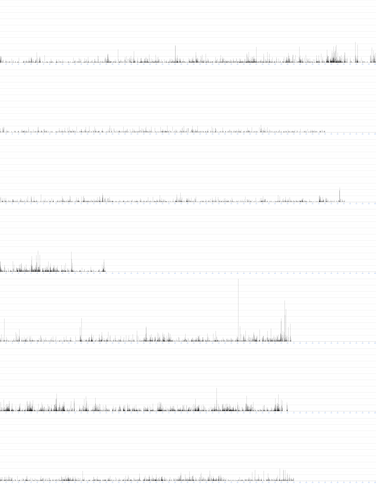
Con questo diverso fattore di zoom relativo, emergono alcuni tratti. 1) il rumore di fondo compare, ma rimane relativamente basso, come un’erbetta. Alcuni Libri hanno un segnale debole. I_Venti_del_Giravago ad es. ha solo alcuni slanci nel finale (dopo il ricongiungimento dell’Arca Slavonica con la Fratellanza di origine e la riscoperta delle comuni radici Ortodosse) ed è confrontabile col Il_Contrattacco_Interrogativo (che manca persino di tali slanci : evidentemente il cluster di ricerca non era sufficientemente disgiunto ed intercettava alcune caratteristiche Interrogative). Rocca_di_Stella ha un segnale medio debole ma molto diffuso, segno che da un lato la religione, apocrifa, del Sire Ardente / Sire Fiameggiante è stata sostanzialmente smorzata con successo con la semplice esclusione di questi epiteti dal cluster semantico di ricerca, e tuttavia il segnale persiste ben distinto dal rumore di fondo. La stessa operazione su Cronache_di_Constance_e_delle_Stirpi_Originarie_dei_Guardiani : l’attribuzione al termine Altissimo del peso minimo, per ridurre la forza dei falsi positivi, dovuti all’esteso uso come aggettivo non sostantivato, ma l’inclusione di Bròndor all’apice delle priorità, ha anche qui smorzato senza cancellare il segnale.
Ne La_Terza_Guerra_Interrogativa il segnale è ancora più debole. Il leitmotiv Interrogativo e del WEIRD / eccentrico / strano / bizzarro lì è talmente potente e tale da escludere quasi ogni altro genere e da non lasciare spazio ad una vera religiosità. G_E_G_di_Napoli__Gaetano_Esposito_de_Gennaro ha miriadi di micro clusters, con alcune regioni di macro clusters multipicco intensi.
Il Sequel Il_Contrattacco_Interrogativo è stato trattato assai male nella preselezione. Non c’è ancora un glossario stabile, sicché tutti i nomi propri di Vampiroidi, Protovampiri, Vulgroùwl e Zìvouggurd non sono stati inclusi. Questo Libro apparirà quindi gravemente sottopesato (gravemente perché è uno dei due libri dove il Genere Vampiresco dovrebbe essere più intenso, con la tematica delle Ali Nere, che è tanto intensa nel Prequel). Questo cluster di ricerca ha una parte estremamente specifica e praticamente nessuna parte generica dual–use e, comunque, è vasto appena la metà (151 lemmi) rispetto al già ristretto cluster GATTOSO / FELINO. Il suo segnale è stato quindi setacciato con una rete molto piccola e risulta proporzionalmente indebolito. Il problema di questo genere nasce da caratteristiche intrinseche non rilevabili dall’algoritmo che si basa su singoli vocaboli. Possiede la nozione della finestra mobile di contesto, ma non è affatto la stessa cosa di offrire supporto nativo flessibile a locuzioni specifiche. Ad esempio sono stati inclusi due aggettivi (cavo, cave) ed i sostantivi (zanne, denti), con pesi molto bassi per la genericità. Ora isolatamente, magari anche vicini, ma non in funzione sintattica strettamente correlata, queste coppie pesano poco nel punteggio. Eppure la locuzione zanne cave, canini acuminati, sono frequentemente associati al genere VAMPIRICO. Anche la parola sangue ha ricevuto un peso molto basso perché è assolutamente generica, e il verbo succhiare non è stato aggiunto proprio. Tuttavia è chiaro che accostandoli con correlazione sintattica forte (azione succhiare complemento oggetto sangue) sarebbero una locuzione estremamente diagnostica di episodio di vampirismo, ben oltre a quanto possa premiare l’algoritmo. Ali isolatamente non è stato inserito, membranose e pergamenacee sì. Ma insieme, ali membranose, sono molto più diagnostiche. In sostanza questo genere è largamente sfuggito agli algoritmi, per i loro limiti e per come il genere stesso è stato concretamente implementato nel testo. Non è stato possibile circoscriverlo adeguatamente e ne risulta sottopesato. Di quanto ? Ci è impossibile dirlo, per la stessa ragione per cui non è stato possibile fare compensazioni.
Legenda delle Branche, incluse Bozze e SEQUEL |
Cluster VAMPIRICO |
1) Cronache_di_Constance_e_delle_Stirpi_Originarie_dei_Guardiani 2) La_Terza_Guerra_Interrogativa 3) Il_Contrattacco_Interrogativo 4) SEQUEL__G_E_G_di_Napoli 5) G_E_G_di_Napoli__Gaetano_Esposito_de_Gennaro 6) Rocca_di_Stella 7) I_Venti_del_Giravago 8) SEQUEL__La_Parola_Sepolta 9) La_Parola_Sepolta
|
6014 elem. Somma Parziale : 180,8467; Max di Riga = 2,8222 - media : 180,8467 / 6014 = 0,0300709511141 5200 elem. Somma Parziale : 1418,6872; Max di Riga = 59,8527 - media : 1418,6872 / 5200 = 0,272824461538 5516 elem. Somma Parziale : 811,4872; Max di Riga = 15,6405 - media : 811,4872 / 5516 = 0,14711515591 1694 elem. Somma Parziale : 637,9268; Max di Riga = 22,612 - media : 637,9268 / 1694 = 0,376580165289 4658 elem. Somma Parziale : 685,553; Max di Riga = 14,6559 - media : 685,553 / 4658 = 0,14717754401 4608 elem. Somma Parziale : 253,2937; Max di Riga = 3,3044 - media : 253,2937 / 4608 = 0,0549682508681 4701 elem. Somma Parziale : 482,6478; Max di Riga = 14,0907 - media : 482,6478 / 4701 = 0,102669176771 4683 elem. Somma Parziale : 490,1983; Max di Riga = 11,3447 - media : 490,1983 / 4683 = 0,104676126415 3833 elem. Somma Parziale : 342,6501; Max di Riga = 14,077 - media : 342,6501 / 3833 = 0,0893947560657 Totali : 40957 elementi. Somma Totale : 5303,2908 - media SAGA : 5303,2908 / 40957 = 0,129484356764 Max assoluto : 59,8527 Range relativo delle medie : (0,376580165289 – 0,0300709511141) / 0,129484356764 = 267,6 % |
Anche questo genere, a fronte della forza modesta (misurabile) del segnale, è tra i più eterogeneamente distribuiti tra i generi rilevati !
Il genere è praticamente assente sia in Cronache_di_Constance_e_delle_Stirpi_Originarie_dei_Guardiani che in Rocca_di_Stella, privo persino di rumore di fondo e falsi positivi. Rimane molto debole anche in : La_Parola_Sepolta e SEQUEL__La_Parola_Sepolta (laddove c’è un unico Vampiro con un’unica vittima, e solo occasionalmente), I_Venti_del_Giravago (dove ci sono solo pseudovampiri facoltativi, i Mohrlar). Ancora debole, vicino alla media della Saga (il più basso tra i generi misurati), in : Il_Contrattacco_Interrogativo e G_E_G_di_Napoli__Gaetano_Esposito_de_Gennaro. Raggiunge un livello sostanzialmente medio forte solo in La_Terza_Guerra_Interrogativa per infine diventare forte in SEQUEL__G_E_G_di_Napoli (le cui bozze sono ancora molto limitate, ma l’avvento dell’Æquòreum e di un’aristocrazia vampira come casta dominante, in seguito al declino degli IronMaster, lascia presupporre che il trendi sia stabile). Per contro i Vampiri del PREQUEL sono piuttosto modesti.
Ecco i dati nel grafico differenziale (non annotato, ma i libri sono sempre nello stesso ordine di tutte le altre figure) :

Pur essendo presente con estrema intensità nella Saga (anche se non ubiquitario : Cronache_di_Constance_e_delle_Stirpi_Originarie_dei_Guardiani e Rocca_di_Stella ne contengono molto meno della media), è assolutamente intrattabile dal punto di vista della “semantizzazione” in clusters di ricerca fatti di vocaboli singoli. La stranezza è per sua natura ineffabile, non si origina dai singoli termini ma nasce dalle situazioni assurde ed irrazionali, eventi imprevisti, senza una ragione apparente (si pensi al viaggio di Varel Kajinark e Lady Grayther nei bazar di Hypnobòrea, allo steampunk degli strambi vascelli dei Setacciatori che recuperano relitti misteriosi alla deriva verso il vuoto assoluto oltre l’Arca, alla Natura Interrogativa stessa ed alle entità quadridimensionali, ai misteri dell’Æthéreum, coi suoi Whòldragg, ectoplasmi e fantasmi spettrali), nasce dalle premonizioni superstiziose che aggricciano la pelle della schiena, da un clima arcano, oscuro ed indefinito che si crea accostando molte parole suggestive in un certo ordine, ciascuna presa singolarmente essendo del tutto inadatta a cogliere l’eccentricità. Questo significa che, malgrado ci tenessimo molto, forse persino più di tutti gli altri generi letterari, il SW sviluppato si rivela inadeguato a coglierlo nella sua fuggevolezza. Abbiamo dovuto arrenderci.
Questi grafici rappresentano la sommatoria incrementale degli scores di tutti i text chunks accumulati sino ad un dato chunk. Matematicamente sono “l’integrale” dei grafichi coi picchi precedenti, i quali, naturalmente, a loro volta sono i differenziali di questi ultimi. Siccome la crescita è spesso molto dolce e sfumata e le gobbe si notano poco, la compressione dell’asse longitudinale non solo non guasta ma enfatizza le discontinuità (anche se non in modo così chiaro come nei differenziali), e consente una visione d’insieme della media e dei totali, che danno il timbro totale al libro. La forza totale del segnale è, chiaramente, non l’area totale di ciascuna riga ma solo l’altezza finale. L’area in effetti aumenta non solo a causa dell’elevato valore finale, ma quando gli eventi salienti si verificano in anticipo piuttosto che molto tardi nel testo (e ciò non ha alcun senso). La forza complessiva di un dato genere è la somma delle ordinate finali di ciascun libro, nel complesso della Saga e dell’intera colonna. I grafici non aumentano a velocità uniforme, hanno regioni pianeggianti e poi, a volte, hanno improvvisi sbalzi : quelli sono gli eventi, talvolta i capitoli, dove succede qualcosa di particolarmente caratterizzante per il dato genere misurato.
I grafici integrali dei tra generi a confronto (i Libri si “leggono” in orizzontale) :
GATTOSO / FELINO |
EROTICO / PORNOGRAFICO |
RELIGIOSO / SPIRITUALE / MISTICO / ULTRATERRENO / METAFISICO |
VAMPIRICO |
|
|
|
|
Score : 16765,214 (306 lemmi cercati) massimo assoluto : 53,257 |
Score : 19283,1132 (893 lemmi cercati) massimo assoluto : 65,9022 |
Score : 31332,9443 (896 lemmi cercati) massimo assoluto : 159,0133 |
Score : 5303,2908 (151 lemmi cercati) massimo assoluto : 59,8527 |
Si consideri attentamente il fatto che questi insiemi di grafici sono rinormalizzati internamente ed esternamente in modo da avere la stessa scala ASSOLUTA (al netto però, come già riferito, della diversa numerosità del Cluster Semantico che ha setacciato il testo : il secondo e terzo cluster sono di circa 900 termini l’uno, anche se il secondo ha più termini dual–use e quindi tende a raccogliere più rumore bianco, ma il primo è di appena 300 termini (tra l’altro più specifici) che tendono di per sé a sottopesare e l’ultimo solo 150). Quindi i grafici oltre che in verticale possono essere confrontati in orizzontale, tra colonne diverse. Ciò significa che si possono confrontare visivamente gli exit points entro ciascuna colonna, ma non tra colonne diverse : il fattore amplificante è diverso ! La quarta colonna, che non sembrerebbe poi tanto più debole della seconda, il realtà lo è eccome. La terza colonna, che in figura sembra la meno carica di nero, in valore assoluto vale uno score totale di oltre 31000, ben sei volte l’ultima colonna (5300). A metà strada stanno, in ordine crescente, la colonna 1 e la 2.
Per avere una percezione corretta (ma sempre al netto della diversa dimensione del set di termini di ricerca, differenza non compensabile a posteriori in alcun modo), del fattore di zoom reale, l’altezza relativa REALE dei grafici si potrebbe ottenere lasciando invariata la terza colonna (genere RELIGIOSO / SPIRITUALE), e riducendo l’altezza della prima colonna di un fattore 16765,214 / 31332,9443 = 0,5351 (poco più della metà), riducendo l’altezza della seconda colonna di un fattore 19283,1132 / 31332,9443 = 0,6154 (il 61,5 % della figura) e la quarta colonna dovrebbe essere ridotta in altezza di un fattore 5303,2908 / 31332,9443 = 0,16926 (appena il 16,3 % della figura o poco più di un sesto dell’altezza mostrata).
I due libri più equi (qualunque cosa ciò significhi) appaiono Rocca_di_Stella e Cronache_di_Constance_e_delle_Stirpi_Originarie_dei_Guardiani, il più sbilanciato in assoluto è Il_Contrattacco_Interrogativo, con una singola componente intensa, mentre le due La_Parola_Sepolta, I_Venti_del_Giravago e G_E_G_di_Napoli__Gaetano_Esposito_de_Gennaro hanno due componenti intense ed una debole (rispettivamente quella GATTOSA e quella RELIGIOSA). G_E_G_di_Napoli__Gaetano_Esposito_de_Gennaro ed I_Venti_del_Giravago sono quantitativamente piuttosto simili anche se mostrano interalmente sequenze temporali differenti.
Per l’agognato e famigerato GENERE WEIRD (STRANO / ECCENTRICO / BIZZARRO / MISTERO, con tracce “GOTICHE”) … beh, occorrerà aspettare recensioni altrui.
Per chi volesse acquistare gli Ebooks dei 6 Libri della Saga (esclusi i tre Sequel), sono disponibili in vari Estore online :
https://sgrpb7.gumroad.com/
https://payhip.com/PluriLogiaBySGRPB7
https://plurilogiaunafamigliadilibriparalleli.sell.app/
https://www.amazon.com/dp/B0GNTCJ5X2?binding=kindle_edition&ref=dbs_dp_sirpi
https://www.amazon.com/stores/SGRPB7-Studio-Giochi-di-Ruolo-Poly-Books-7
by Studio_Giochi_di_Ruolo_Poly_Books_7
(revisori di bozze : Pàncer “Doréamon”, Dæmònya, Adenore Castrovizzardo)
Questo documento è stato scritto in seguito a discussioni su gruppi FB di autori emergenti, relativamente al target ideale di un Libro, e lo è stato con la massima onestà in nostro potere e facoltà, poiché l’idea di spiacere ad un lettore, di tediarlo, di offenderlo, scandalizzarlo, affaticarlo, ci risulta davvero orripilante, da farci aggricciare la pelle. Crediamo fermamente che un Libro debba trovare i suoi lettori ideali, almeno quanto il contrario (ma ciò è demandato ai lettori stessi). Questo brevissimo saggio è per agevolare questa missione.
https://u.pcloud.link/publink/show?code=XZwdLK5ZtHpYxU5gaMuuMtpwj3nvlY2Uy9ty
● Beh, rasentando l’ovvio : chi ama Fantascienza E Fantasy. Leggete meglio : non Fantascienza O Fantasy, proprio Fantascienza E Fantasy ! Entrambe, simultaneamente. Non è un caso frequentissimo, purtroppo. Ma, come abbiamo premesso, un Libro deve trovare il suo lettore, non altri, acchiappati per errore.
● Gli eclettici del genere fantastico in generale. Coloro i quali, al primo prerequisito, affiancano anche un certo gusto per i Vampiri; non solo, anche specializzazioni di nicchia o quasi scomparse dal radar mainstream : lo SteamPunk (non ce n’è mai tanto, ma questo tratto è spesso presente a piccole dosi), il Mistero e l’Eccentrico (forme più impalpabili di magia, in un certo senso), ed il Soprannaturale (fantasmi, spiriti, diavoli). Questi ultimi tratti sono marcati specialmente in La Terza Guerra Interrogativa, G.E.G. di Napoli e La Parola Sepolta. Il genere Horror è poco presente, e solo a tratti, quindi non rappresenta un prerequisito significativo.
● Chi adora o almeno sopporta le multitrame.
● Chi ama Gatti e Felini in particolare, specialmente se a livelli patologici. E per estensione chi ama gli animali più in generale.
● Chi detesta Gatti e Felini in generale. Qui, davvero, dateci retta : state lontani dai nostri Libri ! Graffiano, soffiano e miagolano. E nemmeno li meritate. Seriamente, non è uno scherzo : sono infarciti di Felini, i quali giocano quasi sempre ruoli di primaria importanza se non assolutamente fondamentali.
● Chi detesta gli animalisti, gli anti specisti, i vegani e gli ecologisti. Esistono anche costoro, sì, ed i nostri Libri non gli si addicono. Ad un cacciatore probabilmente la PluriLogia non potrebbe piacere. È impregnata di una scala valoriale praticamente agli antipodi.
● I puristi, di qualsivoglia genere. La PluriLogia, in ciascuna delle sue 6 “Branche”, non si può classificare in modo univoco. È di generi ibridi e più o meno sperimentale. Persino la filosofia stessa dei Libri di Ruolo non è certamente un’infrastruttura narrativa molto convenzionale. Ma a parte questo aspetto (ortogonale ai generi letterari), non c’è un solo dei nostri Libri ad essere “puro”. Quindi i puristi della Sci-Fi, che odiano la Fantasy, o i puristi del Fantasy, che odiano la Sci-Fi, beh, probabilmente detesteranno le onnipresenti transizioni. Sia chiaro : scriviamo Fantasy con lo stesso rigore, coerenza interna e consistenza tipici della Sci-Fi, ed è proprio per questo che non ci crea particolari problemi mescolarle o effettuare le transizioni dall’una all’altra nel corso delle trame. Nondimeno possono per l’appunto risultare sgradite ai Puristi rigidi. È più che legittimo essere rigidi, non deve sembrare una critica. Però queste transizioni sono traumi paradigmatici, per alcuni.
● Chi ha odiato il Silmarillion per l’eccesso di nomi da ricordare. Sì, essendone del tutto consapevoli, cerchiamo di arginare il problema, fornendo in ogni libro minuziosi glossari ben organizzati, ma per chi abbia poca memoria, la mera inflazione da nomi (di personaggi, di luoghi, corpi celesti, animali, piante, vegetali, etc) può creare davvero molta fatica. È un assalto a forza bruta. Sono glossari davvero corposi. I nostri Libri si prestano male ad essere letti ogni tanto, in modo discontinuo nei ritagli di tempo, perché tra una volta e la successiva si rischia di dimenticare di cosa si stava parlando, chi era chi, da dove veniva o faceva cosa. Siamo dei World Builders pignoli e, quando costruiamo una realtà, uno scenario, lo facciamo dalle fondamenta sino ai comignoli, con robusti progetti preliminari. Questo implica per un lettore il dover anche lui partire da zero e non poter contare su praticamente nessuna nozione acquisita (né storica, né geografica, nemmeno il ritmo circadiano) o altri elementi tacitamente dati per scontati. Ciò da un lato conferisce una notevole coerenza interna delle costruzioni, dall’altro è faticoso, è una tortura mnemonica, anche con l’ausilio di glossari. È snervante leggere dovendo frequentemente consultare glossari e mappe. Insomma se adorate King e la fluency letteraria, ehm, qui stiamo in un altro pianeta. Però è un problema insito nella costruzione di mondi, di altre dimensioni, di realtà parallele piuttosto complete.
● Le femministe integraliste (nemmeno troppo). Questa controindicazione è più limitata, in senso quantitativo, nel senso che il caveat si riferisce solo a specifiche Branche (specialmente la 3 G.E.G. di Napoli, la 5, I Venti del Giravàgo e la 6, La Parola Sepolta, e non alle altre tre), e tra l’altro riguarda essenzialmente specifici singoli episodi circoscritti all’interno di ciascuna Branca. Se avete adorato 50 sfumature di grigio o nymphomaniac … ‒ Fuggite, stolte ! ‒ (cit, Gandalf il Grigio). Sono le scene a carattere erotico a rispecchiare l’influenza assolutamente predominante di Citicìspo (Pasquale Funo–Heinz) nel Gruppo Zeta, rispetto a quella di Dæmònya (nel medesimo Gruppo). Ricordiamo che la sotto commissione Zeta è l’unica ad avere giurisdizione sulle scene erotiche. Anche se il Gruppo Zeta può sembrare, internamente, equilibrato numericamente (1 : 1), Citicìspo è arrogante e tetragono mentre Dæmònya è flessibile. Inoltre dei 7 Soci Fondatori comunque ben 5 sono di genere maschile e solo 2 di genere femminile. Tòtoro (Ermenegìsto Sarchiavizzàni) è benevolo verso le femministe, ma è il solo, e d’altra parte né Dæmònya né Vìxykatt (Arielle Heulengale) sono particolarmente schierate. Da questi pesi e contrappesi squilibrati, da questi rapporti di forza interni, scaturisce una visione d’insieme prevalentemente maschilista, asimmetrica. Citicìspo ha relativamente mano libera ed ottiene facilmente il nulla osta ai suoi contributi e proposte, regolarmente poco moderate, estreme, devianti. Questa polarizzazione di genere, nella maggior parte degli episodi e tematiche strutturali di altra natura non si estrinseca in alcun modo particolare (la gran parte dei leitmotivs ed archetipi sono neutrali relativamente al genere), ma negli episodi di natura erotica si manifesta in modo spesso estremo. Non solo : taluni, sebbene infrequenti, sono anche in certa misura forzati, ed oggi giorno il sesso non consensuale, anche parzialmente, o non esplicitamente consensuale a breve, è considerato un argomento estremamente urticante. Quindi, se avete una conclamata avversione a ciò, è possibile che i pur limitati episodi di questa natura riescano ad offendere la vostra sensibilità.
● Chi ama le trame lineari e detesta le multitrame, con le loro divergenze, le convergenze, e tratti su binari paralleli che ostinatamente non si intersecano per un po’ salvo infine confluire. Se lo trovate complesso, non fa per voi.
● Chi non ha pazienza e soffre molto le variazioni di ritmo. Quasi tutte le trame contengono passaggi lenti, talvolta di stasi snervante in cui si accumula carica elettrostatica (spesso preludenti a turbolenze, esplosioni e sconvolgimenti). Cronache di Constance e delle Stirpi Originarie dei Guardiani ha un preambolo lunghissimo in cui si addensano nubi minacciose, prima che la trama entri nel vivo e diventi movimentata. Anche La Terza Guerra Interrogativa ha una preparazione lenta ed in apparenza confusa, piena di nebbie e false piste (perché i protagonisti stessi non hanno contezza di quel che succede e che li attende, ed impiegano tempo ad unire i puntini e capire il disegno del destino). Se vi piacciono le trame tutta azione, dalla prima all’ultima pagina, beh, la Saga non vi si addice molto. Non sono Libri che si possa decidere se piaceranno o meno leggiucchiandone alcune pagine qua e là, tanto meno piluccandone l’inizio. Bisogna sciropparseli interi per riuscire a capire davvero se ed in che misura siano piaciuti, perché sono eterogenei anche internamente, non solo da una Branca all’altra.
● Chi è ipersensibile all’infrazione del patto implicito di sospensione dell’incredulità o a quello che chiamiamo di “costanza paradigmatica ed assiomatica”. Questo aspetto è correlato alle transizioni Fantascienza ↔ Fantasy o ad altre rivelazioni improvvise che rompono dogmi dati per assodati. La PluriLogia ama giocare spesso questo scherzo : fingere di attenersi a certi vincoli fin quando si consolidano come dogmi, alla coerenza con una certa cornice logica assiomatica, epistemologica; salvo poi infrangerla con strappi violenti. Può dare fastidio quando elementi imprevisti, avulsi, facciano intrusione senza preavviso e gradualità, si innestino come corpi estranei; ma ciò è funzionale ai cambi paradigmatici stessi, tipici di Libri sperimentali come i Libri di Ruolo. Queste intrusioni sembrano forzature nel momento in cui avvengono, ma solo alla fine si comprende la loro necessità ed inevitabilità.
● Chi odia i giochi di ruolo e la loro filosofia. L’intera PluriLogia è costruita su archetipi, leitmotivs strutturali tematici e l’istanziazione multipla degli stessi. Se non lo capite o condividete l’approccio, potreste trovare i libri ripetitivi o stereotipati, quantunque non lo siano. Pur potendo sembrare fatta di Branche semplicemente accostate, senza prequel / sequel o altri rapporti di trama, questa Saga è un progetto unico, di dimensioni ciclopiche (2 milioni e 400 mila parole), monolitico. È eterogenea ma, ugualmente, sotto traccia, scorrono delle vene magmatiche che abbracciano l’insieme e lo legano. Laddove c’è della ridondanza, una ripetizione tematica, è intenzionale perché le “carte da gioco” scelte quelle erano e quelle devono giocare le loro partite. Di più : le catte principali devono esserci tutte. Lo strano è, semmai, quanto sia capitato di differenziarle al punto da renderle a volte meno riconoscibili. A ciò sono dedicati altri articoli appositi.
Conclusione : confidiamo che questo piccolo, onesto contributo, possa aiutare i Libri ed i loro lettori predestinati a ritrovarsi con reciproca soddisfazione.
A cura di Vì (Tarcìsio Astronnàrdi) e Pàncer (Romèsto Trincagliùto).
Statistiche (carichi di lettura) |
PAROLE |
CARATTERI (con spazi) |
CARATTERI (senza spazi) |
Cronache di Constance e delle Stirpi Originarie dei Guardiani |
497969 |
3174668 |
2681530 |
La Terza Guerra Interrogativa |
427444 |
2714969 |
2291079 |
Il Contrattacco Interrogativo (sequel) |
355534 |
2266789 |
1914195 |
G.E.G. di Napoli |
383399 |
2366642 |
1987065 |
G.E.G. di Napoli (sequel) |
112462 |
700768 |
589223 |
I Venti del Giravàgo |
388669 |
2465998 |
2076258 |
Rocca di Stella |
388606 |
2446465 |
2061604 |
La Parola Sepolta |
315839 |
1952687 |
1639397 |
Totali PluriLogia |
2869922 |
18088986 |
15240351 |
|
|||
La Sacra Bibbia Edizione CEI 2008 (1797 pagine) |
806407 |
4548407 |
3830829 |
Categorie letterarie (parametri indicatori rilevati e analizzati) N.B. alcuni punteggi sono stati attribuiti a maggioranza semplice in quanto non si è raggiunto verdetto unanime |
Fantasy |
Eccentrico |
Guerra |
Steampunk |
Religioso |
SciFi |
Pseudo storico |
Erotico |
Horror |
Gattoso |
Cronache di Constance e delle Stirpi Originarie dei Guardiani |
25 |
5 |
85 |
40 |
75 |
75 |
75 |
20 |
10 |
100 |
La Terza Guerra Interrogativa |
30 |
100 |
75 |
5 |
5 |
60 |
50 |
10 |
5 |
100 |
Il Contrattacco Interrogativo (sequel) |
30 |
100 |
100 |
5 |
5 |
60 |
50 |
20 |
5 |
100 |
G.E.G. di Napoli |
90 |
80 |
25 |
5 |
35 |
25 |
15 |
75 |
5 |
80 |
G.E.G. di Napoli (sequel) |
90 |
80 |
40 |
5 |
50 |
35 |
20 |
100 |
5 |
70 |
I Venti del Giravàgo |
60 |
85 |
65 |
75 |
15 |
55 |
35 |
80 |
10 |
90 |
Rocca di Stella |
35 |
20 |
80 |
20 |
65 |
40 |
75 |
10 |
35 |
100 |
La Parola Sepolta |
40 |
80 |
15 |
50 |
100 |
10 |
25 |
65 |
35 |
35 |
Totali di colonna |
400 |
550 |
485 |
205 |
350 |
360 |
345 |
380 |
110 |
675 |
Lista CATEGORIE applicabili : 1) Fantasy 2) SciFi 3) Steampunk 4) Pseudo storico 5) Guerra / Epico 6) Gattoso 7) Erotico 8) Horror 9) Eccentrico 10) Religioso 1) e 2) : nessun commento 3) Questa categoria è una variante fantasy semi tecnologica, ossia esplora un futuro parallelo dove tecnologie semi antiquate sono state portate oltre i loro limiti naturali, con confini mal distinti da SciFi e Magia. Talvolta essa è presente tal quale (I Venti del Giravàgo) talaltra nella forma che nella PluriLogia viene definita “Vetero Sovietica”, ossia di una reiterata supremazia della tecnologia grezza e pesante, con macchine rudi e di dimensioni colossali. Le due sfumature non vengono ulteriormente differenziate. 4) Il prefisso “pseudo” implica che soltanto l’apparenza è storicheggiante, ma non necessariamente si riferisce alla Storia VERA. L’approccio storico ha un tono didascalico, neutrale e descrittivo, talvolta persino quasi “imparziale”. Archetipo estremo : Il Silmarillion (J. R. R. Tolkien). 5) Si intende nel senso più ampio, tra razze o tra specie o ibrida, e prescindendo dalle tecnologie, specie se narrata in toni aulici e altisonanti, che ne sottolineino l’aspetto patriottico. 6) Per capire questo genere bisogna leggere i testi, o quantomeno la voce al sottotitolo : I Gatti e i felini in generale (e la Magia). 7) Questo indicatore è rilevato in modo difforme dagli altri. Per gli altri si segue un criterio contemporaneamente qualitativo e quantitativo, ossia si da pari peso sia all’intensità del parametro sia all’ampiezza, alla frequenza con cui la data caratteristica è presente. Per il parametro “erotico” l’indicatore di frequenza non è rilevato, se non marginalmente, questo perché è invariabilmente un tipo di scena sporadica, saltuaria, e soprattutto riguarda normalmente una singola coppia di personaggi, molto raramente pochi di più (quindi non è diffuso tra i personaggi). Tutto il peso viene quindi attribuito all’intensità, alla tonalità delle scene presenti. Si considera quindi solo la presenza di scene a prevalente valenza erotica intenzionalmente “fina a sé stessa”, con demarcazioni nitide dallo sfondo e di sufficiente ampiezza e livello di dettaglio. Queste scene usano anche un paradigma proprio ed, intenzionalmente, un linguaggio volgare / scurrile non utilizzato in nessun’altra parte. L’eventuale presenza (nessuno le ha rilevate) di scene brevi, naturali / spontanee, non contribuisce al computo. Vengono inoltre computate in questo punteggio solo le scene erotiche in cui almeno uno/a degli attori/rici è a prevalente connotazione erotica (archetipo specializzato). Scene erotiche dove nessuno dei partecipanti rappresenti il Leitmotiv “dedicato”, pure non vengono nemmeno conteggiate, perché considerate casuali ed irrilevanti (laddove presenti … nemmeno la presenza è stata analizzata). *) La categoria Cyberpunk, illustre assente, non è sostanzialmente applicabile a nessuna delle branche della PluriLogia. Anche la categoria Romantico non viene applicata, ma non perché inapplicabile, bensì per un carattere di estrema soggettività. Le valutazioni dei vari componenti sono troppo divergenti e la “media” avrebbe poco senso. Risulta anche molto difficile tracciare un confine nitido per la contemporanea presenza di forti tematiche antispeciste, che a modo loro possono essere considerate romantiche (si veda il legame tra Zvìrren e Moouffwa, ‘Muffa’, la Zadzmogh di Keléndanogh randagia da lei adottata, e l’intensità del loro legame). 8) : nessun commento 9) Si intende la ricerca della stranezza fina a sé stessa (in parte ciò è sovrapponibile allo Steampunk) e, soprattutto, il genere specifico, inesistente altrove, della “Interrogatività”. Questo termine è intraducibile ed assume un qualche significato soltanto dopo la lettura di La Terza Guerra Interrogativa (N.B. mai anche solo pensare di tentare di leggerne il SEQUEL senza avere letto il libro primo, di tale branca). Altri libri (preesistenti) che richiamano il concetto della contrapposizione tra “oligodimensionali” e “ad elevata dimensionalità” si può trovare in Flatland. 10) Presenza marcata non tanto di religioni locali e “relative” (anche !), ma soprattutto della religione “convenzionale” Giudaico–Cristiana (specie Ortodossa) e sotto tematiche correlate (Fede, Diavoli, Angeli e Arcangeli, Spiriti e Fantasmi). NdR : nelle branche le parole Diavolo / Demone vengono usate senza omogeneità, sia riferendosi alle classiche entità spirituali / metafisiche della religione Giudaico–Cristiana / Ortodossa sia con riferimento a veri e propri alieni come i Diavoli Corruttori (Rocca di Stella) e Antichi Demoni / Grandi Demoni / Simulanti e DemonIbridi (Cronache di Constance e delle Stirpi Originarie dei Guardiani), ed in un certo senso anche gli Emissari delle Ali Nere (La Terza Guerra Interrogativa), sono entità fondamentalmente diaboliche. In questi ultimi casi, a seconda del punto di vista del lettore, possono essere visti come Alieni ad ogni effetto, ma dal punto di vista locale, interno, sono equiparabili ai classici Diavoli della Religione ufficiale per molti aspetti. |
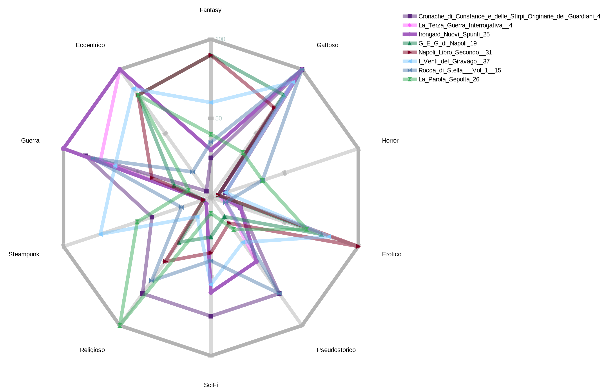
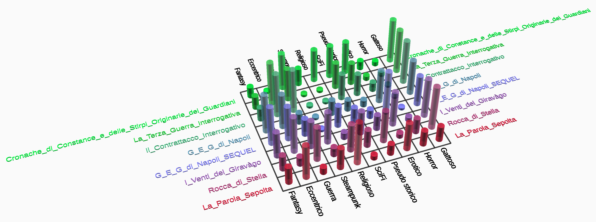
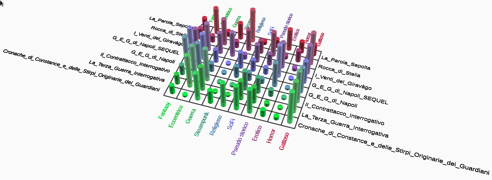
NOTA : alcuni dei precedenti contributi, sono stati ridiscussi, nuovamente raggiungendo un’unanimità effimera e non proprio solida. Se vi piace la grafica, eccovi un diagramma di Sankey che correla Soci Coautori, i loro contributi quantitativi (solo compositivi, escluse le attività di revisione / editing ! Fatte solo da Vì, Pàncer (Doréamon) e da Adenore Castrovizzardo) alle Branche, e di seguito queste ultime ai generi letterari a cui afferiscono … poi ci si chiede perché non riusciamo a classificarli come genere e li definiamo semplicemente ibridi e sperimentali !
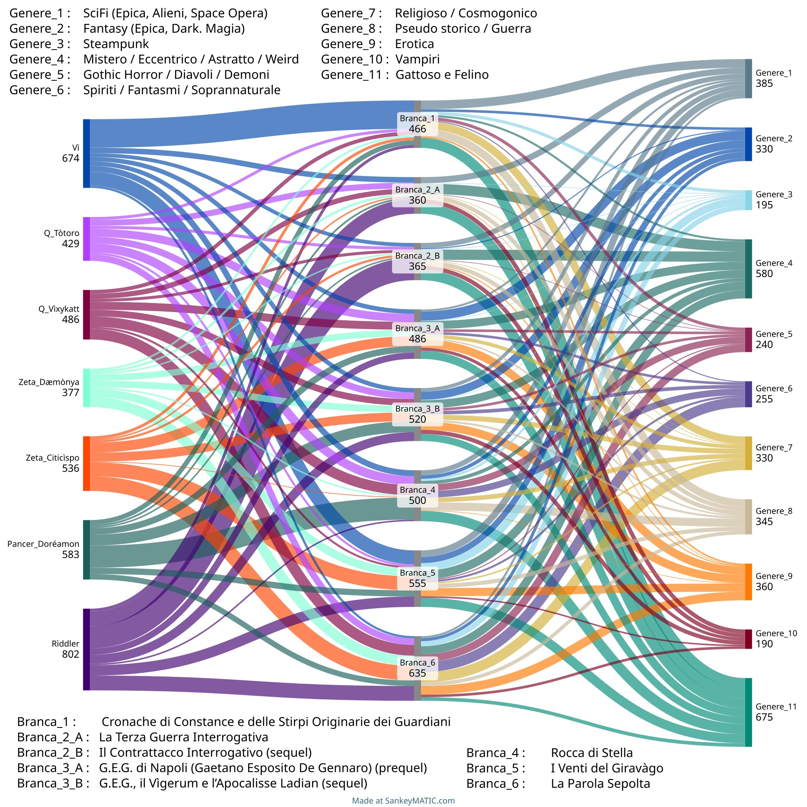
Flussi orientati all’entità dei contributi degli Autori ed alle categorie letterarie (generi) di afferenza, per colore omogeneo a dx. e sin. Un’osservazione : l’ampiezza di ogni singolo libro in questo grafico non è affatto proporzionale alla sua lunghezza, ma alla sua eterogeneità di generi costituenti. La Parola Sepolta è in effetti il più corto di tutti e La Terza Guerra Interrogativa è il secondo più lungo, quindi in questo senso le figure sono un po’ fuorvianti.
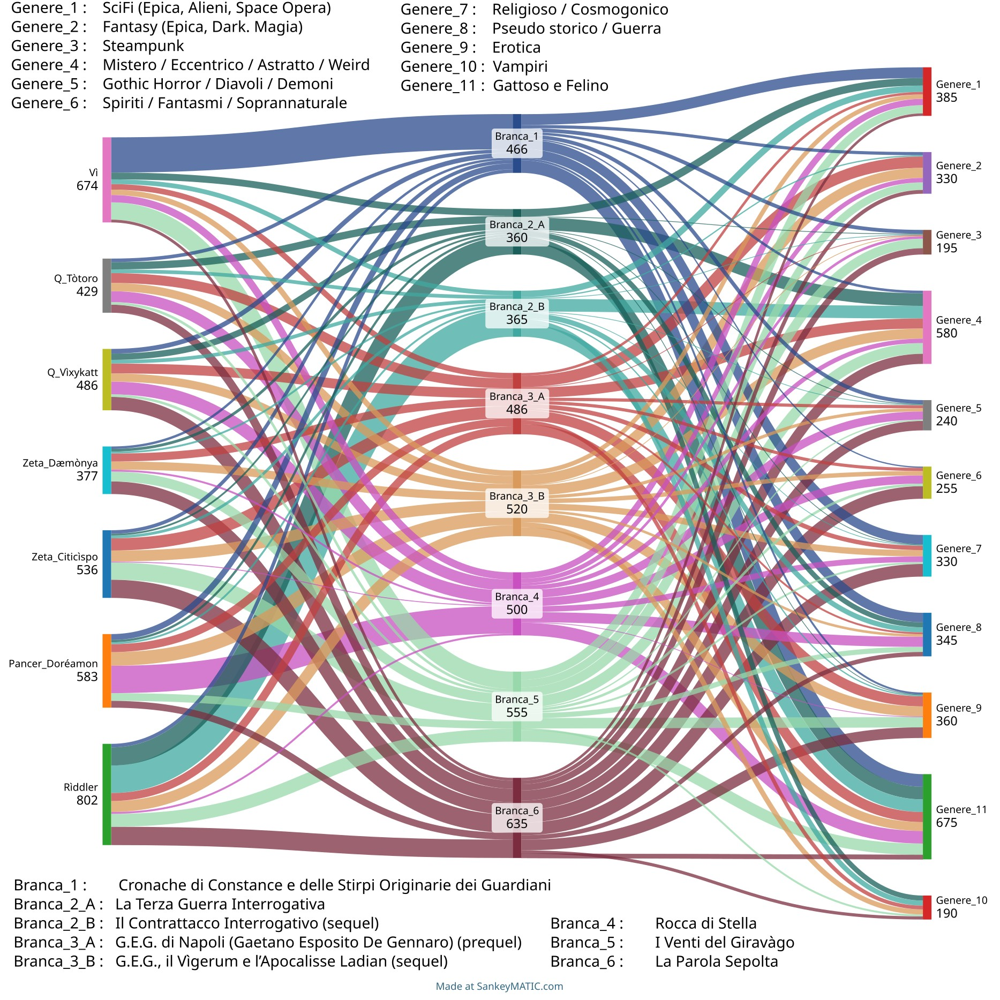
Flussi orientati alle “Branche” per colore omogeneo a dx. e sin.
Nota deprimente ! Immediatamente dopo le ‘votazioni’, Vìxykatt si è resa conto che non avevamo inserito il genere ROMANCE ! Terribile omissione. Ora sarebbe molto buono e giusto avere voglia di rifare tutto e rinormalizzare tutte le voci e i dati dietro questo grafico. Ma … siccome nessuno ha più voglia ormai di rifare tutto, ai fini della disamina della presenza del genere romance nella Saga (che in effetti è piuttosto robusto per non dire onnipresente), rimandiamo al capitolo già presente nel Libro : Romances e sotto trame erotiche nella PluriLogia.
Gruppo____Nome____Nickname____Ruoli principali
Vì____Tarcìsio Astronnàrdi____‘Vì’____revisore, SciFi, consulenza scientifica, parti epiche–patriottiche, Russian Stuff, armi
Q____Ermenegìsto Sarchiavizzàni____‘Tòtoro’____Fantasy, mitologia greca, Gatti, nomi, armi antiche
Q____Arielle Heulengale____‘Vìxykatt’____Fantasy, mitologia e leggende gaeliche e norrene, nomi, romance, Gatti
Zeta____Lenore Föwlinger____‘Dæmònya’____psicologia, genere erotico, bozze a matita
Zeta____Pasquale Funo–Heinz____‘Citicìspo’____psicologia, genere erotico
Pàncer____Romèsto Trincagliùto____‘Doréamon’____SciFi, Gatti, consulenza storica / sociologica, mappe e cartine
¿♠____???____‘Riddler’____Interrogativi, bizzarrie eccentriche. Pseudo Gatti. Demonologia
QRCodes |
Portavoce e Tutela Legale____Identità stringa Base64–Encoded e Criptata con algoritmo (decriptabile solo da parte di chi sia in possesso della chiave privata di SRGPB7) Stringa di sicurezza cifrata________Scopo : dimostrare, in accordo col principio No Disclosure / Zero Knoledge Proof, il possesso della prima chiave segreta senza disvelare identità del Portavoce e difensore legale protetta da seconda chiave segreta. Chi fallisce di decifrare questa stringa di riscontro, è un impostore che non appartiene a SRGPB7 né possiede alcun diritto su alcuna branca della PluriLogia____Ruoli principali |
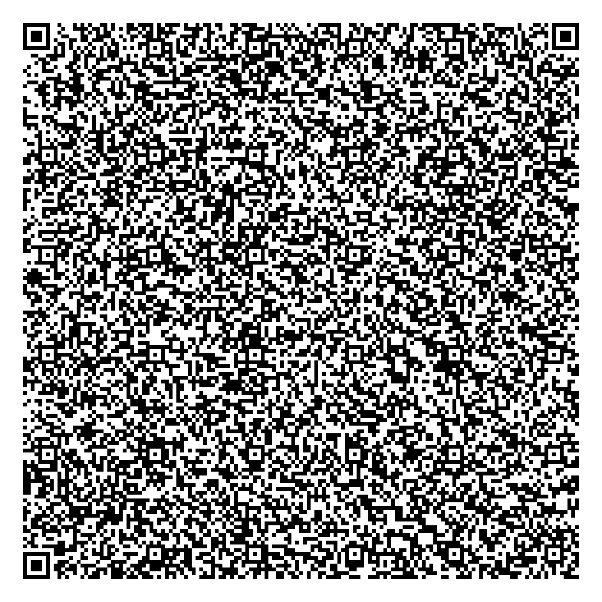 |
Cosa sono i libri paralleli ? Sono trame largamente indipendenti (sebbene presentino talvolta le cosiddette “incollature di trama”) che tuttavia sono costruite a partire da archetipi o Leitmotivs comuni : mattoni da costruzione fondamentali che rappresentano strutture base, dai marcati tratti essenziali, abstract classes che vengono istanziate più e più volte in varianti integrando i tratti base con dettagli specializzati, e collocate ad agire in scenari e contesti differenti, dando origine ad una varietà combinatoria. E cosa NON sono i PoliLibri ? Non sono storie a grafo, multitrame interattive che cambiano secondo scelte fatte dagli utenti. Ogni libro parallelo è completo in sé stesso ed indipendente, ma solo dall'esame della PluriLogia nel suo insieme emergono i Leitmotivs portanti sotto la superficie.
Perché gli archetipi sono così importanti ? Perché la PluriLogia somiglia, nel suo insieme, alla sovrapposizione di molte partite di Giochi di Ruolo costruite a partire dalle stesse Carte da Gioco (= i Leitmotiv). Con le stesse Carte si possono, almeno in teoria, giocare infinite partite, cambiando l’ordine ed il modo di combinarle. Solo contestualizzando molteplici volte un archetipo, facendogli giocare svariate partite diverse, si può arrivare a cogliere tutte le sue sfaccettature. Alcune ‘Carte’ sono marcatamente polarizzate, come l’archetipo dell’Energumeno o della Valkiria / ‘Lady Oscar’, o delle gemelle sensitive o guaritrici. Talune, come Jolly borderline, possono persino cambiare schieramento, passare dal Bene al Male o viceversa, o persino destreggiarsi ambiguamente al loro sfumato confine. Alcuni personaggi, lo si vedrà, sono detti Funzionali poiché rispondono ad esigenze esterne ed obbediscono alle necessità della trama o più spesso complementano i protagonisti.
I nostri archetipi non sono solo personaggi. Altre volte sono idee generali o astratte o tematiche collettive, come il Tema Felino, presente in tutte le Branche, il tema della resistenza del Popolo Eletto ed altri. Anche il manicheismo è spesso presente, in primo piano o sullo sfondo, a seconda.
La definizione standard (uno standard interno ad SRGPB7, NdR) di PluriLogia è : una famiglia di libri paralleli. Nel seguito però i “libri” verranno spesso detti “branche” o anche “fratelli”.
Il termine famiglia esprime una parentela, ma è bene chiarire che tale parentela, pure molto forte, non si sostanzia a livello di trama, se non saltuariamente mediante alcune rarissime ‘incollature’, cosa che avviene nelle polistorie. (NdR : le incollature sono riferimenti incrociati tra un libro e l’altro). Per parentela non si deve intendere nemmeno la sequenzialità cronologica (anche se, talvolta, incidentalmente, è presente anche quella, come precisato dall’utilizzo, in tali casi, di SEQUEL / PREQUEL). Questa parentela, che potremmo considerare “verticale” è normale e non il tratto distintivo delle branche della PluriLogia, laddove la parentela è orizzontale (da cui il ‘parallelismo’). L’apparentamento è infatti a livello di Leitmotivs, di mattoni elementari da costruzione : cioè tutti i libri sono accomunati dal riutilizzo, mutatis mutandis, di alcuni componenti standard, specialmente a livello di singoli personaggi principali (ma non solo, talvolta anche categorie e/o schemi situazionali).
Gli stereotipi, ampiamente reistanziati, talvolta, ma molto più raramente, vengono riutilizzati persino sotto il punto di vista circostanziale, ossia finiscono per ‘compiere’ le medesime categorie di azioni generali ed attuare gli stessi comportamenti : ciò accade tuttavia limitatamente a stereotipi molto marcati, polarizzati e relativamente “piatti”, cioè con un limitato spessore caratteriale (cosa che accade spesso ai cosiddetti personaggi funzionali, v. altrove).
I Leitmotivs vengono “istanziati”, per usare un gergo informatico dei linguaggi object oriented, e declinati in varie specializzazioni e varianti. Spingendo il parallelismo con i linguaggi di programmazione ad oggetti ed inheritance, come il C++, i Leitmotivs, o archetipi, sono ABSTRACT CLASSES, che servono solo per ISTANZIARE oggetti concreti e caratterizzati dall’inserimento in un dato contesto (trama). Una abstract class è solo “potenziale”, incompleta, definisce soltanto alcune caratteristiche parziali (interfaccia, elementi tipici) e deve essere completata con aggiunte VARIABILI (di contesto), che la “specializzano” in personaggi reali (o scenari reali) completi, attuati. In altre parole da un singolo stampo astratto, archetipico e caratterizzato, vengono generate varianti concrete. Sempre riferendosi al gergo informatico, si potrebbe persino parlare di ‘fork’, un fenomeno molto diffuso nelle cosiddette distribuzioni di Linux (fork di Debian, fork di Arch, fork di Slackware etc). Anche in quel contesto il senso è stato che distribuzioni particolarmente forti, longeve, salde e diffuse, sono state riciclate ed adattate producendone varianti più o meno sottilmente diverse.
Formalmente i vari Leitmotivs istanziati (le istanze reali della medesima classe astratta) non hanno alcuna parentela tra loro. Sono quindi una sorta di reincarnazioni in scenari differenti. Per fare un esempio, sul Leitmotiv dell’energumeno archetipico, Tar Mac O’Breen non ha alcuna relazione con Thomas Gordon Brian McIntyre, né questi con il Battista Hochàim o con Àtenor Ghèmmon Krommness o con Varel Kaijnark o con Gaetano Esposito De Gennaro. Costoro sono scorrelati tra loro a livello di vicenda/ambientazione, ma provengono chiaramente dal medesimo stampo. I Leitmotivs a livello di personaggi non sono tanto numerosi come categorie (abstract classes), forse poco più di una mezza dozzina, tutti gli altri hanno rango inferiore che va da quello di mera comparsa a sparring partner, o di antagonista. Il templating di personaggi reali dagli stampi astratti coinvolge sia i protagonisti sia i ‘personaggi funzionali’ (ad essi o alla trama).
Le categorie astratte archetipiche si possono considerare invece tra loro ortogonali, in quanto sono disgiunte e la loro “intersezione” è nulla. Questo è più vero nelle intenzioni che in pratica, in realtà, perché è inevitabile che alcuni tratti caratteriali vengano condivisi, in diverso grado, tra più archetipi, ma l’idea consente di capire la filosofia di fondo. Esemplificando, la categoria dell’Energumeno non ha nulla a che spartire con la tematica del “Popolo Eletto”, ed entrambe sono indipendenti dal tema dei Gatti, dall’archetipo della Santa Martire, della Resistenza, o dal Leitmotiv della Peccatrice e questo è disgiunto dalla figura archetipica della Maga / Guaritrice / Telepate / Sensitiva. Questo ovviamente non implica affatto che un personaggio reale (o uno scenario reale), istanziato, non possa ereditare da più di una categoria archetipica astratta ! L’Ereditarietà Multipla (multiple inheritance) vige nella PluriLogia ! Quindi un’istanza concreta femminile (di un certo rango) può ad esempio mutuare alcune caratteristiche della Maga / Guaritrice / Telepate così come pure anche della Guerriera oppure della Santa Martire. E ciò in diverse gradazioni (pesi) : da questo si origina una certa variabilità dei personaggi concreti.
Se il mixing è ammesso, altrettanto ammessa è l’istanziazione di personaggi “puri”, che ereditano da un singolo filone archetipico. Esempi ne sono Siglÿnde di Vanaheyld (Guerriera Pura, ma anche Martire : le due categorie sono alquanto compatibili), H.H.G.A.T. e Zvìrren Khundryll–Kharstzen. Tra gli Energumeni la “purezza” ereditaria è particolarmente marcata, e i personaggi ibridi sono più rari (ad es. i già citati Varel Kaijnark o con Gaetano Esposito De Gennaro, con elevata “negatività”). Esistono Guaritrici Maghe “pure” (le Gemelle Alina e Alessia StoneBrìnger, ‘Rye’ o Ryondhàim O’Reyll), e Peccatrici “pure” (Lesna Balögh), ed ibride (Lady Skelloer). Personaggi marcatamente polivalenti sono le figure di Llyrahl Ahmoogh (sia Prostituta Zwygnag ma anche Sensitiva e Maga), Lady Sàmaranth Drùnigern (Peccatrice, Guerriera, in transizione e via di riscatto).
Ci sono pochissimi altri generi di Leitmotivs, di cui qualcuno più astratto : modelli–stampo a livello di pattern tematico e/o di ambientazione. Alcuni esempi. Il tema del popolo eletto / oppresso. Il tema della lotta di liberazione / indipendenza. E poi la sconfinata galassia della tematica più trasversale comune a tutti i libri della PluriLogia : le varianti delle genie feline stile Jean de La Fontaine.
Il resto, fortunatamente dirà il lettore, si differenzia in modo sostanziale, a differenza delle vere polistorie, con ragionevoli speranze che persino la lettura di tutte le branche, per oltre 3500 pagine, possa ugualmente non risultare noiosa malgrado una simile invarianza dei Leitmotiv.
Al momento corrente esistono sei branche della PluriLogia, quasi tutte sostanzialmente indipendenti malgrado le rarissime ‘incollature’, anche se c’è una qualche tentazione di tentare un giorno di includere (insiemisticamente) molte branche all’interno di una. La Terza Guerra Interrogativa (in particolare il suo colossale SEQUEL), che per sua natura può essere un container di praticamente qualunque cosa, si candida per questo ruolo di tessuto connettivo. Virtualmente ogni storia, anche altrui, può essere stemperata nella matrice generica di La Terza Guerra Interrogativa. È una sorta host robustissima; solo che essa non necessariamente ne guadagnerebbe. Diversamente la storia guest da inglobare dovrebbe essere compatibilizzata con laboriose revisioni. Il progetto di inclusione totale ha una bassa priorità al momento, e quand’anche venisse promossa in futuro ad obiettivo strategico, avrebbe ugualmente bassa probabilità di riuscire. E non sembra valere la pena, al di là del gusto della sfida per progetti faraonici.
LE BRANCHE PARALLELE :
– – – – – f a s e – – U N O – – – – – – – – – – – – – – – – – – – – –
1) Cronache di Constance e delle Stirpi Originarie dei Guardiani.
2) La Terza Guerra Interrogativa.
3) G.E.G. di Napoli.
– – – – – f a s e – – D U E – – – – – – – – – – – – – – – – – – – – –
4) Rocca di Stella.
5) I venti del Giravàgo.
6) La Parola Sepolta.
– – – – – f a s e – – T R E – – – – – – – – – – – – – – – – – – – – –
· 7) Il Contrattacco Interrogativo (sequel). 50 % (priorità massima, difficoltà MASSIMA)
· 8) Sequel di : G.E.G. di Napoli. 25 % (priorità media, difficoltà BASSA)
· 9) Sequel di : Cronache di Constance e delle Stirpi Originarie dei Guardiani. 10 % (almost discontinued)
– – – – – – – – – – – – – – – – – – – – – – – – – – – – – – – – – – –
Dette branche non sono state scritte sequenzialmente né con contributi uniformi dei coautori, né in intervalli di tempo paragonabili (sia intendendo con ciò il numero di ore di lavoro complessive, sia intendendo il periodo nel corso del quale tali ore di lavoro sono state distribuite, sia per la disomogeneità dei contributi individuali : alcuni sono stati libri intensivi, altri libri dalla gestazione e dal parto lunghissimo, con fasi di assenza di uno o più coautori, ed eventualmente avvicendamenti e passaggi di testimone). Ad esempio tutti i sequel e rispettivi abbozzi della Fase TRE (7, 8, 9) sono cronologicamente cominciati molto prima di alcuni libri della fase DUE, come 5 e 6, e almeno parzialmente anche di 4 (che ha avuto ispirazioni antiche ma anche un lunghissimo periodo di latenza e stasi totale).
Le prime tre branche appartengono alla prima fase, conclusasi negli intorni dell’anno 2000. La prima ha una genesi che risale ad un periodo relativamente certo, il 1995, e venne alla luce di parto unigenito (Vì). In seguito ha avuto uno sviluppo ragionevolmente costante, seppure non proprio continuativo quanto piuttosto a strappi. È un libro assolutamente (ed anche eccessivamente) iper progettato, scritto per la gran parte dal fondatore (solo le parti sui Pardi sono state più collaborative) e con molto sudore della fronte, poco piacere e poco slancio se non a tratti. Estremizzando ed iper semplificando, è un libro scritto prevalentemente con la testa (le rare parti migliori restano tuttavia, ancor oggi, quelle scritte con altro). La scintilla primordiale comunque è molto più antica, risalendo ad almeno 10 – 13 anni prima della data indicata, e regolarmente attinge ad un sogno ad occhi aperti, di quelli che gli adolescenti fanno se non riescono a prendere sonno. Lo spunto iniziale è ormai confuso : salvo che si trattava del Monastero delle Stelle (una visione che si riallaccia ad un racconto reale, mai ritrovato, che menzionava un certo ‘Castel Ventoso’). Tale nome è rimasto invariato, quasi un tributo, ma ormai solo un involucro vuoto. L’atto iniziale dell’ideazione è stato inseguito molto a lungo, ma rimaneva indefinito. Il fondatore rammenta solo che lo sognava spesso al cambio di stagione, primavera o autunno, con la finestra aperta e la brezza notturna che pure non spegneva il sangue ardente tipico della giovinezza. Tuttavia qualche dettaglio che è poi lentamente tornato alla luce, con estenuanti trance regressive, è riaffiorato troppo tardi, dopo la conclusione del libro, ed è stato riciclato nella branca, assai posteriore, di Rocca di Stella, in due luoghi chiamati Santuario della Guglia di Stella e Rocca delle Nebbie. La parentela di nomi non è casuale. Si tratta solo di cenni embrionari, vuoti di emozioni. Il sogno originale riguardava un incontro notturno ad un luogo isolato ed elevato, su un’altura romìta, deputato allo studio, con una fanciulla non meglio precisata anch’ella (auto–?) esiliata lì per studio. Senza l’opportuno sottofondo di tempesta ormonale che allora infuriava e l’ansia per l’ignoto, è rimasta soltanto la cenere di quel sogno visionario. Probabilmente per questo non è stato possibile ridargli vita. Nemmeno in Rocca di Stella. Il tema è stato sfiorato appena, più che altro per una ripicca. Si trattava in sostanza di un contorno propizio ad una travagliata romance, che potesse inizialmente apparire coatta dalle circostanze, zoppicare, per poi riaffermarsi malgrado altre difficoltà esterne. Insomma, nessun germoglio dimostra la propria forza se non dopo avere durato le intemperie e le inclemenze del tempo.
Il terzo libro (G.E.G. di Napoli) è nato per ultimo e non su iniziativa del fondatore (bensì del gruppo Zeta), ma rientra sempre nella prima fase, ed è stato concluso poco dopo il primo. È stato scritto in modo comparativamente intensivo ed a più mani, agevolmente, più per divertimento che non con grandi ambizioni ed investimenti progettuali. Per di più la sua stesura è stata poco più che un collage di episodi e microstorie sciolte, e con grande stupore di tutti si è venuta ugualmente delineando una qualche trama, un filo conduttore anche piuttosto coerente (al punto di meritare un candidato SEQUEL), nel cucirle insieme in un patchwork. È accaduto per caso, fortunosamente. Sempre iper semplificando, esso è un libro scritto in modo viscerale ed irrazionale, a più mani, molto dionisiaco quanto il primo era stato marziale ed apollineo. Si potrebbe estremizzare ancora definendolo un libro più ‘ormonale’, anche nel senso che, di tutte e tre le branche della prima fase ante 2000, è quello in cui trovano maggiore sviluppo scene / episodi erotici anche piuttosto scabrosi e più o meno vagamente psicopatici, auto indulgenti verso la propria ripetizione ossessiva. In questo è accomunato al numero cinque I venti del Giravàgo, e non per caso, perché in entrambi i casi il medesimo coautore ha dato un contributo più sostanziale che in tutti gli altri (anche il sesto fratello, La parola sepolta, mostra a tratti limitati questo influsso). Altre tematiche che hanno ispirato (o impattato in seguito) G.E.G. di Napoli sono di natura eterogenea : politica, ispirate al degrado morale ed al declino cognitivo ed istituzionale del “paese”, ambientali (ecologiste, antispeciste). Nota a margine : una delle fonti di ispirazione indiretta in alcune sue particolarità, viene riferito essere stato un libro, Il Castello d’Acciaio, di Lin Sprague De Camp, anche se la tematica della multi–Dimensione non può certo essere attribuita soltanto ad esso ed ha radici lontane ed estese. Il magistrale Lin Sprague De Camp dipinse viaggi tra dimensioni della leggenda medioevaleggiante ed un personaggio della terra moderna che vi portava le sue abilità acquisite e superiori, calandosi in miti gaelici, celtici, e nella chanson de geste stile Orlando Furioso. Ebbene, De Gennaro in certa misura rispecchia questo pattern : anche lui porta a Lad l’abilità di pugile acquisita a Napoli, più alcune scarne nozioni scolastiche (comunque enormemente superiori a quelle degli autoctoni) e molte competenze pratico artigianali acquisite nei suoi numerosi lavori precari. Insomma, il principio interessante esplorato da Lin Sprague De Camp pareva essere che non solo il civile uomo moderno deve vivere in soggezione per i poteri e i muscoli di Thor o di Orlando, ma qualche volta anche il contrario, in una sorta di contrappasso che riequilibra le cose.
Il numero due (La Terza Guerra Interrogativa) è il primogenito assoluto, pur non facendo riferimento al fondatore ma all’elusivo Riddler, e le sue origini si perdono nella notte dei tempi siccome affonda le radici in alcune visioni coltivate già durante le scuole elementari, a partire dai cinque anni o poco più, quando con amici si producevano ognuno il suo giornaletto a fumetti, a matita, su quaderni incollati insieme per esorcizzare le discontinuità. Poi è rimasto latente, o piuttosto a ribollire nell’inconscio, per lungo tempo, covando e fermentando pian piano. Un impulso netto, ma piccolo e non tanto durevole, è risorto attorno al 1989. La data è abbastanza indicativa, poiché l’inizio della scrittura materiale può essere associata ad un contesto specifico : quando un suo coautore ebbe un incidente e dovette (in parte volutamente) diventare mancino. Poi il libro ha dato qualche altro strappo di vitalità in occasione della pratica col suo primo editor DOS, quello associato a PC–Tools (una nota suite di utilities SW dell’epoca). I pur pochi pezzi scritti all’epoca sono finiti direttamente, pari pari, in documenti accessori del libro finale, persino al costo di semi inconsistenze e forzature colossali : il prezzo dell’ortodossia ! In seguito La Terza Guerra Interrogativa è tornata in letargo, per quanto esattamente non è ben chiaro, venendo riesumata solo dalla collaborazione col fondatore che fece pressioni su Riddler. Rimane il libro del sogno, delle visioni astratte e surreali, il solo ad essere in certa misura evocativo (refrattario alla tentazione eccessivamente analitica e/o persino tecnica del fondatore). È costato esso pure una gran fatica, ma non la fatica sistematica ed ordinata della progettazione iniziale, dell’investimento in scenari ed ambientazione accurati e dettagliati, delle revisioni e degli affinamenti marginali del numero uno (l’iper progettato); bensì una sofferenza ben peggiore. La lotta contro l’ispirazione sfuggente, contro l’incapacità a raccogliere le fila e i cocci sparsi, contro l’eccessivamente strano difficile da renderizzare e comunicare a terzi, l’indefinito, l’astratto. Comunque dei tre, esso è anche il libro del cuore, e in ciò non c’è alcuna semplificazione, perché quello è il modo di scrivere del suo coautore principale, e lo è sempre stato sin da quando non era ancora scritto, ma soltanto sparpagliato in disegni a matita su polverosi quaderni ammassati in scatoloni fortunosamente traghettati attraverso i decenni.
Curiosamente se normalmente siamo stati soliti scrivere libri senza titolo e soltanto a posteriori, a volte tribolando, cercargliene uno appropriato, per il numero due e solo per lui è stato del tutto diverso. Esso ha sempre avuto un titolo persino quando non esisteva. Anzi è esistito solo come titolo, come libro della mente, per lungo tempo. Mancava il libro, ma il titolo c’era già, proprio come l’album dei Guns’n Roses (Chinese Democracy), il cui marchio è stato registrato 15 anni prima che venisse composta la musica.
Esso è sempre stato La Terza Guerra Interrogativa. La scelta di mantenere il nome di queste entità stranianti tal quale lo avevano avuto in origine, Gli Interrogativi, non è stata una scelta indolore, e furiose discussioni interne hanno fatto rischiare la scissione. Già la scelta di un nome comune, un aggettivo più spesso ancora, è rischiosa in sé, e in più essa era veramente bizzarra e surreale. È stato più volte sottolineato quanti equivoci avrebbe generato nelle prime menzioni, allorquando avrebbe suggerito al lettore non già l’idea di una razza di entità senzienti, ma il concetto di “domanda”, “dubbio” e così via. Eppure il coautore è stato irremovibile : non è stato nemmeno possibile alterarlo. È venuto a patti solo nello stralciare un antico sinonimo (egli era stato solito intercambiare Interrogativi con Misteri), e ad aggiungerne qualche altro alternativo un po’ meno straniante (gli Evanescenti, i Magici Signori, poi i Primordiali, che sono una sotto categoria, peraltro, delle entità di rango più elevato). Ma sebbene più altisonanti, gli alias erano banali nella loro piattezza. In fondo nulla possedeva la stessa potenza del nome originale : gli Interrogativi, perché tale doveva essere la pulsione dominante che essi avrebbero creato in chiunque ne scoprisse l’esistenza e la stranezza. Non erano solo alieni : erano la quintessenza dell’alienità oltre ogni misura concepibile. In inglese, li avremmo forse chiamati i BOGGLERs. Ma non scriviamo in inglese, almeno non romanzi di narrativa, dunque il nome primigenio è rimasto. Comunque sia : no, essi non sono domande. Stimolano le domande, se percepiti, ma sono essenze senzienti, seppure prive della gran parte degli attributi e qualità del mondo che conosciamo, e dotati di altre innaturali e più tipiche della divinità. Per chi conosce il meraviglioso Flatland, (https://en.wikipedia.org/wiki/Flatland) di Edwin Abbott Abbott, un abitatore bidimensionale di Flatland sta a noi esseri tridimensionali come noi stiamo agli Interrogativi. Ecco l’origine della loro alienità ‘superiore’.
I secondi due libri sono posteriori al 2000, ma di quanto esattamente non è ben noto (non tutti gli spunti sono stati ben coordinati tra i coautori), probabilmente attorno al 2003. Tuttavia Rocca di Stella aveva inizialmente avuto un’ispirazione pure essa antica, mai formalizzata su carta : un antico sogno dell’adolescenza a sua volta ispirato dalla lettura, in terza media, di un libro I Doni del Vento di Mezzanotte, di Waclaw Sieroszewski (del primo dopoguerra, 1950). Si trattava di un sogno strano, ricorrente ed ossessivo, in cui una ragazza, pallida ed esile, era prigioniera di gallerie fredde e marmoree in cui scorreva, nell’oscurità, acqua corrente, anche essa gelida. In quell’ambiente duro e non confortevole, lei era poco vestita, e soffriva il freddo e la solitudine. Questa diafana fanciulla era indifesa, prigioniera del labirinto, e sul punto di impazzire soprattutto, tormentata da entità di cui non si rammenta la natura precisa, salvo la capacità di emergere dalle pareti, preannunciate dall’apparizione di mobili coppie di rombi gemelli, occhi inumani giallo demoniaco. Ella veniva liberata da qualche archetipo di eroe non meglio precisato, una sorta di cavaliere medievale, ed, almeno vagamente, ricompensato, naturalmente in natura. Sotto questo aspetto il sogno non era molto preciso, perché l’evanescente driade o silfide non era una creatura spiccatamente erotica, anzi, per cui si è deciso di abbandonarne questa valenza. Successivamente, nel cercare di scavare e riportare alla luce alcuni dettagli esumandoli dal dormiveglia, ma non trovandoli, al patchwork sono stati aggiunti i Diavoli. Ed erano veri diavoli, nel senso più letterale. Il sogno si è ibridizzato con filmografia ben posteriore (il primo L’Esorcista – l’Eretico, di John Boorman, del 1977 … inquietante, con l’adattissima ed allora adolescente Linda Blair, quello stesso regista che marchiò a sangue con Excalibur del 1981 il medesimo coautore).
Nello scrivere materialmente il libro la trama a lungo è sfuggita per andare da tutt’altra parte, per conto proprio, anche a causa di avvicendamenti tra i coautori. I Diavoli tra l’altro sono progressivamente diventate creature aliene e scientifiche (l’influenza un po’ tirannica del fondatore ha le sue responsabilità in ciò), dissipando l’ispirazione originaria magico–religiosa. E la trama ha proceduto anarchicamente verso altri lidi a lungo e con ostinazione.
Ma con caparbietà anche maggiore, in onore della prima scintilla ispiratrice, a posteriori è stata poi rimaneggiata per tornare a valorizzare questo antico sogno, scolpendo qua e là per inserire spunti più fedeli. Difficile dire se sia stata salvata la sostanza insieme alla forma : le atmosfere gotiche e misteriose potrebbero essere andate perdute nell’eccesso di scientificità, od al meglio sono incostanti. Il libro in sé non risulta affatto insoddisfacente, ma l’idea velleitaria di recuperare quell’ispirazione pare fallita, o ben che vada è stata un successo molto parziale. È uscito un libro diverso dalle intenzioni.
I venti del Giravàgo (precedentemente Le nebbie del Giravàgo) è nato per penultimo ed è stato scritto nel periodo 2009 – 2013 per la maggior parte, in sovrapposizione a Rocca di Stella, poi è rimasto in stasi per oltre 6 anni ed infine, in un breve tempo, attorno al 2019, si sono avvicendati altri due coautori diversi. È l’unico libro nato da ispirazione esogena (ossia da nessuno dei coautori), anche se ovviamente ha finito per attirare visioni non meno degli altri; ma da un esperimento a tavolino, che ha preso le mosse da un desiderio di una terza persona di allora (il cui ruolo è stato estremamente importante nella vita di uno dei coautori) : l’idea di cominciare a scrivere un libro proprio con qualche aiuto di una voce narrante a cui venisse naturale ed automatico farlo. Costei era incuriosita dall’atto creativo della scrittura in sé, e voleva assaggiarlo pur non ritenendosi molto propensa, da cui l’idea di un “wizard” guidato, una sorta di libro demo. Però la fiaccola è stata passata, senza spegnersi. Quindi inizialmente le ispirazioni sono state una sventagliata di puri “capricci” e fantasie sfrenate, anche ingenue, ed incoerenti proprio perché nate dal gusto di assaggiare l’ebbrezza creativa senza l’abitudine a temperarle, tra loro poco coerenti, durata giusto alcune serate. Ma il seme era stato gettato, e poi ha comunque germinato, perché al coautore non è sembrato giusto lasciarlo morire orfano di una sua chance. L’intero gruppo ha sempre mirato ad amalgamare ed integrare di spunti ed ispirazioni e, se solo poteva, non buttava mai via niente. E al limite, se qualcosa non aveva il giusto sapore, lo si allungava con dell’altro e/o ci si buttavano dentro altre spezie finché il minestrone non acquisisse il gusto giusto. Per cui il tutto è poi stato rimaneggiato, frullato, amalgamato e razionalizzato, con un notevole debugging a più voci. Il finale è fortemente eterogeneo al resto, marcando almeno due discontinuità, ma è valsa la pena di aspettare per più di sei anni che il libro in stasi si svegliasse, perché era incompiuto, mentre in questo modo, fratture stilistiche a parte, si è chiuso proprio ‘col botto’ ! I venti del Giravàgo inizia come una favola, con magia dappertutto, prosegue nel finale come un romanzo erotico (a causa di avvicendamenti), e finisce come un romanzo di fantascienza epica / tecnologica per intromissione del solito Vì. Una sorte analoga ma ancor più radicale di quella già toccata a G.E.G. di Napoli e a Rocca di Stella. La discontinuità stilistica ha causato notevoli malumori, al punto da questionare sul diritto alle revisioni finali in genere monopolizzate da Vì medesimo. Ma tutti si è stati concordi con la chiusa assai potente. Solamente La Terza Guerra Interrogativa si è salvata da questo drammatico fato.
Le branche di Rocca di Stella e de I venti del Giravàgo hanno sviluppato quella che anatomicamente si potrebbe chiamare un’“aderenza”, un punto di incollatura asimmetrica, non prevista in origine. È accaduto per caso, ma non appena è successo, è stato dato grande valore a questa manifestazione del destino, valorizzandola notevolmente. Non ha grande rilevanza pratica nella prima branca, poiché questa incollatura di trame è ambientata nel lontano passato rispetto al punto iniziale della narrazione della stessa, mentre ha un impatto pesante, anche se non esteso in senso orizzontale, proprio nella seconda branca. Ha però certamente notevoli valenze teoriche e strutturali, e cioè il fatto che le due storie non appartengano a Dimensioni Parallele differenti o a distinti Continuum, bensì alla medesima sezione del multiverso, quantunque con sfasamenti cronologici rilevanti, e per inciso quell’universo coincide col nostro. Le altre branche sono al momento ancora indipendenti tra loro, ed è facile che lo resteranno. Tuttavia non si può escludere che lo scenario de La Terza Guerra Interrogativa, così vasto, colossale, temporalmente indeterminato od infinito, così resiliente ad ogni forzatura ed inconsistenza, volendo proprio, potrebbe assorbire ed incamerare tutte le altre branche come suoi casi particolari. Sarebbe però un’operazione pretenziosa che nessuno si sente di portare a termine, sicché resterà una potenzialità inespressa.
La Parola Sepolta ha visto una prima timidissima genesi embrionaria a fine 2010, seguita da una stasi sino al 2015, poi un lavoro relativamente lento ma più regolare dal 2016 al 2019, seguito da un impulso molto potente nel 2022 e 2023 (anno della sua conclusione). Nasce invero dalla fusione di due spunti distinti, l’uno, chiamato sin dalle origini La Parola Sepolta, l’altro chiamato Anomalie Devianti. Si veda, in APPENDICI del libro stesso, il paragrafo dal titolo : “Director’s cut – Alcuni motivi ispiratori iniziali di ‘Anomalie Devianti’ prima della fusione con ‘La Parola Sepolta’ e che NON sono stato integrato, ma scartato !”. È rimasto un libro double–tier, su due piani distinti, uno reale e concreto, fantasy, ed uno spirituale / metafisico, religioso. I due sul finale si stemperano l’uno nell’altro, fondendosi in un “Unisono” (cit). La Parola Sepolta è stata soggetta ad un’incollatura obbligata con G.E.G. di Napoli, a causa della presenza in entrambi della razza superiore degli Arcangeli. Questa presenza è poco sviluppata in pratica nel secondo (dove prende anche il nome di Legislatori), e si accresce nel suo SEQUEL, mentre nel primo è un elemento strutturale portante. Il legame religioso tra i due è notevole, ed in entrambi è presente, in un caso in modo manifesto, nell’altro portata solo dal protagonista De Gennaro, la fede giudaico cristiana come Leitmotiv, nella sua accezione più concreta e sincretistica.
La sua ambientazione è così poco fantasy o science fiction da deragliare dalla media della PluriLogia, anche se sono stati fatti salvi alcuni Leitmotiv principali. Del lavoro è stato fatto in tal senso in La Parola Sepolta; le basi minimali in effetti ci sono : la tematica felina (anche se trattasi di spiriti di Gatti fantasma), l’archetipo dell’antieroe (qui declinato sia al maschile, Dragan, che al femminile, Zvìrren, che incarna anche l’archetipo dell’eroina Valchiria). Tuttavia La Parola Sepolta, su iniziativa del gruppo Q, non è rimasta ancorata al concetto omni comprensivo di PluriLogia quanto i predecessori. La Parola Sepolta ha matrice prevalentemente religiosa, ed ha avuto come evento ispiratore iniziale il film Al di là dei sogni, di Vincent Ward (1998). Questa nuova “filiera” di stampo religioso (stile La Settima Profezia, The Omen Trilogy etc.) si potrebbe raccordare con facilità alla filiera di G.E.G. di Napoli, in cui già esiste l’aggancio religioso nella razza di guardiani intergalattici che si identifica, sia per missione che per aspetto (esteriore) negli Arcangeli Vendicatori. Uno dei protagonisti di G.E.G. di Napoli, l’ex terrestre Dr. Donovan Fergus Wallace, nel SEQUEL di G.E.G. medesimo (egli pure originario della Terra contemporanea) assurge egli stesso allo status di Arcangelo / Legislatore. Il raccordo con un “martire” terrestre che acquisisse post mortem questo nuovo status sarebbe estremamente fluido ed armonico. La trama della multi dimensione è estremamente resiliente alle possibili inconsistenze spazio temporali, vista l’inconsistenza dei concetti classici dello spaziotempo entro l’Æthéreum, nel tentativo di estenderli alla multi dimensione stessa. Ma non è ancora stato discusso, tanto meno deciso, se ci sarà un SEQUEL di La Parola Sepolta, o se quello in lavorazione di G.E.G. di Napoli debba in qualche misura farsi carico di inglobarlo. Le probabilità sono al momento basse e lo scenario più plausibile è che del primo non ci sarà nessun SEQUEL (il libro è abbastanza compiuto in sé), e che il secondo avrà il suo SEQUEL indipendente, sicché la coincidenza strutturale relativa alla razza degli Arcangeli / Legislatori rimarrà non sviluppata.
L’altro nuovo libro (fase TRE), al momento senza titolo (potrebbe rassomigliare a qualcosa come ‘Gattoblindo oppure La Frontiera Kripzoar’), è un libro (partito dal prolifico Vì e da Pàncer) incentrato sullo scontro tra civiltà aliene, sulle incomprensioni, sul concetto di simbiosi, di genere SciFi dura e pura (infarcito di biochimica, ecologia, ed un po’ di tecnologia), ma nessuno dei due coautori ci sta al momento lavorando da parecchi anni. La trama in sé e l’ambientazione erano piaciuti, tuttavia l’assenza di personaggi protagonisti archetipici non ha stimolato affezione in nessuno. Senza i mattoni base ed i ruoli base, nessuno in SGRPB7 ha preso a cuore la storia.
C’è stato anche in cantiere un PREQUEL de La Terza Guerra Interrogativa, ma è possibile che, sebbene cronologicamente ben distinto (la prospettiva essendo la storia personale, soggettiva e quindi univoca, di T.G.B., nella sua giovinezza ai tempi della precedente guerra contro le Drago–Montagne e della sua triste romance con Lylainn C’noc Hàrdemor), esso venga semplicemente allegato, ed inglobato, ad un qualche SEQUEL. Fisicamente accorpati sebbene logicamente separati, in quanto il PREQUEL sarebbe a priori un libricino di estensione modesta se non limitata. Servirebbe solo come “intro”, per preparare l’humus al tomo primo, poi si salterebbe direttamente alla parte posteriore (al SEQUEL). La cosa è però tutto fuorché sicura in quanto il solo SEQUEL, ancora in fase bozze e con ben 200 pagine di spunti sfusi, sta già superando le 580 pagine e si teme possa lievitare sfrenatamente. Questo renderebbe improponibile l’allegazione di un altra sezione “aside”. Ci sono i tre sequel delle branche iniziali (i primi tre libri), a diverso grado di avanzamento.
Il SEQUEL del primo libro (Cronache di Constance e delle Stirpi Originarie dei Guardiani), il primo ad essere stato completato, è appena abbozzato, ed è una branca che non ha più molta forza vitale (il Fondatore si è in parte disamorato a quel progetto, che pure era stato un suo parto unigenito, ed è l’unico in grado di riprenderlo in mano coerentemente). Dei tre è forse il più epico, tecnologico e freddo, salvo nelle parti relative ai Pardi, e questa fame di tragedia eroica si è prosciugata nel tempo, sostituita da una visione più pesantemente negativa (ma non meno radicalizzata).
Il terzo (G.E.G. di Napoli) ha molti più spunti già tracciati da sviluppare, ma siccome si sviluppa al suo interno in due periodi storici separati da una discontinuità temporale di 500 anni e da un Cataclisma epocale interposto (l’Apocalisse), versa al momento in un disordine strutturale profondo. Inoltre ci sono molti nodi lasciati, volutamente insoluti, nel tomo precedente, la cui soluzione concertata non si prospetta tanto agevole. Vero che si tratti di un testo semplice da scrivere, con ambientazione storica, etnica e geografica già pronte, ed una cosmologia lineare ed a tratti indefinita, ma ha un certo caos nella linea temporale. Inoltre il Gruppo Zeta si è disaffezionato alla storia erotica scabrosa di G.E.G. e Lady Skelloer, e nessun altro può surrogarlo.
Il SEQUEL del secondo libro ha già un titolo : Il Contrattacco Interrogativo, ma, pur avendo una priorità totale e drammatica, ha un pezzo di trama stabile e fluidamente connessa al PREQUEL a cui segue una costellazione sterminata di spunti più o meno sfusi ed ingarbugliati, e gli scenari sono diventati così tanto astratti, indefiniti, atemporali e multidimensionali, e tra loro pesantemente interconnessi, che ci sono poche speranze di sbrogliarlo. Ci sono anche fortissimi dissidi tra Vì, Riddler ed il Gruppo Q : tutti lo sentono come proprio per ragioni diverse. Gli spunti sono confluiti da più sorgenti, rendendo le bozze più un ipertesto che un testo sequenziale, e non si riesce a linearizzarlo. Ciononostante assorbe la gran parte degli sterili sforzi, viene riletto spesso, a macchia di leopardo, ma aggiungendo poco più di qualche paragrafo alla volta, e la collaborazione è ostica. Spesso non si tratta nemmeno di bozze destinate a rimanere “on line”, ma solo di note a margine ed ulteriori spunti chiarificatori. Non è possibile avere un quadro preciso di quanto testo preliminare e quanto contenuto stabile già contenga (forse a stento il 30 %). E malgrado questo status di intricata provvisorietà, ha già allegramente sforato 1,8 milioni di caratteri (di cui la frazione di trama stabile, si spera, non raggiunge neppure i 400 mila caratteri). Appena si rilegge qualcosa, si viene assaliti al contempo dall’urgenza di sistemarla, e da un senso di impotenza perché è tutto sfuso, polverizzato, tutto contemporaneo ed intercorrelato indissolubilmente. Ha una forma definita soltanto nella mente di ciascuno (ma sarà la medesima ?), è fatto di singoli fotogrammi. Praticamente è un sistema quantistico con un’insieme di funzioni d’onda, che non riescono a subire decoerenza e coalescenza (non è vitale comprendere questa osservazione, ma rende bene, per chi la possa trasferire, NdR). Il mood è piuttosto pessimista (Vì si è praticamente defilato) e ci sono timori che la motivazione infine si affievolisca. Ma non lo farà in fretta, perché quel filone ha resistito dai giornalini a matita delle scuole elementari (Riddler), inossidabile, e se si tratterà di una sconfitta, la subiremo dopo aver combattuto ancora a lungo, non per una rinuncia indolore. Ancor meno certezze sussistono sul fatto che diventerà mai alcunché di pubblicabile. È diventato troppo personale a detta dei più, quasi mistico, ma in un’accezione del tutto soggettiva del termine. E troppo irreale. In un altro lettore creerebbe straniamento, e probabilmente la noia del non capire realmente.
Il quinto libro (I venti del Giravàgo) non ha ancora nessun SEQUEL e sembra il più concluso definitivamente, perché finisce ‘col botto’, e neppure il quarto (Rocca di Stella). Quest’ultimo aveva lasciato un poderoso trampolino proiettato verso ulteriori sviluppi, presumibilmente in scenari totalmente allargati e nuovi, dovendosi verificare una sorta di transizione tecnologica profondissima, a seguito della riscoperta delle proprie radici ed eredità da parte di un popolo barbaro e dei contatti con il semidio alieno, il Titano al Centro del Mondo o Sire Fiammeggiante. Questa separazione netta però richiederebbe di abbandonare tutti i numerosissimi personaggi del PREQUEL (tranne una, Rhonya Ruth Rynéwler, l’eletta del Sire Fiammeggiante), sicché sarebbe un SEQUEL solo cronologico, con parentela a livello di trama ma non di storie individuali. Di fatto verrebbe rescisso ogni legame affettivo col predecessore, il ché causa forte disaffezione per la sua sorte. Per il quinto in realtà l’idea del SEQUEL c’era in origine, poiché il libro era stato praticamente amputato, con una chiusa demenziale, lasciando un trampolino. Ma poi c’è stato un avvicendamento tra i Gruppi e, ripreso in carico prima da Zeta e poi da Vì e Q, e da un’ambientazione tutta racchiusa in un micro universo angusto (per quanto bislacco e variegato) si è verificata la confluenza in uno scenario di estrema ampiezza : la convergenza dell’Arca Colonizzatrice Slavonica nella più grande battaglia della storia umana, al Disco di Epsilon Eridani, con una conclusione ‘piena’ e maestosa della trama (è forse l’unica storia in cui alla fine muoiono tutti i migliori, pur se assurgendo allo status di martiri eroi eterni !). Il cambio di registro in quel libro è stato drammatico, perché alla struttura originale sono stati aggiunti molti capitoli, passando per tematiche erotiche per finire con una chiusa estremamente epica e patriottica. Di fatto, a questo punto, il SEQUEL non solo non serviva più, ma è stato incluso allungando sensibilmente il libro originale.
La Parola Sepolta non ha mai lasciato spazi per un SEQUEL, e malgrado sia (relativamente !) il più breve di tutta la PluriLogia, appare un libro compiuto, forse non chiuso con un finale dolce per tutti, ma ad ogni modo risolto e senza ganci in sospeso. Vero, la storia personale della protagonista, Zvìrren, è irrisolta e lei stessa è ancora giovane, e l’altra coprotagonista è diventata uno spirito immortale. Gli spazi per sviluppi ulteriori ci sarebbero tutti e senza forzature, da una prospettiva individuale dei personaggi. Tuttavia manca una reale necessità a livello di trama globale. Il Demonio è stato respinto ed esiliato di nuovo da Kroangst, la vicenda storica ha visto un punto fermo. Sicché, pur avendo disponibili ancora freschi e poco usati i mattoni da costruzione individuali, per poter anche solo concepire un SEQUEL bisognerebbe trovare una nuova trama, e ciò sembra alquanto remoto se non forzato. La probabilità di altri sviluppi è bassa. Stiamo però valutando (anche singolarmente) la possibilità di esplorare degli spin–off (una galassia di storie brevi, magari episodi) agganciati alla trama principale. Non è mai stato fatto, per cui … boh !
Difficile indicare un genere letterario che calzi alla perfezione alla PluriLogia (non molto omogenea in ogni branca, peraltro, il che complica la cosa). Ad esempio strictiori essa non è di genere “Steampunk”. Assunto che questo genere non esista, essa si colloca da qualche parte a metà strada tra il genere Fantasy (una fantasy piuttosto DARK, sebbene molto di rado splatter e grandignolesca) e la Science Fiction, con qualche sprazzo religioso ed epico–patriottico alla space opera. Una Science Fiction collocata all’estremo opposto del Cyberpunk, ed in tal senso ha un certo sapore vintage, Steampunk appunto. Per alcuni libri o loro parti (Cronache di Constance e delle Stirpi Originarie dei Guardiani per intero ed I Venti del Giravàgo nella parte finale), Vì ha coniato un suo neologismo : la fantascienza vetero sovietica. Rispetto alla SciFi classica, manca in gran parte (salvo in Cronache di Constance e delle Stirpi Originarie dei Guardiani, il più tecnologico, ed anche, seppur meno, ne I Venti del Giravàgo) la sfumatura tecnologica fina a sé stessa : le persone vivono vite piuttosto semplici ed arcaiche pur possedendo libero accesso al viaggio tra le galassie … o forse proprio per quello. Il gruppo pensa all’iper connessione come un esperimento transitorio di questa specie, che sostanzialmente verrà presto o tardi abbandonato perché non rende più felici le persone, ma solo più stressate e compulsive. I computer sono presenze poco intrusive, e rese largamente pleonastiche da stili di vita quasi rurali, talvolta da entità e poteri largamente sopranaturali (non proprio la stessa cosa, ma una diversa implementazione dei mentat di Dune, Frank Herbert). Da Herbert Vì sostiene di avere assorbito ed accettato che prima o poi, in un futuro imminente e precedente la Discontinuità Tecnologica delle IA, l’uomo sarà costretto a condurre una sorta di Jihad Butleriano (cit.) per riappropriarsi del proprio tempo, privacy, relazioni sociali a propria misura, e contro il dilagare della tecnologia di controllo capillare, sostanzialmente inutile per il singolo, compulsiva, fasulla e morbosa. Nella PluriLogia, le astronavi e le infrastrutture industriali e militari ostentano la rudezza ed il gigantismo dell’era sovietica, ma a livelli ben più appariscenti, e sovente anche il lato estetico di questi vascelli e macchinari appare austero, grezzo e poco rifinito, non concedendo molto al puro vezzo estetico. Una tecnologia possente, colossale, ma grigia e squadrata : di scala interplanetaria e interstellare più che quotidiana. La categoria : fantascienza vetero sovietica rende bene sia il clima che il tipo di tecnologia.
Ma, nonostante tutto, nessun libro è rigorosamente Science Fiction, ma un ibrido a metà strada. E diffusamente persino all’interno di ciascun singolo libro, il genere letterario subisce variazioni e/o shift progressivi (sempre però dal fantasy alla fantascienza, mai viceversa). Salvo nell’immaginario di chi detesta entrambe, e quindi non legge, né fantasy né science fiction, e pure nell’immaginario di chi legge uno solo dei due generi odiando l’altro (e quindi sostanzialmente non lo conosce realmente o è eccessivamente fazioso per fare comparazioni obiettiva), caso peraltro frequentissimo !, questi due generi non sono affatto prossimi tra loro come riterrebbe il non addetto ai lavori. E proprio per questo siamo fieri dell’osare intraprendere spesso le pericolosissime transizioni di genere letterario in corso di “branca”.
Tralasciando la fantasy storica (che non è fantasy, ma storia a basso costo di investimento in ricerca), come può essere Rocca di Stella, la vera Fantasy deve potersi appoggiare alla regola di SOSPENSIONE DEL GIUDIZIO CRITICO. Il lettore stipula un patto di fede cieca e incondizionata, ed abroga le leggi fisiche come le conosce, per scoprire in base a quali altre leggi (magiche) funziona il mondo che si appresta ad esplorare. Nella fantascienza degna, almeno quella buona dove la plausibilità è cruciale, questo è inammissibile, e ciò fa una differenza molto marcata, sul piano scientifico e tecnico, e anche per i molto più stringenti vincoli di coerenza interna. In un libro di fantascienza, ogni volta che si scrive un numero, una data, o qualsiasi aspetto quantitativo, si corre un rischio calcolato, sapendo che tutto il resto dovrà renderne conto ed essere consistente con quel numero. La fantasy ha una sintassi diversa. Per questo è assai meno ovvio, e più rischioso, di quanto non sembri la coesistenza e, quindi, la collocazione in un territorio ibrido di confine. Fantasy e S.F. non confinano affatto, normalmente, se non nell’immaginario ingenuo di chi non le ama entrambe. I gruppi (Vì, Q, Zeta, Pàncer e Riddler) hanno affrontato sempre ostinatamente questa inconsistenza prendendola di punta : applicando la massima forzatura possibile nell’ibridarla. Ed in seno alla discussione c’erano ovviamente i partigiani dell’una o dell’altra, in un braccio di ferro costante, Vì essendo il più fedele alla SciFi pura, Q e Zeta alla Fantasy, Pàncer molto indeciso.
La PluriLogia è un contesto rischioso, perché in ogni contesto dove si creino conflitti del genere, si tende necessariamente a cercare di soddisfare le regole ed esigenze del più restrittivo dei due (e non a caso l’evoluzione tipica è dal contesto Fantasy a quello S.F., più che viceversa). Di conseguenza talvolta, inevitabilmente, si creano volentieri inconsistenze più o meno stridenti, forzature.
Nel complesso il genere che ne emerge non è ricercato intenzionalmente, ma scaturisce da due opposte nature che coesistono negli scriventi. Da un lato l’iperrazionalità, la notevole confidenza con alcune branche della vera scienza e la sufficiente confidenza con la maggior parte di esse, dall’altro l’anelito mai appagato al misterioso ed ineffabile, tipico di una certa fantasy (non quella semi storicizzata, ma la più onirica ed evanescente, come in Albero e Foglia di J.R.R. Tolkien, o La Soglia di Tanith Lee, o L’albero delle Spade, C. J. Cherryh o La Saggezza della Luna, Greer Ilene Gilman). Ne risultano scenari e situazioni strappate in due, descrizioni contese tra l’aspirazione all’evocatività più sfumata e vagheggevole e l’invasiva tendenza analitica e razionalizzante. Salvo il primo libro, unigenito, tutte le branche sono nate con l’intenzione granitica di scrivere fantasy, accettata almeno a parole anche da Vì, e si sono chiuse, talvolta in modo plateale, come fantascienza appena annacquata da qualche traccia di fantasy residuale. Del resto il Fondatore, tradizionalmente il revisore finale, ammette che è semplicemente più forte di lui. Ha sempre studiato, e professato, poi insegnato, scienza, dacché esiste ed è conscio di esistere, e non possiede l’abilità di accecare l’occhio analitico impietoso, che conta minuziosamente il numero di nervature sulle ali di Fata e ne misura la resistenza, o si pone il problema di quale temperatura massima possa raggiungere il fuoco di un Drago, e se sia o meno in grado di liquefare un certo acciaio, o il tungsteno. Gli è impossibile astenersi dall’indagine quantitativa, pur essendo conscio che questo, al Fantasy, fa male assai.
Solo la Parola Sepolta non potrà diventare mai Sci-Fi (pur contenendone elementi, come l’Invasione aliena di Kroangst e lo scenario pregresso dell’Era del Grande Riflusso Indietro della colonizzazione solariana), poiché nasce da una matrice religiosa pura, ultraterrena e spiritualista, motu proprio del gruppo Q, con ambizioni fantasmatiche (Riddler), e qui l’incompatibilità con la fantascienza sarebbe totale. O meglio, non si tratterebbe nemmeno di incompatibilità : semplicemente la religione ed il misticismo si collocano oltre, inaccessibili, e ne sono il tratto predominante (effetto della “normalizzazione relativa”). Per cui, sì : ci sono alieni quadrumani, e sì : si dà per scontato che era esistita una colonizzazione umana di altre gaassie, ma ugualmente non sono loro a determinare il genere della Branca ! Dal punto di vista della collocazione di genere, quasi tutte le branche sono fallimentari, in quanto prive di omogeneità interna. Ma sarebbe ingeneroso definirli fallimenti grossolani, piuttosto temerari tentativi di conciliare cose inconciliabili quasi statutariamente : la sfida era esattamente quella ! Solo il primo libro è nato già nel filone science fiction, per quanto l’intrusione massiccia della Divinità più elevata, refrattaria all’analisi scientifica, paradossalmente costituisca un nocciolo duro fantasy religioso inscalfibile, di sottofondo. Non si tratta di una coincidenza. Tutti i lettori, financo molti scienziati, concedono alla fede acritica una deroga particolare persino nella vita reale. L’elemento divino religioso ha quindi un salvacondotto ammesso persino nei libri di vera e dura S.F.
Un caso un po’ atipico è La Terza Guerra Interrogativa che si potrebbe classificare come genere dell’astratto eccentrico indefinito : esso è persino oltre la Fantasy, nel senso che richiama scenari di difficile immaginazione e molto stranianti (non a caso era stato confrontato a Flatland !). Vive su due piani : quello quotidiano, tecnologico quanto basta, e quello metafisico, che è più reale del precedente, solo percepito non da tutti. Tende a così lontano, ad un qualcosa di tanto estraneo, in cui fantasy e science fiction perdono di distinzione. La Terza Guerra Interrogativa. È una sorta di libro della rivelazione : dogmatico, difende l’indifendibile con tale arroganza da parere assolutamente verosimile visto dal suo interno (che poi è la prospettiva del lettore), perlomeno per i pochi che riusciranno ad entrarci in simbiosi (come accadde per Dune di Lynch : o lo si capiva, e lo si amava, o non lo si capiva affatto). È, spesso, l’incredulità degli stessi protagonisti l’elemento probatorio più forte che incrina lo scetticismo del lettore. Gli Interrogativi sono troppo strani per tutti gli Abitatori dei Reami Quantici, come ci si può quindi scandalizzare della loro eccessiva bizzarria ? E loro stessi non classificano forse i potenziali Alleati, non li dividono tra coloro che hanno almeno un po’ di Vista e coloro che non li percepiranno mai con le proprie forze ? Abdichiamo da ogni velleità di classificare la La Terza Guerra Interrogativa, pur riservandoci di attaccare aspramente ogni definizione esterna in cui dovessimo imbatterci in futuro !
1) Cronache di Constance e delle Stirpi Originarie dei Guardiani.
Decisamente ambientato in un contesto futuribile molto lontano e di tecnologie avanzate, ma su una linea temporale separata e quindi non in relazione diretta ed univoca con la linea temporale terrestre. Ciononostante, in alcuni punti vengano esplicitati collegamenti (mediati dalla Divinità) con la vecchia Terra (la Culla), e l’inconsistenza è appunto rimossa dall’intrusione della religione e dell’elemento divino sopranaturale. L’Altissimo interviene personalmente e preleva geni dai popoli terrestri di epoche diverse, anche molto antiche, per impiantarli sul pianeta infernale da lui scelto (e costruito) per il suo popolo di Guardiani (in questo c’è senz’altro l’influenza forte di Arrakis, Dune). L’intercessione del Dio fa si che, malgrado tale legame genetico e spirituale, lo scenario non sia collocabile in un futuro della Terra vero e proprio, ma effettivamente in un’altra dimensione indipendente, un continuum distinto e non confrontabile.
2) La Terza Guerra Interrogativa.
Ha vaghe tonalità “Steampunk” : esistono tecnologie avanzate, tuttavia la Luna Pesante, col suo popolo conservatore, ha modi di vita arretrati ed agricoli. La tecnologia è di scala monumentale, grandiosa, ma di aspetto estetico sobrio e funzionale, squadrata e poco rifinita. Gli scenari di battaglie spaziali (ingentissimi nel sequel !) sono infrequenti. È la branca più estrema, astratta e generalizzante, dal punto della multi dimensionalità. Il tempo stesso ha un significato ben scarso ed inaffidabile (Crf. Il Labirinto Interrogativo è collocato nel NON–Tempo). La “razza” (termine inadeguato) degli Interrogativi, che non si possono nemmeno definire alieni, semmai una sorta di Dei strani ed assurdi, rende aleatorie persino le barriere tra le dimensioni. Quindi coesistono tecnologie ad ogni livello, ma la tecnologia non è tanto importante quanto lo è la dicotomia tra la natura ultima (tridimensionale) dei Reami Quantici e la natura Interrogativa (condivisa dal nemico, le Ali Nere), con una dimensionalità da quattro a superiore. È impossibile distillare categorie su questa famiglia di dimensioni ed universi, questa matrioska, di scatole contenenti altre scatole, senza riscrivere l’intera branca. Essenzialmente è una sorta di visionario libro della rivelazione. Negli interstizi di questa infrastruttura colossale e spesso non percettibile, si sono sviluppate razze aliene di ogni sorta, tra cui primeggia quella umana, anche esse a grandi scale. Esiste una categoria di figure, ad esempio, chiamata Regolazionista Centrale di Galassia, che presuppone istituzioni di livello universale (e tuttavia ogni universo non è che una bolla entro la Matrice Interrogativa, sicché il più grande costrutto concepito entro i Reami Quantici è un qualcosa di molto circoscritto per un’entità Interrogativa. Gli stessi Cavalieri del Cosmo sono il braccio armato plurimillenario (non si chiarisce mai la vera scala temporale, ma è anch’essa irrilevante, al cospetto degli eterni Interrogativi, che osservano e studiano l’esplodere e implodere ciclico dei Semi, alias gli universi) di questa istituzione di scala globale che governa i conflitti tra tutte le razze.
3) “G.E.G. di Napoli”.
Non esiste uno standard tecnologico omogeneo, ed almeno a livello di background, lo scenario implicito nasce marcatamente multidimensionale. Si mescolano inoltre protagonisti provenienti da mondi a livello tecnico molto diverso. Il mondo di ambientazione fisico geografica, Lad, è in una dimensione separata, ma non isolata, rispetto alla Terra, ed ivi opera la magia ed il livello tecnologico è poco più che medioevale. Il protagonista, De Gennaro, proviene da una Napoli degli anni novanta inoltrati, ma egli da solo non è in grado di influenzare il contesto a livello tecnologico. Tuttavia l’intrusione di viaggiatori trans dimensionali (come il Mòrgoth, proveniente dal lontano futuro della Terra, dal XXIII° secolo, e matematico di inestimabile valore persino per lo standard del suo tempo) apporta al contesto elementi tecnologicamente avanzatissimi ed estranei, così estranei che gli autoctoni percepiscono tutto ciò come una sua forma peculiare di magia (e lo classificano come il condottiero dei Demoni, essendo la razza più intrisa di magia possente). A tale eterogeneità contribuiscono poi le pur rare intrusioni della razza superiore degli Arcangeli, che non sono classificabili tecnologicamente ed in quanto eterni sono sostanzialmente atemporali : essi sono così oltre che trascendono, il loro status è tale che la distinzione tra magia Vìgiera, alta tecnologia e divinità diventa inconsistente. Sono così potenti da viaggiare attraverso i buchi neri ed altri oggetti ancor più misteriosi (i Varchi Iridescenti). Sicuramente G.E.G. di Napoli è il libro che sottende il minor sforzo di coerenza interna, ma non per forza quello che alla fine risulta meno consistente, proprio per la sua più forte tonalità Fantasy e, quindi, richiesta della Sospensione del Giudizio. Lo si potrebbe definire una storia minuta e quotidiana in primo piano, con sullo sfondo una storia più vasta e spesso latente.
4) Rocca di Stella.
Scenario di tecnologie locali che vanno dal barbarico allo pseudo rinascimentale (Kh’Lor). Si tratta della dimensione terrestre, e non di un continuum parallelo. Gli elementi inspiegabili sono quasi sempre riconducibili a razze aliene (almeno 3 !). Tuttavia Kh’Lor nel suo lontano passato era stato una colonia Terrestre, seminata da una nave colonizzatrice in avaria, per cui la bassa tecnologia è congiunturale e frutto dell’imbarbarimento e di un periodo di decadenza ed involuzione, malgrado lo scenario formalmente appartenga al lontano futuro della Terra (che nella fattispecie è sconosciuta ai discendenti dei coloni). Viene infatti chiarita nel finale persino l’origine etnica delle diverse genti delle nazioni di Kh’Lor stesso. Estesamente presente l’elemento alieno, ma solo molto tardivamente riconosciuto per tale, e soltanto da pochi protagonisti. Tutta la magia viene infine ricondotta e razionalizzata in base a prerogative di queste influenze aliene esterne. Non solo : persino l’elemento mistico religioso, molto presente all’inizio, alla fine si chiarisce avere come oggetto di venerazione non un Dio ma un titano interstellare, una creatura di neutronio evolutasi sulle pulsar, vasta come l’intero nucleo planetario, e giunta su quel mondo dopo i coloni terrestri. Anche i Diavoli sono alieni, poco più di parassiti dispersi inavvertitamente dalla venuta del Titano al Centro del Mondo.
5) I venti del Giravàgo.
Anche questo scenario è collocato in un futuro molto lontano della Terra, ma nella medesima dimensione (per la precisione è persino posteriore a Rocca di Stella, e ciò si desume dall’incrocio delle trame in un punto della branca. Vedasi ‘incollature’). Il livello tecnologico è indefinito. Gli abitanti credono, e credono di usare, la magia. Ma in effetti i loro mondi sono le vestigia di una possente Arca Colonizzatrice da combattimento di classe Drakul, che ha subito avarie e contaminazioni con presenze aliene, e che nel corso di quasi ventimila anni ha agglomerato materiali e piccole lune, trascinandole con sé, ed integrato specie aliene ospiti. Si trovano per tutto il tempo, senza saperlo, isolati nel Meta–Spazio e tagliati fuori dal tempo ordinario, ma in origine la loro arca era diretta ad un evento “reale” futuro, una smisurata battaglia dove i Terrestri si contrapponevano a nemici alieni Altairiani e Rigeliani. Solo tardissimo essi riscoprono queste radici. Il livello tecnologico è fortemente inconsistente : alcune funzioni dell’Arca, misconosciute e dimenticate, continuano a funzionare, e sono ritenute magia (il sistema di trasferimento chiamato Ponti Arcobaleno), per il resto il livello è molto basso, con punte decisamente “Steampunk” (Cfr. i Setacciatori di Hypnobòrea). Le comunicazioni inter sistema sfruttano i summenzionati Fosfiròli, che sono in realtà una sorta di teletrasporto, o di canali subspaziali, ma nessuno dei protagonisti ne è consapevole. Essi identificano quel che resta della I.A. di controllo centrale (il sistema Sohlàngorn) con un Dio benigno. Peraltro la I.A. stessa si è ibridata con ospiti alieni elettromagnetici. Sul finale assume rilevanza il riferimento al futuro della Repubblica Celeste, alleata dei costruttori dell’Arca (evoluzione futura della Repubblica Cinese e della sua espansione nel cosmo, sino allo scontro contro alieni ostili Rigeliani ed Altairiani)
6) La Parola Sepolta.
Questo libro si sviluppa su due piani molto ben distinti seppure non separati. Il piano spirituale / fantasmatico (in tutte le sfumature dell’oltretomba, ivi detta Il Mormorio od Ӕthéreum) e quello ‘reale’–concreto. Non si presenta quindi in un’unica ambientazione poiché il piano spiritico è atemporale ed in esso confluiscono contributi da tempi diversi e da mondi diversi. Alcuni personaggi, spiriti di morti, provengono da epoche della Terra realmente esistite : Irlanda ai tempi della Bloody Sunday, ex Jugoslavia ai tempi delle guerre NATO), altri provengono da Kroangst, un mondo remotissimo collocato chissà dove nello spazio e nel tempo (pare, circa 87000 anni dal secondo millennio della terra), permeato dalla magia elementale, che sembrerebbe appartenere al lontanissimo futuro della Terra, ma in qualche maniera ancora apparentato alla razza umana. Umani che però hanno subito un genere inatteso di mutazioni, in seguito all’imbarbarimento tecnico : il potenziamento delle facoltà parapsichiche ed extrasensoriali (fondazione della Chiesa Esegetica del Mormorio). Però parte significativa degli eventi si svolgono nella dimensione ectoplasmatica. Ecco perché in questo libro la tecnologia assume importanza modesta. Proprio nulla, no : gli Invasori alieni che minacciano di annettere e snaturare Kroangst (terraformazione), i temibili Kittolakýrm quadrumani, hanno una tecnologia molto più avanzata tale da sovrastare anche i poteri magici degli eredi umani su quel mondo.
Un elemento accomuna gran parte delle cartine, in particolare quelle più curate (G.E.G. di Napoli, Rocca di Stella) : la collocazione di un regno ad Est, spesso insulare o in forma di arcipelago, omologo di quel che può corrispondere ad un insieme dell’attuale Giappone e penisole Coreana e malese. Non si tratta di una scelta razionale deliberata. Piuttosto, visto che in entrambi i libri le cartine e mappe hanno preceduto lo scritto (nel caso di G.E.G. di non meno di una ventina d’anni, essendo la cartina del mondo di Lad una ricopiatura integrale di una mappa nata in gioventù per finalità completamente diverse : un gioco di ruolo da tavolo), si tratta di una sorta di automatismo compositivo. Lo stato d’animo e di coscienza durante la composizione grafica non rispecchiano molto la situazione della composizione testuale, i disegni si sono creati un po’ da sé, la matita va dove la porta la mina, la gomma obbedisce a leggi estetiche tutte sue, e gli scarabocchi prendono lentamente forma definitiva sul foglio bianco senza che fosse preesistito uno schema mentale preordinato, salvo elementi sfusi da sistemare qua e là, come in un puzzle molto flessibile ed elastico. In Rocca di Stella la scelta è stata almeno in parte più razionale : Kh’Lor era stato colonizzato da astronavigatori terrestri a tutti gli effetti, tratti da varie etnie. Essi hanno in certa misura, evidentemente (lo si può dire col senno del poi), ricercato sul nuovo mondo luoghi più simili a quelli aviti. Dove il caso è stato forzato, è stato appunto nel prevedere sempre, nell’estremo est, di regni insulari ed arcipelaghi opportunamente collocati. Meno forzate sono le sonorità e le grafie dei nomi di quei luoghi, essendo state attribuite dai coloni stessi, e quindi rispecchianti le loro lingue ancestrali. Si può certamente dire che il “Sol Levante” e l’“Impero di Mezzo” rappresentassero attrattori culturali estremamente forti, tali da meritare un rispecchiamento anche forzoso nella geografia delle piantine aliene (si veda l’Esterja in G.E.G. di Napoli ed il regno Kàhnshoun in Rocca di Stella). Gomenosai ! Un bizzarro aneddoto. Normalmente le cartine e mappe tendono ad avere parvenze realistiche, laddove presenti. Constance ha soltanto un grossolano schema planetario a bassissima risoluzione, Ìrongard meno ancora, giusto una piantina parziale della sola GòunderWhelt di Astòria, e l’Arca Slavonica pone più enfasi nelle relazioni comparative tra le diverse Lùnole e Tarlùne che non nella geografia di ciascuna singolarmente. La cartina di Lad (G.E.G. di Napoli), rispetto a quelle di Kroangst (La Parola Sepolta) e di Kh’Lor (Rocca di Stella), è assolutamente implausibile ed atipica. Si tratta di una cartina interamente riciclata e che, inizialmente, si parla dei primi anni ottanta massimo metà degli anni ottanta, era nata come vera cartina da gioco da tavolo, ma non da gioco di ruolo bensì stile Risiko : la sua architettura fatta di territori di forme “agevoli” e perfettamente demarcati, era stata funzionale all’acquisizione iniziale di territori ben suddivisi e la disposizione dei mezzi da guerra iniziali, naturalmente di livello medioevale e con ambientazione fantasy. Pàncer l’ha fornita tal quale, ed alla fine nessuno si è fatto carico di renderla realistica. Anzi, le versioni digitali sono ancora meno plausibili delle scansioni dell’originale cartaceo. Questa cartina è stata fornita a fondo perduto a Pasquale Funo–Heinz ‘Citicìspo’ da Pàncer (Romèsto Trincagliùto), per costruirci qualcosa, col patto implicito di ricostruirla in una veste plausibile. Dopodiché su quella cartina ci si è giocata qualche partita ed è sedimentata così com’era, rudimentale, perché ci si è semplicemente assuefatti, abituati a vederla così. Alla fine nessuno ci ha più messo le mani per raffinarla, ed è stata tenuta al grezzo. Il libro stesso del resto è il più grezzo, ruvido, velleitario e sgradevole (perlomeno quando a parlare è la viva voce del protagonista o persino quando la Voce Narrante parla del protagonista, G.E.G.), quindi i due aspetti sono coerenti tra loro.
Assolutamente omogenea in tutti i libri, come pure (presumibilmente) resterà tale in eventuali altri filoni futuri e sequel, è una visione etica della realtà a struttura profondamente manichea. Tutti i libri contengono elementi di radicale polarizzazione sull’asse Bene ↔ Male, e l’individuazione delle due parti, avversarie e in lotta perenne, non è mai, o quasi mai, ambigua. Anche l’inquadramento dei singoli personaggi è raramente ambiguo (e laddove lo è, lo è in modo attenuato), per lo meno relativamente a personaggi degni di una qualche nota. Pure estremamente raro è il cambio di schieramento, e non è quasi contemplata la conversione tardiva, salvo che la situazione iniziale non fosse già stata molto controversa (o palesemente errata e contrassegnata da un malessere di fondo). Un esempio saliente, in cui una figura controversa appartenente al fronte del Male, ma più per coincidenza che per vera vocazione, lentamente ascende al fronte del Bene, è quello della Principessa Sàmaranth (Cronache di Constance e delle Stirpi Originarie dei Guardiani). La sua transizione, ispirata da elementi esterni, è lenta e tormentosa, ed il completamento del suo processo di catarsi personale si completa nel corso del secondo libro. Ella rappresenta l’eccezione che conferma la regola dell’irreversibilità della scelta di schieramento. Tuttavia per personaggi scarsamente polarizzati, la posizione in campo è meno obbligata, meno vincolante. Ciò accade ad esempio in Varel Kaijnark (l’ambiguo Zingaro de I venti del Giravàgo) ed ancor più nella sua amante Lesna, che si schierano quasi sempre per mera convenienza personale. Varel viene tuttavia infine redento, grazie all’influsso positivo di una variabile esterna : lo Gnàistor (la Gattùrnia). Anche la figura della ragazza bambola (Miss Llyrahl Ahmoogh, di La Parola Sepolta) è estremamente oscillante, in precario equilibrio tra il Bene (a cui ambirebbe e sente di non meritare) ed il Male, che non esercita mai in prima persona, ma che la attira inesorabilmente.
Il manicheismo si struttura a diversi livelli, che si rispecchiano coerentemente. Ha la sua base a livello di singoli individui, ma salendo di gerarchia finisce per concretizzarsi anche a livello di intere razze e mondi (sia pure con qualche debita eccezione), che appaiono quindi altrettanto schierati nel loro complesso, e trova una corrispondenza nella polarizzazione dell’elemento sopranaturale in divinità del Bene e del Male. Comune ai libri è la visione del Bene e Male come poli attrattori ben definiti, antitetici ed inconciliabili e, sebbene separati da gradazioni di grigio, tali da non poter addivenire a mediazioni o a compromessi, ma soltanto ad un regolamento di conti finale e definitivo, stile Giudizio Universale (o, per citare Highlander, del tipo che : «ne resterà soltanto uno»). I personaggi più importanti risultano non sempre ma molto spesso fortemente polarizzati rispetto all’asse Bene ↔ Male.
Il caso più emblematico ed appariscente della visione manichea portata al suo limite estremo si trova in La Terza Guerra Interrogativa, laddove al fine di separare anche proprio fisicamente l’interezza del Male assoluto dal Bene, i titani quadridimensionali pensarono di erigere una Barriera di Confino eterna : il Piano di Separazione che divise i Due Tutti. Questa si può considerare l’apoteosi e la consacrazione del manicheismo come risultato consolidato, visto che la Scelta Ultima Duale imposta dal Consiglio Interrogativo a quell’epoca consistette a tutti gli effetti in un Giudizio Universale vero e proprio a grande scala. Persino nel sequel (in corso di lento e faticoso sviluppo), in cui il manicheismo statico verrà messo in discussione e poi rinnegato per i suoi limiti, non ci sarà una revisione ontologica di tale visione etica quanto piuttosto una sua evoluzione in una versione dinamica, più flessibile ed efficace (cfr. Teoria della Barriera Mobile).
La Voce Narrante nella PluriLogia è di tipo stilisticamente NON NEUTRALE. Stilisticamente, si sottolinea, perché che non lo sia in altri sensi è soltanto ovvio. Cosa si intende con ciò ? Che non ha un registro costante, uniforme, bensì variabile a seconda del contesto. A seconda del contesto, tende ad usare stilemi (e persino espressioni gergali) specifiche. Laddove ad es. si riferiscono vicende antiche, epiche, tende ad usare forme desuete, altisonanti, solenni ed un vocabolario congruo. Tende anche, relativamente, ad adattarsi in parte al ‘livello’ degli attori, secondo criteri grossolani di priorità e prossimità, nel senso che l’adeguamento stilistico è più marcato in stretta prossimità di dialoghi (discorso diretto) a cui partecipino attori principali, si attenua allontanandosi dai dialoghi od in assenza di personaggi di primo rango dal carattere molto marcato. Capita che la Voce Narrante si ‘specializzi’ ad es. in episodi fortemente ‘polarizzati’.
Ad es. nelle scene erotiche a cui prendono parte parafemmine (si veda anche : Personaggi Funzionali) contemporaneamente ad uno dei personaggi principali dalla forte connotazione lussuriosa, anche il gergo della Voce Narrante perde la neutralità e si fa brutale, volgare e grezza, rasentando l’oscenità, virando anche decisamente ad un maschilismo ‘tossico’ (ok, fa ridere, ma va di moda, LOL !), cosa che non ha mancato di suscitare polemiche e talvolta divisioni interne, ma ‘Vixykatt’ e ‘Dæmonya’ (quest’ultima spesso più incuriosita che contaria) sono sempre state in minoranza di 2 a 5.
C’è un altro contesto saliente, che qui sfocia anche nelle ‘licenze grammaticali ed ortografiche’ : quando si parla di o con i Gatti. Relativamente al contesto ‘gattoso’, vengono normalmente usate storpiature aggettivali deliberate (come ‘istericino’, sintesi di isterico e piccino, ‘paurato’, ‘miserato’, per impaurito rispett. misero–immiserito, ‘sonnolino’ per insonnolito, ‘pigrato’ per impigrito, ‘ruffare’ per ronfare, ‘furare’ per fare un certo tipo di fusa sonore, ‘fugniare’ / ‘strafugniare’ / ‘ranfrugniare’ per stropicciare accarezzando in modo vigoroso e parzialmente molesto). Si trovano anche aggettivi relativi al mantello / pelliccia, come ‘ienato’ e ‘vizzato’ (= stropicciato, irsuto ed un po’ vizzo, ma non avvizzito né tanto meno viziato !), diminutivi di aggettivi come ‘irsutino’ ed, infine, il misterioso termine ‘godronato’ (Fugniére – SEQUEL de La Terza Guerra Interrogativa) usato non tanto per la zigrinatura, ma per descrivere il mantello a macchie scure in forma di rombi o losanghe. Il termine è stato importato addirittura in un sostantivo (cit. Cavaliere del Godrone).
Anche l’uso del pronome CI (tipicamente prima persona plurale in italiano ordinario = A NOI) per intendere A LUI / A LEI / A LORO con valenza di forma pronominale neutra (categoria inesistente in italiano). L’esigenza del genere neutro è sentita per rimarcare la prevalenza della ‘gattosità’ sul genere relativo. Il Napoletano (G.E.G.) la usa spesso relativamente ai suoi Vìgieri, sia per i maschi che per la femmina od anche collettivamente. Talvolta, tuttavia, non solo egli (che è ignorante e mastica un italiano approssimativo) ma la Voce Narrante stessa segue, o segue parzialmente, questo registro.
Convenzioni tipografiche atipiche. La PluriLogia distingue (in modo consistente e coerente) quella che considera punteggiatura forte e debole. Tra la seconda la più comune : punti, virgole, punti e virgola. Questa punteggiatura non ha mai spazi anteposti ed ha sempre uno spazio postposto. La punteggiatura ‘forte’ è quella tonica o emozionale (punti esclamativi ed interrogativi) più i due punti. Questa ha sempre entrambi gli spazi, sia anteposto che postposto. Anche il trattino lungo, quando non è usato in parole composte (in tal caso è coesivo e non ha nessuno spazio attorno), ma per incisi annidati nel parlato (racchiuso in doppie virgolette) o nel pensato (racchiuso in doppi apici singoli), è considerato punteggiatura ‘forte’ e presenta la doppia spaziatura. Gli stacchi tra discorso diretto ed indiretto (Voce Narrante) sono sempre delimitati da punti fermi a prescindere.
In cosa consista esattamente lo stile non ci è del tutto noto, ed è possibile che si ingenerino ambiguità di origine terminologica in questa micro‒analisi.
Leggiamo spesso che l’omogeneità stilistica sia un bene in sé. Forse è vero, se non altro perché è considerata tale da sempre, e ciò crea aspettative che il requisito sia contrattualmente, quanto implicitamente, onorato. Tuttavia non ci siamo mai interrogati a fondo su quali argomentazioni oggettive suffraghino ciò, se alcune. Potrebbero essere anche solo opinioni, soggettive ancorché invalse. Altra cosa ricorrente in più fonti, ma non in tutte (v. bibliografia), è che l’eterogeneità stilistica sarebbe un male. E qui sì, ci chiediamo se lo sia davvero, se lo sia sempre e necessariamente, e su quali basi. Se il verdetto sia unanime o controverso. Poiché la nostra Saga, dato il suo carattere sperimentale, deliberatamente sfida questo dogma, con quelle che chiamiamo transizioni di genere letterario. Questo tipo di transizione è più radicale della semplice variazione di stile, tra l’altro ! Forse questa sfida ci è sembrata naturale per il fatto di essere in molti coautori.
Intanto, il discorso riguarda essenzialmente i libri lunghi (e tutti i nostri lo sono), perché uno breve difficilmente potrà essere molto eterogeneo per limiti di spazio insufficiente a dispiegare credibili transizioni. L’altra variabile già menzionata e di enorme peso è probabilmente il fatto che scriviamo a sette mani, e questo rende le bozze dei contributi estremamente disomogenee, anche se poi le revisioni di poche mani tendono a sfumare l’effetto. Non tanto per intenzione, ma come semplice automatismo. A dire il vero, l’intenzione sarebbe di conservare questa pluralità.
C’è un tipo particolare di disomogeneità stilistica che abbiamo “osservato” (cioè praticato) spesso, anche se non in tutta la Saga nella stessa misura. Quella di ritmo.
Definiamo operativamente cosa intendiamo per velocità di ritmo : la densità d’azione per pagina, ossia il rapporto tra la velocità con cui cambiano le informazioni di stato (si verificano “eventi”) e lo spazio che occupano nel testo. Questa velocità investe direttamente la sfera percettiva del lettore, più che riferirsi alla velocità di spostamento del cursore interno del tempo o del mirino di posizione spaziale. Altre definizioni integrative, ma più auto referenziali, adatte ad altre parti di testo, riguardano quanto velocemente si spostino le lancette del tempo locale. La narrazione in presa diretta può essere considerata lenta se il tempo locale scorre lentamente, anche se magari l’azione è convulsa e movimentata, tranne quando il tipo di eventi siano particolarmente cruciali : pensiamo ad una scena di duello dove ne va della vita di un protagonista. Tuttavia anche questa può essere lenta, se occupa tante pagine e la descrizione è iper‒minuziosa. Oppure una velocità ortogonale : quanto velocemente si sposta il “cursore” del focus spaziale. Vaste discontinuità spaziali o temporali costituiscono, a nostro avviso, accelerazioni di ritmo, a parità di altro. Circa la prima definizione (la densità di eventi salienti), consideriamo praticamente statiche le parti in cui la voce narrante enuncia molte informazioni di contesto, o riferisce eventi passati o preconizza eventi futuri, e l’azione è momentaneamente sospesa. E consideriamo lente anche le parti in cui vengono enunciati, sempre dal narratore eterodiegetico, fatti che però riguardano personaggi senza parte attiva nella storia principale (o del passato, o esterni ad essa), menzionati solo al fine di cambiare lo stato delle memorie interne degli attori principali ma soltanto in modo intermediato (e che quindi presumibilmente influenzeranno le loro decisioni ed azioni posteriori) : nondimeno queste ricontestualizzazioni sono a ritmo lentissimo. Se invece le informazioni vengono aggiornate da dialoghi in diretta, il ritmo è considerato più veloce.
Sia chiaro, il mantra “show, don’t tell” non ci è ignoto : semplicemente lo ignoriamo molto spesso ed ovunque utile ignorarlo (nelle parti descrittive) e per varie ragioni. 1) il nostro world building è complesso, lo scenario è iper‒progettato e ci sono molte informazioni che vogliamo necessariamente comunicare al lettore, perché ci preme comunicare lo scenario in sé, a prescindere dalle trame principali, e tutto ciò esula dall’esperienza sensoriale diretta dei protagonisti. Riteniamo che comprendere meglio lo scenario consenta al lettore di capire più in profondità le vicende. Diversamente egli tenderebbe a riempire i vuoti applicando ciò che sa del mondo reale, in modo poco consistente con la trama. Quindi grosse parti non vengono vissute dai personaggi, e non ha senso pensare di farle percepire attraverso dettagli sensoriali o affini. 2) La quantità assoluta di informazioni che tutte le “branche” trasportano, sia di contesto sia nelle trame principali, è estremamente elevata ed i testi sono già molto corposi (tra le 315’000 e le 500’000 parole). Siccome la tecnica “show don’t tell” presenta un’intrinseca bassa densità informativa (o in altri termini impiega molte più parole per esprimere la medesima quantità di informazione), ricorrervi in modo sistematico comporterebbe un’esplosione delle dimensioni dei testi. Questa tecnica viene quindi usata con parsimonia, solo laddove le azioni siano davvero cruciali, non in modo estensivo ed indiscriminato. 3) Usare una tecnica di prioritizzazione in modo estensivo, sostanzialmente non prioritizza nulla ! C’è chi sottolinea con evidenziatore praticamente ogni parola ed ogni riga del libro di testo che studia : bene, così facendo, non attribuisce importanza a nulla in particolare. Se tutto conta, conta allo stesso modo : allora nulla conta più di altro. Per questo reputiamo utile alternare le tecniche e ricorrere alle descrizioni didascaliche ogniqualvolta necessario o anche solo più efficiente, senza tabù particolari.
Consideriamo che in un testo lungo le fasi lente possano essere una sofferenza temporanea, che però arricchisce l’esperienza complessiva, una volta metabolizzate, più di un ritmo costantemente rapido. Il differenziale di velocità valorizza le fasi veloci stesse, facendole spiccare di più, facendole desiderare di più mentre si protrae la stasi. La stasi, se usata intenzionalmente e non in modo involontario, può anche essere utile per “caricare la molla”, accumulare energia elettrostatica preparando fasi esplosive in cui venga rilasciata. Molte dinamiche reali, anche sociali, seguono simili dinamiche intrinsecamente non lineari, per questo non riteniamo un male assoluto l’eterogeneità stilistica o la presenza di fasi lente, o meglio l’alternanza di fasi lente e rapide. Purché quelle lente non siano né troppo frequenti né troppo estese, ma abbiano un certo equilibrio. Chiaramente si tratta di una valutazione soggettiva, in senso quantitativo, ma è inevitabile. Ma torniamo alla disomogeneità stilistica più in generale.
Ebbene anche i revisori (soltanto due, di cui uno prevalente) hanno sempre manifestato l’intenzione di non uniformare gli stili ed i generi in modo deliberato, per design. Questa volontà è stata spinta al punto di alterare persino il registro della voce narrante stessa, in situazioni particolari di prossimità con il parlato e l’introspezione, già a livello lessicale. La voce narrante, specialmente nella struttura (ipotattica) non imita mai letteralmente i personaggi, questo è chiaro. Deve mantenere almeno un certo carattere di neutralità. Se essi sono sgrammaticati, non può diventare essa stessa sgrammaticata, se sono scurrili e brutali, può al massimo diventare cruda, esplicita. Ma, il fatto è, che anche il narratore eterodiegetico non mostra un paradigma costante, bensì adattato ai contesti. Il vocabolario da cui attinge si adatta agli episodi che descrive oltre lo stretto indispensabile, per sottolinearne la modularità. Anche la frequenza lessicale si adegua al contesto. Le parole chiave di contesto si infittiscono notevolmente negli episodi fortemente caratterizzati.
Il primo contesto in cui si verificano radicali discontinuità stilistiche anche nella Voce Narrante sono i (relativamente rari) episodi erotici. Il lessico vira all’uso di vocaboli specifici (anche tipici delle perversioni sessuali e delle devianze) che non vengono mai usati in altre parti del testo, neppure nel parlato o nel ‘pensato’, anche se mantiene una sintassi impeccabile ed asciutta. Aumenta anche la loro frequenza, sfidando apertamente la ripetizione. Se altrove magari compaiono in modo episodico, sporadico, qui si concentrano. Questo cambiamento, non tanto di struttura ma di lessico, segnala chiaramente una discontinuità contestuale, deliberata. Quindi quando viene intercalata ad episodi erotici spinti, la voce narrante può / deve ricorrere a termini estremamente espliciti ed altrove ritenuti volgari, urticanti ed inammissibili, che non vengono mai usati dalla stessa in nessun’altra parte del testo e quasi mai nemmeno nei dialoghi diretti. È sostanzialmente una modifica intenzionale, unilaterale, del contratto implicito dell’uniformità stilistica. Infatti, concluso l’episodio, la voce narrante torna neutrale ed asettica.
C’è poi l’onnipresente eccezione del contesto Felino. Quando la voce narrante narra di vicende gattose (eccone un esempio in linea) frammista ad es. ai dialoghi tra e/o con i Gatti, allora può usare neologismi in uso tra i Gatti stessi. Aggettivi come miserino, spaurino, spauribile, striminzino, pigrato, pigrigio, mustacchi stortagni, ferramini, a volte vengono importati direttamente dal parlato anche nella voce narrante stessa, che descrive aspetto e stati d’animo gattosi. Sostanzialmente la voce narrante non è affatto neutrale relativamente al leitmotiv felino né si pregia di esserlo ! È schieratissima e si colloca con precisione sull’asse Bene / Male. È una deroga quasi ubiquitaria, ma non l’unica.
Quando essa descrive la stipula di trattati, di armistizi, processi, può assumere un registro con qualche connotazione burocratica (adattamento del gergo al contesto, oltre lo stretto necessario, in modo che la disomogeneità venga avvertita). In La Parola Sepolta, laddove si verificano interazioni con le potenze celesti più elevate (o coi Rè degli inferi), anche la voce narrante ed i dialoghi virano ad un tono biblico, spesso ai limiti del fanatismo invasato (Rye), molto desueto nella narrativa contemporanea. Ma anche qui, lo stile si contestualizza per adattarsi alla natura della particolare vicenda. Quando un’eroina si vota al martirio, il tono sale e segue le sue gesta, non rimane piatto come nella descrizione di una tecnologia di volo IperLuce, di arma, o un guadagno territoriale su un certo fiume.
Insomma abbiamo spesso segregato i contesti, iperpolarizzando la natura unica o prevalente degli “episodi” all’interno nella trama e demarcandone i confini mediante una specializzazione lessicale del registro della voce narrante. Non abbiamo osservato spessissimo questo altrove, quindi non è detto che sia una cosa positiva, ma ci interroghiamo se sia necessariamente negativa, e la risposta ci sembra : NO. Continueremo a farlo. Forse in misura ancora maggiore.
Alcuni alleati di questo approccio sperimentalista post moderno.
William Faulkner – As I Lay Dying (1930).
David Mitchell – Cloud Atlas (2004).
Olga Tokarczuk – Flights (2007, I vagabondi).
James Joyce – Ulysses.
Italo Calvino (Lezioni americane; Se una notte d’inverno un viaggiatore).
Margaret Atwood – The Blind Assassin.
Thomas Pynchon.
Don DeLillo.
Francine Prose.
Questo articolo nasce da un input esterno, sebbene indiretto. Pur trattandosi di una tematica cruciale, mai sottovalutata e spesso iper–progettata, non avevamo mai scritto analisi comparative al riguardo. Ciò per una ragione banale : non si tratta di un leitmotiv strutturale della PluriLogia, non è archetipico, non è una delle nostre carte da gioco. Ed anche quando la tematica risulta simile tra le varie branche (non spesso), non lo è stato per design, per vincolo progettuale, ma per una sorta di pigrizia. Quindi le tematiche relative alle ambientazioni sono state esaminate nei singoli libri (nelle sinossi, nelle quarte di copertina e nelle schede tecniche di ciascuna “Branca”) ma mai in dettaglio soggette ad analisi critica comparativa a posteriori. Inoltre alcuni aspetti (parziali) interconnessi col World Building (il tema della Divinità e Religione ed i temi dei Alieni / Semidei ed Immortali), quelli sì erano già stati affrontati in articoli monografici dedicati. Anche l’articolo su Eutopia / Eucronia e Futuribilità toccavano punti in piccola parte sovrapposti a questo. Tuttavia infine abbiamo deciso di farlo, a posteriori, nel senso che non è stato un qualcosa di progettato per mostrare omogeneità di sorta.
Legenda :
Chiameremo nel seguito le sei “Branche” spesso col rispettivo numero, per brevità :
(1) ● Cronache di Constance e delle Stirpi Originarie dei Guardiani
(2-A) ● La Terza Guerra Interrogativa (prequel)
(2-B) ● Il Contrattacco Interrogativo (sequel)
(3-A) ● G.E.G. di Napoli – Gaetano Esposito De Gennaro (prequel)
(3-B) ● Sequel di G.E.G. di Napoli – Gaetano Esposito De Gennaro (ancora senza titolo)
(4) ● Rocca di Stella
(5) ● I venti del Giravàgo
(6) ● La Parola Sepolta
Alcune ulteriori premesse terminologiche.
Internamente chiamiamo Cosmogonia qualcosa di più vasto ed astratto del World Building, che non riguarda il dettaglio ma sostanzialmente l’assetto religioso o divino (o Interrogativo) di sottofondo. Talvolta ciò investe la fisica stessa e quelle che chiamiamo Leggi Reggenti dei Continuum. Essenzialmente di questo parleremo in seguito.
L’era del Grande Riflusso Indietro della Colonizzazione solariana.
Nessuno dei Libri è ambientato nel passato, perlomeno inteso come un passato della nostra linea spaziotemporale, ed anche le ambientazioni più Fantasy ed a bassa tecnologia (in parte (3), (4)), o appartengono proprio ad altre dimensioni, a flussi temporali separati, oppure ricadono in questa vasta, indeterminata epoca del lontano futuro. Si tratta di unera posteriore ad una grande espansione, intergalattica, durante la quale alcuni mondi sono stati lasciati indietro, restando disconnessi dalle arterie di comunicazione ancora esistenti e dimenticati. Le colonie locali hanno perduto per sempre l’opportunità di tornare in massa. E, non avendo mai sviluppato un’autosufficienza tecnica, spesso per un’insufficiente massa critica demografica, col tempo questi mondi si sono imbarbariti, regredendo a tecnologie pre industriali (sebbene con qualche tratto SteamPunk : (5) e (6)).
Non c’è assolutamente nulla di innovativo od esclusivo in ciò, né alcuna cosmogonia sottostante : è un approccio di per sé realistico e verosimile della space opera, con innumerevoli precedenti illustri.
Appartiene a questo scenario il piccolo mondo di Kh’Lor (4). Invece, anche se piuttosto simile nel risultato finale (limitatamente al livello tecnologico, non in generale), il mondo di Lad (3) è collocato proprio in una dimensione distinta (lo status di questo termine, Dimensione Parallela o Continuum, è poco analizzato nel testo stesso, contrariamente alla mostruosa espansione teorica che si sviluppa nel sequel della (2-B) : Il Contrattacco Interrogativo. In (3) si dà per assunto che esista la MultiDimensione, ed una qualche forma di viaggio inter dimensionale.
Un caso atipico sono le Tarlune e Lunole (i minuscoli mondi che orbitano attorno al Giravàgo) in (5). Temporalmente sono state create anteriormente all’era del Grande Riflusso Indietro della Colonizzazione umana, sovrapponendosi ancora alla fase espansiva. Tuttavia l’Arca Slavonica di classe Drakul, un’arca colonizzatrice inviata decine di migliaia d’anni prima dalla Terra stessa, dotata di propulsione inflazionaria, aveva poi subito estese avarie attraversando galassie e mondi alieni. Era stata contaminata raccogliendo campioni di vita aliena, era mutata, ed in seguito ad attacchi Altairiani e di altre specie ostili, era finita nel definito “sub–spazio” o “meta–spazio”, una sorta di dimensione di stasi, fuori dal tempo ordinario, in avaria. Anche qui si era verificato il progressivo imbarbarimento e perdita della competenza tecnica di utilizzare propriamente un hardware così avanzato (tanto da avere ampie capacità di auto aggiustarsi), senza contare che tale hardware stesso era cambiato, ibridizzandosi con la tecnologia aliena (degli Shyeezaar) e con loro stessi che si erano insediati nei Banchi di memoria statica della AI centrale. Le popolazioni di questi minuscoli mondi avevano vissuto decine di migliaia di anni fuori dal flusso del tempo ordinario, regredendo e mutando, anche in senso eugenetico, per poi alla fine riemergere dal sub–spazio, grazie ad una “incollatura di trama” con lo scenario della (4) ed un aiuto esterno, e tornare a confluire nella linea temporale originaria, in un’apocalittica immane battaglia presso il disco di Epsilon Eridani. Salvo questo non meglio definito substrato, il sub–spazio o meta–spazio (creato esclusivamente per collocare in un tempo rapido l’Arca mentre altrove scorreva il normale tempo lento), non è presente nessuna cosmogonia particolare nemmeno qui, e l’unico elemento di imprevedibilità scientifica sono le specie Aliene. Tra esse spicca Il Matto, che i Rigeliani chiamano Rukshavankamjjug, un’entità corale così astrusa da possedere capacità quasi magiche nel dominio del Tempo, superando di molto la Transizione Ombra degli Altairiani (Viònok–Ohl–Rhòndam). Per il resto, non c’è una cosmogonia particolare in (5) che esuli troppo da una classica space opera, salvo la presenza degli Shyeezaar, che sono creature evanescenti puramente elettromagnetiche e spirituali (e la loro controparte malefica : i Qaavtyngamd). Gli Shyeezaar sono innamorati dei Fufìri, con cui entrano in simbiosi. Questa caratteristica, costituisce un’incollatura di trama esplicita con la specie del tutto equivalente in (4) : i Greelnar–Ýdugh Rigeliani, ed infatti anche lì queste entità elettromagnetiche scelgono i Fùrugatti per la loro simbiosi, generando i Magàtti o Gatti da Naso. Dove il world building si tinge di sfumature gattose !
Anche la “Branca” (4) non presenta particolarità cosmogoniche salvo i già menzionati Rigeliani immateriali. Dio, il vero Dio, non è nemmeno mai menzionato ed anche la più impalpabile traccia delle religioni originali della Terra sono svanite, mentre Colui che alcuni autoctoni di Kh’Lor ritengono tale, per le sue caratteristiche incommensurabili, alla fine si rivela un solitario alieno abitatore delle Stelle di Neutroni, il Titano al Centro del Mondo, che gli Hochàim chiamano il Sire Ardente / Fiammeggiante e reputano il loro Dio. Del resto (4) è quasi schiettamente pseudo storica. A metà strada tra alieni fisici e credibili e le entità metafisiche si collocano i Diavoli Corruttori, perché queste entità, pur non essendo fatte di pura luce come i Greelnar–Ýdugh, sono fatti di sola informazione codificata nei flussi di calore, e dominano l’entropia. I Diavoli Corruttori si spacciano per alieni, per scienza, ma in ultima analisi sono pura magia, ancorché ben infiocchettata. In (4) il manicheismo esiste ma, pur non essendo di matrice religiosa, si sostanzia proprio in questa duplice natura dei poteri superiori (o magia che dir si voglia) e per una chiarissima collocazione dicotomica sull’asse Bene / Male. È bene notare che, comunque, per quanto odiosi e terrorizzanti, i Diavoli Corruttori non si percepiscano affatto come entità maligne ! Chiamano sé stessi la Stirpe Senza Tempo e sono parassiti del Titano al Centro del Mondo nei suoi viaggi interstellari, ma loro vedono le altre razze, i teneri o tiepidi, come competitori per le risorse, e non nutrono affetto o pietà per loro. Ma è una rivalità materiale, non su base etica oggettiva. E d’altra parte è vero anche il contrario. Solo Claeryll Xylde si affeziona ad un Topo Diavolo (Snorg) e viceversa, però si tratta di un’eccezione.
Nella “Branca” (1) la cosmogonia è, per contro, radicale e fondativa. Esistono solo due vere Dimensioni, quella reale (che corrisponde tra l’altro alla dimensione della Terra, salvo la collocazione in un futuro assolutamente remoto ed in galassie talmente lontane da non aver alcuna connessione ricostruibile) e l’Altrove : una Dimensione non ultraterrena / metafisica, ma ugualmente separata, chiamata della Grande Materia. Una Dimensione dove vivono due entità di pieno rango divino : l’Altissimo e Brondor, il Grande Uniformatore. L’impianto religioso del libro è vincolante alla decodifica degli eventi, anche passati (come le precedenti invasioni degli Antichi e dei Grandi Demoni), e presenta una visione assolutamente manichea e dicotomica senza sfumature. La divinità è declinata secondo un manicheismo radicale e simmetrico (non c’è prevalenza gerarchica tra il Bene ed il Male) ma, per scelta del Dio buono, che si è sigillato nell’Altrove insieme al suo acerrimo avversario, i due Titani si combattono nella nostra Dimensione soltanto indirettamente, muovendo ciascuno le sue pedine. Il Grande Uniformatore, distruttore di universi, soffia il suo afflato attraverso particolari buchi neri (wormholes), generando le stirpi Demoniche; l’Altissimo gioca pulito, usando solo risorse locali, e rispetta le deboli leggi fisiche locali per non ingenerare paradossi terribili. Usando l’eugenetica ha creato le Stirpi Originarie dei Guardiani ed assegnato loro un mondo terribile, Constance, la Luna Greve, dalla sua stessa mano assemblata, sempre però giocando pulito, con pazienza, senza stravolgere le Leggi Reggenti.
Constance merita un cenno specifico nel World Building perché è una versione di Arrakis (Dune) elevata al cubo. È stata progettata prima di venire a conoscenza di Dune, ma dopo la lettura di Vì di Cestus Dei. Insomma è un inferno, solo che non lo sembra subito : perché è verde e ricca d’acqua. Eppure Constance è l’inferno costruito per forgiare ed affinare, sublimare, le Stirpi dei Difensori. È un mondo che dichiara platealmente la sua genesi innaturale persino nella forma : somiglia ad un serbatoio fatto di due sfere distinte accostate e raccordate alla meglio. Due distinti subnuclei sono stati assemblati sotto l’abile guida dell’Altissimo, il polo di Lantanos e di Actinos. Constance è piena d’acqua e verde, ma sostanzialmente è fatta di metalli pesanti allo stato libero, ha una densità tremenda e quindi una gravità feroce, specialmente al polo di Actinos in corrispondenza della Gravilandia (3,6 G nelle Lochlands), un po’ meno ma sempre elevata (2,6 G) in Clivolandia. La ricchezza di radionuclidi genera un fondo di radiazioni gamma intollerabile alle specie non autoctone, se non per brevi periodi e con protezioni ed antidoti adatti ai Fuorimondo per disintossicarsi costantemente. Tra i suoi astri c’è anche una stella di neutroni (una pulsar), Zjqqe, che sforna tempeste di raggi gamma anche dal cielo, con aurore boreali spaventose. La vita verde di Constance è costituita dalle Colonizzatrici Primarie (le SideroClaste, come le Mufférre), abituate a strappare il nutrimento direttamente dal metallo vivo, che quella fornace nucleare sforna continuamente. Le Colonizzatrici creano il suolo dal nulla, con gli acidi delle caliptre radicali. Il cuore di Constance è metallo fuso e tramite moti convettivi continua ad ingoiare il sottile suolo e sforna altro metallo : la vegetazione caparbiamente combatte una guerra perpetua per nutrirsi, ricreando nuova terra dal nudo metallo splendente. Queste spore così agguerrite vengono alla fine usate come arma contro gli scafi dei vascelli InterGalattici dei nemici e sui DemonIbridi stessi (che sono cyborgs in parte metallici). E nessuno fuori da Constance riesce a domare l’impestazione de Sangue Verde, perché ha una virulenza irrefrenabile. Insomma, questo inferno era il posto adatto come culla della razza guerriera per antonomasia, così come Arrakis per i Fremen e Salusa Secundus il duro pianeta dei Sardaukar. Con la sua asprezza Constance mantiene i Difensori sottoposti ad una pressione evolutiva costante, temprati già a livello biochimico e strutturale. La cosa è meno evidente dei mondi di Herbert, relativamente al pianeta, mentre lo è di più relativamente ai Difensori, praticamente sovrumani. Constance è amata dai Guardiani, che sono ormai adattati ad essa e non riescono a vivere bene altrove : sono i Fuorimondo a trovarla un inferno intollerabile, quando vi si recano in visita. Le radiazioni li bruciano, i metalli li avvelenano, la gravità schiaccia loro le vertebre e li rende debolissimi. Ma i Guardiani sono una stirpe resa indistruttibile, duri quanto la loro Luna Greve, e per loro Constance non è l’inferno, è semplicemente casa. I Difensori sono patriottici in modo insano, fanatico. Ad ogni modo, la natura stessa di questa dimora è emanazione diretta della cosmogonia manichea, essendo un dono diretto del Dio buono ai Guardiani.
Ora la Luna Greve non è diventata un leitmotiv, un archetipo strutturale costante dell’intera Saga, ciononostante ha avuto una “seconda” (le virgolette sono d’obbligo, v. dopo) istanziazione in Ìrongard, la Luna Pesante della “Branca” (2-A e 2-B). Anzi, chiariamo subito queste virgolette. La “Branca” (2) è stata conclusa dopo la (1), tuttavia è cominciata ben prima. È il libro sviluppato più a lungo di tutti (e purtroppo il sequel sta ricalcando le traversie del prequel). Esistono bozzetti di un mondo di metallo risalenti addirittura agli anni 70 dello scorso millennio, appartenenti a Rìddler.
All’epoca aveva alcune caratteristiche implausibili, poiché Rìddler stesso era un bambino delle elementari, seppur genialoide. Molte di queste sono state ripartite altrove, riciclate. Ìrongard (1) ha ricevuto un nome travagliato. Inizialmente il pianeta si chiamava Tupo–Maia–Crice (Rìddler doveva avere 9–12 anni, allora, non era certo uno studioso di filologia), ed aveva un immenso monte (cavo, con un Interrogativo nella cavità), alto quasi metà del diametro planetario, ed un piccolo satellite orbitante attorno. Astronomicamente era implausibile in ogni senso. Questo bozzetto ci colpì abbastanza, al punto che da un lato questo immenso monte è stato poi importato proprio su Constance (1), col nome di CornoPicco, e la cavità ed il satellite pure sono confluiti nei Mondi del Giravàgo (le Lùnole e Tarlùne o lune cave). Il leitmotiv del mondo di metallo è stato abortito in seguito, per la sostanziale implausibilità, ma appunto è durato due volte, non una singola. Vì aveva proposto il nome iniziale di Ìrongrad, tuttavia l’accostamento nella stessa parola di una radice sassone e di una slava a Pàncer ed altri proprio non piaceva, anche se semanticamente era un nome più appropriato (grad / город = città, per estensione anche fortezza), ma alla fine anche GARD, dall’antico sassone geard (area cintata, giardino), modernamente guardia, andava più che bene, ed era più omogenea ad Iron ed anche più eufonica. Comunque anche Ìrongard è un mondo densissimo e dalla gravità altrettanto feroce di Constance, ed è la ragione dei muscoli tremendi e della forza fisica ineguagliata degli autoctoni. Per molti altri versi però Constance ed Ìrongard non sono simili, e ciò nel world building fa tanta differenza.
Innanzitutto differiscono nello stato delle cose ad inizio delle rispettive trame. Constance ha una reputazione riconosciuta di inviolabilità ed invincibilità in guerra. I suoi mercenari Trasformati (le Statue Viventi) sono il nerbo militare che sostiene la stabilità intergalattica della Gilda dei Viaggiatori. Sono un’élite molto oltre i Fremen ed i Sardaukar, poiché oltre alla forza e riflessi sovrumani, la Comunione col Sangue di Fuoco dell’Altissimo (la Trasformazione) può potenziarli, renderli praticamente blindati, quasi invulnerabili a tutto. Tutti i loro tessuti, ossa, tendini, vasi sanguigni, diventano armati di fibre di polimeri inerti ad altissima resistenza ed arrivano a pesare oltre il doppio di individui di pari stazza. La Trasformazione, di origine divina diretta (la Comunione mediante l’ingestione del QJQ), li tramuta in mezzi corazzati viventi, creature fatte solo per la guerra. Questo conferisce a Constance, un mondo piccolo, uno status di intangibilità. E quando alla fine una sterminata Alleanza Interstellare guidata da DemonIbridi e Centaurosauri, le dichiara guerra, malgrado le difficoltà, alla fine Constance trionfa e l’onda ci s’infrange contro impotente.
Ìrongard invece comincia come un piccolo mondo agricolo, oppresso da una corrotta amministrazione locale (a livello di sistema stellare) facente parte di un’istituzione molto più ampia di scala intergalattica ed illuminata (i Cavalieri del Cosmo), retta dai Patrizi Taradiani del Centro ed ispirata a saldi principi. Purtroppo il governatore locale del sistema Pegasiano è un tirannello corrotto e dispotico che ha imposto sulla Luna Pesante (anche chiamata Il Paese Antico) il decreto di Limitazione Tecnologica. Pegaso, ed in particolare Lord Gotthymer, teme sia che le illimitate risorse minerarie di Ìrongard possano consentire uno sviluppo tecnico e militare eccessivo e non controllabile (come poi succede, dopo la Rivolta della Lega delle Cinque Lune Insorte), sia che un export incontrollato di metalli preziosi, di cui è ricolma, possano farne crollare i prezzi altrove, svalutando gli investimenti altrui ed arricchendo al contempo quei bifolchi retrivi. Perché Ìrongard è mantenuta povera ed arretrata, ma sarebbe una Luna piena di risorse materiali non sfruttate che fanno gola a speculatori fuorimondo. Ora è pur vero che da metà libro in poi, specie nel finale, Ìrongard sorge ed arriva a guidare la lega dei ribelli ed installa un governo coi propri rappresentanti su Pegaso stesso ed il tiranno è deposto. Tuttavia, perlomeno nel prequel (2-A), Ìrongard non arriva mai ad avere l’ampiezza e profondità strategica di Constance (1), il cui influsso si estende praticamente per centinaia di galassie distanti. Nel sequel (2-B) le cose però si riequilibrano definitivamente.
Anche nelle forme di governo e nella struttura degli eserciti queste due lune sono diversissime. Constance ha un governo centrale fortissimo e strutturato, istituzioni granitiche di matrice religiosa e militare, in un solido equilibrio di poteri. Il Sommo Patriarca del Monastero delle Stelle è il capo spirituale e per tradizione un Clivolandese, ma ascolta i pareri del Comandante Supremo, che per tradizione è un Gravilandese. Entrambi traggono la legittimazione dall’essere i portatori di due dei tre sommi Grandi Doni dell’Altissimo. Il primo reca il Bordone del Comando, il secondo il Maglio di Kàrandar. Il terzo massimo Dono, gli Artigli, vengono affidati a Tar direttamente dai Pardi selvatici del Clan di Xaldàvia. Questa legittimazione divina, nel più pieno senso letterale ed immanente, delle autorità, che sono soggette all’approvazione dei Doni stessi che ne saggiano il valore etico e l’integrità morale prima di passare di mano, conferisce una credibilità totale, assoluta, agli occhi dei Constantiani, tutti credenti. Non esiste neppure la categoria dell’ateismo o dell’agnosticismo su Constance. Il rapporto con l’Altissimo è non intermediato, inciso a fuoco nelle storie delle guerre passate, nei Doni, e nel QJQ che li Trasforma in Statue Viventi. Il QJQ Trasforma solo le Stirpi Originarie ed uccide chiunque non sia di purissimo sangue dei Guardiani. In effetti il cittadino Constantiano non considera neppure religione la sua religione : applica e vive il Credo, ma in modo diverso, non per atto di fede, ma per esperienza empirica diretta.
Ìrongard (2) di contro non ha nemmeno un governo centrale, è una labile confederazione di entità locali, le GòunderWhelt, simili a macro Clan ed articolate proprio in Clan veri e propri, con Consigli elettivi estremamente informali. Le GòunderWhelt possono poi aggregarsi ad un livello superiore, ma sono assemblee di pari, senza un capo. Solo il banchiere centrale ha certi poteri fiscali e di difesa della valuta. Anche l’esercito è molto spesso istituito solo in tempo di guerra, e raduna volontari (che ovviamente non mancano) senza nessuna coscrizione obbligatoria. Non va ugualmente sottovalutato : gli Irongardiani sono molto patriottici, bellicosi e valorosi quando vengono attaccati, ed estremamente coesi e resilienti alle asprezze. Tra loro sono solidali e le rivalità sempre bonarie. Dal punto di vista amministrativo e politico però siamo agli antipodi di Constance : ecco perché gli scenari sono molto diversi pur trattandosi di due pianeti di puro metallo.
Da un lato uno stato formale profondo, strutturato, centrale, dall’altra appena una patina di amministrazione locale diffusa, di democrazia diretta, dove si vota per alzata di mano, e gli affari pure vengono siglati da accordi orali ed una stretta di mano. Su Ìrongard la parola data pesa come piombo, e l’onore rende superflue le leggi e le sanzioni. Nessuno trasgredisce per non vedere lesa la propria reputazione. È uno stato poco formale in senso giuridico poiché la legalità è sostanziale ed intride l’intero tessuto sociale. Quando i Pegasiani si scontrano direttamente con questi primitivi bifolchi, si accorgono a loro spese della resilienza e tenuta sociale di questo paese primitivo, in cui tutti tirano la cinghia per sostenere lo sforzo bellico comune senza che servano ispettori del fisco a sequestrare l’oro dalle case o la coscrizione obbligatoria di leva : è la solidarietà interna a bastare.
Ora … con timore reverenziale, scalfiamo appena la superficie della cosmogonia dell’universo in cui Ìrongard è collocata. L’unico che potrebbe scriverne (Rìddler) non ne ha scritto in forma comprensibile ad alcuno, a noi altri rimane da interpretare cosa sia esattamente la Natura Interrogativa. Invero Rìddler ha promesso che approfondirà minuziosamente la cosmogonia Interrogativa nel sequel (2-B), ma non si capirà nulla lo stesso, almeno a giudicare dalle monumentali, oscure e criptiche bozze. È una visione troppo vasta, astratta, onirica e complessa, per essere colta. Per usare una metafora assolutamente precisa e letterale : noi siamo abitatori di Flatland mentre gli Interrogativi si estendono nella terza dimensione. In realtà essi vivono nella quarta ed in parte quinta dimensione (solo la Sfera Guardiana e Thòng, nel sequel (2-B)). Questa cosmogonia si potrebbe dire che includa Tutto, se non fosse per il fatto che è suddivisa in Due Tutti distinti (poiché erano stati separati da un atto chiamato Scelta Ultima Duale) : e qui torna un manicheismo estremo. Esiste una Matrice o Dimensione Interstiziale o Vuoto Uno o Shrogh–Muhgl, abitata da entità nativamente quadridimensionali, simile ad una schiuma suddivisa in Granuli–Bolla od Anuli–Bolla (Zivierrùgr, nella lingua delle Ali Nere), ciascuno delimitato da membrane di fase. Al suo interno esistono i Semi (= Universi), isolati gli uni dagli altri, costruiti sul vuoto quantico o Vuoto Due o Shrogh–Lynnt, che ha solo tre dimensioni spaziali. I Semi pulsano (ciclicità big bang / big crunch) ed hanno tempi locali ed anche leggi fisiche indipendenti e potenzialmente diverse (non è chiarito e non è necessario, poiché sono incomunicanti, se non per mediazione dei quadridimensionali, che in tal caso si occupano di interporre interfacce compatibili), chiamate Leggi Reggenti (come nella cosmogonia della “Branca” (1), terminologicamente parlando). Le Leggi Interrogative sono radicalmente diverse e prevalenti, nell’interazione coi Semi (cosa che gli Interrogativi fanno con grande delicatezza, per il principio di non interferenza, mentre le Ali Nere, nel loro Tutto, nella loro Metà, ne abusano in ogni modo). Essi sono atemporali, eterni e quasi immutabili, hanno proprietà frattali, non hanno una scala dimensionale nativa predefinita. Molti loro attributi sfuggono non solo alla percezione dei tridimensionali, ma non hanno neppure un corrispettivo logico, categorie comuni. La loro estraneità è tale che persino quando si manifestano, negli Abitatori dei Reami Quantici si verificano dissonanze cognitive e rimozione, a volte trasparenza percettiva (non vengono visti). Persino tra gli Iniziati, addestrati a percepirli e ad interagirci, è in agguato un insidioso fenomeno chiamato Il Distacco : una subdola forma di amnesia selettiva, con cui viene rimossa l’esperienza degli Interrogativi e si perde la capacità di percezione ed interazione. La cosmogonia sottostante la “Branca” (2) è sia qualcosa di assolutamente unico e ciclopico, sia estremamente difficile da capire (persino per gli Iniziati stessi). Ma senza di essa, niente ha un senso. Le Ali Nere non avrebbero un senso, rimarrebbero inspiegate. Ed, in effetti, nel prequel rimangono misteriosissime, e solo nel sequel questo scenario di sfondo irrompe in modo violentissimo, capillare. Nel sequel la piccola Ìrongard, eletta tra i Mondi del Contatto, non solo sale di rango, ma diventa il centro di TUTTI gli Universi. Il suo campione, il Drakònnacht / MietiDrago / Draòsorang, diventa l’Alleato più importante mai esistito, che cambia il destino di Metà del Tutto e convince il Consiglio Interrogativo ad abbattere la Barriera di Separazione e ad intraprendere il Contrattacco Interrogativo, sin nel cuore dei domini delle Ali Nere. Egli è l’Alleanza o, per citare le sue stesse umili parole : “No, l’Alleanza è me !”. È una progressione di entità inaudita. Comunque, la cosmogonia Interrogativa trascende i limiti di questo articolo, verrà approfondita soltanto nel sequel stesso della “Branca” (2-B), attraverso inserti e documenti suppletivi in Appendice, perché è davvero troppo visionaria, onirica e delirante seppur in un modo lucido e con una certa qual coerenza interna. Anche la terminologia che utilizza è eccentrica : gli spostamenti tra le dimensioni (Zivierrùgr) vengono chiamati “trasferimenti armonici”, come se spostarsi equivalga a sintonizzarsi con le frequenze fondamentali del Vuoto Uno. Le membrane di separazione tra le bolle (Zivierrùgr) di questa Matrice o Vuoto Uno vengono chiamate “di fase”. Ci sono parassiti unidimensionali (gli Zòdzurg o Cordi), evolutisi da precursori bidimensionali e che, memori dalla complessità perduta e delle entità superiori, hanno imparato a sviluppare l’espansione frattale ed il dominio del Tempo (qui dominio non va inteso in senso sociopolitico ma fisico matematico, à-la Trasformata di Fourier, dominio del tempo vs dominio delle frequenze o spettro) per accedere agli spazi tridimensionali. Quindi, non sazi, questi parassiti hanno imparato ad ingannare vere entità a dimensionalità superiore, i Proto–Interrogativi, ed a sfruttarli per accedere al Vuoto Uno al pari dei veri quadridimensionali nativi : gli Interrogativi. La cosmogonia Interrogativa, purtroppo, è un po’ come il Silmarillion : per venire compresa non basta leggere, bisogna studiarla, ed intuire cose non dette, senza però strafare perché è scivolosissima.
Nella “Branca” (6) si ricade in buona parte nello scenario del pianeta imbarbarito, dimenticato dal Grande Riflusso Indietro della colonizzazione solariana. Qui il processo è declinato in modo unico, a nostro avviso : non soltanto il classico regresso scientifico, bensì una concomitante evoluzione morale / religiosa, che si spinge ad un livello tale da interferire anche con la fisica ordinaria, poiché su Kroangst esiste una magia altissima che è la concretizzazione sistematica del concetto miracolare cristiano. La cosmogonia è mutuata in maniera sostanziale dalla visione giudaico cristiana, ma non nelle forme originali, malgrado l’amplissimo ricorso a Diavoli e Potenze Celesti con le loro gerarchie classiche o più o meno apocrife e cabalistiche (dominazioni, potenze, potestà, troni / ophanim, keruvim, saraph / seraphim), più l’intera varietà delle potenze degli Inferi. La teologia in (6) non è assolutamente fedele ed ortodossa ! La differenza più sostanziale è l’esistenza di un unico substrato spirituale ed ultraterreno : l’Æthéreum, che gli autoctoni di Kroangst chiamano Il Mormorio. È la base fisica della metafisica ! Dal punto di vista fisico esso ha una sua plausibilità ed è un’entità omogenea che include i classici Inferno, Purgatorio e Paradiso nonché zone indeterminate, non assegnate. Si tratta infatti sempre e soltanto di regioni dell’Æthéreum reclamate e difese dall’una o dall’altra parte, incluse zone contese o neutrali (come Il Limbo o Campi Elisi dei Gatti) o di status indefinito. L’Æthéreum non è strettamente limitato o predeterminato, non c’è una vera predestinazione. L’Æthéreum è un Dono alla vita dopo la vita, è possibilità. Chi abbia potere creativo, fantasia e determinazione, può dotarlo di caratteristiche proprie, fondarvi una propria casa o comunità. Anche il percorso delle anime è molto individuale ed il loro status è inconsapevolmente auto conferito (anche se non del tutto : Dio si riserva di concedere, o non concedere, il Patto alla Prima Scelta).
Un’altra atipicità molto peculiare riguarda, come accennato, l’evoluzione dei Kroangstiani, discendenti diretti dei coloni terrestri. Ebbene, unico caso nella Saga e forse in letteratura (anche se in Hyperion di Simmons c’è una certa qual parziale convergenza nella facoltà di Colei Che Insegna di avere accesso alle dimensioni arrotolate, pur se di matrice più agnostica e trasmissibile col sangue !), qui non si è verificato soltanto un imbarbarimento scientifico e tecnologico, ma anche un’evoluzione morale diversa. Su Kroangs c’era stato un secondo avvento di un vero Messia, posteriore a Jesus il Cristo : tale Khobb Vanahùr. Questo secondo profeta era stato capace di bandire un nuovo avvento del Demonio, che nella trama è conosciuto con vari nomi, a partire dall’antico Satana sino a Djjnyahfar e talvolta Il Primo Increato o Dio–Demonio o Morte Senza Forma. 8000 anni prima dell’inizio della storia aveva siglato una nuova Alleanza, un nuovo Patto con Dio, che elargì Doni. Vanahùr non chiese nulla per sé, così Dio si mostrò ancora più generoso e per suo tramite le stirpi Kroangstiane ricevettero il Dono Miracolare, che si concretizza nella Magia degli Zhalwýri. Non solo, una discreta minoranza della popolazione sviluppò le doti Esegetiche, la capacità di percepire il Mormorio e gli spiriti e fantasmi che lo popolano, vivi o meno : perché l’Æthéreum traccia ogni singolo pensiero e lo registra fedelmente, come in una sorta di iper eggregora collettiva. Quindi dal punto di vista spirituale questi discendenti imbarbariti sono molto più avanzati di qualsiasi altra stirpe umana. Ed è tale caratteristica che consente loro di sopravvivere, anche se con la perdita territoriale di due continenti su quattro, all’invasione Kittolakýrm (tremendi alieni quadrumani, super intelligenti e tecnicamente infinitamente più avanzati).
La cosmogonia della “Branca” (3-A, 3-B), aderente al pattern della MultiDimensione divisa in Continuum ed assai meno sviluppata nel prequel rispetto al sequel, è sempre ispirata alla matrice giudaico cristiana. Rispetto a (6) è un po’ più aderente all’ortodossia dottrinaria, ma ancora abbastanza non conforme. Intanto non c’è una vera dicotomia, neppure un manicheismo simmetrico come in (1). Ci sono gli Arcangeli Distruttori (razza eletta che si auto definisce dei Legislatori, e che nel sequel chiama sé stessi i Keruvim) ma non ci sono Diavoli, né Satana. Non c’è bisogno di una fonte credibile del Male : il Male qui è intrinseco alle razze, specialmente umane, ma non solo. Ci sono i Demoni, su Lad, ma non sono Diavoli, e quindi estranei al mondo ultraterreno. Possiedono solo abilità di viaggio inter dimensionale, e sono avversari di una razza mai incontrata : gli Antichi, che venerava gli Arcangeli stessi. E questi Arcangeli non sono creature del tutto ultraterrene e spirituali, confinate alla sfera metafisica, ma una razza divina tangibile, eterna, non soggetta ai limiti dei mortali, che usa i Buchi Neri (Tor–Àhhn–Yamùg) ed oggetti ancora più paurosi ed elusivi : i WormHoles (Naryah–Veh) gli strappi passanti del Continuum che consentono il viaggio inter dimensionale, e gli insidiosi Varchi Fluttuanti (Yjaddàh–Tàndor). Padroneggiano la fisica senza studio, a livello corporeo strutturale. Possono manipolare il ghiaccio di neutronio, la materia strana e l’energia oscura, la gravità, le particelle wimps, hanno un dominio totale su tutta la fisica conosciuta e non, ma non possono trascenderla, perché non sono Dei in senso pieno, ed operano nei limiti scritti dall’unico Dio.
Connessa in modo indefinito a Dio stesso c’è la Magia Vìgiera (NdR : i Vìgieri, o Sentinelle, sono creature umili, buone e mansuete, che i Legislatori chiamano gli Yagguth). Tuttavia la magia Ladian non è tutta ben inquadrata con uno status epistemologico chiaro (ad es. non bene quanto quella della “Branca” (4), di matrice aliena ed attribuibile con precisione, a posteriori, e neppure, come in (6), assimilabile al Dono Miracolare). Qui (3) la magia bassa è lasciata nel vago, la magia dei Demoni è connessa all’istintiva conoscenza della bizzarria chiamata Matematica Mulsoriale (la stessa riscoperta dal Mòrgoth, D.F.W., Il Messia Nero, una scienza perduta parzialmente conosciuta ai Druidi). Poi ci sono i poteri degli Elementali. Insomma, (3) è la branca più gremita di magia, ma anche quella dove si manifesta nel modo più eterogeneo. L’unica magia che trova una giustificazione vera è l’Alta Magia Vìgiera, non perché sia meglio definita, tutt’altro, ma appunto perché la sua genesi è chiaramente divina, religiosa, ed è la stessa che permea anche Lèdgering, La Lama Oscura che serve i Guardiani dei Vìgieri. A proposito di Lèdgering : in una incollatura di trama con (6), si fa riferimento al fatto che gli attrattori strani mulsoriali possano manifestarsi in modi differenti, come àncore iper stabili della MultiDimensione, al punto che La Lama Oscura possa essere una delle molteplici istanze o proiezioni (altrove ed in altre epoche) di una stessa entità, sustanziandosi di volta in volta anche come Caliburnus (Excalibur) o la Lancia di Longinus. Insomma, quest’arma vanta davero nobili origini.
Il tema dei Miseri (dove la cosmogonia si mescola all’etica)
Pur non essendo di per sé una caratteristica né del world building né della cosmogonia, questo leitmotiv (che si ricollega marcatamente a quello animalista ed antispecista) costituisce un vincolo aggiuntivo nel definire un’etica spesso indissolubilmente legata alla cosmogonia stessa.
Sequel di (2) e (3), prequel e sequel. Nella (2), i Miseri sono per estensione un po’ tutti i deboli, vessati e sofferenti, anche se vengono quasi sempre declinati (figura retorica di una categoria per il tutto) dai Miagoliéri, a causa dell’enorme affinità del Draòsorang per i piccoli felini.
Nella (3-A, 3-B) invece la corrispondenza è più precisa, sono gli Yagguth : le Sentinelle dello stato di conservazione dei mondi benedetti dalla vita. I Vìgieri. Secondo la Legge degli Arcangeli Legislatori : non sarà consentita l’esistenza di un Mondo Benedetto dall’Albero della Vita se in esso saranno state estinte tutte le Sentinelle Vìgiere. L’estinzione di tutte e tre le specie Sentinella comporta una sorta di apocalisse, di giudizio universale. Ora, e non a caso (il tema felino è ubiquitario e fortissimo nell’intera PluriLogia, forse il più potente di tutti), nella trama della “Branca” (3) i Vìgieri si sono reincarnati anche in mici. Il Napoletano ne diventa il Custode a causa di un gesto generoso verso un randagino, ma i Vìgieri rappresentano qualcosa di più elevato poiché sono rappresentanti dei Miseri. Ai fini della loro protezione i Legislatori assegnarono al Custode Ledgering : la Lama Oscura (un’arma inter dimensionale che corrisponde, come già accennato, alla Lancia di Longinus della “Branca” (6)). La loro estinzione totale in un mondo benedetto viene punita con la planiformazione totale, la riformattazione del mondo intero, stile Sodoma e Gomorra.
Malgrado tutti i libri gemelli (e fratelli) della PluriLogia condividano una più o meno vasta presenza di personaggi accessori, di comparse di secondo e terzo rango, i pezzi da novanta originano invariabilmente da un numero piuttosto limitato di matrici stampo. È importante analizzare questi archetipi. È importante per le medesime ragioni per cui essi vengono continuamente riutilizzati e reistanziati, e declinati in molteplici e più o meno sottili varianti, o fork, un po’ come il personaggio Duncan Idaho di Frank Herbert, clonato ripetutamente e riciclato all’infinito, sempre simile a sé stesso, con alcune invarianti, ma sempre un po’ diverso ogni volta. I coautori sono compulsivamente legati ad uno o più di essi. Il legame è un rapporto di proiezione, bidirezionale, di transfert biunivoco.
Si può dire che in molte circostanze si siano create ambientazioni funzionali all’espressione e realizzazione di questi archetipi, più che conformarsi ad esigenze di trama precostituite. A volte sono sfuggiti di mano, acquisendo una propria coerenza interna e quindi libertà di agire quasi insindacabile.
Nel conflitto tra le esigenze della trama in sé e le loro esigenze di esprimersi, inconsciamente (talvolta consciamente !), sono state fatte prevalere le seconde, persino a rischio di indebolire talvolta la trama nel suo complesso. La classificazione degli archetipi fa emergere un background che si potrebbe definire cultural–autobiografico, seppure non in stretto senso letterale del termine. L’archetipizzazione spinta comporta necessariamente dei limiti, se si vuole dei difetti : in quanto simboli, questi personaggi sono profondamente sbilanciati, estremizzati ed ipertrofici nei loro aspetti peculiari, ma necessariamente incompleti. Non sono personaggi caratterialmente pieni, plausibili, a tutto tondo, ma essenziali, stilizzati e cristallizzati in ruoli precostituiti come in una sorta di role game. Per dirla al modo degli Interrogativi, sono squallidamente oligodimensionali. Hanno molto spesso uno, due, comunque pochi tratti caratteriali ipertrofici, ed intere sezioni completamente mancanti od appena accennate di sfuggita come poco interessanti o poco pertinenti al loro mandato. Ad esempio tutti i protagonisti sono figure così spiccatamente autonome (sebbene non individualiste nella classica accezione che include una connotazione anche egoistica), indipendenti, solitarie ed assai refrattarie a compromessi ed alla diplomazia, incapaci di mediazioni di sorta, che finiscono quasi senza eccezioni per non avere nessuna vita familiare o sociale al di fuori del loro “lavoro”, anzi per non avere famiglia propria tout court, poiché ciò difficilmente s’incastrerebbe coi loro tratti archetipici così spigolosi e taglienti. Sono spesso più macchine da battaglia che non esseri umani completi, e posseggono giusto quel tanto di carattere che basta loro ad essere ottime macchine da battaglia. Tuttavia proprio per questo sono personaggi chiave del loro tempo, che è invariabilmente un periodo di vicissitudini e sconvolgimenti feroci, adatto a chi non abbia altro da perdere che la propria vita, e nessun vincolo o intralcio.
Non tutti gli archetipi / Leitmotivs sono legati in pari grado a ciascuno dei coautori, ma un’attribuzione precisa non ha alcuna utilità concreta.
Vengono considerati ‘funzionali’ i personaggi creati ad hoc per esigenze esterne (di trama o di altri personaggi, quasi sempre protagonisti). I personaggi funzionali non solo non ambiscono ad avere alcuna plausibilità psicologica, ma talvolta sono così squilibrati per enfatizzare la loro funzione specifica da essere completamente non verosimili. Sono, inoltre, poco costruiti, caratterialmente incompleti anche laddove abbiano una certa progettazione nella loro storia pregressa, perché il loro carattere intende essere incompleto e specializzato per scelta deliberata. Hanno quindi spesso alcuni (pochi) tratti predominanti ed atrofizzato tutto il resto, e sono ‘patologici’ e devianti. Sono estremamente archetipici, ma nell’accezione peggiore del termine, ossia stereotipati e ‘piatti’. La loro forte polarizzazione è spinta a tal punto che a volte sono anche fisicamente ‘specializzati’ per adeguarsi meglio alla funzione gregaria che devono svolgere. Questo tratto è più evidente nelle cosiddette ‘parafemmine’ (v. dopo). Generalmente sono presenti al più in una o due copie per libro, perché un eccesso di caratteri simili toglierebbe plausibilità all’insieme, lo comprometterebbe, ma non necessariamente il loro ruolo di personaggi funzionali implica che debbano essere comparse. Ad es. Miss Llyrahl Ahmoogh (La Parola Sepolta), pur nettamente funzionale alle esigenze e vicende di Zvìrren prima (la ‘vera’ protagonista) e di Satana / Djjnyahfar dopo, si ritaglia anche lei un ruolo di primo piano in ogni senso. In effetti è tra i rarissimi esempi di personaggio funzionale con anche un certo spessore, pur restando fortemente squilibrata e patologica. Anche il suo clone (invero più antico, ma non importa), Lesna Balögh, è altrettanto distorta e polarizzata, ma si ritaglia uno spazio non trascurabile. Lesna è però molto meno completa, caratterialmente, mancando di numerosissimi aspetti ordinari. Tuttavia non deve essere plausibile : deve soltanto adeguarsi alle esigenze di Varel Kajinark.
In un certo senso i personaggi funzionali sono l’equivalente dei NPC (acronimo di Non Playable Character) : personaggi non controllati dai giocatori, ma dalla logica euristica del gioco medesimo, automatizzati, ed assegnati o ad una IA o al Master / Narrator. Questi hanno spesso reazioni stereotipate e prevedibili. Ora i nostri personaggi funzionali non sono proprio così riduttivi e prevedibili, o quantomeno non sempre lo dimostrano. Hanno tuttavia delle portanti interne di questa natura, stereotipata, che ne condizionano le scelte in momenti chiave della storia, specialmente in relazione alle vicende dei protagonisti. Questo tuttavia non fa di loro propriamente delle semplici comparse, potendo anzi guadagnare ampio respiro in senso quantitativo.
In certa misura, stiracchiando un po’ il concetto, anche i protagonisti stessi sono funzionali. Non a terzi, ma alla trama nel complesso. Quasi sempre c’è un popolo oppresso da liberare, una guerra di indipendenza di qualsiasi scala, un Nemico maligno da abbattere : gli energumeni, ma anche le Valchirie eroine, (v. subito dopo) sono funzionali a tale alta Missione. Anche loro sono molto spesso incompleti : il loro carattere contiene giusto gli elementi essenziali per l’assolvimento del loro mandato. Il resto o manca o è dato per implicito, e se per caso hanno anche altri tratti, comunque non devono confliggere con le esigenze della storia. La cosa, bizzarramente, nel loro caso è ancora più evidente, a causa dell’enorme sviluppo quantitativo e dell’ampio spazio loro riservato, e della molto più accurata progettazione ‘biografica’ : rimangono comunque caratterialmente monchi. Un esempio saliente per il tutto : siccome tutti costoro sono chiamati a svolgere missioni di ampio respiro per il bene comune (riscattare interi popoli, raddrizzare torti e soprusi e vincere guerre), nessuno, ma proprio nessuno di costoro ha mai una famiglia, non tanto in senso ampio, ma proprio in quello stretto di discendenti propri (con la sola, singola eccezione di Tar, la cui figlia viene concepita in una situazione di emergenza e un po’ per caso ed è comunque trattenuta dalla LierDuchessa di Ràlder, per cui non intralcia ugualmente). Questo perché i legami affettivi creerebbero conflitti con esigenze di ordine superiore, sarebbero d’intralcio e ridurrebbero la libertà di manovra assoluta di cui hanno bisogno. Devono poter puntare tutto, vita inclusa, senza tanti patemi, e quindi avere le mani libere. Non a caso, per i pochi che nelle vicende contraggono legami seri (T.G.B. si sposa o si sposerebbe con Àldryss Tyndàryss), la cosa viene poi subito sfruttata dal Nemico per colpirli, come un punto debole. È il rovescio della medaglia, e tutti hanno alle spalle una storia solitaria perché tale è il curriculum più adatto a svolgere poi la funzione successiva.
Rappresenta interiormente una proiezione diretta delle aspirazioni più eroiche, una sorta di alter ego proiettivo. Solo in minima parte rappresenta qualcuno per com’è, ed in massima parte per come “vorrebbe esser potuto essere”, e di conseguenza non si può definire una trasposizione autobiografica in senso stretto. L’energumeno si sostanzia nei seguenti personaggi, protagonisti o quasi (talvolta non è chiaro chi sia il vero protagonista, ed almeno in Rocca di Stella, e forse anche in I venti del Giravàgo, è certamente una dei tanti protagonisti femminili)
Tar “Tempesta” Mac O’Breen (portatore dell'Àrgorad; Cronache di Constance e delle Stirpi Originarie dei Guardiani)
Thomas Gordon Brian McIntyre (il Drakònnacht; La Terza Guerra Interrogativa)
Gaetano Esposito De Gennaro (G.E.G.; G.E.G. di Napoli)
Jink Ljngvaar (il Battista Hochàim; Rocca di Stella)
Varel Kaijnark (lo Vnýdzyr; I venti del Giravàgo)
Dottor Dragan Štradnovič (Serbo caduto; La Parola Sepolta)
|
Tar Mc O’Breen (“Tempesta”) |
Thomas Gordon Brian McIntyre (Drakònnacht) |
Craigh Zàndor McMiràndorff (MietiDrago–specchio) |
Gaetano Esposito DeGennaro (G.E.G.) |
Dak Waadyax (WarLord) |
Lord Maestro Takesuja |
Donovan Fergus Wallace (Morgoth) |
Lord Grèjverntoke (Duca ArciDiacono Vampiro) |
Lord Drègorend (VàmpLord di VàmpGard) |
Jink Ljngvaar (Battista Hochàim) |
Kaern Yoght Lord Haakvarne |
Athenor Ghemmon Krommness (Mastro di Gatto) |
Varel Kaijnark (Vnýdzyr) |
Lord Tryrnàrev (il Pastore di Eserciti) |
Demetar Dragomir |
Radovan Chesnokov (Presidente) |
Dragan Štradnovič |
Gòbledrom dalla Scia Melanica |
Thràxom |
Khobb Vanahùr |
Helel Ben Shahar (Rè Lucifer) |
Fattore di potenza |
90 |
100 |
100 |
70 |
50 |
50 |
80 |
60 |
50 |
50 |
65 |
45 |
80 |
60 |
45 |
70 |
70 |
75 |
30 |
65 |
110 |
Positività e fiducia nel prossimo (clan, patria) |
100 |
75 |
85 |
20 |
60 |
60 |
5 |
30 |
35 |
60 |
40 |
45 |
25 |
75 |
70 |
80 |
65 |
100 |
15 |
60 |
1 |
Negatività in genere (visione di mondo e futuro) |
5 |
85 |
75 |
75 |
20 |
15 |
80 |
75 |
80 |
35 |
70 |
35 |
80 |
10 |
35 |
25 |
60 |
5 |
50 |
30 |
40 |
Pietà o carità verso i miseri |
90 |
100 |
90 |
65 |
70 |
60 |
100 |
60 |
40 |
80 |
60 |
90 |
60 |
80 |
40 |
30 |
85 |
15 |
1 |
60 |
10 |
Pietà o clemenza verso i nemici |
20 |
5 |
10 |
30 |
10 |
5 |
1 |
20 |
10 |
10 |
15 |
20 |
50 |
40 |
5 |
1 |
30 |
5 |
1 |
20 |
1 |
Egoismo |
5 |
20 |
20 |
80 |
55 |
50 |
5 |
40 |
60 |
20 |
50 |
10 |
85 |
10 |
45 |
60 |
1 |
20 |
100 |
15 |
110 |
Spirito vendicativo |
95 |
100 |
95 |
80 |
75 |
20 |
100 |
20 |
30 |
90 |
65 |
80 |
75 |
10 |
70 |
65 |
90 |
50 |
70 |
60 |
80 |
Tolleranza (verso amici), mancanza permalosità |
90 |
85 |
85 |
40 |
50 |
20 |
90 |
25 |
20 |
50 |
25 |
80 |
40 |
75 |
45 |
10 |
90 |
30 |
1 |
40 |
1 |
Sincerità |
100 |
75 |
80 |
50 |
60 |
65 |
100 |
55 |
50 |
80 |
55 |
80 |
40 |
75 |
35 |
30 |
100 |
70 |
1 |
60 |
35 |
Coerenza |
85 |
95 |
90 |
50 |
85 |
80 |
100 |
80 |
80 |
100 |
50 |
90 |
10 |
85 |
50 |
40 |
100 |
65 |
10 |
70 |
60 |
Fondamentalismo e rigidità, indole conservatrice |
90 |
85 |
80 |
10 |
75 |
75 |
100 |
20 |
25 |
80 |
20 |
50 |
10 |
60 |
40 |
45 |
90 |
90 |
5 |
30 |
80 |
Coraggio |
100 |
100 |
90 |
80 |
80 |
80 |
100 |
80 |
60 |
100 |
70 |
85 |
50 |
80 |
75 |
65 |
100 |
90 |
15 |
80 |
75 |
Vigliaccheria |
5 |
5 |
5 |
65 |
30 |
35 |
1 |
50 |
60 |
10 |
20 |
10 |
75 |
10 |
40 |
40 |
5 |
5 |
90 |
10 |
50 |
Opportunismo |
5 |
60 |
50 |
85 |
70 |
70 |
10 |
75 |
80 |
60 |
70 |
10 |
90 |
20 |
80 |
85 |
5 |
40 |
100 |
30 |
90 |
Ostinazione / tenacia |
95 |
100 |
95 |
60 |
80 |
75 |
100 |
80 |
70 |
90 |
80 |
85 |
10 |
80 |
90 |
60 |
90 |
90 |
85 |
85 |
40 |
Lussuria |
25 |
5 |
5 |
100 |
20 |
30 |
5 |
30 |
30 |
50 |
60 |
10 |
100 |
20 |
45 |
35 |
5 |
10 |
100 |
65 |
90 |
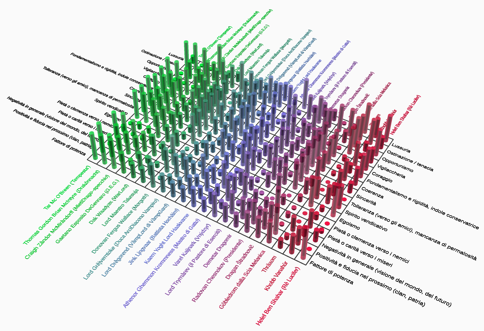
Indicatori |
1 Tar |
2 T.G.B. |
3 G.E.G. |
4 Battista |
5 Varel |
6 Dragan |
Fattore di potenza |
altissimo |
Altissimo, crescente |
Medio, indiretto |
medio |
Mal definito, variabile e indiretto |
Alto, indiretto |
Positività e fiducia nel prossimo (clan, patria) |
Assoluta |
Elevata |
Scarsissima |
Media |
Scarsissima |
Medio alta |
Negatività in generale (visione del mondo, del futuro) |
Quasi inesistente |
Molto elevata |
elevata |
Scarsa |
Molto elevata |
Inizialmente molto alta, in forte miglioramento |
Pietà o carità verso i miseri |
alta |
Altissima |
Irregolare |
alta |
variabile |
alta |
Pietà o clemenza verso i nemici |
scarsissima |
nulla |
scarsa |
trascurabile |
indefinita |
bassa |
Egoismo |
non applicabile |
solo apparente |
elevato |
basso |
elevato |
assente |
Spirito vendicativo |
altissimo |
Superiore a qualsiasi soglia misurabile |
Alto, ma più di tipo rancoroso |
altissimo |
rancoroso |
Molto alto |
Tolleranza (verso gli amici), mancanza di permalosità |
molto elevata |
elevata |
scarsa |
variabile, selettiva |
scarsa |
alta |
Sincerità |
elevatissima |
Assoluta, ma selettiva |
Scarsa, variabile |
elevata |
molto scarsa |
altissima |
Coerenza |
esagerata |
esagerata |
Iper selettiva, opportunistica |
elevatissima |
inapplicabile |
Eccessiva, in trasformazione |
Fondamentalismo e rigidità, indole conservatrice |
massima |
elevata |
assente |
elevata |
assente |
Medio alta |
Coraggio |
Non commensurabile |
Non commensurabile |
Elevato, incostante |
sovrumano |
Limitato a circostanze estreme |
sovrumano |
Vigliaccheria |
inapplicabile |
inapplicabile |
elevata |
irrilevante |
elevata |
trascurabile |
Opportunismo |
inapplicabile |
modesto |
Molto elevato |
modesto |
elevatissimo |
inapplicabile |
Ostinazione / tenacia |
sovrumana |
disumana |
variabile |
elevatissima |
inconsistente |
Eccessiva, in trasformazione |
Lussuria |
Molto bassa, con un’unica eccezione |
inapplicabile |
Patologica, e scompensata |
Elevata, causa privazioni |
Elevatissima |
Ignota e inapplicabile (è deceduto) |
|
||||||
Rappresentano la capacità ed efficacia di intervento sul proprio ambiente e contesto. Possono essere sia di natura diretta che indiretta (mediata da altri). Malgrado il “dogma” archetipico soggiacente alla PluriLogia, sotto questo aspetto i vari protagonisti non sono molto omogenei, spaziando tra loro entro un intervallo vastissimo.
Si spazia quindi dai valori di potenza elevatissimi ad assai modesti. Nella parte alta della graduatoria inter–libri, troviamo Tar Mac O’Breen. Tempesta è un potente guerriero, che vede incrementata la sua capacità distruttiva prima dall’acquisizione degli Artigli (uno dei Grandi Doni dell’Altissimo, forse quello dalle più spiccate attitudini offensive), poi in seguito, con la Trasformazione (la Comunione del Qjq con il Sangue di Fuoco dell’Altissimo). In ciò la sua principale fonte di potenza è, direttamente o indirettamente, mutuata dal Dio del suo universo. Tar possiede anche una elevata considerazione, reputazione e credibilità tra i Federali e tra i Patriarchi, al punto che la giuria ad un suo processo decide di condividere la sua pena per sgravargliene una parte, e infine costringe la corte a proscioglierlo.
Persino superiore è Thomas Gordon Brian McIntyre (il Drakònnacht), anche se il suo profilo è assai variabile nel tempo. Dopo l’esordio come soldato in gioventù e la grande fama conquistata nella Guerra delle Drago Montagne, che gli era valsa il soprannome di Leone di Astòria, era tornato alla vita privata, assai defilato, come Mastro Fabbro. Va notato come abbia vissuto, per gran parte della vita, sotto la dominazione oppressiva di Pégaso e dei Cavalieri del Cosmo. Parte molto basso, con un basso profilo, avendo rifiutato persino la carica di Primo Consigliere alla GòunderWhelt di Astòria. Egli non è un uomo adatto al tempo di pace, ancor meno di Tar stesso. La sua ascesa è rapida e sovrumana : quanto più cercano di schiacciarlo, e schiacciare nella repressione la ribellione della sua Luna Pesante, tanto più egli cambia, si evolve e compie progressi e diventa più potente ed ingovernabile. Recupera fama ed intraprende il suo percorso di Iniziato del Labirinto. Una discontinuità assoluta, che lo rende una sorta di semidio, si verifica allorquando gli viene assegnato l’Interrogativo di Comando da Guerra (l’Ordinatore), entità alquanto indipendente ed intransigente, ma col passare del tempo sempre più simbiotica. In futuro sono destinati a fondersi praticamente in un tutt’uno indistinguibile, insieme ad un altro Interrogativo (l’Alto Signore di Bulbi, Gbòid), e nel finale l’umanità residuale di T.G.B. diviene qualcosa di indefinito, ed il suo status effettivamente ben più vicino all’onnipotenza che a quello delle origini. Traina la sua intera Luna alla vittoria, poi, grazie ad una congiura delle Ali Nere, cade nella polvere. Diventa matto e rimane al tappeto per lungo tempo, sin quando il Nemico non cade nella tentazione di dargli il colpo di grazia, incappando in uno svarione madornale, nel colpire i suoi Miagolieri. Invece di venire schiacciato, risorge come il Drakònnacht per, infine, andare in esilio onde portare la vendetta nei Domini stessi delle Ali Nere nell’Altro Tutto, fomentando il Contrattacco Interrogativo.
Dragan Štradnovič (La Parola Sepolta) è un caso atipico : deceduto come eroico martire, diventato spirito, acquisisce progressivamente facoltà ma il suo potere ancor più è indiretto, quando diventa custode temporaneo della Lancia di Longinus. Ancorché disincarnato, gioca un ruolo di spicco in partite di proporzioni bibliche.
Gli altri protagonisti sono molto meno potenti. Un caso emblematico è quello di G.E.G. Il Napoletano comincia una nuova vita in una Dimensione nuova e senza una storia e/o una conoscenza locale, quindi non ha nessuna reputazione né conoscenza delle culture locali (va sottolineato che egli non era nessuno neppure nella sua Napoli di fine millennio : un perdente nato). Inizialmente dispone di una protezione magica molto potente (ma ne è inconsapevole e tale rimane molto a lungo, sin quando non ne viene edotto da parte del più grande Mago di Lad) che non deriva da quel che lui è, ma dal fatto di avere adottato un Vìgerum (sotto le sembianze di un gatto randagio e malandato di Napoli). In quanto guardiano del Vìgerum, egli è protetto financo dalle più terribili maledizioni dei Demoni e da qualsiasi influsso maligno. In seguito conquista la Decima Spada, l’Innominata (Lèdgering), e questo lo proietta nell’olimpo degli invincibili di Lad, secondo soltanto al Mòrgoth ed al suo braccio destro (Ìnferon). Ma ancora una volta, la Spada Nera gli si consegna solo in virtù del suo ruolo di difensore del Vìgerum. Essa è un oggetto trascendente, adimensionale, e nessuno la può possedere realmente : la si detiene soltanto in prestito, con gravi limitazioni nell’uso del suo potere.
Il Battista Hochàim è un guerriero e mago, ma per gran parte della sua vita esule e ramingo. È stato bandito dal perfido Barone Maladuérre, e si porta in corpo come tante metastasi il fardello di numerosi Grouwluth (Marchi di Condanna) dei Diavoli Corruttori. Solo alla fine, già anziano, se ne libera e ritrova vigore e vitalità. Il potere della sua magia non è una qualità del suo essere, ma gli deriva dalla capacità di evocazione del Sire Ardente (il Titano al Centro del Mondo, una creatura aliena densissima e pesante quanto un nucleo planetario). La sua reputazione è tuttavia assai positiva tra i Clan della Pietra, ed il Ré in persona teme molto il suo giudizio e le sue rampogne.
Infine Varel Kaijnark, personaggio con una fama pessima, discutibile, cinico, avido e baro, agente di un Chiromàgo. Salvo la grande abilità nel lancio dei coltelli, è una tra le persone più ordinarie (specialmente nella sua realtà, dove la stranezza è all’ordine del giorno). Solo sul finale acquisisce notevole potere grazie alla sua amicizia coi Fufìri di Gnàulia, che gli vale l’interazione con la Gattùrnia. Quest’ultima creatura è un entità plurima, corale, scaturente tra la simbiosi di un felino con essenze elettromagnetiche aliene, dotata della capacità di “vibrazione temporale” (la Transizione Ombra). In quanto prescelto dalla sorte, quando porta in spalla la Gattùrnia Varel acquisisce a propria volta la capacità di operare come al di fuori del flusso del tempo, il che lo rende in grado di sconfiggere gli invasori dell’Altrove (naturalmente dotati della capacità della Transizione Ombra).
I tratti esteriori sono ritenuti specchio (ed evocativi) di quelli interiori, quasi in accezione lombrosiana allargata all’intero corpo.
Corporatura e sembianza esteriore : varianti più o meno ragionevoli, sino al surreale, di omone di media statura o medio bassa, tozzo, massiccio; tarchiato anche all’inverosimile, quasi sempre con occhi blu notturno (salvo il Napoletano e lo Zingaro, che li hanno giallo chiaro, da lupo mannaro). L’età varia in modo elastico, generalmente superiore a 35 ed inferiore a 50 : praticamente un’età in cui si realizza un compromesso ottimale tra forza e resistenza fisica pura ed esperienza, addestramento e conoscenza di tecniche di combattimento avanzate, in modo da consentire il massimo della distruttività. Questo con l’eccezione di G.E.G., che è un po’ più giovane (tra i 24 e i 26 / 27), ma che ha meno responsabilità giungendo nel nuovo mondo come un perfetto sconosciuto.
Altra caratteristica anatomica comune, sebbene non evidente nella stragrande maggioranza degli avvenimenti, e forse in almeno un caso lasciata sottintesa o appena accennata, è la verga incongrua, di proporzioni equine. Questo “tratto” è da intendersi come neutro, sebbene potrebbe tentare a chiavi di lettura non letterali (etiche), nel senso che viene spontaneo probabilmente chiedersi la ragione per cui un dato attributo debba essere stato scelto come anormale e disarmonico, se poi non esiste magari un secondo piano di lettura. Ad esempio la tentazione di leggere oltre le righe potrebbe essere indotta dal fatto che, nella tradizione prima greca, poi neoclassica ed infine per parziale osmosi cristiana, il membro minuscolo fosse sempre associato agli eroi e possenti guerrieri (eccetto forse Eracle per gli scultori rinascimentali, un semidio), da cui una certa valenza positiva, mentre il fallo equino fosse stato tipico dei satiri, poi da ultimo dei diavoli, e quindi un tratto essenzialmente negativo in sé. Nella cristianità l’iniziale valenza negativa greca, puramente estetica, si è poi ammantata anche di altre fosche valenze moraleggianti, connesse al concetto di peccato, di tentazione, di peccato capitale di lussuria (la seduzione del Serpente), che nei greci non aveva sviluppo comparabile, né del resto ha paragoni in altre culture laddove invece il membro possente assume valenze positive ed idolatrabili (si pensi ai lingham indiani, agli astucci appesi al collo degli indio amazzonici). Si noti anche che nei neolitici anche e soprattutto l’estremizzazione dell’anatomia femminile era considerata qualcosa di intrinsecamente favorevole, connessa alla fertilità. Ciò a temperare la negatività cristiana correlata agli attributi sessuali evidenti.
Ebbene, negli archetipici protagonisti, la dote virile abnorme, da Minotauro, è un tratto “moralmente neutrale”, in sé, quindi non assume nessuna particolare valenza rappresentativa. C’è un’eccezione a questa neutralità o blanda “positività” dell’attributo della virilità maestosa, e la si ritrova in Thràxom / Djjnyahfar / Satana (prima l’Artigiano, in seguito a reincarnazione, vero Anticristo) : nel suo caso specifico la verga di Minotauro impersona la seduzione del Serpente. Non a caso, dopo reincarnazione, il Rè Serpe assume addirittura una personalità autonoma da Satana medesimo.
Talvolta, è vero, è usata come strumento di comando e prevaricazione, specie nei confronti di alcuni personaggi femminili negativi e meritevoli di tale trattamento (cfr nel seguito). In tutti gli altri, e sono gli eroi più positivi, intende semplicemente rafforzare l’idea di possanza in senso generico, di potenza elementare, primordiale ed anche animalesca (ma in un’accezione positiva del termine), peraltro già fortemente sottolineata dalla struttura fisica anch’essa estrema.
La forza elementare ed il carisma latente, animalesco, come pure il carattere temporalesco, è parsa assolutamente inconciliabile con un attributo virile scarso, che non avrebbe permesso di rappresentare una forza a tutto tondo, ma anzi avrebbe rappresentato come una sorta di punto debole nascosto.
La verga imponente doveva rappresentare una sorta di backup, di disinnesco contro l’accusa di essere creature distruttive e violente in quanto essenzialmente insicure sessualmente. Il concetto di forza nascosta, primordiale e latente, è invece molto nevralgico in tutte le implementazioni dell’archetipo dell’energumeno, e l’attributo fallico di Minotauro la rispecchia. (Nota : sebbene non incarnata nella verga, per ovvie ragioni, il tema del potere latente è stato sviluppato anche in Zvìrren, che è femmina, nella forma della sua magia istintiva, ed una scelta analoga ha riguardato Lord Grèjverntoke, il Duca ArciDiacono Vampiro. In entrambi i casi tuttavia questa potenza primordiale consistente nel talento magico, è capricciosa ed inaffidabile). Sia che appaiano esteriormente invincibili o codardi, gli ‘energumeni’ dovevano nascondere una riserva di energia latente supplementare, una sorta di mano di ferro celata nel guanto (fosse di velluto o di ferro anch’esso, poco importa). In questo senso la virilità esagerata incarnava il simbolismo della riserva di energia nascosta che contraddistingue tutti gli eroi, dai più positivi ai più negativi, una dote che li avrebbe resi forti anche quando scorticati di tutte le sovrastrutture culturali e caratteriali accessorie.
Forti sia come umani razionali, sia come animali primordiali, in sostanza. Tutti hanno un carattere spigoloso, macchinoso, e vagamente squilibrato, in circostanze ordinarie, ma sfoderano una vena adamantina normalmente invisibile proprio nelle circostanze di crisi acuta o di disperazione più nera. E questa sorta di tratto spirituale, che necessariamente doveva avere un corrispettivo fisico, in effetti si trasponeva nella verga equina altrettanto bene che nei muscoli poderosi, quelli invece sempre evidenti, che da soli sarebbero stati invece ridicoli, non genuini. In questo senso, forse sì, il tratto anatomico ha valenza vagamente positiva, contrariamente alla consuetudine greca ed ancor più al canone cristiano.
In questo forse la PluriLogia aderisce al simbolismo di molte culture orientali, laddove i simboli di energia primordiale sono non di rado rappresentati da grandi lingham di pietra, che non hanno per essi alcuna sfumatura voyeuristica come potrebbe apparire ad un occidentale, ma sono essenzialmente entità benigne e “fertilizzanti” della terra. Tutto questo con l’eccezione del malvagio Thràxom, che degli appetiti della propria verga è schiavo. Non è un caso : questa branca è quella più radicata nella matrice morale giudaico cristiana, e fa suo il relativo “senso del peccato” e la sessuofobia di questa matrice culturale.
Tra i due Super Eroi più conclamati Tar “Tempesta” Mc O’Breen è la figura più positiva anche nell’entità del consenso sociale e del riconoscimento di cui ha goduto da sempre (l’ÀrgoRad è la massima onorificenza Constantiana). La figura di Thomas Gordon Brian McIntyre ha invece alcune connotazioni un po’ più fosche. Esordisce in sordina per concludere il suo percorso in costante ascesa, sino ad assurgere all’olimpo dell’adorazione, che si concretizza nell’auto esilio e, poi, in una divinizzazione. Il Drakònnacht è una sorta di Hulk di scala prima planetaria, poi interstellare ed infine multidimensionale. Egli / esso rappresenta, incarna e si fa carico, dell’ingiustizia subita da una Luna intera e l’ira latente della sua razza vessata che si desta, insorge e si coagula in un unico vendicatore irriducibile. Il Drakònnacht trascende Hulk nell’essere non soltanto un alter ego “superiore”, ma un simbolo corale e non individuale, e più ancora : il figlio del cordoglio e della collera di una intera Luna. Il Drakònnacht è UN Drakònnacht, e in certa misura per assurgere a quel rango T.G.B. rinuncia ad una parte della propria individualità per incarnare meglio l’archetipo. Esso è lo zeitgeist della sua epoca di tribolazioni e del suo popolo, che sorge dalla melma primordiale delle miserie corali e si eleva al di sopra di tutto, concentra in sé le energie non soltanto dell’ira dei suoi figli, ma dell’intero mondo anche in senso fisico. Il suo gesto simbolico : raccogliere un pugno di terra nelle mani enormi e comprimerlo sino a produrne una sorta di pietra, è emblematico di questo, poiché simboleggia l’effetto catartico delle pressioni avverse su una materia prima propizia, l’effetto del maglio su un metallo che non attende che di essere forgiato per rivelare per intero la propria resistenza.
Il caso di Rocca di Stella è meno lineare : semplicemente manca un vero archetipo dell’energumeno, o meglio, risulta frazionato in diversi personaggi. Kaern Yoght Lord Haakvarne (Gahr Dag Naar Imperiale) è il Ré in esilio, Àthenor Ghèmmon Krommness (Mastro di Gatto) e Jink Ljngvaar (il Battista Hochàim), condividono uno o più aspetti del Leitmotiv. Il primo è il principale protagonista maschile, in senso “orizzontale” quantitativo, ossia presente per più scene e sin dal principio, ma incarna solo in modo generico e superficiale l’archetipo dell’energumeno, malgrado un rapporto forte col fedele suo Gnàff il Baffiére. Forse l’unico privilegio di questo personaggio, abbastanza dissoluto, vendicativo e livoroso, è essere il miglior spadaccino e poter brandire (per eredità) GashKraancod, l’Artiglio dell’Ovest, la spada dei Ré della Marca di Walgaaryon, in grado di chiamare alla battaglia il mitico Leone Aqvàtnijr. Jink Ljngvaar (il Battista Hochàim) invece, nella stessa branca, anche se inizialmente è in condizioni psicofisiche critiche (è segnato da molti Grouwluth, il Marchio dei Diavoli Corruttori), poi “esplode” nell’ultimo terzo sino ad incarnare piuttosto bene tale ruolo archetipico. Quanto al Mastro di Gatto, Àthenor Ghèmmon Krommness, che lo avrebbe incarnato persino meglio dei due precedenti (non a caso possedeva gli occhi oltremare o blu zaffiro notturno tipici del Leitmotiv e la Gattofilia impetuosa, tratto ancor più caratterizzante di questo archetipo), la sua presenza quantitativa diretta, ossia da attore vivente, risulta troppo limitata, poiché il guerriero compare tardi nella trama e cade prematuramente (proprio per salvare i suoi Fùrugatti), per cui non è possibile che assurga pienamente al rango di pilastro portante. La sua eco tuttavia riverbera a lungo nel cuore straziato della vera eroina di Rocca di Stella, Rhonya Ruth Rynéwler, l’alta guerriera di Wlegdh.
Per riassumere Tar Mc O’Breen è vincente nato e predestinato, da sempre e per sempre, e anche nel morire (parzialmente), poi, completa questo suo fato, l’essere condannato alla grandezza. T.G.B. ha un destino differente, molto travagliato e negativo nella fanciullezza, ma è strutturalmente destinato allo stesso fato e le difficoltà lo temprano soltanto, anche se in almeno un’occasione rischia di esserne spezzato, e la sua sorte subisce impennate inenarrabili ed estreme. Il Battista Hochàim invece percorre una parabola, partendo da ottime prospettive iniziali (in antefatto), in giovinezza, subendo poi una lunga e profondissima fase di declino sino alla decadenza, e solo piuttosto tardi, faticosamente, risorge dalle sue ceneri, risanato dai Fùrugatti. A differenza dei primi due, non imprime alla storia del suo mondo e del suo tempo un’impronta realmente indispensabile, laddove sia Tar che T.G.B. invece influenzano in modo marcato e rispettivamente assolutamente radicale il corso degli eventi, anche a lungo termine e su vasta scala.
De Gennaro (G.E.G. di Napoli) comincia come perfetto perdente, rifiuto di una società Napoletana degradata, per raggiungere il suo acme come antieroe e paladino dei miseri, ed infine lasciare la mano a personaggi ancor più grandi di lui, poiché ha delle debolezze strutturali ineliminabili. È egoista, invero solo per difesa e non per indole nativa, ma ormai quel tratto è fossilizzato nel suo carattere. Ha avuto una gioventù di miseria, umiliazioni e vessazioni, e l’accoglienza nel nuovo mondo non è diversa. Molto ben nascosta e ben custodita in sé ha ancora della pietà, sebbene non ami ammetterlo nemmeno con sé stesso, perché preferisce ostentare una maschera di cinismo e pragmatismo. Ma il credito di cui gode il mondo nei suoi confronti è talmente basso che, in ogni buona occasione, si senta più che autorizzato a prendersi la sua parte senza tanti complimenti. Il potere, nelle sue mani, è volubile e pericoloso, perché il suo risentimento fatica a smorzarsi, e i successi non lo saziano, ravvede fregature dietro ogni filo d’erba poiché era stato una nullità quando ancora la corazza era tenera, e quindi si percepisce spesso come una nullità nonostante tutto. È quindi essenzialmente un personaggio negativo e perdente, un disadattato con sprazzi di positività e spirito di riscatto, spesso estortigli a forza da circostanze esterne critiche, che diversamente sarebbero rimaste solo latenti. Un suo altro punto debole è la lussuria insaziabile, a cui non sa resistere e che lo spinge spesso a scelte errate. Per dettagli imperscrutabili se non per caso, finisce anch’egli per influenzare profondamente gli eventi del suo mondo d’adozione, ma più che per suo merito esclusivo, è per il fatto di saper ricoprire un ruolo vacante, quasi come una sorta di catalizzatore. È l’uomo giusto al momento giusto e nel posto giusto, per una volta nella sua vita. Il suo merito più autentico, non per svilirlo, è aver saputo mostrare compassione, quando lui pure era un reietto, per un gatto randagio, che però in realtà era un Vìgerum, con tutte le conseguenze che ciò avrebbe comportato.
Praticamente identica è la parte giocata da Varel Kaijnark, che mai avrebbe pensato o anche solo desiderato di determinare in modo sostanziale l’esito di importanti scontri ed indirettamente le sorti del suo piccolo mondo, ed ancor più indirettamente eventi remoti ed ipercritici. Invero egli è solamente UN protagonista, e non realmente IL protagonista, honoris causa, ossia proprio per il fatto di rappresentare una variante negativa dell’archetipo standard dell’energumeno. È ancor più cinico, egoista e profittatore di G.E.G., ed anche più avido. Appartiene alla razza, gli Vnýdzyr (Zingari del Giravàgo), che gode di pessima reputazione, ed è inoltre patologicamente superstizioso ai limiti della paranoia. Anche questa variante dell’archetipo ha un tallone d’Achille nella lussuria, per colpa della quale spesso espone a rischi l’intera compagnia di cui fa parte e la sua missione. Tende a riscattarsi sempre per il rotto della cuffia. Ancora, come per G.E.G., essenzialmente il suo unico lato positivo (e la sua determinazione, a lungo latitante) emerge esclusivamente nell’interazione coi Fufìri, che gli vale poi la conquista della Gattùrnia. Essa è l’unica forza capace di tirare fuori il poco di buono che ha dentro.
Il caso del Dottor Dragan Štradnovič (La Parola Sepolta) è piuttosto atipico, in quanto egli non è più umano ma solo ormai uno spirito disincarnato. Presenta ugualmente la fingerprint dell’archetipo : è caduto eroicamente, scegliendo il martirio per salvare altri, è caratterialmente molto forte, obiettivo, inflessibile, coerente. Altri suoi tratti dominanti iniziali sono però il risentimento e lo scetticismo. Del resto egli era stato un medico nella Serbia distrutta dalla NATO, ed è morto in un attentato terroristico. Tutti fattori che hanno incrinato la sua fede. Solo molto faticosamente arranca in un percorso di pacificazione con la sua idea di Dio. Come tutti gli ‘energumeni’ ha il privilegio di appellarsi ad uno strumento del potere, che però nel suo caso non presenta il pattern felino. Si tratta infatti nientemeno che della Lancia di Longinus, una reliquia esistente sia nel piano materiale sia in quello metafisico. È l’unica variante in cui il rapporto privilegiato coi felini non sia presente (tuttavia essa non manca nel libro in senso assoluto, e la fiaccola felina viene portata da due figure femminili, una vivente, Llyrahl Ahmoogh, ed una fantasma come lui, l’irlandese Ryondhàim O’Reyll). Il tema felino è stato a lungo un po’ debole in La Parola Sepolta, e solo il gruppo Q ha premuto per valorizzarlo tardivamente, ma non debolmente.
Merita una trattazione a parte anche per il solo fatto di essere sempre stato un tema divisivo tra i gruppi e talvolta all’interno del gruppo Q, ed ha prodotto vivaci divergenze tra il gruppo Zeta ed una parte di Q, da un lato, e l’altra parte di Q e Vì, dall’altro; Pàncer trovandosi talvolta a cercare di mediare (divertito, e disinteressato ad un tempo) in questi accesi muro contro muro. Inizialmente Q sarebbe stato un gruppo con un rapporto equilibrato con la tematica sessuale, ma la forte divergenza tra Vì e Zeta lo ha portato a spaccarsi al suo interno.
T.G.B. si ritiene per molto tempo refrattario all’amore, si è vaccinato contro di esso, volente o nolente, sin da bambino, per sopravvivere all’eccidio del suo Clan, e salvo i suoi Miagolieri, riesce soltanto a provare sentimenti tiepidi e docili. Ha conosciuto il sesso a Pegaso (probabilmente anche mercenario), ma non lo ama poi molto ed identifica pure esso come una sorta di debolezza, nel caso migliore, e una degenerazione tipica delle culture corrotte e decadenti, come appunto quella Pegasiana. La lussuria non è decisamente il suo punto debole, e comunque quel suo lato non viene mai realmente messo alla prova : per prima ci prova una bellissima spia Uthmogghina, ma che egli riconosce subito come tale malgrado debba sottostare al gioco, e ne prova in cuor suo soltanto disgusto (inoltre in tale circostanza il suo cuore sta già altrove, aspetto che acuisce la ripugnanza per il sesso gelido con la spia Janice). Nel secondo libro, in un momento di profondissima crisi tra l’altro, viene nuovamente messo alla prova da Alorie Jalix McWholle, che a modo suo lo ama in modo obliquo e compulsivo, e che usa disperatamente il sesso come unico grimaldello che sente di avere per fare breccia in quell’armatura, ma anche in quella occasione T.G.B. ancora pensa alla stessa persona, che lo ha lasciato ma che non ha mai dimenticato, ed è suo malgrado piuttosto refrattario ed insensibile alle lusinghe della sfortunata Alorie. In quell’occasione T.G.B. è invero in una depressione così nera e profonda che Alorie stessa si rende conto di non avere le armi giuste per cavarlo fuori. La vita emotiva di T.G.B. è una galassia di dolori e traumi, specie infantili, seguiti da lunghi periodi di anestesia e collera ribollente di sottofondo. C’è un’unica eccezione : H.H.G.A.T. La bionda valchiria, che gli somiglia molto per la profonda diffidenza verso l’amore ed è ancora più restia di lui, è l’ariete capace di infrangere ogni corazza protettiva dell’energumeno. In seguito cede anche H.H.G.A.T. stessa, e la loro è la più potente tra le storie di amore totalizzanti dell’intera PluriLogia, e quando si incrina, è solo a causa di subdoli sotterfugi e macchinazioni delle Ali Nere. In sostanza, benché avversari e reciprocamente diffidenti, si attirano come magneti alla prima occhiata, e successivamente soltanto l’intervento delle forze oscure riesce a staccarli. I due si amano nella stessa maniera, totale e senza gradazioni, e la loro è in fondo più una simbiosi : dopo averlo conosciuto e perduto, si sentono entrambi come degli amputati di qualcosa di insostituibile.
Una storia in certa misura simile a quella di T.G.B., ma che rimane solo embrionaria, anzi, addirittura in nuce ed abortisce anzitempo, sarebbe stata possibile tra Àthenor Ghèmmon Krommness (Rocca di Stella) e Lady Rhonya. I due erano predestinati ad innamorarsi. Ma, in un agguato dei Diavoli Corruttori, egli cade prematuramente senza che la guerriera di Dravsnica abbia potuto confessargli di essersi innamorata di lui. E, per giunta, morente, il Mastro di Gatto gli affida la cura dei suoi Fùrugatti, incastrandola ancora peggio. Rhonya se la porta dentro sino alla fine, e probabilmente anche nel seguito ancora non scritto. In Rocca di Stella molte figure femminili finiscono per orbitare, magari anche solo marginalmente, attorno alla figura del futuro Ré, Kaern Yoght Haakvarne. Yoght è un dissoluto e funesto guerriero, il cui pensiero fisso è riscattare l’onore della casata e liberare la Marca degli Hochàim dal Barone usurpatore Maladuérre, che non da troppa importanza alle figure femminili, tranne forse una conosciuta in gioventù e mai dimenticata (che ritrova praticamente solo a file libro). Ciononostante il suo fascino lambisce le due gemelle Valdryanne, l’una ex principessa Reggente, l’altra futura GuardaSigilli, e varie altre. Yoght rimane un cinico disincantato, in faccende d’amore, e si rende conto (disprezzandosi) di essere assuefatto più che altro ai servizi di alto bordo dei bordelli Imperiali. E non dimentica le sue prime notti d’amore, dieci anni prima, con un’Ancella Syrdougahll. Sul finale la incontra persino, e scopre che nemmeno lei ha mai dimenticato il giovane spadaccino dell’Ovest, a causa del quale si ribellò al Servizio come Ancella Syrdougahll e riuscì a farsi riscattare da un amico connazionale. Le gemelle Valdryanne, pur con una storia diversa, non conoscono l’amore nel primo libro, in parte per l’età ancora abbastanza giovane, in parte per le terribili vicissitudini subite. Claeryll Xylde ha vissuto praticamente prigioniera al palazzo, sola ed isolata tra nemici, e tormentata dai Diavoli Corruttori sino ad impazzire. Aethel Ayreen è stata marchiata dagli stessi, soggetta ad una forzata amnesia totale, ad un blocco mentale, vivendo insieme ai monaci all’Abbazia. Nessuna figura femminile di Rocca di Stella è molto fortunata in amore, in effetti, al pari dei protagonisti maschi. L’unico a spassarsela un po’, nel finale, dopo essere stato risanato dai Fùrugatti dopo anni di patimenti e di stenti, è il Battista Hochàim, che dopo avere bruciato decenni di vita come scheletro ramingo, ritrovato il poderoso vigore fisico, vuole recuperare il tempo perduto, senza troppo andare per il sottile, e non manca ti trovare donne compiacenti, essendo un grande eroe in patria. La sua lussuria è comunque piuttosto sana, scherzosa e leggera, un inno alla vita simile ad un baccanale.
Tar Mc O’Breen è una persona che ama con facilità, e se il caso, con profondità, ma che non ha trovato la persona adatta, essenzialmente perché non ha mai dedicato tempo a pensare a sé, secondariamente perché quando varca una porta su Constance o sulle Colonie, la sua aura mitica lo precede incutendo notevole soggezione nonostante il suo aspetto spesso bonario e dimesso esteriormente (ma basta un accenno di crisi che l’attitudine al comando e l’intransigenza di ferro trapelino, perché Tempesta è sempre una macchina da guerra latente). Tar è vincolato anche da moltissimi tabù, religioso–culturali. Intanto è intriso di una cultura molto conservatrice ed egli è tradizionalista più di tanti altri, cultura che delega l’autorizzazione al concepimento di figli al benestare insindacabile dell’Autorità Demografica (peraltro il parere sarebbe automaticamente favorevole, per i suoi meriti di guerra, essendo l’unico portatore vivente dell’ÀrgoRad). Inoltre i Clan Constantiani hanno il mito potentissimo dell’integrità del sangue puro ed il tabù della contaminazione da mescolanza, a causa della Comunione col Qjq e il Sangue di Fuoco dell’Altissimo, che ha esito mortale o peggio per gli individui non purosangue. Tar non è ostile all’amore, ed è meno forte di quanto non pensi di essere anche alle lusinghe del sesso. È molto sfortunato, anche se meno di Alina Stonebringer, la troppo giovane principessina di Lòndavar erede del sangue di Aldébaran che se ne innamora follemente. Restano due alieni che non osano né possono nemmeno tendersi la mano, ciascuno per remore proprie, né confessare alcunché. I loro due amori restano per sempre congelati in catene (lui lo nega persino a sé stesso e rifugge il pensiero appena si presenta). Alina è la più potente telepate della sua epoca (anche più forte della gemella), ma si astiene dal tentare di sondare la mente di Tar (tra l’altro, molto protetta ed inaccessibile), per correttezza. Nemmeno lei osa mai confessargli che lo ama, e non ne parla, ma la gemella lo capisce, e la ritiene pazza. Si rende conto di quanto sia cieca e di quanto non siano compatibili. Ma su una cosa Alessia si sbaglia : non lo ama per la sua immagine esteriore e la sua fama leggendaria, Alina ama Tar perché è buono, generoso e fedele, e per l’intensità del suo amore per i Pardi (che, tra l’altro, porterà Tar anche a venire designato portatore degli Artigli dai Clan Pardeschi medesimi). Alessia vede Tar come un guerriero implacabile, un carro armato di forma nemmeno troppo umana, Alina si innamora del fatto che le sue mani gigantesche sono come morbidi letti per i cuccioli di Pardo, e l’omone sia quasi un mammo verso quei piccoli miseri. Poi ama la sua sincerità, praticamente senza gradazioni. Ama persino il fatto che si imponga di non pensare a lei medesima, di non prenderla in considerazione perché è troppo giovane e sarebbe disdicevole. Tar è estremamente politically correct, e appena scopre dentro di sé qualcosa che non va, cauterizza tutto con fermezza perché il male va rimosso. Alina se ne rende conto, ma se da un lato la ferisce di esserne esclusa, gli piace anche per quello, sarebbe l’unico di cui si fiderebbe realmente. Sente che i loro spiriti sono nati per essere gemelli, laddove i loro corpi sono incompatibili : lei è un fragile fuscello etereo di un pianeta a bassa gravità, lui è il più poderoso figlio della Luna Pesante, un Gravilandese : la casa avita ed adorata di Tar è inabitabile e inospitale per i fuori mondo. Anche anatomicamente, con imbarazzo, Alina si confronta con le pungenti osservazioni di Alessia che le fa notare che non potrebbe nemmeno avere rapporti fisici con il bestione. In sostanza hanno contro tutto, e Tar con la morale Constantiana non fa nessun compromesso. Alina è fragile e vulnerabile, e come tale deve essere difesa, la vede solo come una creatura da proteggere, inviolabile. E lei sa di non poter fare breccia in queste remore. Tuttavia Tar soffre la solitudine, quando ha tempo di pensarci, e non è un caso che si lasci sedurre, in modo molto passivo ed inetto tra l’altro, da un personaggio di grandissima forza e prestigio : la LierDuchessa Anastasia Lena di Ràlder. Tar non la ama realmente, al massimo la stima, ed anche se Lena è di bellezza abbagliante, nemmeno la desidera particolarmente. Sa che nemmeno lei ama lui a tutto tondo : lo ammira, e vuole un erede con almeno metà sangue Constantiano. Tar abdica momentaneamente dal suo ligio rispetto ai tabù sulla preservazione del sangue puro, si abbandona alle lusinghe di Anastasia Lena di Ràlder e la possiede, perché la forza e l’autonomia di lei blandiscono i suoi eventuali sensi di colpa. Anche se è una fuorimondo, inoltre, la LierDuchessa è una persona ragguardevole in tutti i sensi. È una buona madre per dei figli, si convince. E forse in ciò c’è uno dei rarissimi atti di umiltà di un fiero Constantiano doc nei confronti di un’altra razza. In ogni caso il rapporto, fulmineo, con Anastasia Lena di Ràlder, non è né sesso né amore, e non lo è da parte di alcuno dei due. È un deliberato progetto di avere dei discendenti con un pedigree di altissimo livello. Specialmente è la LierDuchessa a volere un erede (maschio) per metà Constantiano. Vorrebbe un maschio, un GranDuca, che somigliasse a lei, anche se finirà per avere una femmina, e sarà una riproduzione di Tar in piccolo. Tutto il resto è effimero e ben poco coinvolgente. Anche nel seguito, Tar la considera non meno di una moglie, ma senza particolare affetto o coinvolgimento. Pretende solo di poter dire la sua nei modi di educazione dell’erede. Punto.
C’è soltanto una figura che si rivela capace di mordere Tar sul vivo, mettendolo in crisi. Si tratta di una nemica, che detesta in modo particolare anche per la responsabilità dell’uccisione di Alessia Stonebringer, e che lui stesso fa prigioniera e giunge ad un soffio dall’uccidere per la furia. La disprezza con ogni fibra del suo essere (al punto da prendere anche in considerazione la possibilità di un’esecuzione sommaria con le proprie mani). È la Principessa Imperiale Litosiana, Sàmaranth. Una creatura sregolata, dionisiaca, bella di un fascino intensamente erotico, volitiva e tutta pulsioni (con la parziale complicazione che è lesbica, ma senza una polarizzazione molto spiccata in tal senso). La ritiene il suo contrario e la disprezza perché le attribuisce tutte le qualità che ritiene spregevoli dell’Impero Litosiano, e colpevole di reati. Sàmaranth pure lo odia, anche se non può disprezzarlo, perché è una guerriera e comandante militare, e Tar rappresenta una leggenda incarnata : l’apoteosi delle qualità marziali ad ogni livello. Sàmaranth nemmeno è molto forte, emotivamente, perché non ha nessuna abitudine ad autoregolarsi né a dover desiderare qualcosa senza poterlo avere. Quel che la destabilizza di più di Tar, è il fatto che lui non riesca ad odiarla quanto dovrebbe e vorrebbe, e che la protegga addirittura dai DemonIbridi. E la sconcerta che il nemico più acerrimo, quello con cui mai avrebbe pensato di poter trattare alcuna condizione, la trovi così attraente. Non solo : al momento del viaggio sotto la sua custodia, Tar è già una Statua Vivente, e lei sa bene che coi Trasformati non si viene a patti. Non hanno debolezze, non hanno desideri, non sentono nulla. Eppure Tar la sente eccome, sotto la sua pelle trasformata insensibile e indistruttibile. Addirittura, in parte inavvertitamente e in parte per malizia, lei gli suscita delle reazioni fisiche anomale. Non ci sono precedenti simili. Quest’idea suggestiva di averlo ammaliato la seduce a propria volta. In ogni caso si tratta di uno shock traumatico per entrambi. Tar le dice frasi durissime, e le ferite che le lascia sono destinate a cambiarla notevolmente. A sua volta l’amor proprio dell’energumeno e l’auto considerazione che si era costruita ne escono in frantumi. Si ritiene indegno, spregevole, e riemerge a pezzi dalla convivenza forzata e dalle disavventure vissute in compagnia di Sàmaranth. Pur apparendo a lungo (e ritenendosi tale !) invincibile, la lussuria è un punto debole di Tar, tuttavia la sola Sàmaranth è in grado di evidenziarlo, per il resto la cosa resta silente.
G.E.G. ha un rapporto avido e predatorio col sesso (l’amore non sa esattamente cosa sia, non avendolo mai conosciuto), avendo passato una giovinezza, peraltro ancora in corso, di totale deprivazione verso entrambi. Non è mai stato amato da nessuno, e non è ben definito se a propria volta egli fosse mai stato innamorato (ma si può intuire che, in caso affermativo, non sia stato mai corrisposto, o peggio, sia stato umiliato pesantemente), ed ha conosciuto il sesso in modo superficiale ed esclusivamente mercenario. E di qualità scadente. Su Lad, dove ben che vada vige la legge del più forte, quando scopre di essere forte e rispettato, comincia a sentirsi come un leone liberato in un gregge in gabbia, e la fame atavica dei suoi vent’anni di carestia divampa, nemmeno più ostacolata da vincoli che normalmente avrebbero resistito nella sua Napoli di origine. Trova inoltre un personaggio funzionale che gli calza quasi come un guanto, per cui affonda senza freno nella lussuria, sebbene non sia un vero e proprio depravato, ma semplicemente un rozzo ed un affamato. Lady Skelloer gli fornisce ogni possibile alibi assolutorio per prevaricarla sessualmente : ai primi incontri lo schernisce, tenta addirittura di farlo uccidere come un cane nel sonno dai suoi cicisbei, ed è molto razzista nei suoi confronti o almeno lui la percepisce tale. Inizialmente Claire lo ritiene un debole e lo disprezza, ma poi la NorthLander se ne infatua non appena si rende conto della sua forza nascosta e delle sue potenzialità, perché è figlia di una cultura barbarica (e teme destini ben peggiori). Allora lei non ha più difese, e d’altra parte inizialmente il Napoletano non ha grosse remore e scrupoli; anche se pian piano si pente di abusare così a lungo della ragazza, resosi conto del suo profondo masochismo, sino a finire per sposarla quando lei tenta di uccidersi a causa sua, e viene salvata solo a stento.
In stridente contrasto con lo squallore della storia di G.E.G. e Lady Skelloer, si innesta poi quella, poetica, tutta a tinte pastello, del Campione WarLord (Dak Waadyax) con la fata driade silfide (Thelésia Ryn’Gyll), storia assolutamente banale e ritrita nel suo voler strappare lacrime (l’effetto è cercato intenzionalmente, proprio per aumentare lo stridore con le più corrusche vicende erotiche del Napoletano).
Solo una volta Gaetano Esposito De Gennaro perde la testa sul serio : per la Maga Rossa, che gli avevano dipinto come una strega crudele e terribile, e si rivela sotto la maschera per la più dolce, tenera, ingenua, solitaria e triste figura. Ràllen è bellissima, ed assolutamente digiuna di ogni esperienza. Crolla di schianto alla sola idea che alcuno possa amarla veramente, come si accorge essere per G.E.G. La loro possibile romance abortisce contro ogni previsione (un bel colpo, per la suspence ! e per la delusione del lettore banale). Perché ? Per una ragione pure banale : il Napoletano si rende conto non solo di non meritare una del calibro di Ràllen, ma di essere veramente squallido al suo confronto, squallido dentro, malgrado la terribile Ledgering in suo pugno gli conferisca potere distruttivo senza pari. Ràllen non merita un mentecatto come lui; e per lui, d’altra parte, va più che bene la sua squallida ed arrendevole mogliettina NorthLander, che però è alquanto smaliziata a letto. Si tratta di una caduta per il prestigio di G.E.G. ma abbastanza dovuta per coerenza. Aveva già corso sin troppo, era arrivato già troppo in alto, partendo dal pezzente che a Napoli dormiva buttato sotto un ponte, per pretendere anche di arrivare a poter sposare Ràllen del Baluardo. C’è solo un effetto collaterale, una casualty, purtroppo : il cuoricino di nuovo spezzato della Maga Rossa e mezzosangue Sidhe. Povera Ràllen, maledetta dai genitori sin dalla culla ! Non le mancava che un’infatuazione per il primo conquistatore immune al suo potere negativo. Ràllen è condannata a restare sola : oltre alla sua fama ingrata, nessuno è alla sua altezza. Al cospetto della grandezza generosa del cuore di Ràllen, della sua abnegazione, tutti i personaggi della branca appaiono dei nani meschini. L’unico che può guardarla da pari a pari, è il più temuto ed incompreso di tutti (persino più ancora di lei, visto che è incompreso persino dai Demoni che lo servono) : il Mòrgoth. Egli sì, la capisce (e la apprezza al punto dal volerla alla guida di un suo progetto), ma non può amarla : il suo progetto di vita è un progetto di vendetta e distruzione, e in ciò non c’è posto neanche per Ràllen. Per lei ha creato una nicchia, in cui non entrerà mai per non guastarla con la sua aura nera.
Non si evince mai chiaramente se Varel Kaijnark sia mai stato innamorato nel suo passato, ma si intuisce che non lo sia mai stato veramente. Egli è un lussurioso per inclinazione, da sempre propenso a scialacquare i guadagni in puttane. La sua storia con la rossa Lesna è spiccatamente analoga alla fase iniziale di quella di G.E.G. con Lady Marie Claire Eloise. Non c’è una ragione progettuale in questo : semplicemente, le quattro figure si somigliano così tanto (prese a coppie omologhe) che alla fine pure la parabola dei protagonisti è confrontabile. Non è quindi sorprendente che pian piano, dagli stessi semi, sia nata la stessa pianta. Lesna è comunque molto più maligna di Claire (che è solo debole e succube), ma non meno masochista (lo nasconde solo meglio e più a lungo); e Varel più vigliacco del Napoletano. Ma si tratta appunto di differenze quantitative, che hanno reso interessante riesplorare la variante, anche se è meno comune reperire l’archetipicità a livello di sotto trama e non a livello di singoli mattoni da costruzione.
Circa Dragan Štradnovič, essendo egli uno spirito disincarnato, la tematica appare irrilevante, per quanto si affezioni alla dolce ed ingenua ‘Rye’, che contraccambia anche di più. Ne La Parola Sepolta comunque il Leitmotiv di genere erotico estremo non è portato avanti dai protagonisti positivi, ma dal malvagio Thràxom (destinato a divenire Anticristo all’atto della reincarnazione del Dio–Demonio, Satana / Djjnyahfar) e dalla sua prima fidanzata poi concubina Miss Ahmoogh (una Zwygnag, ossia una ragazza bambola, eugeneticamente progettata apposta per il sesso).
Lord Kaern Yoght Haakvarne, monarca dell’Ovest (Rocca di Stella). Ha molte carte in regola per una classica storia Fantasy, erede di una casata regnante in esilio, spadaccino sopraffino, ma ha una macchia nel suo passato, un periodo di dissolutezza che lo marchia a fuoco in modo indelebile agli occhi della sua gente severa, una zavorra che non lo abbandona neppure quando, vinta la sua ribellione, recupera il trono degli avi. Sebbene autorevole ed autoritario, nemmeno lui stesso è immune dalla soggezione morale verso l’anziano Battista Hochàim (Jink Ljngvaar), che aderisce meglio all’archetipo dell’energumeno, e a cui riconosce una sorta di superiorità etica.
Dak Waadyax il WarLord (G.E.G. di Napoli). Cavallo vincente su cui puntare, eroe perfetto senza macchia, una sorta di Agilulfo (Il Cavaliere Inesistente), ma che nelle circostanze più critiche viene scavalcato ed umiliato dalle parossistiche reazioni d’orgoglio del Napoletano, anti eroe per eccellenza, in un capovolgimento di ruoli molto catartico e liberatorio. Abbastanza simile, nella versione orientale : il Lord Maestro Takezuja, mentore di G.E.G.
Dei due Lord Kaern Yoght Haakvarne nel suo libro ha molto più spazio orizzontale e sviluppo, sia d’azione che d’introspezione, che non Dak Waadyax. D’altra parte G.E.G. di Napoli è un libro piuttosto eterogeneo e corale, e G.E.G. medesimo ed il suo Vìgiero sono forse il collante dell’insieme.
Anche Varel Kaijnark lo Zingaro (I venti del Giravàgo) ha un suo sparring partner, la versione certificata di eroe immacolato e perfetto : il Pastore di Eserciti (Lord Tryrnàrev). Nel finale gli subentra una versione molto migliorata di sé stesso, purgato dei principali difetti : l’Agente del servizio di Cronoprotezione, Démetar Dragomir. Tuttavia siccome questa branca è marcatamente corale, non esiste una contrapposizione dicotomica o una rivalità univoca tra essi, e Lord Tryrnàrev può esistere e vivere la sua gloria senza alcuna nemesi finale da cui uscire sconfitto. Anzi, tra i molti, l’eroe senza macchia è spesso proprio uno di coloro che sono mossi a pietà nel giudicare le gesta, o gli errori, di Varel Kaijnark lo Vnýdzyr, poiché Lord Tryrnàrev è sincero e trasparente, ma non per convenienza. Anche Démetar Dragomir non solo non è in competizione con lui, ma sviluppa per Varel una simpatia e solidarietà istintiva. Per questo Varel prova spesso molta invidia, livore, ma anche soggezione verso di lui, e solo nel finale, quando si riscatta, riesce a comprendere di essere stato sempre ingiusto e diffidente verso il Pastore di Eserciti. Nel solo finale di questo libro (causa avvicendamenti tra i coautori, con un colpo di mano di Vì) emerge come detto la figura enigmatica, polivalente, quella dell’eroico Agente Démetar Dragomir. Non essendo archetipica in nulla, tuttavia, non rientra di diritto a pieno titolo nella presente analisi comparativa.
Questo Leitmotiv è sempre stato, bizzarramente, popolare in modo disomogeneo tra i coautori, e tuttavia al contempo il meno divisivo. Senza nemmeno pressioni da parte dei fanatici (Q) sugli altri membri, si è instaurato al riguardo una sorta di spontaneo patto di desistenza, universalmente accettato, che prevedeva che, qualora la tematica felina confliggesse con qualsiasi altra, sarebbe stata comunque prevalente anche al costo di forzare la mano. Mai nessuna obiezione è stata sollevata su questa norma, assunta nello status di dogma. In caso di contrasto tra le esigenze del Leitmotiv felino con qualsiasi altro, il primo ha ricevuto la priorità automatica. Per dirla in gergo linuxiano, i Gatti sono “utenti root” (admin, per i non linuxiani).
In tutte le branche della PluriLogia, declinati in mille salse e varianti (e talvolta in più d’una variante persino nella medesima branca), i felini dominano incontrastati, spadroneggiano, e rappresentano quanto di più alto, sublime, benigno, misero e meritevole di pietà, ma anche nobile e fiero al contempo, esista in ciascuno degli universi. Si tratta sovente di gatti “parlanti”, sebbene in un’accezione ampia del termine (inteso come capacità di comunicare : a gesti o vocalizzi, meta verbalmente, telepaticamente, spesso entrambe le cose insieme). Si potrebbe pensare ad animali à la Jean de La Fontaine, ma non è assolutamente così. Gli animali della PluriLogia non sono creature antropomorfe né caricaturali né, soprattutto funzionali ed esprimere insegnamenti moraleggianti, tanto meno ad incarnare vizi e qualità umane. NON simboleggiano categorie umane o espedienti per parlare dell’uomo : esistono come entità autonome ed indipendenti, e semplicemente possiedono alcune delle caratteristiche appannaggio della specie umana (e delle intelligenze sviluppate in generale), come l’abilità di comunicazione e l’acume. Sono quindi dei super animali auto consistenti, piuttosto che dei subumani o dei veicoli archetipici di metafore ad uso e consumo umano. In questo quindi si dissociano totalmente dalla strumentalità La Fontaineiana e di altre pur pregevoli favole di animali alla Esopo. Se proprio si vogliono trovare parentele, per quanto forzate, la si cerchi piuttosto con i Mearas, cavalcati dai Rohirrim di Rohan (J.R.R. Tolkien), coi Draghi di Pern (Anne MacAffrey), coi i Lyr del Sangue dei Cheysuli (Jennifer Roberson), con i daimon de La Bussola d’Oro (Philip Pullman). Di seguito le varianti dell’archetipo felino astratto.
Pardi – panthera pardus gravis (e Leonpardi – panthera pardus rex, loro antenati semi selvatici) (Cronache di Constance e delle Stirpi Originarie dei Guardiani)
Miagoliéri (Tutto–al–di–Qua), Gnàuli, Draosoràsi (Tutto–al–di–Là) (La Terza Guerra Interrogativa)
Vìgieri, Gatti graffiatori, Gatti normali, qualsiasi (G.E.G. di Napoli)
Fùrugatti (o Gatti da Naso, o Nasolièri o Magàtti) (Rocca di Stella)
Fufìri (e la Gattùrnia), Felegnàuli (I venti del Giravàgo)
Le Forfére (spiriti guardiani del Ponte dell’Arcobaleno nel Limbo, i Campi Elisi dei gatti) (La Parola Sepolta)
I felini sono in effetti l’anima comune e forse più omogenea di tutte le branche della PluriLogia, quasi sempre sorgente della forza ed ultima áncora morale anche quando la determinazione degli eroi vacilla (cfr. la rinascita del Drakònnacht dalla ceneri della lunga depressione, La Terza Guerra Interrogativa), sino ad assurgere al più alto scopo di vita di molti protagonisti (e di qualche figura complementare). In Cronache di Constance e delle Stirpi Originarie dei Guardiani Tar arriva a spingersi egli stesso in una simbiosi ed una fusione mentale col Clan dei Pardi, per traghettare nell’immateriale culla dei suoi avi lo spirito di un Pardo mortogli tra le braccia che gli aveva affidato i suoi ricordi, per infine diventare depositario del più potente strumento di distruzione, creato dall’Altissimo ed affidato solo ai Pardi : gli Artigli. Questo sodalizio (Tar è detto anche “uomo di due cuori”) è così forte che in morte egli verrà integrato nel Clan, e prima ancora, in segno di totale fiducia, gli Artigli erano stati tramandati direttamente a sua figlia Miriam, per quanto mezzosangue. La tematica felina ha sempre pervaso ciascuna delle branche della PluriLogia perché era una delle poche condivise da tutti i coautori e più o meno con la stessa intensità. Non è mai stata divisiva. In caso di ‘conflitti’ di priorità, tutte le mani, unanimemente, si sono sempre alzate a rimarcare la prevalenza delle esigenze del Leitmotiv felino su qualsiasi altro.
Non è rara la totale assenza di barriere trans–specifiche nei protagonisti : è invero uno dei tratti archetipici più forti e peculiari. Per questo si può dire che incarnino in varia misura, a volte amplificato oltre ogni immaginazione, il più puro spirito ALF (per chi ignorasse l’acronimo, stands for Animal Liberation Front, una non–associazione, o piuttosto un modo di essere, un’abnegazione votata alla difesa dei Senza Voce). L’unica differenza rispetto ad ALF è che, nei loro mondi, almeno in seno al Popolo Eletto di cui fanno parte, gli archetipi non sono portatori sani di una caratteristica ritenuta illegale o immorale dal mainstream, ma anzi, di qualcosa che è ritenuto un valore positivo : semplicemente loro ne sono dotati in misura oltre l’ordinario. Questo perché i Popoli Eletti sono eticamente molto più avanzati dei terrestri. C’è un’unica eccezione a questa armonia corale “etnico culturale”, che si concretizza nel cosiddetto “Mòrgoth.”, alias Donovan Fergus Wallace (G.E.G. di Napoli). Egli è il più integrale ALFiano di tutti, una sorta di mago–scienziato che, da una terra devastata del futuro, approda in un mondo arcaico e non certo moralmente molto evoluto, e riconoscendovi le radici degli stessi mali che hanno portato la Terra al disastro, intraprende una sua personale crociata contro tutte le razze umane di Lad.
I felini sono invariabilmente nemici dei cattivi (Simulanti e DemonIbridi in Cronache di Constance e delle Stirpi Originarie dei Guardiani; Diavoli Corruttori in Rocca di Stella) e/o vessati dai malvagi (le Ali Nere ne La Terza Guerra Interrogativa II; genie umane e Demoni del Nulla in G.E.G. di Napoli; Altairiani in I venti del Giravàgo). E, simmetricamente, l’odio verso i felini è il marchio indelebile, necessario e sufficiente, di riconoscimento dell’empietà : praticamente il numero della bestia, il “666”, più o meno nascosto, della malvagità (i Vampiroidi li definiscono “sputasentenze”). Ciò senza alcuna eccezione (cfr. la “spia” Janice picchia di nascosto Nìsolo in La Terza Guerra Interrogativa; Claire Skelloer teme e non ama il Vìgerum in forma di gatto, e Lesna detesta e teme lo Gnàistor, in I venti del Giravàgo). Molto spesso i Miagolieri possiedono più o meno marcate ed esplicite forme di magia, e tra le poche a non venire mai del tutto razionalizzate in termini eccessivamente scientifici : ciò per statuto e comune accordo. Lo stesso Vì, sempre puntiglioso e pedante, non ha mai sollevato eccezioni sull’incoerenza ed implausibilità dei Gatti, gioendone invero e lasciando carta bianca al gruppo Q e a Pàncer.
Le facoltà feline o rimangono misteriose, inspiegate tout court, oppure arrivano a lambire l’orizzonte più elevato, quello della divinità (come le stirpi Vìgiere in G.E.G. di Napoli, emissarie degli Arcangeli, ed i Clan di Pardi in Cronache di Constance e delle Stirpi Originarie dei Guardiani, col loro dono, il Clan immateriale, ricevuto direttamente dal Dio benigno, l’Altissimo). Una situazione più sfumata è la simbiosi con entità aliene anch’esse misteriose e dai poteri indefiniti (La Gattùrnia ed i Fufìri in I venti del Giravàgo ed i Fùrugatti in Rocca di Stella). Tra l’altro anche questa simbiosi è parte dell’“incollatura” tra queste due branche della seconda fase, poiché la genia di alieni di natura elettromagnetica, innamorata dei felini, anche se ha nomi differenti, è la medesima nelle due trame (i Greelnar–Ýdugh Rigeliani sono cugini stretti degli Shyeezaar, pure essi Rigeliani). La fonte delle magie feline in La Terza Guerra Interrogativa è invece una mera e fortuita coincidenza, anche una forzatura se si vuole : una modalità di comunicazione diretta con i titani Interrogativi (o con essenze ancor più arcane ed elusive, i loro antenati : i ProtoInterrogativi). Persino gli spiriti guardiani delle anime dei gatti e del loro Limbo (i Campi Elisi dei Gatti), le 4 Forfére (La Parola Sepolta), hanno una qualche forma di potere non meglio precisato. Inusitatamente non si legano ai protagonisti maschili, ma alla rossa guaritrice, lo spirito dell’irlandese Ryondhàim O’Reyll, destinata a nulla di meno che a riscattare l’antico Tradimento di Rè Lucifer (la Caduta degli Angeli Ribelli).
Tra l’omone/energumeno (ed a volte l’intera sua stirpe / razza) ed i felini esiste sempre un Patto, e di alta reputazione gode il rango di Mastro di Gatto (nelle sue varianti più canoniche di addestratore e quant’altro). Anche Rye, a proprio modo, sottoscrive un proprio Patto imperituro.
Muffa / Moouffwa : la Zadzmogh di Keléndanogh randagia, salvata ed adottata da Zvìrren, pur difforme nell’aspetto (somiglia ad un istrice/formichiere/armadillo corazzato ed irto di aculei), essendo un tozzo esapode tondeggiante, è perfettamente assimilabile al Leitmotiv della ‘gattosità’, e come tale è naturale la sua stretta simbiosi con Zvìrren, l’eroina positiva della sua branca. È sovrapponibile alle 4 Forfére, in quanto anch’essa forastica e difficile a legarsi, salvo che con chi davvero lo meriti.
|
|
A |
B |
C |
D |
E |
F |
TOT |
|
Cronache di Constance e delle Stirpi Originarie dei Guardiani |
Anastasia Lena di Ralder (LierDuchessa) |
40 |
0 |
0 |
20 |
0 |
75 |
135 |
|
Alina¹ ed Alessia (gemelle Stonebringer) ¹ |
50 |
80 |
50 |
35 |
20 |
20 |
255 |
||
Arian Nightblade |
30 |
5 |
5 |
100 |
0 |
20 |
160 |
||
Sàmaranth Drùnigern |
60 |
0 |
25 |
0 |
75 |
0 |
160 |
||
La Terza Guerra Interrogativa (e SEQUEL) |
Helen Helcke Gale Aldryss Tyndàryss |
100 |
0 |
65 |
55 |
0 |
0 |
220 |
|
Alorie Jalix Mc Wholle |
50 |
15 |
30 |
40 |
45 |
75 |
255 |
||
Lylainn C’noc Hàrdemor |
25 |
0 |
5 |
50 |
35 |
50 |
165 |
||
Dèimorean Gàdmyll–Kàndyss (SEQUEL) |
90 |
0 |
75 |
55 |
0 |
0 |
220 |
||
Lahr Ryannon McConnelly (SEQUEL) |
80 |
100 |
85 |
40 |
0 |
0 |
305 |
||
G.E.G. di Napoli (e SEQUEL) |
Rijlck–a–Enroen–Ràllen–Drag (Ràllen del Baluardo) |
100 |
70 |
60 |
35 |
0 |
30 |
295 |
|
Claire Marie Eloise Skelloer |
0 |
0 |
80 |
0 |
100 |
0 |
180 |
||
Shànor Wlyerre (mezzosangue Alta Razza) |
30 |
0 |
5 |
35 |
0 |
50 |
120 |
||
Thelésia Ryn’Gyll (Silfide / Driade) |
20 |
30 |
70 |
0 |
0 |
20 |
140 |
||
Ryanna Wyvreen Ssvensvaar |
65 |
0 |
0 |
0 |
0 |
0 |
65 |
||
Lyxys–Enròen–Shàrral–Drag (Tersìcore, SEQUEL) |
50 |
100 |
50 |
50 |
0 |
20 |
270 |
||
Rocca di Stella |
Rhonya Ruth Rynéwler di Wlegdh |
100 |
35 |
65 |
85 |
0 |
20 |
305 |
|
Claeryll Xylde ed Aethel Ayreen (Valdryanne) |
55 |
85 |
60 |
20 |
0 |
0 |
220 |
||
Shænnon Hoelmstædt (ex Ancella Syrdougahll) |
25 |
30 |
80 |
0 |
75 |
0 |
210 |
||
Yruwòn di Kasùka (la Divina Principessa) |
20 |
0 |
0 |
20 |
0 |
80 |
120 |
||
I Venti del Giravàgo |
Siglÿnde di Vanaheyldh |
100 |
0 |
100 |
20 |
0 |
0 |
220 |
|
Ærënne (Sirenide) |
35 |
0 |
50 |
25 |
25 |
40 |
175 |
||
Rafflesya Grayther (Valghérien) |
50 |
0 |
75 |
0 |
20 |
0 |
145 |
||
Lesna Balögh (Vnýdzyr, Ancella Syrdougahll) |
0 |
0 |
65 |
0 |
100 |
25 |
190 |
||
La Parola Sepolta |
Zvìrren Khundryll–Kharstzen (‘Zvì’) |
100 |
0 |
100 |
25 |
10 |
50 |
285 |
|
Ryondhàim O’Reyll (‘Rye’) |
20 |
100 |
100 |
0 |
0 |
0 |
220 |
||
Llyrahl Ahmoogh (Zwygnag) |
0 |
75 |
70 |
75 |
85 |
20 |
300 |
||
Totali Colonna |
1295 |
725 |
1380 |
785 |
555 |
595 |
|
||
Legenda. A : Eroina / Amazzone / Valchiria B : Maga / Guaritrice C : Santa / Martire |
D : Ricercatrice / Scienziata / Studiosa E : Peccatrice / Ancella / Concubina / Sgualdrina F : Altro (es. Mastro di Gatto, artista, poetessa, politica, etc) TOT : inversamente proporzionale al grado di “amorfitudine”. |
||||||||
Se il mondo maschile è esplorato in modo asimmetrico, con la costante ipertrofia degli archetipi di base (l’energumeno / omone), l’universo femminile è campionato in maniera ancor più drasticamente distorsiva. Le varie figure sono ‘figlie’ di mani diverse, del resto, ma relativamente parziali, piatte, e quindi tanto più polarizzate nel loro ruolo stereotipato quanto più sono figure di rilievo.
In ciascuno dei libri della PluriLogia le figure femminili di condividono spesso una qualche, più o meno spiccata, connotazione Howardiana. Non tanto di ruolo, poiché non sono quasi mai funzionalmente subordinate ai protagonisti maschi o ad altri maschi in generale (però ciò dipende anche molto dal livello tecnologico e sociale del mondo host, sicché le ambientazioni barbariche/medioevali sono coerentemente più maschiliste, quelle futuribili sono paritarie), ma ad un livello più profondo (e implicito nella scrittura) : quello di essere oggetti per qualche ragione desiderabili da parte della maggioranza degli scriventi, che, di conseguenza, applicano una sorta di bias, una preselezione alla fonte, un campionamento distorsivo già a livello di progettazione a monte. Poi, una volta create, le protagoniste hanno pari rango dei protagonisti. Ma la loro varietà rimane confinata dalla scelta preselettiva. In questo senso si possono definire Howardiane anche laddove non lo sono nell’aspetto né nei tratti caratteriali né nei ruoli.
Dalla comune origine (il design a priori), così omogenea, non si genera nessuna differenziazione rilevante, perlomeno per quanto concerne le sole sembianze esteriori che ereditano questo retaggio maschilista selettivo (maggioritario) non attenuato da nessuna sudditanza al politically correct di genere, salvo una sfumatura anch’essa assolutamente canonica e stereotipata.
Le protagoniste schierate dalla parte del Bene tendono, quantunque in misura variabile e non sempre riconoscibile, all’antico canone di gusto vetero stilnovistico, assumendo taluni tratti anche estetici di creature angeliche e/o fatate, eteree ed evanescenti, romantiche. Talvolta possono assumere la sembianza di Valchirie ed analoghi, se prevale l’aspetto guerresco.
Per contro spesso le figure borderline, ambigue o proprio schierate dalla parte del Male, possiedono una connotazione più sanguigna, carnale e quindi genuinamente Howardiana.
Soltanto a partire da queste matrici comuni talune riescono poi a trascendere (con lo spirito e le gesta) i limiti di questa infrastruttura esteriore stereotipata e ad innalzarsi sino a lambire una dignità paritetica col Leitmotiv dell’energumeno.
In questo senso si può ritenere “selettivo” l’approccio, pur maschilista, alle figure femminili : nel fatto di connotare esclusivamente l’aspetto estetico, ma di non sottostare a condizionamenti estendentisi anche alla sfera spirituale ed interiore. In altre parole, se l’aderenza piena allo stereotipo avrebbe previsto un’associazione biunivoca e vincolante tra l’essere esteticamente attraenti e l’essere anche oche svampite, sciocche e decorative, funzionalmente subordinate, la seconda parte del dogma attinente alla sfera morale non trova invece nessun riscontro.
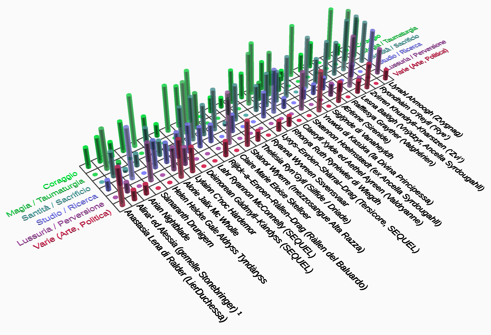
Personaggi come H.H.G.A.T., Rhonya Ruth Rynéwler, Ràllen del Baluardo, Siglÿnde di Vanaheyldh, Lahr Ryannon McConnelly, Zvìrren e Ryondhàim O’Reyll (‘Rye’) splendono fulgide e non hanno alcunché da invidiare alla stazza morale dei protagonisti dell’altro genere. Spesso in effetti primeggiano e li superano persino ! Ciò non toglie che appaiano esteriormente una serie di cloni tratti da pochi stampi base. Ma anche questo, a ben vedere, rispecchia lo spirito della PluriLogia e dei Leitmotivs. Anche “gli energumeni” sono spesso quasi dei cloni (almeno nei tratti essenziali caratterizzanti). Coerentemente, ogni protagonista femminile degna d’un certo rango negli eventi, risulta inevitabilmente possedere una o più (talvolta tutte insieme !) delle seguenti caratteristiche : bellezza altera, algida, età anagrafica più o meno giovane ma in ogni caso mai neppure prossima alla mezz’età, chioma bionda o rossa, quasi sempre glaucopide o similari (l’unica eccezione sono i misteriosi occhi giallo limone di Zvìrren).
Si manifesta quindi un’angusta omogeneità estetica di cui val la pena evidenziare le radici, poiché quantunque siano stati citati, en passant, le influenze Howardiane e stilnovistiche, non sono state affatto queste gli imprinting più significativi, per nessuno dei coautori.
La povertà di variabilità non è stata né una scelta deliberata né un qualcosa di inconscio o casuale : semplicemente non è stata neppure una scelta, ma un vero e proprio condizionamento estetico condiviso, molteplice e molto antico, e solo in piccola misura “endogeno”, viceversa per la parte preponderante si tratta di canoni “esogeni”, acquisiti ed interiorizzati in modo irreversibile. Sgombrato il campo tra le più ovvie, ma fuorvianti, somiglianze con le matrici Howardiana e stilnovistica, è interessante risalire alle autentiche fonti del “gusto estetico” che permeano la PluriLogia.
Ben poche sono quelle che si devono considerare non già fonti di ispirazione meramente estetica ma vere matrici di imprinting che hanno formato il canone estetico che poi si è sostanziato in innumerevoli varianti così poco diverse (esteriormente) tra loro.
Osservazione banale ma doverosa : i maschi sono larga maggioranza entro SGRPB7 (ben 5 su 7). Questo ha comportato la forte prevalenza del loro “gusto estetico”, incuranti dei mugugni della minoranza femminile.
Nell’universo Elfico Tolkieniano ciò che è bene è bello, e ciò che è bello è bene. Già questo connubio è molto persuasivo. E ciò che è bello, in questo universo mitologico, è bianco, biondo, alto, snello e slanciato (un canone sassone / scandinavo / slavo, in senso etnico). Le creature elfiche sono fate che sfolgorano e spandono chiarore, con occhi chiari e luminosi, trasparenti come cristallo, dalla pelle nivea ed abbagliante e spesso la chioma d’oro fino. E persino nella furia guerresca mantengono il fascino delle nordiche Valchirie scese dal Walhalla. Ora il canone elfico, che probabilmente l’esimio ed ineguagliato professore di filologia e di inglese antico aveva assorbito a propria volta dalla mitologia antica norrena, ha attecchito nella PluriLogia con una tenacia straordinariamente forte e refrattaria a qualsiasi tentativo di razionalizzazione posteriore o di semplice attenuazione, attraversando illeso oltre trent’anni di altre letture, e di rielaborazioni personali del mondo.
Tale diffusa predilezione estetica assoluta ha creato del disagio emotivo, poiché in ogni altro settore della vita ognuno era non soltanto indifferente / ostile ad ogni visione di stampo razzistoide, ma sentiva proprio profonda, razionale e scientifica avversione verso le argomentazioni di superiorità razziali e ciò che ne discende. Ma ormai questa deroga, di natura esclusivamente estetica e non morale, era consolidata definitivamente, e serenamente si è preso atto che è impossibile la completa coerenza tra i due piani, per far combaciare quanto comanda la mente razionale e quanto suggerisce l’istinto primordiale alla base del “gusto estetico”. Questo potrà non (com)piacere l’attuale trend politicamente corretto, ma a nessuno fregava più di tanto, onestamente.
In continuità col pilastro interiorizzato del canone estetico Elfico e/o della Valchiria, un altro singolo personaggio, una creazione dell’autrice disegnatrice nipponica Riyoko Ikeda : Lady Oscar François de Jarjayes (o Jarjaix), giganteggia. Ferrea ed inflessibile, ma al contempo tenera e tormentata, virago razionale ma romantica, come non innamorarsene ? Anche questo personaggio ha attecchito in maniera irragionevolmente forte, e resta emozionante rivedere le sue eroiche e disperate gesta persino trent’anni dopo la sua creazione. Qualche corda interiore continua a risonare. Per lei, e per chi casualmente assomiglia alla sua matrice. Bisogna dire che Riyoko Ikeda è assolutamente magistrale nel tratteggiare anche il carattere dei suoi personaggi. Ad ogni modo Lady Oscar François de Jarjayes incarna benissimo il Canone ELFICO sia quello della Valchiria, ma portandolo ad una scala umana di carne e sangue, con le sue fragilità, e non più solo fatto di incantesimi arcani e suggestioni fatate. Inoltre è un personaggio immeritatamente tormentato : miscela assolutamente suggestiva.
Le implementazioni di Lady Oscar François de Jarjayes si sono disseminate nella PluriLogia, sia frammentate su vari personaggi differenti, sia, in tre casi, in maniera cristallizzata.
Ma prima di esaminarli, è utile citare un’altra figura leggendaria emersa dal lontano 1981, da un cult di animazione rock, Heavy Metal, di Ivan Reitman e Gerald Potterton, un lungometraggio ad episodi (non tutti egualmente ben riusciti, né la maggior parte invero). Nell’ultimo, e più lungo di essi, si dipana la saga, magistralmente narrata, di Taarna, la vendicatrice della razza dei difensori Tarakiani. Costei è una figura plurivalente nella sua scarna laconicità. Dura e sexy, androgina nei modi e nelle espressioni ma femminile nelle forme, forte e fragile, indomita e disperata (per vincere il male assoluto, il Loc–Naar, malconcia ma ancora invitta ed indomabile, ella deve infine immolarsi). Se non fosse per la citazione relativa alle sue origini come membro di una generica “razza” di vendicatori, la si potrebbe inquadrare come un’Amazzone, una sorta di Giovanna d’Arco ed unica figura che spiccasse per nobiltà ed abnegazione nell’intera pellicola. Ella va menzionata doverosamente nell’olimpo dei Leitmotiv al fianco, se non alla pari, di Oscar François de Jarjayes. La matrice Tolkieniana, integrata da altre figure randomiche come quelle citate, si dispiega in innumerevoli versioni implementative (cloni) di seguito riassunte. Ma le fonti non sono ancora complete !
Posteriore (solo di poco) ma da citare ugualmente per la pertinenza totale : Lady Death, di Brian Pulido and Steven Hughes, 1991. In particolare l’implementazione animata (2004. Lady Death, the motion picture). Invero solo nel gruppo Q costei era già conosciuta, e solo dopo avere già da lungo tempo creato Ràllen del Baluardo : è stata sorprendente la convergenza spontanea di ispirazione. Lady Death è una più che degna erede di Taarna la Tarakiana (1980), la piena evoluzione del seme embrionario. È solo più sensuale (suo malgrado !) ed un po’ meno taciturna ed ermetica, non si riesce a strapparle un sorriso e non fa concessioni all’autocommiserazione nemmeno sotto tortura, mostra pietà per il prossimo di pari livello di quella che ha per sé (eppure, fatto di straordinaria importanza, adotta e viene adottata da due lupi infernali, che le diventano fedeli : altro crossing over con l’universo felino, seppure traslitterato a diversi gusti di diversi autori), ed ha ancora meno colore della bianca Taarna : costei aveva gli occhi verde scuro, Lady Death, che da umana, battezzata Hope nella Svezia medievale, li aveva avuti azzurri ed era stata bionda, dopo la metamorfosi diventa assolutamente priva di colore, più incenerita che solo sbiancata, arsa dal furore della vendetta ! Ciononostante ha un fascino sopranaturale (e non solo, visto che ha forme molto erotiche). Di Lady Death possiamo solo affermare questo con certezza : la sua influenza si è propagata per via tachionica, retroattivamente, raggiungendo la PluriLogia a ritroso nel tempo ! E non si è mancato di omaggiarla in corso di revisioni. Se fosse stata scoperta prima, non avrebbe mancato di influenzare di più, ma anche così, a posteriori, si può dire di averla ugualmente celebrata a sufficienza senza averla conosciuta in tempo. Perché quello stesso germe che aveva portato i suoi autori, Brian Pulido and Steven Hughes, a crearla nel 1991, era già presente, solo in forma lievemente diversa. Lady Death è troppo estrema, nel manga. Tuttavia nel motion picture non è poi una figura interamente negativa, anzi, nel finale incarna quasi un Dracula di Bram Stoker nella versione di Coppola (con pentimento, redenzione e remissione delle colpe in extremis), anche se ella non ha colpe da farsi perdonare, salvo la sete di vendetta.
Divagazione : il più fedele amico di Hope / Lady Death, è il mastro fabbro e d’arme, il demone Cremàtor. La convergenza stereotipica con la PluriLogia si rafforza anche sul lato maschile : Cremàtor è a tutti gli effetti un plausibile ‘energumeno’ come lo possono essere i Mastri Fabbri Thomas Gordon Brian o Tar Mc O’Breen. Siamo ormai tutti un po’ Howardiani, probabilmente !
Lady Rhonya Ruth Rynéwler (di Wlegdh; Rocca di Stella) è una Lady Oscar praticamente originale, quasi un tributo ed esplicita celebrazione. Le mancano forse soltanto alcune incertezze un po’ saffiche che la Lady Oscar originale, non censurata, della Riyoko Ikeda avrebbe avuto, stralciate dagli anime italiani per il pubblico di fascia protetta. Non le mancano invece alcuni tratti di Taarna, che incarna meglio di altre figure. Rimane comunque una donna con fortissime idiosincrasie interne caratteriali, una parte di contesto sovrapponibile, estrema difficoltà a fidarsi e ad amare, e condannata ad un bruciante dispiacere l’unica volta che avrebbe abbassato la guardia, decidendo tardivamente. Compare piuttosto tardi nella sua branca, ma in compenso pian piano erode spazio a tutti gli altri e chiude da eroina incontrastata. In quella branca è stato particolarmente difficoltoso individuare un personaggio primario, o anche una coppia, per par condicio. Meriterebbe tale primato, ma forse sarebbe una forzatura poiché il suo ruolo si dispiega per un lasso di tempo non lungo. Ognuno decida.
Anche Helen Helcke Gale Aldryss Tyndàryss (Generale; La Terza Guerra Interrogativa) (e nel secondo tomo sequenziale, il suo personaggio “specchio”, Lady Dèimorean Gàdmyll–Kàndyss) è una classica, purissima fata : alta, bianca, bionda e longilinea. Come e più di Lady Rhonya, H.H.G.A.T. è un Generale dei Cavalieri del Cosmo, e come Lady Oscar conduce per lungo tempo un’esistenza artica, solitaria almeno in senso interiore se non di relazioni (deve averne, almeno di superficiali, per il ruolo che ricopre), senza pietà verso sé stessa se non un’oscura paura del futuro, inconscia, e modeste e tollerabilissime tendenze all’autocommiserazione, ma solo quando il suo precario equilibrio comincia a scricchiolare sinistramente. Per lei è stato fatto l’unico strappo alla regola di ruoli sostanzialmente monadici e solitari dei protagonisti : è stata l’unica degna di nota a sposarsi (nientemeno che con T.G.B.). In effetti l’eccezione è duplice, perché anche T.G.B. è l’unico astro di prima grandezza a convolare a nozze, nell’universo monadico della intera PluriLogia (Varel Kaijnark e G.E.G. non hanno la stessa caratura e non contano). Erano semplicemente troppo perfetti l’una per l’altro per non dar loro una chance. Non se la sono giocata tanto bene. Ma questa è un’altra storia. E non tutta la speranza è perduta, anche se così sembra alla fine del primo tomo.
Lady Siglÿnde di Vanaheyldh (I venti del Giravàgo) : costei incarna qualcosa di anche antecedente a Lady Oscar stessa, ma con tutta probabilità facente parte dell’humus Tolkieniano più lontano, di matrice Wagneriana (Anello dei Nibelunghi). Siglÿnde di Vanaheyldh (notare l’assonanza del nome ai suoni norreni !) è a tutti gli effetti una Valchiria del Walhalla (e non a caso persino il nome mescola Siegrune ed Ortlinde, due vere Valchirie nella mitologia Norrena e poi Wagneriana, ed anche la sua capitale natale sembra tratta dal Beowulf o dal regno di Asgard). Possiede persino ali da Falchessa ! Essendo queste guerriere mitologiche figlie di Wotan chiaramente precorritrici dell’elficità, si può senz’altro classificare Siglÿnde come archetipo standard anch’ella. È un personaggio molto nobile ma a tratti volutamente persino un po’ comica nella sua ingenuità, quasi che il candore fisico si specchi in un candore morale, un’ingenuità fanciullesca. È una delle figure saffiche positive, come la sua amata, del pari afferente alla parte del Bene, rara anche nel complesso dell’intera PluriLogia. La goffa storia d’amore di Siglÿnde con la Sirena (Ærënne) è però così travolgente per le due da rischiarare un po’ l’intera branca, ed essere considerata con favore anche da tutti quegli altri Campioni del Giravàgo che inizialmente potevano avere storto in naso al riguardo (anche perché, in effetti, Ærënne in particolare era considerata un boccone assai goloso da molti).
Un altro caso rilevante di trama saffica accade invece ad un personaggio non archetipico, o meglio poco standardizzato, essenzialmente negativo ma piuttosto complesso e contraddittorio (la Principessa Litosiana Sàmaranth). Il lesbismo di Siglÿnde è assolutamente neutro, commovente per quant’è anche impacciato, e dell’intero libro è tra i rapporti più teneri, imbranati e preadolescenziali. La vena pseudo comica del suo prendere tutto molto, troppo sul serio, e di pretendere troppo anche da sé stessa, non deve però fuorviare : Siglÿnde rimane realmente un’eroina autentica malgrado sia una persona incompleta ed immatura e non molto adatta a ben figurare nelle situazioni ordinarie, poiché anche lei, nelle circostanze di maggiore criticità, sa sfoderare la sua grinta adamantina, e non vacillare laddove molti altri si sarebbero schiantati. Lo dimostra in pieno solo alla fine, quando il suo destino corre verso un tragico fato a cui coerentemente non si sottrae, immolandosi.
Infine, la terza storia saffica è quella di Zvìrren e Llyrahl Ahmoogh (La Parola Sepolta), molto asimmetrica e controversa, e che coinvolge sia una delle eroine classiche (la prima) che una ‘peccatrice’ (sia pure suo malgrado, la Zwygnag), che ne viene inizialmente riscattata. Zvìrren è un personaggio leggermente atipico, che non è uscito dalla fucina di Q ma che è poi stata adottata, è complessa e strana in ogni senso (ed è albina).
In Cronache di Constance e delle Stirpi Originarie dei Guardiani manca una vera e propria reincarnazione di Lady Oscar, e forse è l’unica delle branche veramente priva. Non rientra in nessun archetipo la LierDuchessa Anastasia Lena di Ralder, personaggio invero in apparenza energico ma in realtà surrettizio, puramente strumentale : ella esiste soltanto come tramite per generare un’erede a Tar Mc O’Breen, che difficilmente avrebbe potuto aggirare questo aiuto esterno, e per mostrare la dominanza culturale delle tradizioni Constantiane ed il loro carisma superiore.
In G.E.G. di Napoli manca una vera e propria Lady Oscar classica. Esiste Lady Shànor Wlyerre, la quale, benché bella e bionda e molto Elfica, resta una figura dal ruolo piuttosto debole anche se non proprio del tutto marginale, canonica esclusivamente nel senso estetico ma non molto particolarmente positiva eticamente parlando. Nella stessa branca esiste poi una figura fatata evanescente dipinta a tinte pastello (la Silfide o Driade Thelésia Ryn’Gyll), che compare fugacemente in un quadretto isolato un po’ strappalacrime con Dak Waadyax il WarLord (eroe troppo perfetto, l’anti–G.E.G., condannato a franare miseramente quando il gioco si fa più duro). Compare una bionda Valchiria guerriera, Ryanna Wyvreen Ssvensvaar, che recita un ruolo marginalissimo e persino odioso, lei sì, per dirla con le parole di G.E.G. stesso, è un po’ “leghista”.
Ed esiste infine, sempre in G.E.G. di Napoli e con parte di maggiore rilievo, ancorché una parte incolore, gregaria, mediocre, arrendevole e servile, squallida in ogni senso : Lady Claire Marie Eloise Skelloer del Quinloer, futura moglie di De Gennaro medesimo. Malgrado alcune (non tutte ! solo alcune) coincidenze esteriori con l’archetipo (in quanto NorthLander, è alta, bianca e bionda, ma più “slavata” che non Elfica, perché non ha i tratti e lineamenti cesellati in modo sufficiente), costei se ne discosta in quanto connotata di una tonalità erotica intensa e totalmente difforme, ed è infatti all’uopo più formosa e non già sottilmente diafana e quasi asessuata come molte protagoniste citate (talvolta vagamente androgine come Zvìrren l’albina). Si discosta quindi dal canone stilnovistico per essere genuinamente una sparring partner Howardiana. Lady Skelloer è funzionale non solo nell’aspetto ma, ed in ciò non è comune, persino nel ruolo subalterno, e come tale è marcatamente masochista (tratto caratteriale diffuso nelle ‘peccatrici’ che l’accomuna anche a Lesna Balögh ed a Miss Ahmoogh). È un personaggio essenzialmente fallimentare in senso morale spirituale, debole, meschino, che si crogiola nell’autocommiserazione ed è dominata al contempo da mille insicurezze e dalla lussuria sfrenata, succube degli appetiti di G.E.G., ed insaziabile non meno di lui, seppure in modo proprio. È speculare, complementare all’indole egoista e predatrice di G.E.G. stesso, che il rancore accumulato nella vita precedente rende anche vagamente sadico : gli calza addosso come un guanto. Formano una coppia solida nello squallore delle rispettive miserie tanto bene assortite. Siccome è, in fondo, un mediocre anche lui, Lady Skelloer si vede trionfatrice nel contenderlo a Ràllen la Rossa (un’eroina dalla pessima fama ma di una caratura e nobiltà d’animo incomparabilmente superiore a lei e a chiunque altro nel libro, con la sola eccezione di Lord Wallace, detto il Mòrgoth, non confrontabile con alcun umano).
Infatti, per quanto non archetipica nello stretto aspetto esteriore, il posto di eroina non è affatto vacante in G.E.G. di Napoli, ma si concretizza in uno dei personaggi più commoventi (insieme a Rhonya Ruth Rynéwler) : Ràllen la Rossa, si veda però sotto la categoria apposita, altrove.
Questo pattern è presente declinato sia in positivo sia in negativo. È massicciamente presente sia in Rocca di Stella (le due gemelle Valdryanne, Claeryll Xylde ed Aethel Ayreen) che nelle due praticamente omologhe gemelle Stonebringer, Alina ed Alessia (Cronache di Constance e delle Stirpi Originarie dei Guardiani). La loro sovrapponibilità si estende, tra l’altro, al possesso di talenti parapsicologici. (NdR : in Rocca di Stella il legame tra la ‘rossitudine’ della chioma e la magia, risale ad un primo capostipite, chiamato Bnohrt Grùagh Dànan, il Druido Rosso. Questa associazione è presente anche in La Parola Sepolta : Zvìrren, albina e rossissima di chioma, anche se faticosamente, diventa una maga molto potente. E la Maga di G.E.G. di Napoli, Ràllen la Rossa, beh, si spiega da sé). Le gemelle rosse sono un elemento antico già presente in alcune fiabe celtiche afferenti alle tradizioni gaeliche. Le rosse sono grossolanamente classificabili in tre sotto categorie : 1) quella delle guaritrici, sensitive, parapsichiche o magiche, 2) Ràllen e Zvìrren, e 3) quella delle femmine–oggetto, funzionali al soddisfacimento di questo o quel personaggio. Le due gemelle non hanno pari peso, neppure sviluppo orizzontale. Alina è una figura adolescenziale costretta a crescere troppo in fretta, ammaccata da qualche fascinazione da Lolita ma estranea a qualunque malizia, sensibile e dolcissima ma molto sfortunata, in quanto più o meno segretamente innamorata persa di qualcuno che non potrà mai avere per ragioni strutturali, intrinseche, benché costui (nientemeno che Tar Mc O’Breen) a propria volta le voglia un bene enorme. Sono assurdamente incompatibili, e lo sanno. In parte per età, per struttura fisica, con ogni sottinteso del caso, per habitat (lei non sopravviverebbe a lungo nella patria avita ed amatissima di Tar, inferno per i fuorimondo di sangue non Constantiano), per costumi. Hanno in comune una cosa : nessuno dei due, Tar specialmente (avendo dei muri solidissimi dentro la sua mente che circoscrivono il bene e il male, ciò che è tollerabile e ciò che no), è ansioso di scoprire con esattezza i confini dell’affetto che prova per l’altro. Tar non ne esce proprio, il suo blocco mentale è ermetico, il solo sospetto di poter trovare qualcosa di non ineccepibile dentro di sé che riguardi Alina lo obbliga a seppellire tutto sotto una colata di cemento armato senza neppure esserne troppo conscio, e la volontà di roccia, o se si preferisce l’incapacità ad accettare deroghe ed attenuazioni della moralità molto rigida e conservatrice di Gravilandese, non vacilla, per cui si impone di non chiedersi qualcosa che teme di capire. Alina, sebbene ben più giovane, appena una ragazzina, e sebbene non le dia nessun conforto, non riesce a non scavare in sé. L’aiuta suo malgrado la gemella, sin quando in vita, a capirlo; sicché si rende conto, anche se non ama constatarlo, di essere innamorata persa. Di lui non pensa affatto che potrebbe mai amarla, anche se non intuisce lo sforzo che dura. Potrebbe tentare di sondarlo telepaticamente, essendo la più talentuosa sensitiva, ma il fatto stesso di amarlo in maniera totale le proibisce di intromettersi e rispetta le sue scelte. La giovane Stonebringer spasima e si affligge sia perché, indebitamente, non si sente molto pulita per quel che ha nel cuore, e soprattutto perché sente di non corrispondere nel modo giusto all’affezione del colosso Constantiano, e ritiene di essere lei in errore, inadeguata ed irriconoscente, quasi che amarlo sia una colpa per il disagio in cui lo mette. Non riuscirà mai a smettere, purtroppo per lei, nemmeno dopo la transitoria entrata in scena di una “rivale”, la LierDuchessa Anastasia Lena di Ràlder, che dà a Tar una figlia, programmata praticamente a tavolino dall’intraprendente e determinata nobildonna.
Rijlck–a–Enroen–Ràllen–Drag, detta la Maga Rossa o Ràllen del Baluardo (G.E.G. di Napoli) e posteriormente il suo clone, in senso stretto, Lyxys–Enròen–Shàrral–Drag : sono certamente prima di tutto ed essenzialmente … rosse ! La seconda, in quanto guaritrice, e la prima, in quanto maga, hanno punti di contatto con lo schema delle due coppie di gemelle. Ma a dispetto di ciò, Ràllen è una vera eroina a tutto tondo, un astro di prima grandezza, tragica e romantica, assolutamente affascinante. Nel corso del libro compie una stupefacente evoluzione da figura gelida e livorosa (dall’infanzia drammatica), ritenuta (anche a torto) crudele e spietata, ingabbiata dietro una maschera orribile a vedersi e schierata con le forze nemiche degli umani, a paladina dei deboli, sola, disperata, bisognosa di amore in modo straziante, fragile ed incrollabile insieme, ed infine bellissima. Scrivere e leggere di Ràllen del Baluardo è stato un piacere intenso per tutti, grazie a questa rivalsa e riscatto completo, come osservare lo sbocciare di un germoglio striminzito ed il suo dispiegarsi in una rosa gloriosa contro avversità e traversie. L’attaccamento alla sua figura è stato tale che, nel sequel, sebbene destinata cadere durante l’Apocalisse, Ràllen viene preservata, salvata in addirittura due copie distinte ! L’una sotto forma ‘olografica’ disincarnata, di una sorta di estrazione spirituale operata da Ìnferon (il Guardiano Nero), l’altra come inconsapevole clone fisico, Tersìcore (Lyxys–Enròen–Shàrral–Drag). Costei è la Ràllen che avrebbe potuto essere se l’originale non fosse stata rinnegata e dannata come la bastarda di due razze nemiche che l’avevano maledetta nella culla, e manca dell’asprezza derivante dall’esilio e dall’abbandono. Tersìcore, sotto la guida della parte di sé stessa che Ìnferon conserva, diventa infatti una Guaritrice.
Zvìrren Khundryll–Kharstzen (La Parola Sepolta) è rossa di chioma (ed albina) ma ciò non è la sua peculiarità. È un personaggio la cui differenza principale da Ràllen è la diversa età ed il diverso contesto (Zvìrren è molto giovane, il suo mondo, rigidamente strutturato in caste, fronteggia non tanto semplicemente il declino, ma l’annientamento da parte degli Invasori di Keléndanogh). Il suo tratto più straniante e polarizzante sono gli occhi color limone scintillante. È temeraria, risentita verso il mondo ma capace di generosità, conosce l’abnegazione. Anche lei, purtroppo, dimostra la sua tempra nel gesto estremo dell’immolazione per una causa superiore, ma il fato le dà una seconda possibilità inattesa. Possiede un talento istintivo, naturale, di attirare attorno a sé i miseri e di affezionarsi agli animali.
Ryondhàim O’Reyll (La Parola Sepolta) seppur rossissima rimane a lungo atipica. È una ragazza irlandese rimasta trucidata durante la Bloody Sunday a Dublino, non semplicemente molto credente, può apparire persino bigotta. La sua esteriorità è solo vestigiale, in quanto nel libro è uno spettro errante incapace di rinunciare alla sua immagine di sé precedente, di quand’era viva, ed il suo vero essere ectoplasmatico proietta il suo aspetto premortem. Ryondhàim inizialmente è solo un po’ ottusa e di vedute ristrette (in quanto insicura), ma si evolve notevolmente ed infine assurge ad una condizione di santità molto vicina al Creatore, osando raccogliere la sfida di coltivare una delle sue passioni stroncate anzitempo : quella di guaritrice. Diventa guaritrice di anime, ed inventa un modo per svuotare il Limbo degli spiriti degli animali mai nati o morti anzitempo. Non a caso si guadagna la protezione delle Forfére : spiriti felini guardiani dei non nati e dei ponti arcobaleno dei Gatti. La sua figura rimane poco archetipica, ed è una vera ‘santa’ nel senso classico del termine, arrivando a reclamare alle potenze Celesti il Limbo dei Campi Elisi dei Gatti e a fondare un proprio Giardino presso il Ponte dell’Arcobaleno, ed infine si permette persino il lusso di riscattare l’anima di Rè Lucifer, il braccio destro di Satana / Djjnyahfar, inducendolo al pentimento.
Arian Nightblade (Cronache di Constance e delle Stirpi Originarie dei Guardiani) è rossiccia quasi solo per caso (e non completamente : è in effetti “ramata”). Ha un ruolo ambiguo nel senso che non si capisce mai bene se dovrà giocare qualche ruolo più incisivo o meno, o esattamente in che rapporto si ponga con gli eventi ed altri personaggi di spicco. E questo suo basso profilo le rimane incollato addosso, sin quando viene piazzata stabilmente in sposa ad un altro collega dottorino ancor meno rilevante di lei, ed amen. Guaritrici classiche sono le gemelle Alina ed Alessia Stonebringer, le due Telepati adolescenti che sfidano i Simulanti.
Alcune ‘rosse’ di un certo rilievo sono poi Lylainn C’noc Hàrdemor (poco più che accennata e solo in retrospettiva ne La Terza Guerra Interrogativa, ma meno marginale nel prequel), la prima fidanzata (importante) del T.G.B. e poi Lahr Ryannon McConnelly (marginale la sorella Ryxend) nel sequel. In effetti viene suggerito che Lahr Ryannon possa essere all’incirca il clone–specchio di Lylainn stessa, che era stata solo un’affascinante sempliciotta di campagna. Lahr Ryannon McConnelly è un personaggio accessorio generoso e compassionevole, che si comporta in modo temerario accettando terribili rischi personali ed opponendosi a forze di gran lunga al di là della propria portata (le Ali Nere, nei loro domini Al–di–Là) al fine di proteggere i miseri Miagolieri. Per questo acquisisce immediatamente ed inevitabilmente uno status privilegiato agli occhi del MietiDrago (T.G.B.), che le dona un richiamo per rendersi reperibile alle sue richieste di aiuto. L’omone le si affeziona subito in maniera amichevole senza particolari sfumature (la cosa non è indagata ed è lasciata volutamente vaga, perché non sarebbe appropriata alla sfera emotiva congiunturale di Lord Drago). Da parte sua, pure è oscuro il modo in cui considera quell’inatteso alleato, perché l’amicizia e la stima sono mescolate ad una soggezione eccessiva ed ammirazione che precludono una vera amicizia in senso stretto e più paritetico. Per lei l’energumeno è una sorta di benedizione divina, un vendicatore celeste venuto dall’Altrove, e ciò è conseguenza della natura neppure più completamente umana del temibile Lord Drago, del suo potere incommensurabile, e del carattere sempre più spigoloso.
Le due gemelle Valdryanne (Claeryll Xylde ed Aethel Ayreen) in Rocca di Stella sono versioni “lite” di Ràllen, stelle di media grandezza che perdono progressivamente importanza nel finale. Rispecchiano in maniera molto appariscente Alina ed Alessia Stonebringer (Cronache di Constance e delle Stirpi Originarie dei Guardiani) anche per quanto riguarda la somiglianza delle doti parapsicologiche.
Sebbene rossa, Lesna Balögh (I Venti del Giravàgo) verrà trattata in seguito (paragrafo : Le “peccatrici” predestinate)
Personaggi stereotipati quasi sempre funzionali (*) e subordinate ad una figura principale (maschile). Sono accomunate dalla complementarietà e gregarietà verso i protagonisti.
Lady Shænnon Hoelmstædt (Rocca di Stella). È una delle “rosse” : un’Ancella Syrdougahll di sangue Wyngqjll, praticamente una sgualdrina di lusso imperiale. Sta molto stretta in questo ruolo, anche se non sta bene in alcuno perché in realtà non è strictiori un personaggio archetipico (anche perché non ha neppure adeguato sviluppo quantitativo per poter essere definita tale), ma relativamente normale. Era stata obbligata a diventare sgualdrina d’alto bordo sotto costrizione, ma senza averne l’indole (però ne ha la sembianza, e ciò è sufficiente a renderla almeno in parte stereotipata) e non si era piegata neppure al “Servizio”, anche al prezzo di subire torture. Quindi non è un personaggio nativamente negativo, soltanto una donna che ha dovuto soffrire e combattere, subire grandi compromessi ed attendere a lungo un riscatto senza sapere se, come poi è stato, si sarebbe mai realizzato. Soltanto col suo antico amore, Kaern Yoght Haakvarne, si liquefa e diventa arrendevole, ma non già in quanto ex sgualdrina, bensì in quanto lo aveva amato sin dal loro primo incontro, tant’è vero che la sua ribellione al Servizio era scattata proprio dopo che l’Hochàim se n’era andato dalla guarnigione, e lei avrebbe dovuto servire altri clienti, cosa a cui non si era mai piegata nonostante i castighi anche cruenti.
Lesna Balögh, di sangue Vnýdzyr (I venti del Giravàgo). È, tra le protagoniste secondarie borderline, o tra le comparse principali, la più negativa sotto tutti i punti di vista, ma non di secondaria importanza. Bugiarda, ladra, malevola, patologicamente superstiziosa, spregiudicata, fredda e calcolatrice, cinica, traditrice, volubile, ma anche perversa ed irragionevolmente lussuriosa insieme. Si può dire che, nel suo caso, l’incongrua verga di Minotauro dello Zingaro (Varel Kaijnark) con cui ella intesse altalenanti relazioni e che la irretisce suo malgrado, amministri una sorta di meritato castigo, quindi verga anche nel senso metaforico di strumento primevo di coercizione e sottomissione, di dominazione pienamente meritata. Una specie di autoritaria ed animalesca risposta alle sue trame infide ed alle falsità, a cui lei non riesce a resistere ed a cui si sottomette e si arrende, espiando. La sua figura ricade più o meno nella ristretta categoria di “peccatrici” predestinate a soccombere, come e peggio di Lady Claire Marie Eloise Skelloer, e che dopo avere circuito, tradito ed ingannato lo Zingaro, ne subisce la vendetta, una sorta di “nemesi fallica” non programmata né attesa, che semplicemente accade, per predestinazione. La corrispondenza delle due figure è comunque così stretta che possono sicuramente essere considerate omologhe [*] (tra l’altro, sono entrambe le subalterne di un / del personaggio protagonista). Claire ha alcuni tratti emblematici della Peccatrice (un mix di lussuria e perversioni, la debolezza di carattere e l’arrendevolezza) ma anche della Santa / Martire, essendo disposta a sopportare enormi sacrifici per amore. Invero è difficile dire quale dei suoi tratti prevalga.
Miss Llyrahl Ahmoogh, ‘ragazza bambola’. È molto compressa in questa categoria, pur essendo una peccatrice predestinata e facendo una brutta fine (sceglie Satana / Djjnyahfar, sedotta, pur senza scegliere il Male), è in verità estremamente complessa e variegata. Intanto è spiritualmente molto profonda (ed è la più potente sensitiva medianica del suo mondo, una Ptiknespra), piena di contraddizioni tra le aspirazioni del suo cuore ad elevarsi e la debolezza strutturale della sua carne. Gli Arcangeli (Jeremiel) arrivano ad accostarla a Magdalena (la sposa di Jehshua il Cristo), vedendo in lei questa frattura ma anche la generosità e bontà di fondo. Alla fine l’amore la tradisce e l’abbandona a sé stessa, in balia della lussuria e del desiderio di conoscenze, lasciandola affondare nel suo fato, a cui si arrende. Però se l’era giocata a lungo, è difficile classificarla come peccatrice stereotipata : la sua storia avrebbe potuto avere un epilogo diverso, se solo la sua adorata Zvìrren fosse stata un po’ meno scostante, selvatica e ritrosa. Llyrahl, la Zwygnag, non ce l’ha fatta a resistere con le sue sole forze. La sua atipicità nasce anche dal fatto di essere un personaggio semi funzionale (più per Thràxom che per Zvìrren), ma di avere anche una propria individualità ed aspirazioni proprie, a cui si dedica sinché può.
(*) Nota : Personaggio FUNZIONALE (definizione) : si definisce tale un personaggio spesso incompleto / implausibile, non caratterizzato interamente ma solo nella misura essenziale a svolgere una parte o un ruolo. La funzionalità si può esprimere in una sorta di subordinazione funzionale o ad un ruolo astratto o ad un altro personaggio Protagonista
[*] Nota : L’omologia di Leitmotivs a livello di personaggi non viene classificata come una ‘incollatura’, ossia un punto di intersezione tematica a livello di trama ed eventi, bensì il criterio ispiratore dell’intera PluriLogia. Le ‘incollature’ propriamente dette sono invece eventi molto rari, che intersecano branche per il resto indipendenti. Al contrario, le omologie dei mattoni da costruzione / personaggi sono per statuto la regola stessa alla base della PluriLogia.
Nella branca di Cronache di Constance e delle Stirpi Originarie dei Guardiani, una figura estremamente controversa e non archetipica neppure in questo senso (ma, nuovamente, assai Howardiana), tanto più negativa in quanto schierata in campo nemico, dalla parte dei malefici DemonIbridi, è la Principessa Sàmaranth. È l’unica figura dichiaratamente lesbica della PluriLogia, poiché Lady Siglÿnde non lo è in senso classico e universale, ma solo in quanto innamorata specificamente della Sirena Ærënne (e la stessa cosa vale in fondo anche per Ærënne stessa : non sono vere lesbiche, sono soltanto cotte l’una dell’altra in modo specifico e reciproco, un cerchio completo in sé, e dovessero mai lasciarsi, nessuna cercherebbe più un’altra dello stesso sesso) – in altre parole è la loro relazione individuale a sovrastare persino l’orientazione originale. Sàmaranth lo è, in modo spudorato ed ostentato, quasi una maniera di tormentare e punire il fratello Imperatore Litosiano, anche se come indole sarebbe più fluida e forse in realtà bisessuale. Se agisce come fosse strettamente lesbica, è per alcuni travagli d’infanzia e disgustosi incidenti proprio con l’Imperiale fratello, che le causarono repulsione verso l’altro sesso in generale. La cosa interessante, riguardo a Sàmaranth, è il venire a scontrarsi con un nemico acerrimo, l’implacabile Tar Mac O’Breen, in un contesto in cui, malgrado abbia causato la morte di Alessia Stonebringer, ella è completamente inerme ed alla mercé di Tar, che non può gustare alcuna vendetta, perché non è un assassino a sangue freddo. È anzi costretto, avendola prigioniera ed essendosene reso responsabile, a salvarle la vita varie volte. Sàmaranth, che inizialmente detesta l’avversario che ha polverizzato le sue truppe, suo malgrado impara a conoscerlo e non riesce ad alimentare il disprezzo e a tenere vivo l’odio. Anzi finisce per subire il fascino di cose che non ha mai conosciuto prima, nella sua cerchia (la corrotta corte imperiale). Ma a sua volta inaspettatamente, è una forza della natura, ha una carica erotica devastante, ed è essenzialmente l’unica creatura capace di fare, anche se temporaneamente, breccia nelle armature mentali a compartimenti stagni del guerriero Constantiano. Nel periodo di convivenza forzata, Tar scricchiola, sinistramente, anche perché gli si agita dentro senza pace lo spettro della dura rinuncia irreversibile, della sua umanità perduta, essendosi già tramutato in una statua vivente quando la incontra. Si tratta di una privazione molto più drastica ed integrale della sola castità : le Statue Viventi sono deprivate sensorialmente, o meglio anche se possiedono sensi acuti ed estesi, le sensazioni risultano insipide, funzionano come freddi sensori strumentali, il piacere di ogni genere, al pari del dolore, è stato estirpato da ogni loro terminazione nervosa ed il loro spirito è affamato dell’umanità perduta e del gusto della vita originale. Sàmaranth per qualche ragione (mai spiegata) riesce a superare questa corazza, a sfiorarlo, e per Mac O’Breen ciò ha un impatto devastante. Ed anche lei, suo malgrado, è così scossa ed inebriata che nemmeno l’aspetto spaventoso, alieno e disumano, del Trasformato, riesce a scoraggiare le pulsioni striscianti che le si agitano dentro (per questo è stata classificata potenzialmente bisessuale). Percepisce Tar come “qualcosa di grande valore e degno di stima”, ed è quella la sua tentazione che la spinge a volerglisi arrendere senza più lottare. Cresciuta in un contesto differente, Sàmaranth avrebbe potuto non diventare quella che poi è stata. Più che malvagia, ella è un personaggio interamente dionisiaco, irrazionale, istintiva ed emotiva, facile ad indulgere al piacere e condizionata da pulsioni intense ed incontrollabili, ma non debole. E nemmeno realmente crudele. Inoltre è dotata di molto coraggio. L’amor proprio di Tar esce alquanto pesto e malconcio dalla disavventura in sua forzata compagnia, poiché la tentazione è assolutamente equanime e li accomuna, e l’energumeno non digerisce bene il rospo di sentirsi così debole con lei. Si è trattato di un esperimento abbastanza interessante, non previsto inizialmente, una sorta di crash test per l’energumeno al quale egli sopravvive e si rimette in piedi solo con fatica, e molto ammaccato. Diversamente, Tar sarebbe risultato eccessivamente invulnerabile e financo noioso. Questa batosta ha conferito un po’ più di spessore ad una figura estremamente stereotipata e piatta nella sua ortodossia precedente.
Un’altra relazione lesbica anomala (e quindi archetipica della PluriLogia), solo in apparenza affine a quella tra Siglÿnde ed Ærënne ma in realtà alquanto più asimmetrica e tormentata, è quella tra Zvìrren (estremamente titubante, ritrosa e riluttante, e quasi asessuata tout court, tra l’altro) e Llyrahl Ahmoogh (una Zwygnag o ‘ragazza–bambola’). Llyrahl (che è corvina ed è forse l’unica figura dalla chioma corvina ! fisicamente somiglia un po’ ad una Sàmaranth in versione meno atletica e più vulnerabile ed ancor più prosperosa) è il prodotto (e vittima) di una sorta di selezione eugenetica che colloca la sua sottospecie, tra le varie caste del rigido sistema di Kroangst, tra le sgualdrine predestinate : le Zwygnag. Progettate per avere un corpo estremamente erotico, sensibile ed arrendevole, Llyrahl nasce purtroppo per lei con l’animo da sensitiva extrasensoriale (cosa ben diversa !) e per nulla lussuriosa per indole, ed è una creatura straordinariamente triste ed infelice. In certo senso è una sorta di Maria Maddalena, incolpevole di quel che è stata costretta ad essere. È quindi giunta molto presto ad odiare il sesso tout court essendo stata sempre usata, anche nei modi più degradanti, e malgrado il suo corpo sia ‘progettualmente’ ipersensibile, vulnerabile ed arrendevole, la povera Llyrahl vive in stato di profonda alienazione la sua condizione. L’albina Zvìrren dagli occhi color limone è piena d’impeto alla ribellione, e non è archetipica in nessun senso, pur restando un pilastro portante del suo libro. Anche lei è una reietta, anche se proveniente dall’aristocrazia di alto rango dei Maghi, per il fatto di aver fallito gli esami rituali di ammissione alla razza dei maghi. Zvìrren non è priva di magia, anzi è dotata di talenti multipli, ed in forma particolarmente potente, ma li ha sviluppati in ritardo, è maturata lentamente, e inoltre proprio la pluralità di doni in suo possesso ha reso ciascuno meno affidabile, fluttuante, tanto da averle causato la degradazione alla casta dei reietti ‘senza doni’. Ma non è stata spezzata da ciò, è fiera e indomita. Libera la Zwygnag dal suo ultimo padrone e la salva, prendendola con sé come compagna di viaggio e protetta. Zvìrren è vagamente androgina e tendenzialmente neutra, ed è in una fase della sua vita in cui sta ancora leccandosi le ferite, molte e severe, lente a rimarginarsi. Tuttavia una parte di sé è sensibile al fascino dirompente di Llyrahl, ma ‘Zvì’ è molto ostinata e resiste, mentre la ragazza–bambola si liquefa di fronte ad un gesto di amicizia disinteressata, il primo ricevuto in vita sua, e si innamora di lei in modo devastante, arrendendosi di schianto. Nessuno aveva mai amato Llyrahl come persona e neppure mostratole la minima attenzione, essendo solo un corpo destinato al piacere, mentre Zvìrren le dona la libertà senza calcolo o vantaggio, e questo la colpisce e disarma totalmente. È però costretta a trattenere dentro, nascosto, tutto quell’amore, perché si rende conto delle reazioni di ritrosia istintiva di Zvìrren e che i suoi tempi di saranno molto più lenti e l’esito incerto, e non vuole né esserle di peso né rischiare di allontanarla da sé. Anche la Zwygnag vive in modo infelice questo rapporto asimmetrico. Benché esperta, talentuosa e dotata nel sesso, Llyrahl con l’Albina diventa goffa ed impacciata in ogni suo timido tentativo di approccio. La loro storia lesbica rientra tra i Leitmotivs solo in quanto, singolarmente, nessuna delle due sarebbe stata lesbica. Non è assimilabile alla relazione tra Lady Siglÿnde ed Ærënne, molto più simmetrica (mentre l’amore di Llyrahl nasce in modo molto diverso al semplice affetto di Zvìrren), e la relazione rimane a lungo quasi a senso unico, molto contrastata, ma sono pattern apparentati dal mutamento di orientamento specifico e selettivo.
Alcune speciazioni umanoidi sono presenti come “razze” o sottospecie specializzate al piacere sessuale altrui. Una è la già menzionata razza (proprio nella dura accezione eugenetica !) Zwygnag (La Parola Sepolta), in cui la selezione genetica si è concentrata sulle caratteristiche fisiche esteriori, in molte sotto varianti ulteriormente specializzate. L’altra è una sorta di Casta Ancillare : le Ancelle Syrdougahll (Rocca di Stella, altro {*}), in cui non c’è eugenetica di sottofondo e predestinazione, ma soltanto un’accurata selezione ex post di candidate da parte di Istitutrici delle Case dei vari piaceri, seguita da lezioni e tirocini. Le Ancelle Syrdougahll sono l’estremizzazione, tra l’altro finalizzata esclusivamente al piacere sessuale, delle Geishe del sol levante. Queste due categorie sono usate intenzionalmente in un ottica trasversale tra vari libri della PluriLogia anche senza nessuna coerenza, ossia anche tra trame prive di qualsiasi incollatura trasversale. Rientra nelle incongruenze deliberate la scelta di usare anche un termine etnico terrestre nei più svariati contesti di vari libri : l’aggettivo Frigia, associato a vari luoghi distinti e del tutto scorrelati (ad es. in G.E.G. di Napoli sono Frigie le ragazze del Quinloer, NorthLad, mentre ne I venti del Giravàgo, le ragazze Frigie sono Vnýdzyr di una non meglio definita regione di Kallàngwyr). È persino possibile che il termine sia stato usato anche in altri libri senza essere tracciato. Codeste Frigie, di qualsiasi istanziazione si tratti, hanno in comune la caratteristica trasversale di essere dedite a pratiche erotiche prematrimoniali piuttosto peculiari, che si tratti di Ancelle o meno.
{*} la Casta delle Syrdougahll o semplicemente ‘Ancelle’ è una sorta di ‘incollatura’ / NON incollatura tra le trame, in effetti. Il punto va chiarito. Di norma il termine ‘incollatura’ è stato usato solo per indicare un riferimento incrociato reciproco e coerente, consistente, tra due trame in apparenza indipendenti, che evidenzia eventi comuni (in corso o descritti come passati : vedasi il caso dei Greelnar–Ýdugh / Shyeezaar). Le Ancelle Syrdougahll non appartengono ad un pattern simile. Si tratta semplicemente di una forzatura, intenzionale, senza alcuna necessità di sorta. L’uso dello stesso vocabolo per la stessa categoria, si può considerare una sorta di neologismo comune mai spiegato, di licenza auto concessa, come se questo termine appartenesse al vocabolario comune corrente (ad es. il termine Geishe per un ruolo semi ancillare della cultura Yamato, anche se le Syrdougahll sono molto più simili alle juuyo ossia a vere e proprie prostitute di alto bordo e cultrici delle rispettive specializzazioni sessuali). L’uso quindi della stessa grafia per la stessa categoria concettuale non deve fuorviare : non implica alcun legame eventuale tra le vicende. Se si preferisce, lo si consideri una semplice coincidenza.
P.S. Anche un’altra pseudo incollatura non eventuale, non relata a questa tematica, viene usata, benché con nomi diversi. È la “sostanza” chiamata Tarchio (Rocca di Stella) oppure Krygglyo (I venti del Giravàgo). Si tratta di un generico fortificante, ricostituente, per i felini, che risana da ogni malanno e fa crescere massicci e robusti. Ha anche un antagonista, il Rasnjo, che rende le gambette mingherline. Potrebbero essere considerate come fratelli minori del Qjq, il magico arbusto Constantiano che tramuta in Statue Viventi.
Di Zvìrren (La Parola Sepolta) si è già detto a sufficienza nella sezione sulle ‘Rosse’, e parimenti di Ryondhàim O’Reyll (idem) : ad ogni modo nessuna delle due è archetipica nella sostanza pur ricoprendo (almeno la prima) un ruolo archetipico.
Alorie Jalix Mc Wholle (La Terza Guerra Interrogativa). Neppure lei è stereotipata in nessun senso, se non nella misura molto ristretta di essere avvenente e giovane : tuttavia non è prodotta del medesimo stampo neppure esteriormente (ad es. è corvina di capelli e ha gli occhi color ambra). Interiormente è una delle rare figure complesse e vagamente realistica (per quanto una parte della sua introspezione venga sviluppata soltanto nel sequel e nel primo libro sia marginale). È anche una delle rare figure che, nel tempo, assume alcune caratteristiche negative androgine, come il carrierismo e l’ambizione al potere, quantunque si renda conto che, in una società conservatrice come i Clan Irongardiani, la sua scalata debba essere mediata ed indiretta. Anche il suo rapporto con T.G.B., da prima del suo matrimonio a dopo il suo fallimento, è conflittuale e complesso. Alorie esordisce come un pallido spettro tremante, orfana dei genitori per attacchi dei Vampiroidi, in cerca soltanto di protezione. Poi si evolve a donna della R.E.I.C. (Cfr : Reazione Esuli Irongardiani Combattenti), determinata ed implacabile, disposta a tutto, anche a circuire il Drakònnacht per volgerlo ai suoi fini, ma non completamente cinica in quanto mossa comunque da un idealismo patriottico (seppure estremista), ed in certa misura anche segretamente innamorata di lui suo malgrado. Inizialmente intenzionata ad usarlo, e a sfruttare il suo ascendente sulle GòunderWhelt e persino sul Sopra-governo della Torre di Cristallo, Alorie poi si abbandona a ben più profonde complicazioni emotive, si crogiola nell’invidia e nell’odio per l’ex moglie, l’algida Valchiria bionda da lui mai dimenticata, e contemporaneamente detesta il Drakònnacht per il suo essersi lasciato andare senza risollevarsi per il solo fatto di averla persa, per il fatto di considerare lei meno di un moscerino, ma lo ama anche, per nulla immune al fascino di ciò che era stato e che, sente con chiarezza, rimane sempre in grado di tornare ad essere. Alorie ha un certo fascino romantico dovuto al fatto di continuare a lottare disperatamente pur sapendo di non avere alcuna speranza di vincere la sua battaglia contro lo spettro della bionda fata Grimzwhèldier.
– Di pertinenza quasi esclusiva di Vì – (a cura di : tutti gli altri)
La radice dell’attaccamento di Vì a questo tema, onnipresente, è molteplice. In parte congiunturale, seppure di medio – lungo periodo, forse tanto lungo da dover essere in effetti considerata strutturale più che congiunturale (causata ed iper stimolata dallo stato di profonda, irreversibile degenerazione morale, di corruzione dilagante e apparentemente senza rimedio, dell’itaGlia, e del tremendo malessere che ne deriva per chi non sia soltanto interessato a volere una fetta tutta sua dal grande magna magna), ed in parte molto più antica. Risale all’infanzia, ed è antecedente anche alle suggestioni Elfiche di Lord of the Rings. Una doppia propaganda ha operato con grande efficacia sulla plastica mente infantile di Vì, quando era capace di assorbire come una spugna, non molto selettiva, propaganda in apparenza contrastante almeno nelle intenzioni, ma integrata insieme in modo armonico dal tessuto connettivo.
La prima : una propaganda hollywoodiana, dei film kolossal di matrice biblica di metà anni cinquanta sino ai primi anni sessanta. L’imprinting di un Mosè (Charlton Heston ne : I dieci comandamenti) o di Giuda Ben Hur (omonimo). Questi trasmettevano l’immagine di un Dio padre arcaico e ieratico, un po’ à–la Jupiter, piuttosto tempestoso e collerico, più portato ad amministrare giustizia, e vendetta, che non carità evangelica, si incise a fuoco al pari delle tavole della legge medesime. Attualmente Vì non ha una posizione coerente nei confronti della divinità (per non dire della religione). Sfrondato il campo da un doveroso anticlericalismo del tutto trans confessionale, che nulla ha a che vedere col misticismo ma soltanto col pragmatismo socioeconomico, in lui convivono due nature molto diverse ed inconciliabili : razionalmente, di testa, è freddamente agnostico (né credente né ateo), ma, visceralmente, resta totalmente giudaico, perché quel seme gettato presto, ha messo delle radici forti.
Contemporaneamente ha assorbito avidamente anche suggestioni propagandistiche di stile sovietico (corroborate anche dalla condivisione di molti ideali, pur rimasti sempre lettera morta inapplicata, di eguaglianza e giustizia sociale, solidarietà, internazionalismo). Egli vedeva filmati dell’Armata Rossa (che per ragioni per gli altri imperscrutabili parevano spaventare, o terrorizzare, gli occidentali, mentre per lui restavano solo i liberatori della Germania dal Reich), di queste colonne interminabili di carri armati e lanciamissili, sfilare regolari e disciplinate nella Piazza Rossa. Ma lo colpiva molto una cosa : l’aspetto marziale e sobrio, austero, severo, non solo della truppa ma anche dei comandanti supremi, che non indulgevano esteriormente al lusso. Questo apparire tutti vestiti uguali, almeno in apparenza senza privilegi, e il tutto senza ostentazione di sfarzo e ricchezza, senza mollezza e decadenza, ma soltanto, come dire, “potenza pura” e fede incrollabile in qualche ideale superiore, gli appariva assai giusto e persuasivo. Invece è sempre stato impermeabile, refrattario alla mitologia dei cow boys e dei film western, dell’individualismo (anche Pàncer condivide alquanto questo aspetto). La cosa è bizzarra, perché poi Vì è diventato individualista; ciononostante, non lo attira minimamente. Nella sua testa di bambino fantasioso, i due ideali di giustizia, religiosa–sopranaturale e laico–politica, si sono ibridati; e si sono amalgamate in modo armonico l’immagine del paterno Dio Biblico, severo ma giusto, con questa di potenza militare terrestre, dura e spietata coi nemici ma in fondo ugualmente giusta, almeno negli ideali che propugnava, anti colonialista, e in grado di tendere la mano a popoli oppressi. Sempre parte dell’imprinting infantile adolescenziale sono stati anche i sottoprodotti della cultura manga nipponica, così patriottici ed edificanti (spazianti dai più militaristi robottoni sino a personaggi più romantici e Robin Hooddeschi come Captain Harlock, ad altri un po’ burleschi alla Watta – Trider G7). Il tema patriottico e valoriale era comunque molto chiaramente e coerentemente declinato. Insomma sotto molti punti di vista questo influsso non fu un corpo estraneo tra i due pregressi, ma vi si fuse molto armoniosamente.
A ciò si sovrapposero imprinting posteriori (più trasversalmente condivisi tra i coautori), come quello delle resistenze celta e britannica ai sassoni, celebrata nella mitologia dei cicli Arturiani, con qualche accenno anche di quella Howardiana di Conan il Cimmero, e quello dei cavalieri crociati contro gli infedeli. Come non di rado accade ai ragazzi, o almeno accadeva nei lontani anni ottanta, le letture sono sollecitate da film particolarmente azzeccati e dall’anelito di approfondire aspetti appena accennati e rimasti oscuri. Per Vì si trattò di Excalibur, di John Boorman, del 1981, ritenuto da lui un capolavoro pregevole ancor oggi, e saturo di potente misticismo visionario. Anche quello gli si è radicato dentro, corroborato poi da infinite letture dei cicli Arturiani e loro varianti. Da giovani si è ancora plastici nell’assorbire canoni estetici, ma anche valori, ed appunto misticismo. Oltre alla resistenza disperata di celti, angli e britanni contro gli invasori sassoni, Excalibur ha anche aperto la breccia ad un altro Leitmotiv (questo non certo peculiare alla PluriLogia, ma bensì onnipresente nella narrativa Fantasy di ogni epoca) : le spade magiche ed altri talismani del potere. A ben vedere, già al tempo suo Mosè aveva il suo bordone, capace di mutarsi in serpe e sconfiggere le serpi dei maghi dei Faraoni.
In una fase ancora successiva, avvenne la consacrazione definitiva ed il consolidamento granitico di questo Leitmotiv del popolo eletto, invariabilmente, sollecitato da un film : Dune, di David Lynch (1984), uno dei capolavori immortali, malgrado fu un fiasco sia per la critica che per il pubblico (nessuno dei quali riuscì realmente a capirne lo spirito e la sceneggiatura complessa, visionaria ed a tratti surreale). Invece Vì lo capì subito, totalmente e senza fatica, per una risonanza innata e totale col suo spirito ed il suo background. Anche Herbert a suo modo aveva il culto profondo del popolo eletto, che chiamò Fremen, gente aspra ed invitta forgiata da un ambiente ostile. Anni dopo lesse interamente i sei tomi di Frank Herbert, che pure gli si incisero a fuoco : evidentemente Herbert aveva toccato un aspetto profondo e messianico. È cosa molto rara che un film pareggi con un capolavoro scritto. Per Vì il Dune di Lynch lo ha fatto, anche se si è limitato a un pezzo del primo libro soltanto.
– Parte non esclusiva –
Accadde un altro evento, durato per vari anni, ad esacerbare il radicamento dei Leitmotivs. Dopo una lunga preparazione nel 1992, si verificò in itaGlia un evento epocale, che la stampa etichettò “mani pulite”. Fu come un rigurgito di orgoglio storico nazionale, un singulto iconoclasta della (piccola ?) parte del paese ancora più o mano sana che tentava di mettere una pezza ai danni della corruzione accumulata. Furono anni, effimeri, di un ritrovato orgoglio, o piuttosto della cauta sospensione del senso di vergogna, del riaccendersi di una tenue speranza che forse anche noi ce la potevamo fare, a liberarci dalle grinfie di ladri, corrotti, concussi, collusi, etc etc etc. Fu una vittoria di Pirro, finta, anche se non ce ne rendemmo conto in tempo. La Casta cambiò nomi, cambiò casacche, si rifece il trucco con abile cosmesi e la verginità politica, si evolvette più forte di prima e sferrò un contro attacco in cui sconfisse le forze del bene e della giustizia, sia delegittimandole in piazza e sui media, poi per via legislativa, depotenziando tutti gli strumenti di indagine e processuali, agevolando le scappatoie, accelerando le prescrizioni, depenalizzando addirittura i reati, e via dicendo. Quindi quell’isolato slancio d’orgoglio si spense, e la guerra venne vinta dalla Casta. Un dolore sordo costante, simile ad un’amputazione, l’amputazione del senso di giustizia e di equità, è quanto ci resta del dopo “mani pulite”, quando si compì la vendetta della Casta che cambiò le leggi che ne avevano permesso una condanna, per schiacciare e soffocare le istanze di pulizia e rinnovamento. Per poter continuare a rubare, solo più di prima, più impuniti, e con la spocchia di non volerlo più nascondere, ma ostentarlo come cosa dovuta, ostentando il privilegio come un sacrosanto diritto, ed osannando la tangente come un mero strumento per fare affari, con l’arroganza del potere incondizionato, senza controllo, non più soggetto ad altro se non a sé stesso ed il proprio capriccio. E questo potere non era più solo apicale, ma un cancro capillarmente diffuso, esteso a tutti i livelli (Cfr i Simulanti, prima dell’assalto dei DemonIbridi).
Ecco com’è nato, si è evoluto ed arricchito questo Leitmotiv, da queste inestricabili contaminazioni religioso politiche, e dall’ammirazione per il popolo eletto ebraico, vessato da malvagi nel corso di millenni, ma sorretto dalla vera fede e dal vero Dio, sempre fedele a sé stesso e alle sue tradizioni anche nella diaspora, indivisibile anche nell’Esodo, sino al riscatto finale. Ed anche da quella per i popoli russi, parimenti invasi molte volte, spesso dalle dittature che nella nostra mente erano le più maligne e spregevoli, per arrivare faticosamente ad una vittoria finale dopo avere patito tormenti inenarrabili, il tutto innaffiato anche di mitologia Arturiana e dalla creazione Herbertiana. Queste suggestioni non sono confinate nelle memorie giovanili : l’amore ancora brucia, non solo … anche l’invidia ! Un’invidia veramente divampante, livida, che ha come contrappasso la vergogna nera ed irreparabile di essere, per contro, nati italiani nell’epoca del declino e della degenerazione morale.
Scrivere di popoli oppressi, intimamente e moralmente solidi come roccia, solidali sino all’irragionevole, che lottano ed infine si liberano da vessazioni, tiranni o nemici di varia natura, è realmente una valvola di fuga necessaria come lo è respirare, una catarsi purificatrice dal malessere di vivere in un fetido acquitrino torbido di menzogne e furberie, putrido di corruzione, di iniquità, di mollezza morale o marcio di vera e propria degenerazione, miseria nera fianco a fianco della sfarzosa grassa ricchezza, ostentata nell’indifferenza e nella passività remissiva irreversibili. Scrivere è un po’ come suonare, cantare, dipingere : consente di trascendere dalle miserie contestuali attraverso la creazione, e sopravvivere, quantomeno tirare a campare. Scrivere di cose elevate, epiche e sublimi consente, per qualche tempo, di distaccarsi dallo squallore oppressivo del contesto intorno, e reca un qualche sollievo.
Tutti i popoli protagonisti (e spesso, ma non sempre, a cui appartengono i protagonisti) delle branche della PluriLogia, durano tormenti, vessati da nemici e tiranni di varia natura, umani e non. Tutti resistono e non si piegano né si spezzano, e tutti giungono ad una riscossa finale, ad un riscatto.
Così i Constantiani ed i Colonizzatori (di cui le matrici genetiche sono esplicitamente menzionate in alcuni passi, e risalgono agli albori della Culla, ossia la Terra) contro i Simulanti e i DemonIbridi, gli Irongardiani contro le Ali Nere, gli Hochàim contro gli Holmworde e soprattutto i Diavoli Corruttori, i reietti di Ràllen contro i colonialisti OvestLander, i mutanti dell’Arca Colonizzatrice Slavonica che è il Giravàgo, contro invasori alieni ostili. P.S. in quest’ultimo libro Vì ha insistito, proprio in onore a questo Leitmotiv, nell’inserire la figura di Démetar Dragomir, come collegamento più diretto alla storia della Terra. Persino ne La Parola Sepolta, un libro a forte componente spiritistica e metafisica, due protagonisti sono un Serbo etnico in un paese straziato dalle bombe NATO ed una irlandese uccisa dalla polizia inglese durante la repressione.
Di tanto al Leitmotiv del popolo eletto, laddove prevale lo status iniziale di popolo oppresso (e ciò esclude I Guardiani e le Statue Viventi) si intersecano temi correlati, come i movimenti di resistenza e le “sette segrete”, sulla falsariga di ETA (Euskadi Ta Askatasuna, indipendentisti Baschi) o dell’IRA (Irish Republican Army, irlandese)
Così la R.E.I.C. (Cfr : Reazione Esuli Irongardiani Combattenti) ne La Terza Guerra Interrogativa, e la Rygwyldrjnnhedt in Rocca di Stella, rappresentano il substrato etnico della resistenza dei rispettivi mondi o popoli ai dominatori o invasori.
In G.E.G. di Napoli questa tematica si articola diversamente, più come una coalizione inter specifica tra specie / razze oppresse che come rivalità tra umani, e perde la valenza di segretezza sotterranea. Ivi è Ràllen la Rossa, prima, e poi nel sequel il Mòrgoth, a federare in un regno potente tutte le specie minoritarie invise agli umani (Ràllen regna sui Vampiri, ma accoglie nella sua immensa foresta anche Trolli, Mannari, Gnomi, Fauni e Folletti, e le controparti femminili, inclusi Draghi ed altri Elementali : tutto ciò che le razze umane di Lad ritengono ostile, nemico e inferiore). In ogni caso, segretezza a parte, c’è sicuramente un apparentamento tra le tematiche di organizzazioni e coalizioni dei resistenti alla tirannide.
Rappresenta il rovescio della medaglia, il volto più aspro e vendicativo, e anche più generale, del Leitmotiv felino.
Tutti i protagonisti del ceppo dell’omone / energumeno sono a modo loro, chi più chi meno, animalisti almeno in embrione. G.E.G. ed ancor più Varel Kaijnark lo sono in modo veramente minimale ed embrionario, inteso nel senso più tenue del non essere futilmente crudeli in generale coi più deboli, i senza voce, ma alquanto lontani dall’integralismo, eccezion fatta che verso i felini. Costoro, semplicemente, sono essenzialmente egoisti, e non sono auto consapevoli di sé e del resto del mondo a livello profondo. T.G.B. e Tar sono molto più graniticamente coerenti (i Constantiani in generale sono un intero popolo intriso di pietà per i Miseri e del culto della natura, eroica sul loro mondo arcigno ed asperrimo, permeato del rispetto verso i fratelli del Sangue Verde, e praticamente tutti vegetariani, ed il loro stesso Dio, l’Altissimo, li chiama la Stirpe Originaria dei Guardiani).
Ma un personaggio, non a caso un Terrestre (del futuro) fuggitivo dalla Terra in decadenza e reduce da innominabili errori ed orrori, incarna il lato più duro e vendicativo di questo Leitmotiv. Egli ha perduto completamente la pietà con l’implosione del suo mondo di origine (la Terra stessa, di un futuro a medio termine) al punto di intraprendere una vera e propria crociata contro chiunque, nel nuovo mondo in cui approda, offenda la natura e gli esseri viventi “inferiori”. Si tratta di Donovan Fergus Wallace in “G.E.G. di Napoli” (il nome stesso accomuna un first name tratto da “V”–Visitors, Donovan, eroe della resistenza contro i predatori alieni, il surname Wallace, da William Wallace, patriota della resistenza scozzese contro il crudele invasore inglese, Cfr Mel Gibson in Braveheart), che si attribuisce il soprannome di Mòrgoth : il più possente degli antichi demoni, anzi un vero Dio, un Valar votato al male, dell’universo Tolkieniano del Silmarillion (Donovan Fergus Wallace è di origine britannica, di NovaScotia, sita sulle coste Groenlandesi, e conobbe l’antico scrittore inglese). Il Mòrgoth sta agli eroici volontari di ALF come un cacciabombardiere stealth ad un aereo da modellismo. In nessuno delle altre branche esiste una figura altrettanto divisiva, negativa e positiva insieme, anche se sotto certi aspetti il T.G.B. del secondo libro, del periodo successivo all’esilio, diventa poco meno spietato e disumano di lui (tuttavia ha un Nemico di una natura differente). In La Parola Sepolta, Zvìrren può in parte raccogliere il testimone di questa tematica animalista (ad esempio salva una pericolosa creatura aliena Keléndakar, Moouffwa (Muffa), di razza Zadzmogh, dalla prigionia dei Kittolakýrm, senza nessuna ragione particolare se non una forte empatia, ed in seguito anche Rye si eleva ad uno status di santità liberando le anime dei gatti mai nati o morti troppo presto. In altra occasione, in una discussione tra il Dottor Dragan e Llyrahl Ahmoogh, a proposito del fatto che i Kittolakýrm considerino gli umani ‘animali inferiori’, emerge il Leitmotiv di un anti specismo razionale.
Qui non val la pena di approfondire alcunché, trattandosi di farina trita, ritrita e stratrita di qualsiasi saga fantasy, scritta o cinematografica, dalla notte dei tempi. Val la pena di citare ancora Excalibur di John Boorman (1981), Conan il barbaro di Dino De Laurentis (1982 e sequel), col suo Dio guerriero Crom ed il segreto dell’acciaio, Highlander – L’ultimo immortale di Russell Mulcahy (1986).
Un cenno a parte merita una fonte di meta ispirazione, ossia non di ispirazione diretta, ma di costruzione di un background. Si tratta di una foltissima congerie di anime giapponesi conosciuti amichevolmente come i “robottoni”. Pur nella povertà della loro comunicazione schematica e semplificata (non sempre, Harlock il pirata nero, aveva anche valori atipici e libertari, e così pure l’onnipresente Lady Oscar, con la sua adesione finale alla rivoluzione) destinate ad un pubblico preadolescente, comunque propugnavano valori come il coraggio, l’altruismo portato fino all’abnegazione, molto tipicamente kamikaze, l’abnegazione, conditi del patriottismo di cui tanto tristemente si era (e si resta) orfani e nondimeno bisognosi. Quel marchio si è rivelato diffuso e indelebile.
C’era un aspetto degli anime giapponesi affascinante ma sottile e non immediatamente evidente : la rinuncia sostanziale all’umanità come mezzo di trascendenza. I protagonisti si robotizzavano, si integravano al metallo, sublimando i limiti della carne, ma traghettando in salvo, anzi esaltando, i valori che li spingevano a difendere il mondo (o anche solo il loro paese, molto patriotticamente) ed al loro gesto estremo. In ultima analisi il metallo al posto della carne era forse una sorta di inconscia garanzia contro la corruzione, portata all’estremo ma non in modo evidente o esplicito. Forse il solo Neon Genesis Evangelion del visionario Hideaki Anno, in anni posteriori (1995, Gainax) si è spinto più chiaramente in questa direzione, preme per uscire rimasticato. Era un anime molto suggestivo, e non a caso ha avuto forti sostenitore ed accaniti detrattori, diventando comunque cult.
Questo aspetto ha trovato sviluppo nelle Statue Viventi di Constance.
Le implementazioni archetipiche delle armi mitologiche sono piuttosto anomale, perché tutte risultano alla fine strumenti “critici”, affatto mansueti, e dotati di notevole autonomia, talvolta capricciosi e discrezionali. Tra tutti noi c’è l’idea unanime che il potere ed il suo esercizio non possano e non debbano mai essere facili, ma comportare sacrifici, né alla portata degli immeritevoli.
* Ledgering, la Lama Oscura o la Decima Spada (G.E.G. di Napoli) : un oggetto metafisico trans dimensionale, un attrattore strano del pluriverso creato nientemeno che dalla razza degli Arcangeli. Ha un potere illimitato e trascendente, ma è molto ostinata e volubile, e soprattutto, non può essere posseduta, solo prestata a chi a buon diritto assume il ruolo di Guardiano dei Vìgieri (le Sentinelle, Miseri tra i Miseri, testimoni innocenti della salvezza ed integrità dei mondi benedetti). Il portatore di Ledgering è più spesso intermediario della spada che non il contrario. Quindi dopotutto non è poi così simile a Excalibur. Il portatore è casualmente emissario, ma ella resta un’arma degli Arcangeli, il cui scopo è difendere i Vìgieri ed i Miseri, e solo un portatore che ne condivida il fine può sperare di sguainarla e usarla. Ledgering è virtualmente illimitata nel senso che, se debitamente autorizzata, ha facoltà di terraformare completamente un mondo giudicato colpevole e indegno di proseguire indisturbato la sua involuzione.
* GashKraancod, l’Artiglio dell’Ovest di Lord Kaern Yoght Haakvarne : essa è assolutamente archetipica, e la sua pseudo magia, non è altro che le vestigia di una scienza antica dimenticata da umani imbarbariti di una colonia dimenticata del lontanissimo futuro. In effetti in origine si chiamava Dà jiàn – Dà zhǎo (grande spada, grande artiglio) ed era stata donata ai predecessori degli Hochàim da un Capitano della Repubblica Celeste (la RPC del lontano futuro).
* Gli Artigli. Un Dono dell’Altissimo, forse il più misterioso ed offensivo. In origine non era neppure stato concepito come strumento per gli umani, neppure per gli stessi Guardiani, avendo essi ricevuto già numerosi altri doni ad essi riservati. Gli Artigli erano stati regalati ai Pardi, uno strumento autonomo per la difesa dei Clan Pardeschi. Tuttavia i Pardi scelsero di affidare gli Artigli ad un umano, cosa senza precedenti, ma costui era l’Uomo dei Gatti o l’Uomo di Due Cuori (Tar Mac O’Breen), addestratore di Pardi e stella nera di guerra (ÀrgoRad). Egli fu anche il solo a compartecipare alla Comunione mentale di un Clan e a trasportare dentro la propria mente i ricordi di un Pardo che sarebbe morto in solitudine. Tar agli occhi dei Pardi era semplicemente un individuo di doppia cittadinanza, bipede solo per caso e casualmente di forma esteriore umana, ma col rango di vero Messia dei Gatti, ed egli del pari non faceva alcuna distinzione tra i suoi fratelli bipedi o esapodi. Sotto un certo punto di vista, affidare gli Artigli a Tar non fu un’anomalia così inspiegabile.
* Il Dèsmokrugh o Fiammartiglio (I Venti del Giravàgo), detenuto dalla Galandrìgghern (Lady Gatto). Versione lite, ma molto molto lite, dei veri Artigli (sopramenzionati).
* Ancora più elusiva è la Gattùrnia (o lo Gnàistor), che si allea con Varel Kaijnark lo Vnýdzyr. Questa entità non è uno strumento in alcun senso, ma un essere vivente a tutti gli effetti, seppure un simbionte, tra un Fufìro (felino) ed un’essenza elettromagnetica plurima, il Rukshavankamjjug (il Matto, l’Eterno, l’Antico) : un essere elettromagnetico corale degli alieni Shyeezaar. La Gattùrnia è capricciosa e volubile, inaffidabile, ma alla fine dimostra di saper scegliere bene il proprio portatore, e non tradisce nel momento del bisogno. Nonostante le sue difficoltà, conferisce facoltà incommensurabili, di controllo avanzato dello spaziotempo.
– Incollatura – la vera natura molto complessa della Gattùrnia (Gnàistor) ricalca per certi aspetti sia la natura Vìgiera (G.E.G. di Napoli) sia per altri versi quella dei Clan Pardeschi (Cronache di Constance e delle Stirpi Originarie dei Guardiani). Col Vìgerum condivide la natura mimetica ed elusiva, pur essendo la Gattùrnia non una razza intera ma un singolo individuo, con la sovrastruttura immateriale dei Clan condivide la sua natura plurima, molteplice e collettiva, in quanto l’entità Il Matto è il depositario di tutte le memorie ancestrali della stirpe Rigeliana Shyeezaar, così come il Clan è il non–luogo dove sono conservate le memorie pardesche.
* L’Ordinatore, alias l’Interrogativo di Comando da Guerra. Non è un’arma nel senso strumentale. Inizialmente è un Alleato di T.G.B., col preciso mandato di collaborare con lui nella guerra alle Ali Nere. Successivamente l’Alleanza e la loro integrazione si approfondisce in una simbiosi non più scindibile, in cui però nessuno perde la propria individualità e coscienza, e l’essere che ne risulta è come bicefalo. Anche questa è una tappa provvisoria di un percorso evolutivo imprevisto, che porta T.G.B. ad abbracciare la sfera cognitiva di ogni Misero di qualsiasi mondo, che accetti la Comunione Interrogativa, per infine trascendere persino la percezione dei grandi Titani Quadridimensionali come i Primordiali del Consiglio Interrogativo. Nel primo libro l’Ordinatore è in prevalenza solo un Alleato, mentre la transizione, l’integrazione sempre più spinta, si compie nel sequel.
– Incollatura –. Questa è una mera coincidenza, peraltro rilevata molto tardi in fasi di revisione. Il numero delle Nove Sorelle (le spade del potere ‘docili’ in G.E.G. di Napoli) e la loro contrapposizione con Lèdgering (la Decima Spada, o l’Oscura), coincide col numero (9) dei Grandi Talismani (I Venti del Giravàgo), e così pure anche qui esiste una non proprio contrapposizione ma comunque una frattura, una diversità, col ‘decimo Amuleto’, la Gattùrnia, nettamente separato, anche nella genesi, dagli altri 9. Il numero nove non ha particolari valenze, si è trattato in effetti di una mera coincidenza. Quindi, salvo la contrapposizione, quella sì, voluta, tra la maggioranza docile ed il singolo elemento divergente, non ha senso cercare ulteriori corrispondenze tematiche.
Una parte dell’humus fantasy medievale delle armi mitologiche (quella parte ereditata dai robottoni nipponici) si è concretizzata in un ibrido tra gli uomini e le armi stesse : le Statue Viventi, o guerrieri Trasformati. Il loro percorso richiede un vero rito che comporta la rinuncia quasi integrale allo status di umanità, per divenire Guardiani depositari del potere distruttivo dell’Altissimo (infatti il Qjq, la pianta simbionte capace della Trasformazione, fu un Dono diretto al solo popolo dei custodi). È però difficile classificare sic et simpliciter le Statue Viventi come semplici armi mitologiche, al pari dei Grandi Doni (come il Maglio di Kàrandar, il Bordone del Comando del Sommo Patriarca ed altri doni dell’Altissimo alle Stirpi Originarie).
In La Parola Sepolta, nessun oggetto materiale risponde perfettamente all’archetipo, tuttavia l’evocazione della Lancia di Longinus nel mondo spirituale, incarna perfettamente la tematica. Non solo, vi si asserisce esplicitamente la sua capacità di cambiare aspetto esteriore : infatti quando viene offerta a Khobb Vanahùr fresco di resurrezione (previo sacrificio di Zvìrren), essa si ripresenta in modo diverso, come Caliburnus / Excalibur. – Incollatura – ancora una convergenza con Lèdgering, essa stessa capace di multiformità. Meno nobile ma non trascurabile, anche Rye la rossa ha una sua spada, la mitica spada gaelica Fragarach, capace di imporre al nemico di dire solo la verità.
Un ultimo aspetto della tematica dei Talismani / Amuleti / Grandi Armi va evidenziato in quanto si articola in una dicotomia contrapposta.
In alcune branche della Polistoria viene sottolineata l’importanza cruciale del concetto di unione, di coesione. Appena accennato in Cronache di Constance e delle Stirpi Originarie dei Guardiani, dove le divisioni intestine sono in larga misura quelle del passato e solo marginalmente del presente, diventa cardinale ne I Venti del Giravàgo, dove addirittura una profezia sancisce che senza l’unione di tutti e 10 i Grandi Amuleti il destino infausto è segnato, sottolineando l’importanza di saper superare le divergenze e i dissidi interni per formare un fronte unito di fronte al nemico.
Il medesimo scenario viene però articolato da un punto di vista diametralmente opposto ad es. in G.E.G. di Napoli, dove si crea una contrapposizione tra le ‘Nove Sorelle’ (Le Spade Magiche Elementali, suddivise tra le razze) e l’‘Increata’, la Decima Spada (Lèdgering). Qui il punto di vista è quello dell’elemento diverso : la Lama Oscura è stata emarginata, isolata e bandita da una maggioranza totalizzante, omogenea e “conformista” di tutti gli altri coalizzati tra loro. Tuttavia alla fine la sola Lèdgering spezza l’orgoglio di quella coalizione a la umilia. In questo la rivalità irrisolvibile tra la maggioranza totalitaria e l’elemento individuale è portata a un livello estremo, anche se in parte questa frattura si trova anche ne I Venti del Giravàgo, perché anche la Gattùrnia ha questo status particolare, di ‘alterità’ rispetto agli altri 9 Talismani (e proprio come Lèdgering alla fine emerge superiore, a torto bistrattata).
Ha infiniti precursori in tutta la letteratura di ogni epoca, ma chiaramente l’antenato più illustre è quello della “Compagnia dell’Anello” (J.R.R. Tolkien). Per le branche della PluriLogia è un tema secondario non per importanza qualitativa, ma per la sua presenza disomogenea. Alcune branche lo presentano in forma assolutamente affine alla Compagnia dell’Anello di LoR. In I Venti del Giravàgo esiste un suo alias esplicito : i Campioni / Compagni del Giravàgo (portatori dei Grandi Amuleti). In G.E.G. di Napoli sono presenti due implementazioni solo embrionarie ed attenuate : 1) l’aggregazione, labile e congiunturale, originata da una convergenza di interessi e di intenti tra molti dei portatori delle Nove Sorelle più Una (le Spade del Potere Elementale) nella loro crociata contro Ràllen del Baluardo, e 2) il “Cuneo” (a cui prende parte G.E.G. stesso ed il WarLord), che però è formato da personaggi di rango assolutamente differente, spaziante tra stelle di prima grandezza, a gregari sino a mere comparse : ciò che lo rende difforme da una vera Compagnia. La tematica manca praticamente del tutto ne La Terza Guerra Interrogativa; assume contorni mal definiti in Cronache di Constance e delle Stirpi Originarie dei Guardiani, dove vari attori cooperano ma con ruoli meno formalizzati, auto aggregati e con rango troppo differente tra loro per costituire un’insieme strettamente coeso; stessa cosa dicasi per Rocca di Stella, dove l’impostazione pseudo storica crea scenari a maggiore plausibilità e lascia minore spazio a questa tematica più spiccatamente fantasy, anche se transitoriamente si creino sotto insiemi della “Compagnia” tra varie figure protagoniste. Anche ne La Parola Sepolta questo Leitmotiv non è presente : esistono solo minuscoli clusters di personaggi privi di una sorta di “mandato condiviso ed istituzionale” che contraddistingue le vere Compagnie.
È difficile dire in che misura sia presente o meno, e laddove presente se sia archetipico in senso caratterizzante (non lo è forse per chiunque anche nel mondo là fuori ?). Non tutti i coautori hanno la stessa visione della religione, né possiedono la medesima tendenza allo spiritualismo. Si trattava quindi di conciliare istanze di agnosticismo neutro (non ateo né credente) di alcuni con l’insaziabile fame non paga per l’elemento divino di altri. E pure chi dichiarava di non avere fede, non necessariamente non avrebbe desiderato poterla avere. Questa spaccatura irrisolta si riverbera in modo variegato nella PluriLogia, e senza una gran coerenza interna.
In Cronache di Constance e delle Stirpi Originarie dei Guardiani, l’elemento divino è fortemente presente nella forma di un sincretismo sostanziale, manicheistico e simmetrico, assolutamente equilibrato. Esiste l’Altissimo, che rappresenta il Bene della Multi Dimensione, ed il suo eterno antagonista, Bròndor, che rappresenta il Male assoluto. E se queste entità colossali hanno (forse, chi può saperlo con esattezza ?) pari poteri, la seconda è meno soggetta a vincoli e più spregiudicata. L’asimmetria tra i due nasce dal fatto che, intrinsecamente, rovinare è più semplice che conservare, e rompere più facile che riaggiustare. L’Altissimo è quindi epigono di una disperata battaglia perdente, ed il suo avversario divino, il Grande Uniformatore, ha dalla propria la potenza inconsapevole della Grande Entropia, una legge che trascende entrambi, ma che il secondo asseconda, mentre l’Altissimo vi si oppone perché ama la Piccola Vita e la vuole preservare. Però essa lo ricambia, ed i Guardiani sono onorati di combattere dalla sua parte, e forse non sono marginali come pensano. Il manicheismo qui è molto spinto, con una certa vena negativa norrena, stile Ragnarök o Armageddon.
In G.E.G. di Napoli l’elemento divino è molto classico e poco sondato. Si ha però la consapevolezza che si tratti grossomodo dello stesso Dio unico e giudaico della religione monoteistica ebraica, e come tale resta senza nome e senza descrizione. Esso è situato da qualche parte al di sopra della, forse infinita, gerarchia di sottoposti. Ma esiste il riferimento, anche nominativo, alla razza degli Arcangeli. Alcuni in particolare, Uriel (esistente) e Dògonod (fittizio) sono rilevanti nel fato del mondo di Lad. Dògonod è il Legislatore di quell’ammasso di Galassie (questo sottende una giurisdizione veramente amplissima degli Arcangeli). Nel tomo secondo essi materialmente giungono attraverso le trame della Multi Dimensione ed affrontano e sconfiggono il Mòrgoth, per poi resuscitarlo a nuova vita come Arcangelo esso stesso. Esso viene graziato e redento, grazie al progetto GaiaNova da lui creato e difeso, in particolare per l’intercessione di un’entità solo spirituale, Fiamma–Di–Luce–Cangiante (un nome dal suono vagamente pellerossa o nativo americano ma che potrebbe essere lo spirito di Gesù, il Cristo), e che nel processo all’anima di Donovan Fergus Wallace interviene come avvocato difensore e portatore di pietà più che di severità. Dògonod riferisce che la sua stirpe è praticamente indistruttibile, e che utilizza da tempi immemorabili i buchi neri (che i Legislatori chiamano Tor–Àhhn–Yamùg) od anomalie ancora più paurose che chiama Yjaddàh–Tàndor, noti al Mòrgoth come Varchi Nodali o Varchi Iridescenti. L’ambientazione è sostanzialmente monoteistica, nel fatto che esiste un unico Dio, buono, molto remoto ma non distaccato dal Tutto, ed una implicita, strutturale, tendenza al Male e al disordine (sempre la bestia chiamata entropia), che pervade il Tutto stesso. E questo Dio non è limitato ed il suo ruolo è quello di Pastore e non di Creatore del Tutto stesso. Egli protegge le Vite e a suo modo le coltiva, ma non riesca a evitare che il Male si produca. Tuttavia ci tenta, indefessamente, ed ha fissato delle soglie limite oltrepassate le quali intervenire prioritariamente. Proprio in quanto non onnipotente, Esso sceglie cosa sia più pericoloso e cosa non possa ricevere un intervento diretto. È quindi un Dio contemporaneamente onnipossente ed impotente, perché non c’è nulla che non possa fare, ma che si pone un fine tanto complesso da non poterlo ottenere in modo completo o soddisfacente. In ciò, è anche un Dio non responsabile né imputabile per le colpe e i misfatti che vengono compiuti : il libero arbitrio qui è incondizionato, e non per scelta di Dio. In primis non è la causa del Male, secondariamente, laddove non interviene, non ha tempo e risorse sufficienti. Egli è un concentrato di Bene supremo, tuttavia il Male, che non è concentrato in alcuno in particolare, è capillarmente diffuso ovunque, si crea ovunque spontaneamente, e la quantità totale contenuta di atti volti al Male negli Universi (Naryah–Veh) della Multi–Dimensione (Guth–Ra–Veh) è complessivamente superiore a tutto il Bene che può concepire e governare. Esso è come un sovrano buono e impotente di una estesissima burocrazia sottoposta e incontrollabile, corrotta, che delinque ad una frequenza superiore alla sua possibilità di intervento. Questo è lasciato implicito, e potrebbe facilmente sfuggire, laddove si decantano soltanto le facoltà portentose dei Legislatori e della razza degli Arcangeli : ma la natura ultima della Multi–Dimensione è governata dal Caos e dall’Entropia, e Dio non è che un simbolo, un baluardo di speranza … ma poi molto spesso, sono tutti cavoli squisitamente locali e congiunturali.
In Rocca di Stella l’elemento Divino è assente per quanto la razza del popolo eletto sia fervente fedele ad esso. Ci sono solo alieni, più o meno sopranaturali. A cominciare dagli evanescenti Greelnar–Ýdugh, creature elettromagnetiche Rigeliane, più altri alieni come i Diavoli Corruttori. Costoro sono creature fatte di flussi ordinati di calore ed informazione, e sebbene siano spaventevoli e vessino gli Hochàim per gran parte del libro, sul finale si scopre che siano niente più che parassiti di un altro colosso, un alieno solitario costituito di neutronio e WIMPs, proveniente dallo spazio profondo, veramente simile ad un semidio : il Titano al Centro del Mondo. Questo essere viene ritenuto un vero Dio : il Sire Fiammeggiante, o Ardente, dal popolo degli Hochàim o Clan della Pietra, a causa del loro livello tecnologico arcaico e primitivo. La sua vastità trascende ogni umana immaginazione, e la sua resistenza esula dai confini della materia ordinaria (la sua razza è originaria dei pulsar, o astri di neutroni, e delle stelle strane !). Tuttavia neppure esso stesso si considera nemmeno lontanamente divino (e non è dato di sapere se esista anche un Dio della sua stirpe). Non manifesta una elevata tendenza ad interagire con gli esseri di superficie, anche se è conscio del suo impatto potenzialmente dirompente sugli equilibri dei mondi e cerca di limitarlo. Conosce i Diavoli quali parassiti (per lui innocui), ma non sa come liberarsene durante i viaggi intergalattici e si duole di avere infestato il mondo che lo sta ospitando sino al prossimo salto. La vera potenza (oltre al distratto Sire Ardente) si rivela alla fine la Repubblica Celeste, nazione interstellare discendente dal nucleo cinese terrestre.
Ne I venti del Giravàgo : si trovano i simbionti dei Fufìri e Felegnàuli, gli Shyeezaar (che sono i medesimi alieni incorporei Rigeliani), ed il Matto, una loro forma corale, plurima ed imprevedibile (come uno sciame di Shyeezaar) e forse l’unico essere ad avere il rango prossimo a quello di semi Dio, e ci sono altri alieni cattivi, sia dotati di corpo materiale sia elettromagnetici. I cattivi sono dotati della facoltà di sfasamento temporale (la Transizione Ombra), ma non sono onnipotenti. Gli stessi antenati umani dei membri dell’Arca Slavonica Colonizzatrice, ora imbarbariti, avevano sconfitto questa terribile razza Altairiana (i Vionok–Ohl–Rondam). Per contro l’unica entità a lungo ritenuta il buon padre celeste, il Giravàgo, si rivela nel finale essere quel che resta della I.A. di controllo dell’Arca Colonizzatrice Slavonica, che a seguito di numerose avarie, è stata rabberciata e si è indissolubilmente fusa insieme agli Shyeezaar medesimi, ospitati in non meglio precisati “banchi di memorie” inaccessibili alla manutenzione. A prescindere da questo, la I.A. assurge così al meglio al rango di essere vivente e senziente, ma decade dallo status di divinità tributato in precedenza al Giravàgo. Il concetto di Dio, poco presente, rientra solo sul finale dalla vera e propria intrusione di Démetar Dragomir, proveniente dalla Fratellanza Slavonica, che riporta tra i multiformi popoli del Giravàgo il Dio tradizionale degli Ortodossi, che è il medesimo Dio Abramitico dell’imprinting.
Ne La Terza Guerra Interrogativa l’elemento Divino è bizzarro : intenso ma fortemente atipico. Esistono le entità Interrogative, che incarnano moltissimi attributi divini (l’infinità e l’eternità, ma temperate da alcune considerazioni di natura energetica e spaziotemporale che le rendono non poi così importanti). Ed esistono i Nemici, le Ali Nere, che sembrano avere pari potere. Entrambe queste stirpi, con una dimensionalità dal quattro in su, travalicano in ogni aspetto i nostri limiti. In tutto il primo libro e parte del secondo, il manicheismo sembra molto equilibrato e simmetrico, e la nota pessimistica si approfondisce con il viaggio nel Tutto–Al–Di–Là, ossia nel dominio esclusivo delle Ali Nere. Ma col proseguire della trama, grazie alla scoperta di una micina (Fugnétile) un po’ magica, viene fuori che questi semidei oscuri sono qualcosa di ben diverso dal semplice doppio, simmetrico contrapposto, dei Primordiali. Invece si tratta di embrioni di Interrogativi, i Proto–Interrogativi, sovvertiti da parassiti antichi. La fonte del potere delle forze del Bene e del Male è dunque comune, ed è solo l’azione corruttrice dei parassiti a creare i Titani del Krycnuros Nero. Il vero potere delle forze del Male è dunque soltanto il potere di Inganno : i parassiti, gli Zodzurg o Cordi, infatti ingannano l’embrione primordiale e gli mentono sulla realtà, lo circuiscono ed irretiscono, ed esso non si sveglia più e si lascia usare senza sapere (una congiura dal sapore di Matrix, relativa al grande potere dell’inganno ma, anche, della verità). Due elementi più schiettamente divini sono però destinati ad emergere. Un Dio antico, la Sfera Guardiana, che impara la pietà e fa un azione contraria al suo compito per amore di due Miseri trascurabili e, nel farlo, cambia il suo status da semplice entità onnipotente e illimitata a quella di vero Dio, Dio anche nei cuori degli Alleati che ne vengono a conoscenza. La Sfera Guardiana soffre sostanzialmente dei limiti che essa stessa si è data : obbedire al Disegno Interrogativo, e rispettare senza prevaricare, le scelte degli Alleati. È quindi più sorvegliante che amministrante. L’altro Dio si forma dal basso : un Dio corale creatosi per caso, non con quel fine, agglomerando le percezioni di un numero sempre più vasto di creature, con lo scopo di amministrare il loro stesso potere per difenderle più efficacemente dalle Ali Nere. Si tratta del simbionte tra T.G.B. e l’Ordinatore, che si carica di sempre nuovi compiti onerosi e responsabilità sempre più vaste, sino a voler annullare gli effetti negativi di qualsiasi crimine sia mai stato commesso contro i Miseri : un compito al di sopra forse persino delle facoltà della Sfera Guardiana. E, per farvi fronte, esso si procura sempre nuove risorse, anche se il peso di gestirle diventa schiacciante, e per sostenerlo sia l’umano sia l’Interrogativo devono lasciar andare via progressivamente le rispettive nature originarie e stemperarsi in qualcosa di diverso mai esistito. Quell’essere diventa pian piano onnisciente, e sente e vede all’unisono ogni cosa che viene sentita e vista da ciascuno che abbia accolto la sua comunione, e la fusione si estende anche ai pensieri. La forma, dimensione, e collocazione, del corpo materiale, diventa poi totalmente ininfluente, ed esso è ovunque in ogni istante. Ne La Parola Sepolta l’elemento religioso (divino e diabolico) rappresenta addirittura il singolo pilastro portante più caratterizzante della branca. Ivi la magia (definita elementale) viene poi chiarita come un esempio di veri Miracoli (in senso cristiano) concessi dall’Onnipotente ai discendenti di Vanahùr per il merito di avere bandito il Dio–Demonio nel passato di Kroangst, e come pegno di comunione e di Alleanza eterna. Nello stesso libro i membri della Chiesa Esegetica possiedono poteri extrasensoriali medianici e possono ascoltare / vedere gli spiriti nell’Æthéreum, ed anche il possente Dhàmmawhorg, il più antico dei sacri Tungýruff, manifesta doti analoghe grazie ad una simbiosi con le Globulæ Viridens (cit : i Midichlorian di George Lucas).
Visto il posizionamento borderline di ogni singola branca dei PoliLibri, con sfrangiature nel Fantasy, Sci Fiction, Steampunk e Soprannaturale / Religioso, gli Alieni sono raramente riconducibili a Leitmotiv. Talvolta sono nemici, talaltra amici, e non mancano specie di status indefinito o variabile. È forse il tema ubiquitario meno omogeneo sotto ogni aspetto, potendo anche variare per il peso. Sparse per la PluriLogia si trovano specie aliene quasi per caso, assolutamente marginali, come molte specie ne I Venti del Giravàgo, ed alieni poco definiti ma che ricoprono il rango di primo avversario irriducibile della razza umana : gli Altairiani (Vionok–Ohl–Rondam) ed alcuni Rigeliani, che sono alieni “puri”. Poi ci sono specie aliene non propriamente “pure”, ossia si connotano anche di caratteristiche leggendarie o mistico–religiose, od entrambe : appartengono a questa matrice diversa i Demonici, i DemonIbridi (Cronache di Constance e delle Stirpi Originarie de Guardiani), la razza degli Arcangeli (e l’intera gerarchia di Legislatori pastori di galassie) in G.E.G. di Napoli, un po’ anche gli Shyeezaar / Greelnar–Ýdugh (incollatura tra I Venti del Giravàgo e Rocca di Stella). Sempre in Rocca di Stella, esistono alieni come il Sire Fiammeggiante (il Titano al Centro del Mondo), che per gli Hochàim ha uno status di piena divinità, ma si svela per essere un alieno “puro” nel finale, ed altri come i Diavoli Corruttori, pure essi ritenuti soprannaturali, che parimenti si rivelano alieni “puri”. Ci sono infine alcune “sovra entità” astratte o plurime, di difficile classificazione. Rientrano in questo novero i Clan spirituali Pardeschi ed il Clan dei Clan, che è un’entità corale metafisica, ed anche l’essenza ultima della Gattùrnia (il Matto o Rukshavankamjjug). Ne La Parola Sepolta, hanno status di alieni “duri e puri” i Kittolakýrm (gli Invasori quadrumani di Keléndanogh), nella dimensione fisica di Kroangst, ma nello stesso libro, nella dimensione spirituale metafisica del “Mormorio”, si annidano miriadi di specie spirituali, come ad esempio i Wholdragg (alias i MangiaLuce o RubaRespiro). Gli spiriti poi, dei defunti, come sono da considerarsi ? Ed Angeli e Diavoli ? È chiaro che il tema dell’alienità si trova spalmato dappertutto ed in ogni sfumatura cromatica. Non è paradigmatico, ma ugualmente è pervasivo ed ubiquitario.
Non molto diffuso né particolarmente importante, salvo che in Rocca di Stella (v. il Gròuwluth, detto Il Marchio o Segno di Condanna, inflitto dai Diavoli Corruttori alle vittime predestinate, onde poterle rintracciare), è tuttavia presente in forme episodiche anche in La Parola Sepolta (quando Miss Llyrahl Ahmoogh viene ‘segnata’ dal nome segreto del Primo Satana Increato, che glielo imprime nella carne, e si rivela così insidiosa da sfuggire ai rimedi dell’Arcangelo Jeremiel), ed in forma variabile (sia negativa sia positiva) è presente anche nel SEQUEL di La Terza Guerra Interrogativa (anche nel PREQUEL, ma in forma solo implicita), laddove H.H.G.A.T. era inizialmente stata marchiata in modo subdolo, e psicologico, da Vlàdirog (parallelismo con le due gemelle Hochàim : Claeryll Xylde ed Aethel Ayreen Valdryanne, che erano state marchiate da Jehammemmhud, il Diavolo Corruttore Supremo), con un sortilegio che l’aveva indotta a separarsi dal MietiDrago, e che in seguito lei stessa espelle parzialmente da sé, nel trapasso verso l’Altra Metà del Tutto, diventando corvina e cambiando anche colore degli occhi. In seguito viene ‘marchiata’ anche dal Seguace, che la segue nel suo disperato viaggio, ma con l’intento di rafforzarla e fornirle ausilio Interrogativo, così come l’Esule aveva fatto col Drakònnacht medesimo (fornendogli l’Ordinatore e Gbòid, Alto Signore di Bulbi, come armatura). In modo vago il tema è presente in modo metaforico in Varel Kaijnark, lo Vnýdzyr, il cui marchio è la malasorte ma anche il destino di detenere la Gattùrnia. Il Marchio è in ogni caso qualcosa di irrazionale, oscuro e profondo, una specie di fato predestinato di cui è impossibile o molto difficile liberarsi, sia che si tratti di qualcosa di materiale e corporeo o di qualcosa di soltanto spirituale e metafisico.
Il primo si può trovare in G.E.G. di Napoli (le varie ‘Mura Ciclopiche Megalitiche’ e le ‘Torri di Guardia’, come Týlengar e Rab–Itìr) dove essa deriva dalla Magia Vìgiera (che è la più alta magia esistente, in quanto correlata alla stirpe degli Arcangeli) ma anche, in misura minore in Rocca di Stella (la pietra usata dagli ‘Amici’, gli Antichi visitatori, pur essendo un prodotto tecnologico e non magico, ha caratteristiche di durevolezza ed incorruttibilità da emulare, agli occhi degli autoctoni imbarbariti, le caratteristiche della pietra vivente). La tematica delle Torri Infinite assomma diversi influssi riferiti. I quattro pinnacoli frontali della cattedrale di Barcellona (Sagrada Famìlia di Antoni Gaudì), ed una bizzarra convergenza di temi individuale di Vì, Pàncer e Riddler, con bozze cartacee di queste torri di altezza incommensurabile. I tre condivisero una lettura SciFi (Il ciclo del Fiume di P.J. Farmer) in cui un Fiume lungo un milione e mezzo di km si snodava lungo infinite anse su un pianeta artificiale costruito per la reincarnazione dei morti di tutte le epoche. Ora, in effetti, non è molto plausibile sviluppare 1,5 Mkm in un pianeta di gravità ragionevole e dimensioni ragionevoli, tali che le anse avanti e indietro non si potessero pure avvistare tra loro ma fossero separate da pinnacoli e cordigliere di 6000 m. L’idea evidentemente si era radicata nell’humus comune e sedimentata. A suo modo il “fiume infinito” che veniva risalito da una “compagnia” alla ricerca della verità, in un percorso orizzontale, era stato reinterpretato in chiave verticale, quasi più ascesi che percorso di vita. Le Torri di Guardia hanno in parte sposato anche la tematica antica del Monastero delle Stelle (presente sia in Cronache di Constance e delle Stirpi Originarie de Guardiani, dove mantiene addirittura il nome originale, ma perde interamente la valenza di luogo romito ed isolato di forgiatura di spiriti eletti per diventare istituzione sacra ad una nazione, sia anche in Rocca di Stella, dove la Rocca Ventosa o Rocca delle Nebbie ed il Santuario della Guglia di Stella rappresentano il luogo di eremitaggio di Æthel Ayreen Valdryanne). In generale questi luoghi si prestano alla “forgiatura” morale di individui predisposti alla magia ed appartenenti ai “Popoli Eletti”. Le Torri di Guardia in G.E.G. di Napoli invece hanno più la funzione di estrema difesa magica predisposta da sconosciuti Antichi, di arrocco contro i pericoli futuri, ed hanno un apparentamento con la Fortezza di Muuhg, la cui non–pietra vivente è impregnata dell’imperitura Magia Vìgiera. La tematica non è ubiquitaria a tutte le branche, per cui non può che essere considerata un Leitmotiv di secondo piano, opzionale.
In La Terza Guerra Interrogativa e poi nel suo SEQUEL, Il Contrattacco Interrogativo, il Leitmotiv delle Torri Infinite è presente nel PREQUEL in forma embrionaria o astratta : come embrione, nel Pilastro (il monolite metallico di 500 m che ospita alla sommità l’eremo inespugnabile di T.G.B.), come forma astratta e distorta, nel Labirinto Interrogativo (che è collocato nello spazio a quattro dimensioni della Matrice Interrogativa, per cui, seppure non presenta la forma di torre, presenta l’attributo astratto dell’inespugnabilità, anzi, della virtuale inaccessibilità). Nel SEQUEL, questo motivo si concretizza nella forma più estrema e maestosa, quasi incommensurabile, in Rognaarog, La Torre delle Rune, sede centrale del potere delle Ali Nere e del Krycnuros dei Primordiali Neri. È proprio qui che si spingerà il contrattacco Interrogativo, guidato dal MietiDrago.
Val la pena di menzionare per primo uno dei più diffusi Leitmotivs che al contrario si trovano già in innumerevoli libri (in particolare nella filiera Cyberpunk, che pure si erano dimostrati profetici), e che invero imperversano anche nella realtà (distopica) del mondo attuale, i quali invece NON sono minimamente presenti nella PluriLogia. Non lo sono per scelta razionale e non : la PluriLogia è in tal senso anti profetica, una SciFi “di opposizione” (anche questo genere esiste : si veda The Man In The High Castle – Una Svastica Sul Sole, dove si esamina l’idea dei passati alternativi e, quindi, si sviluppano i futuri alternativi), una “Alt Fantasy”. Quali sono quindi gli illustri assenti ? Si tratta dei Leitmotiv della galassia di ‘Matrix’, dell'iper connessione, dei ‘social media’, della pervasività del tecno controllo da parte di post democrature distopiche (e di popoli che subiscono passivamente tali distopie, lasciandosi, come la famosa povera Rana, bollire lentamente senza mai saltare fuori dalla pentola).
In tutte le branche, anche laddove il livello tecnico avanzato lo consentirebbe, questa distopia non è stata mai intrapresa oppure (non viene detto, ma può essere dato per implicito) è stata rigettata e superata. Non siamo i soli (pur essendo più refrattari al presente in atto) ad avere avuto questo approccio al futuro : un precursore autorevole ed illustre era stato Frank Herbert, con la saga di Dune. Nel suo libro, invece dell’evoluzione del trans umanesimo impostaci dagli sgherri del WEF ed altri criminali eversori in giacca e cravatta, c’era stata una sorta di ri–umanizzazione della tecnologia. Le IA erano state sostituite dai mentat, computer umani, e contro l’intelligenza artificiale disumana era stata combattuta una vera e propria crociata : il Jihad Butleriano, che aveva riaffermato la supremazia dell’uomo sulla macchina. La prevalenza della macchina (intesa come IA) sull’uomo era stata scongiurata interiorizzando una sorta di tabù condiviso. Ora nella PluriLogia questo non si è mai verificato in modo esplicito e non c’è menzione ad analogo. Si dà semplicemente per implicito che nessuna delle razze citate sia sia mai dimostrata docile e prona alla sottomissione alle tecnologie disumanizzanti, che abbia respinto con forza ed in modo tempestivo istanze stile WEF (per i dormienti : World Economic Forum, cfr Klaus Schwab e George Soros), senza poi dover ricorrere ai ripari con una guerra analoga al Jihad Butleriano. Tutte le suddette civiltà ed etnie sono state abbastanza mature da governare l’evoluzione tecnologica informatica traendone solo il buono (ecco quindi gli “Alt Futures”, i futuri alternativi). Per cui non ci sono personaggi perpetuamente collegati a scatolini come gli smartphone, giocatori compulsivi ed altri generi di zombie avulsi dalla realtà materiale ed assuefatti alla droga dell'iper connessione perpetua. Malgrado il progresso, tutti i mondi descritti hanno tenuto la barra dritta su un’evoluzione umana. Questo conferisce probabilmente anche ai futuri esaminati nelle Branche un retrogusto vintage anche laddove non contemplino futuri Asimoviani con imbarbarimento delle colonie abbandonate da imperi collassati.
In La Parola Sepolta, addirittura, i lontani eredi di una colonia della razza umana hanno sviluppato notevolmente la spiritualità al punto da acquisire capacità extrasensoriali molto diffuse che sconfinano nella Magia. Ci arroghiamo questa visione (parzialmente ispirata, o meglio giustificata a posteriori grazie alla penna di Herbert), consci anche di non essere gli unici fedeli ad una visione misoneista del mondo. Nei film di J. Cameron (Avatar e SEQUEL) se ne trova un’altra implementazione, nel rapporto spirituale, naturale, dei Na’vi con Eywa (la divinità sincretistica degli Omaticaya). In nessuna delle branche, nessuna delle specie ha rinunciato alla sua dimensione spirituale sull’altare della produttività, ed a nessun regime è stato consentito di acquisire un grado di controllo spionistico come si è verificato nella Terra post 2002. Non solo, anche il legame con la Natura e gli animali è molto presente nella PluriLogia e, pur non prevedendo mai connessioni nervose ‘hardware’ come lo Tsaheylu dei Na’vi di Avatar (l’intreccio del fiocco caudale), contempla profonda sintonia spirituale e sovente si riallaccia al Leitmotiv trasversale degli Animali Parlanti stile La Fontaine, senza però che qui si tratti di un mero espediente retorico sul genere di parlare a nuora affinché suocera intenda (ossia far parlare le bestie per educare gli uomini), ma al contrario il legame con l’Animale qui è parte integrante della visione anti specista che ha spinto varie razze a cercare un contatto al punto da sviluppare forme espressive comuni e mutualmente intellegibili. Questo sogno ha radici ancora più antiche (e dimenticate dai più, chissà perché … la mercificazione del corpo degli animali, ridotti a prodotto commerciale di una filiera industriale intensiva del cibo, ha reciso questo antichissimo desiderio, inducendo una sorta di alienazione autoreferenziale dell’umano), datando almeno alla leggenda dell’Anello di Rè Salomone, che conferiva al portatore la capacità di comprendere le lingue degli Animali. Possiamo dire che il legame con la natura animale (in particolare con quella Felina) è così forte in tutta la PluriLogia da surclassare anche i trucchi ‘hardware’ spicci della connessione nervosa diretta dello Tsaheylu dei Na’vi, essendo un legame dello spirito e del cuore, così forte da avere spinto a colmare l’abisso.
La mitologia di Star Wars e “La Forza”. Sebbene abbiano fortemente toccato l’immaginazione di molti autori, si trattava di qualcosa di concretamente non copiabile. Non avendo forma, solo un nome, e per giunta un nome così generico, praticamente l’immateriale Leitmotiv di George Lucas o si copia integralmente e pedestremente, o non se ne riesce a farne nulla tout court. Sembra strano, ma è come protetto da DRM forte e intrinseco. Ha però un surrogato : la Magia dei Gatti. Sebbene la PluriLogia sia nata con la deliberata intenzione di essere una famiglia di trame Fantasy più che di SciFi, inevitabilmente queste sono spesso scivolate pian piano, talvolta crollando repentinamente, nel più familiare solco della fantascienza, per non dire proprio nella scienza futuribile, lasciando purtroppo meno spazio all’evocatività, alla libera immaginazione indefinita tipica del Fantasy. Ebbene a questa deriva frequente la Magia Felina fa eccezione, resiste inossidabile allo sgretolamento razionale. E anche quando, mai sazia, la fiamma indagatrice li assalta per spiegarli, l’inspiegabilità si arrocca semplicemente su un livello ancora più insondabile e magico, giungendo a lambire la divinità (I Clan Pardeschi ed il loro rapporto con l’Altissimo), l’alienità sopranaturale (i Fùrugatti ed i Fufìri e la loro inspiegata simbiosi con le misteriose entità elettromagnetiche) o l’insieme delle due cose (Gnàuli, Miagolieri e PIFs, addirittura Fugniére ed il Proto–Interrogativo Thòng, più primigenio ancora degli stessi Dei). Sicché, benché non sia reputato un genuino elemento Fantasy in senso esteriore, a ben vedere le prerogative dei felini della PluriLogia, sono la caratteristica più Fantasy dell’intera costruzione. Di ciò sia lode ai nostri “baffuti”, fonte costante di ispirazione.
SGRPB7 (Studio Giochi di Ruolo PolyBooks 7, più anagrammi anglofoni) è andata formandosi dalla aggregazione in più fasi, a partire dagli anni 80 sino all’ultima confluenza, a metà degli anni 90, tra gruppuscoli o singoli giocatori di giochi di ruolo, conosciutisi sia sul web che su IRC (Internet Relay Chats) che a tornei e raduni di appassionati.
Vì (Tarcìsio Astronnàrdi, 1964 : il nostro inflessibile, infaticabile Master Editor) non faceva parte di sottogruppi, e si considera il fondatore pur non potendosi intestare il libro dalla genesi più antica (La Terza Guerra Interrogativa), che spetta a Riddler. Il primo sodalizio fu con Pàncer (Romèsto Trincagliùto, aka ‘Doréamon’, 1969, aiuto Editor), in occasione del riesame delle prime bozze di Cronache di Constance e delle Stirpi Originarie dei Guardiani (che nacque per parto “unigenito” di Vì medesimo), a cavallo del millennio. Qualche anno dopo ci fu un avvicinamento ad Ermenegìsto Sarchiavizzàni (1979), che a sua volta estese la collaborazione a due conoscenti straniere plurimadrelingua, Arielle Heulengale (‘Vixykatt’, 1981) e Lenore Föwlinger (1986). Vixykatt si appassionò in particolare della branca La Terza Guerra Interrogativa, sviluppandone parti e personaggi insieme ad Ermenegìsto Sarchiavizzàni. Pasquale Funo–Heinz (‘Citicispo’, 1984) si unì intorno al 1999, proponendo e sviluppando le bozze di G.E.G. di Napoli (lasciando però appena abbozzata la figura di Ràllen del Baluardo, che avrebbe poi affidato a ‘Vixykatt’). Poco dopo a questa branca si unì Lenore Föwlinger e ancora in seguito Ermenegìsto Sarchiavizzàni. Romèsto Trincagliùto funse molto spesso da collante e da coordinatore, non essendosi dedicato a nessuna branca in modo particolare e preferenziale, per lo meno sino all’inizio dei lavori a Rocca di Stella, che prese in carico insieme ad Ermenegìsto Sarchiavizzàni e a ‘Vixykatt’, ed anche a Vì. Lenore Föwlinger, forse <*> la più giovane del gruppo, si è incaricata di sviluppare le idee de I Venti del Giravàgo, inizialmente affiancata anche da ‘Citicispo’, lavoro proceduto a strappi ed avvicendamenti ed infine espropriata da Vì.
Quanto a Riddler, che aveva contattato Pàncer molto tempo prima, già nei primi anni novanta, ed aveva osservato con curiosità l’idea dei PoliLibri paralleli dall’esterno per lungo tempo, si unì soltanto nel 2001 ed a suo modo : restando cioè comunque piuttosto esterno e periferico, e portando in dote l’embrione primordiale de La Terza Guerra Interrogativa, che vantava radici primordiali addirittura al 1976 ed aveva fatto qualche modesto balzo avanti nel 1990, restando però poi latente. Riddler ha dato qualche contributo anche a I Venti del Giravàgo, in parti limitate, ma la sua branca di elezione è la più recente : La Parola Sepolta che è stata fusa ad un altro embrione, Anomalie Devianti, non più esistente in modo autonomo ed inglobata nella prima. Tarcìsio Astronnàrdi, in primis, ed anche Romèsto Trincagliùto hanno scritto parti considerevoli del testo, inteso come tessuto connettivo. Arielle Heulengale si classifica più come una compositrice di microstorie, di episodi, di fotogrammi cristallizzati (lasciando poi volentieri ad altri di amalgamarli e soddisfare le relazioni cronologico – causali interne e la consistenza col resto). Lo stesso si può dire di Riddler, piuttosto sintetico ai limiti della cripticità.
Ai cosiddetti 7 Soci Fondatori vitalizi, dotati di potere di veto unilaterale e di creazione, è stato anni fa accettato un ulteriore elemento esterno, senza potere di veto (salvo quando indicato da uno o più Soci) né di proposta di contenuti, nel duplice ruolo di aiuto Editor e, cosa più cruciale, di Portavoce Fiduciario. Costui ci è noto come Adenore Castrovizzardo (1967). Il suo ruolo di Portavoce Fiduciario ufficiale lo rende l’unica persona avente titolo a difendere legalmente i diritti di SGRPB7 in caso di controversie relative al diritto d’autore, che egli rappresenta ad ogni finalità di tutela del copyright e dello sfruttamento commerciale della PluriLogia. Gode della fiducia incondizionata di tutti, e di ciò gli siamo sommamente grati !
<*> nessuno conosce l’età di Riddler, se ne possiede una, non avendola dichiarata e non essendosi mai fatto vedere fisicamente da alcuno.
Gruppo____Nome____Nickname____Ruoli principali
Vì____Tarcìsio Astronnàrdi____‘Vì’____revisore, SciFi, consulenza scientifica, parti epiche – patriottiche, Russian Stuff, armi moderne
Q____Ermenegìsto Sarchiavizzàni____‘Tòtoro’____Fantasy, mitologia greca, Gatti, nomi, armi antiche
Q____Arielle Heulengale____‘Vixykatt’____Fantasy, mitologia e leggende gaeliche e norrene, cultrice di toponomastica, cinefila, romance, Gatti
Zeta____Lenore Föwlinger____‘Dæmonya’____psicologia, genere erotico, bozze a matita
Zeta____Pasquale Funo–Heinz____‘Citicispo’____psicologia, genere erotico
Pàncer____Romèsto Trincagliùto____‘Doréamon’____SciFi, Gatti, consulenza storica / sociologica, mappe e cartine
¿♠____???____‘Riddler’____Interrogativi, bizzarrie eccentriche. Pseudo Gatti. Demonologia
Portavoce____Fiduciario____Ufficiale
Adenore Castrovizzardo